操作系统 复习笔记
考试规则：Closed book and closed notes. A basic scientific calculator is allowed.
这是复习版：只留会考的内容。每章开头的 Exam map 列出这一章能考什么、对应的公式或结论；每一节是一个考点，标题后面的 ★★★ 是必考、★★ 是常考、★ 是认识即可。时间紧时点左侧「只看 ★★★ 必考」，页面只留必考小节。每节的顺序是：目标 → 需要的基础知识 → 分步讲解 → 例题 → 易错点 → 练习。章末是 Exam-style questions 和折叠起来的教材习题（题目和答案都在）。
正文用英文（考试用英文作答），每段英文下方是中文翻译；左侧「隐藏中文」可以切换成纯英文自测。点任意原图可以放大。
GuideHow to Use These Notes导读
These notes prepare for the Operating Systems paper of the Computer Science PhD Written Qualifying Exam at Khalifa University. They cover every topic of the syllabus, at the level of the undergraduate course COSC 354 Operating Systems.本笔记用于备考 Khalifa University 计算机科学博士笔试资格考试中的 操作系统 科目。笔记涵盖大纲中的全部主题，深度与本科课程 COSC 354 Operating Systems 相当。
The exam考试
- Closed book and closed notes. A basic scientific calculator is allowed.闭卷，不得查阅笔记。允许使用基本科学计算器。
- Answers are written in English. Every chapter therefore gives the definitions, steps and model answers in English, with a Chinese translation under each paragraph.答题使用英文。因此，每章均以英文给出定义、步骤和参考答案，每段下方附中文译文。
- Expect hand calculations: Gantt charts with waiting and turnaround times, Banker's algorithm, address translation and page-table sizes, effective access time, page-replacement traces. Expect short explanations: process states, threads vs processes, the critical-section requirements, semaphores and monitors, the four deadlock conditions, thrashing.考试中会有手工计算：甘特图中的等待时间与周转时间、银行家算法、地址转换与页表大小、有效访问时间、页面置换的手工演算。也会要求简要解释：进程状态、线程与进程的比较、临界区的要求、信号量与管程、死锁的四个必要条件、抖动。
Primary textbook: A. Silberschatz, P. B. Galvin and G. Gagne, Operating System Concepts, 10th ed.主教材：A. Silberschatz, P. B. Galvin 和 G. Gagne 合著，Operating System Concepts，第 10 版。
Syllabus map大纲对照
| Syllabus topic大纲主题 | Reading教材章节 | Chapters in these notes本笔记章节 |
|---|---|---|
| Process Management进程管理 | Chapter 3第 3 章 | 1. Processes and Interprocess Communication1. 进程与进程间通信 |
| Thread Management线程管理 | Chapter 4第 4 章 | 2. Threads and Concurrency2. 线程与并发 |
| CPU SchedulingCPU 调度 | Chapter 5第 5 章 | 3. CPU Scheduling3. CPU 调度 |
| Process Synchronization进程同步 | Chapter 6第 6 章 | 4. Process Synchronization4. 进程同步 |
| Deadlock死锁 | Chapter 8第 8 章 | 5. Deadlocks5. 死锁 |
| Main Memory内存 | Chapter 9第 9 章 | 6. Main Memory6. 内存 |
| Virtual Memory虚拟内存 | Chapter 10第 10 章 | 7. Virtual Memory7. 虚拟内存 |
How to read these notes如何使用这些笔记
These are review notes. They keep what can be examined and explain it step by step. Every section carries a priority.这些是复习笔记。它们只保留可能被考到的内容，并逐步解释。每一节都标有优先级。
| Mark标记 | Meaning含义 | What to do怎么做 |
|---|---|---|
| ★★★ | Core: expect a question核心：很可能会考 | Be able to answer without the notes. Redo the worked example, then do all the practice questions不看笔记也能作答。重做例题，然后做完所有练习题。 |
| ★★ | Likely较可能考 | Know the definitions, the lists and the comparisons. Do one practice question掌握定义、列表和比较。做一道练习题。 |
| ★ | Recognise需要认识 | Read it once. Know what each term means读一遍即可，知道每个术语的含义。 |
- Start each chapter with its Exam map. It lists what can be asked and gives the key formula or fact in one line.每章都从它的考点表开始。表中列出可能被考的内容，并用一行给出关键公式或结论。
- Read a section in this order: the goal, the Basics boxes if an idea is new to you, the steps with their "In words" lines, the worked example, the traps.按以下顺序阅读一节：目标、如果某个概念对你来说是新的就看基础框、带有“用文字表述”的各个步骤、例题、易错点。
- Do the Practice questions before you open the answers. Write your answers in English.先做练习题，再看答案。答案用英文写。
- At the end of a chapter, answer the Exam-style questions under exam conditions. The textbook exercises are folded below them, and all of them have answers.章末在考试条件下作答考试题型练习。课后习题折叠在它们下面，全部附有答案。
- Before the exam, read the Formula sheet and the Traps appendix at the end of the page, and redo the questions you got wrong. Hide the Chinese (button on the left) for a last English-only pass.考前阅读页末的公式表和易错点附录，并重做做错的题。点击左侧按钮可隐藏中文，做最后一遍纯英文复习。
Core items by chapter各章核心内容
| Chapter章节 | Core items ★★★核心内容 ★★★ | Also likely ★★同样较可能考 ★★ |
|---|---|---|
| 1. Processes and Interprocess Communication1. 进程与进程间通信 | Process concept, states and PCB; Process scheduling and context switch; Process creation and termination; Interprocess communication: shared memory and message passing进程概念、状态与 PCB；进程调度与上下文切换；进程的创建与终止；进程间通信：共享内存与消息传递 | IPC in practice: POSIX, Mach, Windows and pipes; Client–server communication: sockets and RPC进程间通信实践：POSIX、Mach、Windows 与管道；客户机–服务器通信：套接字与 RPC |
| 2. Threads and Concurrency2. 线程与并发 | Threads and their benefits; Multicore programming and Amdahl's law; Multithreading models线程及其优点；多核编程与 Amdahl 定律；多线程模型 | Thread libraries; Implicit threading; Threading issues线程库；隐式线程；线程问题 |
| 3. CPU Scheduling3. CPU 调度 | Scheduling criteria; FCFS and shortest-job-first scheduling; Round-robin and priority scheduling; Multilevel queue and feedback queue scheduling; Real-time scheduling调度准则；FCFS 与最短作业优先调度；轮转与优先级调度；多级队列与反馈队列调度；实时调度 | Basic concepts; Multiprocessor scheduling; Algorithm evaluation基本概念；多处理器调度；算法评价 |
| 4. Process Synchronization4. 进程同步 | Race conditions and the critical-section problem; Peterson's solution and hardware support; Mutex locks and semaphores; Monitors; Classic synchronization problems竞争条件与临界区问题；Peterson 算法与硬件支持；互斥锁与信号量；管程；经典同步问题 | Liveness and choosing a tool活性与工具选择 |
| 5. Deadlocks5. 死锁 | System model and necessary conditions; Resource-allocation graphs; Handling deadlocks: prevention; Deadlock avoidance: safe states; The banker's algorithm; Deadlock detection and recovery系统模型与必要条件；资源分配图；死锁处理：预防；死锁避免：安全状态；银行家算法；死锁检测与恢复 | — |
| 6. Main Memory6. 内存 | Contiguous Memory Allocation; Paging; TLB, Protection and Sharing; Structure of the Page Table连续内存分配；分页；TLB、保护与共享；页表结构 | Address Binding and Address Spaces地址绑定与地址空间 |
| 7. Virtual Memory7. 虚拟内存 | Demand Paging and Copy-on-Write; Page Replacement: FIFO, Optimal and LRU; LRU Approximation and Other Refinements; Thrashing and Working Sets按需调页与写时复制；页面置换：FIFO、最优与 LRU；LRU 近似及其他改进；抖动与工作集 | Allocation of Frames; Memory Compression and Kernel Memory; Paging Design Issues and Operating-System Examples帧分配；内存压缩与内核内存；分页设计问题与操作系统实例 |
Chapter 1Processes and Interprocess Communication进程与进程间通信Reading: Silberschatz Ch. 3
Process concept, states and PCB ★★★进程概念、状态与 PCB ★★★
Goal. Say what a process is, name the five states with the label of every transition, draw the state diagram, and list the fields of the process control block.目标。说明什么是进程，给出五种状态及每条转换的标注，画出状态图，并列出进程控制块的各个字段。
Step 1: what does a process look like in memory?第 1 步：进程在内存中是什么样子？
In words: a process image has four sections: code, global data, a heap that grows when memory is requested, and a stack that grows with every function call.用文字表述：进程映像有四个部分：代码、全局数据、在申请内存时增长的堆，以及每次函数调用时都会增长的栈。
| Section段 | Contents内容 | Size大小 |
|---|---|---|
| Text代码段 | Executable code可执行代码 | Fixed固定 |
| Data数据段 | Global variables全局变量 | Fixed固定 |
| Heap堆 | Memory allocated dynamically at run time运行时动态分配的内存 | Grows and shrinks增长与收缩 |
| Stack栈 | Activation records: parameters, local variables, return address活动记录：参数、局部变量、返回地址 | Grows and shrinks增长与收缩 |

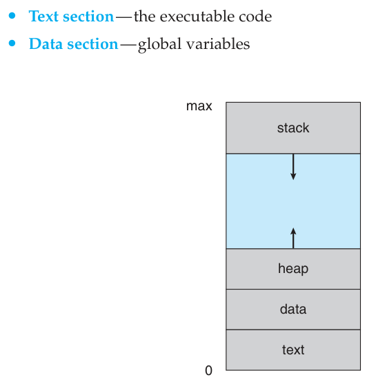
A function call pushes an activation record onto the stack, and the return pops it. The stack and the heap grow toward each other. In a C program the data section has two parts: initialized data (int y = 15;) and uninitialized data (int x;, called bss). Local variables such as int i; live on the stack. The memory returned by malloc is on the heap. The command size prints the section sizes in bytes. Its dec column is the sum text + data + bss, for example 1158 + 284 + 8 = 1450.函数调用时，会把一个活动记录压入栈中，返回时再弹出。栈和堆彼此朝对方增长。在 C 程序中，数据段分为两部分：已初始化数据（int y = 15;）和未初始化数据（int x;，称为 bss）。int i; 这类局部变量存放在栈上。malloc 返回的内存位于堆上。命令 size 以字节为单位打印各段的大小。它的 dec 列是 text + data + bss 之和，例如 1158 + 284 + 8 = 1450。
Step 2: the five states第 2 步：五种状态
In words: a process is new, ready to run, running, waiting for an event, or terminated.用文字表述：进程处于新建、就绪、运行、等待事件或终止之一。
Only one process can run on a core at any instant. Many processes can be ready or waiting.任一时刻，一个核上只能运行一个进程。可以有很多进程处于就绪或等待状态。
| State状态 | Meaning含义 |
|---|---|
| New新建 | The process is being created进程正在被创建 |
| Ready就绪 | The process is waiting to be assigned to a processor进程等待被分配到处理器 |
| Running运行 | Instructions are being executed指令正在执行 |
| Waiting等待 | The process waits for an event, such as I/O completion or the reception of a signal进程等待某个事件，例如 I/O 完成或收到信号 |
| Terminated终止 | The process has finished execution进程已结束执行 |

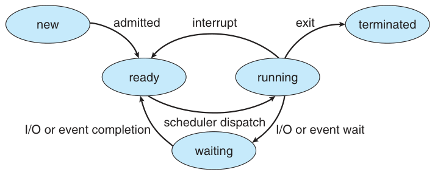
| Transition转换 | Label标签 | Typical cause典型原因 |
|---|---|---|
| new → ready新建 → 就绪 | admitted接纳 | The OS accepts the new processOS 接纳新进程 |
| ready → running就绪 → 运行 | scheduler dispatch调度程序分派 | The scheduler selects the process for a core调度程序为某个核心选择进程 |
| running → ready运行 → 就绪 | interrupt中断 | The time slice expires or a higher-priority process becomes ready时间片用完，或有优先级更高的进程变为就绪 |
| running → waiting运行 → 等待 | I/O or event waitI/O 或事件等待 | The process requests I/O or waits for an event进程请求 I/O 或等待某个事件 |
| waiting → ready等待 → 就绪 | I/O or event completionI/O 或事件完成 | The awaited event occurs所等待的事件发生 |
| running → terminated运行 → 终止 | exit退出 | The process finishes进程结束 |
Waiting never leads straight to running. When the awaited I/O finishes, the process only becomes eligible again. The core may be busy, so the process joins the ready queue and runs when the scheduler dispatches it.等待不会直接进入运行。所等待的 I/O 完成后，进程只是重新具备运行资格。核可能正忙，所以进程要进入就绪队列，等调度程序分派时才运行。
Step 3: the process control block第 3 步：进程控制块
In words: the PCB is the record that the operating system keeps for each process, holding everything needed to restart it.用文字表述：PCB 是操作系统为每个进程保存的记录，包含重新启动该进程所需的全部信息。
The process control block (PCB)（进程控制块）is also called the task control block. There are seven field groups.进程控制块（PCB）也称为任务控制块。它包含七组字段。
| PCB fieldPCB 字段 | Content内容 |
|---|---|
| Process state进程状态 | New, ready, running, waiting, halted, …新建、就绪、运行、等待、停止…… |
| Program counter程序计数器 | Address of the next instruction to execute下一条待执行指令的地址 |
| CPU registersCPU 寄存器 | Accumulators, index registers, stack pointers, general-purpose registers, condition codes; saved together with the program counter on an interrupt累加器、变址寄存器、栈指针、通用寄存器、条件码；在中断时与程序计数器一起保存 |
| CPU-scheduling informationCPU 调度信息 | Priority, pointers to scheduling queues, other parameters (Chapter 3)优先级、指向调度队列的指针以及其他参数（第 3 章） |
| Memory-management information内存管理信息 | Base and limit registers, page tables or segment tables (Chapters 6 and 7)基址与界限寄存器、页表或段表（第 6 章和第 7 章） |
| Accounting information记账信息 | CPU and real time used, time limits, account and process numbers已用的 CPU 时间与实际时间、时间限制、账户与进程编号 |
| I/O status informationI/O 状态信息 | I/O devices allocated to the process, list of open files分配给进程的 I/O 设备、打开文件列表 |
In Linux the PCB is the C structure task_struct. All of them form a doubly linked list, and the kernel keeps a pointer current to the running one. With threads the PCB also holds per-thread information (Chapter 2).在 Linux 中，PCB 是 C 结构 task_struct。所有 PCB 组成一个双向链表，内核用指针 current 指向正在运行的那一个。有了线程之后，PCB 还保存每个线程的信息（见第 2 章）。
Practice练习
Q1. (Trace) A process is created and admitted, dispatched, issues a disk read, is dispatched again after the read has completed, is preempted when its time slice expires, is dispatched once more and then calls exit(). Give the sequence of states with the label of every transition.Q1.（手工演算）一个进程被创建并接纳，被分派运行，发出一次磁盘读操作，读操作完成后再次被分派，时间片用完时被抢占，再次被分派后调用 exit()。写出状态序列，并标明每次转换的标签。
Answer
new →(admitted) ready →(scheduler dispatch) running →(I/O or event wait) waiting →(I/O or event completion) ready →(scheduler dispatch) running →(interrupt) ready →(scheduler dispatch) running →(exit) terminated. The process is dispatched three times. After the read it returns to the ready queue and waits for the scheduler; it does not go directly back to the CPU.新建 →（接纳）就绪 →（调度程序分派）运行 →（I/O 或事件等待）等待 →（I/O 或事件完成）就绪 →（调度程序分派）运行 →（中断）就绪 →（调度程序分派）运行 →（退出）终止。该进程被分派了三次。读操作完成后，它回到就绪队列并等待调度程序；它不会直接回到 CPU。
易错：I/O 完成后进程先回到就绪，不会直接运行。
Q2. (Layout) A C program declares int x; and int y = 15; outside main; inside main it declares int i; and int *values = malloc(5 * sizeof(int));. (a) In which section do x, y, i, the pointer variable values, the 20 bytes returned by malloc and the machine code of main live? (b) size prints text 1158, data 284, bss 8. Compute dec and write it in hexadecimal.Q2.（布局）一个 C 程序在 main 之外声明 int x; 和 int y = 15;；在 main 之内声明 int i; 和 int *values = malloc(5 * sizeof(int));。（a）x、y、i、指针变量 values、malloc 返回的 20 bytes 以及 main 的机器码，分别位于哪个段？（b）size 输出 text 1158、data 284、bss 8。计算 dec 并写出其十六进制形式。
Answer
(a) x: bss (uninitialized data). y: data (initialized data). i and values: stack (local variables). The 20 bytes: heap. Machine code of main: text. The pointer variable is on the stack, the memory it points to is on the heap.（a）x：bss（未初始化数据）。y：数据段（已初始化数据）。i 和 values：栈（局部变量）。20 bytes：堆。main 的机器码：代码段。指针变量位于栈上，而它所指向的内存位于堆中。
(b) dec \(=1158+284+8=1450\). In hexadecimal \(1450=5\cdot256+10\cdot16+10\), i.e. 0x5AA.（b）dec \(=1158+284+8=1450\)。十六进制为 \(1450=5\cdot256+10\cdot16+10\)，即 0x5AA。
Process scheduling and context switch ★★★进程调度与上下文切换 ★★★
Goal. Describe how processes move between the ready queue and the wait queues, describe a context switch as numbered steps, and compute its overhead and the CPU utilization of a multiprogrammed system.目标。说明进程如何在就绪队列与等待队列之间移动，用编号步骤描述一次上下文切换，并计算它的开销以及多道程序系统的 CPU 利用率。
Step 1: why several processes, and who is waiting where?第 1 步：为什么需要多个进程？谁在哪里等待？
In words: multiprogramming keeps some process running at all times; each process is either in the ready queue or in a wait queue.用文字表述：多道程序设计使任何时候都有进程在运行；每个进程要么在就绪队列中，要么在某个等待队列中。
Multiprogramming（多道程序设计）maximizes CPU utilization. Time sharing（分时）switches a core so often that users can interact with each program. The number of processes in memory is the degree of multiprogramming（多道程序度）. A process is I/O-bound（I/O 密集型）if it spends more time on I/O than on computing. It is CPU-bound（CPU 密集型）if it computes for long periods and requests I/O rarely.多道程序设计使 CPU 利用率最大化。分时让一个核切换得非常频繁，用户可以与每个程序交互。内存中的进程数就是多道程序度。如果一个进程花在 I/O 上的时间多于计算，它就是I/O 密集型的。如果它长时间计算、很少请求 I/O，它就是CPU 密集型的。
If each process waits for I/O for a fraction \(p\) of its time and the \(n\) processes wait independently, the CPU is idle only when all \(n\) wait together.若每个进程用于等待 I/O 的时间占比为 \(p\)，且 \(n\) 个进程相互独立地等待，那么只有当全部 \(n\) 个进程同时等待时，CPU 才会空闲。
Example: with \(p=0.8\) and \(n=4\), \(p^n=0.4096\), so \(U=1-0.4096=0.59\). More processes raise \(U\) with diminishing returns.例如，取 \(p=0.8\) 和 \(n=4\)，则 \(p^n=0.4096\)，因此 \(U=1-0.4096=0.59\)。进程越多，\(U\) 越高，但收益递减。
Step 2: the queues第 2 步：各种队列
New and ready processes wait in the ready queue（就绪队列）, a linked list of PCBs with a head and a tail pointer. A process that waits for an event is in a wait queue（等待队列）. A running process leaves the core in one of three ways:新建的进程和就绪的进程在就绪队列中等待。就绪队列是由 PCB 组成的链表，有头指针和尾指针。等待某个事件的进程位于等待队列中。运行中的进程离开核的方式有三种：
- It issues an I/O request and goes to an I/O wait queue.它发出 I/O 请求，进入 I/O 等待队列。
- It creates a child and goes to a wait queue until the child terminates.它创建子进程，并进入等待队列，直到子进程终止。
- It is removed by an interrupt, or its time slice expires, and it goes back to the ready queue.它被中断换下，或者时间片用完，然后回到就绪队列。
In cases 1 and 2 it later returns to the ready queue. When it terminates, it leaves all queues and its PCB and resources are freed.在第 1 和第 2 种情况下，它之后会回到就绪队列。终止时，它会离开所有队列，其 PCB 和资源随之释放。
The CPU scheduler（CPU 调度程序）picks one process from the ready queue. It runs often, at least every 100 ms. Swapping（交换）moves a process from memory to disk when memory is short. This lowers the degree of multiprogramming, and the process is swapped in later (Chapter 6).CPU 调度程序从就绪队列中选出一个进程。它运行得很频繁，至少每 100 ms 运行一次。交换是在内存不足时把进程从内存移到磁盘。这会降低多道程序度，之后再把该进程换入内存（见第 6 章）。
Step 3: the context switch第 3 步：上下文切换
In words: a context switch = save the state of the old process in its PCB, load the state of the new process from its PCB.用文字表述：上下文切换 = 把旧进程的状态保存到它的 PCB 中，再从新进程的 PCB 中装入其状态。

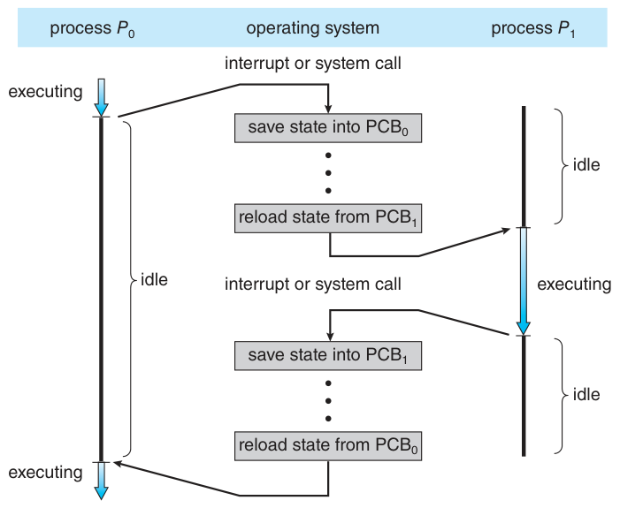
The steps:步骤如下：
- An interrupt or a system call transfers control to the kernel.中断或系统调用把控制权交给内核。
- The kernel saves the state of the old process in its PCB.内核把旧进程的状态保存到它的 PCB 中。
- The scheduler selects the next process.调度程序选出下一个进程。
- The kernel loads the saved state of that process from its PCB.内核从该进程的 PCB 中装入它保存的状态。
- The new process continues where it left off.新进程从上次停下的地方继续执行。
The system does no useful work during a switch, so the time is pure overhead. It depends on the memory speed, the number of registers to copy and special instructions that load or store all registers. A typical value is several microseconds. A processor with several register sets switches by changing a pointer to the current register set. Registers are copied to and from memory only when there are more active processes than register sets. A more complex operating system needs more work per switch.切换期间系统不做有用的工作，因此这段时间完全是开销。它取决于内存速度、需要复制的寄存器数量，以及用于装入或存储全部寄存器的专用指令。典型值为几微秒。拥有多组寄存器的处理器，只需改变指向当前寄存器组的指针即可切换。只有活动进程数多于寄存器组数时，才需要在寄存器和内存之间复制。操作系统越复杂，每次切换的工作量越大。
Practice练习
Q1. (Calculation) Every process spends 80% of its time waiting for I/O. (a) What is the CPU utilization with 4 processes in memory? (b) What is the smallest degree of multiprogramming that gives at least 90%?Q1.（计算）每个进程有 80% 的时间在等待 I/O。（a）内存中有 4 个进程时，CPU 利用率是多少？（b）使 CPU 利用率至少达到 90% 的最小多道程序度是多少？
Answer
(a) \(U=1-p^n=1-0.8^4=1-0.4096=0.5904\approx59\%\).
(b) \(1-0.8^n\ge0.9\) means \(0.8^n\le0.1\), so \(n\ge\ln0.1/\ln0.8=10.3\), i.e. \(n=11\) (\(n=10\) gives 89.3%, \(n=11\) gives 91.4%). Strongly I/O-bound processes need many processes in memory to keep the CPU busy, which costs memory.（b）\(1-0.8^n\ge0.9\) 意味着 \(0.8^n\le0.1\)，因此 \(n\ge\ln0.1/\ln0.8=10.3\)，即 \(n=11\)（\(n=10\) 得到 89.3%，\(n=11\) 得到 91.4%）。强 I/O 密集型进程需要内存中有大量进程才能使 CPU 保持忙碌，而这会占用内存。
Q2. (Calculation) A context switch takes 5 µs. (a) What fraction of the CPU time is lost with a time slice of 10 ms? (b) What is the smallest time slice that keeps the overhead at or below 2%?Q2.（计算）一次上下文切换耗时 5 µs。（a）时间片为 10 ms 时，损失的 CPU 时间占比是多少？（b）能使开销不超过 2% 的最小时间片是多少？
Answer
(a) \(5/(10\,000+5)=0.0005=0.05\%\).
(b) \(t_{cs}/(q+t_{cs})\le0.02\) gives \(q\ge49\,t_{cs}=49\cdot5=245\,\mu\text{s}\).（b）\(t_{cs}/(q+t_{cs})\le0.02\) 得到 \(q\ge49\,t_{cs}=49\cdot5=245\,\mu\text{s}\)。
Q3. (Explain) A processor has several register sets. Describe a context switch (a) when the new context is already in a register set, and (b) when it is in memory and all register sets are in use.Q3.（解释）一个处理器有多个寄存器组。请描述上下文切换：（a）新上下文已在某个寄存器组中时；（b）新上下文位于内存中且所有寄存器组都在使用时。
Answer
(a) Only the pointer to the current register set is changed; no register is copied, so the switch is very fast. (b) One of the register sets is chosen, its contents are saved to memory (the PCB of its process) and the saved context of the new process is loaded from memory into that set. This costs as much as an ordinary context switch.（a）只需改变指向当前寄存器组的指针，无需复制任何寄存器，因此切换非常快。（b）选择其中一个寄存器组，将其内容保存到内存中（即其所属进程的 PCB），并把新进程已保存的上下文从内存装入该寄存器组。这一代价与普通的上下文切换相当。
Process creation and termination ★★★进程的创建与终止 ★★★
Goal. Read code with fork(), exec() and wait(), count the processes it creates, predict its output and draw the process tree. Explain zombie and orphan processes.目标。阅读包含 fork()、exec() 和 wait() 的代码，统计它创建的进程数，预测其输出，并画出进程树。解释僵尸进程和孤儿进程。
Step 1: what choices does creation have?第 1 步：创建进程有哪些选择？
In words: the parent either runs on or waits; the child is either a copy of the parent or runs a new program.用文字表述：父进程要么继续运行，要么等待；子进程要么是父进程的副本，要么运行一个新程序。
| Question问题 | Option 1选项 1 | Option 2选项 2 |
|---|---|---|
| Execution执行方式 | The parent continues to execute concurrently with its children父进程与子进程并发执行 | The parent waits until some or all children have terminated父进程等待部分或全部子进程终止 |
| Address space地址空间 | The child is a duplicate of the parent (same program and data)子进程是父进程的副本（程序和数据相同） | A new program is loaded into the child子进程中装入新程序 |
Step 2: fork(), exec() and wait()第 2 步：fork()、exec() 和 wait()
In words: fork = copy me, exec = replace my program, wait = wait for a child to finish.用文字表述：fork = 复制我自己，exec = 替换我的程序，wait = 等待子进程结束。
fork()creates a child whose address space is a copy of the parent's. Both continue at the instruction afterfork(). The return value is 0 in the child, the child's pid (positive) in the parent, and a negative value if the call failed.fork()创建一个子进程，其地址空间是父进程的副本。二者都从fork()之后的那条指令继续执行。返回值在子进程中为 0，在父进程中为 子进程的 pid（正数）；若调用失败，则返回负值。exec()(for exampleexeclp()) replaces the memory image of the calling process with a new program. The old image is destroyed, so a successfulexec()never returns. The pid stays the same.exec()（例如execlp()）用一个新程序替换调用进程的内存映像。旧映像被销毁，因此成功的exec()永远不会返回。pid 保持不变。wait()makes the parent wait until a child terminates. It returns the pid of that child and the exit status.wait()让父进程等待，直到某个子进程终止。它返回该子进程的 pid 和退出状态。
pid_t pid = fork(); /* fork a child process */
if (pid < 0) { /* error occurred */
fprintf(stderr, "Fork Failed");
return 1;
}
else if (pid == 0) /* child process */
execlp("/bin/ls", "ls", NULL);
else { /* parent process */
wait(NULL); /* wait for the child to complete */
printf("Child Complete");
}

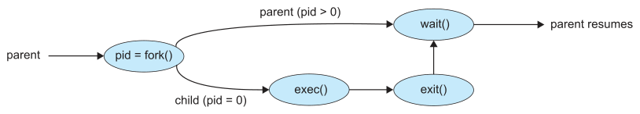
The child overlays its address space with /bin/ls and prints a listing. The parent waits and then prints "Child Complete". A statement after execlp() in the child runs only if exec failed. After fork() each process has its own copy of every variable: a change in the child is invisible to the parent. Windows CreateProcess() loads a program at creation instead of copying.子进程用 /bin/ls 覆盖其地址空间，并打印一个目录列表。父进程等待，然后打印 "Child Complete"。子进程中 execlp() 之后的语句，只有在 exec 失败时才会执行。fork() 之后，每个进程都有自己的一份变量副本：子进程中的修改，父进程看不到。Windows 的 CreateProcess() 则在创建时直接装入程序，而不是复制。
UNIX fork() |
Windows CreateProcess() |
|
|---|---|---|
| Address space of the child子进程的地址空间 | Copy of the parent's父进程地址空间的副本 | A specified program is loaded at creation创建时装入指定的程序 |
| Parameters参数 | None无 | At least ten (command line, inheritance flags, creation flags, environment, directory, STARTUPINFO, PROCESS_INFORMATION)至少十个（命令行、继承标志、创建标志、环境、目录、STARTUPINFO、PROCESS_INFORMATION） |
| Waiting for the child等待子进程 | wait() |
WaitForSingleObject() on the handle of the child在子进程的句柄上执行 WaitForSingleObject() |
Step 3: how to count processes第 3 步：如何统计进程数
How to do it by hand: 1. Start with one process. 2. Go through the code line by line. 3. At each fork(), every process that executes the line doubles. 4. If a condition such as if (fork() == 0) guards the next fork, only the children execute it.手工统计的方法：1. 从一个进程开始。2. 逐行阅读代码。3. 每遇到一个 fork()，执行该行的每个进程都会变成两个。4. 如果下一次 fork 受 if (fork() == 0) 这样的条件控制，则只有子进程执行它。
| Code代码 | Processes进程数 | Reason原因 |
|---|---|---|
fork(); fork(); fork(); |
8 | \(2^3\) |
for (i = 0; i < 4; i++) fork(); |
16 | \(2^4\), every child continues the loop\(2^4\)，每个子进程都继续执行循环 |
for (i = 0; i < 4; i++) if (fork() == 0) break; |
5 | children leave the loop, only the parent forks again: 4 + 1子进程离开循环，只有父进程再次 fork：4 + 1 |
Step 4: termination, zombies and orphans第 4 步：终止、僵尸进程与孤儿进程
In words: a process ends with exit(); a finished child stays as a zombie until its parent calls wait(); a child whose parent ended first is an orphan.用文字表述：进程以 exit() 结束；已结束的子进程会变成僵尸进程，直到父进程调用 wait()；父进程先结束的子进程是孤儿进程。
A process ends when it executes its last statement and calls exit(), which the C run-time library does by default. It may return an integer status that the parent reads with wait(&status). All its resources are freed. A process can also be terminated by another one, normally its parent, for example because the child exceeded its resources or its task is no longer needed. If the system does not let a child outlive its parent, cascading termination（级联终止）ends all descendants.进程执行完最后一条语句后就会结束，并调用 exit()（这是 C 运行时库默认的做法）。它可以返回一个整数状态，父进程用 wait(&status) 读取该状态。它的所有资源随之释放。进程也可能被另一个进程终止，通常是它的父进程，例如子进程超出了资源限制，或者它的任务已经不再需要。如果系统不允许子进程比父进程活得更久，就会发生级联终止，结束所有后代进程。
| Zombie僵尸进程 | Orphan孤儿进程 | |
|---|---|---|
| Situation情况 | The process has terminated, but its parent has not yet called wait()进程已终止，但父进程尚未调用 wait() |
The parent terminated without calling wait()父进程未调用 wait() 即已终止 |
| What remains保留的内容 | Its process-table entry (with the exit status) and its pid其进程表项（含退出状态）和 pid | The process itself, still running进程本身仍在运行 |
| Resolution处理方式 | The parent calls wait(): entry and pid are released父进程调用 wait()：进程表项和 pid 被释放 |
init or systemd (pid 1) adopts it and periodically calls wait()init 或 systemd（pid 1）收养它，并定期调用 wait() |
Practice练习
Q1. (Trace) What does the program print at LINE A? Which of the stack, the heap and a shared-memory segment are shared between parent and child after fork()?Q1.（手工演算）程序在 LINE A 处输出什么？在 fork() 之后，栈、堆和共享内存段中哪些在父子进程之间是共享的？
int value = 5;
int main() {
pid_t pid = fork();
if (pid == 0) { /* child process */
value += 15;
return 0;
}
else if (pid > 0) { /* parent process */
wait(NULL);
printf("PARENT: value = %d", value); /* LINE A */
return 0;
}
}
Answer
The program prints PARENT: value = 5. The child adds 15 to its own copy of value (20 in the child), but parent and child have separate address spaces, so the parent still sees 5. After fork() only a shared-memory segment is shared; the stack and the heap are copied, so each process has its own.程序输出 PARENT: value = 5。子进程将其自身的 value 副本加 15（在子进程中为 20），但父子进程拥有各自独立的地址空间，因此父进程仍然看到 5。在 fork() 之后，只有共享内存段是共享的；栈和堆会被复制，因此每个进程都拥有各自的一份。
易错：子进程改的是自己的副本，父进程看不到。
Q2. (Counting) How many processes, including the initial one, run the code if (fork() == 0) fork(); fork();? Draw the process tree.Q2.（计数）包括初始进程在内，共有多少个进程执行了代码 if (fork() == 0) fork(); fork();？画出进程树。
Answer
Six processes. P0 executes the first fork() and creates P1. P1 (return value 0) executes the inner fork() and creates P2. Then P0, P1 and P2 each execute the last fork() and create P3, P4 and P5. Tree: P0 has the children P1 and P3; P1 has the children P2 and P4; P2 has the child P5.共 6 个进程。P0 执行第一个 fork() 并创建 P1。P1（返回值为 0）执行内层的 fork() 并创建 P2。随后，P0、P1 和 P2 各自执行最后的 fork()，并分别创建 P3、P4 和 P5。进程树：P0 的子进程为 P1 和 P3；P1 的子进程为 P2 和 P4；P2 的子进程为 P5。
Q3. (Explain) (a) In the fork/exec/wait program of this section, when would a statement placed right after execlp() in the child be executed? (b) Explain the difference between a zombie and an orphan and say who removes each of them.Q3.（解释）（a）在本节的 fork/exec/wait 程序中，子进程里放在 execlp() 之后的语句何时会被执行？（b）解释僵尸进程与孤儿进程的区别，并说明二者各自由谁回收。
Answer
(a) Only if execlp() fails (for example the file does not exist). A successful exec() replaces the whole memory image of the process and never returns.（a）仅当 execlp() 失败时（例如文件不存在）才会执行。成功的 exec() 会替换整个进程的内存映像，并且永远不会返回。
(b) A zombie has terminated, but its parent has not yet called wait(); its process-table entry stays so that the parent can read the exit status, and the parent removes it by calling wait(). An orphan is a running process whose parent terminated first; init or systemd becomes its new parent and calls wait() periodically, so the orphan is cleaned up when it terminates.（b）僵尸进程已经终止，但其父进程尚未调用 wait()；它的进程表项会保留，以便父进程读取退出状态，父进程通过调用 wait() 将该表项移除。孤儿进程是父进程先于它终止的运行中进程；init 或 systemd 成为其新的父进程，并定期调用 wait()，因此孤儿进程终止时会被清理。
Interprocess communication: shared memory and message passing ★★★进程间通信：共享内存与消息传递 ★★★
Goal. Compare shared memory with message passing in a table, read the bounded-buffer producer–consumer code and say how many items it holds, and name the design choices of message passing.目标。用表格比较共享内存与消息传递，阅读有界缓冲区的生产者–消费者代码并说明它能容纳多少个元素，并列出消息传递的设计选择。
Step 1: the two models第 1 步：两种模型
In words: shared memory = both processes read and write one region; message passing = the processes send messages through the kernel.用文字表述：共享内存 = 两个进程读写同一块区域；消息传递 = 进程通过内核发送消息。

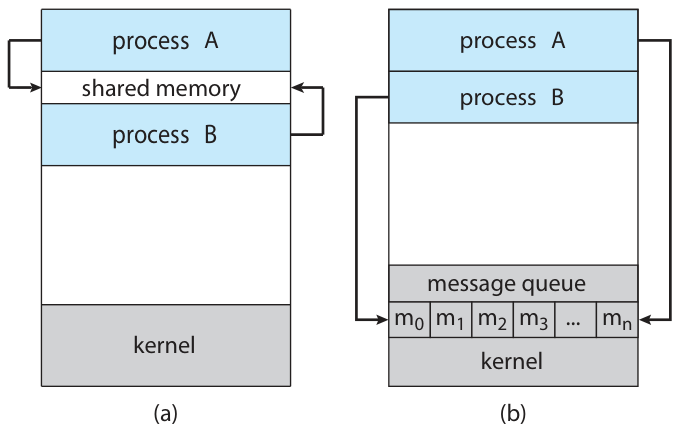
| Shared memory共享内存 | Message passing消息传递 | |
|---|---|---|
| Idea思路 | A memory region is shared; the processes read and write it一块内存区域被共享，进程读写它 | The processes exchange messages with send and receive进程借助 send 和 receive 交换消息 |
| Kernel内核参与 | Needed only to set up the region; later accesses are ordinary memory accesses仅在建立该区域时需要；之后的访问都是普通的内存访问 | A system call and kernel work for every message每条消息都需要一次系统调用和内核工作 |
| Speed速度 | Faster更快 | Slower较慢 |
| Synchronization同步 | Done by the processes themselves (Chapter 4)由进程自行完成（第 4 章） | Built into the operations内置于操作之中 |
| Best for适用于 | Large amounts of data on one machine同一台机器上的大量数据 | Small amounts of data; distributed systems少量数据；分布式系统 |
The shared region lies in the address space of the process that creates it, and the others attach it to their own. The operating system normally forbids one process to touch the memory of another, so shared memory means the processes agree to lift this. They decide the form and place of the data themselves and must not write the same location at the same time.共享区域位于创建它的进程的地址空间中，其他进程把它挂接到自己的地址空间。操作系统通常禁止一个进程访问另一个进程的内存，所以使用共享内存，就是这些进程约定放开这一限制。数据的形式和位置由它们自己决定，并且不能同时写同一个位置。
Step 2: producer–consumer with a bounded buffer第 2 步：使用有界缓冲区的生产者–消费者
In words: the producer puts items into a circular array, the consumer takes them out, and one slot stays empty so that "full" can be told from "empty".用文字表述：生产者把元素放入循环数组，消费者把它们取出；留出一个空槽，以便区分“满”和“空”。
In the producer–consumer problem（生产者–消费者问题）, a producer produces information that a consumer consumes. Example: a compiler produces assembly code that an assembler consumes. A bounded buffer（有界缓冲区）has a fixed size: the consumer waits when it is empty and the producer waits when it is full. An unbounded buffer never makes the producer wait.在生产者–消费者问题中，生产者生成信息，消费者使用这些信息。例如，编译器生成汇编代码，汇编器再使用这些代码。有界缓冲区大小固定：缓冲区空时消费者等待，满时生产者等待。无界缓冲区则永远不会让生产者等待。
#define BUFFER_SIZE 10
typedef struct { /* ... */ } item;
item buffer[BUFFER_SIZE];
int in = 0; /* next free position */
int out = 0; /* first full position */
/* producer */
while (true) {
/* produce an item in next_produced */
while (((in + 1) % BUFFER_SIZE) == out)
; /* buffer full: do nothing */
buffer[in] = next_produced;
in = (in + 1) % BUFFER_SIZE;
}
/* consumer */
while (true) {
while (in == out)
; /* buffer empty: do nothing */
next_consumed = buffer[out];
out = (out + 1) % BUFFER_SIZE;
/* consume the item in next_consumed */
}
The code holds at most BUFFER_SIZE - 1 items, because with \(N\) items in == out would hold for a full and for an empty buffer. Both loops busy-wait. Two processes that touch the buffer at the same time are not handled; that is Chapter 4.这段代码最多只能容纳 BUFFER_SIZE - 1 个元素，因为若放满 \(N\) 个元素，in == out 对满和空都会成立。两个循环都是忙等待。两个进程同时访问缓冲区的情况，这段代码没有处理；这是第 4 章的内容。
Step 3: message passing and its design choices第 3 步：消息传递及其设计选择
In words: message passing needs send and receive, and three choices: how the partners are named, whether the calls block, and how many messages can wait.用文字表述：消息传递需要 send 和 receive，并有三个选择：如何命名通信伙伴、调用是否阻塞，以及能有多少条消息等待。
A message-passing facility offers at least send(message) and receive(message). Processes communicate without sharing an address space, which suits distributed systems. A communication link must exist between the partners.消息传递设施至少提供 send(message) 和 receive(message) 两种操作。进程之间不共享地址空间即可通信，这很适合分布式系统。通信双方之间必须存在一条通信链路。
Choice 1: naming.选择 1：命名。
| Direct communication直接通信 | Indirect communication间接通信 | |
|---|---|---|
| Primitives原语 | send(P, message) and receive(Q, message) (symmetric); in the asymmetric variant receive(id, message) accepts from any process and sets id to the sendersend(P, message) 和 receive(Q, message)（对称方式）；在非对称变体中，receive(id, message) 接受来自任意进程的消息，并把 id 设为发送者 |
send(A, message) and receive(A, message) with the mailbox（邮箱）or port Asend(A, message) 和 receive(A, message)，使用邮箱（或端口）A |
| Link set up链路建立方式 | Automatically between each pair that wants to communicate每对需要通信的进程之间自动建立 | Only if both processes share a mailbox仅当两个进程共享一个邮箱时 |
| Processes per link每条链路的进程数 | Exactly two恰好两个 | Two or more两个或更多 |
| Links per pair每对进程的链路数 | Exactly one恰好一条 | Several, one per shared mailbox多条，每个共享邮箱一条 |
| Drawback缺点 | Limited modularity: changing a process identifier means finding and changing every reference模块化程度有限：更改进程标识符意味着必须找到并修改每一处引用 | Several receivers on one mailbox need a rule同一邮箱有多个接收者时需要规定规则 |
Suppose P1, P2 and P3 share mailbox A. P1 sends, and P2 and P3 both receive. Who gets the message? The system may allow a link to join at most two processes. It may allow only one receiver at a time. Or it may pick the receiver itself, for example round robin. A mailbox is owned by a process (it disappears with its owner, who can only receive from it) or by the operating system (it exists independently).假设 P1、P2 和 P3 共享邮箱 A。P1 发送，P2 和 P3 都接收。消息给谁？系统可以只允许一条链路连接至多两个进程；也可以只允许同一时刻只有一个接收方；或者由系统自己选择接收方，例如轮转。邮箱可以归某个进程所有（进程结束时邮箱随之消失，且只有所有者能从中接收），也可以归操作系统所有（邮箱独立存在）。
Choice 2: blocking or not. Blocking is also called synchronous, nonblocking asynchronous.选择 2：是否阻塞。阻塞也称为同步，非阻塞也称为异步。
- Blocking send: the sender waits until the message is received by the receiver or the mailbox.阻塞发送：发送方一直等待，直到接收方或邮箱收到该消息。
- Nonblocking send: the sender sends and continues.非阻塞发送：发送方发出消息后立即继续执行。
- Blocking receive: the receiver waits until a message is available.阻塞接收：接收方一直等待，直到有消息可用。
- Nonblocking receive: the receiver gets a valid message or null.非阻塞接收：接收方得到一条有效消息，或得到空值。
If both calls block, the processes have a rendezvous（会合）. The producer then loops on send(next_produced) and the consumer on receive(next_consumed), and no buffer code is needed.如果两种调用都阻塞，两个进程之间就形成会合。这时生产者在 send(next_produced) 上循环，消费者在 receive(next_consumed) 上循环，不需要缓冲区代码。
Choice 3: capacity of the temporary queue.选择 3：容量，即临时队列的容量。
| Capacity容量 | Queue length队列长度 | Behaviour of the sender发送者的行为 |
|---|---|---|
| Zero零容量 | 0 | Blocks until the receiver takes the message (rendezvous; "no buffering")阻塞，直到接收者取走消息（会合；“无缓冲”） |
| Bounded有界 | \(n\) | Continues if the queue is not full, blocks if it is full队列未满时继续执行，队列已满时阻塞 |
| Unbounded无界 | unlimited无限制 | Never blocks从不阻塞 |
Bounded and unbounded capacity are called automatic buffering.有界容量和无界容量都称为自动缓冲。
Practice练习
Q1. (Trace) BUFFER_SIZE is 6, in is 4 and out is 1. (a) How many items are in the buffer, and can the producer add one? (b) The producer adds two items and then the consumer removes three. Give in, out and the number of items after each step.Q1.（手工演算）BUFFER_SIZE 为 6，in 为 4，out 为 1。（a）缓冲区中有多少个数据项？生产者能否再加入一个？（b）生产者加入两个数据项，然后消费者取出三个。给出每一步之后的 in、out 以及数据项个数。
Answer
(a) count \(=(4-1)\bmod6=3\). The buffer is not full because (4 + 1) % 6 = 5 is not equal to out = 1, so the producer can add an item.（a）计数 \(=(4-1)\bmod6=3\)。缓冲区未满，因为 (4 + 1) % 6 = 5 不等于 out = 1，所以生产者可以加入一个数据项。
(b) After the producer has added two items: in becomes 5 and then 0, out = 1, count \(=(0-1)\bmod6=5=N-1\); the buffer is full because (0 + 1) % 6 = 1 = out. After the consumer has removed three items: out becomes 2, 3, 4, in = 0, count \(=(0-4)\bmod6=2\).（b）生产者加入两个数据项之后：in 依次变为 5 和 0，out = 1，计数 \(=(0-1)\bmod6=5=N-1\)；缓冲区已满，因为 (0 + 1) % 6 = 1 = out。消费者取出三个数据项之后：out 依次变为 2、3、4，in = 0，计数 \(=(0-4)\bmod6=2\)。
Q2. (Design) The scheme holds at most BUFFER_SIZE - 1 items. Change it so that all BUFFER_SIZE slots can be used without a shared variable that both processes write.Q2.（设计）该方案最多容纳 BUFFER_SIZE - 1 个数据项。请修改它，使全部 BUFFER_SIZE 个槽位都能被使用，并且不需要由两个进程共同写入的共享变量。
Answer
Let in and out be counters that only increase and use the slots in % N and out % N. The buffer is empty if in == out, full if in - out == N, and holds in - out items. Only the producer writes in and only the consumer writes out, so no variable is written by both; a shared count updated by both would create a race condition (Chapter 4). Unsigned counters and a power-of-two \(N\) keep the indexes correct even when a counter overflows.设 in 和 out 为只增不减的计数器，并使用槽位 in % N 和 out % N。若 in == out，则缓冲区为空；若 in - out == N，则为满；其中有 in - out 个数据项。只有生产者写入 in，只有消费者写入 out，因此没有哪个变量同时由双方写入；若由双方共同更新一个共享的 count，则会产生竞争条件（第 4 章）。采用无符号计数器以及 2 的幂大小的 \(N\)，即使计数器溢出，下标也能保持正确。
思路：不再对 in、out 取模，让二者之差直接表示元素个数，就不需要空出一格。
Q3. (Compare) (a) Compare direct and indirect communication with respect to links and modularity. (b) Which combination of synchronization gives a rendezvous, and what is the buffer capacity then?Q3.（比较）（a）就链路和模块化而言，比较直接通信与间接通信。（b）哪一种同步方式的组合会产生会合？此时缓冲区容量为多少？
Answer
(a) Direct communication names the partner process in send(P, m) and receive(Q, m); exactly one link exists between a pair, and every change of a process identifier must be made in all communicating processes, so modularity is limited. Indirect communication uses mailboxes: processes know only the mailbox, a link can join more than two processes and a pair can use several mailboxes, so processes can be replaced without changing the others. A rule is needed if several processes receive from one mailbox.（a）直接通信在 send(P, m) 和 receive(Q, m) 中指明通信伙伴进程；每对进程之间恰好存在一条链路，并且任何进程标识符的更改都必须在所有通信进程中进行，因此模块化程度有限。间接通信使用邮箱：进程只需知道邮箱，一条链路可以连接两个以上的进程，一对进程也可以使用多个邮箱，因此可以在不改变其他进程的情况下替换某个进程。若多个进程从同一邮箱接收消息，则需要规定规则。
(b) Blocking send together with blocking receive. With zero capacity the sender blocks until the receiver has taken the message.（b）阻塞发送与阻塞接收相配合。零容量时，发送者阻塞，直到接收者取走消息。
IPC in practice: POSIX, Mach, Windows and pipes ★★进程间通信实践：POSIX、Mach、Windows 与管道 ★★
Goal. List the POSIX shared-memory calls in order, state the main idea of Mach and Windows message passing, and compare ordinary and named pipes.目标。按顺序列出 POSIX 共享内存的调用，说明 Mach 和 Windows 消息传递的主要思想，并比较普通管道与命名管道。
POSIX shared memoryPOSIX 共享内存
In words: create a named memory object, set its size, map it into the address space, use it like memory, then remove it. Five steps:用文字表述：创建一个有名字的内存对象，设置其大小，把它映射到地址空间，像使用内存一样使用它，最后删除它。共五步：
fd = shm_open(name, O_CREAT | O_RDWR, 0666)creates (or opens) the shared-memory objectnameand returns a file descriptor; other processes refer to the object by this name.fd = shm_open(name, O_CREAT | O_RDWR, 0666)创建（或打开）共享内存对象name，并返回一个文件描述符；其他进程通过该名称引用此对象。ftruncate(fd, 4096)sets the size of the object to 4096 bytes.ftruncate(fd, 4096)将该对象的大小设置为 4096 bytes。ptr = mmap(0, SIZE, PROT_READ | PROT_WRITE, MAP_SHARED, fd, 0)maps the object into the address space and returns a pointer;MAP_SHAREDmakes changes visible to every process that shares the object.ptr = mmap(0, SIZE, PROT_READ | PROT_WRITE, MAP_SHARED, fd, 0)将该对象映射到地址空间中并返回一个指针；MAP_SHARED使所有共享该对象的进程都能看到所做的修改。- The processes read and write through
ptrlike ordinary memory (for examplesprintf(ptr, "%s", message)); no further system calls are needed.进程通过ptr像普通内存一样读写（例如sprintf(ptr, "%s", message)），无需再进行系统调用。 shm_unlink(name)removes the object.shm_unlink(name)删除该对象。
Mach and Windows ALPCMach 与 Windows ALPC
Mach (in the macOS and iOS kernels) sends almost all communication as messages through ports（端口）. A port is a finite, unidirectional mailbox with many senders and one receiver. Two-way communication needs a second, reply port. A task holds port rights（端口权限）, such as receive and send rights. mach_msg() sends and receives messages.Mach（用于 macOS 和 iOS 内核）几乎所有通信都通过端口以消息的形式进行。端口是容量有限的单向邮箱，可以有多个发送方，但只有一个接收方。双向通信需要第二个端口，即回复端口。一个任务持有端口权限，例如接收权限和发送权限。mach_msg() 负责收发消息。
Windows advanced local procedure call (ALPC) connects two processes on one machine. The server publishes a connection port. After a request, the server creates a pair of private communication ports for the client. The message size selects the technique:Windows 的高级本地过程调用（ALPC）连接同一台机器上的两个进程。服务器发布一个连接端口。收到请求后，服务器为客户端创建一对私有通信端口。消息的大小决定采用哪种技术：
| Message size消息大小 | Technique技术 |
|---|---|
| Up to 256 bytes至多 256 bytes | The message queue of the port is intermediate storage; the message is copied端口的消息队列用作中间存储，消息被复制 |
| Larger较大 | A section object, a region of shared memory attached to the channel; a small message carries its pointer and size, so no data is copied节对象，即附加到通道上的一块共享内存区域；消息本身很小，只携带指针和大小，因此不复制任何数据 |
| Too large for a section object超出节对象容量 | The server reads and writes directly in the address space of the client服务器直接在客户端的地址空间中读写 |
Pipes管道
In words: a pipe is a one-way byte queue in the kernel; a named pipe also has a file name.用文字表述：管道是内核中的单向字节队列；命名管道还有文件名。
An ordinary pipe（普通管道）is written at the write end and read at the read end, so it is unidirectional. On UNIX, pipe(fd) creates it: fd[0] is the read end and fd[1] the write end. The parent creates the pipe and then calls fork(), so the child inherits both descriptors. The pipe exists only while the processes communicate. Windows calls it an anonymous pipe. On the command line, ls | less connects the output of ls to the input of less.普通管道在写端写入、在读端读出，因此是单向的。在 UNIX 中，pipe(fd) 创建它：fd[0] 是读端，fd[1] 是写端。父进程先创建管道，再调用 fork()，于是子进程继承两个描述符。管道只在进程通信期间存在。Windows 称之为匿名管道。在命令行中，ls | less 把 ls 的输出连接到 less 的输入。
int fd[2]; pid_t pid;
pipe(fd); /* create the pipe */
pid = fork();
if (pid > 0) { /* parent: writer */
close(fd[READ_END]); /* close the unused end */
write(fd[WRITE_END], write_msg, strlen(write_msg) + 1);
close(fd[WRITE_END]);
}
else { /* child: reader */
close(fd[WRITE_END]); /* close the unused end */
read(fd[READ_END], read_msg, BUFFER_SIZE);
close(fd[READ_END]);
}
Each process closes the end it does not use. A reader sees end-of-file (read() returns 0) only when every write end is closed.每个进程都要关闭它不用的那一端。只有当所有写端都关闭后，读者才会看到文件结束（read() 返回 0）。
A named pipe（命名管道）needs no parent–child relationship, may have several writers and continues to exist after the processes end. UNIX calls it a FIFO: mkfifo() creates it as a file, and it is half duplex and on one machine. Windows named pipes are full duplex and may span machines.命名管道不需要父子关系，可以有多个写者，并且在进程结束后仍然存在。UNIX 称之为 FIFO：mkfifo() 把它创建为一个文件，它是半双工的，只能在同一台机器上使用。Windows 的命名管道是全双工的，并且可以跨越多台机器。
| UNIX ordinary pipeUNIX 普通管道 | Windows anonymous pipeWindows 匿名管道 | UNIX FIFO | Windows named pipeWindows 命名管道 | |
|---|---|---|---|---|
| Direction方向 | One way单向 | One way单向 | Half duplex半双工 | Full duplex全双工 |
| Parent–child needed需要父子关系 | Yes是 | Yes是 | No否 | No否 |
| Different machines能否跨机器 | No否 | No否 | No否 | Yes是 |
| Lifetime生存期 | While the processes communicate通信期间 | While the processes communicate通信期间 | Until deleted直到被删除 | Beyond the communicating processes超出通信进程的生存期 |
Practice练习
Q1. (Trace) A producer executes sprintf(ptr, "%s", "Hello"); ptr += strlen("Hello"); sprintf(ptr, "%s", "World!"); on a POSIX shared-memory object. What does the consumer print when it executes printf("%s", start) with start pointing to the beginning of the object? How many bytes of the object are used?Q1.（手工演算）生产者在一个 POSIX 共享内存对象上执行 sprintf(ptr, "%s", "Hello"); ptr += strlen("Hello"); sprintf(ptr, "%s", "World!");。当消费者执行 printf("%s", start)，且 start 指向该对象的起始位置时，它会输出什么？该对象使用了多少字节？
Answer
It prints HelloWorld!, without a space. The first sprintf writes "Hello" and a terminating NUL byte; the second sprintf starts at the position of that NUL byte and overwrites it. The string has 11 characters, so 12 bytes are used including the final NUL, out of the 4096 bytes of the object. The consumer then calls shm_unlink() to remove the object.它输出 HelloWorld!，中间没有空格。第一次 sprintf 写入 “Hello” 和一个结束用的 NUL 字节；第二次 sprintf 从该 NUL 字节所在位置开始写入，并覆盖它。该字符串有 11 个字符，因此连同末尾的 NUL 共使用 12 bytes（该对象共 4096 bytes）。随后，消费者调用 shm_unlink() 删除该对象。
Q2. (Explain) In the parent–child pipe program the parent writes "Greetings" with strlen(write_msg) + 1 bytes. (a) How many bytes are written? (b) Why must the child close fd[WRITE_END] if it reads in a loop until read() returns 0? (c) How can the child send a reply?Q2.（解释）在父子进程管道程序中，父进程以 strlen(write_msg) + 1 字节写入 “Greetings”。（a）共写入多少字节？（b）若子进程在循环中读取，直到 read() 返回 0，它为什么必须关闭 fd[WRITE_END]？（c）子进程如何发送回复？
Answer
(a) "Greetings" has 9 characters; with the terminating NUL byte the parent writes 10 bytes.（a）“Greetings” 有 9 个字符，加上结尾的 NUL 字节，父进程共写入 10 bytes。
(b) The reader sees end-of-file only when all write ends of the pipe are closed. The child inherited a copy of the write end; if it kept it open, the pipe would still have a writer after the parent closed its end, and the child's read() would block forever.（b）只有当管道的所有写端都关闭时，读取者才会看到文件结束。子进程继承了写端的一个副本；若它保持该写端打开，那么在父进程关闭其写端之后，管道仍会有一个写者，子进程中的 read() 将永远阻塞。
(c) An ordinary pipe is unidirectional, so a second pipe is needed for the opposite direction (or a named pipe with bidirectional communication).（c）普通管道是单向的，因此需要第二个管道来提供反方向通信（或使用支持双向通信的命名管道）。
Client–server communication: sockets and RPC ★★客户机–服务器通信：套接字与 RPC ★★
Goal. Describe a socket connection, the steps of an RPC with stubs and marshaling, and the two call semantics.目标。描述套接字连接，描述带有存根与参数编组的 RPC 步骤，并说明两种调用语义。
Sockets套接字
In words: a socket = IP address + port number, and a connection = a pair of sockets.用文字表述：套接字 = IP 地址 + 端口号，一个连接 = 一对套接字。
A socket（套接字）is an endpoint of communication, for example 146.86.5.20:1625. The server listens on a well-known port: SSH 22, FTP 21, HTTP 80. All ports below 1024 are well known. A client gets an arbitrary port above 1024. Every connection must be unique: a second connection from the same host to the same server gets a different client port, so packets reach the right process.套接字是通信的端点，例如 146.86.5.20:1625。服务器在一个众所周知的端口上监听：SSH 为 22，FTP 为 21，HTTP 为 80。所有小于 1024 的端口都是众所周知的端口。客户端则获得一个大于 1024 的任意端口。每个连接必须是唯一的：同一主机与同一服务器建立第二个连接时，会得到另一个客户端端口，这样数据包才能到达正确的进程。

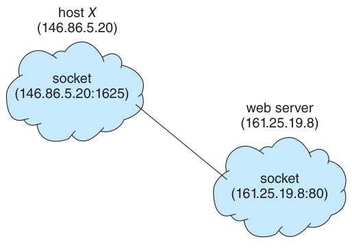
TCP sockets are connection-oriented, UDP sockets are connectionless, and 127.0.0.1 is the loopback address of the computer itself. Sockets carry only an unstructured stream of bytes.TCP 套接字是面向连接的，UDP 套接字是无连接的，127.0.0.1 是计算机本机的回环地址。套接字传输的只是无结构的字节流。
Remote procedure calls远程过程调用
In words: an RPC makes a call to another machine look like a local procedure call.用文字表述：RPC 让对另一台机器的调用看起来像一次本地过程调用。
An RPC（远程过程调用）is built on message passing. The steps:RPC（远程过程调用）建立在消息传递之上。步骤如下：
- The client calls a stub（存根）as an ordinary local procedure.客户端像调用普通本地过程一样调用一个存根。
- The stub finds the server port and marshals（参数编组）the parameters into a message.存根找到服务器端口，并把参数编组成一条消息。
- The server stub receives the message, unmarshals the parameters and calls the procedure.服务器端存根接收消息，把参数解组，然后调用该过程。
- The result returns in the same way.结果沿同样的途径返回。
Marshaling converts data to a machine-independent format such as external data representation (XDR), because machines differ in byte order.参数编组把数据转换为与机器无关的格式，例如外部数据表示（XDR），因为不同机器的字节序不同。
A local call fails only in extreme cases, but an RPC can fail or be repeated because of network errors.本地调用只有在极端情况下才会失败，而 RPC 却可能因网络错误而失败或被重复执行。
| Semantics语义 | Implementation实现 | Guarantee保证 |
|---|---|---|
| At most once至多一次 | Each message carries a timestamp. The server keeps a history of the timestamps it has processed and ignores a message whose timestamp is already in the history每条消息都带有时间戳。服务器保存其已处理过的时间戳历史，并忽略时间戳已在历史中的消息 | A request sent once or many times is executed at most once; it may never be executed无论请求发送一次还是多次，至多执行一次；也可能从不被执行 |
| Exactly once恰好一次 | At most once plus an acknowledgement (ACK) that the call was received and executed; the client resends the call periodically until it receives the ACK至多一次，外加表示调用已被接收并执行的确认（ACK）；客户端定期重发该调用，直到收到 ACK | The request is executed once该请求恰好执行一次 |
The client must know the server port. Fixed binding sets the port at compile time. Dynamic binding uses a matchmaker daemon on a fixed port: the client asks it for the port of the procedure, then sends its calls there.客户端必须知道服务器端口。固定绑定在编译时就确定端口。动态绑定使用固定端口上的匹配器（matchmaker）守护进程：客户端先向它询问该过程的端口，然后把调用发往那里。
Practice练习
Q1. (Calculation) Host X (146.86.5.20) opens two connections to the web server 161.25.19.8 on port 80. (a) Give a possible pair of sockets for each connection. (b) Why must the client ports differ? (c) If client ports are drawn from 1025 to 65535, how many simultaneous connections can X open to this one server socket?Q1.（计算）主机 X（146.86.5.20）与 Web 服务器 161.25.19.8 的 80 端口建立了两个连接。（a）给出每个连接可能的一对套接字。（b）为什么客户端端口必须不同？（c）若客户端端口取自 1025 至 65535，则 X 能同时对这一个服务器套接字建立多少个连接？
Answer
(a) (146.86.5.20:1625, 161.25.19.8:80) and (146.86.5.20:1626, 161.25.19.8:80).（a）(146.86.5.20:1625, 161.25.19.8:80) 和 (146.86.5.20:1626, 161.25.19.8:80)。
(b) A connection is identified by its pair of sockets. With equal client ports both connections would have the same pair, and the packets could not be delivered to the right process.（b）连接由其一对套接字标识。若两个连接的客户端端口相同，则二者具有相同的一对套接字，数据包就无法交付给正确的进程。
(c) \(65535-1025+1=64\,511\) client ports, so at most 64,511 connections.（c）\(65535-1025+1=64\,511\) 个客户端端口，因此最多 64,511 个连接。
Q2. (Marshaling) A little-endian client sends the 32-bit integer 258 as raw bytes to a big-endian server. What does the server read? How does XDR prevent the error?Q2.（封送）小端客户端把 32-bit 整数 258 以原始字节形式发送给大端服务器。服务器读到的是什么？XDR 如何防止这一错误？
Answer
258 is 0x00000102, so the little-endian client sends the bytes 02 01 00 00. The big-endian server reads them as 0x02010000 = 33,619,968. With XDR the client stub converts 258 to the big-endian wire format 00 00 01 02 before sending, and the server stub converts it back to its own representation, so both sides see 258.258 为 0x00000102，因此小端客户端发送字节 02 01 00 00。大端服务器将其读作 0x02010000 = 33,619,968。使用 XDR 时，客户端存根在发送前把 258 转换为大端的网络格式 00 00 01 02，服务器存根再将其转换回服务器自身的表示，因此双方看到的都是 258。
Terms to recognise ★需要认识的术语 ★
| Term术语 | What to know要知道什么 |
|---|---|
| Long-term, short-term, medium-term scheduler长期、短期、中期调度程序 | Long-term admits programs, short-term picks the next ready process, medium-term is swapping. UNIX and Windows have no long-term scheduler长期调度程序接纳程序进入系统，短期调度程序挑选下一个就绪进程，中期调度程序负责交换。UNIX 和 Windows 没有长期调度程序 |
| Copy-on-write（写时复制） | Parent and child share read-only pages and copy a page only when one writes (Chapter 7)父子进程共享只读页，只有当一方写入时才复制该页（见第 7 章） |
task_struct |
The Linux PCB. The pointer current points to the running processLinux 的 PCB。指针 current 指向正在运行的进程 |
| Mach portsMach 端口 | Mailboxes with one receiver. Rights decide who may send or receive只有一个接收方的邮箱。权限决定谁可以发送或接收 |
| ALPC | Windows local RPC. Up to 256 bytes are copied, larger messages use a shared section objectWindows 本地 RPC。最多复制 256 字节，较大的消息使用共享的节对象 |
| Zombie, orphan僵尸进程、孤儿进程 | Zombie waits for wait(). Orphan is adopted by init or systemd (pid 1)僵尸进程等待 wait()。孤儿进程由 init 或 systemd（pid 1）收养 |
| Cascading termination级联终止 | When a parent ends, the system ends all descendants父进程结束时，系统结束所有后代进程 |
| Rendezvous会合 | Blocking send and blocking receive. Zero buffering阻塞发送与阻塞接收。零缓冲 |
| Socket types套接字类型 | TCP is connection-oriented, UDP is connectionless, multicast reaches several recipientsTCP 面向连接，UDP 无连接，组播可以送达多个接收方 |
| Matchmaker匹配器（matchmaker） | RPC daemon on a fixed port that returns the port of a requested procedure固定端口上的 RPC 守护进程，返回所请求过程的端口 |
Exam-style questions考试题型练习
Q1. (Processes and context switch, 10 marks) (a) Define a process and explain how it differs from a program (2 marks). (b) Name the five process states and give the label of every transition of the state diagram (3 marks). (c) Describe the actions of the kernel in a context switch, explain why it is pure overhead and name factors that determine its duration (5 marks).Q1.（进程与上下文切换，10 分）（a）定义进程，并说明进程与程序的区别（2 分）。（b）写出五种进程状态，并给出状态图中每条转换的标签（3 分）。（c）描述上下文切换中内核的操作，解释它为什么是纯开销，并列出决定其持续时间的因素（5 分）。
Answer
(a) A process is a program in execution: an active entity with a program counter, registers, a memory image (text, data, heap, stack) and resources. A program is a passive executable file on disk; it becomes a process when it is loaded into memory. One program can give several processes with the same text but separate data, heap and stack.（a）进程是执行中的程序：它是一个活动实体，具有程序计数器、寄存器、内存映像（代码段、数据段、堆、栈）和资源。程序是磁盘上的被动可执行文件；装入内存后才成为进程。同一程序可以产生多个进程，它们具有相同的代码段，但数据段、堆和栈各自独立。
(b) States: new, ready, running, waiting, terminated. Transitions: new → ready (admitted); ready → running (scheduler dispatch); running → ready (interrupt); running → waiting (I/O or event wait); waiting → ready (I/O or event completion); running → terminated (exit).（b）状态：新建、就绪、运行、等待、终止。转换：新建 → 就绪（接纳）；就绪 → 运行（调度程序分派）；运行 → 就绪（中断）；运行 → 等待（I/O 或事件等待）；等待 → 就绪（I/O 或事件完成）；运行 → 终止（退出）。
(c) On an interrupt or system call the kernel (1) saves the context of the running process (CPU registers including the program counter, the process state and the memory-management information) in its PCB, (2) puts the PCB in the proper queue, (3) lets the scheduler select the next process, (4) loads the saved context of that process from its PCB and (5) resumes it. While this happens no process executes useful instructions, so the time is pure overhead. The duration depends on the memory speed, the number of registers to copy, special instructions that load or store all registers, hardware such as several register sets, and the complexity of the OS (for example how the address space is preserved); a typical value is several microseconds.（c）在中断或系统调用时，内核（1）将正在运行进程的上下文（包括程序计数器在内的 CPU 寄存器、进程状态和内存管理信息）保存到其 PCB 中，（2）把该 PCB 放入适当的队列，（3）由调度程序选择下一个进程，（4）从该进程的 PCB 中装入其已保存的上下文，并（5）使其恢复运行。在此期间没有进程执行有用的指令，因此这段时间是纯开销。其持续时间取决于内存速度、需要复制的寄存器数量、用于装入或存储全部寄存器的特殊指令、硬件（例如多个寄存器组），以及操作系统的复杂度（例如如何保留地址空间）；典型值为几 microseconds。
思路：先背状态图的六个标签，再按“保存旧现场 → 选下一个 → 恢复新现场”回答切换。
Q2. (fork tracing, 10 marks) Consider the program below. (a) How many processes exist, including the initial one? Draw the tree (2 marks). (b) What does each process print (2 marks)? (c) In which orders can the lines be printed (3 marks)? (d) Can a zombie or an orphan occur (3 marks)?Q2.（fork 追踪，10 分）考虑下面的程序。（a）包括初始进程在内，共有多少个进程存在？画出进程树（2 分）。（b）每个进程会输出什么（2 分）？（c）各行可能以哪些顺序输出（3 分）？（d）是否可能出现僵尸进程或孤儿进程（3 分）？
int main() {
int x = 1;
pid_t pid = fork();
if (pid == 0) {
x = x + 1;
pid = fork();
if (pid == 0) x = x + 10;
printf("x=%d\n", x);
} else {
wait(NULL);
printf("x=%d\n", x);
}
return 0;
}
Answer
(a) Three processes in a chain P0 → P1 → P2. P0 creates P1 with the first fork(); P1 (where pid == 0) creates P2 with the second fork().（a）三个进程组成链：P0 → P1 → P2。P0 用第一个 fork() 创建 P1；P1（位于 pid == 0 处）用第二个 fork() 创建 P2。
(b) fork() copies x, so each process changes only its own copy. P0 prints x=1. P1 sets x = 2 and prints x=2. P2 starts as a copy of P1 with x = 2, adds 10 and prints x=12.（b）fork() 复制 x，因此每个进程只修改其自身的副本。P0 输出 x=1。P1 设置 x = 2 并输出 x=2。P2 以 P1 的副本开始（其中 x = 2），加上 10 后输出 x=12。
(c) P0 prints only after wait(NULL) has returned, that is after the termination of P1, which happens after P1 printed. So x=2 always precedes x=1. P2 is not synchronized with the others, so x=12 can appear anywhere. The possible orders are: x=12, x=2, x=1; x=2, x=12, x=1; x=2, x=1, x=12.（c）P0 只有在 wait(NULL) 返回之后才会输出，即在 P1 终止之后，而 P1 终止又发生在 P1 输出之后。因此 x=2 总是先于 x=1。P2 与其他进程没有同步，因此 x=12 可以出现在任何位置。可能的顺序为：x=12, x=2, x=1；x=2, x=12, x=1；x=2, x=1, x=12。
(d) P1 never waits for P2. If P1 terminates first, P2 is an orphan; init or systemd adopts it and reaps it when it terminates. If P2 terminates first, it is a zombie until P1 terminates, after which init or systemd adopts and reaps it. P1 is reaped by the wait() in P0.（d）P1 从不等待 P2。若 P1 先终止，则 P2 成为孤儿进程；init 或 systemd 收养它，并在它终止时将其回收。若 P2 先终止，则它在 P1 终止之前是僵尸进程，之后由 init 或 systemd 收养并回收。P1 由 P0 中的 wait() 回收。
思路：先画进程树，再逐个进程追踪 x；输出顺序只由 wait() 建立的先后关系约束。
Q3. (Bounded buffer, 10 marks) A shared circular buffer has BUFFER_SIZE = 6 and is initially empty. Events: (1) the producer produces 5 items; (2) the consumer consumes 2 items; (3) the producer tries to produce 3 items; (4) the consumer consumes 3 items. (a) Give in, out and the number of items after each event and say when the producer has to wait (5 marks). (b) State the conditions for a full and an empty buffer and explain why only 5 items fit (2 marks). (c) How do the producer and consumer look with blocking send() and receive(), and why do they need no buffer code (3 marks)?Q3.（有界缓冲区，10 分）共享循环缓冲区有 BUFFER_SIZE = 6，初始为空。事件：（1）生产者生产 5 个数据项；（2）消费者消费 2 个数据项；（3）生产者尝试生产 3 个数据项；（4）消费者消费 3 个数据项。（a）给出每个事件之后的 in、out 和数据项个数，并说明生产者何时必须等待（5 分）。（b）给出缓冲区为满和为空的条件，并解释为什么只能容纳 5 个数据项（2 分）。（c）若使用阻塞的 send() 和 receive()，生产者和消费者的代码会是怎样的？为什么它们不需要缓冲区管理代码（3 分）？
Answer
(a)
| After event事件之后 | in | out | Items数据项 | Note说明 |
|---|---|---|---|---|
| (1) produce 5（1）生产 5 个 | 5 | 0 | 5 | Full: (5 + 1) % 6 = 0 = out已满：(5 + 1) % 6 = 0 = out |
| (2) consume 2（2）消费 2 个 | 5 | 2 | 3 | |
| (3) produce 3（3）生产 3 个 | 1 | 2 | 5 | Two items fit (slots 5 and 0); full again: (1 + 1) % 6 = 2 = out; the third item waits可放入两个数据项（槽位 5 和 0）；再次已满：(1 + 1) % 6 = 2 = out；第三个数据项等待 |
| (4) consume 3（4）消费 3 个 | 1 | 5 | 2 | The producer can continue生产者可以继续 |
The number of items is \((\text{in}-\text{out})\bmod 6\).数据项个数为 \((\text{in}-\text{out})\bmod 6\)。
(b) Empty: in == out. Full: (in + 1) % BUFFER_SIZE == out. If all 6 slots could be filled, a full buffer would also have in == out, and the two cases could not be told apart with just in and out; therefore one slot stays unused and at most \(6-1=5\) items fit.（b）为空：in == out。为满：(in + 1) % BUFFER_SIZE == out。若 6 个槽位都能被填满，则满缓冲区也会具有 in == out，两种情况就无法仅凭 in 和 out 区分；因此要留出一个槽位不用，最多只能容纳 \(6-1=5\) 个数据项。
(c) Producer: while (true) { /* produce an item */ send(next_produced); }. Consumer: while (true) { receive(next_consumed); /* consume the item */ }. The blocking send() waits until the message is delivered and the blocking receive() waits until a message is available, so the operating system provides the waiting, the queue and the synchronization; the programs contain no in, out, full test or empty test.（c）生产者：while (true) { /* produce an item */ send(next_produced); }。消费者：while (true) { receive(next_consumed); /* consume the item */ }。阻塞的 send() 会一直等待，直到消息被送达；阻塞的 receive() 会一直等待，直到有可用消息，因此等待、队列和同步都由操作系统提供；程序中不包含 in、out，也没有满判断或空判断。
思路：满的条件是 (in+1) % N == out，所以每次先判断是否已满，再写入并移动 in。
Q4. (IPC comparison and design, 10 marks) (a) Compare shared memory and message passing in speed, kernel involvement, synchronization and typical use (4 marks). (b) Choose and justify an IPC mechanism for: (i) the shell command ls | less; (ii) two unrelated processes on one host that repeatedly exchange a 50 MB data set; (iii) a program that asks a server on another host for the list of logged-in users (3 marks). (c) Give an advantage and a disadvantage of blocking send, and of fixed-size messages (3 marks).Q4.（IPC 比较与设计，10 分）（a）从速度、内核参与、同步和典型用途等方面比较共享内存与消息传递（4 分）。（b）为下列情形选择并论证一种 IPC 机制：（i）shell 命令 ls | less；（ii）同一主机上两个互不相关的进程，它们反复交换一个 50 MB 的数据集；（iii）一个程序向另一台主机上的服务器请求已登录用户的列表（3 分）。（c）给出阻塞发送的一个优点和一个缺点，以及固定大小消息的一个优点和一个缺点（3 分）。
Answer
(a) Shared memory is faster: the kernel is needed only to set up the region, later accesses are ordinary memory accesses. Message passing needs a system call for every message and is slower. In shared memory the processes must synchronize themselves (no simultaneous writes to the same location); in message passing the send and receive operations synchronize. Shared memory suits large amounts of data on one machine; message passing suits small amounts of data, avoids conflicts and is easier in a distributed system.（a）共享内存更快：内核只在建立区域时需要参与，之后的访问都是普通的内存访问。消息传递则每条消息都需要一次系统调用，因而较慢。在共享内存中，进程必须自行同步（不得同时写入同一位置）；在消息传递中，发送和接收操作本身即可实现同步。共享内存适合在同一台机器上处理大量数据；消息传递适合少量数据，能够避免冲突，并且在分布式系统中更易于使用。
(b) (i) An ordinary pipe: related processes in producer–consumer relationship, created by the shell, removed automatically. (ii) POSIX shared memory: the data are not copied for each exchange, which matters for 50 MB; the processes must synchronize their accesses (Chapter 4). (iii) An RPC (or a socket connection): the processes are on different hosts, and an RPC gives a structured request and reply.（b）（i）普通管道：具有生产者–消费者关系的相关进程，由 shell 创建，并自动删除。（ii）POSIX 共享内存：数据不必在每次交换时复制，这对 50 MB 的数据尤为重要；进程必须同步其访问（第 4 章）。（iii）RPC（或套接字连接）：进程位于不同主机上，而 RPC 提供结构化的请求和回复。
(c) Blocking send: the sender knows that the message has been received and no buffer management is needed, but the sender is idle while it waits. Fixed-size messages: the system-level implementation is simple, but the programming is harder because long data must be cut into pieces; variable-size messages reverse this.（c）阻塞发送：发送者知道消息已被接收，并且无需缓冲区管理，但在等待期间发送者处于空闲状态。固定大小消息：系统级实现简单，但编程较困难，因为较长的数据必须切分成片段；可变大小消息则正好相反。
Q5. (Sockets and RPC, 10 marks) A client on 146.86.5.20 calls the remote procedure X on the server 161.25.19.8; the port of X is not known in advance. (a) Describe the messages and the roles of the stubs when binding is dynamic (4 marks). (b) The server executes the call and sends the ACK, but the ACK is lost. Show that exactly-once semantics still holds (3 marks). (c) Why are sockets a low-level mechanism, and what does RPC add (3 marks)?Q5.（套接字与 RPC，10 分）位于 146.86.5.20 的客户端调用服务器 161.25.19.8 上的远程过程 X；X 的端口事先未知。（a）在动态绑定的情况下，描述所发送的消息以及存根的作用（4 分）。（b）服务器执行了该调用并发送了 ACK，但 ACK 丢失了。请说明恰好一次语义仍然成立（3 分）。（c）为什么套接字是一种低层机制？RPC 增加了什么（3 分）？
Answer
(a) 1. The client calls the stub of X like a local procedure. 2. A message goes to the matchmaker daemon on the fixed RPC port of the server and asks for the port of X. 3. The matchmaker looks up X and replies with the port P. 4. The stub marshals the parameters (for example in XDR) into a message addressed to port P and sends it from a client socket such as 146.86.5.20:1625. 5. The stub or daemon on the server receives the message, unmarshals the parameters and calls X. 6. The result is marshaled and returned in a reply message, and the client stub unmarshals it and returns to the caller. Later calls use port P directly.（a）1. 客户端像调用本地过程一样调用 X 的存根。2. 一条消息发往服务器固定 RPC 端口上的匹配器守护进程，请求 X 的端口。3. 匹配器查找 X，并回复端口 P。4. 存根将参数（例如采用 XDR）封送为寻址到端口 P 的消息，并通过诸如 146.86.5.20:1625 的客户端套接字发出。5. 服务器上的存根或守护进程接收该消息，解封送参数并调用 X。6. 结果经封送后装入回复消息返回，客户端存根将其解封送，并返回给调用者。之后的调用直接使用端口 P。
(b) The client does not receive the ACK, so after a timeout it sends the call again with the same timestamp. The server finds the timestamp in its history, does not execute X a second time and sends the ACK again. When an ACK arrives, the client stops resending. X has been executed once, so exactly-once semantics is preserved.（b）客户端没有收到 ACK，因此超时后会以相同的时间戳重新发送该调用。服务器在历史记录中找到该时间戳，不会第二次执行 X，而是再次发送 ACK。一旦收到 ACK，客户端就停止重发。X 只执行了一次，因此恰好一次语义得以保持。
(c) A socket exchanges only an unstructured stream of bytes; the applications must define the message format, the procedure identification, the byte order and the error handling themselves. RPC adds structured messages (procedure identifier and parameters), stubs that make the call look local, marshaling into a machine-independent format, port binding (fixed or through a matchmaker) and defined call semantics (at most once, exactly once).（c）套接字只交换非结构化的字节流；应用程序必须自行定义消息格式、过程标识、字节序和错误处理。RPC 增加了结构化消息（过程标识符和参数）、使调用看起来像本地调用的存根、与机器无关格式的封送、端口绑定（固定或通过匹配器），以及明确定义的调用语义（至多一次、恰好一次）。
Textbook exercises课后习题
Textbook exercises with answers: 16 questions教材习题及答案，共 16 题，点击展开
E1. (Practice Exercise 3.1) Using the program below, explain what the output will be at LINE A.E1. （练习题 3.1）使用下面的程序，解释在 LINE A 处将输出什么。
#include <sys/types.h>
#include <stdio.h>
#include <unistd.h>
int value = 5;
int main()
{
pid_t pid;
pid = fork();
if (pid == 0) { /* child process */
value += 15;
return 0;
}
else if (pid > 0) { /* parent process */
wait(NULL);
printf("PARENT: value = %d", value); /* LINE A */
return 0;
}
}
Answer
The output at LINE A is PARENT: value = 5.LINE A 处的输出为 PARENT: value = 5。
fork() gives the child its own copy of the parent's address space, including the global variable value. The child's statement value += 15 changes only the child's copy (to 20), and the child then exits without printing anything. The parent blocks in wait(NULL) until the child has terminated and then prints its own copy, which was never modified, so the value printed is 5.fork() 使子进程获得父进程地址空间的一份副本，其中包括全局变量 value。子进程中的语句 value += 15 只修改子进程自己的副本（改为 20），随后子进程退出，不输出任何内容。父进程阻塞在 wait(NULL) 处，直到子进程终止，然后输出它自己的副本；该副本从未被修改，因此输出的值为 5。
Parent and child therefore do not share ordinary variables after fork(): a write by one process is invisible to the other, and data must be exchanged through an IPC mechanism (shared memory or message passing).因此，在 fork() 之后，父进程与子进程不共享普通变量：一个进程的写操作对另一个进程不可见，数据必须通过 IPC 机制（共享内存或消息传递）来交换。
思路：fork 之后数据段各有一份副本，子进程改的是自己的那份，父进程的 value 仍为 5。
E2. (Practice Exercise 3.2) Including the initial parent process, how many processes are created by the program below?E2. （练习题 3.2）包括最初的父进程在内，下面的程序共创建了多少个进程？
#include <stdio.h>
#include <unistd.h>
int main()
{
/* fork a child process */
fork();
/* fork another child process */
fork();
/* and fork another */
fork();
return 0;
}
Answer
Eight processes are created: the initial parent and seven new children.共创建 8 个进程：最初的父进程和 7 个新的子进程。
None of the three fork() calls is conditional, and a child continues right after the fork() that created it, so every process alive at a call executes that call and all later ones. Each call therefore doubles the number of processes:三次 fork() 调用都没有条件判断，而且子进程在创建它的 fork() 之后紧接着继续执行，因此每次调用时存活的每个进程都会执行该调用及之后的所有调用。于是每次调用都会使进程数翻倍：
| After调用后 | Processes alive存活进程数 | New in this call本次新建 |
|---|---|---|
1st fork()第 1 次 fork() |
2 | 1 |
2nd fork()第 2 次 fork() |
4 | 2 |
3rd fork()第 3 次 fork() |
8 | 4 |
The number of new processes is \(1+2+4=7\), so the total including the initial parent is \(2^3=8\). In general, \(n\) unconditional consecutive fork() calls produce \(2^n\) processes, \(2^n-1\) of them new.新进程数为 \(1+2+4=7\)，因此包括最初父进程在内的总数为 \(2^3=8\)。一般地，连续 \(n\) 次无条件的 fork() 调用共产生 \(2^n\) 个进程，其中 \(2^n-1\) 个为新进程。
思路：每次 fork 都让现有进程数翻倍，3 次 fork 共 \(2^3=8\) 个进程。
E3. (Practice Exercise 3.3) Original versions of Apple's mobile iOS operating system provided no means of concurrent processing. Discuss three major complications that concurrent processing adds to an operating system.E3. （练习题 3.3）苹果的移动操作系统 iOS 早期版本不提供任何并发处理机制。讨论并发处理给操作系统带来的三个主要复杂问题。
Answer
Running several processes at the same time forces the operating system to provide three kinds of support that a single-process system does not need.同时运行多个进程，要求操作系统提供三类单进程系统所不需要的支持。
- CPU scheduling. The OS must keep track of all processes (PCBs, ready and waiting queues) and use a scheduling algorithm to decide which process gets the CPU next and for how long. It must also perform context switches, which are pure overhead.CPU 调度。 操作系统必须跟踪所有进程的进程控制块（PCB）、就绪队列和等待队列，并使用调度算法决定下一个由哪个进程占用 CPU 以及占用多长时间。它还必须执行上下文切换，而上下文切换纯属开销。
- Interprocess communication and synchronization. Concurrent processes may need to exchange data or cooperate, so the OS must offer IPC (shared memory or message passing) and ways to coordinate access to shared data; otherwise race conditions and deadlocks can occur.进程间通信与同步。 并发进程可能需要交换数据或相互协作，因此操作系统必须提供 IPC（共享内存或消息传递）以及协调共享数据访问的方法；否则可能出现竞争条件和死锁。
- Memory management and protection. Several processes must be in memory at once, so the OS must divide memory among them and protect each address space from the others. On a mobile device with little memory, one process that uses memory badly slows down or starves all the others, so the OS must limit it or terminate it.内存管理与保护。 多个进程必须同时驻留在内存中，因此操作系统必须在它们之间划分内存，并保护每个地址空间不受其他进程干扰。在内存较少的移动设备上，某个进程若滥用内存，就会拖慢甚至使其他所有进程陷入饥饿，因此操作系统必须限制该进程或将其终止。
Concurrency thus costs extra complexity and overhead in the scheduler, the communication facilities and the memory manager, in return for responsiveness and better use of the hardware.因此，并发要以调度程序、通信设施和内存管理器中额外的复杂性与开销为代价，换取响应性以及对硬件更好的利用。
思路：调度、进程间通信与同步、内存管理（含保护）三方面。
E4. (Practice Exercise 3.4) Some computer systems provide multiple register sets. Describe what happens when a context switch occurs if the new context is already loaded into one of the register sets. What happens if the new context is in memory rather than in a register set and all the register sets are in use?E4. （练习题 3.4）一些计算机系统提供多组寄存器。若新上下文已加载到某一组寄存器中，描述发生上下文切换时的过程。若新上下文位于内存而非寄存器组中，且所有寄存器组都在使用，又会发生什么？
Answer
A register set holds the complete CPU register contents of one process, so a processor with several sets can keep the contexts of several processes on the CPU at the same time.一组寄存器保存一个进程的全部 CPU 寄存器内容，因此拥有多组寄存器的处理器可以同时在 CPU 中保留多个进程的上下文。
- New context already in a register set. The switch only changes the CPU's current-register-set pointer so that it points to the set holding the new context (plus the usual update of process states and queues). No register is copied to or from memory, so the switch takes very little time.新上下文已在某组寄存器中。 切换只需修改 CPU 的当前寄存器组指针，使其指向保存新上下文的寄存器组（外加通常的进程状态与队列更新）。没有任何寄存器需要与内存相互复制，因此切换所需时间极短。
- New context in memory and all sets in use. The OS must choose a victim set (with a replacement policy, for example least recently used), copy its registers to the PCB of its owner in memory, load the registers of the new context from memory into the freed set and point the current-set pointer to it. This is one save plus one load, as on a machine with a single register set, plus the time to select the victim, so it takes a little longer than there, depending on how well the victim is chosen.新上下文位于内存且所有寄存器组都在使用中。 操作系统必须选出一个牺牲寄存器组（采用替换策略，例如最近最少使用策略），将其寄存器内容复制到所属进程在内存中的 PCB 中，再把新上下文的寄存器从内存装入腾出的寄存器组，并将当前寄存器组指针指向该组。这相当于单组寄存器机器上的一次保存加一次装入，外加选择牺牲寄存器组的时间，因此比那里略慢，具体多少取决于牺牲寄存器组选得是否得当。
Multiple register sets therefore make a switch almost free only while the processes that switch often fit into the available sets; otherwise the cost is that of an ordinary switch plus the victim selection.因此，只有当频繁切换的进程都能装入可用的寄存器组时，多组寄存器才能使切换几乎没有开销；否则，开销就是普通切换的开销加上选择牺牲寄存器组的开销。
思路：已在寄存器组里 → 只改指针；不在且全占满 → 选牺牲组换出、再装入新现场，略慢于单寄存器组。
E5. (Practice Exercise 3.5) When a process creates a new process using the fork() operation, which of the following states is shared between the parent process and the child process? (a) Stack (b) Heap (c) Shared memory segmentsE5. （练习题 3.5）当进程使用 fork() 操作创建新进程时，下列哪些状态会在父进程与子进程之间共享？(a) 栈 (b) 堆 (c) 共享内存段
Answer
Only (c), the shared memory segments, is shared.只有 (c) 共享内存段是共享的。
fork() creates the child with a duplicate of the parent's address space, so the child receives its own copy of the stack (a) and of the heap (b). Both copies have the same contents and the same virtual addresses at the moment of the fork, but they are separate memory, so a write by one process is not seen by the other. (Modern kernels delay the copying with copy-on-write（写时复制）, but the semantics are those of a full copy.) A shared memory segment that was attached before the fork stays attached in both processes and maps the same physical memory, so each process sees the other's writes; this is exactly what makes shared memory an IPC mechanism.fork() 创建子进程时会复制父进程的地址空间，因此子进程获得栈（a）和堆（b）各自的副本。在 fork 的那一刻，两份副本的内容和虚拟地址都相同，但它们是彼此独立的内存，因此一个进程的写操作对另一个进程不可见。（现代内核以写时复制延迟实际的复制，但其语义与完整复制相同。）在 fork 之前已附接的共享内存段在两个进程中都保持附接，并映射到同一物理内存，因此每个进程都能看到对方的写操作；这正是共享内存成为一种 IPC 机制的原因。
思路：栈和堆被复制（写时复制），只有共享内存段仍映射到同一块物理内存。
E6. (Practice Exercise 3.6) Consider the "exactly once" semantic with respect to the RPC mechanism. Does the algorithm for implementing this semantic execute correctly even if the ACK message sent back to the client is lost due to a network problem? Describe the sequence of messages, and discuss whether "exactly once" is still preserved.E6. （练习题 3.6）考虑 RPC 机制中的“恰好一次”语义。若发回客户端的 ACK 消息因网络故障丢失，实现该语义的算法是否仍能正确执行？描述消息序列，并讨论“恰好一次”是否仍然成立。
Answer
Yes. The algorithm still executes correctly, and "exactly once" is preserved.是的。算法仍能正确执行，“恰好一次”语义依然成立。
"Exactly once" means that the remote procedure is executed once and only once, although messages may be lost or duplicated. The algorithm has two parts. Every request carries a unique timestamp (or sequence number) and the server keeps a history of the timestamps it has processed, so duplicates are detected ("at most once"). The server acknowledges each executed call and the client resends the request periodically until the ACK arrives, so the call is not lost either ("at least once").“恰好一次”是指远程过程恰好被执行一次，尽管消息可能丢失或重复。该算法分为两部分。每个请求都携带唯一的时间戳（或序列号），服务器保存已处理过的时间戳历史，从而能够检测重复请求（“至多一次”）。服务器对每次执行的调用发送确认（ACK），客户端则周期性地重发请求，直到收到 ACK，因此调用也不会丢失（“至少一次”）。
Sequence of messages when the ACK is lost:ACK 丢失时的消息序列：
1. Client -> Server : RPC(t1, args) client starts a timeout clock
2. Server : t1 not in history -> executes the procedure ONCE, records t1
3. Server -> Client : ACK(t1) lost in the network
4. Client : timeout, no ACK received -> resends
5. Client -> Server : RPC(t1, args) retransmission with the SAME timestamp t1
6. Server : t1 is in history -> duplicate, NOT executed again
7. Server -> Client : ACK(t1) sent again
8. Client : ACK received -> stops resending
The client cannot distinguish a lost request from a lost ACK, so it must resend. If the request had been lost, the resent request would be new to the server and would be executed once; if only the ACK was lost, as here, the history makes the retransmission harmless. In both cases the procedure runs exactly once and the client finally learns that it did. Two details are essential: the retransmission must carry the same timestamp as the original (otherwise the server cannot recognize it and would execute it twice), and the server must answer a duplicate with a new ACK (otherwise the client would resend for ever).客户端无法区分请求丢失与 ACK 丢失，因此必须重发。若是请求丢失，重发的请求对服务器而言是新的，只会被执行一次；若如本例中只是 ACK 丢失，则历史记录使重传变得无害。两种情况下，过程都恰好执行一次，而且客户端最终也会得知这一点。有两个细节至关重要：重传必须携带与原请求相同的时间戳（否则服务器无法识别它，会将其执行两次）；服务器必须对重复请求回复新的 ACK（否则客户端将无限期地重发）。
思路：ACK 丢了 → 客户端超时后用同一个时间戳重发 → 服务器查历史发现重复，不再执行但重发 ACK。
E7. (Practice Exercise 3.7) Assume that a distributed system is susceptible to server failure. What mechanisms would be required to guarantee the "exactly once" semantic for execution of RPCs?E7. （练习题 3.7）假设分布式系统容易发生服务器故障。要保证 RPC 执行的“恰好一次”语义，需要哪些机制？
Answer
If the server can crash, its record of the requests already processed must survive the crash; otherwise, after the restart, a retransmitted request looks new and is executed a second time. The required mechanisms are:如果服务器可能崩溃，那么它记录的已处理请求必须能够在崩溃后保留下来；否则，重启之后，重传的请求看起来是新的，就会被第二次执行。所需的机制如下：
- Unique request identifiers and client retransmission. Each request carries a timestamp or sequence number, and the client resends it until it receives an ACK. This gives "at least once", also across a server outage.唯一的请求标识符与客户端重传。 每个请求都携带时间戳或序列号，客户端重发该请求，直到收到 ACK。即使跨越服务器故障，这也能保证“至少一次”。
- A log in stable storage. The server records in non-volatile storage (for example a disk log) which RPC requests it has received, whether each was performed successfully, and the result of each. Main memory alone is not enough.稳定存储中的日志。 服务器将已接收的 RPC 请求、每个请求是否已成功执行以及每个请求的结果记录在非易失性存储器中（例如磁盘日志）。仅靠主存是不够的。
- Atomic execution and logging. The effects of the procedure and the log entry "performed, with this result" must be committed together (write-ahead logging, a transaction, or an idempotent operation), and the entry must be on disk before the ACK is sent. Otherwise a crash between executing and logging would lose the record, and the retransmission would be executed again.原子执行与日志记录。 过程的效果与“已执行，且结果为此”的日志条目必须一起提交（通过预写式日志、事务或幂等操作实现），并且该条目必须在发送 ACK 之前写入磁盘。否则，若在执行与记录日志之间发生崩溃，记录就会丢失，重传的请求将被再次执行。
- Recovery. After a restart the server uses the log (redoing or undoing unfinished operations). When a request arrives, it looks up its identifier: if the request is recorded as performed, the server does not execute it again but returns the saved result and an ACK; if it is unknown, the server executes it once and logs it.恢复。 重启之后，服务器利用日志（重做或撤销未完成的操作）进行恢复。请求到达时，服务器查找其标识符：若该请求已记录为已执行，则服务器不再重新执行，而是返回保存的结果和 ACK；若该请求未知，则服务器执行一次并将其记入日志。
With these mechanisms the server executes each request at most once even across crashes, and the client's retransmissions ensure that it is executed at least once; together this is "exactly once".借助这些机制，即使跨越崩溃，服务器也能保证每个请求至多执行一次；而客户端的重传保证其至少执行一次；两者结合即为“恰好一次”。
思路：关键是把“已处理请求”的历史放进稳定存储（磁盘日志），并让“执行 + 记日志”原子化，崩溃恢复后靠日志去重。
E8. (Exercise 3.8) Describe the actions taken by a kernel to context-switch between processes.E8. （习题 3.8）描述内核在进程之间进行上下文切换所采取的操作。
Answer
A context switch gives the CPU from the running process \(P_0\) to another process \(P_1\), for example after a timer interrupt, an I/O request or another system call. The kernel performs these steps:上下文切换将 CPU 从正在运行的进程 \(P_0\) 交给另一个进程 \(P_1\)，例如在定时器中断、I/O 请求或另一次系统调用之后。内核执行以下步骤：
- Enter the kernel. An interrupt or system call transfers control to the kernel; the hardware saves the program counter and the CPU switches to kernel mode.进入内核。 中断或系统调用将控制权转交给内核；硬件保存程序计数器，CPU 切换到内核态。
- Save the old state. The kernel stores the state of \(P_0\) in its PCB: program counter, CPU registers (including the stack pointer and the status flags) and memory-management information.保存旧状态。 内核将 \(P_0\) 的状态保存到其 PCB 中：程序计数器、CPU 寄存器（包括栈指针和状态标志）以及内存管理信息。
- Update the old process. Its state is changed (running → ready if it was preempted, running → waiting if it blocked), its accounting information is updated and its PCB is put into the ready queue or the right waiting queue.更新旧进程。 其状态被改变（若被抢占，则由运行态转为就绪态；若阻塞，则由运行态转为等待态），其记账信息被更新，其 PCB 被放入就绪队列或相应的等待队列。
- Select the next process. The CPU scheduler chooses \(P_1\) from the ready queue according to the scheduling algorithm.选择下一个进程。 CPU 调度程序根据调度算法从就绪队列中选出 \(P_1\)。
- Update the new process. The PCB of \(P_1\) is removed from the ready queue and its state is set to running.更新新进程。 \(P_1\) 的 PCB 从就绪队列中移出，其状态被设置为运行态。
- Switch the address space. The memory-management information of \(P_1\) is loaded (for example the page-table base register; the TLB must be flushed or tagged).切换地址空间。 加载 \(P_1\) 的内存管理信息（例如页表基址寄存器；必须刷新 TLB，或为 TLB 条目加上标记）。
- Restore the new state. The registers and the program counter of \(P_1\) are loaded from its PCB.恢复新状态。 从 \(P_1\) 的 PCB 中加载其寄存器和程序计数器。
- Return to user mode. The return from the interrupt resumes \(P_1\) exactly where it was stopped.返回用户态。 从中断返回时，\(P_1\) 从其停止处精确地恢复执行。
While the kernel does this, no user process makes progress, so the context-switch time is pure overhead. It depends on the hardware (number of registers to copy, memory speed, register sets) and on how much state the OS keeps per process.内核执行这些操作期间，没有任何用户进程能够取得进展，因此上下文切换时间纯属开销。它取决于硬件（需复制的寄存器数量、内存速度、寄存器组）以及操作系统为每个进程保存的状态量。
思路：保存旧进程现场到 PCB → 改状态并入队 → 调度选新进程 → 换地址空间 → 从 PCB 恢复新现场 → 返回用户态。
E9. (Exercise 3.10) Explain the role of the init (or systemd) process on UNIX and Linux systems in regard to process termination.E9. （习题 3.10）解释 UNIX 和 Linux 系统中 init（或 systemd）进程在进程终止方面的作用。
Answer
When a process terminates, the OS releases its memory, open files and other resources, but its process-table entry (holding the exit status) remains until the parent calls wait(); until then the process is a zombie（僵尸进程）. If the parent itself terminates without calling wait(), its children become orphans（孤儿进程）, and nobody would collect their exit status, so their entries would stay in the process table for ever after they terminate.进程终止时，操作系统会释放其内存、打开的文件和其他资源，但其进程表项（保存退出状态）仍会保留，直到父进程调用 wait()；在此之前，该进程是僵尸进程。若父进程自己在未调用 wait() 的情况下终止，其子进程就会成为孤儿进程，而无人收集它们的退出状态，于是它们终止之后，其进程表项将永远留在进程表中。
UNIX and Linux solve this with init (pid 1; systemd on modern Linux systems), the root of the process tree. The kernel makes init the new parent of every orphan, including children that are already zombies. init periodically invokes wait(), which collects the exit status of the adopted children when they terminate, and the kernel can then release their process-table entries and pids.UNIX 和 Linux 通过 init（pid 为 1；在现代 Linux 系统中为 systemd）解决这一问题，它是进程树的根。内核使 init 成为每个孤儿进程的新父进程，包括已经是僵尸进程的子进程。init 周期性地调用 wait()，在被收养的子进程终止时收集其退出状态，此后内核便可释放它们的进程表项和 pid。
As a result, every orphan has a parent that reaps it, and zombies do not accumulate in the process table.因此，每个孤儿进程都有一个会回收它的父进程，僵尸进程也不会在进程表中堆积。
思路：父进程先结束 → 孤儿进程被 init/systemd 收养 → 它定期 wait() 回收，所以不会留下僵尸。
E10. (Exercise 3.11) Including the initial parent process, how many processes are created by the program below?E10. （习题 3.11）包括最初的父进程在内，下面的程序共创建了多少个进程？
#include <stdio.h>
#include <unistd.h>
int main()
{
int i;
for (i = 0; i < 4; i++)
fork();
return 0;
}
Answer
16 processes are created: the initial parent plus 15 new ones.共创建 16 个进程：最初的父进程加上 15 个新进程。
A child inherits the value of i and continues the loop at the next iteration, so in every iteration all processes that exist at that moment (the parent and all earlier children) execute fork(). Each iteration therefore doubles the number of processes:子进程继承 i 的值，并从下一次迭代继续循环，因此在每次迭代中，当时存在的所有进程（父进程以及之前创建的所有子进程）都会执行 fork()。于是每次迭代都会使进程数翻倍：
| Iteration迭代 | Processes before迭代前进程数 | Processes after迭代后进程数 | New新建 |
|---|---|---|---|
| \(i=0\) | 1 | 2 | 1 |
| \(i=1\) | 2 | 4 | 2 |
| \(i=2\) | 4 | 8 | 4 |
| \(i=3\) | 8 | 16 | 8 |
The number of new processes is \(1+2+4+8=15\), and the total is \(2^4=16\). A loop with \(n\) iterations creates \(2^n\) processes, the same count as \(n\) consecutive fork() calls.新进程数为 \(1+2+4+8=15\)，总数为 \(2^4=16\)。执行 \(n\) 次迭代的循环会创建 \(2^n\) 个进程，与 \(n\) 次连续的 fork() 调用所创建的进程数相同。
思路：每轮循环进程数翻倍，4 轮得 \(2^4=16\)。
E11. (Exercise 3.12) Explain the circumstances under which the line of code marked printf("LINE J") in the program below will be reached.E11. （习题 3.12）解释在下面的程序中，标记为 printf("LINE J") 的代码行在什么情况下会被执行到。
#include <sys/types.h>
#include <stdio.h>
#include <unistd.h>
int main()
{
pid_t pid;
/* fork a child process */
pid = fork();
if (pid < 0) { /* error occurred */
fprintf(stderr, "Fork Failed");
return 1;
}
else if (pid == 0) { /* child process */
execlp("/bin/ls", "ls", NULL);
printf("LINE J");
}
else { /* parent process */
/* parent will wait for the child to complete */
wait(NULL);
printf("Child Complete");
}
return 0;
}
Answer
printf("LINE J") is reached only if the call to execlp() fails in the child process.只有当子进程中对 execlp() 的调用失败时，才会到达 printf("LINE J")。
If execlp("/bin/ls", "ls", NULL) succeeds, it replaces the child's whole program (code, data, heap and stack) by the program /bin/ls, which starts running from its beginning. The old program, including the printf("LINE J") statement, no longer exists in that process, so a successful execlp() never returns. The child lists the directory and terminates, and the parent, which waited for it, prints Child Complete.若 execlp("/bin/ls", "ls", NULL) 成功，它会用程序 /bin/ls 替换子进程的整个程序（代码、数据、堆和栈），新程序从其起始处开始运行。旧程序（包括 printf("LINE J") 语句）在该进程中已不复存在，因此一次成功的 execlp() 永远不会返回。子进程列出目录后终止，而等待它的父进程则输出 Child Complete。
If execlp() fails, it returns -1 and the child's original program stays in place; execution continues with the next statement and prints LINE J. Failure happens, for example, when /bin/ls does not exist, the process has no execute permission for it, or the system has not enough memory to load it. The parent never reaches the line because it executes the else branch (pid > 0); if fork() fails (pid < 0), the program prints the error message and returns before the line.若 execlp() 失败，它返回 -1，子进程的原程序保持不变；执行继续进行到下一条语句，并输出 LINE J。例如，当 /bin/ls 不存在、进程对其没有执行权限，或系统内存不足以加载它时，就会发生失败。父进程永远不会到达该行，因为它执行的是 else 分支（pid > 0）；若 fork() 失败（pid < 0），程序会输出错误信息，并在到达该行之前返回。
思路：exec 成功就不会返回，所以只有 execlp 失败时子进程才会执行到 LINE J。
E12. (Exercise 3.13) Using the program below, identify the values of pid at lines A, B, C, and D. (Assume that the actual pids of the parent and child are 2600 and 2603, respectively.)E12. （习题 3.13）利用下面的程序，确定 A、B、C、D 各行处 pid 的值。（假设父进程和子进程的实际 pid 分别为 2600 和 2603。）
#include <sys/types.h>
#include <stdio.h>
#include <unistd.h>
int main()
{
pid_t pid, pid1;
/* fork a child process */
pid = fork();
if (pid < 0) { /* error occurred */
fprintf(stderr, "Fork Failed");
return 1;
}
else if (pid == 0) { /* child process */
pid1 = getpid();
printf("child: pid = %d", pid); /* A */
printf("child: pid1 = %d", pid1); /* B */
}
else { /* parent process */
pid1 = getpid();
printf("parent: pid = %d", pid); /* C */
printf("parent: pid1 = %d", pid1); /* D */
wait(NULL);
}
return 0;
}
Answer
fork() returns 0 in the child and the pid of the child in the parent, while getpid() returns the pid of the calling process itself. With the parent's pid 2600 and the child's pid 2603:在子进程中 fork() 返回 0，在父进程中返回子进程的 pid；而 getpid() 返回调用进程自身的 pid。设父进程 pid 为 2600，子进程 pid 为 2603：
| Line行 | Process进程 | Value printed输出的值 | Result结果 |
|---|---|---|---|
| A | child子进程 | pid, the return value of fork()pid，即 fork() 的返回值 |
0 |
| B | child子进程 | pid1, the child's own getpid()pid1，即子进程自身的 getpid() |
2603 |
| C | parent父进程 | pid, the return value of fork()pid，即 fork() 的返回值 |
2603 |
| D | parent父进程 | pid1, the parent's own getpid()pid1，即父进程自身的 getpid() |
2600 |
The child can tell that it is the child because fork() returned 0 to it, whereas the parent receives the pid of its child and can use it, for instance, to wait for that particular child. The parent calls wait() only after printing, so the order of the parent's and the child's output lines is not determined.子进程能够判断自己是子进程，是因为 fork() 向它返回了 0；而父进程得到的是其子进程的 pid，例如可以用它等待那个特定的子进程。父进程只在输出之后才调用 wait()，因此父进程与子进程输出行的先后顺序是不确定的。
思路：fork 的返回值在子进程是 0、在父进程是子进程的 pid；getpid() 返回调用者自己的 pid。
E13. (Exercise 3.14) Give an example of a situation in which ordinary pipes are more suitable than named pipes and an example of a situation in which named pipes are more suitable than ordinary pipes.E13. （习题 3.14）举例说明普通管道比命名管道更合适的情形，以及命名管道比普通管道更合适的情形。
Answer
An ordinary pipe is an unnamed, unidirectional channel with a read end and a write end. It exists only while the communicating processes exist, and it can be used only by processes with a parent–child relationship, because the child inherits the file descriptors. A named pipe (FIFO) has a name in the file system, so unrelated processes can open it, several processes can use it, and it continues to exist after the creating process has terminated, until it is deleted.普通管道是一种无名的单向通道，具有一个读端和一个写端。它只在通信进程存在期间存在，并且只能被具有父子关系的进程使用，因为子进程会继承文件描述符。命名管道（FIFO）在文件系统中拥有一个名字，因此无关的进程也能打开它，多个进程可以使用它，并且在创建它的进程终止之后，它仍然存在，直到被删除为止。
- Ordinary pipe is more suitable: simple one-way communication between related processes, as in the shell command
ls | wc -l. The shell creates the pipe and the two child processes;lswrites its output into the pipe andwcreads and counts it. The pipe is private, lasts only as long as the two processes, needs no name and no cleanup, and no other process can interfere with it.普通管道更合适： 适用于具有亲缘关系的进程之间简单的单向通信，例如 shell 命令ls | wc -l。shell 创建该管道以及两个子进程；ls将其输出写入管道，wc从管道读取并计数。该管道是私有的，只在这两个进程存在期间存在，无需名字，也无需清理，并且其他进程无法干扰它。 - Named pipe is more suitable: a logging service. A server reads from a FIFO with a well-known name, and several unrelated programs, started independently at different times, open the FIFO and write their messages to it. Ordinary pipes cannot connect processes that have no common ancestor, and the channel has to outlive any single client.命名管道更合适： 日志服务。服务器从一个具有众所周知名字的 FIFO 中读取数据，多个互不相关、在不同时间独立启动的程序打开该 FIFO，并把各自的消息写入其中。普通管道无法连接没有共同祖先的进程，而且该通道必须比任何单个客户端存活得更久。
思路：普通管道＝亲缘进程之间私有、临时的通道；命名管道＝有名字，可被无亲缘关系的多个进程使用，且独立于创建者存在。
E14. (Exercise 3.15) Consider the RPC mechanism. Describe the undesirable consequences that could arise from not enforcing either the "at most once" or "exactly once" semantic. Describe possible uses for a mechanism that has neither of these guarantees.E14. （习题 3.15）考虑 RPC 机制。描述若不强制执行“至多一次”或“恰好一次”语义可能产生的不良后果。描述既不提供这两种保证的机制可能的用途。
Answer
A network can lose or duplicate messages, so without a guarantee a remote procedure may be executed zero times or several times. "At most once" (timestamps plus a history at the server) rules out repeated execution; "exactly once" adds an ACK and retransmission, so that the procedure is also executed at least once.网络可能丢失或重复消息，因此若没有保证，远程过程可能被执行零次或多次。“至多一次”（时间戳加上服务器端的历史记录）排除了重复执行；“恰好一次”则增加了 ACK 和重传，使该过程也能至少执行一次。
Consequences without these guarantees:缺乏这些保证时的后果：
- If the client does not resend lost requests, the procedure may silently never run although the client assumes it did: a deposit or an order that never arrives, an update that is lost.若客户端不重发丢失的请求，过程可能根本没有运行，而客户端却以为它已经运行：例如存款或订单从未送达，或更新丢失。
- If the client resends but the server does not filter duplicates ("at least once"), a lost reply or a duplicated message makes the procedure run several times: an account debited twice, an item ordered twice, a record appended twice, a counter incremented too often, a file printed twice.若客户端重发请求而服务器不过滤重复请求（“至少一次”），丢失的应答或重复的消息就会使过程多次运行：账户被扣款两次，商品被订购两次，记录被追加两次，计数器被多次递增，文件被打印两次。
- In both cases client and server state become inconsistent, and the result depends on random network failures, which makes the errors hard to find.两种情况下，客户端与服务器的状态都会变得不一致，而且结果取决于随机的网络故障，这使得错误难以查找。
Possible uses without the guarantees: operations for which a repeated or a missing execution does no harm, namely idempotent or read-only calls such as reading a file block at a given offset, asking for the current time or a DNS entry, setting a variable to an absolute value, or periodic status and sensor reports where the next report replaces a lost one. For these calls the client can simply repeat the request, and the system saves the cost of timestamps, server history, logging and ACKs, so they are cheaper and faster.在缺乏这些保证时的可能用途： 重复执行或漏执行都无害的操作，即幂等或只读调用，例如读取给定偏移处的文件块、查询当前时间或 DNS 记录、将变量设为绝对值，或周期性的状态与传感器报告（下一次报告会替代丢失的报告）。对于这类调用，客户端只需简单地重复请求，而系统也省去了时间戳、服务器历史记录、日志和 ACK 的开销，因此它们更便宜、更快。
思路：没有“至多一次”会重复执行（重复扣款），没有“恰好一次”可能一次也没执行；幂等或只读的调用不需要这些保证，反而更省开销。
E15. (Exercise 3.16) Using the program below, explain what the output will be at lines X and Y.E15. （习题 3.16）利用下面的程序，解释在 X 行和 Y 行处将输出什么。
#include <sys/types.h>
#include <stdio.h>
#include <unistd.h>
#define SIZE 5
int nums[SIZE] = {0, 1, 2, 3, 4};
int main()
{
int i;
pid_t pid;
pid = fork();
if (pid == 0) {
for (i = 0; i < SIZE; i++) {
nums[i] *= -i;
printf("CHILD: %d ", nums[i]); /* LINE X */
}
}
else if (pid > 0) {
wait(NULL);
for (i = 0; i < SIZE; i++)
printf("PARENT: %d ", nums[i]); /* LINE Y */
}
return 0;
}
Answer
- LINE X (child):
CHILD: 0 CHILD: -1 CHILD: -4 CHILD: -9 CHILD: -16LINE X（子进程）：CHILD: 0 CHILD: -1 CHILD: -4 CHILD: -9 CHILD: -16 - LINE Y (parent):
PARENT: 0 PARENT: 1 PARENT: 2 PARENT: 3 PARENT: 4LINE Y（父进程）：PARENT: 0 PARENT: 1 PARENT: 2 PARENT: 3 PARENT: 4
After fork() the child has its own copy of the global array nums. The child multiplies each element of its copy by \(-i\), giving 0*0 = 0, 1*(-1) = -1, 2*(-2) = -4, 3*(-3) = -9 and 4*(-4) = -16, and prints these values. The parent calls wait(NULL), so it prints only after the child has terminated, and it prints its own array, which the child's changes never reached: 0, 1, 2, 3, 4. Because no newline is printed, the complete output appears as one line, with all child output before all parent output:fork() 之后，子进程拥有全局数组 nums 的一份自有副本。子进程将其副本的每个元素乘以 \(-i\)，得到 0*0 = 0、1*(-1) = -1、2*(-2) = -4、3*(-3) = -9 和 4*(-4) = -16，并输出这些值。父进程调用 wait(NULL)，因此它只在子进程终止之后才输出，并输出它自己的数组，该数组从未受到子进程修改的影响：0、1、2、3、4。由于没有输出换行符，完整的输出显示为一行，所有子进程的输出都位于所有父进程输出之前：
CHILD: 0 CHILD: -1 CHILD: -4 CHILD: -9 CHILD: -16 PARENT: 0 PARENT: 1 PARENT: 2 PARENT: 3 PARENT: 4
Parent and child do not share the array, so a modification made by the child is invisible to the parent.父进程与子进程不共享该数组，因此子进程所做的修改对父进程不可见。
思路：数组是各自的副本；子进程把自己的副本改成 0, -1, -4, -9, -16，父进程在 wait 之后打印的仍是原来的 0 到 4。
E16. (Exercise 3.17) What are the benefits and the disadvantages of each of the following? Consider both the system level and the programmer level. (a) Synchronous and asynchronous communication (b) Automatic and explicit buffering (c) Send by copy and send by reference (d) Fixed-sized and variable-sized messagesE16. （习题 3.17）下列各项的优缺点分别是什么？请同时从系统层面和程序员层面考虑。(a) 同步通信和异步通信 (b) 自动缓冲和显式缓冲 (c) 复制发送和引用发送 (d) 定长消息和变长消息
Answer
| Choice选择 | Benefits优点 | Disadvantages缺点 |
|---|---|---|
| (a) Synchronous (blocking)(a) 同步（阻塞） | System: no message queue is needed, so the implementation is simple. Programmer: easy to reason about; when send returns the message has been received, so the processes synchronize (rendezvous) without extra code.系统：不需要消息队列，因此实现简单。程序员：易于推理；send 返回时消息已被接收，因此进程无需额外代码即可同步（会合）。 |
Processes wait while blocked, so computation and communication do not overlap and concurrency is lower; a partner that never answers blocks the other process (risk of deadlock).进程在阻塞期间等待，因此计算与通信无法重叠，并发度较低；一个永不应答的通信伙伴会使另一进程阻塞（存在死锁风险）。 |
| (a) Asynchronous (nonblocking)(a) 异步（非阻塞） | Sender and receiver continue at once: computation overlaps with communication, giving more concurrency and throughput.发送方和接收方立即继续执行：计算与通信相互重叠，从而获得更高的并发度和吞吐量。 | System: messages must be buffered, which needs queue memory and overflow handling. Programmer: delivery is not guaranteed, and completion must be checked by polling or by an extra ACK, so programs are harder to write and debug.系统：消息必须缓冲，这需要队列内存以及溢出处理。程序员：投递无法保证，完成与否必须通过轮询或额外的 ACK 来检查，因此程序更难编写和调试。 |
| (b) Automatic buffering(b) 自动缓冲 | Programmer: no buffer management; the sender rarely blocks, because the system provides the queue.程序员：无需管理缓冲区；发送方很少阻塞，因为队列由系统提供。 | System: must allocate and manage the queues, which wastes memory when they are large or unbounded and can exhaust memory; extra copying through system buffers. Programmer: no control over the capacity.系统：必须分配和管理队列；队列很大或无界时会浪费内存，甚至可能耗尽内存；还需经系统缓冲区进行额外的复制。程序员：无法控制容量。 |
| (b) Explicit buffering(b) 显式缓冲 | Programmer: chooses size and place of the buffer, so memory use is bounded and predictable and little is wasted; extra copies can be avoided.程序员：自行选择缓冲区的大小和位置，因此内存占用有界且可预测，浪费很少；还可以避免额外的复制。 | Programmer: must allocate, size and free the buffers (overflow, leaks), and the sender blocks or fails when the buffer is full. System: less flexible.程序员：必须分配、确定大小并释放缓冲区（可能溢出或泄漏），且缓冲区满时发送方会阻塞或失败。系统：灵活性较差。 |
| (c) Send by copy(c) 复制发送 | The receiver cannot change the sender's data, so protection is easy; it works across address spaces and over a network; the sender may reuse its data at once.接收方无法修改发送方的数据，因此易于保护；它可以跨地址空间以及通过网络工作；发送方可以立即重用其数据。 | Copying costs time and memory, especially for large messages (often two copies: user to kernel to user).复制耗费时间和内存，对大消息尤其如此（通常需要两次复制：用户空间到内核，再到用户空间）。 |
| (c) Send by reference(c) 引用发送 | Only an address is passed: fast, and no extra memory for large data; the receiver can update the data in place.只传递一个地址：速度快，大数据不需要额外内存；接收方可以原地更新数据。 | Sender and receiver share the data, so synchronization is needed against races, and the receiver can corrupt the sender's data (protection). The sender must not change or free the data until the receiver is done. A reference is meaningful only if both processes can access the same memory.发送方与接收方共享数据，因此需要同步以避免竞争，而且接收方可能破坏发送方的数据（保护问题）。在接收方使用完毕之前，发送方不得修改或释放该数据。只有当两个进程都能访问同一内存时，引用才有意义。 |
| (d) Fixed-sized messages(d) 定长消息 | System: simple implementation (equal slots, simple buffer management; a buffer holds a known number of messages).系统：实现简单（槽位大小相同，缓冲区管理简单；缓冲区可容纳已知数量的消息）。 | Programmer: large data must be split and reassembled and small messages waste space, so programming is harder.程序员：大数据必须拆分和重组，小消息则浪费空间，因此编程更困难。 |
| (d) Variable-sized messages(d) 变长消息 | Programmer: convenient; any amount of data is sent in one message without splitting or padding.程序员：方便；任意数量的数据都可以在一条消息中发送，无需拆分或填充。 | System: more complex implementation (dynamic allocation, length fields, fragmentation of buffer memory); the number of messages that fit into a buffer is unknown.系统：实现更复杂（需要动态分配、长度字段，并会造成缓冲区内存碎片）；一个缓冲区能容纳多少条消息是未知的。 |
Each choice trades implementation effort and resource cost at the system level against convenience, safety and efficiency at the programmer level, which is why message-passing systems often offer both alternatives.每种选择都是在系统层面的实现工作量和资源开销，与程序员层面的便利性、安全性和效率之间的权衡，这正是消息传递系统通常同时提供两种方案的原因。
思路：每一对都是“系统实现简单/安全”与“程序员方便/高效”之间的权衡，所以实际系统常常两种都提供。
Chapter 2Threads and Concurrency线程与并发Reading: Silberschatz Ch. 4
Threads and their benefits ★★★线程及其优点 ★★★
Goal. Say what a thread is, tell what a thread shares with its process and what it keeps private, give the four benefits, and compare a process with a thread in a table.目标。说明什么是线程，指出线程与其所属进程共享什么、私有什么，给出四个优点，并用表格比较进程与线程。
Step 1: what a thread is第 1 步：什么是线程
In words: a thread = one path of execution inside a process; it has its own running state and shares everything else with its sibling threads.用文字表述：线程 = 进程内的一条执行路径；它有自己的运行状态，其余一切都与同一进程的其他线程共享。
A thread is a basic unit of CPU utilization. It has a thread ID, a program counter (PC, the address of the next instruction), a register set and a stack (the local variables and return addresses of the called functions). All threads of one process share the code section, the data section (global variables and heap) and operating-system resources such as open files and signals.线程是 CPU 利用的基本单位。它有线程 ID、程序计数器（PC，即下一条指令的地址）、一组寄存器和一个栈（栈中保存被调用函数的局部变量和返回地址）。同一进程的所有线程共享代码段、数据段（全局变量和堆），以及打开的文件、信号等操作系统资源。

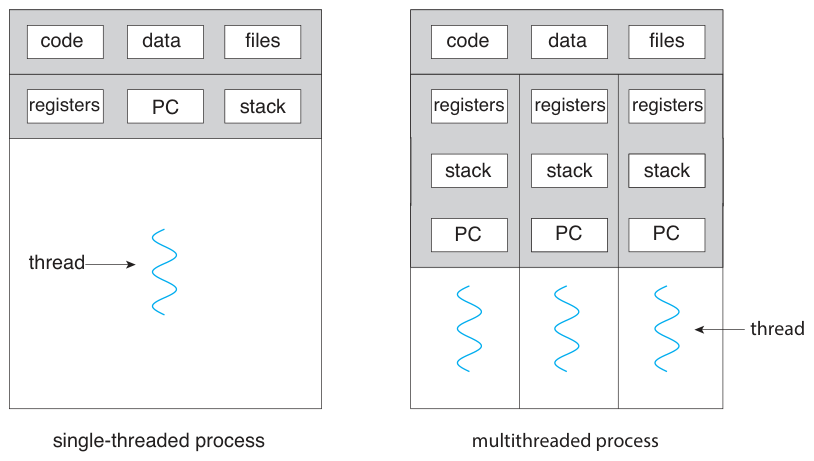
| Private to each thread每个线程私有 | Shared by all threads of the process进程的所有线程共享 |
|---|---|
| thread ID, PC, register values线程 ID、PC、寄存器值 | code (text) section代码（正文）段 |
| stack: local variables, return addresses栈：局部变量、返回地址 | global and static variables, heap全局变量和静态变量、堆 |
| signal mask, thread-local storage信号掩码、线程局部存储 | open files, signal handlers, working directory打开的文件、信号处理程序、工作目录 |
Process states, the PCB and the context switch are covered in Chapter 1. A thread adds only the state it needs to run on its own.进程状态、PCB 和上下文切换已在第 1 章中介绍。线程只增加其独立运行所需的状态。
Example: two threads of one process both call the same function. Each call has its own local variables on its own stack. A global counter is the same variable for both.例如，同一进程的两个线程都调用同一个函数。每次调用都有自己栈上的局部变量。全局计数器对两者来说是同一个变量。
Step 2: why use threads?第 2 步：为什么要用线程？
In words: threads make a program responsive and cheap to run, and they let it use all cores.用文字表述：线程让程序响应快、运行开销小，还能让它使用所有核。
A server shows the main advantage. Creating a process for each client request is slow and uses many resources. A multithreaded server has one thread that listens. For each request it creates a thread to service it and goes back to listening.服务器最能说明它的主要优点。为每个客户请求创建一个进程既慢，又占用很多资源。多线程服务器有一个线程负责监听。每收到一个请求，它就创建一个线程来处理，然后回去继续监听。
| Benefit优点 | Meaning含义 |
|---|---|
| Responsiveness响应性 | The program keeps running when part of it is blocked or busy with a lengthy operation; a user-interface thread stays responsive while another thread does the slow work.程序的一部分阻塞或忙于耗时操作时，程序仍能继续运行；用户界面线程在另一线程执行慢速工作时保持响应 |
| Resource sharing资源共享 | Threads share the memory and resources of their process by default. Processes must arrange shared memory or message passing explicitly (Chapter 1).线程默认共享所属进程的内存和资源；进程则必须显式安排共享内存或消息传递（第 1 章） |
| Economy经济性 | Allocating memory and resources for a process is costly. Creating a thread takes less time and memory, and switching between threads is faster.为进程分配内存和资源开销很大；创建线程所需的时间和内存更少，线程之间切换也更快 |
| Scalability可扩展性 | Threads of one process can run in parallel on different cores. A single-threaded process uses one core, however many exist.同一进程的线程可在不同核上并行运行；单线程进程只使用一个核，无论存在多少个核 |
The word "cheaper" has a reason. A new thread needs only a stack and a saved register set. No new address space is built. Threads share memory by default. Between processes the sharing must be arranged by IPC (Section 1.4).“开销更小”是有原因的。新线程只需要一个栈和一组保存的寄存器，不需要建立新的地址空间。线程默认共享内存。而进程之间的共享必须通过 IPC 来安排（见第 1.4 节）。
Step 3: process versus thread第 3 步：进程与线程的比较
| Process进程 | Thread线程 | |
|---|---|---|
| Address space地址空间 | its own各自独立 | shared within the process在进程内共享 |
| Creation and switching创建与切换 | expensive开销大 | cheap开销小 |
| Communication通信 | IPC: shared memory or message passingIPC：共享内存或消息传递 | shared variables, with synchronization (Chapter 4)共享变量，需要同步（第 4 章） |
| Protection保护 | strong: a fault stays inside the process强：故障局限在进程内 | none: one faulty thread can corrupt data or kill the whole process无：一个出错线程可能破坏数据，或使整个进程崩溃 |
Sharing makes cooperation cheap but removes isolation. This is why a browser may still run each tab in its own process.共享使合作的成本降低，但也失去了隔离。这就是为什么浏览器仍可能让每个标签页运行在自己的进程中。
Practice练习
Q1. (Classification) Which of the following are shared by the threads of one process: (a) register values, (b) heap memory, (c) global variables, (d) stack memory, (e) open files?Q1.（分类）下列哪些项由同一进程的线程共享：（a）寄存器值，（b）堆内存，（c）全局变量，（d）栈内存，（e）打开的文件？
Answer
Shared: (b) heap memory, (c) global variables, (e) open files. Not shared: (a) register values, because each thread has its own register set that is saved and restored when threads are switched, and (d) stack memory, because each thread has its own call stack with its own local variables and return addresses. The stacks lie in the same address space, but each thread uses only its own.共享的有：（b）堆内存、（c）全局变量、（e）打开的文件。不共享的有：（a）寄存器值，因为每个线程都有自己的一组寄存器，线程切换时会被保存和恢复；以及（d）栈内存，因为每个线程都有自己的调用栈，其中包含各自的局部变量和返回地址。这些栈位于同一地址空间中，但每个线程只使用自己的栈。
Q2. (Explain why) A browser opens each tab in a separate process. Would a thread per tab give the same benefits?Q2.（解释原因）浏览器为每个标签页打开一个单独的进程。若为每个标签页使用一个线程，能否获得同样的好处？
Answer
No. A process has its own address space, so a crash, a memory-corruption bug or a malicious page in one tab cannot damage the other tabs or the browser. Threads share one address space: a fault in one tab's thread can terminate the whole browser, and one tab could read another's data. Threads would make creation, switching and data sharing cheaper, but isolation is the reason for processes.不能。进程拥有自己的地址空间，因此某个标签页中的崩溃、内存损坏缺陷或恶意页面，都不会损坏其他标签页或浏览器。线程共享同一地址空间：某个标签页的线程出现故障，可能导致整个浏览器终止，而且一个标签页还可能读取另一个标签页的数据。线程会使创建、切换和数据共享更廉价，但隔离正是使用进程的原因。
思路：进程隔离换稳定与安全，线程共享换速度与省资源。
Multicore programming and Amdahl's law ★★★多核编程与 Amdahl 定律 ★★★
Goal. Tell concurrency from parallelism and data parallelism from task parallelism. Compute a speedup with Amdahl's law, its limit for many cores, and the efficiency.目标。区分并发与并行，以及数据并行与任务并行。用 Amdahl 定律计算加速比、多核时的上限以及效率。
Step 1: concurrency and parallelism第 1 步：并发与并行
In words: concurrency = many tasks make progress; parallelism = many tasks run at the same instant.用文字表述：并发 = 多个任务都在推进；并行 = 多个任务在同一瞬间运行。
- Concurrency（并发）: the system supports more than one task by letting all of them make progress.并发：系统让多个任务都能推进，从而同时支持多个任务。
- Parallelism（并行）: the system performs more than one task simultaneously.并行：系统同时执行多个任务。

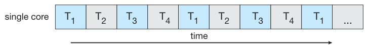
On one core, threads are interleaved over time, because a core executes one thread at a time. That is concurrency without parallelism. With several cores, threads run in parallel, one per core. So parallelism implies concurrency, but not the other way round.在单核上，线程在时间上交替执行，因为一个核一次只执行一个线程。这就是没有并行的并发。在多核上，线程可以并行运行，每个核运行一个线程。所以，并行蕴含并发，但反过来不一定成立。
Step 2: data parallelism and task parallelism第 2 步：数据并行与任务并行
In words: data parallelism = the same operation on different pieces of the data; task parallelism = different operations.用文字表述：数据并行 = 对数据的不同部分执行相同的操作；任务并行 = 执行不同的操作。
Data parallelism（数据并行）distributes subsets of the same data across cores and performs the same operation on each. Example: to sum an array of \(N\) elements, thread A sums the first half and thread B sums the second half. Task parallelism（任务并行）distributes tasks across cores. Each performs a unique operation. Example: two threads compute two different statistics of the same array. An application may mix both kinds.数据并行把同一份数据的子集分配到各核上，每个核执行相同的操作。例如，要对 \(N\) 个元素的数组求和，线程 A 求前一半的和，线程 B 求后一半的和。任务并行把任务分配到各核上，每个任务执行各自独有的操作。例如，两个线程分别计算同一数组的两个不同统计量。一个应用也可以同时包含这两种并行。

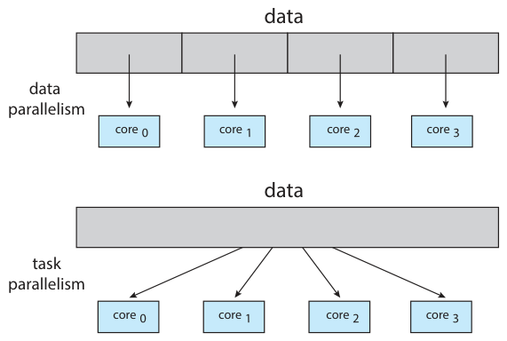
Five challenges of multicore programming:多核编程的五个挑战：
- Identifying tasks: find parts that can run as separate tasks.识别任务：找出可以作为独立任务运行的部分。
- Balance: tasks should do equal work, otherwise a core is wasted.负载均衡：各任务的工作量应相等，否则某个核就会被浪费。
- Data splitting: divide the data so that tasks can run on separate cores.数据划分：划分数据，使任务能在不同的核上运行。
- Data dependency: if one task needs the data of another, they must be synchronized (Chapter 4).数据依赖：如果一个任务需要另一个任务的数据，二者必须同步（见第 4 章）。
- Testing and debugging: there are many execution paths, so it is harder than for one thread.测试与调试：执行路径很多，因此比单线程程序更难。
Step 3: Amdahl's law第 3 步：Amdahl 定律
In words: only the parallel part gets faster when cores are added; the serial part always takes the same time, so it limits the speedup.用文字表述：增加核时只有并行部分会变快；串行部分所用时间始终不变，因此限制了加速比。
The speedup（加速比）is the run time on one core divided by the run time on \(N\) cores. Normalize the one-core run time to 1. The serial part takes \(S\). The parallel part takes \(1-S\) on one core and at best \((1-S)/N\) on \(N\) cores.加速比是单核运行时间除以 \(N\) 个核上的运行时间。把单核运行时间记为 1。串行部分占 \(S\)。并行部分在单核上占 \(1-S\)，在 \(N\) 个核上最好也只占 \((1-S)/N\)。
How to do it by hand: 1. Read the serial fraction \(S\). "70 percent parallel" means \(S=1-0.7=0.3\). 2. Compute \((1-S)/N\). 3. Add \(S\) and invert. 4. For the limit, compute \(1/S\). 5. For the efficiency, divide the speedup by \(N\).手工计算的方法：1. 读出串行比例 \(S\)。“70% 可并行”指的是 \(S=1-0.7=0.3\)。2. 计算 \((1-S)/N\)。3. 加上 \(S\) 后取倒数。4. 求上限时，计算 \(1/S\)。5. 求效率时，用加速比除以 \(N\)。
| Cores \(N\)核数 \(N\) | \(S=0.05\) | \(S=0.10\) | \(S=0.50\) |
|---|---|---|---|
| 2 | 1.90 | 1.82 | 1.33 |
| 4 | 3.48 | 3.08 | 1.60 |
| 8 | 5.93 | 4.71 | 1.78 |
| 16 | 9.14 | 6.40 | 1.88 |
| 64 | 15.42 | 8.77 | 1.97 |
| \(\infty\) | 20 | 10 | 2 |
The table reads: \(S\) is the serial fraction in the column head, \(N\) the number of cores in the row. Returns diminish quickly. With 5 percent serial code, 16 cores give 9.14 and 64 cores give 15.42, against a ceiling of 20. To gain more, shrink \(S\) rather than add cores.表格的读法：列标题为串行比例 \(S\)，行为核数 \(N\)。收益递减得很快。串行代码占 5% 时，16 个核给出 9.14，64 个核给出 15.42，而上限为 20。要获得更多收益，应当缩小 \(S\)，而不是增加核。
Amdahl's law fixes the problem size. Bigger machines usually run bigger problems. Then the parallel part grows with \(N\) and the serial part stays about constant.Amdahl 定律假设问题规模固定。更大的机器通常会运行更大的问题。这时，并行部分随 \(N\) 增长，而串行部分大致保持不变。
Practice练习
Q1. (Calculation) Use Amdahl's law to find the speedup and the maximum possible speedup of (a) an application that is 60 percent parallel, on 2 and on 4 cores; (b) an application that is 90 percent parallel, on 4 and on 8 cores.Q1.（计算）利用 Amdahl 定律，求下列情形的加速比和最大可能加速比：（a）并行比例为 60% 的应用，分别在 2 个核和 4 个核上运行；（b）并行比例为 90% 的应用，分别在 4 个核和 8 个核上运行。
Answer
(a) \(S=0.4\). On 2 cores: \(1/(0.4+0.6/2)=1/0.7\approx1.43\). On 4 cores: \(1/(0.4+0.6/4)=1/0.55\approx1.82\). Maximum: \(1/0.4=2.5\).（a）\(S=0.4\)。2 个核：\(1/(0.4+0.6/2)=1/0.7\approx1.43\)。4 个核：\(1/(0.4+0.6/4)=1/0.55\approx1.82\)。最大值：\(1/0.4=2.5\)。
(b) \(S=0.1\). On 4 cores: \(1/(0.1+0.9/4)=1/0.325\approx3.08\). On 8 cores: \(1/(0.1+0.9/8)=1/0.2125\approx4.71\). Maximum: \(1/0.1=10\). Even with 90 percent parallel code, 8 cores reach less than half of the ceiling.（b）\(S=0.1\)。4 个核：\(1/(0.1+0.9/4)=1/0.325\approx3.08\)。8 个核：\(1/(0.1+0.9/8)=1/0.2125\approx4.71\)。最大值：\(1/0.1=10\)。即使代码的并行比例为 90%，8 个核也只能达到上限的不到一半。
易错：“60% 并行”表示 S = 0.4，不是 0.6。
Q2. (Classification) (a) Can a system have concurrency without parallelism? (b) Classify as data or task parallelism: (i) one thread per photo generates a thumbnail; (ii) a matrix is transposed in parallel; (iii) one thread reads from the network while another writes to it; (iv) fork-join array summation; (v) Grand Central Dispatch.Q2.（分类）（a）系统能否在没有并行的情况下具有并发？（b）将下列情形归类为数据并行或任务并行：（i）每张照片用一个线程生成缩略图；（ii）并行地转置一个矩阵；（iii）一个线程从网络读取数据，同时另一个线程向网络写入数据；（iv）分叉-汇合式数组求和；（v）Grand Central Dispatch。
Answer
(a) Yes. On a single core several threads make progress by interleaving, so there is concurrency but nothing executes simultaneously.（a）能。在单核上，多个线程通过交替执行取得进展，因此存在并发，但不存在同时执行。
(b) (i) Data parallelism: the same operation on different photos. (ii) Data parallelism: the matrix is divided among the threads. (iii) Task parallelism: the threads perform different operations. (iv) Data parallelism: each task sums a different part of the array. (v) Task parallelism: GCD dispatches different blocks of code (tasks) to threads.（b）（i）数据并行：对不同的照片执行相同的操作。（ii）数据并行：矩阵在各线程之间划分。（iii）任务并行：各线程执行不同的操作。（iv）数据并行：每个任务对数组的不同部分求和。（v）任务并行：GCD 把不同的代码块（任务）分派给各线程。
Q3. (Extension: Amdahl's law used backwards) A designer wants a speedup of 3 on 4 cores. What fraction \(p=1-S\) of the execution time must be parallel? Can the speedup reach 4?Q3.（扩展：反向使用 Amdahl 定律）设计者希望在 4 个核上得到加速比 3。执行时间中必须并行的比例 \(p=1-S\) 是多少？加速比能否达到 4？
Answer
Put the target speedup \(s\) into Amdahl's law and solve for \(p\): \(\frac1s=S+\frac{1-S}{N}=1-p\bigl(1-\frac1N\bigr)\), hence \(p=\dfrac{1-1/s}{1-1/N}\). For \(s=3\) and \(N=4\): \(p=\dfrac{2/3}{3/4}=\dfrac89\approx0.889\). Check: \(S=1/9\) and \(1/(1/9+2/9)=3\). For \(s=4=N\) the formula gives \(p=1\): linear speedup needs a program with no serial part at all, which is unattainable in practice.将目标加速比 \(s\) 代入 Amdahl 定律，并求解 \(p\)：\(\frac1s=S+\frac{1-S}{N}=1-p\bigl(1-\frac1N\bigr)\)，因此 \(p=\dfrac{1-1/s}{1-1/N}\)。对于 \(s=3\) 和 \(N=4\)：\(p=\dfrac{2/3}{3/4}=\dfrac89\approx0.889\)。验证：\(S=1/9\) 和 \(1/(1/9+2/9)=3\)。对于 \(s=4=N\)，公式给出 \(p=1\)：线性加速需要一个完全没有串行部分的程序，这在实践中无法达到。
思路：把目标加速比代入公式反解并行比例 p；线性加速比要求 p = 1。
Multithreading models ★★★多线程模型 ★★★
Goal. Describe the many-to-one, one-to-one and many-to-many models, give the advantages and problems of each, and say which model Linux and Windows use.目标。描述多对一、一对一和多对多模型，给出每种模型的优点与问题，并说明 Linux 和 Windows 使用哪种模型。
Step 1: three mappings第 1 步：三种映射方式
In words: a model says how many user threads share one kernel thread.用文字表述：模型规定了多少个用户线程共享一个内核线程。
There are three common models. The two-level model is a variant of the many-to-many model. U is a user thread and K a kernel thread.常见的模型有三种。二级模型是多对多模型的一种变体。U 表示用户线程，K 表示内核线程。
Many-to-one U1 U2 U3 U4 -> K1
One-to-one U1 -> K1 U2 -> K2 U3 -> K3 U4 -> K4
Many-to-many U1 U2 U3 U4 -> K1 K2 K3 (m kernel threads, m ≤ n user threads)
Two-level as many-to-many, plus one user thread bound to its own kernel thread
Step 2: each model第 2 步：各种模型
In words: many-to-one = cheap but blind, one-to-one = parallel but costly, many-to-many = flexible but hard.用文字表述：多对一 = 开销低，但无法感知阻塞；一对一 = 能并行，但开销大；多对多 = 灵活，但难以实现。
- Many-to-one: many user threads on one kernel thread. Thread management is done by the library, so it is efficient and needs no system call. Problem 1: the entire process blocks if one thread makes a blocking system call. The kernel sees one schedulable entity, so it has no other thread of the process to run. Problem 2: only one thread can be in the kernel at a time, so there is no parallelism on a multicore system. Green threads (Solaris, early Java) used this model.多对一：多个用户线程对应一个内核线程。线程管理由库完成，因此效率高，也不需要系统调用。问题一：只要有一个线程发出阻塞的系统调用，整个进程就会阻塞。内核只看到一个可调度的实体，因此没有该进程的其他线程可以运行。问题二：同一时刻只有一个线程能处于内核中，因此在多核系统上无法并行。绿色线程（Solaris、早期 Java）采用的就是这种模型。
- One-to-one: each user thread has its own kernel thread. Advantage: another thread can run while one blocks, and threads run in parallel on a multiprocessor. Problem: creating a user thread means creating a kernel thread, and many kernel threads burden the system, so some systems limit the number of threads. Linux and Windows use it.一对一：每个用户线程都有自己的内核线程。优点：一个线程阻塞时，其他线程仍可运行；在多处理器上，线程可以并行运行。问题：创建一个用户线程就要创建一个内核线程，而大量内核线程会加重系统负担，因此有些系统会限制线程数量。Linux 和 Windows 采用这种模型。
- Many-to-many: \(n\) user threads are multiplexed onto \(m\le n\) kernel threads, where \(m\) may depend on the application or the machine. Advantage: developers can create as many user threads as needed, the kernel threads run in parallel, and when a thread blocks the kernel can schedule another kernel thread. Problem: hard to implement.多对多：\(n\) 个用户线程被多路复用到 \(m\le n\) 个内核线程上，其中 \(m\) 可能取决于应用或机器。优点：开发者可以按需创建任意多的用户线程，内核线程可以并行运行，而且一个线程阻塞时，内核可以调度另一个内核线程。问题：难以实现。
- Two-level model: as many-to-many, but a user thread may also be bound to its own kernel thread.二级模型：与多对多相似，但一个用户线程也可以绑定到它自己的内核线程上。

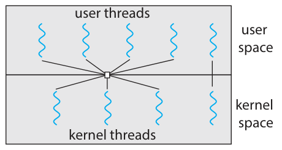
With more cores, limiting the number of kernel threads matters less. So most operating systems now use one-to-one. Many-to-many survives in implicit-threading libraries (Section 2.5).核数增多后，限制内核线程数量就没那么重要了。因此，现在大多数操作系统采用一对一模型。多对多模型则保留在隐式线程库中（见第 2.5 节）。
| Many-to-one多对一 | One-to-one一对一 | Many-to-many多对多 | |
|---|---|---|---|
| Mapping映射 | \(n\) user to 1 kernel\(n\) 个用户线程对 1 个内核线程 | 1 user to 1 kernel1 个用户线程对 1 个内核线程 | \(n\) user to \(m\le n\) kernel\(n\) 个用户线程对 \(m\le n\) 个内核线程 |
| Thread management线程管理 | user library, no system call用户库，无系统调用 | kernel内核 | library and kernel库和内核 |
| Blocking system call阻塞式系统调用 | blocks the whole process阻塞整个进程 | blocks only that thread只阻塞该线程 | kernel runs another kernel thread内核运行另一个内核线程 |
| Parallel on multicore多核上并行 | no否 | yes是 | yes是 |
| Limit on threads线程数限制 | none无 | number of kernel threads内核线程数 | none on user threads对用户线程无限制 |
| Main drawback主要缺点 | no parallelism无并行性 | one kernel thread per user thread每个用户线程对应一个内核线程 | hard to implement难以实现 |
| Used by使用者 | green threads绿色线程 | Linux, WindowsLinux、Windows | rare; task libraries少见；任务库 |
Practice练习
Q1. (True or false, justify) (a) In the many-to-one model a blocking system call by one thread blocks the entire process. (b) A program with several user threads in the many-to-one model runs faster on a multiprocessor than on a uniprocessor. (c) On a single processor, several kernel threads can improve the performance of a program that does I/O.Q1.（判断，并说明理由）（a）在多对一模型中，一个线程的阻塞式系统调用会阻塞整个进程。（b）在多对一模型中，含有多个用户线程的程序在多处理器上运行得比在单处理器上快。（c）在单处理器上，多个内核线程可以提高执行 I/O 的程序的性能。
Answer
(a) True: the process has one kernel thread, and when it blocks nothing else of the process can run. (b) False: the kernel schedules only that one kernel thread, so all user threads run on one processor. (c) True: while one thread blocks for I/O another can use the CPU, so computation and I/O overlap; a purely CPU-bound program gains nothing.（a）正确：该进程只有一个内核线程，该线程阻塞时，进程中的其他线程都无法运行。（b）错误：内核只调度这唯一的内核线程，因此所有用户线程都在同一个处理器上运行。（c）正确：一个线程等待 I/O 时，另一个线程可以使用 CPU，因此计算与 I/O 可以重叠；纯粹受 CPU 限制的程序则毫无收益。
Q2. (Analysis) A many-to-many program has more user threads than the 8 cores. Discuss the performance when the number of kernel threads is (a) less than 8, (b) equal to 8, (c) more than 8 but fewer than the user threads.Q2.（分析）一个采用多对多模型的程序，其用户线程数多于 8 个核。讨论内核线程数分别为下列情形时的性能：（a）少于 8 个；（b）等于 8 个；（c）多于 8 个，但少于用户线程数。
Answer
(a) Some cores stay idle although user threads are ready. (b) Every core can run a kernel thread, which is ideal until kernel threads block: with 3 blocked, only 5 of the 8 cores work. (c) When some kernel threads block, others take the free cores: with 12 kernel threads and 3 blocked, 9 are runnable and all 8 cores stay busy, at the price of more kernel-thread overhead.（a）尽管用户线程已经就绪，仍有部分核处于空闲。（b）每个核都可以运行一个内核线程，这一情形是理想的，直到内核线程发生阻塞为止：若有 3 个内核线程阻塞，则 8 个核中只有 5 个在工作。（c）当一些内核线程阻塞时，其他内核线程会占用空闲的核：若有 12 个内核线程、其中 3 个阻塞，则 9 个可运行，8 个核都保持忙碌，但代价是内核线程的开销增大。
Q3. (Design) A CPU-intensive program on four cores (one-to-one model) reads one input file at start-up, is CPU-bound in between and writes one output file at the end. How many threads would you create for (a) the input and output, (b) the CPU-bound part?Q3.（设计）一个在四核上运行的 CPU 密集型程序（采用一对一模型）在启动时读取一个输入文件，中间阶段受 CPU 限制，结束时写入一个输出文件。你会为（a）输入和输出、（b）受 CPU 限制的部分分别创建多少个线程？
Answer
(a) One each: a single file is accessed sequentially, so extra threads would not help; this is the serial part \(S\) of Amdahl's law. (b) Four, one per core: fewer leave cores idle, more only add context-switch overhead for CPU-bound work.（a）各一个：单个文件是顺序访问的，因此额外的线程无济于事；这正是 Amdahl 定律中的串行部分 \(S\)。（b）四个，每核一个：更少会使核空闲，更多则只会为 CPU 受限的工作增加上下文切换开销。
Thread libraries ★★线程库 ★★
Goal. Name the three thread libraries, read short Pthreads code and say what it prints and how many threads exist, and tell asynchronous from synchronous threading.目标。说出三种线程库，阅读简短的 Pthreads 代码并说明它打印什么、存在多少个线程，并区分异步线程与同步线程。
A thread library（线程库）gives the programmer an API for creating and managing threads. A user-space library keeps its code and data in user space, so a call is a local function call, not a system call. A kernel-level library is supported by the operating system, and a call normally results in a system call.线程库为程序员提供创建和管理线程的 API。用户空间的库把代码和数据都放在用户空间，因此调用它只是一次本地函数调用，而不是系统调用。内核级的库由操作系统支持，调用通常会引发一次系统调用。
| Library库 | Implementation实现 | Platform平台 |
|---|---|---|
| Pthreads (POSIX, IEEE 1003.1c)Pthreads（POSIX，IEEE 1003.1c） | user-level or kernel-level; a specification, not an implementation用户级或内核级；是规范，而非实现 | UNIX-type systems (Linux, macOS)类 UNIX 系统（Linux、macOS） |
| Windows threadsWindows 线程 | kernel-level内核级 | Windows |
| Java threadsJava 线程 | built on the host's library: the Windows API on Windows, Pthreads on UNIX, Linux and macOS基于宿主系统的库构建：Windows 上为 Windows API，UNIX、Linux 和 macOS 上为 Pthreads | any system with a JVM任何带 JVM 的系统 |
In Pthreads and Windows, global variables are shared by all threads. Java has no global data, so sharing must be arranged by passing objects.在 Pthreads 和 Windows 中，全局变量由所有线程共享。Java 没有全局数据，因此必须通过传递对象来实现共享。
Step 1: creating and joining第 1 步：创建与汇合
In words: create starts the thread in a named function; join waits until it has ended.用文字表述：create 在指定的函数中启动线程；join 等待线程结束。
| Step步骤 | Pthreads | Windows | Java |
|---|---|---|---|
| Create创建 | pthread_create(&tid, &attr, fn, arg) |
CreateThread(...) |
new Thread(runnable), then start()new Thread(runnable)，然后 start() |
| Wait for one thread等待一个线程 | pthread_join(tid, NULL) |
WaitForSingleObject(h, INFINITE) |
t.join() |
| Wait for many等待多个线程 | loop of joins循环汇合 | WaitForMultipleObjects(n, hs, TRUE, INFINITE) |
loop of joins循环汇合 |
| Share data or result共享数据或结果 | global variables全局变量 | global variables全局变量 | objects; Callable and Future对象；Callable 和 Future |
In a Pthreads program, main() creates a thread with pthread_create(). The thread starts in the function that is named in the call. Later main() waits for it with pthread_join(). Results left in shared variables are read only after the join.在 Pthreads 程序中，main() 用 pthread_create() 创建一个线程。线程从调用中指定的函数开始执行。之后，main() 用 pthread_join() 等待它。共享变量中留下的结果，只有在 join 之后才能读取。
#include <pthread.h>
#include <stdio.h>
int sum = 0; /* global: shared by all threads */
void *runner(void *param) { /* the new thread starts here */
int n = *(int *)param;
for (int i = 1; i <= n; i++) sum += i;
return NULL;
}
int main(void) {
pthread_t tid;
int n = 4;
pthread_create(&tid, NULL, runner, &n); /* creates thread 2 */
pthread_join(tid, NULL); /* wait until runner ends */
printf("sum = %d\n", sum); /* prints sum = 10 */
return 0;
}
The program prints sum = 10, because 1 + 2 + 3 + 4 = 10. Two threads exist while runner runs: the main thread and the new thread. Without the join, main() might print sum = 0 before the new thread has run.程序打印 sum = 10，因为 1 + 2 + 3 + 4 = 10。runner 运行期间，存在两个线程：主线程和新线程。没有 join 的话，main() 可能会在新线程运行之前就打印 sum = 0。
Step 2: asynchronous and synchronous threading第 2 步：异步线程与同步线程
In words: asynchronous = the parent carries on; synchronous = the parent waits for its children.用文字表述：异步 = 父线程继续执行；同步 = 父线程等待子线程。
With asynchronous threading（异步线程）the parent resumes after creating a child. Parent and child run independently, with little data sharing. A multithreaded server uses it. With synchronous threading（同步线程）the parent creates children and waits until all of them have terminated and joined. The children share much data, for example when the parent combines their results. This is the fork-join strategy (Section 2.5).在异步线程中，父线程创建子线程后立即继续执行。父子线程各自独立运行，数据共享很少。多线程服务器就采用这种方式。在同步线程中，父线程创建子线程后，一直等到所有子线程都结束并汇合。子线程之间共享大量数据，例如父线程要合并它们的结果时。这就是 fork-join 策略（见第 2.5 节）。
In Java a thread is created by deriving a class from Thread or by implementing the Runnable interface. Both have a method run(). start() creates the thread in the JVM and calls run(). Calling run() directly runs it in the caller's thread, with no new thread. Runnable.run() returns nothing. A Callable<V> has a method V call() whose result is wrapped in a Future<V>, and get() blocks until the result is ready.在 Java 中，可以通过继承 Thread 类，或实现 Runnable 接口来创建线程。两者都有一个方法 run()。start() 在 JVM 中创建线程，并调用 run()。直接调用 run() 会在调用者的线程中运行它，不会创建新线程。Runnable.run() 没有返回值。Callable<V> 有一个方法 V call()，其结果被包装在 Future<V> 中，get() 会一直阻塞，直到结果就绪。
Practice练习
Q1. (Design) Sketch a Pthreads program that sums an array a of \(N\) integers with 4 threads, each summing a quarter. Which threading strategy and kind of parallelism is this, and why is no synchronization needed?Q1.（设计）草拟一个 Pthreads 程序：用 4 个线程对一个由 \(N\) 个整数组成的数组 a 求和，每个线程负责其中四分之一的和。这属于哪种线程策略和哪类并行？为什么不需要同步？
Answer
long partial[4]; /* one slot per thread */
void *worker(void *arg) {
long id = (long)arg, sum = 0;
for (long i = id * (N / 4); i < (id + 1) * (N / 4); i++) sum += a[i];
partial[id] = sum; /* only this thread writes this slot */
return NULL;
}
int main(void) {
pthread_t tid[4];
long total = 0;
for (long i = 0; i < 4; i++) pthread_create(&tid[i], NULL, worker, (void *)i);
for (int i = 0; i < 4; i++) { pthread_join(tid[i], NULL); total += partial[i]; }
printf("sum = %ld\n", total);
}
This is synchronous threading (fork-join) and data parallelism: the same operation on four parts of the data. No synchronization is needed because each thread reads its own quarter and writes only its own slot; the parent adds the slots after the joins.这是同步线程（分叉-汇合）与数据并行：对数据的四个部分执行相同的操作。不需要同步，因为每个线程只读取自己负责的那四分之一，并且只写入自己的槽位；父线程在各次汇合之后把这些槽位相加。
Q2. (Compare) (a) Distinguish asynchronous and synchronous threading and say which one a web server and a parallel array summation use. (b) Why does Java need Callable and Future?Q2.（比较）（a）区分异步线程与同步线程，并说明 Web 服务器和并行数组求和分别使用哪一种。（b）为什么 Java 需要 Callable 和 Future？
Answer
(a) In asynchronous threading the parent continues after creating a child and the two run independently with little data sharing; a web server uses it. In synchronous threading the parent waits for all children to terminate and join before continuing, and the threads share much data; the parallel array summation uses it because the parent combines the partial sums. (b) Runnable.run() returns nothing and Java has no global data to write into, so a thread cannot return a result. Callable.call() returns a value, which the Future holds; get() blocks until it is ready.（a）在异步线程中，父线程创建子线程后继续执行，二者独立运行，数据共享很少；Web 服务器采用这种方式。在同步线程中，父线程要等到所有子线程终止并汇合后才能继续执行，线程之间共享大量数据；并行数组求和采用这种方式，因为父线程要合并各个部分和。（b）Runnable.run() 不返回任何值，且 Java 没有可供写入的全局数据，因此线程无法返回结果。Callable.call() 返回一个值，由 Future 持有；get() 会阻塞，直到该值就绪。
Implicit threading ★★隐式线程 ★★
Goal. Explain thread pools, fork-join and OpenMP in a short paragraph each, and count the tasks of a fork-join recursion.目标。各用一小段解释线程池、fork-join 和 OpenMP，并统计 fork-join 递归的任务数。
Implicit threading（隐式线程）transfers the creation and management of threads from the application developer to compilers and run-time libraries. The developer names tasks, usually functions that can run in parallel. The library maps the tasks to threads. Race conditions and deadlock remain the problem of the programmer (Chapters 4 and 5).隐式线程把线程的创建和管理从应用开发者转交给编译器和运行时库。开发者只需指定任务，通常是可以并行运行的函数。库把这些任务映射到线程上。竞争条件和死锁仍然是程序员要解决的问题（见第 4 和第 5 章）。
Step 1: thread pools第 1 步：线程池
In words: a thread pool = threads created in advance that wait for work and are reused.用文字表述：线程池 = 预先创建、等待工作并可以重复使用的线程。
A server that creates one thread per request has two problems. Creating a thread takes time, and the thread is discarded after its work. The number of threads is unbounded, so many requests can exhaust CPU time or memory. A thread pool（线程池）creates a number of threads at start-up. A request is submitted to the pool. If a thread is available it is awakened and services the request. Otherwise the task waits in a queue until a thread is free. A finished thread returns to the pool.为每个请求创建一个线程的服务器有两个问题。创建线程需要时间，而且线程完成工作后就被丢弃。线程数量没有上限，因此大量请求可能耗尽 CPU 时间或内存。线程池在启动时就创建一定数量的线程。请求被提交到线程池中。如果有空闲线程，就唤醒它来处理请求；否则任务在队列中等待，直到有线程空闲。处理完的线程会回到线程池中。
Three benefits: (1) servicing a request with an existing thread is usually faster than creating one; (2) the pool bounds the number of threads; (3) separating the task from the mechanics of running it allows other strategies, such as running it after a delay or periodically.线程池有三个好处：（1）用已有的线程处理请求，通常比新建线程快；（2）线程池限制了线程的数量；（3）把任务与运行机制分开，就可以采用其他策略，例如延迟运行或周期性运行。
Step 2: fork-join第 2 步：fork-join
In words: fork-join = split the problem into subtasks, run them in parallel, wait for them at the join, and combine the results.用文字表述：fork-join = 把问题拆分为子任务，并行运行它们，在汇合处等待，然后合并结果。
The main thread forks child tasks, waits for them to terminate and join, and combines their results. It is a synchronous version of the thread pool. It suits divide-and-conquer algorithms such as quicksort, mergesort and array summation.主线程 fork 出子任务，等待它们结束并 join，然后合并它们的结果。这是线程池的同步版本。它适用于分治算法，例如快速排序、归并排序和数组求和。
Task(problem)
if problem is small enough
solve the problem directly
else
subtask1 = fork(new Task(subset of problem))
subtask2 = fork(new Task(subset of problem))
result1 = join(subtask1)
result2 = join(subtask2)
return combined results
THRESHOLD decides when a problem is small enough to be solved directly. If it is too small, there are many tiny tasks whose overhead exceeds their work. If it is too large, there are too few tasks to keep all cores busy. The library uses a pool of worker threads, often one per CPU. Each worker keeps a queue of the tasks it has forked. A worker whose queue is empty steals a task from another worker's queue. This is work stealing（工作窃取）and it balances the load. In Java, a task extends RecursiveTask<V> (returns a result) or RecursiveAction (no result), and fork() and join() do what their names say.THRESHOLD 决定问题小到什么程度时可以直接求解。如果划分得太小，会有很多微小的任务，它们的开销会超过实际工作量。如果划分得太大，任务数又太少，无法让所有核都忙起来。库使用一个工作线程池，通常每个 CPU 一个线程。每个工作线程都保存着一个自己分叉出来的任务队列。队列为空的工作线程会从其他工作线程的队列中窃取一个任务来做。这就是工作窃取，它能均衡负载。在 Java 中，任务继承 RecursiveTask<V>（有返回值）或 RecursiveAction（无返回值），fork() 和 join() 顾名思义。
Step 3: OpenMP第 3 步：OpenMP
In words: OpenMP = the programmer marks a region or a loop with a directive, and the compiler and run time create the threads.用文字表述：OpenMP = 程序员用指令标出一段代码区域或一个循环，由编译器和运行时创建线程。
OpenMP is a set of compiler directives for C, C++ and Fortran on shared-memory machines. #pragma omp parallel creates as many threads as there are cores. They run the following block at the same time and end when they leave it. #pragma omp parallel for divides the iterations of a loop among the threads.OpenMP 是一组用于共享内存机器上 C、C++ 和 Fortran 的编译指令。#pragma omp parallel 创建的线程数与核数相同。这些线程同时执行随后的代码块，执行完该代码块即结束。#pragma omp parallel for 把循环的迭代分配给各个线程。
#pragma omp parallel for
for (i = 0; i < N; i++)
c[i] = a[i] + b[i];
Each iteration writes a different c[i], so no synchronization is needed. Other systems: Grand Central Dispatch (Apple) puts tasks as blocks on serial or concurrent dispatch queues and runs them on a pool of threads; Intel TBB is a C++ template library whose scheduler maps tasks to threads.每次迭代写入的 c[i] 各不相同，因此不需要同步。其他系统还有：Grand Central Dispatch（Apple）把任务作为代码块放入串行或并发的分派队列，并由一个线程池执行；Intel TBB 是一个 C++ 模板库，其调度程序把任务映射到线程上。
Practice练习
Q1. (Explain) A server creates a new thread for each request. (a) Name two problems. (b) How does a thread pool solve them? (c) What happens when a request arrives and every pool thread is busy?Q1.（解释）服务器为每个请求创建一个新线程。（a）指出两个问题。（b）线程池如何解决这些问题？（c）当请求到达而所有池中线程都忙碌时，会发生什么？
Answer
(a) Creating a thread takes time and the thread is discarded after one request; the number of threads is unbounded, so a flood of requests can exhaust CPU time or memory. (b) The pool creates a fixed set of threads at start-up and reuses them: a request is served by an existing thread (no creation cost) and the pool size bounds the number of threads. (c) The task waits in the pool's queue until a thread finishes its current work and returns to the pool.（a）创建线程需要时间，而且线程在处理完一个请求后即被丢弃；线程数量没有上限，因此大量涌入的请求可能耗尽 CPU 时间或内存。（b）线程池在启动时创建一组固定的线程并复用它们：请求由已有线程处理（无创建开销），线程池的大小限定了线程数量。（c）任务在线程池的队列中等待，直到某个线程完成当前工作并返回线程池。
Q2. (Calculation) A fork-join SumTask halves the range until a piece has at most THRESHOLD elements. (a) For 8,000 elements and THRESHOLD = 1,000, how many tasks are created and how many of them sum directly? (b) Repeat for THRESHOLD = 2,000. (c) What goes wrong with THRESHOLD = 1?Q2.（计算）一个分叉-汇合 SumTask 将区间对半划分，直到某一段至多含 THRESHOLD 个元素为止。（a）若有 8,000 个元素且 THRESHOLD = 1,000，会创建多少个任务？其中有多少个直接求和？（b）对 THRESHOLD = 2,000 重复上述计算。（c）当 THRESHOLD = 1 时会出现什么问题？
Answer
(a) Leaves: \(8000/1000=8\). Tasks: \(2\cdot8-1=15\). (b) Leaves: \(8000/2000=4\). Tasks: \(2\cdot4-1=7\). (c) Every element becomes a leaf: 8,000 leaves and \(2\cdot8000-1=15{,}999\) tasks, each adding a single number. The cost of creating, scheduling and joining tasks far exceeds the work.（a）叶节点：\(8000/1000=8\)。任务：\(2\cdot8-1=15\)。（b）叶节点：\(8000/2000=4\)。任务：\(2\cdot4-1=7\)。（c）每个元素都成为一个叶节点：共 8,000 个叶节点和 \(2\cdot8000-1=15{,}999\) 个任务，每个任务只加一个数。创建、调度和汇合任务的开销远超过实际工作。
Threading issues ★★线程问题 ★★
Goal. Explain what fork() and exec() do in a multithreaded program, how signals are delivered, the two kinds of cancellation, thread-local storage and the idea of scheduler activations. Count the processes and threads of a short program.目标。说明 fork() 和 exec() 在多线程程序中做什么，信号如何投递，两种取消方式，线程局部存储，以及调度器激活的思想。统计一个简短程序中的进程数和线程数。
Step 1: fork() and exec()第 1 步：fork() 与 exec()
In words: fork() copies the calling thread (POSIX); exec() throws away all threads and loads a new program.用文字表述：fork() 复制调用它的线程（POSIX）；exec() 丢弃所有线程，并装入一个新程序。
In a multithreaded program the meaning of fork() is ambiguous: does the new process duplicate all threads, or only the thread that called fork()? Some UNIX systems provide both versions. POSIX duplicates only the calling thread. exec() loads a program that replaces the entire process, including all its threads. So if exec() follows fork() at once, duplicating only the calling thread is enough. If the child does not call exec(), it should duplicate all threads.在多线程程序中，fork() 的含义并不明确：新进程是复制所有线程，还是只复制调用 fork() 的那个线程？有些 UNIX 系统提供两种版本。POSIX 只复制调用它的线程。exec() 装入一个程序，替换整个进程，包括其所有线程。因此，如果 exec() 紧跟在 fork() 之后，那么只复制调用线程就够了。如果子进程不调用 exec()，它就应当复制所有线程。
int value = 0; /* global variable */
void *runner(void *param) { value = 5; pthread_exit(0); }
int main(void) {
pid_t pid = fork();
if (pid == 0) { /* child process */
pthread_t tid;
pthread_create(&tid, NULL, runner, NULL);
pthread_join(tid, NULL);
printf("CHILD: value = %d", value); /* LINE C */
} else if (pid > 0) { /* parent process */
wait(NULL);
printf("PARENT: value = %d", value); /* LINE P */
}
}
Step 2: signals第 2 步：信号
In words: a signal = a notice that an event has happened; it is delivered to a process and handled by a default or a user-defined handler.用文字表述：信号 = 一个事件已经发生的通知；它被投递给进程，并由默认处理程序或用户定义的处理程序处理。
A signal（信号）is generated by an event, delivered to a process and then handled. The handler is the default one of the kernel or a user-defined one that overrides it.信号由某个事件产生，然后被投递给进程，再加以处理。处理程序可以是内核的默认处理程序，也可以是覆盖默认处理程序的用户自定义处理程序。
| Synchronous signal同步信号 | Asynchronous signal异步信号 | |
|---|---|---|
| Cause产生原因 | an operation of the running program itself运行中程序自身的某个操作 | an event external to the process进程外部的事件 |
| Examples示例 | illegal memory access, division by 0非法内存访问、除以 0 | Ctrl-C, timer expiryCtrl-C、计时器到期 |
| Delivered to投递给 | the process (thread) that performed the operation执行该操作的进程（线程） | usually another process通常是其他进程 |
A single-threaded process receives all signals. A multithreaded process has four options: deliver the signal (1) to the thread to which it applies, (2) to every thread, (3) to certain threads, (4) to one specific thread that receives all signals. A synchronous signal goes to the thread that caused it. A terminating signal such as Ctrl-C should reach all threads. Threads may block signals. A signal is normally handled once, by the first thread that does not block it. kill(pid, signal) targets a process, pthread_kill(tid, signal) a specific thread.单线程进程接收所有信号。多线程进程有四种选择：把信号投递给（1）该信号所适用的线程，（2）每个线程，（3）某些线程，或（4）接收所有信号的某个特定线程。同步信号投递给引起它的线程。像 Ctrl-C 这样的终止信号，应当送达所有线程。线程可以屏蔽信号。一个信号通常只会被处理一次，由第一个没有屏蔽它的线程处理。kill(pid, signal) 以进程为目标，pthread_kill(tid, signal) 以特定线程为目标。
Step 3: thread cancellation第 3 步：线程取消
In words: cancellation = ending a target thread before it has finished; asynchronous ends it at once, deferred lets it end itself at a safe point.用文字表述：取消 = 在目标线程结束之前将其终止；异步取消立即终止它，延迟取消则让它在安全的位置自行结束。
Thread cancellation（线程取消）terminates a target thread early. Example: several threads search a database and one finds the answer, so the others are cancelled.线程取消提前终止一个目标线程。例如，几个线程同时搜索数据库，其中一个找到了答案，于是其他线程都被取消。
| Asynchronous cancellation异步取消 | Deferred cancellation延迟取消 | |
|---|---|---|
| Mechanism机制 | one thread terminates the target immediately一个线程立即终止目标线程 | the target checks periodically whether it should terminate and ends itself in an orderly way目标线程定期检查自己是否应当终止，并以有序的方式结束自身 |
| Risk风险 | the target may hold allocated resources or be in the middle of updating shared data; the OS may not reclaim every resource目标线程可能持有已分配的资源，或正在更新共享数据；操作系统可能无法回收所有资源 | none, if the check is made at a point where cancellation is safe无，前提是在取消安全的位置进行检查 |
Deferred cancellation is preferred. In Pthreads, pthread_cancel(tid) is only a request. What happens next depends on the target's cancellation state and type.通常更推荐延迟取消。在 Pthreads 中，pthread_cancel(tid) 只是一个请求。接下来会发生什么，取决于目标线程的取消状态和类型。
| Mode模式 | State状态 | Type类型 |
|---|---|---|
| Off关闭 | disabled禁用 | none无 |
| Deferred (default)延迟（默认） | enabled启用 | deferred延迟 |
| Asynchronous异步 | enabled启用 | asynchronous异步 |
While cancellation is disabled, requests stay pending. In deferred mode the thread ends at a cancellation point（取消点）. Most blocking system calls, such as read(), are cancellation points, and pthread_testcancel() creates one. A cleanup handler releases the resources of the cancelled thread.取消功能关闭时，请求会一直挂起。在延迟模式下，线程在取消点结束。大多数阻塞的系统调用，例如 read()，都是取消点，而 pthread_testcancel() 也会产生一个取消点。清理处理程序会释放被取消线程的资源。
Step 4: thread-local storage and scheduler activations第 4 步：线程局部存储与调度器激活
Thread-local storage（线程局部存储, TLS）gives each thread its own copy of some data. Example: a transaction number, when each transaction is serviced by its own thread. A local variable exists only during one function call, but TLS data persist across calls. A global variable is shared, but TLS data are private. TLS is needed when the developer does not control thread creation, for example with a thread pool, and cannot pass the data as a parameter.线程局部存储（TLS）让每个线程都有一份自己的数据副本。例如，每个事务由各自的线程处理时，可以用它保存事务编号。局部变量只在一次函数调用期间存在，而 TLS 数据可以跨越多次调用而保留。全局变量是共享的，而 TLS 数据是私有的。当开发者无法控制线程的创建，例如使用线程池，并且又无法把数据作为参数传递时，就需要 TLS。
Scheduler activations（调度器激活）let the kernel and the thread library of a many-to-many system cooperate, so that the number of kernel threads can follow the load. Between user and kernel threads sits a lightweight process（轻量级进程, LWP). To the library it looks like a virtual processor on which a user thread is scheduled. An application needs as many LWPs as it has concurrent blocking system calls. The kernel informs the library of events by upcalls（上调用）. When a thread is about to block, the kernel makes an upcall and gives a new virtual processor. The handler saves the state of the blocking thread and schedules another thread on the new processor. When the event occurs, a second upcall makes the blocked thread eligible again.调度器激活让多对多系统中的内核与线程库协同工作，使内核线程的数量能够随负载变化。用户线程与内核线程之间有一种轻量级进程（LWP）。对线程库来说，它就像一个虚拟处理器，用户线程被调度到它上面运行。应用需要的 LWP 数量，等于它同时存在的阻塞系统调用数。内核通过上调用把事件通知给线程库。当某个线程即将阻塞时，内核发出一次上调用，并提供一个新的虚拟处理器。处理程序保存阻塞线程的状态，并在新的处理器上调度另一个线程。事件发生时，第二次上调用使那个被阻塞的线程重新具备运行资格。
Practice练习
Q1. (Count) How many processes and how many threads are created by the following code? Assume fork() copies only the calling thread.Q1.（计数）下面的代码会创建多少个进程和线程？假设 fork() 只复制调用线程。
pid_t pid;
pid = fork();
if (pid == 0) { /* child process */
fork();
thread_create( . . .);
}
fork();
Answer
Let P0 be the original process. The first fork() creates P1. In P1 the second fork() creates P2, and P1 and P2 each call thread_create: 2 threads. P0, P1 and P2 then each execute the last fork() and create P3, P4 and P5. Result: 5 new processes (6 including P0) and 2 threads; the last fork() copies only the calling thread, so P4 and P5 get no extra threads.设 P0 为原始进程。第一个 fork() 创建 P1。在 P1 中，第二个 fork() 创建 P2，P1 和 P2 各自调用 thread_create，共 2 个线程。随后，P0、P1 和 P2 各自执行最后一个 fork()，并创建 P3、P4 和 P5。结果：新增 5 个进程（连同 P0 共 6 个）和 2 个线程；最后一个 fork() 只复制调用线程，因此 P4 和 P5 不会多出线程。
Q2. (Classification) For each event say whether the signal is synchronous or asynchronous and to which thread(s) it should be delivered: (a) thread T2 divides by zero; (b) the user presses Ctrl-C; (c) a timer set by thread T3 expires.Q2.（分类）对每个事件，说明相应的信号是同步还是异步的，以及它应投递给哪些线程：（a）线程 T2 除以 0；（b）用户按下 Ctrl-C；（c）由线程 T3 设置的计时器到期。
Answer
(a) Synchronous: it results from an operation of T2 itself, so it is delivered to T2. (b) Asynchronous: the event is external; a terminating signal should reach all threads of the process (it is handled once, by the first thread that does not block it). (c) Asynchronous: the timer expiry is external; it is delivered to the thread that set the timer, or to any thread that does not block the signal.（a）同步：它是 T2 自身的操作引起的，因此投递给 T2。（b）异步：事件来自外部；会终止程序的信号应到达进程的所有线程（它只需由第一个未阻塞该信号的线程处理一次）。（c）异步：计时器到期来自外部；它应投递给设置该计时器的线程，或投递给任何未阻塞该信号的线程。
Threads in Windows and Linux ★Windows 与 Linux 中的线程 ★
Windows uses the one-to-one model. A thread has an ID, a register set, a PC, a user stack, a kernel stack and a private storage area. Three structures represent it.Windows 采用一对一模型。一个线程具有 ID、寄存器组、PC、用户栈、内核栈和私有存储区。它由三个结构体表示。
| Structure结构 | Space所在空间 | Contents内容 |
|---|---|---|
| ETHREAD (executive thread block)ETHREAD（执行体线程块） | kernel内核 | pointer to the parent process, address of the start routine, pointer to the KTHREAD指向父进程的指针、起始例程的地址、指向 KTHREAD 的指针 |
| KTHREAD (kernel thread block)KTHREAD（内核线程块） | kernel内核 | scheduling and synchronization information, kernel stack, pointer to the TEB调度与同步信息、内核栈、指向 TEB 的指针 |
| TEB (thread environment block)TEB（线程环境块） | user用户 | thread identifier, user-mode stack, array for thread-local storage线程标识符、用户态栈、线程局部存储数组 |
Linux calls both processes and threads tasks（任务）. It creates a thread with clone(), and the flags decide how much parent and child share. With all four flags the child is a thread. With none it resembles fork().Linux 把进程和线程都称为任务。它用 clone() 创建线程，标志位决定父子之间共享多少内容。四个标志全部设置时，子任务就是线程。一个标志都不设置时，它与 fork() 相似。
| Flag标志 | Meaning含义 |
|---|---|
CLONE_FS |
file-system information (e.g. the current directory) is shared文件系统信息（例如当前目录）被共享 |
CLONE_VM |
the same memory space is shared同一内存空间被共享 |
CLONE_SIGHAND |
signal handlers are shared信号处理程序被共享 |
CLONE_FILES |
the set of open files is shared打开文件的集合被共享 |
Practice练习
Q1. (Short answers) (a) What does clone() create when called with CLONE_FS | CLONE_VM | CLONE_SIGHAND | CLONE_FILES, and with no flag? (b) Which of ETHREAD, KTHREAD and TEB can a thread in user mode access? (c) Why does a Windows thread have two stacks?Q1.（简答）（a）调用 clone() 并带上 CLONE_FS | CLONE_VM | CLONE_SIGHAND | CLONE_FILES 时会创建什么？不带任何标志时呢？（b）处于用户态的线程可以访问 ETHREAD、KTHREAD 和 TEB 中的哪一个？（c）为什么 Windows 线程有两个栈？
Answer
(a) With the four flags: a task that shares file-system information, memory space, signal handlers and open files with its parent, equivalent to a thread. With no flag: nothing is shared, which resembles fork(). (b) Only the TEB; the ETHREAD and the KTHREAD are in kernel space. (c) The user stack is used when the thread runs in user mode, the kernel stack when it runs in kernel mode.（a）使用全部四个标志时：任务与父任务共享文件系统信息、内存空间、信号处理程序和打开的文件，相当于一个线程。不带标志时：不共享任何内容，这类似于 fork()。（b）只有 TEB；ETHREAD 和 KTHREAD 位于内核空间。（c）线程在用户态运行时使用用户栈，在内核态运行时使用内核栈。
Terms to recognise ★需要认识的术语 ★
| Term术语 | What to know要知道什么 |
|---|---|
| Green threads绿色线程 | User-level threads of the many-to-one model, used by early Solaris and Java多对一模型的用户级线程，早期 Solaris 和 Java 使用 |
| Two-level model二级模型 | Many-to-many plus the option to bind a user thread to one kernel thread多对多，外加把用户线程绑定到一个内核线程的选项 |
| Work stealing工作窃取 | An idle worker takes a task from another worker's queue; this balances the load空闲的工作线程从其他工作线程的队列中取任务，从而均衡负载 |
| Grand Central Dispatch | Apple's implicit threading: blocks on serial or concurrent dispatch queues, run by a pool of threadsApple 的隐式线程：代码块放入串行或并发的分派队列，由线程池执行 |
| Intel TBB | C++ template library; tasks such as parallel_for; its scheduler maps tasks to threadsC++ 模板库；任务如 parallel_for；其调度程序把任务映射到线程上 |
| Callable and FutureCallable 与 Future | A Java task that returns a value; get() blocks until the result is there返回值的 Java 任务；get() 会阻塞，直到结果就绪 |
| Cancellation point取消点 | A place where a deferred cancel takes effect, for example a blocking system call延迟取消生效的位置，例如阻塞的系统调用 |
| LWP and upcallLWP 与上调用 | Virtual processor between user and kernel threads; the kernel's message to the library位于用户线程与内核线程之间的虚拟处理器；内核发给线程库的消息 |
| ETHREAD, KTHREAD | Windows thread blocks in kernel space; the TEB is in user spaceWindows 线程在内核空间中阻塞；TEB 位于用户空间 |
| clone() flagsclone() 标志 | CLONE_FS, CLONE_VM, CLONE_SIGHAND, CLONE_FILES share file-system information, memory, signal handlers and open filesCLONE_FS、CLONE_VM、CLONE_SIGHAND、CLONE_FILES 共享文件系统信息、内存、信号处理程序和打开的文件 |
Exam-style questions考试题型练习
Q1. (Calculation, 12 marks) An application spends 20 percent of its single-core execution time in code that cannot be parallelized. (a) State Amdahl's law and compute the speedup on 2, 8 and 16 cores (4 marks). (b) What is the maximum speedup, and what is the efficiency on 16 cores? (2 marks) (c) Two upgrades of the 8-core machine are proposed: (i) 16 cores; (ii) make the serial part twice as fast. Compute the speedup of each and recommend one (4 marks). (d) Compute the scaled speedup on 16 cores by Gustafson's law for \(\alpha=0.2\) and explain why it differs from (a) (2 marks).Q1.（计算，12 分）某应用在单核上的执行时间中，有 20% 花在无法并行化的代码上。（a）写出 Amdahl 定律，并计算 2、8 和 16 个核上的加速比（4 分）。（b）最大加速比是多少？16 个核上的效率是多少？（2 分）（c）针对 8 核机器提出两种升级方案：（i）增至 16 个核；（ii）使串行部分快一倍。分别计算两者的加速比，并推荐其中一种（4 分）。（d）对 \(\alpha=0.2\)，用 Gustafson 定律计算 16 个核上的缩放加速比，并解释它为何与（a）的结果不同（2 分）。
Answer
(a) Amdahl's law: \(\text{speedup}\le 1/\bigl(S+(1-S)/N\bigr)\), with \(S=0.2\). On 2 cores: \(1/(0.2+0.4)=1.67\). On 8 cores: \(1/(0.2+0.1)=3.33\). On 16 cores: \(1/(0.2+0.05)=4.00\).（a）Amdahl 定律：\(\text{speedup}\le 1/\bigl(S+(1-S)/N\bigr)\)，其中 \(S=0.2\)。2 个核：\(1/(0.2+0.4)=1.67\)。8 个核：\(1/(0.2+0.1)=3.33\)。16 个核：\(1/(0.2+0.05)=4.00\)。
(b) Maximum speedup \(1/S=5\). Efficiency on 16 cores: \(4.00/16=25\%\).（b）最大加速比 \(1/S=5\)。16 个核上的效率：\(4.00/16=25\%\)。
(c) (i) 16 cores: 4.00, 20 percent better than 3.33. (ii) Serial part \(0.2/2=0.1\) plus parallel part \(0.8/8=0.1\) gives run time 0.2, speedup \(1/0.2=5.00\), 50 percent better. Recommend (ii): the serial part limits the speedup, and no extra cores are needed.（c）（i）16 个核：4.00，比 3.33 高 20%。（ii）串行部分 \(0.2/2=0.1\) 加并行部分 \(0.8/8=0.1\)，运行时间为 0.2，加速比为 \(1/0.2=5.00\)，高 50%。推荐（ii）：串行部分限制了加速比，而且无需增加核数。
(d) \(16-0.2\cdot15=13.0\). Amdahl's law keeps the problem size fixed; Gustafson's law lets the problem grow with the machine so that the parallel work fills the cores. The two numbers answer different questions.（d）\(16-0.2\cdot15=13.0\)。Amdahl 定律使问题规模保持固定；Gustafson 定律则让问题随机器规模增长，使并行工作充满各个核。两个结果回答的是不同的问题。
思路：先确定 S，再代公式；加速比上限只由串行部分决定，所以加速串行部分有时比加核更划算。
Q2. (Compare, 10 marks) (a) Define user thread and kernel thread (2 marks). (b) For the many-to-one, one-to-one and many-to-many models state what happens when one thread makes a blocking system call, whether threads run in parallel on a multicore system, and the main drawback (6 marks). (c) Which model do Linux and Windows use, and why did the most flexible model not prevail? (2 marks)Q2.（比较，10 分）（a）定义用户线程和内核线程（2 分）。（b）对于多对一、一对一和多对多模型，说明当一个线程发出阻塞式系统调用时会发生什么、线程能否在多核系统上并行运行，以及主要缺点（6 分）。（c）Linux 和 Windows 采用哪种模型？为什么最灵活的模型未能占据主流？（2 分）
Answer
(a) A user thread is managed by a user-space library without kernel support. A kernel thread is supported and scheduled directly by the operating system. A user thread runs only when it is associated with a kernel thread.（a）用户线程由用户空间的库管理，无需内核支持。内核线程由操作系统直接支持并调度。用户线程只有在与某个内核线程关联时才能运行。
(b)
| Model模型 | Blocking system call阻塞式系统调用 | Parallel on multicore多核上并行 | Main drawback主要缺点 |
|---|---|---|---|
| Many-to-one多对一 | blocks the whole process阻塞整个进程 | no否 | cannot use several cores无法利用多个核 |
| One-to-one一对一 | blocks only that thread只阻塞该线程 | yes是 | one kernel thread per user thread: overhead, limit on threads每个用户线程对应一个内核线程：开销大，线程数受限制 |
| Many-to-many多对多 | the kernel runs another kernel thread内核可运行另一个内核线程 | yes是 | hard to implement难以实现 |
(c) Both use one-to-one. Many-to-many is hard to implement, and with many cores a limit on kernel threads matters less, so the simpler model prevailed.（c）两者都采用一对一模型。多对多模型难以实现，而且在核数较多时，对内核线程数的限制也没那么重要，因此较简单的模型占据了主流。
Q3. (Design and calculation, 10 marks) A web server creates a new thread for each request. (a) Give two problems of this design (2 marks). (b) Explain how a thread pool works and give three benefits (4 marks). (c) A Java fork-join SumTask sums 16,000 integers and halves the range until a piece has at most THRESHOLD = 2,000 elements. How many tasks are created, how many of them sum directly, and what does work stealing do? (4 marks)Q3.（设计与计算，10 分）Web 服务器为每个请求创建一个新线程。（a）给出这种设计的两个问题（2 分）。（b）解释线程池如何工作，并给出三个优点（4 分）。（c）一个 Java 分叉-汇合 SumTask 对 16,000 个整数求和，并将区间对半划分，直到某一段至多含 THRESHOLD = 2,000 个元素为止。会创建多少个任务？其中有多少个直接求和？工作窃取起什么作用？（4 分）
Answer
(a) Thread creation takes time and the thread is discarded after one request; the number of threads is unbounded and can exhaust CPU time or memory.（a）创建线程需要时间，而且线程在处理完一个请求后即被丢弃；线程数量没有上限，可能耗尽 CPU 时间或内存。
(b) At start-up the pool creates threads that wait for work. A submitted request is serviced by an available thread, otherwise it waits in a queue; a finished thread returns to the pool. Benefits: an existing thread serves faster than a new one; the number of threads is bounded; the task is separated from the mechanics of running it (delayed or periodic execution).（b）线程池在启动时创建等待工作的线程。提交的请求由空闲线程处理，否则在队列中等待；完成工作的线程返回线程池。优点：已有线程比新线程处理得更快；线程数量有界；任务与运行机制分离（可延迟执行或周期性执行）。
(c) Halving 16,000 to 2,000 takes three levels, so there are \(16000/2000=8\) leaves, each summing 2,000 elements, and \(2\cdot8-1=15\) tasks. Each worker keeps a queue of the tasks it forked; a worker whose queue is empty steals a task from another worker, so the 8 leaves spread over the available threads.（c）将 16,000 对半划分到 2,000 需要三层，因此共有 \(16000/2000=8\) 个叶节点，每个叶节点对 2,000 个元素求和，任务总数为 \(2\cdot8-1=15\)。每个工作线程都保存着它所分叉任务的队列；队列为空的工作线程会从其他工作线程窃取任务，因此这 8 个叶节点分散到了可用线程上。
Q4. (Trace, 10 marks) Consider the program below.Q4.（手工演算，10 分）考虑下面的程序。
#include <pthread.h>
#include <stdio.h>
#include <sys/wait.h>
#include <unistd.h>
int x = 10;
void *f(void *p) { x += 5; return NULL; }
int main(void) {
pthread_t t;
pid_t pid = fork();
if (pid == 0) { /* child */
pthread_create(&t, NULL, f, NULL);
pthread_join(t, NULL);
printf("child x = %d\n", x);
} else { /* parent */
wait(NULL);
x += 1;
printf("parent x = %d\n", x);
}
return 0;
}
(a) What is printed, and why? (4 marks) (b) Why must the child call pthread_join() before printing? (2 marks) (c) What happens to the other threads of a process when one thread calls exec(), and what does this mean for fork() followed by exec()? (4 marks)（a）会打印出什么？为什么？（4 分）（b）为什么子进程在打印之前必须调用 pthread_join()？（2 分）（c）当一个线程调用 exec() 时，进程中的其他线程会怎样？这对 fork() 紧接着 exec() 意味着什么？（4 分）
Answer
(a) Output: child x = 15, then parent x = 11. fork() gives the child its own copy of the address space with x = 10. The new thread shares the child's address space and adds 5, so the child's main thread sees 15. The parent waits, then adds 1 to its own unchanged copy (10 becomes 11); because of wait(), the child's line comes first.（a）输出：先是 child x = 15，然后是 parent x = 11。fork() 使子进程拥有地址空间的一份独立副本，其中包含 x = 10。新线程与子进程共享地址空间并对其加 5，因此子进程的主线程看到 15。父进程先等待，然后在自己未被改动的副本上加 1（10 变为 11）；由于 wait()，子进程的那一行先输出。
(b) Without the join, the child's main thread might print before the thread has run and show 10: a race on x. pthread_join() blocks until the thread has terminated.（b）若没有汇合，子进程的主线程可能在该线程运行之前就打印，并显示 10：这是对 x 的竞争。pthread_join() 会阻塞，直到该线程终止。
(c) exec() replaces the entire process image, including all threads, by the new program, so the other threads disappear. If exec() follows fork() at once, copying only the calling thread suffices; a child that does not call exec() should receive all threads.（c）exec() 以新程序替换整个进程映像（包括所有线程），因此其他线程都会消失。若 exec() 紧跟在 fork() 之后，则只复制调用线程即可；若子进程不调用 exec()，则应复制所有线程。
易错：fork 之后父子进程各有一份 x；同一进程内的线程共享同一份 x。
Q5. (Short answers, 10 marks) (a) For each event say whether the signal is synchronous or asynchronous and which thread(s) should receive it: (i) a thread divides by zero; (ii) the user presses Ctrl-C; (iii) a timer set by the process expires (3 marks). (b) Compare asynchronous and deferred cancellation and explain how a Pthreads thread supports deferred cancellation (3 marks). (c) A many-to-many process has six threads that may block in system calls at the same time. How many LWPs does it need to avoid waiting, and what do the kernel and the library do under scheduler activations when one of the threads is about to block? (4 marks)Q5.（简答，10 分）（a）对每个事件，说明相应的信号是同步还是异步的，以及应由哪些线程接收：（i）某个线程除以 0；（ii）用户按下 Ctrl-C；（iii）由进程设置的计时器到期（3 分）。（b）比较异步取消与延迟取消，并解释 Pthreads 线程如何支持延迟取消（3 分）。（c）一个多对多模型的进程有六个线程，它们可能同时在系统调用中阻塞。为避免等待，它需要多少个 LWP？在调度器激活机制下，当其中一个线程即将阻塞时，内核和线程库各自做什么？（4 分）
Answer
(a) (i) Synchronous; delivered to the thread that divided by zero. (ii) Asynchronous; a terminating signal should reach all threads (in practice the first thread that does not block it handles it). (iii) Asynchronous; delivered to the thread that set the timer or to any thread that does not block the signal.（a）（i）同步；投递给执行除以 0 操作的线程。（ii）异步；会终止程序的信号应到达所有线程（实际上由第一个未阻塞该信号的线程处理）。（iii）异步；投递给设置该计时器的线程，或投递给任何未阻塞该信号的线程。
(b) Asynchronous cancellation terminates the target immediately, which may leave shared data half-updated and resources unreleased. In deferred cancellation the target checks periodically whether it should terminate and ends itself in an orderly way. In Pthreads the default is deferred: pthread_cancel() only posts a request, and the thread ends at a cancellation point, such as a blocking system call or pthread_testcancel(); a cleanup handler can release resources.（b）异步取消会立即终止目标线程，这可能使共享数据只更新了一半，并使资源得不到释放。在延迟取消中，目标线程定期检查自己是否应当终止，并以有序的方式结束自身。在 Pthreads 中，默认为延迟取消：pthread_cancel() 只是发出一个请求，线程在某个取消点结束，例如阻塞式系统调用或 pthread_testcancel()；清理处理程序可以释放资源。
(c) Six LWPs, one per concurrent blocking system call. When a thread is about to block, the kernel makes an upcall to the library and allocates a new virtual processor. The upcall handler runs on it, saves the state of the blocking thread, releases that thread's virtual processor and schedules another eligible thread on the new one. When the event occurs, a second upcall makes the blocked thread eligible again.（c）需要六个 LWP，每个并发阻塞式系统调用对应一个。当一个线程即将阻塞时，内核向线程库发出一次上调用，并分配一个新的虚拟处理器。上调用处理程序在该虚拟处理器上运行，保存阻塞线程的状态，释放该线程的虚拟处理器，并在新的虚拟处理器上调度另一个可运行的线程。当事件发生时，第二次上调用使被阻塞的线程重新变为可运行。
Textbook exercises课后习题
Textbook exercises with answers: 21 questions教材习题及答案，共 21 题，点击展开
E1. (Practice Exercise 4.1) Provide three programming examples in which multithreading provides better performance than a single-threaded solution.E1. （练习题 4.1）给出三个程序设计实例，说明多线程比单线程解决方案性能更好。
Answer
Multithreading helps when a program has independent pieces of work that can overlap with blocking operations or run on several cores. Three examples:当程序含有可以与阻塞操作相重叠、或能在多个核心上运行的独立工作时，多线程会有所帮助。三个例子如下：
- A web server that services each client request in a separate thread. While one thread waits for the disk or the network, the others continue, and on a multicore machine several requests are processed at the same instant. A single-threaded server handles one request at a time, so every other client waits.Web 服务器为每个客户端请求使用单独的线程处理。当一个线程等待磁盘或网络时，其他线程仍可继续运行；在多核机器上，多个请求甚至可以同时被处理。单线程服务器一次只能处理一个请求，其他客户端都必须等待。
- A parallelized numerical application such as matrix multiplication. The result matrix is divided into rows or blocks and each thread computes its part on its own core. The speedup is bounded by the serial fraction (Amdahl's law), but a single thread would use only one core.并行化的数值应用，例如矩阵乘法。 结果矩阵被划分为若干行或块，每个线程在各自的核心上计算其中的一部分。加速比受串行部分的限制（Amdahl 定律），但单线程只能使用一个核心。
- An interactive GUI program such as a debugger or a word processor. One thread monitors user input, another runs the application or does background work such as spell checking and auto-save, and a third monitors performance. The interface stays responsive during long operations.交互式图形界面程序，例如调试器或文字处理软件。 一个线程监听用户输入，另一个线程运行应用程序或执行拼写检查、自动保存等后台工作，第三个线程监控性能。在执行长时间操作期间，界面仍保持响应。
In each case the threads share one address space, so cooperating on the same data is cheap.在每个例子中，各线程共享同一地址空间，因此合作处理同一数据的开销很小。
思路：多线程有收益的两类场景：让等待（I/O）与计算重叠，或把计算分到多个核上。
E2. (Practice Exercise 4.2) Using Amdahl's law, calculate the speedup gain of an application that has a 60 percent parallel component for (a) two processing cores and (b) four processing cores.E2. （练习题 4.2）利用 Amdahl 定律，计算一个并行部分占 60% 的应用程序在 (a) 两个处理核心和 (b) 四个处理核心上的加速比增益。
Answer
Amdahl's law bounds the speedup on \(N\) cores byAmdahl 定律给出在 \(N\) 个核心上的加速比上界为
\[\text{speedup}\le\frac{1}{S+\dfrac{1-S}{N}}\]
where \(S\) is the serial fraction. A 60 percent parallel component means \(S=0.4\).其中 \(S\) 为串行部分所占的比例。并行部分占 60% 即意味着 \(S=0.4\)。
(a) Two cores: \(\dfrac{1}{0.4+0.6/2}=\dfrac{1}{0.7}\approx 1.43\).(a) 两个核心：\(\dfrac{1}{0.4+0.6/2}=\dfrac{1}{0.7}\approx 1.43\)。
(b) Four cores: \(\dfrac{1}{0.4+0.6/4}=\dfrac{1}{0.55}\approx 1.82\).(b) 四个核心：\(\dfrac{1}{0.4+0.6/4}=\dfrac{1}{0.55}\approx 1.82\)。
Doubling the cores raises the speedup by only \(1.82/1.43-1\approx 27\%\), because the 40 percent serial part does not shrink. However many cores are added, the speedup cannot exceed \(1/S=2.5\).核心数加倍，加速比只提高 \(1.82/1.43-1\approx 27\%\)，因为 40% 的串行部分不会缩小。无论增加多少核心，加速比都不可能超过 \(1/S=2.5\)。
思路：由“并行 60%”得串行比例 S = 0.4，再代入 Amdahl 公式。
E3. (Practice Exercise 4.3) Does the multithreaded web server (the main thread listens for requests and creates a new thread to service each client request) exhibit task or data parallelism?E3. （练习题 4.3）多线程 Web 服务器（主线程监听请求，并为每个客户端请求创建一个新线程来处理）表现出的是任务并行还是数据并行？
Answer
It exhibits data parallelism. Data parallelism distributes subsets of the same data across cores and performs the same operation on each subset, whereas task parallelism gives each thread a different operation. In the server every service thread runs the same code (read the request, locate the resource, send the reply), each on different data, namely the request of a different client. Only the listening thread has a different job, and it merely hands the requests out.它表现出的是数据并行。数据并行将同一数据的不同子集分布到各个核心上，并对每个子集执行相同的操作；而任务并行则是让每个线程执行不同的操作。在该服务器中，每个服务线程运行的代码相同（读取请求、定位资源、发送应答），只是处理的数据不同，即不同客户端的请求。只有监听线程的工作不同，它只是把请求分发出去。
If the threads were specialised instead (for example one thread parsing requests, one reading files and one writing the log), the server would exhibit task parallelism.如果改为专门化的线程（例如一个线程解析请求，一个线程读取文件，一个线程写日志），那么该服务器将表现出任务并行。
思路：每个线程做同样的事（处理请求），只是数据（请求）不同，所以是数据并行。
E4. (Practice Exercise 4.4) What are two differences between user-level threads and kernel-level threads? Under what circumstances is one type better than the other?E4. （练习题 4.4）用户级线程与内核级线程之间有哪两点区别？在什么情况下一种类型比另一种更好？
Answer
Two differences:两点区别如下：
- Who knows about and schedules the thread. User-level threads are created, scheduled and managed by a thread library in user space; the kernel does not know they exist and sees only the process. Kernel-level threads are known to the kernel, which creates, schedules and manages them.谁知道并调度该线程。 用户级线程由用户空间中的线程库创建、调度和管理；内核并不知道它们的存在，只能看到进程。内核级线程则为内核所知，由内核创建、调度和管理。
- Cost and behaviour. Creating, switching and synchronizing user-level threads are ordinary library calls, with no system call and no mode switch, and they need no kernel data structure, so they are cheap. A kernel thread is represented by a kernel data structure and handled through system calls, which is more expensive. In return, the kernel can run kernel threads of one process on different cores at the same time, and a kernel thread that blocks does not stop its siblings. With purely user-level threads (many-to-one) a blocking system call blocks the whole process and only one thread can run at a time.开销与行为。 创建、切换和同步用户级线程都是普通的库调用，不需要系统调用，也不需要模式切换，且无需内核数据结构，因此开销很小。内核线程由内核数据结构表示，并通过系统调用来处理，开销较大。作为回报，内核可以让同一进程的内核线程同时运行在不同核心上，而且一个阻塞的内核线程不会使其兄弟线程停止。若只使用纯用户级线程（多对一模型），阻塞性系统调用会阻塞整个进程，并且任一时刻只能有一个线程运行。
A further difference is that every user thread belongs to a process, whereas the kernel also has threads that belong to no user process (kernel housekeeping threads).另一个区别是：每个用户线程都属于某个进程，而内核中还存在不属于任何用户进程的线程（内核管理线程）。
Circumstances:适用情况：
- User-level threads are better for an application with very many short-lived threads or frequent switching, whose threads rarely block (CPU-bound or cooperating threads), on a single-processor machine or on a kernel without thread support.用户级线程更适合以下场景：应用拥有大量短命线程或频繁切换，且线程很少阻塞（计算密集型或协作型线程），运行于单处理器机器或不支持线程的内核之上。
- Kernel-level threads are better when threads make blocking system calls or take page faults, or when the application must run in parallel on several cores, as a server or a parallel numerical program does.内核级线程适用于线程要进行阻塞性系统调用或发生缺页的情况，或应用必须在多个核心上并行运行的情况，例如服务器或并行数值程序。
E5. (Practice Exercise 4.5) Describe the actions taken by a kernel to context-switch between kernel-level threads.E5. （练习题 4.5）描述内核在内核级线程之间进行上下文切换时所采取的操作。
Answer
Switching from kernel thread \(A\) to kernel thread \(B\) involves these actions:从内核线程 \(A\) 切换到内核线程 \(B\) 包括以下操作：
- Save the state of \(A\). The kernel stores the CPU registers of \(A\) (program counter, stack pointer, general-purpose and status registers) in the thread control block of \(A\). The state of \(A\) changes from running to ready (preempted) or waiting (blocked), and \(A\) is placed on the matching queue.保存 \(A\) 的状态。 内核将 \(A\) 的 CPU 寄存器（程序计数器、栈指针、通用寄存器和状态寄存器）保存到 \(A\) 的线程控制块中。\(A\) 的状态由运行态变为就绪态（被抢占）或等待态（阻塞），并且 \(A\) 被放入相应的队列中。
- Choose \(B\). The scheduler selects the next ready thread and marks it running.选择 \(B\)。 调度程序选出下一个就绪线程，并将其标记为运行态。
- Switch the address space if needed. If \(B\) belongs to a different process, the kernel also loads the memory map of \(B\) (page-table base register) and flushes or retags the TLB. If \(B\) belongs to the same process as \(A\), the address space does not change, which is why a switch between threads of one process is cheaper than a process switch.必要时切换地址空间。 若 \(B\) 属于另一个进程，内核还要加载 \(B\) 的内存映像（页表基址寄存器），并刷新或重新标记 TLB。若 \(B\) 与 \(A\) 属于同一进程，则地址空间不变，这正是同一进程内线程之间的切换比进程切换更廉价的原因。
- Restore the state of \(B\). The kernel loads the saved registers of \(B\), including its stack pointer and program counter, so \(B\) resumes exactly where it was last suspended.恢复 \(B\) 的状态。 内核加载 \(B\) 保存的寄存器，包括其栈指针和程序计数器，使 \(B\) 从上次被挂起的地方精确地恢复执行。
No useful work is done during these steps, so the switch is pure overhead.在这些步骤中不做任何有用的工作，因此切换纯属开销。
思路：保存旧线程的寄存器，调度器选新线程，只有跨进程才换地址空间，最后恢复新线程的寄存器。
E6. (Practice Exercise 4.6) What resources are used when a thread is created? How do they differ from those used when a process is created?E6. （练习题 4.6）创建一个线程时会使用哪些资源？它们与创建进程时所用的资源有何不同？
Answer
Thread creation needs only a small data structure (a thread control block) that holds a register set, a stack (plus a kernel stack for a kernel thread), the priority and scheduling state, and a thread identifier. The new thread uses the code, global data, heap, open files and signal handlers of its process, so nothing else has to be allocated or copied.线程创建只需要一个小型数据结构（线程控制块），其中保存寄存器组、栈（对内核线程而言还有内核栈）、优先级和调度状态以及线程标识符。新线程使用其所属进程的代码、全局数据、堆、打开的文件和信号处理程序，因此无需分配或复制其他任何内容。
Process creation needs a process control block, a much larger structure that holds the memory map, the list of open files, the environment variables and accounting and security information. It also needs a new address space (page tables; with fork() the address space of the parent is duplicated, usually copy-on-write). Allocating and managing the memory map is typically the most time-consuming activity.进程创建需要进程控制块，这是一个大得多的结构，其中保存内存映像、打开文件列表、环境变量以及记账和安全信息。它还需要一个新的地址空间（页表）；使用 fork() 时，父进程的地址空间会被复制，通常采用写时复制。分配和管理内存映像通常是最耗时的活动。
A thread therefore uses far fewer resources and is created faster than a process, because the expensive per-process resources (address space, file table) are shared and not created again.因此，线程占用的资源远少于进程，而且创建得更快，因为其中开销较大的进程资源（地址空间、文件表）是共享的，而不是重新创建。
思路：线程只需要寄存器、栈和优先级；进程还要独立的地址空间和文件表，其中内存映射最费时间。
E7. (Practice Exercise 4.7) Assume that an operating system maps user-level threads to the kernel using the many-to-many model and that the mapping is done through LWPs. Furthermore, the system allows developers to create real-time threads for use in real-time systems. Is it necessary to bind a real-time thread to an LWP? Explain.E7. （练习题 4.7）假设某操作系统采用多对多模型将用户级线程映射到内核，并且映射是通过 LWP 完成的。此外，系统允许开发者创建用于实时系统的实时线程。实时线程是否必须绑定到一个 LWP？请解释。
Answer
Yes. In this model the thread library multiplexes the user threads over a pool of LWPs, each attached to a kernel thread, and a user thread runs only while it is attached to an LWP.需要。在该模型中，线程库将用户线程多路复用到一个 LWP 池上，每个 LWP 都附接到一个内核线程，而用户线程只有在附接到某个 LWP 时才会运行。
Timing is crucial for a real-time thread. Suppose it is not bound. It runs attached to an LWP and then blocks: it performs I/O, is preempted by a higher-priority real-time thread, or waits for a mutual-exclusion lock. While it is blocked, its LWP is given to another user thread. When the real-time thread becomes ready to run again, it must first wait until the library attaches it to a free LWP, and how long that takes depends on the other threads and has no upper bound. A deadline can be missed.时序对实时线程至关重要。假设它未被绑定：它运行在某个 LWP 上，然后阻塞（例如执行 I/O、被优先级更高的实时线程抢占，或等待互斥锁）。阻塞期间，其 LWP 会被分配给另一个用户线程。当实时线程再次就绪时，它必须先等待线程库为其附接一个空闲的 LWP，而等待多久取决于其他线程，没有上界。于是截止期可能被错过。
If the real-time thread is bound to its own LWP, that LWP stays reserved for it. As soon as the kernel schedules the thread, it runs with minimal and predictable delay. The price is one permanently dedicated LWP (and kernel thread), which is acceptable for the few real-time threads.若实时线程绑定到自己的 LWP，则该 LWP 专为它保留。内核一旦调度该线程，它便能以极小且可预测的延迟运行。代价是多占用一个长期专用的 LWP（及相应的内核线程），而对于数量很少的实时线程来说，这是可以接受的。
思路：实时线程要求延迟可预测；不绑定时，重新就绪后还要排队等 LWP，延迟没有上界。
E8. (Exercise 4.8) Provide two programming examples in which multithreading does not provide better performance than a single-threaded solution.E8. （习题 4.8）给出两个程序设计实例，说明多线程并不比单线程解决方案提供更好的性能。
Answer
Multithreading does not help when the work cannot be split into independent parts, or when the extra threads only add overhead. Two examples:当工作无法被拆分为相互独立的部分，或额外线程只会增加开销时，多线程并无帮助。以下是两个例子：
- A strictly sequential computation, in which every step needs the result of the previous step, for example calculating an individual tax return or iterating a recurrence \(x_{k+1}=f(x_k)\). There is nothing to run concurrently, so the serial fraction is 1 and, by Amdahl's law, the speedup is 1. The threads would only add creation, switching and synchronization cost.严格串行的计算，即每一步都需要前一步的结果，例如计算个人所得税申报，或迭代递推关系 \(x_{k+1}=f(x_k)\)。此时没有可以并发运行的内容，串行部分占比为 1，因此按照 Amdahl 定律，加速比为 1。线程只会增加创建、切换和同步的开销。
- A shell (command interpreter). It must closely monitor its own working state, such as its open files, environment variables and current working directory. This state is shared by all threads of the process, so concurrent threads would have to synchronize on every access, and the main loop (read a command, run it, wait for it) is serial anyway.shell（命令解释器）。 它必须密切监控自身的工作状态，例如其打开的文件、环境变量和当前工作目录。这些状态由进程的所有线程共享，因此并发线程在每次访问时都必须进行同步；而且其主循环（读取命令、运行命令、等待其完成）本身就是串行的。
The same holds for a program whose threads are serialized by one lock or one slow device, so that they simply queue, and for tasks so short that creating a thread costs more than the work itself.同样的道理也适用于线程被同一个锁或同一个慢速设备串行化、只能排队等待的程序，以及任务过于简短、以至于创建线程的开销超过工作本身的情形。
思路：线程只有在存在可并行的独立工作时才有用；串行依赖、共用一把锁时只增加开销。
E9. (Exercise 4.9) Under what circumstances does a multithreaded solution using multiple kernel threads provide better performance than a single-threaded solution on a single-processor system?E9. （习题 4.9）在什么情况下，在单处理器系统上使用多个内核线程的多线程解决方案比单线程解决方案性能更好？
Answer
When the program often has to wait, so that another thread of the same program can use the CPU during the wait. Typical waits are blocking I/O on a disk or network, page faults, and waiting for user input or another event. When one kernel thread blocks, the kernel switches to another ready kernel thread of the program, so computation overlaps with waiting. This raises CPU utilization and throughput and improves responsiveness. A single-threaded program makes no progress while it waits, and the CPU can only serve other processes.当程序经常需要等待，使得同一程序的另一个线程可以在等待期间使用 CPU 时。典型的等待包括磁盘或网络的阻塞式 I/O、缺页，以及等待用户输入或其他事件。当一个内核线程阻塞时，内核会切换到该程序的另一个就绪内核线程，从而使计算与等待相互重叠。这提高了 CPU 利用率和吞吐量，并改善了响应性。单线程程序在等待期间无法取得任何进展，CPU 只能服务于其他进程。
Typical cases are a server that handles many clients and a GUI program that keeps responding while it loads a file or fetches data.典型情形包括：为许多客户端服务的服务器，以及在加载文件或获取数据时仍保持响应的图形界面程序。
There is no gain for a purely CPU-bound program, because its threads merely take turns on the one CPU and the switching adds overhead. The threads must be kernel threads: with the many-to-one model a single blocking system call blocks the whole process, and the overlap is lost.对于纯粹的计算密集型程序，则无法获得收益，因为它的线程只是在唯一的 CPU 上轮流运行，而切换会带来额外开销。线程必须是内核线程：在多对一模型中，一个阻塞的系统调用就会阻塞整个进程，重叠执行的优势也就丧失了。
思路：单处理器上多线程的收益只来自“某个线程等待时让别的线程用 CPU”，所以要用内核线程。
E10. (Exercise 4.10) Which of the following components of program state are shared across threads in a multithreaded process? (a) Register values (b) Heap memory (c) Global variables (d) Stack memoryE10. （习题 4.10）在多线程进程中，下列程序状态的哪些组成部分是跨线程共享的？(a) 寄存器值 (b) 堆内存 (c) 全局变量 (d) 栈内存
Answer
(b) Heap memory and (c) global variables are shared. (a) Register values and (d) stack memory are private to each thread.(b) 堆内存和 (c) 全局变量是共享的。(a) 寄存器值和 (d) 栈内存则为各线程私有。
All threads of a process share its code, global (static) data, heap and open files, so they communicate through memory. Each thread has its own registers (including the program counter and stack pointer) and its own stack, because it needs its own point of execution, call chain, local variables and return addresses in order to run independently.进程的所有线程共享其代码、全局（静态）数据、堆和打开的文件，因此它们通过内存进行通信。每个线程都有自己的寄存器（包括程序计数器和栈指针）以及自己的栈，因为它需要自己的执行点、调用链、局部变量和返回地址，才能独立运行。
Stacks are private by design, not by protection: all stacks lie in one address space, so a thread that is given a pointer to a variable on another thread's stack can still read it.栈私有是设计上的选择，而非保护机制所致：所有栈都位于同一地址空间中，因此若某线程得到了指向另一线程栈上某变量的指针，它仍然可以读取该变量。
思路：寄存器和栈是“执行现场”，每个线程各有一份；堆和全局变量属于进程，大家共享。
E11. (Exercise 4.11) Can a multithreaded solution using multiple user-level threads achieve better performance on a multiprocessor system than on a single-processor system? Explain.E11. （习题 4.11）使用多个用户级线程的多线程解决方案，在多处理器系统上能否比在单处理器系统上取得更好的性能？请解释。
Answer
No, not when the multithreading is done purely with user-level threads (many-to-one model). The kernel sees a single process with a single kernel-level thread and schedules it on only one processor at a time. The thread library multiplexes all user-level threads on that one kernel thread, so at most one of them runs at any instant, whatever the number of processors. The additional processors stay idle, the performance is the same as on a single-processor system, and one blocking system call still blocks every thread.不能，若多线程完全只使用用户级线程（多对一模型）来实现，则不能。内核只看到一个进程、一个内核级线程，并且只会把它调度到某一时刻的某一个处理器上。线程库把所有用户级线程多路复用到这一个内核线程上，因此无论有多少处理器，任一时刻至多只有一个用户级线程在运行。其余处理器保持空闲，性能与单处理器系统相同，而且一次阻塞性系统调用仍会阻塞所有线程。
To profit from a multiprocessor, the process needs several kernel threads, as in the one-to-one model or in the many-to-many model with several kernel threads (LWPs). Then the kernel can schedule threads of the process on different processors at the same time.要利用多处理器，进程需要多个内核线程，例如采用一对一模型，或采用带有多个内核线程（LWP）的多对多模型。这样，内核便可以同时在不同的处理器上调度该进程的线程。
思路：纯用户级线程对内核只是同一个调度实体，多处理器上也只能用到一个核。
E12. (Exercise 4.12) Google's Chrome browser opens each new tab in a separate process. Would the same benefits have been achieved if, instead, Chrome had been designed to open each new tab in a separate thread? Explain.E12. （习题 4.12）Google 的 Chrome 浏览器为每个新标签页打开一个单独的进程。若改为为每个新标签页打开一个单独的线程，能否获得同样的好处？请解释。
Answer
No. The benefits of one process per tab come from process isolation: each process has its own address space, so what happens in one tab cannot reach the others.不能。每个标签页一个进程的好处来自进程隔离：每个进程都有自己的地址空间，因此一个标签页中发生的事情无法波及其他标签页。
- Fault isolation. If a web page triggers a bug, a crash or an endless loop in the rendering code, only the process of that tab fails or hangs, and the browser and the other tabs keep running. If the tabs were threads of one process, a fault such as a segmentation fault in one thread would terminate the whole process and with it every tab, and a stray write could corrupt the heap or the globals used by the other tabs.故障隔离。 若某个网页在渲染代码中触发了错误、崩溃或死循环，只有该标签页的进程会失败或挂起，浏览器和其他标签页仍可继续运行。若标签页是同一进程中的线程，则某个线程的段错误等故障就会使整个进程终止，所有标签页随之消失；而且一次错误的写操作可能破坏其他标签页所用的堆或全局变量。
- Security. A page that exploits a vulnerability controls only its own process, which can additionally be sandboxed with restricted file and network access. Threads share all memory and open files, so a compromised tab could read the data of other tabs, for example the passwords or session data of other sites.安全性。 利用某个漏洞的网页只能控制其自身的进程，而该进程还可以通过沙箱限制其文件和网络访问。线程则共享全部内存和打开的文件，因此一个被攻陷的标签页可以读取其他标签页的数据，例如其他网站的密码或会话数据。
- Resource reclamation. When a tab is closed, the operating system frees all memory of its process, so leaks cannot accumulate; in a shared heap they persist until the browser exits.资源回收。 关闭某个标签页时，操作系统会释放其进程的全部内存，因此泄漏不会累积；而在共享堆中，泄漏会一直存在，直到浏览器退出。
Threads would make a tab cheaper to create, use less memory and make data sharing between tabs easy, but these are performance gains and not the reliability and security benefits.使用线程会使标签页创建得更便宜、占用的内存更少，并使标签页之间的数据共享变得容易，但这些都属于性能上的收益，而非可靠性与安全性方面的好处。
思路：标签页用进程是为了隔离（崩溃、安全）；线程共享同一地址空间，得不到这些好处。
E13. (Exercise 4.13) Is it possible to have concurrency but not parallelism? Explain.E13. （习题 4.13）是否可能只有并发而没有并行？请解释。
Answer
Yes. Concurrency means that more than one task makes progress over a period of time; their executions are interleaved but need not happen at the same instant. Parallelism means that more than one task executes at the same instant, which requires several processing cores. Parallelism therefore implies concurrency, but concurrency does not imply parallelism.可以。并发是指在一段时间内有多个任务取得进展，它们的执行是交错进行的，但不必在同一时刻发生。并行是指多个任务在同一时刻执行，这需要多个处理核心。因此并行蕴含并发，但并发并不蕴含并行。
On a single-core system the scheduler time-slices the CPU between two threads \(T_1\) and \(T_2\):在单核系统上，调度程序将 CPU 时间片在两个线程 \(T_1\) 和 \(T_2\) 之间轮流分配：
core 1: | T1 | T2 | T1 | T2 | T1 | T2 | --> time
Both threads make progress, so the system is concurrent, but at any instant only one of them is running, so there is no parallelism.两个线程都在取得进展，因此系统是并发的；但在任一时刻只有其中一个在运行，因此不存在并行。
思路：并发 = 时间上交错推进；并行 = 同一时刻同时执行；单核时间片轮转就是有并发而无并行。
E14. (Exercise 4.14) Using Amdahl's law, calculate the speedup gain for the following applications:E14. （习题 4.14）利用 Amdahl 定律，计算下列应用的加速比增益：
- 40 percent parallel with (a) eight processing cores and (b) sixteen processing cores并行部分占 40%：(a) 八个处理核心；(b) 十六个处理核心
- 67 percent parallel with (a) two processing cores and (b) four processing cores并行部分占 67%：(a) 两个处理核心；(b) 四个处理核心
- 90 percent parallel with (a) four processing cores and (b) eight processing cores并行部分占 90%：(a) 四个处理核心；(b) 八个处理核心
Answer
Amdahl's law gives \(\text{speedup}\le 1/\bigl(S+(1-S)/N\bigr)\), where \(S\) is the serial fraction and \(N\) the number of cores.Amdahl 定律给出 \(\text{speedup}\le 1/\bigl(S+(1-S)/N\bigr)\)，其中 \(S\) 为串行部分的比例，\(N\) 为核心数。
| Parallel part并行部分 | \(S\) | Cores \(N\)核数 \(N\) | Speedup加速比 | Limit \(1/S\)上限 \(1/S\) |
|---|---|---|---|---|
| 40% | 0.60 | 8 | \(1/(0.60+0.40/8)=1/0.650\approx 1.54\) | 1.67 |
| 40% | 0.60 | 16 | \(1/(0.60+0.40/16)=1/0.625=1.60\) | 1.67 |
| 67% | 0.33 | 2 | \(1/(0.33+0.67/2)=1/0.665\approx 1.50\) | 3.03 |
| 67% | 0.33 | 4 | \(1/(0.33+0.67/4)=1/0.4975\approx 2.01\) | 3.03 |
| 90% | 0.10 | 4 | \(1/(0.10+0.90/4)=1/0.325\approx 3.08\) | 10 |
| 90% | 0.10 | 8 | \(1/(0.10+0.90/8)=1/0.2125\approx 4.71\) | 10 |
Doubling the cores adds only 4 percent to the speedup of the 40 percent parallel application (8 to 16 cores), but 34 percent for the 67 percent parallel application (2 to 4 cores) and 53 percent for the 90 percent parallel application (4 to 8 cores). A large serial part makes extra cores nearly useless, because it fixes the ceiling \(1/S\).核心数加倍，对并行部分占 40% 的应用（8 到 16 个核心）的加速比只增加 4%，对并行部分占 67% 的应用（2 到 4 个核心）增加 34%，对并行部分占 90% 的应用（4 到 8 个核心）增加 53%。较大的串行部分使额外的核心几乎毫无用处，因为它固定了上限 \(1/S\)。
思路：先由 S = 1 - 并行比例求出串行比例，再代入公式；并行比例越低，加核越不划算。
E15. (Exercise 4.15) Determine if the following problems exhibit task or data parallelism:E15. （习题 4.15）判断下列问题表现的是任务并行还是数据并行：
- Using a separate thread to generate a thumbnail for each photo in a collection为集合中的每张照片使用单独的线程生成缩略图
- Transposing a matrix in parallel并行转置矩阵
- A networked application where one thread reads from the network and another writes to the network一个网络应用，其中一个线程从网络读取数据，另一个线程向网络写数据
- The fork-join array summation application (the array is split recursively into subarrays, the subarrays are summed in parallel, and the partial sums are added)分叉-汇合式数组求和应用（数组被递归地划分为子数组，子数组并行求和，最后将部分和相加）
- The Grand Central Dispatch systemGrand Central Dispatch 系统
Answer
Data parallelism applies the same operation to different subsets of the data; task parallelism runs different operations, usually on different threads.数据并行对数据的不同子集执行相同的操作；任务并行则执行不同的操作，通常运行在不同的线程上。
| Problem问题 | Type类型 | Reason原因 |
|---|---|---|
| Thumbnail for each photo为每张照片生成缩略图 | data数据 | every thread performs the same operation (generate a thumbnail) on a different photo每个线程对不同的照片执行相同的操作（生成缩略图） |
| Parallel matrix transposition并行矩阵转置 | data数据 | the matrix is divided into rows or blocks, and each thread applies the same operation to its own part矩阵被划分为若干行或块，每个线程对其各自的部分执行相同的操作 |
| One thread reads, another writes一个线程读，另一个线程写 | task任务 | the two threads perform different operations (receiving and sending)两个线程执行不同的操作（接收和发送） |
| Fork-join array summation分叉-汇合式数组求和 | data数据 | every subtask performs the same operation (sum) on its own subarray, and the join step adds the partial sums每个子任务对其各自的子数组执行相同的操作（求和），汇合步骤将部分和相加 |
| Grand Central Dispatch | task任务 | the program submits blocks (units of work) to dispatch queues and GCD distributes these tasks over threads; each block is an independent task that may perform a different operation程序将代码块（即工作单元）提交到分派队列，GCD 再把这些任务分配给各个线程；每个代码块都是一个独立的任务，可以执行不同的操作 |
GCD can also be used to apply one block to many data items, but the abstraction it provides is the task (the block), not a partition of one data set.GCD 也可以用来把同一个代码块应用于许多数据项，但它提供的抽象是任务（代码块），而不是对某一数据集的划分。
思路：同一操作作用于不同数据是数据并行；不同线程做不同操作是任务并行。
E16. (Exercise 4.16) A system with two dual-core processors has four processors available for scheduling. A CPU-intensive application is running on this system. All input is performed at program start-up, when a single file must be opened. Similarly, all output is performed just before the program terminates, when the program results must be written to a single file. Between start-up and termination, the program is entirely CPU-bound. Your task is to improve the performance of this application by multithreading it. The application runs on a system that uses the one-to-one threading model (each user thread maps to a kernel thread).E16. （习题 4.16）某系统有两个双核处理器，共四个可供调度的处理器。一个 CPU 密集型应用正在该系统上运行。所有输入都在程序启动时完成，此时必须打开单个文件；同样，所有输出都在程序终止前完成，此时必须将程序结果写入单个文件。在启动与终止之间，程序完全受 CPU 限制。你的任务是通过多线程化来提高该应用的性能。该应用运行在采用一对一线程模型（每个用户线程映射到一个内核线程）的系统上。
- How many threads will you create to perform the input and output? Explain.为执行输入和输出，你会创建多少个线程？请解释。
- How many threads will you create for the CPU-intensive portion of the application? Explain.为应用中 CPU 密集型的部分，你会创建多少个线程？请解释。
Answer
Input and output: one thread for the input and one for the output (the two phases never overlap in time, so the same thread can do both). One file is read at start-up and one file is written at the end. These accesses are sequential and limited by the file and the disk, not by the CPU. Several threads would only contend for the same file (shared file offset, seeks, locking) and need coordination without finishing sooner. Input and output form the serial part of the program, which by Amdahl's law cannot be shortened by adding threads.输入和输出：一个线程负责输入，一个线程负责输出（两个阶段在时间上不重叠，因此同一线程也可以同时完成两者）。程序启动时读取一个文件，结束时写入一个文件。这些访问是顺序的，受文件和磁盘而非 CPU 限制。多个线程只会争用同一个文件（共享的文件偏移、寻道、加锁），既需要协调，又无法更快完成。输入和输出构成程序的串行部分，根据 Amdahl 定律，增加线程无法缩短这部分的时间。
CPU-bound phase: four threads, one per available core. In the one-to-one model every user thread is a kernel thread that the kernel can place on its own core, so four CPU-bound threads keep all four cores busy at the same time. Fewer than four threads leave cores idle and give less speedup than the hardware allows. More than four threads give no extra speedup, because CPU-bound threads never block and the cores are already fully used, and they add context-switch cost, cache pollution and stack memory.CPU 受限阶段：四个线程，每个可用核心一个。 在一对一模型中，每个用户线程都是一个内核线程，内核可以将其放在各自的核心上，因此四个 CPU 密集型线程可以使四个核心同时保持忙碌。少于四个线程会使核心闲置，获得的加速比低于硬件所允许的水平。多于四个线程则不会带来额外的加速，因为 CPU 密集型线程从不阻塞，核心已经被充分利用，而且它们还会增加上下文切换的开销、缓存污染以及栈内存占用。
The CPU-bound phase can therefore approach a fourfold speedup, and the overall speedup is limited by the serial input and output.因此，CPU 受限阶段的加速比可以接近四倍，而整个程序的加速比则受到串行的输入和输出的限制。
思路：I/O 阶段是串行的，1 个线程就够；纯 CPU 阶段的线程数等于核数。
E17. (Exercise 4.17) Consider the following code segment:E17. （习题 4.17）考虑下面的代码段：
pid_t pid;
pid = fork();
if (pid == 0) { /* child process */
fork();
thread_create( . . .);
}
fork();
(a) How many unique processes are created? (b) How many unique threads are created?(a) 会创建多少个独立的进程？(b) 会创建多少个独立的线程？
Answer
Call the original process \(P_0\) and follow which process executes which statement.将原始进程称为 \(P_0\)，并跟踪哪个进程执行哪条语句。
| Statement语句 | Executed by执行者 | Effect效果 |
|---|---|---|
pid = fork(); |
\(P_0\) | creates \(P_1\); \(P_0\) gets pid > 0 and skips the if, \(P_1\) gets pid == 0 and enters it创建 \(P_1\)；\(P_0\) 得到 pid > 0，跳过 if，\(P_1\) 得到 pid == 0 并进入其中 |
fork(); inside the iffork(); 在 if 之内 |
\(P_1\) | creates \(P_2\), which also continues inside the if创建 \(P_2\)，它也继续在 if 之内运行 |
thread_create(...) |
\(P_1\) and \(P_2\)\(P_1\) 和 \(P_2\) | one new thread in each of the two processes两个进程中各新增一个线程 |
last fork();最后的 fork(); |
\(P_0\), \(P_1\), \(P_2\) | creates \(P_3\), \(P_4\), \(P_5\) (children of \(P_0\), \(P_1\), \(P_2\))创建 \(P_3\)、\(P_4\)、\(P_5\)（分别是 \(P_0\)、\(P_1\)、\(P_2\) 的子进程） |
(a) Five new processes are created (\(P_1\) to \(P_5\)), so six processes exist when the original is counted.(a) 共新建五个进程（\(P_1\) 到 \(P_5\)），因此计入原始进程后共有六个进程存在。
(b) Two threads are created, one by \(P_1\) and one by \(P_2\) through thread_create. The last fork() is executed by the main thread of each process and duplicates only the calling thread, so \(P_3\), \(P_4\) and \(P_5\) start with one thread each and create no further threads. At the end there are 8 threads in total: 6 initial threads and the 2 created ones.(b) 共创建两个线程，一个由 \(P_1\) 创建，另一个由 \(P_2\) 经 thread_create 创建。最后那次 fork() 由每个进程的主线程执行，它只复制调用线程，因此 \(P_3\)、\(P_4\) 和 \(P_5\) 都只以一个线程开始运行，且不再创建任何线程。最终共有 8 个线程：6 个初始线程和 2 个新创建的线程。
思路：先画出每个 fork 之后哪些进程会继续往下执行；最后一个 fork 被 P0、P1、P2 三个进程各执行一次。
E18. (Exercise 4.18) Linux does not distinguish between processes and threads. Instead, Linux treats both in the same way, allowing a task to be more akin to a process or a thread depending on the set of flags passed to the clone() system call. However, other operating systems, such as Windows, treat processes and threads differently. Typically, such systems use a notation in which the data structure for a process contains pointers to the separate threads belonging to the process. Contrast these two approaches for modeling processes and threads within the kernel.E18. （习题 4.18）Linux 不区分进程与线程。相反，Linux 对两者一视同仁，根据传给 clone() 系统调用的标志集，使一个任务更像进程或更像线程。然而，Windows 等其他操作系统则区别对待进程与线程。这类系统通常采用一种表示法：进程的数据结构包含指向属于该进程的各个线程的指针。请对比内核中为进程和线程建模的这两种方法。
Answer
Linux: one structure for both. Every schedulable entity is a task, described by a task_struct. The task does not contain its resources but points to separate structures for memory, open files, file-system information and signal handlers. The flags of clone() decide whether the child receives pointers to the structures of the parent (shared, thread-like) or copies of them (fork()-like), so a process and a thread are the two ends of one spectrum.Linux：二者共用一种结构。 每个可调度实体都是一个任务，由 task_struct 描述。任务本身并不包含其资源，而是指向独立的内存、打开文件、文件系统信息和信号处理程序的结构。clone() 的标志决定子任务获得的是指向父任务这些结构的指针（共享，类似线程），还是这些结构的副本（fork() 式），因此进程与线程是同一谱系的两个端点。
Windows-style: a process structure that points to thread structures. The process structure holds the address space, the handle table and the other resources, plus pointers to its thread structures. Each thread structure holds the context, stack and priority of that thread and points back to its process.Windows 式：进程结构指向线程结构。 进程结构保存地址空间、句柄表和其他资源，并包含指向其线程结构的指针。每个线程结构保存该线程的上下文、栈和优先级，并指回其所属的进程。
| Single task structure (Linux)单一任务结构（Linux） | Process structure with thread pointers带线程指针的进程结构 | |
|---|---|---|
| Kernel objects内核对象 | one kind, one creation path一种类型，一条创建路径 | two kinds, with separate creation and management code两种类型，各有独立的创建与管理代码 |
| Sharing共享 | chosen per resource, e.g. share memory but not open files按资源分别选择，例如共享内存但不共享打开的文件 | fixed: threads share everything the process owns固定：线程共享进程所拥有的一切 |
| Scheduler调度程序 | treats all tasks uniformly对所有任务一视同仁 | schedules threads; the process is only a container调度的是线程；进程只是一个容器 |
| Process-wide operations (terminate all threads, accounting, signal to the process)进程级操作（终止所有线程、记账、向进程发送信号） | need extra bookkeeping, because there is no explicit process object (Linux groups tasks by a thread-group identifier)需要额外的记账，因为没有显式的进程对象（Linux 通过线程组标识符对任务进行分组） | simple, because the process lists its threads简单，因为进程列出其线程 |
The task model is simpler and more flexible. The explicit model has clearer semantics (the process is the unit of protection and resources, the thread the unit of execution) and makes process-wide operations easy, at the price of more kernel code and no partial sharing.任务模型更简单、更灵活。显式模型的语义更清晰（进程是保护和资源的单位，线程是执行的单位），并且便于实现进程级操作，但代价是更多的内核代码，并且不支持部分共享。
思路：Linux 用“一种实体 + 共享标志”，Windows 用“进程容器 + 线程列表”；前者简单灵活，后者语义清晰。
E19. (Exercise 4.19) The program below uses the Pthreads API. What would be the output from the program at LINE C and LINE P?E19. （习题 4.19）下面的程序使用 Pthreads API。程序在 LINE C 和 LINE P 处的输出分别是什么？
#include <pthread.h>
#include <stdio.h>
int value = 0;
void *runner(void *param); /* the thread */
int main(int argc, char *argv[])
{
pid_t pid;
pthread_t tid;
pthread_attr_t attr;
pid = fork();
if (pid == 0) { /* child process */
pthread_attr_init(&attr);
pthread_create(&tid,&attr,runner,NULL);
pthread_join(tid,NULL);
printf("CHILD: value = %d",value); /* LINE C */
}
else if (pid > 0) { /* parent process */
wait(NULL);
printf("PARENT: value = %d",value); /* LINE P */
}
}
void *runner(void *param) {
value = 5;
pthread_exit(0);
}
Answer
LINE C prints CHILD: value = 5 and LINE P prints PARENT: value = 0.LINE C 输出 CHILD: value = 5，LINE P 输出 PARENT: value = 0。
fork() gives the child process its own copy of the address space of the parent, including the global variable value, which is still 0. In the child, pthread_create() starts a thread of the child process. A thread shares the global data of its own process, so runner() sets the value of the child to 5, and after pthread_join() the child prints 5. The parent waits for the child to terminate and then prints its own copy of value, which no thread of the child has touched, so it prints 0. The output therefore appears in the order CHILD, then PARENT.fork() 使子进程获得父进程地址空间的一份副本，其中包括仍为 0 的全局变量 value。在子进程中，pthread_create() 启动了子进程的一个线程。线程共享其所属进程的全局数据，因此 runner() 将子进程的 value 设为 5，并且在 pthread_join() 之后，子进程输出 5。父进程等待子进程终止，然后输出它自己的 value 副本，该副本从未被子进程的任何线程触及，因此输出 0。输出的顺序因此是先 CHILD，后 PARENT。
Threads of one process share its global variables, but a child process has a separate copy.同一进程的线程共享其全局变量，但子进程拥有各自独立的副本。
思路：线程共享本进程的全局变量，进程之间各有一份拷贝，所以子进程里改的 value 父进程看不到。
E20. (Exercise 4.20) Consider a multicore system and a multithreaded program written using the many-to-many threading model. Let the number of user-level threads in the program be greater than the number of processing cores in the system. Discuss the performance implications of the following scenarios.E20. （习题 4.20）考虑一个多核系统，以及使用多对多线程模型编写的多线程程序。设程序中用户级线程的数量大于系统的处理核心数。讨论下列各情形的性能影响。
- (a) The number of kernel threads allocated to the program is less than the number of processing cores.(a) 分配给该程序的内核线程数少于处理核心数。
- (b) The number of kernel threads allocated to the program is equal to the number of processing cores.(b) 分配给该程序的内核线程数等于处理核心数。
- (c) The number of kernel threads allocated to the program is greater than the number of processing cores but less than the number of user-level threads.(c) 分配给该程序的内核线程数多于处理核心数，但少于用户级线程数。
Answer
Let \(K\) be the number of kernel threads allocated to the program, \(C\) the number of cores and \(U\gt C\) the number of user-level threads. The kernel schedules only kernel threads, and a user-level thread runs only while it is attached to a kernel thread, so at most \(\min(K,C)\) threads of the program run at once.设 \(K\) 为分配给该程序的内核线程数，\(C\) 为核心数，\(U\gt C\) 为用户级线程数。内核只调度内核线程，而用户级线程只有在附接到某个内核线程时才会运行，因此该程序同时运行的线程至多为 \(\min(K,C)\) 个。
(a) \(K\lt C\). At most \(K\) cores can be used, and \(C-K\) cores cannot execute the program although user-level threads are ready to run. The parallelism and the performance stay below what the hardware offers, and the only remedy is to allocate more kernel threads.(a) \(K\lt C\)。至多只能使用 \(K\) 个核心，而 \(C-K\) 无法执行该程序，尽管此时仍有用户级线程处于就绪状态。并行度和性能都低于硬件所能提供的水平，唯一的补救办法是分配更多的内核线程。
(b) \(K=C\). Every core can run one kernel thread, so the full parallelism of the hardware is used, and the program causes little kernel-level switching because the library multiplexes the user-level threads cheaply. The weakness appears when a kernel thread blocks (I/O, page fault): its core cannot be used by another thread of the program, since no spare kernel thread exists, although ready user-level threads are waiting. For CPU-bound threads that never block, this is the best configuration.(b) \(K=C\)。每个核心都可以运行一个内核线程，因此硬件的全部并行能力都得以利用；而且由于线程库可以低成本地复用用户级线程，程序引起的内核级切换很少。其弱点出现在某个内核线程阻塞（I/O、缺页）时：由于不存在空闲的内核线程，该核心无法被同一程序的其他线程使用，尽管有就绪的用户级线程在等待。对于永不阻塞的计算密集型线程而言，这是最佳配置。
(c) \(C\lt K\lt U\). All cores can be kept busy, and when a kernel thread blocks, another kernel thread of the program can take over that core, so a blocking call no longer wastes a core. The costs are more kernel-level context switches and more kernel memory, since every kernel thread needs a stack and a data structure, and because \(K\lt U\) some user-level threads still wait for a kernel thread. This is a good choice when threads block regularly, as in a server; for CPU-bound threads the extra kernel threads buy nothing.(c) \(C\lt K\lt U\)。所有核心都可以保持忙碌；当某个内核线程阻塞时，同一程序的另一个内核线程可以接管该核心，因此阻塞调用不再浪费核心。代价是内核级上下文切换增多，内核内存占用增加（每个内核线程都需要栈和数据结构），并且 \(K\lt U\) 仍有部分用户级线程在等待内核线程。当线程经常阻塞时（例如服务器），这是一种好的选择；而对于计算密集型线程，额外的内核线程毫无益处。
思路：比较内核线程数 K 与核数：K 小于核数会浪费核；K 等于核数时线程阻塞会浪费核；K 大于核数时可以补位，但切换开销增加。
E21. (Exercise 4.21) Pthreads provides an API for managing thread cancellation. The pthread_setcancelstate() function is used to set the cancellation state. Its prototype appears as pthread_setcancelstate(int state, int *oldstate). The two possible values for the state are PTHREAD_CANCEL_ENABLE and PTHREAD_CANCEL_DISABLE. Using the code segment below, provide examples of two operations that would be suitable to perform between the calls to disable and enable thread cancellation.E21. （习题 4.21）Pthreads 提供了用于管理线程取消的 API。pthread_setcancelstate() 函数用于设置取消状态，其原型为 pthread_setcancelstate(int state, int *oldstate)。取消状态的两个可能取值是 PTHREAD_CANCEL_ENABLE 和 PTHREAD_CANCEL_DISABLE。利用下面的代码段，给出两个适合在禁用与启用线程取消的调用之间执行的操作示例。
int oldstate;
pthread_setcancelstate(PTHREAD_CANCEL_DISABLE, &oldstate);
/* What operations would be performed here? */
pthread_setcancelstate(PTHREAD_CANCEL_ENABLE, &oldstate);
Answer
Cancellation should be disabled around operations that must not be abandoned halfway, because a cancelled thread would leave shared data inconsistent or resources unreleased. Two suitable operations:取消操作应当在那些不能中途放弃的操作周围被禁用，因为被取消的线程可能使共享数据处于不一致的状态，或使资源无法释放。两个适合的操作如下：
- Updating shared data under a lock, for example inserting a node into a shared linked list or updating two related counters or table entries. If the thread were cancelled in the middle, the structure would be left inconsistent, or the thread would end while still holding the mutex, and the other threads would block forever.在加锁的情况下更新共享数据，例如向共享链表中插入一个节点，或更新两个相关的计数器或表项。若线程在中途被取消，数据结构就会处于不一致的状态；或者线程在仍持有互斥锁时结束，导致其他线程永远阻塞。
- A multi-step operation that must be all-or-nothing, such as a database transaction (debit one account and credit another), writing a complete record to a file, or acquiring and releasing a resource such as memory or a file handle. Cancelling between the steps would corrupt the data or leak the resource.必须全有或全无的多步操作，例如数据库事务（从一个账户扣款并向另一个账户入账）、将一条完整记录写入文件，或获取并释放内存或文件句柄等资源。若在各步骤之间取消，就会破坏数据或泄漏资源。
After the critical operation the thread enables cancellation again. A cancellation request that arrived in the meantime stays pending and takes effect at the next cancellation point.临界操作完成后，线程应重新启用取消。在此期间到达的取消请求会保持挂起状态，并在下一个取消点生效。
思路：临界区、持锁更新共享数据、多步事务都不能被中途取消。
Chapter 3CPU SchedulingCPU 调度Reading: Silberschatz Ch. 5
Basic concepts ★★基本概念 ★★
Goal. Tell preemptive from nonpreemptive scheduling, name the four circumstances in which the scheduler is called, and say what the dispatcher does.目标。 区分抢占式与非抢占式调度，说出调度程序被调用的四种情形，并说明分派程序做什么。
Step 1: who decides, and when?第 1 步：谁来决定，何时决定？
In words: the CPU scheduler picks the next process from the ready queue whenever the CPU becomes idle.用文字表述：每当 CPU 空闲时，CPU 调度程序就从就绪队列中选出下一个进程。
The CPU scheduler（CPU 调度程序）selects one process from the ready queue（就绪队列）, which holds the processes that are ready to run. The ready queue is not always first-in first-out. It can be a priority queue or a tree. The scheduler may be called in four circumstances.CPU 调度程序从就绪队列中选择一个进程，就绪队列存放已经准备好运行的进程。就绪队列不一定是先进先出的，它可以是优先队列，也可以是树。调度程序可能在四种情形下被调用。
| # | Event事件 | State change状态变化 | Choice?是否有选择？ |
|---|---|---|---|
| 1 | Process requests I/O or waits for a child (wait())进程请求 I/O 或等待子进程（wait()） |
running → waiting运行 → 等待 | No: another process must be picked否：必须挑选另一个进程 |
| 2 | Interrupt, e.g. the timer expires中断，例如定时器到期 | running → ready运行 → 就绪 | Yes是 |
| 3 | I/O completesI/O 完成 | waiting → ready等待 → 就绪 | Yes是 |
| 4 | Process terminates进程终止 | running → terminated运行 → 终止 | No: another process must be picked否：必须挑选另一个进程 |
In words: nonpreemptive = a process keeps the CPU until it blocks or ends; preemptive = the system may take the CPU away.用文字表述：非抢占式 = 进程一直占用 CPU，直到阻塞或结束；抢占式 = 系统可能把 CPU 从它手中拿走。
If scheduling happens only in circumstances 1 and 4, the scheme is nonpreemptive（非抢占式）, also called cooperative. Otherwise it is preemptive（抢占式）. Windows, macOS, Linux and UNIX are preemptive. The price of preemption is that a process can be stopped while it updates shared data (race condition, Chapter 4).如果调度只发生在情形 1 和 4，这种方案就是非抢占式，也叫协作式。否则就是抢占式。Windows、macOS、Linux 和 UNIX 都是抢占式的。抢占的代价是：进程可能在更新共享数据的过程中被暂停（竞争条件，见第 4 章）。
Step 2: the dispatcher第 2 步：分派程序
The dispatcher（分派程序）gives the core to the process that the scheduler chose. It switches the context, switches to user mode and jumps to the right place in the user program. The time it needs to stop one process and start another is the dispatch latency（分派延迟）. Context switches are described in Section 1.2.分派程序把 CPU 交给调度程序选中的进程。它负责切换上下文，切换到用户态，并跳到用户程序中的正确位置。停止一个进程并启动另一个进程所需的时间，就是分派延迟。上下文切换的细节见第 1.2 节。
A voluntary context switch happens when a process gives up the CPU, for example because it waits for I/O. A nonvoluntary switch happens when the CPU is taken away, for example when the time slice ends. I/O-bound processes show mostly voluntary switches.自愿上下文切换发生在进程主动放弃 CPU 时，例如它在等待 I/O。非自愿切换发生在 CPU 被拿走时，例如时间片用完。I/O 密集型进程主要表现为自愿切换。
Practice练习
Q1. (Concept) Explain the difference between preemptive and nonpreemptive scheduling. In which of the four scheduling circumstances can a nonpreemptive scheduler act?Q1.（概念）解释抢占式与非抢占式调度的区别。在这四种情况中，非抢占式调度程序会在哪些情况下进行调度？
Answer
In nonpreemptive scheduling a process keeps the CPU until it terminates or switches to the waiting state. In preemptive scheduling the operating system can also take the CPU away from a running process, for example when its time quantum expires or when a higher-priority process becomes ready. A nonpreemptive scheduler acts only in circumstances 1 (running → waiting) and 4 (termination). A preemptive scheduler also acts in circumstance 2 (running → ready, e.g. timer interrupt) and 3 (waiting → ready, e.g. I/O completion). The price of preemption is the need to protect shared data and kernel structures against race conditions.在非抢占式调度中，进程一直占用 CPU，直到终止或转入等待状态。在抢占式调度中，操作系统还可以把 CPU 从正在运行的进程手中收回，例如在其时间片用完或有优先级更高的进程变为就绪时。非抢占式调度程序仅在情况 1（运行→等待）和情况 4（终止）时进行调度。抢占式调度程序还会在情况 2（运行→就绪，例如时钟中断）和情况 3（等待→就绪，例如 I/O 完成）时进行调度。抢占的代价在于需要保护共享数据和内核数据结构，以免发生竞争条件。
Q2. (Analysis) Which kind of program, I/O-bound or CPU-bound, is more likely to have voluntary context switches, and which nonvoluntary ones? A process shows 150 voluntary and 8 nonvoluntary switches in /proc/<pid>/status. What is it likely to be?Q2.（分析）I/O 密集型和 CPU 密集型程序中，哪一类更可能出现自愿上下文切换，哪一类更可能出现非自愿上下文切换？某进程在 /proc/<pid>/status 内出现了 150 次自愿切换和 8 次非自愿切换，它最可能是哪一类程序？
Answer
I/O-bound programs request I/O often and block before their quantum ends, so most of their switches are voluntary. CPU-bound programs use their whole quantum or are preempted, so most of their switches are nonvoluntary (timer expiry or preemption by a higher-priority process). The process with 150 voluntary and 8 nonvoluntary switches is therefore most likely I/O-bound.I/O 密集型程序频繁请求 I/O，并在时间片用完之前阻塞，因此其切换大多是自愿的。CPU 密集型程序会用完整个时间片或被抢占，因此其切换大多是非自愿的（时钟到期或被优先级更高的进程抢占）。因此，具有 150 次自愿切换和 8 次非自愿切换的进程最可能是 I/O 密集型的。
Scheduling criteria ★★★调度准则 ★★★
Goal. Define the five criteria, compute waiting, turnaround and response time from a Gantt chart, and compute CPU utilization and throughput.目标。 定义五个准则，根据甘特图计算等待时间、周转时间和响应时间，并计算 CPU 利用率和吞吐量。
| Criterion准则 | Meaning含义 | Goal目标 |
|---|---|---|
| CPU utilizationCPU 利用率 | Fraction of time the CPU is busy; about 40% (light load) to 90% (heavy load) in a real systemCPU 忙碌时间所占的比例；在实际系统中约为 40%（轻负载）至 90%（重负载） | Maximize最大化 |
| Throughput吞吐量 | Number of processes completed per time unit单位时间内完成的进程数 | Maximize最大化 |
| Turnaround time周转时间 | From submission to completion: time waiting in the ready queue + executing + doing I/O从提交到完成的时间：在就绪队列中等待、执行及进行 I/O 的时间之和 | Minimize最小化 |
| Waiting time等待时间 | Sum of the periods spent waiting in the ready queue在就绪队列中等待的各段时间之和 | Minimize最小化 |
| Response time响应时间 | From submission of a request to the first response (not the end of the output)从提交请求到首次响应（而非输出结束） | Minimize最小化 |
The algorithm cannot change how long a process computes or how long its I/O takes. It changes only the time spent in the ready queue. In all examples each process has one CPU burst and no I/O.算法无法改变进程计算的时长，也无法改变其 I/O 的时长。它只改变进程在就绪队列中花费的时间。在所有例子中，每个进程只有一个 CPU 执行期，没有 I/O。
Step 1: the three times of one process第 1 步：一个进程的三个时间
In words: turnaround = the whole time in the system; waiting = the part of it spent in the ready queue; response = the time until the first run.用文字表述：周转时间 = 在系统中的全部时间；等待时间 = 其中在就绪队列里的那部分；响应时间 = 直到第一次运行的时间。
Step 2: how to do it by hand第 2 步：手工做法
How to do it by hand:手工做法：
- Write down arrival, burst (and priority) of every process. Note the conventions of the question.写下每个进程的到达时刻、执行期（以及优先级）。注意题目的约定。
- Keep a clock and a list of the ready processes (arrived and not finished).设置一个时钟，并列出就绪进程（已到达且未完成）。
- At every decision point apply the rule of the algorithm. A decision point is a moment at which the CPU becomes idle. For preemptive algorithms it is also every arrival and every quantum expiry.在每个决策点应用算法的规则。决策点是 CPU 变为空闲的时刻。对抢占式算法来说，每次到达和每次时间片到期也都是决策点。
- Write each slice as (process, start, end). If no process is ready, write an idle slice until the next arrival.把每个时间段写成（进程，开始，结束）。如果没有就绪进程，就写一个空闲段，直到下一次到达。
- Read the first start and the finish of each process. Compute turnaround, waiting and response time. Check that the slices of each process add up to its burst.读出每个进程的第一次开始时间和结束时间。计算周转时间、等待时间和响应时间。检查每个进程各段之和是否等于它的执行期。
Default conventions, unless the question says otherwise:除非题目另有说明，默认采用以下约定：
- The context-switch time is zero.上下文切换时间为零。
- Ties are broken in FCFS order: earlier arrival first, then lower process number.同样的情况按 FCFS 顺序打破平局：先到达者优先，然后是进程编号小者优先。
- A new arrival preempts only if it is strictly better, that is, strictly shorter or of strictly higher priority.新到达的进程只有在严格更好时才会抢占，即严格更短，或严格更高优先级。
- In round robin, a process that arrives exactly when a quantum ends is queued before the preempted process.在轮转调度中，如果一个进程恰好在时间片结束的时刻到达，它排在被抢占的进程之前。
- Priority: the notes use "small number = high priority". Always follow the question.优先级：笔记中用"数字小表示优先级高"。始终以题目为准。
Practice练习
Q1. (Calculation) P1 (arrival 0, burst 3), P2 (arrival 5, burst 2) and P3 (arrival 6, burst 4) are served FCFS. Draw the Gantt chart and compute waiting, turnaround and response time of each process, the CPU utilization and the throughput up to the finish of the last process.Q1.（计算）进程（到达时刻，执行期）：P1 (0, 3)、P2 (5, 2) 和 P3 (6, 4)，采用 FCFS 调度。画出甘特图，计算每个进程的等待时间、周转时间和响应时间，以及截至最后一个进程完成时的 CPU 利用率和吞吐量。
Answer
P1 runs 0–3, the CPU idles until P2 arrives at 5, then P2 runs 5–7 and P3 runs 7–11.P1 在 0–3 运行，CPU 空闲至 P2 于时刻 5 到达，然后 P2 在 5–7 运行，P3 在 7–11 运行。
| P1 | idle | P2 | P3 |
0 3 5 7 11
| Process进程 | Finish完成时刻 | Turnaround周转时间 | Waiting等待 | Response响应时间 |
|---|---|---|---|---|
| P1 | 3 | 3 | 0 | 0 |
| P2 | 7 | 2 | 0 | 0 |
| P3 | 11 | 5 | 1 | 1 |
Averages: waiting \(1/3\approx0.33\), turnaround \(10/3\approx3.33\), response \(0.33\). The CPU is busy 9 of 11 time units: utilization \(9/11\approx81.8\%\). Throughput \(3/11\approx0.27\) processes per time unit.平均值：等待时间 \(1/3\approx0.33\)，周转时间 \(10/3\approx3.33\)，响应时间 \(0.33\)。CPU 在 11 个时间单位内忙碌 9 个时间单位：利用率为 \(9/11\approx81.8\%\)。吞吐量为每时间单位 \(3/11\approx0.27\) 个进程。
易错：等待时间 = 周转时间 − 执行时间；空闲的 3–5 计入总时间，但不计入忙碌时间。
Q2. (Compare) Explain how these pairs of criteria conflict: (a) CPU utilization and response time; (b) average turnaround time and maximum waiting time; (c) I/O device utilization and CPU utilization.Q2.（比较）解释以下各对准则如何相互冲突：（a）CPU 利用率与响应时间；（b）平均周转时间与最大等待时间；（c）I/O 设备利用率与 CPU 利用率。
Answer
(a) Utilization is highest when context switches are rare (long quanta or nonpreemptive scheduling). A good response time needs frequent switching so that every interactive process gets the CPU quickly, and every switch is overhead. (b) Policies such as SJF minimize the average turnaround time but let long processes wait very long, so the maximum waiting time grows (up to starvation). A policy that bounds the maximum wait (round robin, aging) raises the average. (c) To keep the I/O devices busy, I/O-bound processes with short CPU bursts must get the CPU as soon as they are ready, which causes many switches and leaves little CPU time for long CPU-bound bursts. Favouring long CPU bursts maximizes CPU utilization but leaves the devices idle (convoy effect).（a）CPU 利用率在上下文切换很少时最高（时间片长或采用非抢占式调度）。良好的响应时间则需要频繁切换，使每个交互式进程都能迅速获得 CPU，而每次切换都是一种开销。（b）SJF 等策略使平均周转时间最小，但会让长进程等待很久，因此最大等待时间增大（甚至导致饥饿）。限制最大等待时间的策略（轮转、老化）会提高平均值。（c）为使 I/O 设备保持忙碌，CPU 执行期较短的 I/O 密集型进程一旦就绪，就必须立即获得 CPU，这会引起大量切换，并给长的 CPU 密集型执行期留下很少的 CPU 时间。偏向长 CPU 执行期可使 CPU 利用率最高，但设备会空闲（护航效应）。
FCFS and shortest-job-first scheduling ★★★FCFS 与最短作业优先调度 ★★★
Goal. Draw the Gantt charts of FCFS, nonpreemptive SJF and SRTF, compute the waiting and turnaround times, and predict the next CPU burst by exponential averaging.目标。 画出 FCFS、非抢占式 SJF 和 SRTF 的甘特图，计算等待时间和周转时间，并用指数平均法预测下一次 CPU 执行期。
All traces below use the same four processes, one CPU and one CPU burst each, so that the algorithms can be compared.下面所有的轨迹都使用同样的四个进程，每个进程一个 CPU 执行期、没有 I/O，以便比较算法。
| Process进程 | Arrival (ms)到达时刻 (ms) | Burst (ms)执行期 (ms) |
|---|---|---|
| P1 | 0 | 8 |
| P2 | 1 | 4 |
| P3 | 2 | 9 |
| P4 | 3 | 5 |
Step 1: first-come, first-served (FCFS)第 1 步：先来先服务（FCFS）
In words: FCFS = the process that arrives first runs first, to the end of its burst.用文字表述：FCFS = 先到达的进程先运行，一直运行到它的执行期结束。
FCFS（先来先服务）is nonpreemptive. The ready queue is a FIFO queue: a new process joins at the tail, and the CPU goes to the head.FCFS（先来先服务）是非抢占式的。就绪队列是 FIFO 队列：新进程加入队尾，CPU 交给队首。
How to do it by hand: 1. List the processes in order of arrival. 2. Run each one to the end of its burst. 3. Waiting time = start − arrival. 4. Turnaround time = finish − arrival. 5. Average.手工做法：1. 按到达顺序列出进程。2. 让每个进程运行到其执行期结束。3. 等待时间 = 开始 − 到达。4. 周转时间 = 结束 − 到达。5. 求平均值。
| P1 | P2 | P3 | P4 |
0 8 12 21 26
| Process进程 | Starts开始 | Finishes结束 | Waiting = start − arrival等待 = 开始 − 到达 | Turnaround = finish − arrival周转 = 结束 − 到达 |
|---|---|---|---|---|
| P1 | 0 | 8 | 0 − 0 = 0 ms | 8 − 0 = 8 ms |
| P2 | 8 | 12 | 8 − 1 = 7 ms | 12 − 1 = 11 ms |
| P3 | 12 | 21 | 12 − 2 = 10 ms | 21 − 2 = 19 ms |
| P4 | 21 | 26 | 21 − 3 = 18 ms | 26 − 3 = 23 ms |
Average waiting time = (0 + 7 + 10 + 18) ÷ 4 = 8.75 ms. Average turnaround time = (8 + 11 + 19 + 23) ÷ 4 = 15.25 ms.平均等待时间 = (0 + 7 + 10 + 18) ÷ 4 = 8.75 ms。平均周转时间 = (8 + 11 + 19 + 23) ÷ 4 = 15.25 ms。
The average depends strongly on the arrival order. Three processes that arrive at time 0 with bursts 24, 3 and 3 ms in this order wait on average (0 + 24 + 27) ÷ 3 = 17 ms. In the order 3, 3, 24 they wait (0 + 3 + 6) ÷ 3 = 3 ms.平均值强烈依赖到达顺序。三个进程都在时刻 0 到达，执行期依次为 24、3 和 3 ms，按这个顺序等待，平均等待时间为 (0 + 24 + 27) ÷ 3 = 17 ms。若顺序为 3、3、24，则等待时间为 (0 + 3 + 6) ÷ 3 = 3 ms。
The convoy effect（护航效应）: one CPU-bound process holds the CPU while many short I/O-bound processes queue behind it. The I/O devices then sit idle, and utilization drops.护航效应：一个 CPU 密集型进程占着 CPU，许多短的 I/O 密集型进程排在它后面等待。于是 I/O 设备空闲，利用率下降。
Step 2: shortest-job-first (SJF), nonpreemptive第 2 步：非抢占式最短作业优先（SJF）
In words: SJF = when the CPU is free, run the ready process with the shortest next CPU burst.用文字表述：SJF = CPU 空闲时，运行就绪进程中下一次 CPU 执行期最短的那个。
SJF（最短作业优先）serves equal bursts in FCFS order. It gives the minimum average waiting time for processes that are available at the same time. Moving a short process before a long one lowers the waiting time of the short one by more than it raises that of the long one.SJF（最短作业优先）对执行期相同的进程按 FCFS 顺序服务。对于同时可用的进程，它给出最小的平均等待时间。把短进程提到长进程前面，短进程等待时间的减少量，大于长进程等待时间的增加量。
How to do it by hand: 1. At time 0 take the processes that have arrived. 2. When the CPU becomes free, list the processes that have already arrived. 3. Run the one with the shortest burst to its end. 4. Repeat until all are done. 5. Compute waiting and turnaround as before.手工做法：1. 在时刻 0 取出已经到达的进程。2. 当 CPU 空闲时，列出已经到达的进程。3. 运行执行期最短的那个，直到结束。4. 重复直到全部完成。5. 像之前一样计算等待时间和周转时间。
At 0 only P1 is present, so it runs 0–8. At 8 the ready processes are P2 (4), P3 (9), P4 (5). P2 is shortest. At 12 the choice is P4 (5) or P3 (9), so P4 runs.在 0 时刻只有 P1 存在，所以它运行 0–8。在 8 时刻，就绪进程有 P2（4）、P3（9）和 P4（5）。P2 最短。在 12 时刻，要在 P4（5）和 P3（9）之间选择，所以 P4 运行。
| P1 | P2 | P4 | P3 |
0 8 12 17 26
| Process进程 | Finishes结束 | Turnaround = finish − arrival周转 = 结束 − 到达 | Waiting = turnaround − burst等待 = 周转 − 执行期 |
|---|---|---|---|
| P1 | 8 | 8 − 0 = 8 ms | 8 − 8 = 0 ms |
| P2 | 12 | 12 − 1 = 11 ms | 11 − 4 = 7 ms |
| P3 | 26 | 26 − 2 = 24 ms | 24 − 9 = 15 ms |
| P4 | 17 | 17 − 3 = 14 ms | 14 − 5 = 9 ms |
Average waiting time = (0 + 7 + 15 + 9) ÷ 4 = 7.75 ms. Average turnaround time = (8 + 11 + 24 + 14) ÷ 4 = 14.25 ms.平均等待时间 = (0 + 7 + 15 + 9) ÷ 4 = 7.75 ms。平均周转时间 = (8 + 11 + 24 + 14) ÷ 4 = 14.25 ms。
The problem of SJF is that the length of the next burst is not known. It is predicted from the past (Step 4). Long processes can starve if short ones keep arriving.SJF 的问题在于，下一次执行期的长度是未知的。它要靠过去的历史来预测（第 4 步）。如果短进程不断到达，长进程可能会饥饿。
Step 3: shortest-remaining-time-first (SRTF)第 3 步：最短剩余时间优先（SRTF）
In words: SRTF = the preemptive SJF: whenever a process arrives, the one with the least time left runs.用文字表述：SRTF = 抢占式 SJF：每当有进程到达，剩余时间最少的进程就运行。
SRTF（最短剩余时间优先）preempts the running process if a new process has a burst strictly shorter than the remaining time of the running one.SRTF（最短剩余时间优先）在新进程的执行期严格短于正在运行进程的剩余时间时，抢占正在运行的进程。
How to do it by hand: 1. At every arrival and every completion, compare the remaining times of all ready processes. 2. Run the smallest. 3. After each slice write down the remaining time. 4. Waiting = finish − arrival − burst.手工做法：1. 在每次到达和每次完成时，比较所有就绪进程的剩余时间。2. 运行最小的那个。3. 每段结束后记下剩余时间。4. 等待 = 结束 − 到达 − 执行期。
At 1, P2 (4 ms) is shorter than the 7 ms left of P1, so P2 preempts P1. At 2 and 3 the new bursts 9 and 5 are longer than what P2 has left (3 and 2 ms). P2 ends at 5. Then P4 (5), P1 (7 left) and P3 (9) follow.在时刻 1，P2（4 ms）比 P1 还剩下的 7 ms 短，所以 P2 抢占 P1。在时刻 2 和 3，新的执行期 9 和 5 都比 P2 还剩下的时间（3 和 2 ms）长。P2 在时刻 5 结束。然后依次是 P4（5）、P1（还剩 7）和 P3（9）。
| P1 | P2 | P4 | P1 | P3 |
0 1 5 10 17 26
| Process进程 | Finishes结束 | Turnaround周转时间 | Waiting = finish − arrival − burst等待 = 结束 − 到达 − 执行期 | Response响应时间 |
|---|---|---|---|---|
| P1 | 17 | 17 − 0 = 17 ms | 17 − 0 − 8 = 9 ms | 0 ms |
| P2 | 5 | 5 − 1 = 4 ms | 5 − 1 − 4 = 0 ms | 0 ms |
| P3 | 26 | 26 − 2 = 24 ms | 26 − 2 − 9 = 15 ms | 17 − 2 = 15 ms |
| P4 | 10 | 10 − 3 = 7 ms | 10 − 3 − 5 = 2 ms | 5 − 3 = 2 ms |
Average waiting time = (9 + 0 + 15 + 2) ÷ 4 = 6.5 ms. Average turnaround time = (17 + 4 + 24 + 7) ÷ 4 = 13 ms. Average response time = (0 + 0 + 15 + 2) ÷ 4 = 4.25 ms.平均等待时间 = (9 + 0 + 15 + 2) ÷ 4 = 6.5 ms。平均周转时间 = (17 + 4 + 24 + 7) ÷ 4 = 13 ms。平均响应时间 = (0 + 0 + 15 + 2) ÷ 4 = 4.25 ms。
SRTF minimizes the average waiting time over all schedules. It can starve long processes and needs more context switches.SRTF 在所有调度方案中使平均等待时间最小。但它可能使长进程饥饿，并且需要更多的上下文切换。
Step 4: predicting the next CPU burst第 4 步：预测下一次 CPU 执行期
In words: next prediction = a mix of the last real burst and the last prediction.用文字表述：下一次预测 = 上一次实际执行期与上一次预测值的混合。
The scheduler cannot see the future, so it predicts the next burst as an exponential average（指数平均）of the earlier ones.调度程序看不到未来，所以它把下一次执行期预测为之前各次的指数平均。
With \(\alpha=\tfrac12\) and \(\tau_0=10\) ms, the measured bursts 6, 4, 6, 4, 13, 13, 13 ms give:取 \(\alpha=\tfrac12\) 和 \(\tau_0=10\) ms，实测的执行期依次为 6、4、6、4、13、13、13 ms，得到：
| n | \(t_n\) (ms) | Prediction \(\tau_{n+1}\)预测 \(\tau_{n+1}\) |
|---|---|---|
| 0 | 6 | 0.5 × 6 + 0.5 × 10 = 8 ms |
| 1 | 4 | 0.5 × 4 + 0.5 × 8 = 6 ms |
| 2 | 6 | 0.5 × 6 + 0.5 × 6 = 6 ms |
| 3 | 4 | 0.5 × 4 + 0.5 × 6 = 5 ms |
| 4 | 13 | 0.5 × 13 + 0.5 × 5 = 9 ms |
| 5 | 13 | 0.5 × 13 + 0.5 × 9 = 11 ms |
| 6 | 13 | 0.5 × 13 + 0.5 × 11 = 12 ms |
The prediction lags behind the jump to 13 ms and then converges to it.预测值落后于跳变到 13 ms 的时刻，然后逐渐收敛到 13。

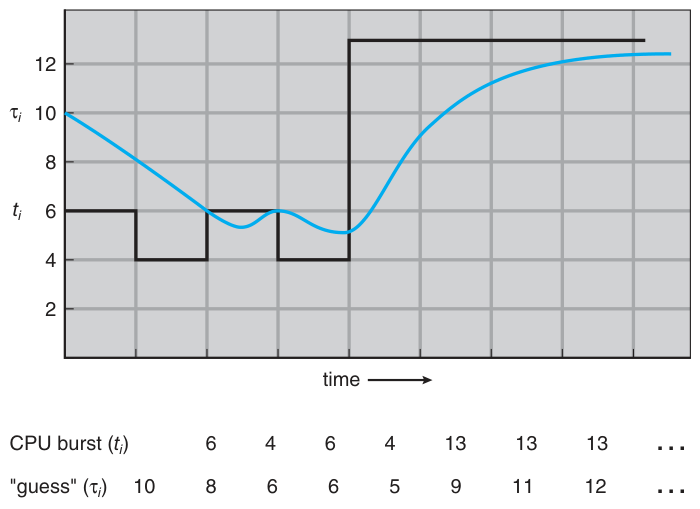
Practice练习
Q1. (Calculation) P1 (arrival 0.0, burst 8), P2 (0.4, 4), P3 (1.0, 1). Use nonpreemptive scheduling and base every decision on the information available at that time. Compute the average turnaround time for (a) FCFS, (b) SJF, (c) SJF after leaving the CPU idle for the first 1 time unit ("future-knowledge scheduling").Q1.（计算）进程（到达时刻，执行期）：P1 (0.0, 8)、P2 (0.4, 4)、P3 (1.0, 1)。采用非抢占式调度，且每个决策都只依据当时可获得的信息。计算以下情况的平均周转时间：（a）FCFS；（b）SJF；（c）前 1 个时间单位内让 CPU 保持空闲之后的 SJF（“掌握未来信息的调度”）。
Answer
(a) FCFS: P1 0–8, P2 8–12, P3 12–13. Turnaround: 8, 12 − 0.4 = 11.6, 13 − 1.0 = 12; average \(31.6/3\approx10.53\).（a）FCFS：P1 0–8，P2 8–12，P3 12–13。周转时间：8，12 − 0.4 = 11.6，13 − 1.0 = 12；平均值为 \(31.6/3\approx10.53\)。
(b) SJF: only P1 is present at time 0, so it runs first; then P3 (1) before P2 (4): P1 0–8, P3 8–9, P2 9–13. Turnaround: 8, 13 − 0.4 = 12.6, 9 − 1.0 = 8; average \(28.6/3\approx9.53\).（b）SJF：时刻 0 时只有 P1 存在，因此它先运行；然后 P3 (1) 排在 P2 (4) 之前：P1 0–8，P3 8–9，P2 9–13。周转时间：8，13 − 0.4 = 12.6，9 − 1.0 = 8；平均值为 \(28.6/3\approx9.53\)。
(c) Idle 0–1; at time 1 all three are present: P3 1–2, P2 2–6, P1 6–14. Turnaround: 14, 6 − 0.4 = 5.6, 2 − 1.0 = 1; average \(20.6/3\approx6.87\).（c）0–1 空闲；时刻 1 时三个进程都已到达：P3 1–2，P2 2–6，P1 6–14。周转时间：14，6 − 0.4 = 5.6，2 − 1.0 = 1；平均值为 \(20.6/3\approx6.87\)。
| idle | P3 | P2 | P1 |
0 1 2 6 14
SJF is optimal only if it knows the future. Waiting for the short jobs delays P1 but lowers the average, so greedy nonpreemptive SJF (9.53) is worse than the future-knowledge schedule (6.87).只有掌握未来信息，SJF 才是最优的。为短作业等待会推迟 P1，但能降低平均值，因此贪心的非抢占式 SJF（9.53）比掌握未来信息的调度（6.87）更差。
思路：每次决策只能用当时已到达的进程；(c) 让 CPU 先空等，换来后面短作业先跑。
Q2. (Calculation) With \(\alpha=0.8\) and \(\tau_0=10\) ms the measured bursts are 6, 12, 14, 4 ms. Compute \(\tau_1,\dots,\tau_4\). What do (i) \(\alpha=0\), \(\tau_0=100\) ms and (ii) \(\alpha=0.99\), \(\tau_0=10\) ms imply?Q2.（计算）在 \(\alpha=0.8\) 和 \(\tau_0=10\) ms 的条件下，实测执行期为 6、12、14、4 ms。计算 \(\tau_1,\dots,\tau_4\)。请说明（i）\(\alpha=0\)、\(\tau_0=100\) ms 与（ii）\(\alpha=0.99\)、\(\tau_0=10\) ms 分别意味着什么。
Answer
\(\tau_1=0.8\cdot6+0.2\cdot10=6.8\); \(\tau_2=0.8\cdot12+0.2\cdot6.8=10.96\); \(\tau_3=0.8\cdot14+0.2\cdot10.96=13.392\); \(\tau_4=0.8\cdot4+0.2\cdot13.392=5.878\) ms.\(\tau_1=0.8\cdot6+0.2\cdot10=6.8\)；\(\tau_2=0.8\cdot12+0.2\cdot6.8=10.96\)；\(\tau_3=0.8\cdot14+0.2\cdot10.96=13.392\)；\(\tau_4=0.8\cdot4+0.2\cdot13.392=5.878\) ms。
(i) \(\tau_{n+1}=\tau_n=100\) ms forever: measured bursts are ignored and every process is predicted at 100 ms, so SJF degenerates to FCFS. (ii) \(\tau_{n+1}\approx t_n\): only the last burst counts and the initial guess is forgotten after the first burst; the predictor reacts immediately but is noisy.（i）\(\tau_{n+1}=\tau_n=100\) ms 恒定：实测执行期被忽略，每个进程都被预测为 100 ms，因此 SJF 退化为 FCFS。（ii）\(\tau_{n+1}\approx t_n\)：只有最近一次执行期起作用，初始猜测在第一次执行期之后即被遗忘；预测器反应迅速，但波动较大。
Q3. (Calculation) P1 (arrival 0, burst 9), P2 (1, 3), P3 (2, 6), P4 (4, 2). Draw the Gantt charts for SRTF and for nonpreemptive SJF. Give waiting, turnaround and response times for SRTF and the average waiting time for SJF.Q3.（计算）进程（到达时刻，执行期）：P1 (0, 9)、P2 (1, 3)、P3 (2, 6)、P4 (4, 2)。画出 SRTF 与非抢占式 SJF 的甘特图。给出 SRTF 的等待时间、周转时间和响应时间，以及 SJF 的平均等待时间。
Answer
SRTF: P2 (3) preempts P1 (8 left) at t = 1. At t = 2, P3 (6) does not preempt P2 (2 left). P2 ends at 4, when P4 (2) arrives; the shortest is P4, then P3 (6), then P1 (8).SRTF：P2 (3) 在 t = 1 时抢占 P1（剩余 8）。在 t = 2 时，P3 (6) 没有抢占 P2（剩余 2）。P2 在时刻 4 结束，此时 P4 (2) 到达；剩余时间最短的是 P4，然后是 P3 (6)，最后是 P1 (8)。
| P1 | P2 | P4 | P3 | P1 |
0 1 4 6 12 20
| Process进程 | Finish完成时刻 | Turnaround周转时间 | Waiting等待 | Response响应时间 |
|---|---|---|---|---|
| P1 | 20 | 20 | 11 | 0 |
| P2 | 4 | 3 | 0 | 0 |
| P3 | 12 | 10 | 4 | 4 |
| P4 | 6 | 2 | 0 | 0 |
Averages: waiting 3.75, turnaround 8.75, response 1 ms.平均值：等待时间 3.75，周转时间 8.75，响应时间 1 ms。
Nonpreemptive SJF: P1 runs 0–9 (the only process at t = 0), then P4, P2, P3.非抢占式 SJF：P1 在 0–9 运行（t = 0 时它是唯一的进程），然后依次为 P4、P2、P3。
| P1 | P4 | P2 | P3 |
0 9 11 14 20
Waits 0, 10, 12, 5; average 6.75 ms, almost twice the SRTF value.等待时间依次为 0、10、12、5，平均值为 6.75 ms，几乎是 SRTF 值的两倍。
思路：每个新进程到达时，比较它的运行时间与当前进程的剩余时间。
Round-robin and priority scheduling ★★★轮转与优先级调度 ★★★
Goal. Trace round robin and priority scheduling, preemptive and nonpreemptive, compute waiting and turnaround times, and explain starvation and aging.目标。 演算轮转调度和优先级调度（抢占式与非抢占式），计算等待时间和周转时间，并解释饥饿和老化。
Step 1: round robin (RR)第 1 步：轮转调度（RR）
In words: round robin = every process gets the CPU for at most one time quantum q, then goes to the back of the queue.用文字表述：轮转 = 每个进程最多获得一个时间片 q 的 CPU，然后回到队尾。
Round robin（轮转调度）is FCFS with preemption. The time quantum（时间片）\(q\) is a small fixed time, typically 10–100 ms. The ready queue is a circular FIFO queue.轮转调度（RR）是带抢占的 FCFS。时间片 \(q\) 是一段小而固定的时间，通常为 10–100 ms。就绪队列是一个循环 FIFO 队列。
How to do it by hand:手工做法：
- Put the processes into the queue in order of arrival.把进程按到达顺序放入队列。
- Take the process at the head. Run it for \(q\) or until it ends, whichever is shorter.取队首的进程。运行 \(q\) 或直到它结束，以较短者为准。
- During that time, new arrivals join the tail of the queue first. Then the preempted process joins the tail behind them.在此期间，新到达的进程先加入队尾。然后，被抢占的进程排在它们后面加入队尾。
- Write the remaining time of the preempted process.记下被抢占进程的剩余时间。
- Repeat until the queue is empty.重复，直到队列为空。
Same four processes, \(q=4\) ms. After the first slice the queue is P2, P3, P4, P1: P2, P3 and P4 arrived before P1 was preempted.同样的四个进程，时间片为 \(q=4\) ms。第一段结束后，队列是 P2、P3、P4、P1：P2、P3 和 P4 都在 P1 被抢占之前到达。
| P1 | P2 | P3 | P4 | P1 | P3 | P4 | P3 |
0 4 8 12 16 20 24 25 26
| Process进程 | Finishes结束 | Turnaround = finish − arrival周转 = 结束 − 到达 | Waiting = turnaround − burst等待 = 周转 − 执行期 | Response = first start − arrival响应 = 第一次开始 − 到达 |
|---|---|---|---|---|
| P1 | 20 | 20 − 0 = 20 ms | 20 − 8 = 12 ms | 0 − 0 = 0 ms |
| P2 | 8 | 8 − 1 = 7 ms | 7 − 4 = 3 ms | 4 − 1 = 3 ms |
| P3 | 26 | 26 − 2 = 24 ms | 24 − 9 = 15 ms | 8 − 2 = 6 ms |
| P4 | 25 | 25 − 3 = 22 ms | 22 − 5 = 17 ms | 12 − 3 = 9 ms |
Average waiting time = (12 + 3 + 15 + 17) ÷ 4 = 11.75 ms. Average turnaround time = (20 + 7 + 24 + 22) ÷ 4 = 18.25 ms. Average response time = (0 + 3 + 6 + 9) ÷ 4 = 4.5 ms.平均等待时间 = (12 + 3 + 15 + 17) ÷ 4 = 11.75 ms。平均周转时间 = (20 + 7 + 24 + 22) ÷ 4 = 18.25 ms。平均响应时间 = (0 + 3 + 6 + 9) ÷ 4 = 4.5 ms。
The quantum decides the behaviour. For very large \(q\), RR becomes FCFS. For very small \(q\) the context switches take most of the time.时间片决定了它的行为。当 \(q\) 非常大时，RR 变成 FCFS。当 \(q\) 非常小时，上下文切换会占去大部分时间。
| Algorithm (same four processes)算法（相同的四个进程） | Avg waiting (ms)平均等待时间（ms） | Avg turnaround (ms)平均周转时间（ms） | Avg response (ms)平均响应时间（ms） |
|---|---|---|---|
| FCFS | 8.75 | 15.25 | 8.75 |
| SJF (nonpreemptive)SJF（非抢占式） | 7.75 | 14.25 | 7.75 |
| SRTF | 6.5 | 13 | 4.25 |
| RR (\(q=4\)) | 11.75 | 18.25 | 4.5 |
RR has the worst average waiting and turnaround time of the four algorithms here (11.75 ms and 18.25 ms). Every long process is interrupted again and again, so it finishes later. Its strength is that no process waits long for its first turn: the longest response time is 9 ms, against 15 ms under SRTF and 18 ms under FCFS. SRTF is best for average waiting and turnaround time. RR is the choice when interactivity matters.在这里的四种算法中，RR 的平均等待时间和周转时间最差（分别为 11.75 ms 和 18.25 ms）。每个长进程都被反复打断，因此完成得更晚。它的优点是没有进程要等很久才得到第一次运行：最长响应时间为 9 ms，而 SRTF 为 15 ms，FCFS 为 18 ms。SRTF 的平均等待时间和周转时间最好。当交互性很重要时，RR 是更好的选择。
Step 2: priority scheduling第 2 步：优先级调度
In words: priority scheduling = the ready process with the highest priority runs; equal priorities are served FCFS.用文字表述：优先级调度 = 就绪进程中优先级最高的运行；优先级相同则按 FCFS 服务。
Priority scheduling（优先级调度）gives each process a priority number. There is no agreement on whether 0 is high or low, so follow the question. These notes use "small number = high priority". SJF is priority scheduling in which the priority is the inverse of the predicted burst.优先级调度为每个进程分配一个优先级数。对于 0 是高还是低，没有统一的约定，因此以题目为准。本笔记使用"数字小表示优先级高"。SJF 就是一种优先级调度，其优先级是预测执行期的倒数。
It can be nonpreemptive (a higher-priority arrival only goes to the head of the ready queue) or preemptive (it takes the CPU at once).它可以是非抢占式的（优先级更高的新到达进程只会排到就绪队列的队首），也可以是抢占式的（它立即拿走 CPU）。
How to do it by hand: 1. At each decision point list the ready processes. 2. Run the one with the best priority. Ties go in FCFS order. 3. In the preemptive case, check every arrival: it preempts only if its priority is strictly better. 4. Waiting = finish − arrival − burst.手工做法：1. 在每个决策点列出就绪进程。2. 运行优先级最高的那个。优先级相同则按 FCFS 顺序。3. 在抢占式情形下，检查每次到达：只有优先级严格更高时才抢占。4. 等待 = 结束 − 到达 − 执行期。
Processes (arrival, burst, priority): P1 (0, 6, 3), P2 (2, 4, 1), P3 (3, 2, 2), P4 (5, 3, 1). Preemptive: P2 preempts P1 at 2. P3 (priority 2) does not preempt P2 (priority 1). P4 (priority 1, equal to P2) does not preempt P2 at 5.进程（到达，执行期，优先级）：P1（0，6，3），P2（2，4，1），P3（3，2，2），P4（5，3，1）。抢占式下：P2 在时刻 2 抢占 P1。P3（优先级 2）不抢占 P2（优先级 1）。P4（优先级 1，与 P2 相同）在时刻 5 不抢占 P2。
Preemptive:
| P1 | P2 | P4 | P3 | P1 |
0 2 6 9 11 15
Nonpreemptive:
| P1 | P2 | P4 | P3 |
0 6 10 13 15
| Process进程 | Preemptive: finish抢占式：结束 | Turnaround周转时间 | Waiting等待 | Nonpreemptive: finish非抢占式：结束 | Turnaround周转时间 | Waiting等待 |
|---|---|---|---|---|---|---|
| P1 | 15 | 15 − 0 = 15 | 15 − 6 = 9 | 6 | 6 − 0 = 6 | 6 − 6 = 0 |
| P2 | 6 | 6 − 2 = 4 | 4 − 4 = 0 | 10 | 10 − 2 = 8 | 8 − 4 = 4 |
| P3 | 11 | 11 − 3 = 8 | 8 − 2 = 6 | 15 | 15 − 3 = 12 | 12 − 2 = 10 |
| P4 | 9 | 9 − 5 = 4 | 4 − 3 = 1 | 13 | 13 − 5 = 8 | 8 − 3 = 5 |
Preemptive: average waiting time (9 + 0 + 6 + 1) ÷ 4 = 4.0 ms, average turnaround time (15 + 4 + 8 + 4) ÷ 4 = 7.75 ms. Nonpreemptive: average waiting time (0 + 4 + 10 + 5) ÷ 4 = 4.75 ms, average turnaround time (6 + 8 + 12 + 8) ÷ 4 = 8.5 ms.抢占式：平均等待时间 (9 + 0 + 6 + 1) ÷ 4 = 4.0 ms，平均周转时间 (15 + 4 + 8 + 4) ÷ 4 = 7.75 ms。非抢占式：平均等待时间 (0 + 4 + 10 + 5) ÷ 4 = 4.75 ms，平均周转时间 (6 + 8 + 12 + 8) ÷ 4 = 8.5 ms。
Starvation and aging. A steady stream of higher-priority processes can keep a low-priority process waiting for ever. This is starvation（饥饿）. Aging（老化）raises the priority of a process the longer it waits. Example: with priorities from 127 (low) to 0 (high), lowering the number of every waiting process by 1 each second brings a process from 127 to 0 in 127 s.饥饿与老化。 源源不断到来的高优先级进程，可能让低优先级进程永远等待。这就是饥饿。老化会随着进程等待时间变长而提高它的优先级。例如，优先级从 127（低）到 0（高），每秒把每个等待进程的数值减 1，则一个进程经过 127 s 就能从 127 变到 0。
Priority with round robin. The highest priority runs. Processes of equal priority share the CPU in round-robin order, and a preempted process goes to the tail of its own priority queue.优先级与轮转。 优先级最高的进程运行。优先级相同的进程按轮转顺序分享 CPU，被抢占的进程排到它自己优先级队列的队尾。
Practice练习
Q1. (Calculation) P1–P5 arrive at time 0 in this order, with burst (priority): P1 5 (4), P2 3 (1), P3 1 (2), P4 7 (2), P5 4 (3). A larger priority number means a higher priority. (a) Draw Gantt charts for FCFS, SJF, nonpreemptive priority and RR with \(q=2\). (b) Give the turnaround and (c) the waiting time of each process. (d) Which algorithm has the smallest average waiting time?Q1.（计算）P1–P5 按此顺序在时刻 0 到达，其执行期（优先级）分别为：P1 5 (4)、P2 3 (1)、P3 1 (2)、P4 7 (2)、P5 4 (3)。数值越大，优先级越高。（a）画出 FCFS、SJF、非抢占式优先级调度以及时间片为 \(q=2\) 的 RR 的甘特图；（b）给出每个进程的周转时间；（c）给出每个进程的等待时间；（d）哪一种算法的平均等待时间最小？
Answer
(a) Priority order: P1 (4), P5 (3), then P3 and P4 (both 2, FCFS order), then P2 (1).（a）优先级顺序：P1 (4)、P5 (3)，然后是 P3 和 P4（优先级均为 2，按 FCFS 顺序），最后是 P2 (1)。
FCFS:
| P1 | P2 | P3 | P4 | P5 |
0 5 8 9 16 20
SJF:
| P3 | P2 | P5 | P1 | P4 |
0 1 4 8 13 20
Priority:
| P1 | P5 | P3 | P4 | P2 |
0 5 9 10 17 20
RR (q = 2):
| P1 | P2 | P3 | P4 | P5 | P1 | P2 | P4 | P5 | P1 | P4 | P4 |
0 2 4 5 7 9 11 12 14 16 17 19 20
(b), (c) Values in the order P1, P2, P3, P4, P5:（b）、（c）各值按 P1、P2、P3、P4、P5 的顺序列出：
| Algorithm算法 | Turnaround周转时间 | Waiting等待 | Average waiting平均等待时间 |
|---|---|---|---|
| FCFS | 5, 8, 9, 16, 20 | 0, 5, 8, 9, 16 | 7.6 |
| SJF | 13, 4, 1, 20, 8 | 8, 1, 0, 13, 4 | 5.2 |
| Priority优先级调度 | 5, 20, 10, 17, 9 | 0, 17, 9, 10, 5 | 8.2 |
| RR | 17, 12, 5, 20, 16 | 12, 9, 4, 13, 12 | 10.0 |
(d) SJF has the smallest average waiting time (5.2 ms), as it must when all processes arrive at time 0.（d）SJF 的平均等待时间最小（5.2 ms）；当所有进程都在时刻 0 到达时，这一结果是必然的。
易错：优先级数字的大小约定要看题目；同优先级按 FCFS。
Q2. (Calculation) A system runs ten I/O-bound tasks and one CPU-bound task under round robin. Each I/O-bound task issues an I/O operation after every 1 ms of computing, and each I/O operation takes 10 ms. A context switch costs 0.1 ms. All tasks are long-running. What is the CPU utilization when (a) \(q=1\) ms, (b) \(q=10\) ms?Q2.（计算）在轮转调度下，某系统同时运行 10 个 I/O 密集型任务和 1 个 CPU 密集型任务。每个 I/O 密集型任务每计算 1 ms 就发起一次 I/O 操作，每次 I/O 操作耗时 10 ms。一次上下文切换耗时 0.1 ms。所有任务都是长时间运行的。当时间片为（a）\(q=1\) ms、（b）\(q=10\) ms 时，CPU 利用率是多少？
Answer
(a) Every task runs 1 ms (the I/O-bound tasks block after 1 ms, the CPU-bound task is preempted after 1 ms), then a switch of 0.1 ms follows: utilization \(=1/1.1\approx91\%\).（a）每个任务都运行 1 ms（I/O 密集型任务在 1 ms 后阻塞，CPU 密集型任务在 1 ms 后被抢占），随后是 0.1 ms 的切换：利用率为 \(=1/1.1\approx91\%\)。
(b) Each I/O-bound task runs only 1 ms and blocks, followed by a 0.1 ms switch: \(10\cdot1.1=11\) ms. The CPU-bound task runs the full 10 ms plus a 0.1 ms switch: 10.1 ms. One cycle takes 21.1 ms, of which \(10\cdot1+10=20\) ms are useful: utilization \(=20/21.1\approx94.8\%\). The I/O operations (10 ms) finish within the cycle, so the I/O-bound tasks are ready again when their turn comes.（b）每个 I/O 密集型任务只运行 1 ms 后即阻塞，随后是 0.1 ms 的切换，合计 \(10\cdot1.1=11\) ms。CPU 密集型任务运行完整的 10 ms，外加 0.1 ms 的切换：10.1 ms。一个周期共需 21.1 ms，其中有效执行 \(10\cdot1+10=20\) ms：利用率为 \(=20/21.1\approx94.8\%\)。I/O 操作（10 ms）在该周期内即可完成，因此轮到它们时，它们已经重新就绪。
Multilevel queue and feedback queue scheduling ★★★多级队列与反馈队列调度 ★★★
Goal. Trace a multilevel queue and a multilevel feedback queue, and say which process moves when.目标。 演算多级队列和多级反馈队列，并说明何时哪个进程移动。
Step 1: multilevel queue第 1 步：多级队列
In words: multilevel queue = several separate queues, one per type of process; the higher queue always runs first.用文字表述：多级队列 = 若干个独立的队列，每类进程一个；高层队列总是先运行。
A multilevel queue（多级队列）splits the processes by type into permanent queues, for example real-time, system, interactive and batch, from high to low priority. Each queue has its own algorithm, for example RR for the foreground and FCFS for the background. Between the queues the usual rule is fixed priority with preemption: a queue runs only if all higher queues are empty. A process never changes its queue, so the overhead is low but the scheme is inflexible.多级队列按进程类型把进程分到固定的队列中，例如从高到低依次为实时、系统、交互和批处理。每个队列可以有自己的算法，例如前台用 RR，后台用 FCFS。队列之间通常采用带抢占的固定优先级：只有当更高的队列全部为空时，某个队列才运行。进程不会改变队列，因此开销低，但不够灵活。
How to do it by hand: 1. Put each process into its queue. 2. At each decision point run the highest non-empty queue, with the algorithm of that queue. 3. An arrival in a higher queue preempts. 4. A preempted process returns to the head of its own queue if it arrived before the others of that queue.手工做法：1. 把每个进程放入它的队列。2. 在每个决策点，运行最高的非空队列，并使用该队列的算法。3. 更高队列中的到达会造成抢占。4. 若被抢占的进程比同队列中的其他进程更早到达，它回到本队列的队首。
| Process进程 | Queue队列 | Arrival到达时间 | Burst执行期 |
|---|---|---|---|
| B1 | background (FCFS)后台（FCFS） | 0 | 6 |
| B2 | background (FCFS)后台（FCFS） | 1 | 2 |
| F1 | foreground (RR, \(q=2\) ms)前台（RR，时间片 \(q=2\) ms） | 2 | 3 |
| F2 | foreground (RR, \(q=2\) ms)前台（RR，时间片 \(q=2\) ms） | 3 | 2 |
B1 runs alone from 0. F1 arrives at 2 and preempts it. F1 and F2 alternate with quantum 2. The background queue resumes at 7, when the foreground queue is empty. B1 comes before B2 because it arrived first.B1 从时刻 0 开始单独运行。F1 在时刻 2 到达并抢占它。F1 和 F2 以时间片 2 交替运行。后台队列在时刻 7 恢复，此时前台队列为空。B1 排在 B2 前面，因为它先到达。
| B1 | F1 | F2 | F1 | B1 | B2 |
0 2 4 6 7 11 13
| Process进程 | Finishes结束 | Turnaround = finish − arrival周转 = 结束 − 到达 | Waiting = turnaround − burst等待 = 周转 − 执行期 |
|---|---|---|---|
| B1 | 11 | 11 − 0 = 11 ms | 11 − 6 = 5 ms |
| B2 | 13 | 13 − 1 = 12 ms | 12 − 2 = 10 ms |
| F1 | 7 | 7 − 2 = 5 ms | 5 − 3 = 2 ms |
| F2 | 6 | 6 − 3 = 3 ms | 3 − 2 = 1 ms |
Average waiting time = (5 + 10 + 2 + 1) ÷ 4 = 4.5 ms. Average turnaround time = (11 + 12 + 5 + 3) ÷ 4 = 7.75 ms.平均等待时间 = (5 + 10 + 2 + 1) ÷ 4 = 4.5 ms。平均周转时间 = (11 + 12 + 5 + 3) ÷ 4 = 7.75 ms。
Step 2: multilevel feedback queue第 2 步：多级反馈队列
In words: feedback queue = a new process starts in the top queue, and sinks one queue each time it uses a whole quantum.用文字表述：反馈队列 = 新进程从最上层队列开始，每用完一个完整时间片就下降一级。
A multilevel feedback queue（多级反馈队列）lets processes move between queues. A process that uses too much CPU time moves down. So I/O-bound and interactive processes with short bursts stay in the high queues. A process that waits too long in a low queue may be moved up (aging), which prevents starvation.多级反馈队列允许进程在队列之间移动。占用 CPU 时间过多的进程会往下移。因此，I/O 密集型和交互型进程（执行期短）会留在高层队列。在低层队列中等待太久的进程可能被提升（老化），从而防止饥饿。
The standard example has three queues: queue 0 (RR, \(q=8\) ms), queue 1 (RR, \(q=16\) ms) and queue 2 (FCFS). A lower queue runs only if all higher queues are empty. A process that does not finish within its quantum moves down one queue.标准例子有三个队列：队列 0（RR，时间片 \(q=8\) ms）、队列 1（RR，时间片 \(q=16\) ms）和队列 2（FCFS）。只有当所有更高的队列都为空时，低队列才运行。在时间片内未结束的进程会降到下一级队列。

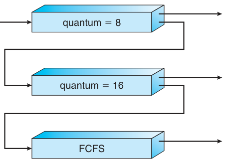
A feedback scheduler is defined by five parameters:反馈调度程序由五个参数定义：
- The number of queues.队列的数量。
- The algorithm of each queue.每个队列所用的算法。
- The rule to promote a process.提升进程的规则。
- The rule to demote a process.降级进程的规则。
- The rule that selects the queue a process enters when it needs service.决定进程需要服务时进入哪个队列的规则。
It is the most general scheme and the most complex, because all five must be tuned.这是最通用、也最复杂的方案，因为五个参数都必须调好。
How to do it by hand: 1. New processes enter queue 0. 2. Run the highest non-empty queue. 3. If the process uses its whole quantum without finishing, move it to the tail of the next lower queue. 4. If an arrival in a higher queue preempts it, put it at the tail of its own queue (here it keeps its queue and gets a full quantum later). 5. Write the content of all queues at every decision point.手工做法：1. 新进程进入队列 0。2. 运行最高的非空队列。3. 如果进程用完整个时间片仍未结束，把它移到下一级队列的队尾。4. 如果更高队列的到达抢占了它，把它放到自己队列的队尾（这里它保留原队列，并在以后获得一个完整的时间片）。5. 在每个决策点写出所有队列的内容。
| Algorithm算法 | Preemptive抢占式 | Starvation饥饿 | Favours有利于 | Main weakness主要缺点 |
|---|---|---|---|---|
| FCFS | No否 | No否 | Early arrivals, long bursts先到达者、长执行期 | Convoy effect; poor for interactive use护航效应；不适合交互式使用 |
| SJF | No否 | Yes (long jobs)是（长作业） | Short bursts短执行期 | Next burst must be predicted必须预测下一个执行期 |
| SRTF | Yes是 | Yes (long jobs)是（长作业） | Short bursts, even new ones短执行期，包括新到达的进程 | Prediction, more context switches需要预测，上下文切换更多 |
| RR | Yes是 | No否 | Short jobs, response time短作业，响应时间 | Waiting time; choice of \(q\); switch overhead等待时间；\(q\) 的选取；切换开销 |
| Priority优先级调度 | Either两者均可 | Yes (low priority), cured by aging是（低优先级），可通过老化解决 | Important processes重要进程 | Starvation; priority assignment饥饿；优先级指定 |
| Multilevel queue多级队列 | Yes (between queues)是（队列之间） | Yes (lower queues)是（较低队列） | By process type按进程类型 | Inflexible缺乏灵活性 |
| Multilevel feedback多级反馈 | Yes是 | Possible; aging prevents it可能发生，老化可防止 | I/O-bound, interactiveI/O 密集型、交互式 | Many parameters; can be gamed参数多；易被操纵 |
Practice练习
Q1. (Trace) A feedback scheduler has queue 0 (RR, \(q=8\)), queue 1 (RR, \(q=16\)) and queue 2 (FCFS), served in strict priority order. New processes enter queue 0; a process that uses its whole quantum moves down one queue; a process preempted by an arrival in a higher queue goes to the tail of its own queue and gets a full quantum next time. Process (arrival, burst): P1 (0, 40), P2 (5, 6), P3 (10, 20), P4 (30, 5). Draw the Gantt chart and give turnaround and waiting times.Q1.（手工演算）一个反馈调度程序有队列 0（RR，\(q=8\)）、队列 1（RR，\(q=16\)）和队列 2（FCFS），按严格的优先级顺序服务。新进程进入队列 0；用满整个时间片的进程下移一个队列；被更高队列中新到达的进程抢占的进程，会排到其所在队列的队尾，并在下一次获得完整的时间片。进程（到达时刻，执行期）：P1 (0, 40)、P2 (5, 6)、P3 (10, 20)、P4 (30, 5)。画出甘特图，并给出周转时间和等待时间。
Answer
P1 uses its quantum in queue 0 (0–8, 32 left) and moves to queue 1. P2 finishes in queue 0 (8–14). P3 uses its quantum (14–22, 12 left) and moves to queue 1 behind P1. P1 starts in queue 1 at 22 but P4 arrives in queue 0 at 30 and preempts it (P1 has run 8 ms, 24 left); P1 goes to the tail of queue 1. P4 finishes 30–35. P3 finishes in queue 1 (35–47). P1 uses a full quantum 47–63 (8 left), moves to queue 2 and finishes 63–71.P1 在队列 0 中用满其时间片（0–8，剩余 32），并移入队列 1。P2 在队列 0 中完成（8–14）。P3 用满其时间片（14–22，剩余 12），并移入队列 1，排在 P1 之后。P1 于时刻 22 在队列 1 中开始运行，但 P4 在时刻 30 到达队列 0 并抢占它（P1 已运行 8 ms，剩余 24）；P1 排到队列 1 的队尾。P4 在 30–35 完成。P3 在队列 1 中完成（35–47）。P1 用满一个时间片 47–63（剩余 8），移入队列 2，并在 63–71 完成。
| P1 | P2 | P3 | P1 | P4 | P3 | P1 | P1 |
0 8 14 22 30 35 47 63 71
Turnaround: P1 71, P2 9, P3 37, P4 5 ms. Waiting: P1 71 − 40 = 31, P2 3, P3 17, P4 0 ms; average 12.75 ms.周转时间：P1 71，P2 9，P3 37，P4 5 ms。等待时间：P1 71 − 40 = 31，P2 3，P3 17，P4 0 ms；平均值为 12.75 ms。
思路：每个时刻写出三个队列的内容，再决定谁运行。
Q2. (Calculation) The traditional UNIX scheduler recalculates priorities once per second: priority \(=\) (recent CPU usage)\(/2+\) base, with base 60; a higher number means a lower priority. Recent CPU usage is 40 for P1, 18 for P2 and 10 for P3. Compute the new priorities. Does the scheduler raise or lower the relative priority of a CPU-bound process? Why does a scheduler that favours processes with little recent CPU use favour I/O-bound programs but not starve CPU-bound ones?Q2.（计算）传统 UNIX 调度程序每秒重新计算一次优先级：优先级 \(=\)（近期 CPU 使用量）\(/2+\) 基数，基数为 60；数值越大，优先级越低。P1、P2、P3 的近期 CPU 使用量分别为 40、18 和 10。计算新的优先级。该调度程序是提高还是降低 CPU 密集型进程的相对优先级？为什么偏向近期 CPU 使用量少的进程的调度程序会偏向 I/O 密集型程序，却不会使 CPU 密集型程序饥饿？
Answer
P1: \(40/2+60=80\); P2: \(18/2+60=69\); P3: \(10/2+60=65\). Higher numbers mean lower priority, so the process that used the most CPU (P1) gets the worst priority: the scheduler lowers the relative priority of CPU-bound processes. I/O-bound programs use little CPU between recalculations and therefore get the best priority. A CPU-bound process is not starved forever: while it waits it uses no CPU, so its recent usage falls to the lowest value and its priority rises until it runs. This is a built-in form of aging.P1：\(40/2+60=80\)；P2：\(18/2+60=69\)；P3：\(10/2+60=65\)。数值越大，优先级越低，因此使用 CPU 最多的进程（P1）得到最差的优先级：该调度程序降低了 CPU 密集型进程的相对优先级。I/O 密集型程序在两次重新计算之间使用的 CPU 很少，因此获得最好的优先级。CPU 密集型进程不会被永远饥饿：它等待时不使用 CPU，因此其近期使用量会降至最低值，优先级随之上升，直到它得以运行。这是一种内建的老化形式。
Thread scheduling ★线程调度 ★
On most systems the kernel schedules kernel-level threads. User-level threads are managed by a thread library and must be mapped to kernel threads (Section 2.3). This gives two levels of competition, called contention scopes.大多数系统中，内核调度的是内核级线程。用户级线程由线程库管理，必须映射到内核线程（见第 2.3 节）。这就形成了两级竞争，称为竞争范围。
| Process-contention scope (PCS)（进程竞争范围） | System-contention scope (SCS)（系统竞争范围） | |
|---|---|---|
| Scheduler调度程序 | Thread library schedules user-level threads onto available LWPs线程库将用户级线程调度到可用的 LWP 上 | Kernel schedules kernel-level threads onto CPUs内核将内核级线程调度到 CPU 上 |
| Competition among竞争发生在 | Threads of the same process同一进程内的线程 | All threads in the system系统中的所有线程 |
| Used with适用于 | Many-to-one and many-to-many models多对一和多对多模型 | All models; the only scope of the one-to-one model (Windows, Linux)所有模型；也是一对一模型唯一的竞争范围（Windows、Linux） |
| Priority优先级调度 | Set by the programmer; the highest-priority runnable thread runs and preempts lower ones; no guaranteed time slicing among equal priorities由程序员设定；优先级最高的可运行线程运行，并抢占较低优先级的线程；同优先级线程之间不保证分时 | Kernel policy (previous sections)内核策略（前文所述） |
| Pthreads constantPthreads 常量 | PTHREAD_SCOPE_PROCESS |
PTHREAD_SCOPE_SYSTEM |
Pthreads sets the scope with pthread_attr_setscope(). Linux and macOS allow only PTHREAD_SCOPE_SYSTEM.Pthreads 用 pthread_attr_setscope() 设置竞争范围。Linux 和 macOS 只允许 PTHREAD_SCOPE_SYSTEM。
Practice练习
Q1. (Concept) Distinguish PCS from SCS scheduling. Which one applies to a one-to-one threading model?Q1.（概念）区分 PCS 调度与 SCS 调度。哪一种调度适用于一对一线程模型？
Answer
Under PCS the thread library schedules user-level threads onto available LWPs; the competition for the CPU is among the threads of one process, usually by programmer-assigned priority. Under SCS the kernel decides which kernel-level thread runs on a CPU, and all threads of the system compete. In the one-to-one model every user thread is a kernel thread, so only SCS exists (Windows, Linux).在 PCS 中，线程库将用户级线程调度到可用的 LWP 上；对 CPU 的竞争发生在同一进程的线程之间，通常依据程序员指定的优先级。在 SCS 中，内核决定哪个内核级线程在 CPU 上运行，系统中的所有线程相互竞争。在一对一模型中，每个用户线程都是内核线程，因此只存在 SCS（Windows、Linux）。
Multiprocessor scheduling ★★多处理器调度 ★★
Goal. Compare a common ready queue with per-core queues, explain hardware threads and logical CPUs, and explain why load balancing and processor affinity conflict.目标。 比较共享就绪队列与每核队列，解释硬件线程和逻辑 CPU，并解释为什么负载均衡与处理器亲和性相互冲突。
Step 1: how the cores are scheduled第 1 步：各核心如何调度
In words: SMP = every processor schedules itself from the ready queue.用文字表述：SMP = 每个处理器都从就绪队列中自行调度。
- Asymmetric multiprocessing（非对称多处理）: one master processor handles all scheduling decisions and I/O. It is simple, but the master is a bottleneck.非对称多处理：一个主处理器负责所有调度决策和 I/O。它简单，但主处理器会成为瓶颈。
- Symmetric multiprocessing (SMP)（对称多处理）: every processor is self-scheduling. This is the standard approach.对称多处理（SMP）：每个处理器都自行调度。这是标准做法。

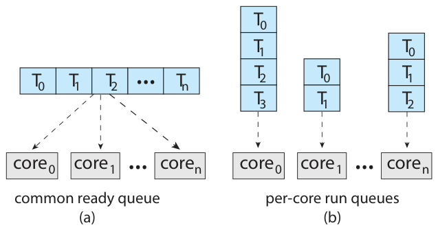
(a) A common ready queue needs a lock, because two cores must not take the same thread. The lock becomes a bottleneck. No load balancing is needed. (b) Per-processor run queues have no lock contention and use the cache better, so they are the most common design. They need load balancing.(a) 共享就绪队列需要加锁，因为两个核心不能取到同一个线程。锁会成为瓶颈。它不需要负载均衡。(b) 每个处理器各自的运行队列没有锁争用，并且更好地利用缓存，因此是最常见的设计。它们需要负载均衡。
Step 2: hardware threads第 2 步：硬件线程
A core often waits for memory. This is a memory stall（内存停顿）. To use the time, a core has two or more hardware threads（硬件线程）. When one stalls, the core runs another. Each hardware thread appears to the OS as a logical CPU. A quad-core chip with two hardware threads per core presents 4 × 2 = 8 logical CPUs. The hardware threads of one core share its pipeline and caches, so two busy threads on one core are slower than on two cores.核心常常要等待内存，这叫内存停顿。为了利用这段时间，一个核心有两个或更多硬件线程。当一个硬件线程停顿时，核心运行另一个。每个硬件线程对操作系统来说都表现为一个逻辑 CPU。一个四核芯片，每个核心两个硬件线程，就对外呈现 4 × 2 = 8 个逻辑 CPU。同一核心的硬件线程共享其流水线和缓存，因此两个繁忙的线程放在同一个核心上，比放在两个核心上要慢。
Step 3: load balancing and processor affinity第 3 步：负载均衡与处理器亲和性
- Load balancing（负载均衡）keeps the work evenly spread. In push migration（推迁移）a periodic task moves threads from busy to idle processors. In pull migration（拉迁移）an idle processor takes a waiting thread from a busy one.负载均衡使工作量尽量均匀分布。在推迁移中，周期性任务把线程从忙碌的处理器移到空闲的处理器。在拉迁移中，空闲的处理器从忙碌的处理器上取一个等待中的线程。
- Processor affinity（处理器亲和性）keeps a thread on the same processor to keep the cache warm. With soft affinity the OS tries but may migrate the thread. With hard affinity the thread fixes the set of processors it may use.处理器亲和性让线程留在同一个处理器上，以保持缓存的热度。使用软亲和性时，操作系统会尽量这样做，但仍可能迁移线程。使用硬亲和性时，线程规定了它可以使用的处理器集合。
Moving a thread for balance destroys its warm cache, so the two goals conflict. In a NUMA（非统一内存访问）system each CPU reaches its own memory faster than the memory of another CPU, so a NUMA-aware scheduler runs a thread near its memory.为了负载均衡而迁移线程，会破坏它的热缓存，所以两个目标相互冲突。在 NUMA（非统一内存访问）系统中，每个 CPU 访问自己的内存比访问其他 CPU 的内存更快，因此支持 NUMA 的调度程序会把线程安排在靠近其内存的地方运行。
Practice练习
Q1. (Compare) What are the advantages and disadvantages of a common run queue and of per-core run queues in an SMP system? Why can a common queue cause performance problems?Q1.（比较）在 SMP 系统中，公共运行队列与每核心运行队列各有什么优缺点？为什么公共队列可能导致性能问题？
Answer
Common queue: all threads are visible to every core, so no core idles while work exists and no load balancing is needed. But access to the queue must be protected by a lock; with many cores the lock is heavily contended and the queue becomes a bottleneck, and a thread may be dispatched on a different core each time, so the cache is not reused. Per-core queues: no lock contention, natural processor affinity and better cache use; the price is unequal queue lengths, so a load-balancing mechanism (push/pull migration) is required, and that migration costs cache contents.公共队列：所有线程对每个核心都可见，因此只要有工作，就不会有核心空闲，也无需负载均衡。但对队列的访问必须用锁保护；核心数较多时，锁争用严重，队列会成为瓶颈；而且线程每次都可能被分派到不同的核心上，因此缓存无法重复利用。每核心队列：没有锁争用，具有自然的处理器亲和性，缓存利用也更好；代价是各队列长度不均，因此需要负载均衡机制（推/拉迁移），而迁移会损失缓存中的内容。
Q2. (Application) A server has 2 processors; each has 4 cores, and each core has 2 hardware threads. (a) How many logical CPUs does the OS see? (b) Two CPU-bound threads that share no data are ready. Where should the OS place them? (c) A thread was blocked for network I/O and becomes ready again on a NUMA system. Why should a NUMA-aware scheduler run it on the CPU it used before?Q2.（应用）一台服务器有 2 个处理器，每个处理器有 4 个核心，每个核心有 2 个硬件线程。（a）操作系统看到多少个逻辑 CPU？（b）两个互不共享数据的 CPU 密集型线程已经就绪，操作系统应将它们放在何处？（c）某线程因网络 I/O 而阻塞，之后在 NUMA 系统上重新就绪。为什么具有 NUMA 感知能力的调度程序应让它在之前所用的 CPU 上运行？
Answer
(a) \(2\cdot4\cdot2=16\) logical CPUs. (b) On different cores, ideally on different processors (cores that do not share caches): hardware threads of one core share the pipeline and caches, so two threads on the same core run slower than on separate cores. The OS needs to know which logical CPUs share a core. (c) Its data may still be in that CPU's cache and, on NUMA, the memory it was allocated lies in the node of that CPU; on another node every memory access would be remote and slower.（a）\(2\cdot4\cdot2=16\) 个逻辑 CPU。（b）应放在不同的核心上，理想情况下放在不同的处理器上（这些核心不共享缓存）：同一核心的硬件线程共享流水线和缓存，因此同一核心上的两个线程会比分别位于不同核心上时运行得更慢。操作系统需要知道哪些逻辑 CPU 共享同一核心。（c）其数据可能仍在该 CPU 的缓存中；在 NUMA 系统上，分配给它的内存位于该 CPU 所在的节点中，若在另一个节点上运行，每次内存访问都将是远程访问，速度更慢。
Real-time scheduling ★★★实时调度 ★★★
Goal. Say what soft and hard real time mean, test a set of periodic tasks with the rate-monotonic bound, draw an RMS or EDF schedule, and decide whether all deadlines are met.目标。 说明软实时和硬实时的含义，用速率单调界限检验一组周期任务，画出 RMS 或 EDF 的调度图，并判断是否所有截止期都能满足。
Step 1: soft and hard, and the two latencies第 1 步：软实时与硬实时，以及两种延迟
Soft real-time（软实时）systems only prefer critical processes over non-critical ones. Hard real-time（硬实时）systems must serve a task by its deadline. Service after the deadline is as good as no service.软实时系统只是优先服务关键进程，而不是非关键进程。硬实时系统必须在截止期前完成任务。超过截止期的服务等同于没有服务。
The event latency（事件延迟）is the time from an event to its service. Two parts decide it:事件延迟是从事件发生到得到服务之间的时间。它由两部分决定：
- Interrupt latency（中断延迟）: from the arrival of an interrupt to the start of its service routine. It includes the time in which interrupts are disabled.中断延迟：从中断到达到其服务例程开始之间的时间。它包括中断被禁止的那段时间。
- Dispatch latency: the time the dispatcher needs to stop one process and start another. A preemptive kernel keeps it small.分派延迟：分派程序停止一个进程并启动另一个进程所需的时间。抢占式内核能让它保持较小。
A hard real-time system needs an upper bound for both. A small average is not enough.硬实时系统需要两者的上界。平均值小是不够的。
Step 2: the periodic task model and the utilization第 2 步：周期任务模型与利用率
Each periodic task has a processing time \(t\) per period, a deadline \(d\) and a period \(p\), with \(0\le t\le d\le p\).每个周期任务在每个周期内有一个处理时间 \(t\)、一个截止期 \(d\) 和一个周期 \(p\)，其中 \(0\le t\le d\le p\)。
The hyperperiod is the least common multiple of all periods, for example lcm(20, 30, 60) = 60. If all tasks are released together at time 0, the schedule repeats every hyperperiod. Checking all deadlines inside the first hyperperiod is then enough.超周期是所有周期的最小公倍数，比如 lcm(20, 30, 60) = 60。如果所有任务都在时刻 0 同时释放，调度就会每隔一个超周期重复一次。这时只要检查第一个超周期内的所有截止时间就够了。
Step 3: rate-monotonic scheduling (RMS)第 3 步：速率单调调度（RMS）
In words: RMS = the shorter the period, the higher the fixed priority.用文字表述：RMS = 周期越短，固定优先级越高。
Rate-monotonic scheduling（速率单调调度）is preemptive with static priorities. It is optimal among static-priority algorithms.速率单调调度是带抢占的静态优先级调度。在静态优先级算法中，它是最优的。
How to do it by hand: 1. Compute \(U\). 2. Compare with the bound. If \(U\le\) bound, stop: schedulable. 3. If not, give the higher priority to the shorter period and draw the schedule over one hyperperiod. 4. For each job compare its completion time with its deadline.手工做法：1. 计算 \(U\)。2. 与界限比较。若 \(U\le\) 不超过界限，则停止，结论为可调度。3. 若不满足，把更高的优先级给周期更短的任务，并在一个超周期内画出调度图。4. 对每个作业，比较其完成时间与截止期。
Tasks: P1 has period 50 ms and burst 25 ms. P2 has period 80 ms and burst 35 ms. \(U=25/50+35/80=0.5+0.4375=0.9375\). The bound for \(N=2\) is 0.828, so the test is inconclusive. P1 has the higher priority. P1 runs 0–25. P2 runs 25–50 and has 10 ms left. P1 runs 50–75. P2 resumes and ends at 85, after its deadline 80.任务：P1 的周期为 50 ms，执行期为 25 ms。P2 的周期为 80 ms，执行期为 35 ms。\(U=25/50+35/80=0.5+0.4375=0.9375\)。对 \(N=2\)，界限为 0.828，因此该测试无法判定。P1 优先级较高。P1 在 0–25 运行。P2 在 25–50 运行，还剩 10 ms。P1 在 50–75 运行。P2 恢复，在 85 结束，晚于它的截止期 80。
RMS:
| P1 | P2 | P1 | P2 |
0 25 50 75 85
RMS misses a deadline although \(U<1\). If \(U\) is above the bound, the set may still be schedulable, for example when the periods are multiples of each other.尽管 \(U<1\)，RMS 仍会错过截止期。若 \(U\) 高于界限，该任务集仍可能可调度，例如周期互为倍数时。
If the bound is inconclusive and a drawing is too long, use the exact test for fixed priorities.若界限无法判定，而且画图太长，就使用固定优先级的精确检验。

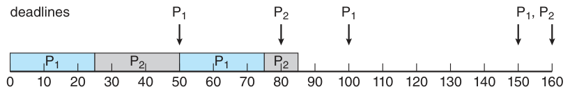
Step 4: earliest-deadline-first (EDF)第 4 步：最早截止期优先（EDF）
In words: EDF = whichever job has the earliest deadline runs now; priorities change with time.用文字表述：EDF = 哪个作业的截止期最早，就先运行它；优先级随时间变化。
EDF（最早截止时间优先）assigns dynamic priorities: the earlier the deadline, the higher the priority. It needs neither periodic tasks nor a constant burst. With every deadline equal to its period, a task set is schedulable by EDF if and only if \(U\le1\) (overheads ignored).EDF（最早截止期优先）使用动态优先级：截止期越早，优先级越高。它不需要周期任务，也不需要固定的执行期。当每个截止期都等于周期时，一个任务集当且仅当 \(U\le1\)（忽略开销）时可以被 EDF 调度。
How to do it by hand: 1. At every release and every completion, compare the absolute deadlines of the ready jobs. 2. Run the job with the earliest deadline. A new job preempts only if its deadline is strictly earlier. 3. Compare each completion time with its deadline.手工做法：1. 在每次释放和每次完成时，比较就绪作业的绝对截止期。2. 运行截止期最早的作业。新作业只有在截止期严格更早时才抢占。3. 比较每个完成时间与其截止期。
The same two tasks, \(U=0.9375\le1\). At 50 the second job of P1 has the deadline 100, later than the 80 of P2, so P2 is not preempted. At 100 the third job of P1 (deadline 150) is earlier than the second job of P2 (deadline 160) and preempts it.对同样的两个任务，\(U=0.9375\le1\)。在时刻 50，P1 的第二个作业截止期为 100，晚于 P2 的 80，因此 P2 不被抢占。在时刻 100，P1 的第三个作业（截止期 150）早于 P2 的第二个作业（截止期 160），于是抢占它。
EDF:
| P1 | P2 | P1 | P2 | P1 | P2 |
0 25 60 85 100 125 145
| Job作业 | Released释放时刻 | Deadline截止期 | Completes完成时刻 | Met?是否满足？ |
|---|---|---|---|---|
| P1, job 1P1，作业 1 | 0 | 50 | 25 | yes是 |
| P2, job 1P2，作业 1 | 0 | 80 | 60 | yes是 |
| P1, job 2P1，作业 2 | 50 | 100 | 85 | yes是 |
| P2, job 2P2，作业 2 | 80 | 160 | 145 | yes是 |
| P1, job 3P1，作业 3 | 100 | 150 | 125 | yes是 |
All deadlines are met under EDF, whereas RMS missed one for the same tasks.在 EDF 下所有截止期都能满足，而对同样的任务，RMS 错过了一个。
| Rate-monotonic单调速率 | EDF | |
|---|---|---|
| Priority优先级调度 | Static, by period静态，按周期 | Dynamic, by next deadline动态，按下一截止期 |
| Task model任务模型 | Periodic, constant burst周期性，执行期恒定 | Any task that announces its deadline任何声明其截止期的任务 |
| Guaranteed if保证条件 | \(U\le N(2^{1/N}-1)\) (sufficient only)\(U\le N(2^{1/N}-1)\)（仅为充分条件） | \(U\le1\) (exact)\(U\le1\)（充要） |
| Utilization利用率 | About 69% guaranteed in the worst case; up to 100% for harmonic periods最坏情况下保证约 69%；周期为调和周期时可达 100% | 100% in theory理论上为 100% |
Practice练习
Q1. (Calculation) \(P_1\) has period 50 and burst 25; \(P_2\) has period 75 and burst 30; deadlines equal the periods. (a) Can RMS schedule them? Draw the Gantt chart. (b) Illustrate EDF scheduling.Q1.（计算）\(P_1\) 的周期为 50，执行期为 25；\(P_2\) 的周期为 75，执行期为 30；截止期等于周期。（a）RMS 能否调度它们？画出甘特图。（b）用图示说明 EDF 调度。
Answer
\(U=25/50+30/75=0.5+0.4=0.9\), above the RMS bound 0.828, so no guarantee. (a) \(P_1\) has the shorter period and the higher priority. \(P_1\) runs 0–25, \(P_2\) runs 25–50 (25 of 30 ms), \(P_1\) runs 50–75, and \(P_2\) finishes only at 80, after its deadline 75. RMS fails.\(U=25/50+30/75=0.5+0.4=0.9\)，高于 RMS 的上界 0.828，因此无法保证。（a）\(P_1\) 的周期更短，优先级更高。\(P_1\) 运行 0–25，\(P_2\) 运行 25–50（完成 30 ms 中的 25 ms），\(P_1\) 运行 50–75，而 \(P_2\) 直到 80 才完成，晚于其截止期 75。RMS 失败。
| P1 | P2 | P1 | P2 |
0 25 50 75 80
(b) EDF: \(P_1\) runs 0–25. \(P_2\) (deadline 75) beats the second job of \(P_1\) (deadline 100) at 50 and runs 25–55. \(P_1\) runs 55–80 (deadline 100 met). The second job of \(P_2\) (released at 75, deadline 150) runs 80–110; the third job of \(P_1\) (released at 100, deadline 150) has the same deadline and does not preempt. \(P_1\) runs 110–135 and the CPU idles until 150 (the hyperperiod), as \(U=0.9\) leaves 10% idle. All deadlines are met.（b）EDF：\(P_1\) 运行 0–25。\(P_2\)（截止期 75）在时刻 50 优先于 \(P_1\) 的第二个作业（截止期 100），并运行 25–55。\(P_1\) 运行 55–80（截止期 100 得到满足）。\(P_2\) 的第二个作业（75 时释放，截止期 150）运行 80–110；\(P_1\) 的第三个作业（100 时释放，截止期 150）截止期相同，因此不抢占。\(P_1\) 运行 110–135，CPU 空闲至 150（超周期），因为 \(U=0.9\) 使 CPU 有 10% 的时间空闲。所有截止期均得到满足。
| P1 | P2 | P1 | P2 | P1 | idle |
0 25 55 80 110 135 150
思路：RMS 看周期（周期短优先），EDF 看绝对截止时间；画到一个超周期为止。
Q2. (Schedulability tests) For each task set (period, burst) decide with the utilization bound whether RMS is guaranteed; if the bound is inconclusive, decide with the response-time recurrence. Is the set schedulable by EDF? (a) (4, 1), (5, 2), (10, 1). (b) (20, 5), (30, 10), (60, 15). (c) (4, 2), (6, 3).Q2.（可调度性检验）对每个任务集（周期，执行期），先用利用率上界判断 RMS 是否可保证；若上界无法判定，则用响应时间递推式判断。该任务集能否由 EDF 调度？（a）(4, 1)、(5, 2)、(10, 1)。（b）(20, 5)、(30, 10)、(60, 15)。（c）(4, 2)、(6, 3)。
Answer
(a) \(U=0.25+0.4+0.1=0.75\le3(2^{1/3}-1)=0.780\): RMS is guaranteed; EDF too (\(U\le1\)).（a）\(U=0.25+0.4+0.1=0.75\le3(2^{1/3}-1)=0.780\)：RMS 可保证；EDF 同样可以（\(U\le1\)）。
(b) \(U=0.25+0.333+0.25=0.833>0.780\): inconclusive. Response times: \(R_1=5\); \(R_2=10+\lceil10/20\rceil5=15\le30\); \(R_3\): \(15\to15+5+10=30\to15+10+10=35\to15+10+20=45\to15+15+20=50\to50\le60\). All pass: schedulable by RMS (the last job of \(T_3\) ends at 50). EDF: \(U\le1\), yes.（b）\(U=0.25+0.333+0.25=0.833>0.780\)：无法判定。响应时间：\(R_1=5\)；\(R_2=10+\lceil10/20\rceil5=15\le30\)；\(R_3\)：\(15\to15+5+10=30\to15+10+10=35\to15+10+20=45\to15+15+20=50\to50\le60\)。全部通过：RMS 可调度（\(T_3\) 的最后一个作业在 50 结束）。EDF：\(U\le1\)，可以调度。
(c) \(U=0.5+0.5=1>0.828\): inconclusive. \(R_1=2\); \(R_2\): \(3\to3+\lceil3/4\rceil2=5\to3+\lceil5/4\rceil2=7\to3+\lceil7/4\rceil2=7>6\): RMS fails. EDF: \(U=1\le1\), so it is schedulable (with 100% utilization and no overhead).（c）\(U=0.5+0.5=1>0.828\)：无法判定。\(R_1=2\)；\(R_2\)；\(3\to3+\lceil3/4\rceil2=5\to3+\lceil5/4\rceil2=7\to3+\lceil7/4\rceil2=7>6\)：RMS 失败。EDF：\(U=1\le1\)，因此该任务集可调度（利用率为 100%，且忽略开销）。
Q3. (Explain) Why must interrupt latency and dispatch latency be bounded in a hard real-time system?Q3.（解释）为什么在硬实时系统中，中断延迟和分派延迟都必须有界？
Answer
A hard real-time task must be serviced by its deadline, and the time from the event until the task completes is interrupt latency plus dispatch latency plus the task's own execution time. If either latency has no upper bound (for example interrupts disabled for an arbitrary time, or non-preemptible kernel sections), no deadline can be guaranteed. Minimizing the latencies only improves the average case; hard real time needs worst-case bounds.硬实时任务必须在截止期之前得到服务，而从事件发生到任务完成的时间等于中断延迟加分派延迟，再加上任务自身的执行时间。只要其中任何一种延迟没有上界（例如中断被关闭任意长的时间，或内核中存在不可抢占的代码段），就无法保证任何截止期。降低延迟只能改善平均情况；硬实时需要的是最坏情况下的上界。
Operating-system examples ★操作系统示例 ★
- Linux uses the Completely Fair Scheduler (CFS)（完全公平调度器）. It runs the task with the smallest virtual run time (vruntime), kept in a red-black tree. A lower nice value (−20 to +19) gives a higher priority.Linux 使用完全公平调度器（CFS）。它运行虚拟运行时间（vruntime）最小的任务，该时间保存在红黑树中。nice 值越低（范围 −20 到 +19），优先级越高。
- Windows is priority-based and preemptive, with 32 priority levels (real-time 16–31). It boosts a thread released from a wait and lowers a thread whose quantum ends.Windows 采用基于优先级的抢占式调度，共有 32 个优先级（实时级为 16–31）。从等待中被唤醒的线程会被提升优先级，时间片用完的线程会被降低优先级。
- Solaris has six classes. Its time-sharing class is a feedback queue: a thread that uses its whole quantum is demoted, and one that returns from sleep is boosted.Solaris 有六个调度类。其分时类是一个反馈队列：用完整个时间片的线程会被降级，从睡眠中返回的线程会被提升。
Algorithm evaluation ★★算法评价 ★★
Goal. Name the four evaluation methods with their limits, apply Little's formula, and compare algorithms by deterministic modeling.目标。 说出四种评价方法及其局限，应用 Little 公式，并用确定性建模比较算法。
| Method方法 | Input输入 | Accuracy准确性 | Cost or limitation代价或局限 |
|---|---|---|---|
| Deterministic modeling确定性建模 | One fixed workload单一固定工作负载 | Exact, for that workload only精确，但仅适用于该工作负载 | Needs exact numbers; not general需要精确数据；不具普遍性 |
| Queueing model排队模型 | Burst and arrival distributions执行期与到达分布 | Approximate近似 | Needs tractable distributions and independence assumptions需要便于处理的分布和独立性假设 |
| Simulation模拟 | Random generator or trace随机数发生器或轨迹 | Good; a trace gives identical real input to every algorithm较好；轨迹可为每种算法提供完全相同的真实输入 | Computer time, trace storage, simulator effort计算机时间、轨迹存储、模拟器的开发工作量 |
| Implementation实现 | Real workload真实工作负载 | Fully accurate完全准确 | Highest cost; users adapt to the scheduler代价最高；用户会适应调度程序 |
In words: deterministic modeling = take one fixed workload and compute every algorithm on exactly that workload.用文字表述：确定性建模 = 取一个固定的负载，在这个负载上精确计算每个算法。
How to do it by hand: 1. Draw the Gantt chart for each algorithm. 2. Compute the waiting time of each process. 3. Average. 4. Pick the smallest average.手工做法：1. 为每个算法画出甘特图。2. 计算每个进程的等待时间。3. 求平均值。4. 选出最小的平均值。
Deterministic modeling is exact but applies only to that workload. It is used for examples and for showing trends.确定性建模是精确的，但只适用于那个负载。它用于举例，以及展示趋势。
In words: Little's formula = the average queue length equals the arrival rate times the average waiting time.用文字表述：Little 公式 = 平均队列长度 = 平均到达速率 × 平均等待时间。
Example: \(\lambda=7\) processes per second and \(n=14\) give \(W=14/7=2\) s. During the 2 s that one process waits, 7 × 2 = 14 new processes arrive, and that is the queue length.例如，\(\lambda=7\) 个进程每秒到达，\(n=14\) 给出 \(W=14/7=2\) s。在一个进程等待的 2 s 内，有 7 × 2 = 14 个新进程到达，这就是队列长度。
Simulation drives a model of the system with a random-number generator or with a trace（轨迹）, a recorded sequence of real events. A trace lets two algorithms be compared on exactly the same real input. Implementation in a real operating system is fully accurate but the most expensive.模拟可以用随机数发生器驱动系统模型，也可以用轨迹驱动。轨迹是记录下来的真实事件序列。使用轨迹，可以在完全相同的真实输入上比较两个算法。在真实操作系统中实现算法是完全准确的，但代价最高。
Practice练习
Q1. (Calculation) (a) On average 4 processes per second arrive and each waits 0.5 s in the ready queue. What is the average queue length? (b) In steady state the average queue length is 10 and the arrival rate is 4 processes per second. What is the average waiting time?Q1.（计算）（a）平均每秒到达 4 个进程，每个进程在就绪队列中等待 0.5 s。平均队列长度是多少？（b）在稳态下，平均队列长度为 10，到达率为每秒 4 个进程。平均等待时间是多少？
Answer
Little's formula \(n=\lambda W\) holds in steady state for any scheduling algorithm. (a) \(n=4\cdot0.5=2\) processes. (b) \(W=n/\lambda=10/4=2.5\) s.Little 公式 \(n=\lambda W\) 在稳态下对任何调度算法都成立。（a）\(n=4\cdot0.5=2\) 个进程。（b）\(W=n/\lambda=10/4=2.5\) s。
Q2. (Calculation) Use deterministic modeling for P1 = 9, P2 = 2, P3 = 14, P4 = 5 ms, all arriving at time 0 in this order. Compute the average waiting time for FCFS, nonpreemptive SJF and RR with \(q=4\) ms. Which is best?Q2.（计算）对 P1 = 9、P2 = 2、P3 = 14、P4 = 5 ms 采用确定性建模，它们均按此顺序在时刻 0 到达。计算 FCFS、非抢占式 SJF 以及时间片为 \(q=4\) ms 的 RR 的平均等待时间。哪一种最好？
Answer
FCFS:
| P1 | P2 | P3 | P4 |
0 9 11 25 30
SJF:
| P2 | P4 | P1 | P3 |
0 2 7 16 30
RR (q = 4):
| P1 | P2 | P3 | P4 | P1 | P3 | P4 | P1 | P3 |
0 4 6 10 14 18 22 23 24 30
FCFS waits 0, 9, 11, 25: average 11.25 ms. SJF waits P2 = 0, P4 = 2, P1 = 7, P3 = 16: average 6.25 ms. RR waits P1 = 24 − 9 = 15, P2 = 6 − 2 = 4, P3 = 30 − 14 = 16, P4 = 23 − 5 = 18: average 13.25 ms. SJF is best (as expected for simultaneous arrivals); RR is worst here.FCFS 的等待时间为 0、9、11、25，平均值为 11.25 ms。SJF 的等待时间：P2 = 0，P4 = 2，P1 = 7，P3 = 16，平均值为 6.25 ms。RR 的等待时间：P1 = 24 − 9 = 15，P2 = 6 − 2 = 4，P3 = 30 − 14 = 16，P4 = 23 − 5 = 18，平均值为 13.25 ms。SJF 最好（同时到达时，这正是预料之中的结果）；此处 RR 最差。
Terms to recognise ★需要认识的术语 ★
| Term术语 | What to know要知道什么 |
|---|---|
| Dispatch latency分派延迟 | Time the dispatcher needs to stop one process and start another分派程序停止一个进程并启动另一个进程所需的时间 |
| Proportional share（比例份额） | T shares in total; an application with N shares gets the fraction N/T. A request is admitted only if enough shares are free共有 T 份额；拥有 N 份的应用获得比例 N/T。只有当足够的份额可用时才接纳请求。 |
| Admission control（准入控制） | The scheduler guarantees completion by the deadline or rejects the request调度程序保证在截止期前完成，否则拒绝该请求 |
| SCHED_FIFO, SCHED_RR | POSIX real-time classes: FCFS without time slicing, and round robin among equal prioritiesPOSIX 实时类：不做时间片的 FCFS，以及同优先级之间的轮转 |
| Starvation（饥饿） | A process waits for ever. Priority scheduling, SJF and SRTF can cause it; aging cures it进程可能永远等待。优先级调度、SJF 和 SRTF 都可能造成这种情况；老化可以解决。 |
| Windows classesWindows 类 | Six priority classes and seven relative priorities give a number from 1 to 31六个优先级类和七个相对优先级，给出 1 到 31 之间的数值 |
| Solaris dispatch tableSolaris 分派表 | Priority, time quantum, new priority after expiry, new priority after sleep优先级、时间片、超时后的新优先级、睡眠后的新优先级 |
| Hardware thread硬件线程 | One instruction stream of a core; it appears as one logical CPU核心中的一条指令流，对操作系统表现为一个逻辑 CPU |
| Big.LITTLE | Heterogeneous cores: fast big cores for short bursts, efficient little cores for long work异构核心：快的大核处理短的执行期，省电的小核处理长时间的工作 |
| Trace-driven simulation轨迹驱动的模拟 | A recorded sequence of real events drives each algorithm由记录下来的真实事件序列驱动每个算法 |
Exam-style questions考试题型练习
Q1. (Calculation, 20 marks) Five processes arrive as follows (arrival, burst in ms): P1 (0, 7), P2 (2, 4), P3 (3, 1), P4 (5, 4), P5 (6, 2). Ties are broken in FCFS order, context-switch time is zero, and a process that arrives at the instant a quantum expires is queued before the preempted process. (a) Draw the Gantt chart for nonpreemptive SJF (5 marks). (b) Draw the Gantt chart for SRTF (6 marks). (c) Draw the Gantt chart for RR with \(q=3\) ms (6 marks). (d) For each algorithm give the average waiting, turnaround and response time and state which algorithm is best for which criterion (3 marks).Q1.（计算，20 分）五个进程的到达情况如下（到达时间，CPU 执行期，单位 ms）：P1（0，7）、P2（2，4）、P3（3，1）、P4（5，4）、P5（6，2）。出现平局时按 FCFS 顺序决定先后；上下文切换时间为零；恰好在时间片到期时到达的进程，排在被抢占的进程之前入队。（a）画出非抢占式 SJF 的甘特图（5 分）。（b）画出 SRTF 的甘特图（6 分）。（c）画出时间片为 \(q=3\) ms 的 RR 的甘特图（6 分）。（d）对每种算法给出平均等待时间、平均周转时间和平均响应时间，并说明在各项调度准则下哪种算法最优（3 分）。
Answer
(a) Nonpreemptive SJF: P1 runs 0–7. Then P3 (1), P5 (2); P2 and P4 both need 4 ms, and P2 arrived first.（a）非抢占式 SJF：P1 在 0–7 运行。随后依次为 P3（1）、P5（2）；P2 和 P4 都需要 4 ms，且 P2 先到达。
| P1 | P3 | P5 | P2 | P4 |
0 7 8 10 14 18
(b) SRTF: P2 (4) preempts P1 (5 left) at 2; P3 (1) preempts P2 (3 left) at 3; P2 resumes at 4 and is not preempted by P4 (4 > 2 left) at 5 or by P5 (2 > 1 left) at 6; then P5, P4, P1.（b）SRTF：P2（4）在 2 时抢占 P1（剩余 5）；P3（1）在 3 时抢占 P2（剩余 3）；P2 在 4 时恢复运行，在 5 时未被 P4（4 > 剩余 2）抢占，在 6 时也未被 P5（2 > 剩余 1）抢占；然后依次为 P5、P4、P1。
| P1 | P2 | P3 | P2 | P5 | P4 | P1 |
0 2 3 4 7 9 13 18
(c) RR, \(q=3\). Queue after 3: P2, P3, P1 (arrivals before the preempted P1); after 6: P3, P1, P4, P5, P2.（c）RR，\(q=3\)。时刻 3 之后的队列为 P2、P3、P1（新到达的进程排在被抢占的 P1 之前）；时刻 6 之后为 P3、P1、P4、P5、P2。
| P1 | P2 | P3 | P1 | P4 | P5 | P2 | P1 | P4 |
0 3 6 7 10 13 15 16 17 18
(d) Finish times: SJF P1 7, P3 8, P5 10, P2 14, P4 18; SRTF P3 4, P2 7, P5 9, P4 13, P1 18; RR P3 7, P5 15, P2 16, P1 17, P4 18.（d）完成时间：SJF 为 P1 7、P3 8、P5 10、P2 14、P4 18；SRTF 为 P3 4、P2 7、P5 9、P4 13、P1 18；RR 为 P3 7、P5 15、P2 16、P1 17、P4 18。
| Algorithm算法 | Waiting (P1…P5)等待时间（P1…P5） | Avg waiting平均等待时间 | Avg turnaround平均周转时间 | Avg response平均响应时间 |
|---|---|---|---|---|
| SJF (nonpreemptive)SJF（非抢占式） | 0, 8, 4, 9, 2 | 4.6 | 8.2 | 4.6 |
| SRTF | 11, 1, 0, 4, 1 | 3.4 | 7.0 | 1.0 |
| RR (\(q=3\)) | 10, 10, 3, 9, 7 | 7.8 | 11.4 | 3.2 |
SRTF is best for waiting and turnaround time (it is optimal for the average waiting time) and also for response time here. RR has a short response time, but the worst waiting and turnaround time because every process is interrupted repeatedly. Under nonpreemptive SJF, response time equals waiting time.SRTF 在等待时间和周转时间上最优（它对平均等待时间是最优的），在本例中响应时间也最优。RR 的响应时间较短，但等待时间和周转时间最差，因为每个进程都被反复打断。非抢占式 SJF 下，响应时间等于等待时间。
易错：RR 中，恰好在时间片结束时到达的进程要排在刚用完时间片的进程之前。
Q2. (Calculation, 20 marks) Preemptive priority scheduling with round robin among equal priorities, \(q=10\). A higher number means a higher priority; a preempted process goes to the end of the queue of its priority. An idle task with priority 0 runs when nothing else is ready. P1 (priority 40, burst 20, arrival 0), P2 (30, 25, 25), P3 (30, 25, 30), P4 (35, 15, 60), P5 (5, 10, 100), P6 (10, 10, 105). (a) Draw the Gantt chart (10 marks). (b) Give turnaround and waiting time of each process (6 marks). (c) Compute the CPU utilization (4 marks).Q2.（计算，20 分）抢占式优先级调度，同优先级进程之间采用轮转，\(q=10\)。数字越大，优先级越高；被抢占的进程排到其优先级队列的末尾。优先级为 0 的空闲任务在没有其他进程就绪时运行。P1（优先级 40，CPU 执行期 20，到达时间 0）、P2（30，25，25）、P3（30，25，30）、P4（35，15，60）、P5（5，10，100）、P6（10，10，105）。（a）画出甘特图（10 分）。（b）给出每个进程的周转时间和等待时间（6 分）。（c）计算 CPU 利用率（4 分）。
Answer
(a) P1 runs alone 0–20; the CPU idles until P2 arrives at 25. P2 and P3 (equal priority) alternate: P2 25–35, P3 35–45 (P3 arrived at 30 and waits for P2's quantum), P2 45–55, P3 55–60. At 60 P4 (priority 35) preempts P3, which goes to the end of the queue, and runs 60–75. Then P2 finishes 75–80 and P3 80–90. The CPU idles until P5 arrives at 100; P5 runs 100–105, P6 (priority 10) preempts it and runs 105–115, then P5 finishes 115–120.（a）P1 在 0–20 单独运行；CPU 空闲，直到 P2 于 25 到达。P2 与 P3（同优先级）交替运行：P2 在 25–35，P3 在 35–45（P3 于 30 到达，须等待 P2 的时间片用完），P2 在 45–55，P3 在 55–60。60 时，P4（优先级 35）抢占 P3，P3 被排到队列末尾；P4 在 60–75 运行。随后 P2 在 75–80 完成，P3 在 80–90 运行。CPU 空闲，直到 P5 于 100 到达；P5 在 100–105 运行，P6（优先级 10）抢占它并在 105–115 运行，然后 P5 在 115–120 完成。
| P1 | idle | P2 | P3 | P2 | P3 | P4 | P2 | P3 | idle | P5 | P6 | P5 |
0 20 25 35 45 55 60 75 80 90 100 105 115 120
(b)
| Process进程 | P1 | P2 | P3 | P4 | P5 | P6 |
|---|---|---|---|---|---|---|
| Finish完成时刻 | 20 | 80 | 90 | 75 | 120 | 115 |
| Turnaround周转时间 | 20 | 55 | 60 | 15 | 20 | 10 |
| Waiting等待 | 0 | 30 | 35 | 0 | 10 | 0 |
(c) The CPU is idle 20–25 and 90–100, i.e. 15 of 120 time units. Utilization \(=105/120=87.5\%\) (the sum of the bursts is 105).（c）CPU 在 20–25 和 90–100 空闲，即 120 个时间单位中的 15 个。利用率 \(=105/120=87.5\%\)（各进程执行期之和为 105）。
思路：先按到达时间列出每个时刻最高优先级的就绪队列，再画图。
Q3. (Multilevel feedback queue, 15 marks) A scheduler has queue 0 (RR, \(q=2\)), queue 1 (RR, \(q=4\)) and queue 2 (FCFS), in strict priority order. New processes enter queue 0; using a whole quantum moves a process down one queue; a process preempted by an arrival in a higher queue goes to the tail of its own queue and gets a full quantum next time. Process (arrival, burst): P1 (0, 9), P2 (1, 3), P3 (5, 10), P4 (9, 2). (a) Draw the Gantt chart (8 marks). (b) Give turnaround and waiting times (4 marks). (c) Explain how starvation can occur and how to prevent it (3 marks).Q3.（多级反馈队列，15 分）调度程序有队列 0（RR，\(q=2\)）、队列 1（RR，\(q=4\)）和队列 2（FCFS），三者按严格的优先级顺序排列。新进程进入队列 0；用完一个完整时间片的进程降到下一级队列；被较高队列中新到达的进程抢占的进程，排到其所在队列的末尾，并在下次获得一个完整的时间片。进程（到达时间，CPU 执行期）：P1（0，9）、P2（1，3）、P3（5，10）、P4（9，2）。（a）画出甘特图（8 分）。（b）给出周转时间和等待时间（4 分）。（c）解释饥饿如何发生以及如何预防（3 分）。
Answer
(a) P1 runs 0–2 in queue 0 (7 left) and moves to queue 1; P2 runs 2–4 (1 left) and moves to queue 1. P1 starts in queue 1 at 4 but P3 arrives at 5 and preempts it (P1 has 6 left, goes to the tail of queue 1: P2, P1). P3 runs 5–7 (8 left) and moves to queue 1 (P2, P1, P3). P2 finishes 7–8. P1 starts at 8 but P4 arrives at 9 and preempts it (5 left; queue 1: P3, P1). P4 finishes 9–11 in queue 0. P3 uses its quantum 11–15 (4 left) and moves to queue 2; P1 uses its quantum 15–19 (1 left) and moves to queue 2. FCFS in queue 2: P3 19–23, P1 23–24.（a）P1 在队列 0 中运行 0–2（剩余 7）后移入队列 1；P2 运行 2–4（剩余 1）后移入队列 1。P1 在 4 时于队列 1 开始运行，但 P3 于 5 到达并抢占它（P1 剩余 6，排到队列 1 的末尾：P2、P1）。P3 运行 5–7（剩余 8）后移入队列 1（P2、P1、P3）。P2 在 7–8 完成。P1 在 8 时开始运行，但 P4 于 9 到达并抢占它（剩余 5；队列 1：P3、P1）。P4 在队列 0 中运行 9–11 并完成。P3 用完其时间片 11–15（剩余 4）后移入队列 2；P1 用完其时间片 15–19（剩余 1）后移入队列 2。队列 2 中按 FCFS 调度：P3 在 19–23 运行，P1 在 23–24 运行。
| P1 | P2 | P1 | P3 | P2 | P1 | P4 | P3 | P1 | P3 | P1 |
0 2 4 5 7 8 9 11 15 19 23 24
(b) Turnaround: P1 24, P2 7, P3 18, P4 2 ms. Waiting: P1 24 − 9 = 15, P2 4, P3 8, P4 0 ms; average 6.75 ms.（b）周转时间：P1 24、P2 7、P3 18、P4 2 ms。等待时间：P1 24 − 9 = 15、P2 4、P3 8、P4 0 ms；平均值为 6.75 ms。
(c) If new short processes keep arriving in queues 0 and 1, the processes in queue 2 never get the CPU: starvation. Remedy: aging, i.e. promote a process that has waited longer than a threshold to a higher queue. The scheduler favours I/O-bound processes because their short bursts end inside the small quantum of queue 0 and they re-enter queue 0 after each I/O, while CPU-bound processes use whole quanta and sink.（c）若新的短进程持续到达队列 0 和队列 1，则队列 2 中的进程将永远得不到 CPU，即发生饥饿。解决办法是老化，即把等待时间超过某一阈值的进程提升到更高的队列。该调度程序偏向 I/O 密集型进程：它们的短执行期在队列 0 较小的时间片内即结束，并在每次 I/O 之后重新进入队列 0；而 CPU 密集型进程每次都用满整个时间片，逐级降到较低队列。
Q4. (Real-time scheduling, 15 marks) Three periodic tasks with deadline equal to period: \(T_1\) (period 20, burst 5), \(T_2\) (30, 10), \(T_3\) (60, 15). (a) Compute the CPU utilization (2 marks). (b) Does the RMS utilization bound guarantee schedulability? (3 marks). (c) Draw the RMS schedule over one hyperperiod and check all deadlines (6 marks). (d) Is the set schedulable by EDF? What utilization can EDF reach in theory, and why not in practice? (4 marks)Q4.（实时调度，15 分）三个周期任务，截止期等于周期：\(T_1\)（周期 20，CPU 执行期 5）、\(T_2\)（周期 30，CPU 执行期 10）、\(T_3\)（周期 60，CPU 执行期 15）。（a）计算 CPU 利用率（2 分）。（b）RMS 的利用率上界能否保证可调度性？（3 分）。（c）画出一个超周期内的 RMS 调度图，并检查所有截止期（6 分）。（d）该任务集能否由 EDF 调度？EDF 理论上能达到多高的利用率，实践中为何达不到？（4 分）
Answer
(a) \(U=5/20+10/30+15/60=0.25+0.333+0.25=0.833\).
(b) For \(N=3\) the bound is \(3(2^{1/3}-1)=0.780\). Since \(0.833>0.780\) the bound does not guarantee schedulability; it is only a sufficient test, so the result is inconclusive (not a proof of failure).（b）对 \(N=3\) 而言，上界为 \(3(2^{1/3}-1)=0.780\)。由于 \(0.833>0.780\)，该上界不能保证可调度性；它只是充分性检验，因此结论不确定（这并不能证明调度会失败）。
(c) Hyperperiod \(H=\operatorname{lcm}(20,30,60)=60\). Priorities: \(T_1>T_2>T_3\) (shorter period first).（c）超周期 \(H=\operatorname{lcm}(20,30,60)=60\)。优先级：\(T_1>T_2>T_3\)（周期较短者优先）。
| T1 | T2 | T3 | T1 | T3 | T2 | T1 | T3 | idle |
0 5 15 20 25 30 40 45 50 60
\(T_3\) is preempted by \(T_1\) at 20 and by \(T_2\) at 30. Completion times: \(T_1\) at 5, 25, 45 (deadlines 20, 40, 60); \(T_2\) at 15, 40 (deadlines 30, 60); \(T_3\) at 50 (deadline 60). All deadlines are met and the CPU idles 10 of 60 units (\(1-U\)).\(T_3\) 在 20 时被 \(T_1\) 抢占，在 30 时被 \(T_2\) 抢占。完成时间：\(T_1\) 在 5、25、45 完成（截止期分别为 20、40、60）；\(T_2\) 在 15、40 完成（截止期分别为 30、60）；\(T_3\) 在 50 完成（截止期为 60）。所有截止期均得到满足，CPU 在 60 个时间单位中有 10 个空闲（\(1-U\)）。
(d) \(U=0.833\le1\), so EDF schedules the set. In theory EDF reaches 100% utilization for any task set with \(U\le1\). In practice context-switch time and interrupt handling consume CPU time, so the full 100% cannot be used.（d）\(U=0.833\le1\)，因此 EDF 能够调度该任务集。理论上，对于满足 \(U\le1\) 的任意任务集，EDF 都能达到 100% 的利用率。实际上，上下文切换时间和中断处理会占用 CPU 时间，因此无法用满 100%。
思路：利用率检验只是充分条件，不通过时要画图（或用响应时间法）来判断。
Q5. (Multiprocessor scheduling, 15 marks) (a) Define processor affinity and distinguish soft from hard affinity (4 marks). (b) Why does load balancing conflict with affinity? Describe push and pull migration (5 marks). (c) A server has 2 processors with 4 cores each and 2 hardware threads per core. How many logical CPUs does the OS see, and where should it place two CPU-bound threads that share no data? (4 marks) (d) Which contention scope do Pthreads use on Linux? (2 marks)Q5.（多处理器调度，15 分）（a）定义处理器亲和性，并区分软亲和性与硬亲和性（4 分）。（b）为什么负载均衡与亲和性相冲突？描述推/拉迁移（5 分）。（c）一台服务器有 2 个处理器，每个处理器有 4 个核心，每个核心有 2 个硬件线程。操作系统能看到多少个逻辑 CPU？对于两个互不共享数据的 CPU 密集型线程，应当把它们放在哪里？（4 分）（d）Pthreads 在 Linux 上使用哪种竞争范围？（2 分）
Answer
(a) Processor affinity is the tendency to keep a thread on the processor where it has been running, so that it reuses its warm cache; after a migration the old cache is invalidated and the new one must be refilled. With soft affinity the OS tries to keep the thread on one processor but may migrate it; with hard affinity the thread specifies the set of processors it may run on (Linux sched_setaffinity()).（a）处理器亲和性是指线程倾向于留在其之前运行的处理器上，从而复用其热缓存；迁移之后，旧缓存失效，新缓存须重新填充。软亲和性下，操作系统尽量使线程留在同一处理器上，但可能迁移它；硬亲和性下，线程指定其可以运行的处理器集合（Linux sched_setaffinity()）。
(b) Load balancing moves threads from busy to idle CPUs, and every move discards cache contents (on NUMA also the local memory), so it works against affinity. Push migration: a periodic task checks the load of every processor and pushes threads from overloaded to less busy processors. Pull migration: an idle processor pulls a waiting thread from a busy one.（b）负载均衡把线程从繁忙的 CPU 迁移到空闲的 CPU，而每次迁移都会丢弃缓存内容（在 NUMA 系统上还包括本地内存），因此它与亲和性相抵触。推迁移：一个周期性任务检查每个处理器的负载，并把线程从过载的处理器推到负载较轻的处理器上。拉迁移：空闲处理器从繁忙的处理器上拉取一个等待中的线程。
(c) \(2\cdot4\cdot2=16\) logical CPUs. The two threads should run on different cores, because the hardware threads of one core share its pipeline and caches and slow each other down.（c）\(2\cdot4\cdot2=16\) 个逻辑 CPU。两个线程应当运行在不同的核心上，因为同一核心的硬件线程共享其流水线和缓存，会相互拖慢。
(d) Linux uses the one-to-one model, so only system-contention scope (PTHREAD_SCOPE_SYSTEM) is available: the kernel schedules all threads of the system.（d）Linux 使用一对一模型，因此只能使用系统竞争范围（PTHREAD_SCOPE_SYSTEM）：由内核调度系统中的所有线程。
Q6. (Evaluation and Linux, 15 marks) (a) A server has on average 12 requests in its queue and receives 6 requests per second. Find the average waiting time, and the average queue length if the arrival rate rises to 8 requests per second at the same waiting time (4 marks). (b) Which method compares two schedulers on identical real input, and why is deterministic modeling not enough for general conclusions? (5 marks) (c) Under CFS, why does an I/O-bound task respond quickly although it has the same nice value as a CPU-bound task? (6 marks)Q6.（评价与 Linux，15 分）（a）一台服务器队列中平均有 12 个请求，每秒接收 6 个请求。求平均等待时间；若到达率升至每秒 8 个请求且等待时间保持不变，求平均队列长度（4 分）。（b）哪种方法能在完全相同的真实输入上比较两个调度程序？为什么确定性建模不足以得出一般性结论？（5 分）（c）在 CFS 下，为什么 I/O 密集型任务尽管与 CPU 密集型任务的 nice 值相同，仍能快速响应？（6 分）
Answer
(a) Little's formula \(n=\lambda W\) gives \(W=n/\lambda=12/6=2\) s; with \(\lambda=8\) requests/s the queue length is \(n=8\cdot2=16\) requests.（a）Little 公式 \(n=\lambda W\) 给出 \(W=n/\lambda=12/6=2\) s；若到达率为 \(\lambda=8\) requests/s，则队列长度为 \(n=8\cdot2=16\) 个请求。
(b) Trace-driven simulation: the sequence of real CPU and I/O events is recorded once and fed to the simulator of each algorithm, so both are compared on the same realistic input, including the order of events. Deterministic modeling gives exact numbers only for the one small workload it is given, so its results cannot be generalized.（b）踪迹驱动仿真：把真实的 CPU 与 I/O 事件序列记录一次，再输入每个算法的仿真器，使两种算法在完全相同的真实输入（包括事件的先后顺序）上进行比较。确定性建模只能针对所给的那一个小型工作负载给出精确数值，因此其结果无法推广。
(c) CFS always runs the task with the smallest vruntime (actual run time scaled by a priority factor). The I/O-bound task runs only briefly before it blocks, so its vruntime grows slowly, whereas the CPU-bound task's vruntime grows continuously. When the I/O completes, the I/O-bound task has the smaller vruntime, is the leftmost node of the red-black tree and preempts the running CPU-bound task, without any explicit priority boost.（c）CFS 总是运行 vruntime 最小的任务（vruntime 即按优先级因子缩放后的实际运行时间）。I/O 密集型任务在阻塞前只运行很短时间，因此其 vruntime 增长缓慢；而 CPU 密集型任务的 vruntime 持续增长。I/O 完成时，I/O 密集型任务的 vruntime 更小，成为红黑树中最左侧的节点，并抢占正在运行的 CPU 密集型任务，无需任何显式的优先级提升。
Textbook exercises课后习题
Textbook exercises with answers: 37 questions教材习题及答案，共 37 题，点击展开
E1. (Practice Exercise 5.1) A CPU-scheduling algorithm determines an order for the execution of its scheduled processes. Given \(n\) processes to be scheduled on one processor, how many different schedules are possible? Give a formula in terms of \(n\).E1. （练习题 5.1）CPU 调度算法会为其所调度的进程确定一个执行顺序。给定要在一个处理器上调度的 \(n\) 个进程，共有多少种不同的调度方案？请给出以 \(n\) 表示的公式。
Answer
A schedule is an order in which the processes use the processor, each process running to completion. Any of the \(n\) processes can be first; for each choice, any of the remaining \(n-1\) processes can be second; and so on, until one process is left for the last position. By the multiplication rule the number of schedules is调度方案是进程使用处理器的顺序，每个进程都运行至结束。\(n\) 个进程中的任何一个都可以排在第一位；对于每一种选择，其余的 \(n-1\) 个进程中的任何一个都可以排在第二位；依此类推，直到最后一个位置只剩下一个进程。根据乘法法则，调度方案的数量为
\[n\,(n-1)(n-2)\cdots 2\cdot 1=n!\]
For example, 3 processes have \(3!=6\) possible orders and 5 processes have \(5!=120\). The formula counts orderings of whole processes; if preemption is allowed and a process may be split into several slices, there are even more schedules. Because \(n!\) grows faster than any exponential function, a scheduler cannot examine all schedules to find the best one; it applies a simple rule (FCFS, SJF, priority) instead.例如，3 个进程有 \(3!=6\) 种可能的顺序，5 个进程有 \(5!=120\) 种。该公式计算的是整个进程的排列顺序；若允许抢占，且一个进程可以被分成若干时间片，则调度方案还会更多。由于 \(n!\) 的增长速度超过任何指数函数，调度程序无法穷举所有调度方案以找出最优者，因而只能采用简单的规则（FCFS、SJF、优先级）。
思路：第 1 个位置有 \(n\) 种选法，第 2 个有 \(n-1\) 种……连乘得 \(n!\)。
E2. (Practice Exercise 5.2) Explain the difference between preemptive and nonpreemptive scheduling.E2. （练习题 5.2）解释抢占式调度与非抢占式调度之间的区别。
Answer
In nonpreemptive scheduling, a process keeps the CPU until it releases it itself, either by terminating or by switching to the waiting state (for example, on an I/O request); the scheduler runs only at these moments. In preemptive scheduling, the operating system may take the CPU away from a running process in the middle of its CPU burst and give it to another one, for example when its time quantum expires, when a higher-priority process becomes ready, or when a process with a shorter remaining time arrives.在非抢占式调度中，进程会一直占用 CPU，直到它自己释放 CPU，即终止或转入等待态（例如因 I/O 请求）；调度程序只在这些时刻运行。在抢占式调度中，操作系统可以在某个进程的 CPU 执行期进行到一半时将 CPU 从它收回，并交给另一个进程，例如当其时间片用完、当优先级更高的进程变为就绪，或当剩余时间更短的进程到达时。
Preemptive scheduling gives better response time and fairness and is needed in time-sharing and real-time systems, but it costs additional context switches and requires synchronization, because a process can be interrupted while it updates shared data or kernel data structures. Nonpreemptive scheduling is simple and has low overhead, but one long burst can delay all other processes (convoy effect). FCFS is nonpreemptive, RR and SRTF are preemptive, and SJF and priority scheduling exist in both forms.抢占式调度能提供更好的响应时间和公平性，是分时系统和实时系统所必需的，但它会带来额外的上下文切换，并且需要同步，因为进程可能在更新共享数据或内核数据结构时被打断。非抢占式调度简单且开销低，但一个很长的执行期可能会延误所有其他进程（护航效应）。FCFS 是非抢占式的，RR 和 SRTF 是抢占式的，而 SJF 和优先级调度两种形式都有。
E3. (Practice Exercise 5.3) Suppose that the following processes arrive for execution at the times indicated. Each process will run for the amount of time listed. In answering the questions, use nonpreemptive scheduling, and base all decisions on the information you have at the time the decision must be made.E3. （练习题 5.3）假设下列进程按所示时间到达并等待执行，每个进程运行的时间如下所示。回答问题时采用非抢占式调度，并且所有决策都只依据决策做出时已掌握的信息。
| Process进程 | Arrival time到达时间 | Burst time执行期长度 |
|---|---|---|
| P1 | 0.0 | 8 |
| P2 | 0.4 | 4 |
| P3 | 1.0 | 1 |
(a) What is the average turnaround time for these processes with the FCFS scheduling algorithm? (b) What is the average turnaround time for these processes with the SJF scheduling algorithm? (c) The SJF algorithm is supposed to improve performance, but notice that we chose to run process P1 at time 0 because we did not know that two shorter processes would arrive soon. Compute what the average turnaround time will be if the CPU is left idle for the first 1 unit and then SJF scheduling is used. Remember that processes P1 and P2 are waiting during this idle time, so their waiting time may increase. This algorithm could be known as future-knowledge scheduling.(a) 使用 FCFS 调度算法时，这些进程的平均周转时间是多少？(b) 使用 SJF 调度算法时，这些进程的平均周转时间是多少？(c) SJF 算法本应能提高性能，但请注意，我们在时刻 0 选择运行进程 P1，是因为不知道另外两个较短的进程很快就会到达。计算若 CPU 在最初 1 个单位时间内保持空闲、然后使用 SJF 调度时的平均周转时间。请注意，进程 P1 和 P2 在此空闲期间一直处于等待状态，因此它们的等待时间可能会增加。这种算法可以称为 future-knowledge scheduling。
Answer
Turnaround time is finish time minus arrival time, so the arrival times must be subtracted.周转时间等于完成时间减去到达时间，因此必须减去到达时间。
(a) FCFS serves the processes in arrival order.(a) FCFS 按到达顺序为进程服务。
| P1 | P2 | P3 |
0 8 12 13
Turnaround times: P1 8 − 0 = 8; P2 12 − 0.4 = 11.6; P3 13 − 1.0 = 12. Average \(=(8+11.6+12)/3=31.6/3\approx10.53\).周转时间：P1 为 8 − 0 = 8；P2 为 12 − 0.4 = 11.6；P3 为 13 − 1.0 = 12。平均值为 \(=(8+11.6+12)/3=31.6/3\approx10.53\)。
(b) Nonpreemptive SJF: at time 0 only P1 has arrived, so it starts and cannot be interrupted. At time 8 both P2 (4) and P3 (1) are waiting, and the shorter P3 goes first.(b) 非抢占式 SJF：在时刻 0 只有 P1 到达，因此它开始运行且不能被打断。在时刻 8，P2（4）和 P3（1）都在等待，较短的 P3 先运行。
| P1 | P3 | P2 |
0 8 9 13
Turnaround times: P1 8; P3 9 − 1.0 = 8; P2 13 − 0.4 = 12.6. Average \(=28.6/3\approx9.53\).周转时间：P1 为 8；P3 为 9 − 1.0 = 8；P2 为 13 − 0.4 = 12.6。平均值为 \(=28.6/3\approx9.53\)。
(c) The CPU idles during [0, 1]. At time 1 all three processes are present, so SJF runs P3 (1), then P2 (4), then P1 (8).(c) CPU 在 [0, 1] 期间空闲。在时刻 1，三个进程都已到达，因此 SJF 先运行 P3（1），然后运行 P2（4），最后运行 P1（8）。
| idle | P3 | P2 | P1 |
0 1 2 6 14
Turnaround times: P3 2 − 1.0 = 1; P2 6 − 0.4 = 5.6; P1 14 − 0 = 14. Average \(=20.6/3\approx6.87\).周转时间：P3 为 2 − 1.0 = 1；P2 为 6 − 0.4 = 5.6；P1 为 14 − 0 = 14。平均值为 \(=20.6/3\approx6.87\)。
Idling delays P1 and P2, but the two short jobs no longer wait behind the long P1, so the average falls from 9.53 to 6.87. Nonpreemptive SJF is optimal only among the jobs that are present when the choice is made; with later arrivals, starting the long job P1 at time 0 is a mistake that the future-knowledge schedule avoids.空闲延误了 P1 和 P2，但两个短作业不再需要等待长作业 P1，因此平均值从 9.53 降至 6.87。非抢占式 SJF 只在做出选择时已到达的作业之间是最优的；若之后还有进程到达，那么在时刻 0 就开始运行长作业 P1 是一个错误，而“掌握未来信息”的调度可以避免这一错误。
思路：周转时间 = 完成时间 − 到达时间；(c) 先空等 1 个单位，让两个短作业先跑。
E4. (Practice Exercise 5.4) Consider the following set of processes, with the length of the CPU burst given in milliseconds:E4. （练习题 5.4）考虑下列一组进程，其 CPU 执行期长度以 ms 给出：
| Process进程 | Burst time执行期长度 | Priority优先级调度 |
|---|---|---|
| P1 | 2 | 2 |
| P2 | 1 | 1 |
| P3 | 8 | 4 |
| P4 | 4 | 2 |
| P5 | 5 | 3 |
The processes are assumed to have arrived in the order P1, P2, P3, P4, P5, all at time 0. (a) Draw four Gantt charts that illustrate the execution of these processes using the following scheduling algorithms: FCFS, SJF, nonpreemptive priority (a larger priority number implies a higher priority), and RR (quantum = 2). (b) What is the turnaround time of each process for each of the scheduling algorithms in part (a)? (c) What is the waiting time of each process for each of these scheduling algorithms? (d) Which of the algorithms results in the minimum average waiting time (over all processes)?假设进程按 P1、P2、P3、P4、P5 的顺序到达，且均在时刻 0 到达。(a) 画出四张甘特图，说明下列调度算法下这些进程的执行情况：FCFS、SJF、非抢占式优先级（优先级数值越大表示优先级越高），以及 RR（时间片 = 2）。(b) 对于 (a) 中的每种调度算法，每个进程的周转时间是多少？(c) 对于这些调度算法中的每一种，每个进程的等待时间是多少？(d) 哪种算法使所有进程的平均等待时间最小？
Answer
All processes arrive at time 0, so the turnaround time equals the finish time and the waiting time is turnaround minus burst. Ties are broken in FCFS order (P1 before P4 at priority 2) and context switches cost nothing.所有进程都在时刻 0 到达，因此周转时间等于完成时间，等待时间等于周转时间减去执行期。平局按 FCFS 顺序处理（优先级同为 2 时 P1 排在 P4 之前），并且忽略上下文切换的开销。
(a) Gantt charts.(a) 甘特图。
FCFS:
| P1 | P2 | P3 | P4 | P5 |
0 2 3 11 15 20
SJF (shortest burst first):SJF（执行期最短者优先）：
| P2 | P1 | P4 | P5 | P3 |
0 1 3 7 12 20
Nonpreemptive priority (P3 = 4, P5 = 3, then P1 and P4 = 2, then P2 = 1):非抢占式优先级（P3 = 4，P5 = 3，然后是 P1 和 P4 = 2，最后是 P2 = 1）：
| P3 | P5 | P1 | P4 | P2 |
0 8 13 15 19 20
RR with \(q=2\) (P1 and P2 finish in their first turn; P3, P4 and P5 need two or more rounds):采用 \(q=2\) 的 RR（P1 和 P2 在其第一轮中即完成；P3、P4 和 P5 需要两轮或更多轮）：
| P1 | P2 | P3 | P4 | P5 | P3 | P4 | P5 | P3 | P5 | P3 |
0 2 3 5 7 9 11 13 15 17 18 20
(b) Turnaround times (ms):(b) 周转时间（ms）：
| Process进程 | FCFS | SJF | Priority优先级调度 | RR |
|---|---|---|---|---|
| P1 | 2 | 3 | 15 | 2 |
| P2 | 3 | 1 | 20 | 3 |
| P3 | 11 | 20 | 8 | 20 |
| P4 | 15 | 7 | 19 | 13 |
| P5 | 20 | 12 | 13 | 18 |
| Average平均值 | 10.2 | 8.6 | 15.0 | 11.2 |
(c) Waiting times (ms) = turnaround − burst:(c) 等待时间（ms）= 周转时间 − 执行期：
| Process进程 | FCFS | SJF | Priority优先级调度 | RR |
|---|---|---|---|---|
| P1 | 0 | 1 | 13 | 0 |
| P2 | 2 | 0 | 19 | 2 |
| P3 | 3 | 12 | 0 | 12 |
| P4 | 11 | 3 | 15 | 9 |
| P5 | 15 | 7 | 8 | 13 |
| Average平均值 | 6.2 | 4.6 | 11.0 | 7.2 |
(d) SJF gives the minimum average waiting time, 4.6 ms (FCFS 6.2, RR 7.2, priority 11.0). SJF is provably optimal for the average waiting time when all processes are available at the same time: moving a short job ahead of a long one lowers the short job's wait by more than it raises the long job's. Priority scheduling does worst here because the longest process (P3) has the highest priority and the shortest (P2) the lowest. RR is best for the average response time (3.4 ms), because every process gets the CPU within the first round.(d) SJF 给出的平均等待时间最小，为 4.6 ms（FCFS 为 6.2，RR 为 7.2，优先级为 11.0）。当所有进程同时可用时，SJF 在平均等待时间上可证明是最优的：把短作业提前到长作业之前，会使短作业的等待时间降低的量大于长作业等待时间增加的量。优先级调度在此表现最差，因为最长的进程（P3）优先级最高，而最短的进程（P2）优先级最低。RR 的平均响应时间最好（3.4 ms），因为每个进程都在第一轮内就获得了 CPU。
思路：所有进程 0 时刻到达，周转时间 = 完成时间，等待时间 = 周转时间 − 运行时间；同优先级按先来先服务。
E5. (Practice Exercise 5.5) The following processes are being scheduled using a preemptive, round-robin scheduling algorithm.E5. （练习题 5.5）下列进程正在使用抢占式轮转调度算法进行调度。
| Process进程 | Priority优先级调度 | Burst执行期 | Arrival到达时间 |
|---|---|---|---|
| P1 | 40 | 20 | 0 |
| P2 | 30 | 25 | 25 |
| P3 | 30 | 25 | 30 |
| P4 | 35 | 15 | 60 |
| P5 | 5 | 10 | 100 |
| P6 | 10 | 10 | 105 |
Each process is assigned a numerical priority, with a higher number indicating a higher relative priority. In addition to the processes listed above, the system also has an idle task (which consumes no CPU resources and is identified as \(P_{\text{idle}}\)). This task has priority 0 and is scheduled whenever the system has no other available processes to run. The length of a time quantum is 10 units. If a process is preempted by a higher-priority process, the preempted process is placed at the end of the queue. (a) Show the scheduling order of the processes using a Gantt chart. (b) What is the turnaround time for each process? (c) What is the waiting time for each process? (d) What is the CPU utilization rate?每个进程都被赋予一个数值优先级，数值越大表示相对优先级越高。除上述进程外，系统还有一个空闲任务（它不占用任何 CPU 资源，标识为 \(P_{\text{idle}}\)）。该任务的优先级为 0，只要系统没有其他可运行的进程，就会调度它。时间片的长度为 10 个单位。若某进程被优先级更高的进程抢占，则被抢占的进程会被放到队列末尾。(a) 用甘特图展示进程的调度顺序。(b) 每个进程的周转时间是多少？(c) 每个进程的等待时间是多少？(d) CPU 利用率是多少？
Answer
Rule: the ready process with the highest priority runs; processes of equal priority share the CPU in round robin with \(q=10\); a newly arrived process of higher priority preempts the running process, which goes to the end of the queue of its priority; the idle task runs only when nothing else is ready.规则：就绪进程中优先级最高者运行；优先级相同的进程按轮转方式共享 CPU（时间片为 \(q=10\)）；新到达的更高优先级进程会抢占正在运行的进程，被抢占的进程排到其优先级队列的末尾；只有在没有其他就绪进程时，空闲任务才会运行。
- 0–20: P1 (priority 40) runs alone. Its quantum ends at 10, but nobody else is ready, so it continues and finishes at 20. The CPU is idle from 20 to 25.0–20：P1（优先级 40）单独运行。它的时间片在 10 时结束，但没有其他进程就绪，于是它继续运行，并在 20 时完成。CPU 在 20 至 25 之间空闲。
- P2 arrives at 25 and runs; P3 (same priority 30) arrives at 30 and waits for the end of P2's quantum. They alternate: P2 25–35, P3 35–45, P2 45–55.P2 在 25 时到达并运行；P3（同为优先级 30）在 30 时到达，并等待 P2 的时间片结束。二者交替运行：P2 在 25–35，P3 在 35–45，P2 在 45–55。
- P3 restarts at 55 but is preempted at 60 when P4 (priority 35) arrives; it has run 5 units and joins the queue behind P2. P4 runs 60–75 and finishes (it is alone at its priority).P3 在 55 时重新开始运行，但在 60 时被抢占，因为 P4（优先级 35）到达；P3 已运行了 5 个单位，并排到 P2 之后的队列中。P4 在 60–75 运行并完成（在其优先级上它是唯一的进程）。
- P2 completes its last 5 units (75–80) and P3 its last 10 units (80–90). The CPU is idle from 90 to 100.P2 完成其最后的 5 个单位（75–80），P3 完成其最后的 10 个单位（80–90）。CPU 在 90 至 100 之间空闲。
- P5 (priority 5) runs 100–105; P6 (priority 10) arrives at 105 and preempts it. P6 runs 105–115, and P5 finishes its last 5 units at 115–120.P5（优先级 5）在 100–105 运行；P6（优先级 10）在 105 时到达并抢占它。P6 在 105–115 运行，P5 在 115–120 完成其最后的 5 个单位。
(a) Gantt chart:(a) 甘特图：
| P1 | idle | P2 | P3 | P2 | P3 | P4 | P2 | P3 | idle | P5 | P6 | P5 |
0 20 25 35 45 55 60 75 80 90 100 105 115 120
(b), (c) Turnaround = finish − arrival; waiting = turnaround − burst.(b)、(c) 周转时间 = 完成时间 − 到达时间；等待时间 = 周转时间 − 执行期。
| Process进程 | Arrival到达时间 | Burst执行期 | Finish完成时刻 | Turnaround周转时间 | Waiting等待 |
|---|---|---|---|---|---|
| P1 | 0 | 20 | 20 | 20 | 0 |
| P2 | 25 | 25 | 80 | 55 | 30 |
| P3 | 30 | 25 | 90 | 60 | 35 |
| P4 | 60 | 15 | 75 | 15 | 0 |
| P5 | 100 | 10 | 120 | 20 | 10 |
| P6 | 105 | 10 | 115 | 10 | 0 |
Check for P2: it waits 35–45 and 55–75, which is \(10+20=30\) units.核对 P2：它在 35–45 和 55–75 两段时间内等待，共 \(10+20=30\) 个单位。
(d) The CPU is busy for \(20+25+25+15+10+10=105\) units out of 120 (idle: 20–25 and 90–100), so the utilization is \(105/120=87.5\%\).(d) 在 120 个单位中，CPU 忙碌 \(20+25+25+15+10+10=105\) 个单位（空闲时间为 20–25 和 90–100），因此利用率为 \(105/120=87.5\%\)。
P1, P4 and P6 never wait: P1 and P4 have the highest priorities, and P6 outranks P5, the only other process present when it arrives. P2 and P3, which share priority 30 and are also interrupted by P4, wait the longest.P1、P4 和 P6 从不等待：P1 和 P4 的优先级最高，而 P6 的优先级高于 P5，P5 是它到达时唯一在场的其他进程。P2 和 P3 的优先级同为 30，并且还被 P4 打断，它们等待的时间最长。
思路：先标出每个到达、时间片结束和抢占时刻；等待时间 = 周转时间 − 运行时间；利用率只统计忙的时间。
E6. (Practice Exercise 5.6) What advantage is there in having different time-quantum sizes at different levels of a multilevel queueing system?E6. （练习题 5.6）在多级队列调度系统的不同层级上采用不同的时间片大小，有何好处？
Answer
The levels hold processes with different needs. Processes that need frequent service, for instance interactive processes such as editors, run in short bursts; in a high-priority queue with a small quantum they get the CPU quickly and each of them waits only a short time for the others. Processes that do not need frequent service, for instance CPU-bound batch jobs, are placed in a queue with a large quantum: they run longer between context switches, so fewer context switches are needed to finish them, which cuts overhead and uses the CPU more efficiently. In a feedback queue, a process that uses up its quantum moves to a lower queue with a longer quantum, so the quantum adapts to the observed behaviour of the process.各层级中的进程需求不同。需要频繁服务的进程（例如编辑器这类交互式进程）运行时间较短，在时间片较小的高优先级队列中，它们能够迅速获得 CPU，每个进程等待其他进程的时间也很短。不需要频繁服务的进程（例如以 CPU 为主的批处理作业）则放在时间片较大的队列中：它们在两次上下文切换之间运行更长的时间，因此完成所需的上下文切换次数更少，从而减少了开销，更有效地利用了 CPU。在反馈队列中，用完时间片的进程会降到时间片更长的较低层队列，因此时间片会根据进程观察到的行为而自适应调整。
With different quanta the system gets both good response time for interactive work and low overhead for CPU-bound work, which no single quantum can offer: a small one wastes time on switches, a large one makes the response poor.采用不同的时间片后，系统既能为交互式工作提供良好的响应时间，又能为以 CPU 为主的工作提供低开销，而这是任何单一时间片都无法同时做到的：时间片太小会在切换上浪费时间，太大则会使响应变差。
E7. (Practice Exercise 5.7) Many CPU-scheduling algorithms are parameterized. For example, the RR algorithm requires a parameter to indicate the time slice. Multilevel feedback queues require parameters to define the number of queues, the scheduling algorithms for each queue, the criteria used to move processes between queues, and so on. These algorithms are thus really sets of algorithms (for example, the set of RR algorithms for all time slices, and so on). One set of algorithms may include another (for example, the FCFS algorithm is the RR algorithm with an infinite time quantum). What (if any) relation holds between the following pairs of algorithm sets? (a) Priority and SJF (b) Multilevel feedback queues and FCFS (c) Priority and FCFS (d) RR and SJFE7. （练习题 5.7）许多 CPU 调度算法都是带参数的。例如，RR 算法需要一个参数来指定时间片；多级反馈队列需要参数来定义队列的数量、每个队列所用的调度算法、进程在队列之间移动的准则等。因此，这些算法实际上是一组算法（例如，所有时间片取值下的 RR 算法构成的集合，等等）。一个算法集合可以包含另一个集合（例如，FCFS 算法是时间片为无穷大的 RR 算法）。下列各对算法集合之间存在什么关系（若有）？(a) 优先级与 SJF (b) 多级反馈队列与 FCFS (c) 优先级与 FCFS (d) RR 与 SJF
Answer
A set of algorithms includes another set if every algorithm of the second set is obtained by a particular choice of the parameters of the first.若第二个集合中的每个算法都可以通过为第一个集合选取特定的参数得到，则称第一个算法集合包含第二个集合。
(a) The set of SJF algorithms is included in the set of priority algorithms. SJF is priority scheduling in which the priority is the inverse of the (predicted) next CPU burst, so the shortest job has the highest priority.(a) SJF 算法集合包含于优先级算法集合之中。SJF 即优先级调度，其中优先级取（预测的）下一个 CPU 执行期的倒数，因此最短的作业拥有最高优先级。
(b) FCFS is included in the set of multilevel feedback queues. A feedback queue system with a single queue that is served FCFS behaves exactly like FCFS (in general, the lowest queue of such a system is served FCFS).(b) FCFS 包含于多级反馈队列的集合之中。只有一个队列、并按 FCFS 服务的反馈队列系统，其行为与 FCFS 完全相同（一般而言，这类系统的最低层队列按 FCFS 服务）。
(c) FCFS is included in the set of priority algorithms. Give the process that arrived first the highest priority (equivalently, give all processes equal priority and break ties by arrival time): the CPU then goes to the process that has existed longest.(c) FCFS 包含于优先级算法的集合之中。把最先到达的进程定为最高优先级（等价地，令所有进程的优先级相同，并按到达时间打破平局）：这样 CPU 就分给存在时间最长的进程。
(d) None. Neither set includes the other: RR gives every process the same turn and ignores burst lengths, so no quantum makes it choose the shortest job (a very large quantum gives FCFS, not SJF); SJF orders processes by burst length and does not time-slice, so no parameter choice turns it into RR.(d) 都不是。两个集合互不包含：RR 让每个进程轮流获得同等机会，并忽略执行期长短，因此无论时间片取何值，它都不会选择最短的作业（时间片非常大时得到的是 FCFS，而不是 SJF）；SJF 按执行期长短排序，且不划分时间片，因此任何参数取值都无法把它变成 RR。
思路：看一个集合能否通过取特殊参数得到另一个集合。
E8. (Practice Exercise 5.8) Suppose that a CPU scheduling algorithm favors those processes that have used the least processor time in the recent past. Why will this algorithm favor I/O-bound programs and yet not permanently starve CPU-bound programs?E8.（练习 5.8）假设某 CPU 调度算法偏向近期使用处理器时间最少的进程。为什么该算法会偏向 I/O 密集型程序，却又不会使 CPU 密集型程序永久饥饿？
Answer
An I/O-bound program uses the CPU only in short bursts and then blocks for I/O, so its recent processor usage is small and the algorithm gives it the CPU as soon as its I/O completes. This keeps the I/O devices busy and gives a fast response. A CPU-bound program uses its whole quantum every time, so its recent usage is large and its priority is low.I/O 密集型程序只在短暂的执行期内使用 CPU，随后阻塞等待 I/O，因此其近期处理器使用量很小，该算法会在其 I/O 完成后立即把 CPU 交给它。这样既能保持 I/O 设备忙碌，又能获得较快的响应。CPU 密集型程序每次都用完整个时间片，因此其近期使用量很大，优先级较低。
The CPU-bound program is not starved permanently, for two reasons. First, the I/O-bound programs give up the CPU voluntarily whenever they block for I/O, and the CPU-bound programs run in those intervals. Second, only the recent past counts: while a CPU-bound program waits, its usage record ages, so its priority rises and sooner or later it has the least recent usage and is chosen. The CPU-bound programs therefore receive the CPU time that the I/O-bound programs do not need.CPU 密集型程序不会被永久饥饿，原因有二。第一，I/O 密集型程序每次因 I/O 阻塞时都会主动放弃 CPU，CPU 密集型程序便在这些间隔中运行。第二，只有近期的历史才计入：CPU 密集型程序等待时，其使用记录会逐渐老化，优先级随之上升，迟早会成为近期使用量最少的进程而被选中。因此，CPU 密集型程序获得的正是 I/O 密集型程序用不到的那部分 CPU 时间。
E9. (Practice Exercise 5.9) Distinguish between PCS and SCS scheduling.E9.（练习 5.9）区分 PCS 调度与 SCS 调度。
Answer
PCS (process-contention scope) is local to the process: the thread library schedules user-level threads onto the available LWPs (kernel threads), so the threads of one process compete with each other for those LWPs. Their priorities are set by the programmer, and the library gives no guarantee of time slicing. SCS (system-contention scope) is used when the operating system schedules kernel threads onto the CPUs: a kernel thread competes with all other threads in the system, whatever process they belong to.PCS（进程竞争范围）是局部于进程的：线程库把用户级线程调度到可用的 LWP（即内核线程）上，因此同一进程的线程相互争用这些 LWP。它们的优先级由程序员设定，线程库不保证时间片划分。SCS（系统竞争范围）用于操作系统把内核线程调度到 CPU 上的情形：内核线程与系统中的所有其他线程竞争，无论这些线程属于哪个进程。
In the many-to-one and many-to-many models the two scopes are fundamentally different, because the kernel neither sees nor schedules the user threads that are not mapped to an LWP at the moment. In the one-to-one model every user thread has its own kernel thread, so PCS and SCS coincide and only SCS is used.在多对一模型和多对多模型中，两种竞争范围有本质区别，因为内核既看不到、也不调度当前未映射到 LWP 上的用户线程。在一对一模型中，每个用户线程都有自己的内核线程，因此 PCS 与 SCS 重合，只使用 SCS。
E10. (Practice Exercise 5.10) The traditional UNIX scheduler enforces an inverse relationship between priority numbers and priorities: the higher the number, the lower the priority. The scheduler recalculates process priorities once per second using the following function: Priority = (recent CPU usage / 2) + base, where base = 60 and recent CPU usage refers to a value indicating how often a process has used the CPU since priorities were last recalculated. Assume that recent CPU usage for process P1 is 40, for process P2 is 18, and for process P3 is 10. What will be the new priorities for these three processes when priorities are recalculated? Based on this information, does the traditional UNIX scheduler raise or lower the relative priority of a CPU-bound process?E10.（练习 5.10）传统 UNIX 调度器中，优先级数值与优先级高低成反比：数值越大，优先级越低。调度器每秒按下式重新计算进程的优先级：Priority = (recent CPU usage / 2) + base，其中 base = 60，recent CPU usage 指自上次重算优先级以来进程使用 CPU 的频繁程度。假设进程 P1 的 recent CPU usage 为 40，P2 为 18，P3 为 10。重算后这三个进程的新优先级各是多少？据此判断，传统 UNIX 调度器会提高还是降低 CPU 密集型进程的相对优先级？
Answer
Applying the formula:代入公式：
| Process进程 | Recent CPU usage近期 CPU 使用量 | New priority number新优先级数值 |
|---|---|---|
| P1 | 40 | \(40/2+60=80\) |
| P2 | 18 | \(18/2+60=69\) |
| P3 | 10 | \(10/2+60=65\) |
A larger number means a lower priority, so P3 (65) has the highest priority and P1 (80) the lowest. The process that used the CPU most recently (P1) gets the largest number: the scheduler therefore lowers the relative priority of CPU-bound processes and favors processes that use little CPU time, such as I/O-bound and interactive ones. Because the usage value covers only the recent past (it is reset or decayed at every recalculation), a CPU-bound process that is waiting sees its priority number fall again, so it is not starved.数值越大，优先级越低，因此 P3（65）的优先级最高，P1（80）的优先级最低。最近使用 CPU 最多的 P1 得到的数值最大，所以该调度器会降低 CPU 密集型进程的相对优先级，偏向使用 CPU 较少的进程，例如 I/O 密集型进程和交互式进程。由于使用量只反映近期情况（每次重算时都会被重置或衰减），等待中的 CPU 密集型进程其优先级数值会重新下降，因此不会被饥饿。
思路：优先级数字越大，优先级越低；最近用 CPU 越多，数字越大。
E11. (Exercise 5.11) Of these two types of programs: (a) I/O-bound, (b) CPU-bound, which is more likely to have voluntary context switches, and which is more likely to have nonvoluntary context switches? Explain your answer.E11.（习题 5.11）在这两类程序中：(a) I/O 密集型，(b) CPU 密集型，哪一类更可能发生自愿上下文切换，哪一类更可能发生非自愿上下文切换？请解释你的答案。
Answer
A voluntary context switch happens when a process gives up the CPU itself, for example because it blocks on I/O or on another event, or yields. A nonvoluntary context switch happens when the operating system takes the CPU away from a process that could still run, because its time quantum expired or a higher-priority process became ready.自愿上下文切换发生在进程主动放弃 CPU 时，例如因等待 I/O 或其他事件而阻塞，或主动让出 CPU。非自愿上下文切换发生在操作系统把 CPU 从一个仍可运行的进程上收回时，例如其时间片已用完，或有更高优先级的进程就绪。
(a) An I/O-bound program computes only briefly and then blocks to wait for an I/O operation, normally long before its quantum is used up. It therefore has mostly voluntary context switches. (b) A CPU-bound program rarely blocks; it runs until the timer interrupt ends its quantum or a higher-priority process preempts it. It therefore has mostly nonvoluntary context switches.(a) I/O 密集型程序只做短暂计算，随后阻塞以等待 I/O 操作完成，通常远在时间片用完之前就已阻塞。因此它的上下文切换以自愿切换为主。(b) CPU 密集型程序很少阻塞；它一直运行，直到定时器中断结束其时间片，或被更高优先级的进程抢占。因此它的上下文切换以非自愿切换为主。
E12. (Exercise 5.12) Discuss how the following pairs of scheduling criteria conflict in certain settings. (a) CPU utilization and response time (b) Average turnaround time and maximum waiting time (c) I/O device utilization and CPU utilizationE12.（习题 5.12）讨论下列几组调度准则在某些场合下如何相互冲突：(a) CPU 利用率与响应时间 (b) 平均周转时间与最大等待时间 (c) I/O 设备利用率与 CPU 利用率
Answer
(a) CPU utilization is highest when the context-switching overhead is smallest, that is, when context switches are rare (long quanta, or each process running to the end of its burst). A short response time requires the opposite: frequent switches, so that every interactive process gets the CPU soon after its request. Each switch is pure overhead; for example, \(q=1\) ms with 0.1 ms per switch wastes about 9% of the CPU, whereas \(q=100\) ms wastes almost nothing but a request may wait for many other quanta.(a) CPU 利用率在上下文切换开销最小时最高，也就是说切换很少发生（时间片很长，或每个进程都运行到其执行期结束）。而较短的响应时间要求相反的做法：频繁切换，使每个交互式进程在提出请求后都能很快获得 CPU。每次切换都是纯开销；例如，时间片为 \(q=1\) ms、每次切换耗时 0.1 ms 时，约有 9% 的 CPU 被浪费；而时间片为 \(q=100\) ms 时几乎没有浪费，但一个请求可能要等待许多其他时间片。
(b) The average turnaround time is minimized by running the shortest jobs first (SJF or SRTF). But if short jobs keep arriving, a long job is postponed again and again, so its waiting time, and thus the maximum waiting time, grows without bound. Policies that bound the maximum waiting time (FCFS, aging) must sometimes run long jobs before short ones, which raises the average.(b) 让最短作业优先执行（SJF 或 SRTF）可使平均周转时间最小。但如果短作业不断到达，长作业就会一再被推迟，其等待时间乃至最大等待时间将无限增长。能够限定最大等待时间的策略（FCFS、老化）有时必须先执行长作业而后执行短作业，这会提高平均值。
(c) I/O devices are kept busy by giving the CPU to an I/O-bound process as soon as it becomes ready, so that it can issue its next request; this means preempting CPU-bound processes and paying for extra context switches, which lowers CPU utilization. CPU utilization is maximized by letting long CPU-bound processes run without interruption, but then the I/O-bound processes wait in the ready queue while their devices are idle.(c) 一旦 I/O 密集型进程就绪，就立即把 CPU 交给它，使其能发出下一个请求，从而保持 I/O 设备忙碌；这意味着要抢占 CPU 密集型进程，并付出额外的上下文切换开销，从而降低 CPU 利用率。若让长时间运行的 CPU 密集型进程不受打断地执行，则 CPU 利用率最高，但 I/O 密集型进程将在就绪队列中等待，而它们的设备却处于空闲状态。
E13. (Exercise 5.13) One technique for implementing lottery scheduling works by assigning processes lottery tickets, which are used for allocating CPU time. Whenever a scheduling decision has to be made, a lottery ticket is chosen at random, and the process holding that ticket gets the CPU. The BTV operating system implements lottery scheduling by holding a lottery 50 times each second, with each lottery winner getting 20 milliseconds of CPU time (20 milliseconds × 50 = 1 second). Describe how the BTV scheduler can ensure that higher-priority threads receive more attention from the CPU than lower-priority threads.E13.（习题 5.13）实现彩票调度的一种技术是：为进程分配彩票，用于分配 CPU 时间。每当需要做出调度决策时，随机抽取一张彩票，持有该彩票的进程即获得 CPU。BTV 操作系统每秒举行 50 次抽奖，每个中奖者获得 20 毫秒的 CPU 时间（20 毫秒 × 50 = 1 秒）。请说明 BTV 调度器如何保证高优先级线程比低优先级线程更多地获得 CPU 的关注。
Answer
The scheduler gives higher-priority threads more lottery tickets. If a thread holds \(n_i\) of the \(N\) tickets, it wins each lottery with probability \(n_i/N\), so it expects \(50\,n_i/N\) wins per second, that is, \(1000\,n_i/N\) ms of CPU time per second. The CPU share is therefore proportional to the ticket share.调度器给高优先级线程分配更多彩票。若某线程持有 \(n_i\) 张彩票（总数为 \(N\) 张），则它每次抽奖中奖的概率为 \(n_i/N\)，因此每秒期望中奖 \(50\,n_i/N\) 次，即每秒获得 \(1000\,n_i/N\) ms 的 CPU 时间。因此，CPU 份额与彩票份额成正比。
Example: with \(N=100\) tickets, a high-priority thread A holds 60, a medium thread B holds 30 and a low-priority thread C holds 10. In 50 lotteries per second they win on average 30, 15 and 5 times, which is 600 ms, 300 ms and 100 ms of CPU time per second.例：共有 \(N=100\) 张彩票，高优先级线程 A 持有 60 张，中优先级线程 B 持有 30 张，低优先级线程 C 持有 10 张。每秒 50 次抽奖中，它们平均分别中奖 30、15 和 5 次，即每秒分别获得 600 ms、300 ms 和 100 ms 的 CPU 时间。
Every thread with at least one ticket has a non-zero chance in every lottery, so no thread starves; even C misses all 50 lotteries of a second with probability only \(0.9^{50}\approx0.5\%\). The guarantee is probabilistic: over short intervals the actual shares fluctuate around the expected ones.每个持有至少一张彩票的线程在每次抽奖中都有非零的中奖机会，因此不会有线程饥饿；即使是 C，在一秒内错过全部 50 次抽奖的概率也只有 \(0.9^{50}\approx0.5\%\)。这种保证是概率性的：在较短的时间区间内，实际份额会围绕期望份额上下波动。
E14. (Exercise 5.14) Most scheduling algorithms maintain a run queue, which lists processes eligible to run on a processor. On multicore systems, there are two general options: (1) each processing core has its own run queue, or (2) a single run queue is shared by all processing cores. What are the advantages and disadvantages of each of these approaches?E14.（习题 5.14）大多数调度算法都维护一个运行队列，其中列出可在某个处理器上运行的进程。在多核系统中，通常有两种选择：(1) 每个处理核心各有一个运行队列；(2) 所有处理核心共享一个运行队列。这两种做法各有什么优缺点？
Answer
(1) One run queue per core.(1) 每个核心一个运行队列。
- Advantages: There is no lock contention on a shared structure, so the scheduler scales with the number of cores. A thread tends to stay on the same core, so its cache contents (and, on NUMA, its local memory) are reused (processor affinity).优点：对共享结构不存在锁争用，因此调度器的可扩展性随核心数增长而良好。线程倾向于留在同一核心上运行，其缓存内容（在 NUMA 系统中还包括其本地内存）因而得以重用（处理器亲和性）。
- Disadvantages: The load can become unbalanced: one core may be idle while another has a long queue. Load balancing by migrating threads (push and pull migration) is then required, and every migration costs time and discards cache contents. Enforcing global priorities and fairness across several queues is harder.缺点：负载可能失衡：某个核心可能空闲，而另一个核心的队列很长。此时需要通过迁移线程进行负载均衡（推迁移和拉迁移），而每次迁移都要耗费时间，并丢弃原有的缓存内容。在多个队列之间实施全局优先级和公平性也更加困难。
(2) One run queue shared by all cores.(2) 所有核心共享一个运行队列。
- Advantages: The load is balanced automatically: whenever a core becomes idle it takes the next ready thread, so no core idles while work waits. The design is simple, and global priority order and fairness are easy to maintain.优点：负载自动得到均衡：每当某个核心空闲时，它便取出下一个就绪线程，因此只要有工作在等待，就不会有核心闲置。该设计简单，全局优先级顺序和公平性也易于维护。
- Disadvantages: The queue is a shared data structure and must be protected by a lock, so the cores contend for it and it becomes a bottleneck as the number of cores grows. A thread may run on a different core each time, so its cached data are lost (no affinity).缺点：队列是共享数据结构，必须用锁加以保护，因此各核心会争用该队列，随着核心数增加，它会成为瓶颈。线程每次可能在不同的核心上运行，因此其缓存数据会丢失（没有亲和性）。
For these reasons most modern kernels use per-core queues together with load balancing.出于这些原因，大多数现代内核采用每核心一个队列，并辅以负载均衡。
E15. (Exercise 5.15) Consider the exponential average formula used to predict the length of the next CPU burst. What are the implications of assigning the following values to the parameters used by the algorithm? (a) \(\alpha=0\) and \(\tau_0=100\) milliseconds (b) \(\alpha=0.99\) and \(\tau_0=10\) millisecondsE15.（习题 5.15）考虑用于预测下一次 CPU 执行期长度的指数平均公式。对该算法所用的参数分别取下列值，各有什么含义？(a) \(\alpha=0\) 和 \(\tau_0=100\) 毫秒 (b) \(\alpha=0.99\) 和 \(\tau_0=10\) 毫秒
Answer
The prediction is \(\tau_{n+1}=\alpha\,t_n+(1-\alpha)\,\tau_n\), where \(t_n\) is the measured length of the \(n\)-th burst, \(\tau_n\) the previous prediction and \(\tau_0\) the initial guess.预测值为 \(\tau_{n+1}=\alpha\,t_n+(1-\alpha)\,\tau_n\)，其中 \(t_n\) 为第 \(n\) 次执行期的实测长度，\(\tau_n\) 为上一次的预测值，\(\tau_0\) 为初始猜测值。
(a) With \(\alpha=0\), \(\tau_{n+1}=\tau_n\), so \(\tau_n=\tau_0=100\) ms for every \(n\). The measured bursts have no influence: the predictor never adapts, every process is predicted to need 100 ms whatever it really does, and SJF based on these predictions degenerates to FCFS because all predicted lengths are equal.(a) 取 \(\alpha=0\)、\(\tau_{n+1}=\tau_n\)，因此每个 \(n\) 的预测值都是 \(\tau_n=\tau_0=100\) ms。实测的执行期毫无影响：预测器从不调整，无论进程实际如何，都被预测为需要 100 ms；由于所有预测长度相等，基于这些预测的 SJF 退化为 FCFS。
(b) With \(\alpha=0.99\), \(\tau_{n+1}=0.99\,t_n+0.01\,\tau_n\approx t_n\). Only the most recent burst matters: the initial guess of 10 ms is forgotten after the first burst (if the first burst is 6 ms, \(\tau_1=0.99\cdot6+0.01\cdot10=6.04\) ms), and a burst \(k\) steps back has the weight \(0.99\cdot0.01^{k}\). The predictor reacts immediately when the behaviour of the process changes, but one unusually long or short burst changes the prediction completely, so it is noisy.(b) 取 \(\alpha=0.99\)、\(\tau_{n+1}=0.99\,t_n+0.01\,\tau_n\approx t_n\)。只有最近的执行期有影响：初始猜测值 10 ms 在第一次执行后即被遗忘（若第一次执行期为 6 ms，则下一次预测为 \(\tau_1=0.99\cdot6+0.01\cdot10=6.04\) ms），而往前推 \(k\) 次的执行期，其权重为 \(0.99\cdot0.01^{k}\)。当进程的行为发生变化时，预测器能立即做出反应，但某次异常长或异常短的执行期就会使预测完全改变，因此预测值波动很大。
In general, a large \(\alpha\) gives responsiveness and a small \(\alpha\) gives smoothing and stability.一般而言，较大的 \(\alpha\) 带来快速响应，较小的 \(\alpha\) 带来平滑和稳定性。
思路：\(\tau_{n+1}=\alpha t_n+(1-\alpha)\tau_n\)；\(\alpha\) 决定更相信最近一次实测还是旧的预测。
E16. (Exercise 5.16) A variation of the round-robin scheduler is the regressive round-robin scheduler. This scheduler assigns each process a time quantum and a priority. The initial value of a time quantum is 50 milliseconds. However, every time a process has been allocated the CPU and uses its entire time quantum (does not block for I/O), 10 milliseconds is added to its time quantum, and its priority level is boosted. (The time quantum for a process can be increased to a maximum of 100 milliseconds.) When a process blocks before using its entire time quantum, its time quantum is reduced by 5 milliseconds, but its priority remains the same. What type of process (CPU-bound or I/O-bound) does the regressive round-robin scheduler favor? Explain.E16.（习题 5.16）轮转调度的一种变体是回归式轮转调度。该调度器为每个进程分配一个时间片和一个优先级。时间片的初始值为 50 毫秒。但是，每当一个进程获得 CPU 并用完其整个时间片（即未因 I/O 而阻塞）时，其时间片增加 10 毫秒，且其优先级被提升。（进程的时间片最多可增加至 100 毫秒。）若进程在用完整个时间片之前阻塞，则其时间片减少 5 毫秒，但优先级保持不变。回归式轮转调度器偏向哪一类进程（CPU 密集型还是 I/O 密集型）？请解释。
Answer
The scheduler favors CPU-bound processes.调度器偏向 CPU 密集型进程。
A CPU-bound process uses its entire quantum every time it runs. Each time, its quantum grows by 10 ms (up to 100 ms) and its priority is boosted, so it soon has the maximum quantum and a high priority: it is dispatched ahead of other processes and runs for long stretches with few context switches.CPU 密集型进程每次运行都会用完其整个时间片。每次运行后，其时间片增加 10 ms（上限为 100 ms），优先级也随之提升，因此它很快就会获得最大时间片和较高的优先级：它会被优先于其他进程分派，并以较少的上下文切换长时间运行。
An I/O-bound process blocks before its quantum is used up. Each time, its quantum shrinks by 5 ms and its priority is not raised, so it stays at a low priority with ever shorter quanta. Whenever it becomes ready it must wait behind the boosted CPU-bound processes, which hurts its response time and leaves its I/O device idle.I/O 密集型进程在时间片用完之前就会阻塞。每次运行后，其时间片减少 5 ms，优先级也不再提升，因此它始终处于较低的优先级，时间片越来越短。每当它就绪时，都必须排在已提升优先级的 CPU 密集型进程之后等待，这既损害了它的响应时间，也使其 I/O 设备处于空闲状态。
This is the opposite of the usual feedback policy, which gives high priority to short-burst interactive processes and demotes CPU hogs; the regressive scheduler is therefore a poor choice for interactive systems.这与通常的反馈策略恰好相反：后者给予短执行期的交互式进程较高优先级，并降低 CPU 占用大户的优先级。因此，回归式调度器并不适合交互式系统。
E17. (Exercise 5.17) Consider the following set of processes, with the length of the CPU burst given in milliseconds:E17.（习题 5.17）考虑下列进程集合，CPU 执行期长度以毫秒为单位给出：
| Process进程 | Burst time执行期长度 | Priority优先级调度 |
|---|---|---|
| P1 | 5 | 4 |
| P2 | 3 | 1 |
| P3 | 1 | 2 |
| P4 | 7 | 2 |
| P5 | 4 | 3 |
The processes are assumed to have arrived in the order P1, P2, P3, P4, P5, all at time 0. (a) Draw four Gantt charts that illustrate the execution of these processes using the following scheduling algorithms: FCFS, SJF, nonpreemptive priority (a larger priority number implies a higher priority), and RR (quantum = 2). (b) What is the turnaround time of each process for each of the scheduling algorithms in part (a)? (c) What is the waiting time of each process for each of these scheduling algorithms? (d) Which of the algorithms results in the minimum average waiting time (over all processes)?假设进程按 P1、P2、P3、P4、P5 的顺序到达，且均在时刻 0 到达。(a) 画出四张甘特图，说明下列调度算法下这些进程的执行情况：FCFS、SJF、非抢占式优先级（优先级数值越大表示优先级越高），以及 RR（时间片 = 2）。(b) 对于 (a) 中的每种调度算法，每个进程的周转时间是多少？(c) 对于这些调度算法中的每一种，每个进程的等待时间是多少？(d) 哪种算法使所有进程的平均等待时间最小？
Answer
All processes arrive at time 0, so turnaround time equals finish time and waiting time is turnaround minus burst. Ties (P3 and P4 at priority 2) are broken in FCFS order, and context switches cost nothing.所有进程都在时刻 0 到达，因此周转时间等于完成时间，等待时间等于周转时间减去执行期。优先级相同时（P3 与 P4 的优先级均为 2），按 FCFS 顺序打破平局，且上下文切换不计开销。
(a) Gantt charts.(a) 甘特图。
FCFS:
| P1 | P2 | P3 | P4 | P5 |
0 5 8 9 16 20
SJF (bursts 1, 3, 4, 5, 7 give the order P3, P2, P5, P1, P4):SJF（执行期依次为 1、3、4、5、7，得到的顺序为 P3、P2、P5、P1、P4）：
| P3 | P2 | P5 | P1 | P4 |
0 1 4 8 13 20
Nonpreemptive priority (P1 = 4, P5 = 3, then P3 and P4 = 2, then P2 = 1):非抢占式优先级调度（P1 = 4，P5 = 3，其次 P3 与 P4 = 2，最后 P2 = 1）：
| P1 | P5 | P3 | P4 | P2 |
0 5 9 10 17 20
RR with \(q=2\) (P4 runs alone at the end, 17–20):时间片为 \(q=2\) 的 RR（P4 最后单独运行，时间为 17–20）：
| P1 | P2 | P3 | P4 | P5 | P1 | P2 | P4 | P5 | P1 | P4 |
0 2 4 5 7 9 11 12 14 16 17 20
(b) Turnaround times (ms):(b) 周转时间（ms）：
| Process进程 | FCFS | SJF | Priority优先级调度 | RR |
|---|---|---|---|---|
| P1 | 5 | 13 | 5 | 17 |
| P2 | 8 | 4 | 20 | 12 |
| P3 | 9 | 1 | 10 | 5 |
| P4 | 16 | 20 | 17 | 20 |
| P5 | 20 | 8 | 9 | 16 |
| Average平均值 | 11.6 | 9.2 | 12.2 | 14.0 |
(c) Waiting times (ms) = turnaround − burst:(c) 等待时间（ms）= 周转时间 − 执行期：
| Process进程 | FCFS | SJF | Priority优先级调度 | RR |
|---|---|---|---|---|
| P1 | 0 | 8 | 0 | 12 |
| P2 | 5 | 1 | 17 | 9 |
| P3 | 8 | 0 | 9 | 4 |
| P4 | 9 | 13 | 10 | 13 |
| P5 | 16 | 4 | 5 | 12 |
| Average平均值 | 7.6 | 5.2 | 8.2 | 10.0 |
(d) SJF gives the minimum average waiting time, 5.2 ms (FCFS 7.6, priority 8.2, RR 10.0), because it always runs the shortest remaining job first. RR has the worst average waiting time, because it interleaves all processes and delays the completion of each, but the best average response time (3.6 ms against 5.2 for SJF), since every process gets the CPU within the first round.(d) SJF 给出的平均等待时间最小，为 5.2 ms（FCFS 为 7.6，优先级调度为 8.2，RR 为 10.0），因为它总是先执行剩余时间最短的作业。RR 的平均等待时间最差，因为它让所有进程交替执行，并推迟了每个进程的完成时间；但其平均响应时间最好（3.6 ms，而 SJF 为 5.2 ms），因为每个进程都在第一轮之内获得 CPU。
思路：同 5.4：先按规则排出顺序，再用 完成时间 − 运行时间 得到等待时间。
E18. (Exercise 5.18) The following processes are being scheduled using a preemptive, priority-based, round-robin scheduling algorithm.E18.（习题 5.18）以下进程使用一种抢占式、基于优先级的轮转调度算法进行调度。
| Process进程 | Priority优先级调度 | Burst执行期 | Arrival到达时间 |
|---|---|---|---|
| P1 | 8 | 15 | 0 |
| P2 | 3 | 20 | 0 |
| P3 | 4 | 20 | 20 |
| P4 | 4 | 20 | 25 |
| P5 | 5 | 5 | 45 |
| P6 | 5 | 15 | 55 |
Each process is assigned a numerical priority, with a higher number indicating a higher relative priority. The scheduler will execute the highest-priority process. For processes with the same priority, a round-robin scheduler will be used with a time quantum of 10 units. If a process is preempted by a higher-priority process, the preempted process is placed at the end of the queue. (a) Show the scheduling order of the processes using a Gantt chart. (b) What is the turnaround time for each process? (c) What is the waiting time for each process?每个进程都被赋予一个数值优先级，数值越大，相对优先级越高。调度器总是执行优先级最高的进程。对于优先级相同的进程，使用时间片为 10 个单位的轮转调度。若某进程被更高优先级的进程抢占，则该进程被放到队尾。(a) 用甘特图给出各进程的调度顺序。(b) 每个进程的周转时间是多少？(c) 每个进程的等待时间是多少？
Answer
Rule: the highest-priority ready process runs; equal priorities share the CPU in round robin with \(q=10\); a higher-priority arrival preempts the running process, which goes to the end of the queue of its priority.规则：优先级最高的就绪进程运行；优先级相同的进程以时间片 \(q=10\) 进行轮转共享 CPU；更高优先级的进程到达时抢占正在运行的进程，被抢占的进程排到其优先级队列的队尾。
- 0–15: P1 (priority 8) is the highest-priority process and alone at its level, so the end of its first quantum at 10 changes nothing; it finishes at 15.0–15：P1（优先级 8）是优先级最高的进程，且它是该级别中唯一的进程，因此其第一个时间片在 10 时结束并不产生任何影响；它在 15 时完成。
- 15–20: only P2 (priority 3) is ready. At 20 P3 (priority 4) arrives and preempts it; P2 has 15 units left.15–20：只有 P2（优先级 3）就绪。在 20 时，P3（优先级 4）到达并抢占 P2，此时 P2 尚余 15 个单位。
- 20–30: P3. P4 (priority 4) arrives at 25 and waits for the end of P3's quantum. P4 runs 30–40 and P3 40–45; at 45 P5 (priority 5) arrives and preempts P3, which has 5 units left and goes behind P4.20–30：运行 P3。P4（优先级 4）在 25 时到达，并等待 P3 的时间片结束。P4 运行 30–40，P3 运行 40–45；在 45 时，P5（优先级 5）到达并抢占 P3，P3 尚余 5 个单位，排在 P4 之后。
- 45–50: P5 runs and finishes. 50–55: P4 (10 units left) resumes and is preempted at 55 by P6 (priority 5), with 5 units left; it goes behind P3.45–50：运行 P5 直至完成。50–55：P4（尚余 10 个单位）恢复运行，并于 55 时被 P6（优先级 5）抢占，此时 P4 尚余 5 个单位，排在 P3 之后。
- 55–70: P6 runs alone at priority 5 (the quantum end at 65 changes nothing) and finishes. 70–75: P3 finishes. 75–80: P4 finishes. 80–95: P2 finishes its remaining 15 units.55–70：P6 以优先级 5 单独运行（65 时的时间片结束并不产生任何影响），并完成执行。70–75：P3 完成。75–80：P4 完成。80–95：P2 完成其余 15 个单位的执行。
(a) Gantt chart:(a) 甘特图：
| P1 | P2 | P3 | P4 | P3 | P5 | P4 | P6 | P3 | P4 | P2 |
0 15 20 30 40 45 50 55 70 75 80 95
(b), (c) Turnaround = finish − arrival; waiting = turnaround − burst.(b)、(c) 周转时间 = 完成时间 − 到达时间；等待时间 = 周转时间 − 执行期。
| Process进程 | Arrival到达时间 | Burst执行期 | Finish完成时刻 | Turnaround周转时间 | Waiting等待 |
|---|---|---|---|---|---|
| P1 | 0 | 15 | 15 | 15 | 0 |
| P2 | 0 | 20 | 95 | 95 | 75 |
| P3 | 20 | 20 | 75 | 55 | 35 |
| P4 | 25 | 20 | 80 | 55 | 35 |
| P5 | 45 | 5 | 50 | 5 | 0 |
| P6 | 55 | 15 | 70 | 15 | 0 |
The CPU is never idle (the bursts add up to 95 = the last finish time). The lowest-priority process P2 waits longest (75), while P1, P5 and P6 never wait.CPU 始终不空闲（各执行期之和为 95，恰等于最后的完成时间）。优先级最低的进程 P2 等待时间最长（75），而 P1、P5 和 P6 从不等待。
思路：同优先级内轮转；被高优先级抢占的进程排到本优先级队尾；每段累加应等于其运行时间。
E19. (Exercise 5.19) The nice command is used to set the nice value of a process on Linux, as well as on other UNIX systems. Explain why some systems may allow any user to assign a process a nice value >= 0 yet allow only the root (or administrator) user to assign nice values < 0.E19.（习题 5.19）在 Linux 以及其他 UNIX 系统上，nice 命令用于设置进程的 nice 值。请解释为什么有些系统允许任何用户为进程设置 nice ≥ 0 的值，却只允许 root（或管理员）用户设置 nice < 0 的值。
Answer
The nice value says how considerate a process is towards the others: a higher value means a lower scheduling priority and a negative value a higher priority than the default (0).nice 值表示进程对其他进程的“礼让”程度：值越高，调度优先级越低；负值则表示比默认值（0）更高的优先级。
Assigning a value \(\ge 0\) gives the user's own process the default priority or a lower one. It leaves more CPU time to other processes and cannot harm anybody, so every user may do it, for example for a long background job. Assigning a value \(<0\) raises the priority above the default, so the process takes CPU time away from the processes of other users. If every user could do this, all users would give their processes the highest priority, the mechanism would become meaningless, and one user could monopolize the CPU or starve important system processes. The right to raise priorities is therefore reserved for the administrator, who is responsible for the system as a whole.设置值 \(\ge 0\) 时，用户自己的进程得到默认优先级或更低的优先级。这样会把更多 CPU 时间留给其他进程，而且不会损害任何人，因此每个用户都可以这样做，例如用于长时间运行的后台作业。设置值 \(<0\) 则会把优先级提高到默认值之上，使该进程夺走其他用户进程的 CPU 时间。若每个用户都能这样做，所有用户都会把自己的进程设为最高优先级，这一机制就失去了意义，并且某个用户可能独占 CPU，或使重要的系统进程饥饿。因此，提高优先级的权利保留给对整个系统负责的管理员。
E20. (Exercise 5.20) Which of the following scheduling algorithms could result in starvation? (a) First-come, first-served (b) Shortest job first (c) Round robin (d) PriorityE20.（习题 5.20）下列哪些调度算法可能导致饥饿？(a) 先来先服务 (b) 最短作业优先 (c) 轮转 (d) 优先级调度
Answer
Starvation means that a ready process waits indefinitely.饥饿是指就绪进程无限期地等待。
(a) FCFS: no. A process waits only for the finitely many processes that arrived before it, and nobody can overtake it.(a) FCFS：不会。进程只需等待在它之前到达的有限个进程，且没有任何进程能够越过它。
(b) SJF: yes. If shorter jobs keep arriving, a long job is passed over each time and may never run (the same holds for SRTF).(b) SJF：会。若不断有较短的作业到达，长作业每次都会被跳过，可能永远得不到运行（SRTF 同样如此）。
(c) RR: no. With \(n\) ready processes each one gets a quantum at least once every \((n-1)q\) time units, so its waiting time is bounded.(c) RR：不会。若有 \(n\) 个就绪进程，则每个进程至少每隔 \((n-1)q\) 个时间单位就能获得一个时间片，因此其等待时间是有界的。
(d) Priority: yes. A low-priority process may wait forever while higher-priority processes keep arriving.(d) 优先级调度：会。只要高优先级进程不断到达，低优先级进程就可能永远等待。
Aging, which gradually raises the priority (or lowers the predicted burst) of waiting processes, removes the starvation in (b) and (d).老化机制会逐步提高等待中进程的优先级（或降低其预测的执行期），从而消除 (b) 和 (d) 中的饥饿。
思路：问的是有没有可能让某个就绪进程无限期等待。
E21. (Exercise 5.21) Consider a variant of the RR scheduling algorithm in which the entries in the ready queue are pointers to the PCBs. (a) What would be the effect of putting two pointers to the same process in the ready queue? (b) What would be two major advantages and two disadvantages of this scheme? (c) How would you modify the basic RR algorithm to achieve the same effect without the duplicate pointers?E21.（习题 5.21）考虑 RR 调度算法的一种变体：就绪队列中的条目是指向 PCB 的指针。(a) 若就绪队列中有两个指向同一进程的指针，会产生什么效果？(b) 这种方案有哪两个主要优点和两个主要缺点？(c) 怎样修改基本的 RR 算法，才能在不使用重复指针的情况下达到同样的效果？
Answer
(a) Each time a pointer reaches the head of the queue, the process receives one quantum. A process that is listed twice therefore runs twice per cycle of the queue and receives twice as much CPU time as a process with one entry: in effect it has a higher priority.(a) 每当一个指针到达队首，对应进程就获得一个时间片。因此，在队列的每一轮中，列出两次的进程运行两次，获得的 CPU 时间是只列出一次的进程的两倍：实际上它具有更高的优先级。
(b) Advantages: (1) Priorities (proportional shares) are obtained with the existing queue, without a new scheduler or data structure: more important processes simply get more entries. (2) If the duplicate entries are spread evenly over the queue, the process is served at shorter intervals, which improves its response time (useful for interactive or important processes). Disadvantages: (1) All other processes, especially short ones, wait longer, because a cycle of the queue becomes longer. (2) There is extra bookkeeping and overhead: the queue is longer, every pointer to the process must be found and removed when it terminates or its priority changes, and spread-out entries cause more context switches.(b) 优点：(1) 利用现有队列即可实现优先级（按比例分配份额），无需新的调度器或数据结构：更重要的进程只需获得更多条目。(2) 若重复条目在队列中均匀分布，则该进程被服务的间隔更短，从而改善其响应时间（对交互式进程或重要进程有用）。缺点：(1) 队列的一轮变长，因此所有其他进程，尤其是短进程，等待时间更长。(2) 存在额外的管理开销：队列更长；进程终止或优先级改变时，必须找到并删除该进程的所有指针；条目分散还会导致更多的上下文切换。
(c) Keep one entry per process and give a more important process a longer time quantum (or let it run several consecutive quanta), for example by storing the quantum in its PCB. It then receives the same share of the CPU, with fewer context switches and no duplicate pointers to maintain.(c) 每个进程只保留一个条目，并给较重要的进程更长的时间片（或让其连续运行若干个时间片），例如把时间片保存在其 PCB 中。这样它获得的 CPU 份额相同，而上下文切换更少，也无需维护重复指针。
E22. (Exercise 5.22) Consider a system running ten I/O-bound tasks and one CPU-bound task. Assume that the I/O-bound tasks issue an I/O operation once for every millisecond of CPU computing and that each I/O operation takes 10 milliseconds to complete. Also assume that the context-switching overhead is 0.1 millisecond and that all processes are long-running tasks. Describe the CPU utilization for a round-robin scheduler when: (a) The time quantum is 1 millisecond (b) The time quantum is 10 millisecondsE22.（习题 5.22）考虑一个运行十个 I/O 密集型任务和一个 CPU 密集型任务的系统。假设 I/O 密集型任务每执行 1 毫秒的 CPU 计算就发出一次 I/O 操作，每次 I/O 操作需要 10 毫秒才能完成；上下文切换开销为 0.1 毫秒；所有进程都是长时间运行的任务。在下列情形下，描述轮转调度器的 CPU 利用率：(a) 时间片为 1 毫秒 (b) 时间片为 10 毫秒
Answer
Method: in the steady state, the utilization is the useful CPU time divided by the elapsed time of one round through the ready queue, where every dispatch is followed by a context switch of 0.1 ms.方法：在稳定状态下，利用率等于一轮就绪队列轮转所经历的时间中有效 CPU 时间所占的比例，其中每次分派之后都跟随一次 0.1 ms 的上下文切换。
(a) \(q=1\) ms. An I/O-bound task runs 1 ms and then blocks for I/O; the CPU-bound task uses its whole 1 ms quantum. Every dispatch therefore gives 1 ms of useful work followed by 0.1 ms of switching:(a) \(q=1\) ms。一个 I/O 密集型任务运行 1 ms 后阻塞等待 I/O；CPU 密集型任务则用满其 1 ms 的时间片。因此每次分派都给出 1 ms 的有效工作，随后是 0.1 ms 的切换：
\[U=\frac{1}{1+0.1}\approx0.909\]
so the utilization is about 90.9%. (A round of 11 dispatches takes 12.1 ms, longer than the 10 ms an I/O operation needs, so an I/O-bound task is always ready again when its turn comes and the CPU never idles.)因此利用率约为 90.9%。（一轮 11 次分派需要 12.1 ms，长于一次 I/O 操作所需的 10 ms，因此 I/O 密集型任务在轮到它时总已再次就绪，CPU 从不空闲。）
(b) \(q=10\) ms. Each I/O-bound task still runs only 1 ms before it blocks, but the CPU-bound task now uses its full 10 ms. One round takes \(10\times(1+0.1)+(10+0.1)=21.1\) ms, of which \(10\times1+10=20\) ms is useful work:(b) \(q=10\) ms。每个 I/O 密集型任务在阻塞前仍只运行 1 ms，但 CPU 密集型任务现在用满其 10 ms。一轮需要 \(10\times(1+0.1)+(10+0.1)=21.1\) ms，其中 \(10\times1+10=20\) ms 为有效工作：
\[U=\frac{20}{21.1}\approx0.948\]
so the utilization is about 94.8%.因此利用率约为 94.8%。
The longer quantum raises the utilization, because the CPU-bound task is switched out less often. The price is a worse service for the I/O-bound tasks: each waits up to 10 ms behind the CPU-bound task, so a round takes 21.1 ms instead of 12.1 ms and they issue their I/O requests less often.较长的时间片提高了利用率，因为 CPU 密集型任务被换出的次数减少了。代价是 I/O 密集型任务的服务质量变差：每个任务最多要等待 10 ms，才能在 CPU 密集型任务之后运行，因此一轮耗时为 21.1 ms，而不是 12.1 ms，它们发出 I/O 请求的频率也随之降低。
思路：一轮调度中，有用的 CPU 时间 ÷ 这一轮的总时间（含每次 0.1 ms 的切换）。
E23. (Exercise 5.23) Consider a system implementing multilevel queue scheduling. What strategy can a computer user employ to maximize the amount of CPU time allocated to the user's process?E23.（习题 5.23）考虑一个实现多级队列调度的系统。计算机用户可以采用什么策略，使分配给自己进程的 CPU 时间最多？
Answer
In multilevel queue scheduling, the CPU time of a process depends on the queue it is assigned to: the queues are served in priority order (or with fixed CPU shares), and the processes inside a queue share its time. The user therefore wants the process to be placed in the highest-priority queue (or the queue with the largest share) and to stay there:在多级队列调度中，进程获得的 CPU 时间取决于其所在的队列：各队列按优先级顺序服务（或按固定的 CPU 份额服务），队列内的进程则共享该队列的时间。因此，用户希望把进程放入优先级最高的队列（或份额最大的队列），并使其保持在该队列中：
- Make the process qualify for the top queue: run it as a system or interactive (foreground) process, or request the highest priority class the system lets the user use, because the queue is chosen from the type or priority of the process.使进程符合进入最高层队列的条件：将其作为系统进程或交互式（前台）进程运行，或申请系统允许该用户使用的最高优先级类别，因为队列是根据进程的类型或优先级选定的。
- If processes may move between the queues (multilevel feedback), use most of the quantum but give up the CPU (a short I/O operation or a yield) just before the quantum expires, so that the process is never demoted to a lower queue.若进程可以在各队列之间移动（多级反馈），则应先用掉时间片的大部分，然后在时间片即将到期前放弃 CPU（例如进行一次短暂的 I/O 操作或主动让出），这样进程就永远不会被降到较低的队列。
- Split the work into several processes or threads, because every process in the queue receives its own share of the CPU.将工作拆分为若干个进程或线程，因为队列中的每个进程各自获得一份 CPU 份额。
These strategies work only because the queue assignment depends on properties the user can influence; real systems therefore reserve the high-priority queues for privileged processes.这些策略之所以有效，是因为队列的分配取决于用户能够影响的属性；因此，实际系统通常把高优先级队列保留给特权进程。
E24. (Exercise 5.24) Consider a preemptive priority scheduling algorithm based on dynamically changing priorities. Larger priority numbers imply higher priority. When a process is waiting for the CPU (in the ready queue, but not running), its priority changes at a rate \(\alpha\). When it is running, its priority changes at a rate \(\beta\). All processes are given a priority of 0 when they enter the ready queue. The parameters \(\alpha\) and \(\beta\) can be set to give many different scheduling algorithms. (a) What is the algorithm that results from \(\beta>\alpha>0\)? (b) What is the algorithm that results from \(\alpha<\beta<0\)?E24.（习题 5.24）考虑一种基于动态变化优先级的抢占式优先级调度算法。优先级数值越大，优先级越高。进程在等待 CPU（位于就绪队列中但未运行）时，其优先级以速率 \(\alpha\) 变化；运行时，其优先级以速率 \(\beta\) 变化。所有进程进入就绪队列时的优先级均为 0。通过设定参数 \(\alpha\) 和 \(\beta\)，可以得到许多不同的调度算法。(a) 由 \(\beta>\alpha>0\) 所得到的算法是什么？(b) 由 \(\alpha<\beta<0\) 所得到的算法是什么？
Answer
(a) FCFS. All priorities rise, and the running process rises faster (\(\beta\)) than any waiting process (\(\alpha\)). Among the waiting processes, the one that has waited longest has climbed longest from 0, so it has the highest priority: the CPU goes to the process that arrived first. Once a process runs, its priority grows faster than that of every waiting process, so it is never overtaken and never preempted; it runs to completion. Processes are thus served in arrival order without preemption.(a) FCFS。所有进程的优先级都上升，且运行中的进程，其优先级上升速率 \(\beta\) 快于任何等待中的进程的速率 \(\alpha\)。在等待中的进程里，等待时间最长的那个从 0 起爬升得最久，因此其优先级最高：CPU 分给最先到达的进程。进程一旦运行，其优先级的增长就快于所有等待进程，因此它不会被超越，也不会被抢占，而是一直运行到完成。于是，进程按到达顺序被服务，且不发生抢占。
(b) LIFO (last in, first out), preemptive. All priorities fall, and waiting processes fall faster than the running one. A new arrival starts at priority 0, which is higher than that of every process already in the system (their priorities are negative), so it preempts the running process immediately. Among the other processes, the one that arrived (or was preempted) most recently has lost the least priority, so it is chosen when the CPU becomes free. The most recent arrival therefore always runs first, which is a stack discipline.(b) LIFO（后进先出），抢占式。所有进程的优先级都下降，且等待中的进程比运行中的进程下降得更快。新到达的进程从优先级 0 开始，高于系统中已有的每一个进程（它们的优先级均为负数），因此它立即抢占正在运行的进程。在其余进程中，最近到达（或最近被抢占）的进程失去的优先级最少，因此 CPU 空闲时会选中它。于是，最近到达的进程总是最先运行，这是一种栈式的调度方式。
思路：新进程优先级为 0；比较"等待时"和"运行时"优先级变化的快慢，看谁会被超过。
E25. (Exercise 5.25) Explain how the following scheduling algorithms discriminate either in favor of or against short processes: (a) FCFS (b) RR (c) Multilevel feedback queuesE25.（习题 5.25）说明下列调度算法如何偏向或不利于短进程：(a) FCFS (b) RR (c) 多级反馈队列
Answer
(a) FCFS discriminates against short processes. A short process that arrives behind a long one must wait until the long burst has finished (convoy effect), so its waiting time is large compared with its length. Long processes are not penalized.(a) FCFS 不利于短进程。短进程若排在长进程之后到达，就必须等到长执行期结束（护航效应），因此其等待时间相对于自身长度而言很大。长进程则并不因此受到不利影响。
(b) RR favors short processes (relative to FCFS). Every process receives the CPU for one quantum per round, so a short process needs only one or a few rounds and leaves the system early, whereas a long process needs many rounds. All processes get the same share of the CPU, but the elapsed time grows with the burst length. (With a quantum longer than every burst, RR becomes FCFS and the favor disappears.)(b) RR 有利于短进程（相对于 FCFS）。每个进程在每一轮中获得一个时间片的 CPU，因此短进程只需一轮或几轮，便能较早离开系统，而长进程则需要许多轮。所有进程获得的 CPU 份额相同，但其经历的时间随执行期长度增长。（若时间片长于所有执行期，RR 就变成了 FCFS，这种有利之处也随之消失。）
(c) Multilevel feedback queues favor short processes. A new process enters the top queue, which has the highest priority and the smallest quantum, so a short process finishes there or in one of the first queues. A long process uses up its quanta and is moved down to lower-priority queues with longer quanta, where it runs only when the upper queues are empty; it is discriminated against and can starve unless aging is used. The same mechanism favors interactive processes, whose bursts are short.(c) 多级反馈队列有利于短进程。新进程进入最高层队列，该队列优先级最高、时间片最小，因此短进程在该队列中或前几层队列中即可完成。长进程会用完其时间片，并被降到时间片更长、优先级更低的队列中，只有在较高层队列为空时才运行；它因此受到不利对待，若不采用老化机制，还可能饥饿。同一机制也有利于交互式进程，因为它们的执行期很短。
E26. (Exercise 5.26) Describe why a shared ready queue might suffer from performance problems in an SMP environment.E26.（习题 5.26）说明在 SMP 环境中，共享的就绪队列为何可能出现性能问题。
Answer
All cores access the same ready queue, which is a shared data structure. To avoid race conditions, every access (enqueue and dequeue) must be protected by a lock. Scheduling decisions are frequent and every core makes them, so with many cores the cores spend time waiting for the lock: the lock serializes the schedulers and becomes a bottleneck that limits scalability. In addition, the cache lines that hold the queue and the lock move back and forth between the caches of the cores (cache-coherence traffic), and a thread is dispatched on whichever core is free, so it loses the warm cache of the core on which it ran before (no processor affinity). Per-core run queues avoid these problems.所有核心都访问同一个就绪队列，它是共享数据结构。为避免竞争条件，每次访问（入队和出队）都必须用锁加以保护。调度决策十分频繁，且每个核心都要做出调度决策，因此核心数较多时，各核心将花费时间等待该锁：锁使调度操作串行化，成为限制可扩展性的瓶颈。此外，存放队列和锁的缓存行会在各核心的缓存之间来回迁移（缓存一致性流量）；而且线程会被分派到任一空闲的核心上，因而失去其先前运行所在核心的热缓存（没有处理器亲和性）。每核心一个运行队列可以避免这些问题。
E27. (Exercise 5.27) Consider a load-balancing algorithm that ensures that each queue has approximately the same number of threads, independent of priority. How effectively would a priority-based scheduling algorithm handle this situation if one run queue had all high-priority threads and a second queue had all low-priority threads?E27.（习题 5.27）考虑一种负载均衡算法，它保证每个队列中的线程数大致相同，而不考虑优先级。若一个运行队列中全部是高优先级线程，另一个队列中全部是低优先级线程，那么基于优先级的调度算法处理这种情形的效果如何？
Answer
Not effectively. A priority-based scheduler on each core compares priorities only inside its own run queue. If one queue holds only high-priority threads and the other only low-priority threads, but both queues have the same number of threads, the load balancer sees nothing to correct and does not move any thread. The first core then runs the high-priority threads, which have to share that single core, while the second core is fully used by the low-priority threads, even though high-priority threads are waiting in the other queue.效果不佳。每个核心上基于优先级的调度器只在其自身的运行队列内比较优先级。若一个队列只含高优先级线程，另一个队列只含低优先级线程，但两个队列的线程数相同，则负载均衡器看不到需要纠正之处，因而不会迁移任何线程。于是，第一个核心上的高优先级线程必须共享这一个核心，而第二个核心却被低优先级线程完全占用，即便高优先级线程正在另一个队列中等待。
Example: with 4 threads in each queue, every thread gets about a quarter of a core, whatever its priority. A correct priority policy would run the highest-priority threads on both cores and let the low-priority threads wait. The priority is thus defeated across the queues.例如，每个队列中各有 4 个线程，则每个线程约获得四分之一个核心的 CPU，与其优先级无关。正确的优先级策略应当让两个核心都运行最高优先级的线程，而让低优先级线程等待。因此，优先级在各队列之间失效了。
A priority-aware balancer fixes this: it should spread each priority level evenly over the queues (balance a priority-weighted load, not the thread count), or the cores should take their work from a shared queue.感知优先级的负载均衡器可以解决此问题：它应当把每个优先级级别均匀地分布到各个队列中（均衡按优先级加权的负载，而不是线程数），或者让各核心从共享队列中取得工作。
E28. (Exercise 5.28) Assume that an SMP system has private, per-processor run queues. When a new process is created, it can be placed in either the same queue as the parent process or a separate queue. (a) What are the benefits of placing the new process in the same queue as its parent? (b) What are the benefits of placing the new process in a different queue?E28.（习题 5.28）假设某 SMP 系统具有各处理器私有的运行队列。创建新进程时，可以把它放入与父进程相同的队列，也可以放入另一个队列。(a) 把新进程放入与其父进程相同的队列有什么好处？(b) 把新进程放入另一个队列有什么好处？
Answer
(a) Same queue as the parent. The child shares or starts with the code and data of the parent, which are probably still in the cache of that core (and, on NUMA, in the memory local to it), so the child gets cache hits and fast local memory access (processor affinity). There is no migration cost and no cross-queue locking. The parent and child may also communicate through shared data, which is cheapest on one core.(a) 与父进程处于同一队列。子进程从父进程继承代码和数据（或与之共享），这些内容很可能仍在该核心的缓存中（在 NUMA 系统中则位于其本地内存中），因此子进程能够命中缓存，并快速访问本地内存（处理器亲和性）。这样既没有迁移开销，也不需要跨队列加锁。父子进程还可能通过共享数据进行通信，而在同一核心上这种通信开销最小。
(b) Different queue. The load is spread over the cores: an idle or lightly loaded core is used at once, and parent and child can run in parallel instead of taking turns on one core. This avoids overloading a single queue and the later migrations by the load balancer, and it improves throughput when both processes are CPU-intensive.(b) 放入另一队列。负载分散到各个核心上：空闲或负载较轻的核心可以立即被利用，父子进程能够并行运行，而不必在同一核心上轮流执行。这样既避免了单个队列过载以及之后负载均衡器进行的迁移，也在两个进程都属于 CPU 密集型时提高了吞吐量。
E29. (Exercise 5.29) Assume that a thread has blocked for network I/O and is eligible to run again. Describe why a NUMA-aware scheduling algorithm should reschedule the thread on the same CPU on which it previously ran.E29.（习题 5.29）假设某线程因网络 I/O 而阻塞，现在又可以再次运行。请说明 NUMA 感知的调度算法为何应把该线程重新调度到其先前运行所在的同一 CPU 上。
Answer
In a NUMA system the access time to memory depends on where the memory is: it is fast for the local memory of the CPU and slower for the memory of another node, which is reached through the interconnect. A NUMA-aware system allocates the memory of a thread (stack, heap, buffers) close to the CPU on which it runs. If the thread resumes on the same CPU (or at least on the same node), its accesses remain local and fast. On a CPU of another node all of its memory references would be remote, with higher latency, less bandwidth and more load on the interconnect. In addition, parts of its data may still be in the cache of the old CPU. The scheduler should therefore move the thread to another node only if the load imbalance is severe.在 NUMA 系统中，内存访问时间取决于内存所在的位置：访问 CPU 的本地内存很快，而经由互连访问另一节点的内存则较慢。NUMA 感知的系统会把线程的内存（栈、堆、缓冲区）分配在其运行所在的 CPU 附近。若线程在同一 CPU 上（或至少在同一节点上）恢复运行，其内存访问仍是本地且快速的。若它被调度到另一节点的 CPU 上，其所有内存引用都将变为远程访问，延迟更高、带宽更低，并且给互连带来更大的负载。此外，其部分数据可能仍留在原 CPU 的缓存中。因此，只有在负载严重失衡时，调度器才应把线程迁移到另一节点。
E30. (Exercise 5.33) Assume that two tasks, A and B, are running on a Linux system. The nice values of A and B are −5 and +5, respectively. Using the CFS scheduler as a guide, describe how the respective values of vruntime vary between the two processes given each of the following scenarios: (i) Both A and B are CPU-bound. (ii) A is I/O-bound, and B is CPU-bound. (iii) A is CPU-bound, and B is I/O-bound.E30.（习题 5.33）假设在一个 Linux 系统上运行两个任务 A 和 B，二者的 nice 值分别为 −5 和 +5。以 CFS 调度器为依据，对下列每种情形，描述两个进程的 vruntime 各自如何变化：(i) A 和 B 都是 CPU 密集型。(ii) A 是 I/O 密集型，B 是 CPU 密集型。(iii) A 是 CPU 密集型，B 是 I/O 密集型。
Answer
CFS always runs the task with the smallest vruntime, and vruntime advances by the actual run time multiplied by \(1024/\text{weight}\). Each nice step changes the weight by about 1.25, so the weights are roughly 3100 for nice −5 and 335 for nice +5. Task A (higher priority) therefore accumulates vruntime about 0.33 per ms of CPU time and task B (lower priority) about 3.1 per ms, which is about nine times faster.CFS 总是运行 vruntime 最小的任务；vruntime 的增量等于实际运行时间乘以 \(1024/\text{weight}\)。nice 值每变化一级，权重约变化 1.25 倍，因此 nice −5 对应的权重约为 3100，nice +5 对应的权重约为 335。于是，优先级较高的任务 A 每毫秒 CPU 时间约累积 0.33 的 vruntime，而优先级较低的任务 B 约累积 3.1，即约快九倍。
(i) Both CPU-bound. Both are always runnable, and CFS keeps their vruntimes almost equal by alternating them. Since B's vruntime grows about nine times faster per ms of run time, A is scheduled about nine times as long as B: A gets about 90% of the CPU and B about 10%. The vruntime values rise together; only the real CPU time differs.(i) 两者都是 CPU 密集型。两者总是可运行，CFS 通过交替运行使二者的 vruntime 几乎相等。由于 B 的 vruntime 每毫秒运行时间的增长约快九倍，A 被调度的时间约为 B 的九倍：A 获得约 90% 的 CPU，B 约获得 10%。两者的 vruntime 同步增长，只是实际 CPU 时间不同。
(ii) A I/O-bound, B CPU-bound. A runs only briefly and sleeps most of the time, so its vruntime grows very slowly, while B's grows steadily. A's vruntime stays far below B's. When A wakes up it has the smaller vruntime and preempts B at once; B gets all the CPU time that A does not use.(ii) A 为 I/O 密集型，B 为 CPU 密集型。A 只做短暂运行，并且大部分时间处于睡眠，因此其 vruntime 增长非常缓慢，而 B 的 vruntime 则稳步增长。A 的 vruntime 始终远低于 B 的。A 醒来时其 vruntime 较小，因而立即抢占 B；B 则获得 A 未使用的全部 CPU 时间。
(iii) A CPU-bound, B I/O-bound. B sleeps most of the time and its vruntime stays small, even though it grows fast per ms of run time, while A's grows steadily. When B wakes up it has the smaller vruntime and preempts A despite its lower priority. B keeps the CPU only until it blocks again or its vruntime has caught up with A's; because B's vruntime grows fast per ms of run time, any longer burst is cut off quickly. A receives the rest of the CPU.(iii) A 为 CPU 密集型，B 为 I/O 密集型。B 大部分时间处于睡眠，其 vruntime 保持较小，尽管它每毫秒运行时间的 vruntime 增长很快，而 A 的 vruntime 则稳步增长。B 醒来时其 vruntime 较小，因此尽管优先级较低，它仍抢占 A。B 只有在再次阻塞，或其 vruntime 追上 A 的 vruntime 之前，才会保持 CPU；由于 B 每毫秒运行时间的 vruntime 增长很快，任何较长的执行期都会很快被切断。其余的 CPU 时间归 A 所有。
In (ii) and (iii) the I/O-bound task is served quickly without any explicit boost, because its vruntime lags behind; the nice values decide only how fast the vruntime grows while a task runs.在 (ii) 和 (iii) 中，I/O 密集型任务无需任何显式的提升，就能得到快速服务，因为它的 vruntime 落后于另一任务；nice 值只决定任务运行时 vruntime 增长的快慢。
E31. (Exercise 5.34) Provide a specific circumstance that illustrates where rate-monotonic scheduling is inferior to earliest-deadline-first scheduling in meeting real-time process deadlines.E31.（习题 5.34）举出一个具体情形，说明在满足实时进程的截止期方面，单调速率调度何时不如最早截止期优先调度。
Answer
RMS gives fixed priorities (the shorter the period, the higher the priority) and is guaranteed to meet all deadlines only up to the utilization \(N(2^{1/N}-1)\), which is \(0.828\) for two tasks; above it, success depends on the periods and burst lengths. EDF re-evaluates the priorities by the nearest deadline and can schedule every task set with \(U\le1\). A task set whose utilization lies between the two limits shows the difference.RMS 采用固定优先级（周期越短，优先级越高），只有当利用率不超过 \(N(2^{1/N}-1)\) 时，才能保证满足所有截止期，对两个任务而言该值为 \(0.828\)；超过该值后，能否成功取决于各周期和执行期的具体取值。EDF 则按最近的截止期重新评估优先级，并且在利用率 \(U\le1\) 的情况下能够调度任意任务集。利用率介于两个上限之间的任务集可以体现二者的区别。
Example: \(P_1\) has period \(p_1=50\) and burst \(t_1=25\); \(P_2\) has period \(p_2=80\) and burst \(t_2=35\); the deadline is the end of the period. The utilization is \(U=25/50+35/80=0.9375\), which exceeds the RMS bound of 0.828 but not 1.例：\(P_1\) 的周期为 \(p_1=50\)，执行期为 \(t_1=25\)；\(P_2\) 的周期为 \(p_2=80\)，执行期为 \(t_2=35\)；截止期为周期结束时刻。利用率为 \(U=25/50+35/80=0.9375\)，超过了 RMS 的 0.828 界限，但未超过 1。
RMS (\(P_1\) has the higher priority because its period is shorter):RMS（\(P_1\) 的周期较短，因此优先级较高）：
| P1 | P2 | P1 | P2 |
0 25 50 75 85
\(P_2\) gets only 25 ms before \(P_1\) is released again at 50 and preempts it; \(P_2\) resumes at 75, needs 10 more ms and finishes at 85, after its deadline of 80. A deadline is missed although \(U<1\).\(P_2\) 只获得 25 ms，随后 \(P_1\) 在 50 时再次释放并抢占它；\(P_2\) 在 75 时恢复运行，还需 10 ms，并于 85 完成，晚于其截止期 80。尽管 \(U<1\)，仍错过了一个截止期。
EDF:
| P1 | P2 | P1 | P2 | P1 | P2 | idle |
0 25 60 85 100 125 145 150
At 50 the new job of \(P_1\) has deadline 100, later than the deadline 80 of \(P_2\), so \(P_2\) keeps the CPU until 60. At 100 the third job of \(P_1\) (deadline 150) is more urgent than the second job of \(P_2\) (deadline 160) and preempts it. All deadlines are met: \(P_1\) finishes at 25, 85 and 125, \(P_2\) at 60 and 145.在 50 时，\(P_1\) 的新作业截止期为 100，晚于 \(P_2\) 的截止期 80，因此 \(P_2\) 保持 CPU 直到 60。在 100 时，\(P_1\) 的第三个作业（截止期 150）比 \(P_2\) 的第二个作业（截止期 160）更紧迫，因而抢占它。所有截止期均得到满足：\(P_1\) 分别于 25、85 和 125 完成，\(P_2\) 分别于 60 和 145 完成。
The fixed priorities of RMS force \(P_1\) to preempt \(P_2\) at 50 although \(P_2\) is more urgent; EDF follows the deadlines, so it can use the CPU up to 100%.RMS 的固定优先级迫使 \(P_1\) 在 50 时抢占 \(P_2\)，尽管 \(P_2\) 更为紧迫；EDF 则按截止期行事，因此它能够把 CPU 利用到 100%。
思路：利用率介于 RMS 的界（82.8%）和 100% 之间时，EDF 能调度而 RMS 会错过截止时间。
E32. (Exercise 5.35) Consider two processes, \(P_1\) and \(P_2\), where \(p_1=50\), \(t_1=25\), \(p_2=75\), and \(t_2=30\). (a) Can these two processes be scheduled using rate-monotonic scheduling? Illustrate your answer using a Gantt chart. (b) Illustrate the scheduling of these two processes using earliest-deadline-first (EDF) scheduling.E32.（习题 5.35）考虑两个进程 \(P_1\) 和 \(P_2\)，其中 \(p_1=50\)、\(t_1=25\)、\(p_2=75\) 和 \(t_2=30\)。(a) 能否使用单调速率调度来调度这两个进程？请用甘特图说明你的答案。(b) 请用最早截止期优先（EDF）调度来说明这两个进程的调度情况。
Answer
The utilization is \(U=25/50+30/75=0.5+0.4=0.9\). The deadline of each task is the end of its period.利用率为 \(U=25/50+30/75=0.5+0.4=0.9\)。每个任务的截止期为其周期结束时刻。
(a) No. The RMS bound for two tasks is \(2(2^{1/2}-1)\approx0.828\); since \(0.9\) exceeds it, the bound does not decide, so we draw the schedule. \(P_1\) has the shorter period and therefore the higher priority.(a) 不能。两个任务的 RMS 界限为 \(2(2^{1/2}-1)\approx0.828\)；由于 \(0.9\) 超过了该界限，界限本身无法作出判定，因此我们画出调度图。\(P_1\) 的周期较短，因而优先级较高。
| P1 | P2 | P1 | P2 |
0 25 50 75 80
\(P_2\) runs from 25 to 50 and receives 25 of its 30 ms; at 50 the second job of \(P_1\) is released and preempts it until 75. \(P_2\) resumes at 75 and finishes at 80, after its deadline of 75. The exact test agrees: \(R_2=30\to30+25=55\to30+2\cdot25=80>75\). RMS is optimal among fixed-priority algorithms, so no fixed assignment works either (with \(P_2\) first, \(P_1\) would finish at 55, after its deadline of 50).\(P_2\) 从 25 运行到 50，获得其 30 ms 执行期中的 25 ms；在 50 时，\(P_1\) 的第二个作业释放并抢占它，直到 75。\(P_2\) 在 75 时恢复运行，并于 80 完成，晚于其截止期 75。精确检验同样表明：\(R_2=30\to30+25=55\to30+2\cdot25=80>75\)。RMS 是固定优先级算法中的最优算法，因此任何固定优先级分配也都无法奏效（若让 \(P_2\) 优先，则 \(P_1\) 将于 55 完成，晚于其截止期 50）。
(b) EDF can schedule the set because \(U\le1\). The schedule over one hyperperiod (150) is:(b) EDF 能够调度该任务集，因为 \(U\le1\)。一个超周期（150）内的调度如下：
| P1 | P2 | P1 | P2 | P1 | idle |
0 25 55 80 110 135 150
At 0, \(P_1\) (deadline 50) is more urgent than \(P_2\) (deadline 75) and runs 0–25. \(P_2\) runs 25–55; at 50 the new job of \(P_1\) has deadline 100, later than 75, so there is no preemption. \(P_1\) (deadline 100) runs 55–80; at 75 the second job of \(P_2\) (deadline 150) is released but is less urgent. \(P_2\) runs 80–110; at 100 the third job of \(P_1\) has the same deadline 150, so there is no preemption. \(P_1\) runs 110–135, and the CPU idles until 150. All deadlines are met: \(P_1\) finishes at 25, 80 and 135 (deadlines 50, 100, 150); \(P_2\) finishes at 55 and 110 (deadlines 75, 150). The pattern then repeats.在时刻 0，\(P_1\)（截止期 50）比 \(P_2\)（截止期 75）更紧迫，因此它运行 0–25。\(P_2\) 运行 25–55；在 50 时，\(P_1\) 的新作业截止期为 100，晚于 75，因此不发生抢占。\(P_1\)（截止期 100）运行 55–80；在 75 时，\(P_2\) 的第二个作业（截止期 150）释放，但其紧迫程度较低。\(P_2\) 运行 80–110；在 100 时，\(P_1\) 的第三个作业的截止期同样为 150，因此不发生抢占。\(P_1\) 运行 110–135，CPU 在 135–150 空闲。所有截止期均得到满足：\(P_1\) 分别于 25、80 和 135 完成（截止期分别为 50、100、150）；\(P_2\) 分别于 55 和 110 完成（截止期分别为 75、150）。此后该模式重复。
思路：先算 \(U=0.9\) 超过 RMS 的界，不能直接下结论，再画图验证。
E33. (Exercise 5.36) Explain why interrupt and dispatch latency times must be bounded in a hard real-time system.E33.（习题 5.36）说明为什么在硬实时系统中，中断延迟和分派延迟的时间必须有界。
Answer
A hard real-time system must guarantee that every task is serviced by its deadline; service after the deadline is as good as no service and may be a system failure (for example, antilock brakes or an airbag). The time from the occurrence of an event until the real-time task has finished is the sum of three parts: the interrupt latency (arrival of the interrupt until the start of its service routine, which includes the time when interrupts are disabled), the dispatch latency (time to stop the running process, release the resources the real-time process needs and start the real-time process) and the execution time of the task. For the deadline to be guaranteed, the worst case of this sum must be at most the deadline.硬实时系统必须保证每个任务都在其截止期前得到服务；超过截止期的服务等同于没有服务，并可能导致系统故障（例如防抱死制动系统或安全气囊）。从事件发生到实时任务完成所经历的时间，是下列三部分之和：中断延迟（从中断到达直至其服务例程开始执行的时间，其中包括中断被禁止的时间）、分派延迟（停止正在运行的进程、释放实时进程所需资源并启动该实时进程所需的时间），以及任务本身的执行时间。要保证截止期得到满足，该和的最坏情形必须不超过截止期。
A worst case can be computed only if each term has a known upper bound. If interrupts could be disabled for an unbounded time, or the dispatcher could wait without limit for a lower-priority process to leave a kernel critical section, no deadline could be guaranteed, and the system could at best be soft real time.只有当每一项都有已知的上界时，才能计算最坏情形。若中断可能被禁止任意长的时间，或分派程序可能无限期地等待某个低优先级进程离开内核临界区，则任何截止期都无法得到保证，该系统至多只能是软实时系统。
E34. (Exercise 5.37) Describe the advantages of using heterogeneous multiprocessing in a mobile system.E34.（习题 5.37）说明在移动系统中使用异构多处理的优点。
Answer
Heterogeneous multiprocessing (HMP) combines cores that run the same instruction set but differ in speed and power use: "big" cores are fast and power-hungry, "little" cores are slower and energy-efficient. The scheduler assigns each task to the kind of core that suits its demand. The advantages for a mobile system are:异构多处理（HMP）将运行相同指令集、但速度和功耗不同的核心组合在一起：“大”核心速度快、耗电多，“小”核心速度较慢、能效较高。调度器根据每个任务的需求，把它分配给最合适的核心类型。移动系统采用这种方式的优点如下：
- Longer battery life: low-demand and long-running tasks (background synchronization, audio playback, an idle user interface) run on the little cores, and big cores are powered down when not needed.更长的电池续航：低需求、长时间运行的任务（后台同步、音频播放、空闲的用户界面）运行在小核心上，而大核心在不需要时则断电。
- Performance on demand: interactive or compute-intensive tasks (games, video, camera processing) run on the big cores, so the device is fast when the user needs it.按需提供性能：交互式或计算密集型任务（游戏、视频、摄像头图像处理）运行在大核心上，因此设备在用户需要时能够快速响应。
- Thermal control: the high-power cores are active only when necessary, so the device heats up less, and a power-saving mode can use only the little cores.发热控制：高功耗核心仅在必要时才工作，因此设备发热较少；省电模式则可仅使用小核心。
A system with only big cores would drain the battery, and a system with only little cores would be too slow for demanding applications; HMP gives the performance of the first and the energy use of the second where each is needed.只有大核心的系统会耗尽电池，而只有小核心的系统对于高要求的应用而言速度过慢；HMP 则在各自需要的场合，兼得前者的性能与后者的能耗优势。
E35. (Exercise 5.30) Using the Windows scheduling algorithm, determine the numeric priority of each of the following threads. (a) A thread in the REALTIME_PRIORITY_CLASS with a relative priority of NORMAL. (b) A thread in the ABOVE_NORMAL_PRIORITY_CLASS with a relative priority of HIGHEST. (c) A thread in the BELOW_NORMAL_PRIORITY_CLASS with a relative priority of ABOVE_NORMAL.E35.（习题 5.30）使用 Windows 调度算法，确定下列各线程的数值优先级。(a) 位于 REALTIME_PRIORITY_CLASS 中、相对优先级为 NORMAL 的线程。(b) 位于 ABOVE_NORMAL_PRIORITY_CLASS 中、相对优先级为 HIGHEST 的线程。(c) 位于 BELOW_NORMAL_PRIORITY_CLASS 中、相对优先级为 ABOVE_NORMAL 的线程。
Answer
The Windows dispatcher computes a thread's numeric priority (0 to 31) by looking up its priority class (column) and its relative priority within the class (row) in the Windows priority table. Relevant entries:Windows 分派程序通过在 Windows 优先级表中查找线程的优先级类（列）及其在类内的相对优先级（行），计算线程的数值优先级（0 至 31）。相关条目如下：
| Relative priority相对优先级 | real-time实时 | high高 | above normal高于正常 | normal正常 | below normal低于正常 | idle空闲 |
|---|---|---|---|---|---|---|
| time-critical时间关键 | 31 | 15 | 15 | 15 | 15 | 15 |
| highest最高 | 26 | 15 | 12 | 10 | 8 | 6 |
| above normal高于正常 | 25 | 14 | 11 | 9 | 7 | 5 |
| normal正常 | 24 | 13 | 10 | 8 | 6 | 4 |
- (a) REALTIME class, NORMAL: numeric priority 24 (this is also the base priority of the real-time class).(a) REALTIME 类、NORMAL：数值优先级 24（这也是实时类的基础优先级）。
- (b) ABOVE_NORMAL class, HIGHEST: numeric priority 12.(b) ABOVE_NORMAL 类、HIGHEST：数值优先级 12。
- (c) BELOW_NORMAL class, ABOVE_NORMAL: numeric priority 7.(c) BELOW_NORMAL 类、ABOVE_NORMAL：数值优先级 7。
Interpretation: the class fixes the range and the relative priority moves the thread up or down inside it; only (a) lies in the real-time range 16-31, while (b) and (c) are in the variable range 1-15.解释：优先级类决定取值范围，相对优先级则在该范围内上下移动线程；只有 (a) 位于实时范围 16–31，而 (b) 和 (c) 位于可变范围 1–15。
思路：查 Windows 优先级表（类×相对优先级）。
E36. (Exercise 5.31) Assuming that no threads belong to the REALTIME_PRIORITY_CLASS and that none may be assigned a TIME_CRITICAL priority, what combination of priority class and priority corresponds to the highest possible relative priority in Windows scheduling?E36.（习题 5.31）假设没有线程属于 REALTIME_PRIORITY_CLASS，且不能将任何线程分配为 TIME_CRITICAL 优先级，那么在 Windows 调度中，哪种优先级类与优先级的组合对应可能的最高相对优先级？
Answer
Without the real-time class and without TIME_CRITICAL, the highest numeric priority in the Windows table is in the HIGH_PRIORITY_CLASS with the relative priority HIGHEST, which gives numeric priority 15. Check of the competitors: in the HIGH class, ABOVE_NORMAL gives 14 and NORMAL gives 13; the next class, ABOVE_NORMAL_PRIORITY_CLASS, reaches only 12 with HIGHEST. (HIGH class with TIME_CRITICAL would also give 15, and every variable class with TIME_CRITICAL gives 15 (31 in the real-time class), but that relative priority is excluded here; the real-time class, 16-31, is excluded as well.)在没有实时类、也没有 TIME_CRITICAL 的情况下，Windows 优先级表中最高的数值优先级位于 HIGH_PRIORITY_CLASS 类、相对优先级为 HIGHEST，对应数值优先级 15。与其他候选比较：HIGH 类中 ABOVE_NORMAL 为 14，NORMAL 为 13；下一个类 ABOVE_NORMAL_PRIORITY_CLASS 即使取 HIGHEST 也只到 12。（HIGH 类配合 TIME_CRITICAL 同样得到 15，每个可变类配合 TIME_CRITICAL 也得到 15，实时类中则为 31，但这里排除了这种相对优先级；实时类（16–31）同样被排除。）
Interpretation: ordinary threads are confined to the variable range 1-15, and priority 15 is its top.解释：普通线程被限定在可变范围 1–15 内，其中 15 是最高值。
思路：排除实时类和 time-critical 后，最大值在 HIGH 类 HIGHEST = 15。
E37. (Exercise 5.32) Consider the scheduling algorithm in the Solaris operating system for time-sharing threads. (a) What is the time quantum (in milliseconds) for a thread with priority 15? With priority 40? (b) Assume that a thread with priority 50 has used its entire time quantum without blocking. What new priority will the scheduler assign this thread? (c) Assume that a thread with priority 20 blocks for I/O before its time quantum has expired. What new priority will the scheduler assign this thread?E37.（习题 5.32）考虑 Solaris 操作系统中分时线程的调度算法。(a) 优先级为 15 的线程，其时间片（以毫秒计）是多少？优先级为 40 的线程呢？(b) 假设优先级为 50 的线程用完了整个时间片而未阻塞，调度程序会为该线程分配什么新优先级？(c) 假设优先级为 20 的线程在时间片到期前因等待 I/O 而阻塞，调度程序会为该线程分配什么新优先级？
Answer
The Solaris time-sharing dispatch table gives, for each priority, the time quantum, the new priority after the quantum expires ("time quantum expired"), and the new priority on return from sleep:Solaris 分时分派表对每个优先级给出时间片、时间片到期后的新优先级，以及从睡眠返回时的新优先级：
| Priority优先级调度 | Time quantum (ms)时间片（ms） | Quantum expired时间片到期 | Return from sleep从睡眠返回 |
|---|---|---|---|
| 15 | 160 | 5 | 51 |
| 20 | 120 | 10 | 52 |
| 40 | 40 | 30 | 55 |
| 50 | 40 | 40 | 58 |
- (a) Priority 15: 160 ms. Priority 40: 40 ms.(a) 优先级 15：160 ms。优先级 40：40 ms。
- (b) A thread at priority 50 that uses its whole quantum is treated as CPU-bound and gets its priority lowered to 40 (its quantum stays 40 ms).(b) 优先级为 50 的线程若用完整个时间片，会被视为 CPU 密集型，其优先级降为 40（时间片仍为 40 ms）。
- (c) A thread at priority 20 that blocks for I/O returns from sleep with priority 52.(c) 优先级为 20 的线程因 I/O 阻塞后，从睡眠返回时的优先级为 52。
Interpretation: priorities and quanta are inversely related. CPU-bound threads sink to low priority with long quanta, and I/O-bound threads are boosted into 50-59 for good response time.解释：优先级与时间片呈反向关系。CPU 密集型线程降至低优先级并获得长时间片；I/O 密集型线程则被提升到 50–59 区间，以获得良好的响应时间。
思路：直接查 Solaris 时间片调度表。
Chapter 4Process Synchronization进程同步Reading: Silberschatz Ch. 6 (and 7.1)
Race conditions and the critical-section problem ★★★竞争条件与临界区问题 ★★★
Goal. Show a race condition by interleaving the machine steps of two threads and give the possible final values. State the three requirements of a critical-section solution and check a given piece of code against each.目标。 通过交错两个线程的机器指令步骤来展示竞争条件，并给出可能的最终值。说出临界区解决方案的三个要求，并对照每一个要求检查给定的代码。
Step 1: the race condition第 1 步：竞争条件
In words: a race condition = several processes update the same data and the result depends on who goes first.用文字表述：竞争条件 = 多个进程更新同一数据，结果取决于谁先执行。
A process can be interrupted between any two instructions, and on a multicore machine two processes run at the same instant. Here the producer does count++ after inserting an item and the consumer does count-- after removing one.进程可能在任意两条指令之间被中断，在多核机器上两个进程又可能同时运行。这里生产者在插入一项之后执行 count++，消费者在取出一项之后执行 count--。
/* producer */ /* consumer */
while (count == BUFFER_SIZE) ; while (count == 0) ;
buffer[in] = next_produced; next_consumed = buffer[out];
in = (in + 1) % BUFFER_SIZE; out = (out + 1) % BUFFER_SIZE;
count++; count--;
Each statement compiles to three instructions, and the run is some interleaving of the six that keeps the order inside each statement.每条语句编译成三条指令，运行过程是这六条指令的某种交错，并且保持每条语句内部的顺序。
count++: register1 = count; register1 = register1 + 1; count = register1
count--: register2 = count; register2 = register2 - 1; count = register2
One interleaving with count = 5:一种交错的情况如下 count = 5：
| Time时间 | Process进程 | Instruction指令 | Result结果 |
|---|---|---|---|
| T0 | producer生产者 | register1 = count |
register1 = 5 |
| T1 | producer生产者 | register1 = register1 + 1 |
register1 = 6 |
| T2 | consumer消费者 | register2 = count |
register2 = 5 |
| T3 | consumer消费者 | register2 = register2 - 1 |
register2 = 4 |
| T4 | producer生产者 | count = register1 |
count = 6 |
| T5 | consumer消费者 | count = register2 |
count = 4 |
The result 4 claims four full slots although five are full. Swapping T4 and T5 gives 6. The correct value 5 appears only if one statement finishes before the other starts.结果 4 表示有四个槽位是满的，但实际上有五个是满的。交换 T4 和 T5 会得到 6。只有当一条语句在另一条开始之前就完成时，才会得到正确的值 5。
A race condition（竞争条件）is a situation in which several processes access and manipulate the same data concurrently and the outcome depends on the particular order of the accesses. To prevent it, only one process at a time may manipulate the shared variable. The processes must be synchronized（同步）.竞争条件是指多个进程并发地访问和操作同一数据，而结果取决于这些访问的具体先后次序。为了防止它，任何时候只能有一个进程操作共享变量。进程必须同步。
Step 2: the critical-section problem第 2 步：临界区问题
In words: a critical section = the stretch of code that touches shared data; only one process may be in it at a time.用文字表述：临界区 = 访问共享数据的那段代码；任何时候只允许一个进程处于其中。
Take \(n\) processes \(P_0,\dots,P_{n-1}\). Each has a critical section（临界区）in which it may update data shared with another process. The critical-section problem is to design a protocol that the processes use to cooperate. A process asks permission in its entry section（进入区）, leaves through the exit section（退出区）and runs the rest of its code in the remainder section（剩余区）.考虑 \(n\) 个进程，它们 \(P_0,\dots,P_{n-1}\)。每个进程都有一个临界区，在其中它可以更新与其他进程共享的数据。临界区问题是设计一个协议，让进程借助它相互配合。进程在进入区中请求许可，通过退出区离开，其余代码在剩余区中运行。

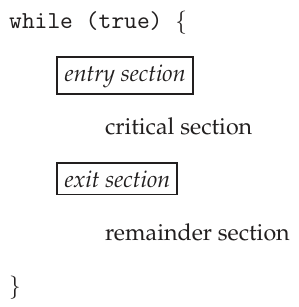
A solution must satisfy three requirements:一个解法必须满足以下三项要求：
- Mutual exclusion（互斥）. If \(P_i\) executes in its critical section, no other process executes in its critical section.互斥。如果 \(P_i\) 在其临界区中执行，那么其他进程都不能在它们的临界区中执行。
- Progress（空闲让进）. If no process is in its critical section and some want to enter, only the processes that are not in their remainder sections take part in deciding which enters next. This decision cannot be postponed indefinitely.前进（空闲让进）。如果没有进程在临界区中，而有些进程想进入，那么只有不在剩余区中的进程才参与决定下一个进入者。这个决定不能无限期推迟。
- Bounded waiting（有限等待）. After a process has requested entry and before the request is granted, other processes may enter their critical sections only a bounded number of times.有限等待。一个进程提出进入请求后，到请求被批准之前，其他进程进入临界区的次数只能有有限次。
Every process is assumed to run at nonzero speed. Nothing is assumed about the relative speeds.假设每个进程都以非零速度运行。对各进程的相对速度不做任何假设。
How to check code against the requirements:如何对照要求检查代码：
- Mutual exclusion: look for a schedule in which both processes pass the entry section.互斥：寻找一种调度，使两个进程都通过进入区。
- Progress: let one process stay forever in its remainder section. Can the other still enter?前进：让一个进程永远停留在剩余区中。另一个进程还能进入吗？
- Bounded waiting: can one process lose again and again to the others?有限等待：一个进程会不会一次又一次地输给其他进程？
For example, strict alternation while (turn != i) ; critical section; turn = j; keeps mutual exclusion. It violates progress: if \(P_0\) stays in its remainder section, \(P_1\) cannot enter twice in a row (Practice Q2).例如，严格轮换 while (turn != i) ; critical section; turn = j; 保持互斥。但它违反前进：如果 \(P_0\) 停留在剩余区中，\(P_1\) 就不能连续进入两次（练习 Q2）。
Step 3: where races occur in the kernel第 3 步：竞争在内核中出现的位置
The kernel shares data everywhere: lists of open files, memory-allocation structures, process lists. Pid assignment is a classic case. Two fork() calls read the same next_available_pid (2615) at the same time, so both children get pid 2615.内核到处共享数据：打开文件列表、内存分配结构和进程列表。pid 分配是典型例子。两个 fork() 调用同时读取同一个 next_available_pid（2615），于是两个子进程都拿到 pid 2615。
On a single core the easy cure is to disable interrupts while a shared variable changes. On a multiprocessor this is impractical, because the message must reach every processor and each entry is delayed. It is also unacceptable for user programs, which could keep the CPU by never re-enabling interrupts. Kernels therefore use one of two designs.在单核上，简单的办法是在改动共享变量时关闭中断。在多处理器上这行不通，因为关中断的消息必须送到每个处理器，每次进入都要等待延迟。用户程序也不能这样做，因为它可以永远不再开中断，一直占着 CPU。所以内核使用两种设计之一。
| Nonpreemptive kernel（不可抢占内核） | Preemptive kernel（可抢占内核） | |
|---|---|---|
| Kernel-mode process内核态进程 | Runs until it leaves kernel mode, blocks or yields voluntarily运行直至自愿离开内核态、阻塞或让出 CPU | Can be preempted while running in kernel mode在内核态运行时可被抢占 |
| Race conditions on kernel data内核数据上的竞争条件 | Essentially none: only one process is active in the kernel at a time基本不存在：任一时刻内核中只有一个进程处于活动状态 | Must be prevented by careful design; hard on SMP（对称多处理）, where two kernel-mode processes run on different cores必须通过精心设计来防止；在 SMP 上较难做到，因为两个内核态进程可能同时运行于不同的核心上 |
| Responsiveness响应性 | A kernel process may run for a long time内核进程可能长时间运行 | More responsive, better suited to real-time programming响应性更好，更适合实时编程 |
Practice练习
Q1. (Race condition) An auction server handles each bid with void bid(double amount) { if (amount > highestBid) highestBid = amount; }. With highestBid = 50, thread A calls bid(100) and thread B calls bid(200) concurrently. Show an interleaving that ends with highestBid = 100 and explain how to prevent it.Q1.（竞争条件）拍卖服务器用 void bid(double amount) { if (amount > highestBid) highestBid = amount; } 处理每个出价。在 highestBid = 50 的情形下，线程 A 调用 bid(100)，线程 B 同时调用 bid(200)。给出一种以 highestBid = 100 结束的交错执行方式，并说明如何防止它。
Answer
The comparison and the assignment are separate steps. A compares \(100>50\) (true); B compares \(200>50\) (true); B assigns 200; A assigns 100. The final value is 100 and the higher bid is lost; 2 of the 6 interleavings of the four steps end this way. To prevent it, make the whole compare-and-assign a critical section: acquire a mutex lock before the comparison and release it after the assignment. The second bid is then compared with the value the first one wrote, and the result is always 200.比较与赋值是两个独立的步骤。A 比较 \(100>50\)（为真）；B 比较 \(200>50\)（为真）；B 赋值 200；A 赋值 100。最终值为 100，较高的出价被丢失；四个步骤的 6 种交错中有 2 种以这种方式结束。要防止这种情况，应把整个比较并赋值过程设为临界区：在比较之前获取互斥锁，在赋值之后释放它。这样，第二个出价便会与第一个出价写入的值进行比较，结果总是 200。
易错：只把赋值做成原子操作不够，“比较＋赋值”必须作为一个整体。
Q2. (Requirements) Two processes share int turn = 0. Process \(P_i\) executes while (turn != i) ; /* critical section */ turn = j; /* remainder section */. Which requirement does this protocol violate? Give a scenario.Q2.（要求）两个进程共享 int turn = 0。进程 \(P_i\) 执行 while (turn != i) ; /* critical section */ turn = j; /* remainder section */。该协议违反了哪一项要求？请给出一个情景。
Answer
Mutual exclusion holds: \(P_i\) enters only when turn == i, and turn changes only when a process leaves. Progress is violated because the processes are forced to alternate. Let \(P_0\) run its critical section, set turn = 1 and then stay in a long remainder section. \(P_1\) enters, leaves and sets turn = 0. When \(P_1\) wants to enter again, no process is in its critical section, but turn == 0 and only \(P_0\), which is in its remainder section, can change it. \(P_1\) waits, possibly forever. Peterson's flag[] fixes this: a process that is not interested clears its flag and no longer blocks the other.互斥成立：\(P_i\) 只有在 turn == i 时才进入，turn 仅在有进程离开时才改变。前进被破坏，因为进程被迫轮流进入。设 \(P_0\) 执行其临界区，设置 turn = 1，然后停留在一个很长的剩余区中。\(P_1\) 进入、离开并设置 turn = 0。当 \(P_1\) 想再次进入时，没有进程处于临界区中，但能够改变 turn == 0 的只有 \(P_0\)，而它正处于其剩余区中。\(P_1\) 会一直等待，可能永远如此。Peterson 的 flag[] 修复了这一点：不感兴趣的进程清除其标志，不再阻塞另一个进程。
Q3. (Race condition) A kernel limits the number of processes with a shared counter number_of_processes, initially 0:Q3.（竞争条件）内核用初值为 0 的共享计数器 number_of_processes 来限制进程数量：
int allocate_process() {
if (number_of_processes == MAX_PROCESSES) /* 255 */
return -1;
/* allocate necessary process resources */
++number_of_processes;
return new_pid;
}
void release_process() {
/* release process resources */
--number_of_processes;
}
(a) Identify the race conditions. (b) Where must a mutex lock be placed? (c) Is an atomic integer for number_of_processes enough?（a）找出竞争条件。（b）互斥锁必须放在何处？（c）对于 number_of_processes，使用原子整数是否足够？
Answer
(a) The counter is shared. ++ and -- are read-modify-write sequences that can lose updates, as with count. The test and the increment are also separate steps: with 254 processes, two callers can both pass the test and both increment, giving 256, more than MAX_PROCESSES. (b) In allocate_process() acquire the lock before the test and release it after the increment (and on the early return -1); in release_process() protect the decrement. (c) No. An atomic integer makes each ++ or -- indivisible, but the test and the increment remain two steps, so two callers can still both pass the test. The check and the update must form one critical section.（a）计数器是共享的。++ 和 -- 是“读–改–写”序列，会丢失更新，正如 count 那样。测试与递增也是两个独立的步骤：若已有 254 个进程，两个调用者都可能通过测试并分别递增，得到 256，超过了 MAX_PROCESSES。（b）在 allocate_process() 中，应在测试之前获取锁，并在递增之后释放锁（以及在提前 return -1 时）；在 release_process() 中，应保护递减操作。（c）不能。原子整数使每一次 ++ 或 -- 不可分割，但测试与递增仍是两个步骤，因此两个调用者仍可能都通过测试。检查与更新必须构成同一个临界区。
Peterson's solution and hardware support ★★★Peterson 算法与硬件支持 ★★★
Goal. Read Peterson's solution and explain why each requirement holds. Read the test_and_set and compare_and_swap locks and say what they lack.目标。读懂 Peterson 算法，解释每个要求为什么成立。读懂 test_and_set 和 compare_and_swap 锁，并说明它们缺少什么。
Step 1: Peterson's solution第 1 步：Peterson 算法
In words: Peterson = raise your hand, then politely give the turn to the other; wait only while the other also has a hand up and holds the turn.用文字表述：Peterson = 先举手，再礼貌地把轮次让给对方；只有当对方也举着手并拿着轮次时才等待。
It is a software-based solution（基于软件的解法）for two processes \(P_0\) and \(P_1\). The other process of \(P_i\) is \(P_j\), with \(j=1-i\). The shared data are int turn; (whose turn it is to enter) and boolean flag[2]; (flag[i] == true means \(P_i\) is ready to enter).这是一种基于软件的解法，适用于两个进程 \(P_0\) 和 \(P_1\)。\(P_i\) 的另一个进程是 \(P_j\)，两者关系为 \(j=1-i\)。共享数据是 int turn;（表示轮到谁进入）和 boolean flag[2];（flag[i] == true 为真表示 \(P_i\) 已准备好进入）。
while (true) {
flag[i] = true;
turn = j;
while (flag[j] && turn == j)
; /* busy wait */
/* critical section */
flag[i] = false;
/* remainder section */
}
If both arrive together, both write turn. The later write overwrites the earlier one, so the process that wrote last yields.如果两者同时到达，两者都会写 turn。后写的值覆盖先写的值，所以最后写的那个进程让出。
- Mutual exclusion. If both were inside, both flags would be true. The process that wrote
turnlast, say \(P_j\), findsflag[i] == trueandturn == i. So it waits until \(P_i\) clearsflag[i]on leaving.互斥。如果两者都在临界区内，两个标志都会为真。最后写turn的进程（比如 \(P_j\)）会发现flag[i] == true和turn == i都成立。于是它等待，直到 \(P_i\) 在离开时清除flag[i]。 - Progress. \(P_i\) can only be stuck in the single loop
flag[j] && turn == j. If \(P_j\) is not interested,flag[j]is false and \(P_i\) enters. If both are interested,turnnames one of them, and that one enters.前进。\(P_i\) 只可能卡在单一循环flag[j] && turn == j中。如果 \(P_j\) 不想进入，flag[j]为假，\(P_i\) 就能进入。如果两者都想进入，turn指定其中一个，被指定的那个进入。 - Bounded waiting. If \(P_j\) leaves and returns at once, it sets
turn = i. \(P_i\) never changesturnwhile waiting, so \(P_i\) enters next. \(P_i\) waits for at most one entry of \(P_j\).有限等待。如果 \(P_j\) 离开后立刻返回，它会设置turn = i。\(P_i\) 在等待时从不改变turn，所以 \(P_i\) 会接着进入。\(P_i\) 最多只等待 \(P_j\) 的一次进入。
Step 2: why software solutions fail today第 2 步：为什么今天的软件解法不再可行
Processors and compilers may reorder reads and writes that have no data dependency. One thread cannot notice this, but another thread can. In Peterson's entry section flag[i] = true and turn = j are independent.处理器和编译器可能对没有数据依赖的读写重新排序。单个线程察觉不到这一点，但另一个线程可能察觉到。在 Peterson 算法的进入区中，flag[i] = true 和 turn = j 彼此独立。
Suppose \(P_0\) executes turn = 1 first. \(P_1\) then runs flag[1] = true; turn = 0 and tests flag[0] && turn == 0. Now flag[0] is still false, so \(P_1\) enters. \(P_0\) sets flag[0] = true and tests flag[1] && turn == 1. Now turn is 0, so \(P_0\) enters as well. Mutual exclusion is lost.假设 \(P_0\) 先执行 turn = 1。然后 \(P_1\) 执行 flag[1] = true; turn = 0 并检查 flag[0] && turn == 0。此时 flag[0] 仍为假，所以 \(P_1\) 进入。\(P_0\) 设置 flag[0] = true 并检查 flag[1] && turn == 1。此时 turn 为 0，所以 \(P_0\) 也进入。互斥被破坏了。

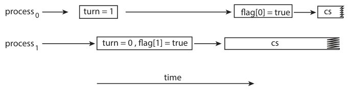
A memory barrier（内存屏障, memory fence）is an instruction that forces all loads and stores before it to complete, and become visible to other processors, before any later load or store. A barrier between flag[i] = true and turn = j removes the failure. The memory model（内存模型）of a processor states which guarantees it gives. In a strongly ordered model a change is at once visible to all processors; in a weakly ordered model it may not be.内存屏障是一条指令，它强制在它之前的所有加载和存储先完成，并对其他处理器可见，然后才执行之后的任何加载或存储。在 flag[i] = true 和 turn = j 之间加一个屏障，就能消除上述错误。内存模型规定处理器提供哪些保证。在强序模型中，一次修改会立刻对所有处理器可见；在弱序模型中，则不一定。
Step 3: atomic instructions第 3 步：原子指令
In words: test_and_set = take the lock and tell me what it was before; compare_and_swap = change the lock only if it still has the value I expect.用文字表述：test_and_set = 取得锁，并告诉我它原来的值；compare_and_swap = 只有锁仍是我期望的值时才修改它。
test_and_set() returns the old value and sets the target to true. A process that gets false back has acquired the lock. The others get true and spin.test_and_set() 返回旧值，并把目标设为真。拿回 false 的进程就获得了锁。其他进程拿到 true 后就自旋。
boolean test_and_set(boolean *target) { /* executed atomically */
boolean rv = *target;
*target = true;
return rv;
}
/* P_i; shared: boolean lock = false */
while (true) {
while (test_and_set(&lock))
; /* spin */
/* critical section */
lock = false;
/* remainder section */
}
Compare-and-swap（比较并交换, CAS）sets *value to new_value only if *value == expected. It always returns the original value. Lock 0 means free, lock 1 means taken.比较并交换（CAS）只有在 *value == expected 时才把 *value 设为 new_value。它总是返回原值。锁为 0 表示空闲，锁为 1 表示已被占用。
int compare_and_swap(int *value, int expected, int new_value) { /* atomic */
int temp = *value;
if (*value == expected)
*value = new_value;
return temp;
}
/* P_i; shared: int lock = 0 */
while (true) {
while (compare_and_swap(&lock, 0, 1) != 0)
; /* spin */
/* critical section */
lock = 0;
/* remainder section */
}
The first caller finds lock == 0 and sets it to 1. Later callers fail until the holder resets lock. Both locks give mutual exclusion but not bounded waiting: a process can lose the race again and again.第一个调用者发现 lock == 0 可用，并把它设为 1。之后的调用者都会失败，直到持有者重置 lock。这两种锁都能保证互斥，但不能保证有限等待：一个进程可能一次又一次地输掉竞争。
Step 4: bounded waiting with CAS第 4 步：用 CAS 实现有限等待
The shared data are boolean waiting[n] (all false) and int lock (0). The variable key is local to each process.共享数据是 boolean waiting[n]（全部为假）和 int lock（为 0）。变量 key 对每个进程都是局部的。
while (true) {
waiting[i] = true;
key = 1;
while (waiting[i] && key == 1)
key = compare_and_swap(&lock, 0, 1);
waiting[i] = false;
/* critical section */
j = (i + 1) % n;
while ((j != i) && !waiting[j])
j = (j + 1) % n;
if (j == i)
lock = 0;
else
waiting[j] = false;
/* remainder section */
}
A process spins until it wins the CAS (key == 0) or a leaving process sets waiting[i] = false. On leaving, \(P_i\) scans waiting[] cyclically from \(i+1\) and passes the critical section to the first waiting process. Only if nobody waits does it set lock = 0.一个进程自旋，直到它通过 CAS（key == 0）获胜，或者有一个离开的进程设置 waiting[i] = false。离开时，\(P_i\) 从 \(i+1\) 开始循环扫描 waiting[]，把临界区交给第一个等待的进程。只有在没有任何进程等待时，它才设置 lock = 0。
- Mutual exclusion.
keybecomes 0 only through CAS, and only the first CAS findslock == 0.waiting[i]becomes false only when another process leaves, and then exactly one entry is cleared.互斥。key只能通过 CAS 变为 0，而且只有第一次 CAS 会发现lock == 0。waiting[i]只有在另一个进程离开时才会变为假，而且那时恰好只清除一个入口。 - Progress. A leaving process either sets
lock = 0or clears onewaiting[j]. Both let a waiting process go on.前进。离开的进程要么设置lock = 0，要么清除一个waiting[j]。两者都能让一个等待的进程继续运行。 - Bounded waiting. The cyclic scan serves every waiting process, so any process enters within \(n-1\) turns.有限等待。循环扫描会照顾到每一个等待的进程，所以任何进程都会在 \(n-1\) 轮之内进入。
An atomic variable（原子变量）offers atomic operations on integers and booleans, usually built on CAS. It protects only a single update, such as a counter. A test followed by an action is two steps: with while (count == 0) two consumers can both see count = 1 and both consume. The check and the action must be one critical section.原子变量为整数和布尔值提供原子操作，通常基于 CAS 实现。它只保护单次更新，比如一个计数器。先检查再动作是两步：如果只用 while (count == 0)，两个消费者都可能看到 count = 1，然后都去消费。检查和动作必须放在同一个临界区里。
Practice练习
Q1. (Trace) Both processes enter Peterson's entry section in this order: P0 flag[0] = true; P1 flag[1] = true; P1 turn = 0; P0 turn = 1. Who enters first and who second? What happens if P1 returns to its entry section while P0 is still waiting?Q1.（手工演算）两个进程按如下顺序进入 Peterson 算法的进入区：P0 flag[0] = true；P1 flag[1] = true；P1 turn = 0；P0 turn = 1。谁先进入，谁后进入？若 P0 仍在等待时 P1 返回其进入区，会发生什么？
Answer
Both flags are true and turn = 1, because P0 wrote last. P0 tests flag[1] && turn == 1: true, so P0 waits. P1 tests flag[0] && turn == 0: false, so P1 enters first. When P1 leaves it sets flag[1] = false, and P0 enters. If P1 returns while P0 is still waiting, it sets flag[1] = true and turn = 0. Now P0's test turn == 1 is false and P0 enters, while P1 waits. P0 is overtaken at most once: bounded waiting with bound 1.两个标志都为真，且 turn = 1，因为 P0 最后写入。P0 检测 flag[1] && turn == 1：为真，因此 P0 等待。P1 检测 flag[0] && turn == 0：为假，因此 P1 先进入。P1 离开时设置 flag[1] = false，于是 P0 进入。若 P1 在 P0 仍在等待时返回，则它设置 flag[1] = true 和 turn = 0。此时 P0 的检测 turn == 1 为假，P0 进入，而 P1 等待。P0 至多被超越一次：有限等待，界为 1。
Q2. (Trace) In the bounded-waiting CAS algorithm with \(n=5\), P2 is in its critical section and waiting[] = [T, F, F, T, T]. In which order do P3, P4 and P0 enter? How many entries by other processes does P0 wait for?Q2.（手工演算）在带有 \(n=5\) 的有限等待 CAS 算法中，P2 处于其临界区中，且 waiting[] = [T, F, F, T, T]。P3、P4 和 P0 按什么顺序进入？P0 需要等待其他进程进入多少次？
Answer
When P2 leaves, its scan starts at \(j=3\) and finds waiting[3] true, so it sets waiting[3] = false: P3 enters and lock stays 1. When P3 leaves, the scan starts at 4: P4 enters. When P4 leaves, the scan wraps to 0: P0 enters. When P0 leaves, no waiting[j] is true, \(j\) returns to 0 and lock = 0. P0 is overtaken by P3 and P4, that is 2 entries, within the bound \(n-1=4\).P2 离开时，其扫描从 \(j=3\) 开始，发现 waiting[3] 为真，因此设置 waiting[3] = false：P3 进入，lock 保持为 1。P3 离开时，扫描从 4 开始：P4 进入。P4 离开时，扫描绕回 0：P0 进入。P0 离开时，没有 waiting[j] 为真，\(j\) 回到 0，并且 lock = 0。P0 被 P3 和 P4 超越，即 2 次进入，在界 \(n-1=4\) 之内。
Q3. (Beyond the pages) A "compare and compare-and-swap" spinlock first tests the lock with an ordinary read: while (true) { if (*lock == 0) { if (!compare_and_swap(lock, 0, 1)) break; } }. Is it correct? Why might it be faster than the plain CAS spinlock?Q3.（教材之外）一种“compare and compare-and-swap”自旋锁先用普通读操作测试锁：while (true) { if (*lock == 0) { if (!compare_and_swap(lock, 0, 1)) break; } }。它是否正确？为什么它可能比普通的 CAS 自旋锁更快？
Answer
It is correct. The test *lock == 0 is only a hint: two processes may both see 0, but CAS is atomic and only one of them changes the lock from 0 to 1; the other CAS returns 1, fails, and the loop continues. Mutual exclusion therefore holds. The idiom reduces traffic: waiting processes spin on an ordinary read, which is served from their local cache, and issue the expensive atomic CAS (which locks the bus or invalidates cache lines) only when the lock looks free. It still has no bounded waiting.它是正确的。测试 *lock == 0 只是一个提示：两个进程都可能看到 0，但 CAS 是原子的，只有一个进程能把锁从 0 改为 1；另一个 CAS 返回 1 并失败，循环继续。因此互斥成立。这一写法减少了总线流量：等待中的进程在普通读取上自旋，该读取由其本地缓存提供；只有当锁看起来空闲时，才发出代价高昂的原子 CAS（它会锁定总线或使缓存行失效）。但它仍然不具备有限等待。
思路：先读后 CAS 只是减少总线争用的优化，真正保证互斥的仍然是原子的 CAS。
Mutex locks and semaphores ★★★互斥锁与信号量 ★★★
Goal. Protect a critical section with a mutex or a semaphore. Force an order between statements of two processes. Trace the value of every semaphore step by step.目标。用互斥锁或信号量保护临界区。强制两个进程的语句之间有一个执行顺序。逐步手工演算每个信号量的值。
Step 1: the mutex lock第 1 步：互斥锁
In words: a mutex = a key to the room; take it before the critical section and give it back afterwards.用文字表述：互斥锁 = 房间的钥匙；进入临界区前拿走它，之后再还回去。
A mutex lock（互斥锁; mutex = mutual exclusion）has acquire() and release(). The boolean available says whether the lock is free. Both calls must be atomic, for example with CAS.互斥锁有 acquire() 和 release() 两个操作。布尔变量 available 表示锁是否空闲。这两个调用都必须是原子的，例如用 CAS 实现。
acquire() {
while (!available)
; /* busy wait */
available = false;
}
release() {
available = true;
}
This lock uses busy waiting（忙等待）: a waiting process loops in acquire() and wastes CPU cycles. Such a lock is a spinlock（自旋锁）. On a single core it is pointless: the holder cannot run and release the lock while the waiter spins on the only CPU. On a multicore machine it is good if the lock is held briefly. Its advantage is that no context switch is needed.这种锁使用忙等待：等待的进程在 acquire() 中循环，白白浪费 CPU 周期。这样的锁叫自旋锁。在单核上它没有意义：等待者在唯一的 CPU 上自旋时，持有者无法运行，也就无法释放锁。在多核机器上，如果锁只被短暂持有，它就很好用。它的优点是不需要上下文切换。
A sleeping lock costs two context switches, one to sleep and one to wake up. So spin if the lock is held for less than two context switches.睡眠锁要付出两次上下文切换的代价，一次是睡下去，一次是醒过来。所以，如果锁的持有时间短于两次上下文切换，就应该自旋。
For example, with \(T_{\text{cs}}=4\) µs the threshold is \(2\times4=8\) µs. A hold of 6 µs favours a spinlock, and a hold of 20 µs a sleeping lock. A lock is contended if a thread blocks while trying to acquire it. High contention lowers performance.例如，当 \(T_{\text{cs}}=4\) µs 时，阈值为 \(2\times4=8\) µs。持有 6 µs 的锁适合自旋锁，持有 20 µs 的锁适合睡眠锁。如果一个线程在尝试获取锁时被阻塞，这个锁就是争用锁。争用严重会降低性能。
Step 2: the semaphore第 2 步：信号量
In words: a semaphore = a counter of free places; wait takes a place or waits, signal gives one back.用文字表述：信号量 = 空位的计数器；wait 占用一个空位或等待，signal 归还一个空位。
A semaphore（信号量）\(S\) is an integer that, apart from initialization, is accessed only through two atomic operations, wait() and signal() (Dijkstra's P and V).信号量 \(S\) 是一个整数，除初始化外，只能通过两个原子操作 wait() 和 signal() 访问（即 Dijkstra 提出的 P 和 V）。
wait(S) {
while (S <= 0)
; /* busy wait */
S--;
}
signal(S) {
S++;
}
A counting semaphore（计数信号量）ranges over any integer. A binary semaphore（二值信号量）ranges over 0 and 1 and behaves like a mutex. The semaphore operations have nothing to do with the wait() system call of Chapter 1 or with UNIX signals. There are three standard uses.计数信号量可以取任意整数。二值信号量只取 0 和 1，行为与互斥锁相似。信号量操作与第 1 章中的 wait() 系统调用没有关系，也与 UNIX 信号无关。信号量有三种标准用法。
| Use使用情况 | Initial value初值 | Pattern模式 |
|---|---|---|
| Mutual exclusion互斥 | 1 | wait(mutex); critical section; signal(mutex); |
| Resource with \(N\) instances含 \(N\) 个实例的资源 | \(N\) | wait() takes an instance, signal() returns it; at 0 all are in use and further callers blockwait() 获取一个实例，signal() 归还它；值为 0 时所有实例都在使用中，后续调用者阻塞 |
| Ordering (\(S_2\) only after \(S_1\))排序（\(S_2\) 只能在 \(S_1\) 之后） | 0 | \(P_1\): S1; signal(synch); \(P_2\): wait(synch); S2; |
A test such as if (getValue(&sem) > 0) wait(&sem); does not prevent blocking. Another process can decrement the semaphore between the test and the wait().像 if (getValue(&sem) > 0) wait(&sem); 这样的检查并不能防止阻塞。在检查和 wait() 之间，另一个进程可能会减少信号量的值。
Step 3: the blocking implementation第 3 步：阻塞式实现
In words: a blocked process sleeps in the semaphore's queue; a negative value counts the sleepers.用文字表述：被阻塞的进程在信号量的队列中睡眠；负值表示睡眠的进程数。
If wait() finds the value non-positive, the process is put into the waiting queue of the semaphore and its state becomes waiting. A signal() removes one process from the queue and makes it ready. Process states are in Section 1.1.如果 wait() 发现值不大于 0，进程就被放入该信号量的等待队列，状态变为等待。signal() 从队列中移出一个进程，并使其就绪。进程状态见第 1.1 节。
typedef struct { int value; struct process *list; } semaphore;
wait(semaphore *S) {
S->value--;
if (S->value < 0) {
add this process to S->list;
sleep(); /* running -> waiting */
}
}
signal(semaphore *S) {
S->value++;
if (S->value <= 0) {
remove a process P from S->list;
wakeup(P); /* waiting -> ready */
}
}
wait() decrements first and tests afterwards. A blocked process has therefore already been counted.wait() 先减一，再进行检查。因此，被阻塞的进程已经被计入了。
How to trace by hand:手工演算方法：
- Write the initial value \(S_0\).写下初始值 \(S_0\)。
- For each
wait(), subtract 1. If the new value is below 0, the caller blocks and joins the queue.对每一个wait()，减 1。如果新值小于 0，调用者阻塞并加入队列。 - For each
signal(), add 1. If the new value is 0 or below, wake the first process in the queue.对每一个signal()，加 1。如果新值小于或等于 0，就唤醒队列中的第一个进程。 - Check at the end with the formula.最后用公式检查。
The operations wait() and signal() must themselves be atomic. On a single core, interrupts are disabled while they run. On a multicore system this is slow, so CAS or spinlocks are used. Busy waiting is not removed but moved into these short critical sections, which are rarely occupied.操作 wait() 和 signal() 本身必须是原子的。在单核上，运行它们时关闭中断。在多核系统上这样做太慢，所以改用 CAS 或自旋锁。忙等待并没有消除，只是转移到了这些很短的临界区中，而这些临界区很少被占用。
Wrong use breaks the protocol. With mutex = 1:如果写成 mutex = 1：用错了就会破坏协议。
signal(mutex)before andwait(mutex)after the critical section: several processes can be inside together, so mutual exclusion is violated.signal(mutex)位于临界区之前、wait(mutex)位于临界区之后：多个进程可能同时在临界区内，因此互斥被违反。wait(mutex)instead ofsignal(mutex): the process blocks forever on its secondwait().用wait(mutex)代替signal(mutex)：进程会在其第二次wait()时永远阻塞。- A missing
wait()orsignal(): mutual exclusion is violated or the process blocks forever.缺少wait()或signal()会导致：要么破坏互斥，要么进程永远阻塞。
Practice练习
Q1. (Trace) A semaphore starts at \(S=2\) (blocking implementation, FIFO queue). The operations are, in order: P1 wait, P2 wait, P3 wait, P4 wait, P1 signal, P5 wait, P2 signal, P3 signal. Give the value and the queue after each operation and check the final value with the formula.Q1.（手工演算）信号量的初值为 \(S=2\)（阻塞实现，FIFO 队列）。依次执行的操作为：P1 wait，P2 wait，P3 wait，P4 wait，P1 signal，P5 wait，P2 signal，P3 signal。给出每次操作后的值与队列，并用公式检验最终值。
Answer
| Operation操作 | Effect效果 | Value值 | Queue队列 |
|---|---|---|---|
P1 wait |
proceeds继续执行 | 1 | empty空 |
P2 wait |
proceeds继续执行 | 0 | empty空 |
P3 wait |
blocks阻塞 | −1 | P3 |
P4 wait |
blocks阻塞 | −2 | P3, P4 |
P1 signal |
wakes P3唤醒 P3 | −1 | P4 |
P5 wait |
blocks阻塞 | −2 | P4, P5 |
P2 signal |
wakes P4唤醒 P4 | −1 | P5 |
P3 signal |
wakes P5唤醒 P5 | 0 | empty空 |
Check: \(S=2-5+3=0\). Whenever the value is negative, its magnitude equals the queue length.检验：\(S=2-5+3=0\)。每当值为负时，其绝对值都等于队列长度。
Q2. (Design) Processes P1, P2 and P3 execute statements A, B and C. C must run after both A and B; A and B may run in any order. Use semaphores.Q2.（设计）进程 P1、P2 和 P3 分别执行语句 A、B 和 C。C 必须在 A 和 B 都执行之后才能运行；A 与 B 可以按任意顺序执行。请使用信号量。
Answer
Use one semaphore done, initialised to 0.使用一个信号量 done，初值为 0。
/* P1 */ A; signal(done);
/* P2 */ B; signal(done);
/* P3 */ wait(done); wait(done); C;
P3 passes its two wait() calls only after two signal() calls, that is, after A and B have both completed.P3 只有在两次 signal() 调用之后，才能通过其两次 wait() 调用，也就是说，在 A 与 B 都完成之后。
Q3. (Decision) A context switch costs \(T=4\) µs. On a multicore machine, which lock is better for a critical section that lasts (a) 6 µs and (b) 20 µs? Why is a spinlock useless on one core?Q3.（决策）一次上下文切换耗时 \(T=4\) µs。在多核机器上，对于分别持续（a）6 µs 与（b）20 µs 的临界区，哪一种锁更好？为什么自旋锁在单核上没有用？
Answer
The threshold is \(2T=8\) µs. (a) 6 µs is below 8 µs: use a spinlock, because spinning is cheaper than sleeping and waking (two context switches). (b) 20 µs is above 8 µs: use a sleeping mutex, because a spinner would waste more CPU than two context switches cost. On a single core the lock holder cannot run while the waiter spins on the only CPU, so the waiter burns its whole time slice and the lock is not released before the next context switch.阈值为 \(2T=8\) µs。（a）6 µs 低于 8 µs：应使用自旋锁，因为自旋比睡眠与唤醒（两次上下文切换）的开销更小。（b）20 µs 高于 8 µs：应使用睡眠式互斥锁，因为自旋者浪费的 CPU 时间会超过两次上下文切换的开销。在单核上，当等待者在唯一的 CPU 上自旋时，持有者无法运行，因此等待者会耗尽整个时间片，而锁直到下一次上下文切换之前都不会被释放。
Monitors ★★★管程 ★★★
Goal. Describe the structure of a monitor, say what x.wait() and x.signal() do, and read a monitor that uses condition variables.目标。描述管程的结构，说明 x.wait() 和 x.signal() 的作用，并读懂使用条件变量的管程。
Step 1: the monitor type第 1 步：管程类型
In words: a monitor = a room with one door; only one process is inside at a time, and the compiler enforces it.用文字表述：管程 = 只有一扇门的房间；同一时间只有一个进程在里面，并且由编译器来保证这一点。
The programmer no longer pairs wait() and signal() by hand. Java and C# provide monitors. A function can access only the variables declared in the monitor and its own parameters. The others wait in the entry queue.程序员不再需要手动配对 wait() 和 signal()。Java 和 C# 都提供管程。一个函数只能访问管程中声明的变量以及它自己的参数。其他进程在入口队列中等待。
monitor monitor_name {
/* shared variable declarations */
function P1(...) { ... }
function P2(...) { ... }
function Pn(...) { ... }
initialization_code(...) { ... }
}

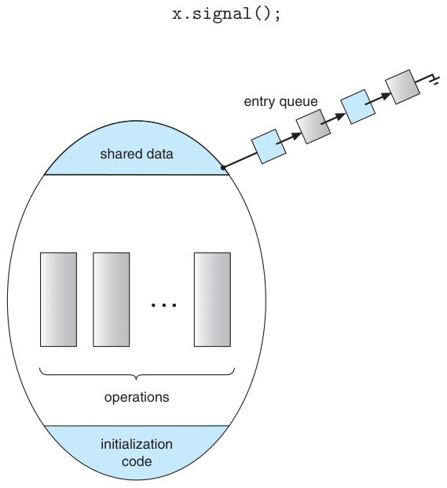
Step 2: condition variables第 2 步：条件变量
In words: a condition variable = a waiting room inside the monitor for processes whose condition is not yet true.用文字表述：条件变量 = 管程内部的一个等候室，供条件尚未满足的进程等待。
Mutual exclusion alone cannot model every scheme. The programmer declares variables of type condition, for example condition x, y;. Only two operations exist.仅靠互斥无法描述所有的同步方案。程序员声明 condition 类型的变量，例如 condition x, y;。这种变量只有两个操作。
x.wait(): the caller is suspended, outside the active region so that another process can enter, until another process callsx.signal().x.wait()：调用者被挂起，并离开活动区域，以便其他进程能够进入，直到另一个进程调用x.signal()为止。x.signal(): resumes exactly one suspended process. If none is suspended, it has no effect. A semaphoresignal(), in contrast, always changes the semaphore.x.signal()：恢复恰好一个被挂起的进程。如果没有被挂起的进程，它不起任何作用。与之相比，信号量上的signal()总会改变信号量的值。

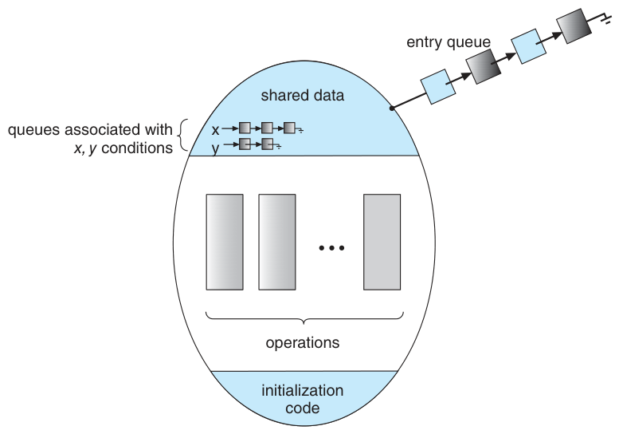
Suppose \(P\) calls x.signal() while \(Q\) is suspended on x. Both cannot continue inside the monitor, so there are two designs.假设 \(P\) 调用 x.signal() 时，\(Q\) 正被挂起在 x 上。两者不能同时在管程内继续执行，因此有两种设计。
| Style方式 | Behaviour行为 | Argument理由 |
|---|---|---|
| Signal and wait | \(P\) waits until \(Q\) leaves the monitor or waits for another condition\(P\) 等待，直到 \(Q\) 离开管程或等待另一个条件 | \(Q\) finds the condition still true\(Q\) 发现条件仍然成立 |
| Signal and continue | \(Q\) waits until \(P\) leaves the monitor or waits for another condition\(Q\) 等待，直到 \(P\) 离开管程或等待另一个条件 | \(P\) is already running in the monitor, so continuing is natural; but the condition may be false again when \(Q\) resumes\(P\) 已在管程内运行，因此继续执行很自然；但当 \(Q\) 恢复时，条件可能已再次不成立 |
A compromise: \(P\) leaves the monitor immediately after the signal, so \(Q\) resumes at once. Java and POSIX follow signal and continue. There \(Q\) must re-test its condition: while (!cond) x.wait();. This form is correct under both styles.一种折中方案：\(P\) 在发出信号后立即离开管程，让 \(Q\) 马上恢复运行。Java 和 POSIX 采用的是“发信号后继续”的方式。在这种方式下，\(Q\) 必须重新检查自己的条件：while (!cond) x.wait();。这种写法在两种方式下都是正确的。
Step 3: a monitor to read第 3 步：读一个管程
If several processes wait on x, the simplest rule resumes the longest-waiting one. The conditional wait（条件等待）x.wait(c) stores an integer priority number c with the suspended process. Then x.signal() resumes the process with the smallest c. The ResourceAllocator monitor gives one resource to the waiting process with the shortest requested time.如果有多个进程在 x 上等待，最简单的规则是唤醒等待时间最长的那个。条件等待 x.wait(c) 会把一个整数优先级 c 与被挂起的进程一起保存。然后 x.signal() 唤醒 c 最小的那个进程。ResourceAllocator 管程把一个资源分给请求时间最短的等待进程。
monitor ResourceAllocator {
boolean busy;
condition x;
void acquire(int time) {
if (busy)
x.wait(time);
busy = true;
}
void release() {
busy = false;
x.signal();
}
initialization_code() { busy = false; }
}
A process must use it as R.acquire(t); ... access the resource ...; R.release();. The monitor cannot force this order. A process might skip acquire(), never release, or release without having acquired. These are the semaphore errors one level higher, and the compiler cannot check them.进程必须按 R.acquire(t); ... access the resource ...; R.release(); 的方式使用它。管程无法强制这种顺序。进程可能跳过 acquire()，从不释放，或者在没有获取的情况下就释放。这些正是信号量那里的错误，只是层次更高，而且编译器无法检查它们。
Monitors and semaphores have the same power. A monitor can be built from semaphores: a binary semaphore mutex (initially 1) guards entry, a semaphore next (initially 0) holds signallers, and each condition has a semaphore x_sem (initially 0). The reverse is Practice Q3.管程与信号量的能力相同。管程可以用信号量实现：二值信号量 mutex（初值为 1）负责守住入口，信号量 next（初值为 0）用来挂起发信号的进程，每个条件还有一个信号量 x_sem（初值为 0）。反过来的做法见练习 Q3。
Practice练习
Q1. (Compare) How does x.signal() in a monitor differ from signal(S) on a semaphore?Q1.（比较）管程中的 x.signal() 与信号量上的 signal(S) 有何区别？
Answer
signal(S) always increments the semaphore, so a wake-up is remembered: a later wait(S) passes at once. x.signal() resumes exactly one suspended process and has no effect when none is suspended; a condition variable has no memory, so a later x.wait() blocks. Inside a monitor, x.signal() must also decide who continues (signal and wait or signal and continue), while signal(S) simply makes the sleeper ready.signal(S) 总会使信号量加一，因此唤醒会被记住：之后的 wait(S) 会立即通过。x.signal() 恰好恢复一个被挂起的进程，在没有进程挂起时不起任何作用；条件变量没有记忆，因此之后的 x.wait() 会阻塞。在管程内，x.signal() 还必须决定由谁继续执行（signal and wait 或 signal and continue），而 signal(S) 只是使睡眠者就绪。
Q2. (Trace) Process A holds the resource guarded by ResourceAllocator. B, C and D then call acquire(8), acquire(3) and acquire(5) in this order and wait. In which order do they receive the resource after A calls release()? What would FCFS give?Q2.（手工演算）进程 A 持有由 ResourceAllocator 保护的资源。随后 B、C 和 D 依次调用 acquire(8)、acquire(3) 和 acquire(5) 并等待。在 A 调用 release() 之后，它们以什么顺序获得该资源？若采用 FCFS，结果会是什么？
Answer
B, C and D wait on x with priority numbers 8, 3 and 5. A's release() sets busy = false and calls x.signal(), which resumes the smallest number: C (3). C sets busy = true, uses the resource and releases it, which resumes D (5); D's release resumes B (8). The order is C, D, B: shortest requested time first. FCFS would give B, C, D.B、C 和 D 在 x 上等待，其优先级编号分别为 8、3 和 5。A 的 release() 设置 busy = false 并调用 x.signal()，后者恢复编号最小的进程：C（3）。C 设置 busy = true、使用资源并释放它，这会恢复 D（5）；D 释放时恢复 B（8）。顺序为 C、D、B：所请求时间最短者优先。若采用 FCFS，则顺序为 B、C、D。
Q3. (Design) Show that a monitor can implement a semaphore, so that monitors and semaphores can solve the same synchronization problems.Q3.（设计）证明管程可以实现信号量，从而管程与信号量能够解决相同的同步问题。
Answer
monitor Semaphore {
int value; /* set to the initial value */
condition positive;
void wait() {
while (value <= 0)
positive.wait();
value--;
}
void signal() {
value++;
positive.signal();
}
}
Mutual exclusion inside the monitor makes both operations atomic. wait() blocks while the value is not positive; signal() increments and resumes one waiter. The while loop makes the code correct under both signalling styles. The reverse construction, a monitor from semaphores, was given above, so the two tools have the same expressive power.管程内的互斥使两个操作都成为原子的。wait() 在值非正时阻塞；signal() 使值加一并恢复一个等待者。while 循环使代码在两种信号通知方式下都正确。反向的构造，即由信号量构造管程，已在上文给出，因此这两种工具具有相同的表达能力。
Liveness and choosing a tool ★★活性与工具选择 ★★
Goal. Explain deadlock, starvation and priority inversion, and choose a synchronization tool for a given job.目标。解释死锁、饥饿和优先级反转，并为给定的任务选择合适的同步工具。
Liveness（活性）is the set of properties that make processes progress. A failure shows as processes that wait for ever.活性是一组能让进程持续推进的性质。活性失败时，表现为进程永远等待。
Step 1: three liveness failures第 1 步：三种活性失败
- Deadlock（死锁）. A set of processes is deadlocked if every process in the set waits for an event that only another process in the set can cause. The events here are acquiring and releasing locks and semaphores. Chapter 5 treats it fully.死锁。如果一组进程中的每个进程，都在等待只有该组中其他进程才能引起的事件，那么这组进程就死锁了。这里的事件是获取和释放锁与信号量。第 5 章会全面讨论它。
- Starvation（饥饿）. A process waits indefinitely while others proceed. A deadlock-free solution can still starve a process.饥饿。一个进程在其他进程继续运行时无限期地等待。即使是无死锁的解法，仍然可能让某个进程饿死。
- Priority inversion（优先级反转）. A low-priority process holds a lock that a high-priority process needs. A medium-priority process then delays them both.优先级反转。一个低优先级进程持有高优先级进程需要的锁。随后，一个中优先级进程会同时拖慢它们两个。
Example of deadlock with two semaphores \(S=Q=1\):用两个信号量 \(S=Q=1\) 造成死锁的例子：
P0 P1
wait(S); wait(Q);
wait(Q); wait(S);
... ...
signal(S); signal(Q);
signal(Q); signal(S);
If P0 executes wait(S) and P1 executes wait(Q), P0 blocks on wait(Q) and P1 blocks on wait(S). Neither signal() can run.如果 P0 执行 wait(S)，P1 执行 wait(Q)，那么 P0 会阻塞在 wait(Q) 上，P1 会阻塞在 wait(S) 上。两个 signal() 都无法运行。
Let the priorities be L < M < H. H needs semaphore S, which L holds. M becomes runnable and preempts L. L cannot release S, so M, which has a lower priority than H, indirectly delays H. Inversion needs more than two priority levels.设优先级为 L < M < H。H 需要信号量 S，而 S 被 L 持有。M 变为可运行，并抢占了 L。L 无法释放 S，于是优先级低于 H 的 M 间接地拖住了 H。发生反转至少需要三个优先级层次。
The priority-inheritance protocol（优先级继承协议）avoids it. A process holding a resource that a higher-priority process needs inherits that priority until it releases the resource. Then L runs at H's priority, M cannot preempt it, and H runs right after L releases S.优先级继承协议可以避免这种情况。持有高优先级进程所需资源的进程，会继承那个高优先级，直到释放该资源为止。于是 L 以 H 的优先级运行，M 无法抢占它，而 L 释放 S 之后，H 马上运行。
Step 2: choosing a tool第 2 步：选择工具
CAS-based algorithms are optimistic: update, detect a collision by CAS and retry. Locking is pessimistic: acquire the lock before every update.基于 CAS 的算法是乐观的：先更新，用 CAS 检测冲突，冲突时重试。加锁是悲观的：每次更新前都先获取锁。
| Contention争用 | Faster更快 | Reason原因 |
|---|---|---|
| None无 | CAS, slightlyCAS，略快 | Both are fast两者都很快 |
| Moderate中等 | CAS, possibly muchCAS，可能快得多 | CAS mostly succeeds and a failure retries only a few times; a contended lock puts the thread on a wait queue and needs a context switchCAS 多数情况下能成功，失败时只需重试几次；发生争用的锁会使线程进入等待队列，并需要一次上下文切换 |
| High高 | Traditional lock传统锁 | CAS attempts keep failing and retryingCAS 尝试不断失败并重试 |
| Need | Tool工具 |
|---|---|
| Single update of a counter or sequence number计数器或序列号的单次更新 | Atomic integer, lighter than a lock原子整数，比锁更轻量 |
| Short critical section on a multiprocessor多处理器上的短临界区 | Spinlock自旋锁 |
| Mutual exclusion for a critical section为临界区提供互斥 | Mutex lock: simpler and cheaper than a binary semaphore互斥锁：比二值信号量更简单、开销更低 |
| Access to a finite number of resources访问有限数量的资源 | Counting semaphore计数信号量 |
| Many readers, few writers读者多、写者少 | Reader–writer lock: higher concurrency读写锁：并发度更高 |
| Waiting for arbitrary conditions with simple code用简单代码等待任意条件 | Monitor with condition variables: easy to use, but more overhead and less scalable under high contention带条件变量的管程：易于使用，但开销更大，在高争用下可扩展性较差 |
Practice练习
Q1. (Calculation) On one CPU, L (lowest priority) starts at \(t=0\), needs 4 ms of CPU and holds semaphore S for all of it. H (highest priority) arrives at \(t=1\), needs S immediately and then 2 ms of CPU. M (medium) arrives at \(t=2\) and needs 6 ms of CPU and no semaphore. How long is H blocked, and when does it finish, (a) without and (b) with priority inheritance?Q1.（计算）在一个 CPU 上，L（最低优先级）于 \(t=0\) 开始运行，需要 4 ms 的 CPU 时间，并在其全程持有信号量 S。H（最高优先级）于 \(t=1\) 到达，一到达就需要 S，然后需要 2 ms 的 CPU 时间。M（中等优先级）于 \(t=2\) 到达，需要 6 ms 的 CPU 时间，且不需要信号量。在（a）不使用与（b）使用优先级继承两种情况下，H 分别被阻塞多长时间、何时完成？
Answer
(a) L runs 0–1. H arrives, preempts L, requests S and blocks. L resumes 1–2; at 2 M arrives and preempts L. M runs 2–8, L runs 8–10 and releases S, and H runs 10–12. H is blocked from \(t=1\) to \(t=10\), that is 9 ms, and finishes at 12. (b) At \(t=1\) L inherits H's priority, so M cannot preempt it at 2. L runs 1–4 and releases S, then falls back to its own priority; H runs 4–6; M runs 6–12. H is blocked 3 ms (from 1 to 4) and finishes at 6.（a）L 在 0–1 运行。H 到达，抢占 L，请求 S 并阻塞。L 在 1–2 恢复运行；在 2 时 M 到达并抢占 L。M 在 2–8 运行，L 在 8–10 运行并释放 S，H 在 10–12 运行。H 从 \(t=1\) 到 \(t=10\) 被阻塞，即 9 ms，并在 12 完成。（b）在 \(t=1\) 时，L 继承 H 的优先级，因此 M 无法在 2 时抢占它。L 在 1–4 运行并释放 S，然后恢复其自身的优先级；H 在 4–6 运行；M 在 6–12 运行。H 被阻塞 3 ms（从 1 到 4），并在 6 完成。
Q2. (Choose and justify) Choose a tool: (a) a web server counts hits; (b) a server accepts at most 50 simultaneous connections; (c) a table is read thousands of times and updated rarely; (d) a 10-instruction critical section on a 16-core machine. True or false: under very high contention a CAS-based update is faster than a lock.Q2.（选择并说明理由）选择一种工具：（a）网页服务器统计点击次数；（b）服务器最多同时接受 50 个连接；（c）某张表被读取数千次而很少更新；（d）在 16 核机器上执行一段 10 条指令的临界区。判断：在极高争用下，基于 CAS 的更新比加锁更快。
Answer
(a) An atomic integer: a single update of a shared counter, lighter than a lock. (b) A counting semaphore initialised to 50: wait() before accepting a connection, signal() when it closes. (c) A reader–writer lock: many readers run concurrently. (d) A spinlock: the hold time is short and no context switch is needed. The statement is false: under very high contention many CAS attempts fail and retry, so traditional locking ends up faster; CAS wins in the uncontended and moderate cases.（a）原子整数：对共享计数器的单次更新，比锁更轻量。（b）初值为 50 的计数信号量：在接受连接之前执行 wait()，连接关闭时执行 signal()。（c）读写锁：多个读者可以并发运行。（d）自旋锁：持有时间很短，且不需要上下文切换。该说法是错误的：在极高争用下，许多 CAS 尝试会失败并反复重试，因此传统加锁反而更快；在无争用与中等争用的情况下，CAS 更占优。
Classic synchronization problems ★★★经典同步问题 ★★★
Goal. Read the semaphore solutions of the bounded-buffer, readers–writers and dining-philosophers problems, and say what each semaphore is for.目标。读懂有界缓冲区、读者–写者和哲学家就餐问题的信号量解法，并说明每个信号量的用途。
Step 1: bounded buffer第 1 步：有界缓冲区
In words: empty counts free slots, full counts filled slots, mutex lets only one process touch the buffer.用文字表述：empty 统计空槽数，full 统计已满槽数，mutex 保证同一时间只有一个进程访问缓冲区。
A pool of \(n\) buffers, each holding one item, is shared by a producer and a consumer. The producer makes full buffers for the consumer. The consumer makes empty buffers for the producer.一组由 \(n\) 个缓冲区组成的池，每个缓冲区存放一个数据项，由一个生产者和一个消费者共享。生产者为消费者生产满缓冲区。消费者为生产者腾出空缓冲区。
int n;
semaphore mutex = 1;
semaphore empty = n;
semaphore full = 0;
/* producer */ /* consumer */
while (true) { while (true) {
/* produce an item */ wait(full);
wait(empty); wait(mutex);
wait(mutex); /* remove an item from the buffer */
/* add the item to the buffer */ signal(mutex);
signal(mutex); signal(empty);
signal(full); /* consume the item */
} }
The order of the two wait() calls matters. If the producer took mutex first and then found the buffer full, it would sleep on empty while holding mutex. The consumer could never enter to free a slot: deadlock.两次 wait() 调用的顺序很重要。如果生产者先获取 mutex，之后发现缓冲区已满，它就会在持有 mutex 的同时睡在 empty 上。消费者永远无法进入去释放槽位：死锁。
Step 2: readers–writers第 2 步：读者–写者
In words: many readers may read together; a writer needs the database alone.用文字表述：多个读者可以一起读；写者需要独占数据库。
Readers only read. Writers read and write. Two readers together do no harm, but a writer together with any other process may.读者只读。写者既读又写。两个读者同时存在没有问题，但写者与任何其他进程同时存在就可能出问题。
- First readers–writers problem: no reader waits unless a writer has already obtained permission to use the object. Writers may starve.第一类读者–写者问题：除非写者已经获得使用对象的许可，否则读者不需要等待。写者可能会饿死。
- Second readers–writers problem: once a writer is ready, it writes as soon as possible, so no new reader starts while a writer waits. Readers may starve.第二类读者–写者问题：写者一旦就绪，就尽快写入，因此写者等待期间，不会有新的读者开始读。读者可能会饿死。
The solution of the first problem:第一类问题的解法：
semaphore rw_mutex = 1; /* exclusive access; used by writers and by the first and last reader */
semaphore mutex = 1; /* protects read_count */
int read_count = 0; /* number of readers currently reading */
/* writer */ /* reader */
while (true) { while (true) {
wait(rw_mutex); wait(mutex);
/* writing is performed */ read_count++;
signal(rw_mutex); if (read_count == 1)
} wait(rw_mutex);
signal(mutex);
/* reading is performed */
wait(mutex);
read_count--;
if (read_count == 0)
signal(rw_mutex);
signal(mutex);
}
The three shared items have these jobs. rw_mutex gives a writer exclusive access, and the first and the last reader use it for the whole group. mutex protects read_count, the number of readers reading now. The first reader locks writers out and the last reader lets them in. If a writer is inside and \(n\) readers wait, one reader waits on rw_mutex and \(n-1\) wait on mutex.三个共享变量各有分工。rw_mutex 为写者提供独占访问，第一个读者和最后一个读者代表整组读者使用它。mutex 保护 read_count，即当前正在读的读者数。第一个读者把写者挡在外面，最后一个读者再让写者进入。如果写者在里面，并且有 \(n\) 个读者在等待，那么一个读者等待在 rw_mutex 上，其余的 \(n-1\) 个读者等待在 mutex 上。
A reader–writer lock（读写锁）generalises this: many holders in read mode, one in write mode. It pays off when readers are clearly more numerous than writers.读写锁把这种做法推广开来：读模式下可以有多个持有者，写模式下只能有一个。读者明显多于写者时，它才划算。
Step 3: dining philosophers第 3 步：哲学家就餐
In words: five philosophers and five chopsticks; each needs two, and if all take the left one, nobody can eat.用文字表述：五位哲学家，五根筷子；每人需要两根，如果大家都拿左边那根，就没有人能吃饭。
A hungry philosopher picks up the two chopsticks next to her, one at a time, and cannot take one that a neighbour holds. The problem models how to share several resources among several processes without deadlock and starvation.饥饿的哲学家一次拿起身边的两根筷子，一次拿一根，并且不能拿邻居手里的那根。这个问题描述的是：如何让多个进程共享多个资源，同时避免死锁和饥饿。

Semaphore solution. There is one semaphore per chopstick, chopstick[5], all initialised to 1.信号量解法。每根筷子对应一个信号量 chopstick[5]，全部初始化为 1。
while (true) {
wait(chopstick[i]);
wait(chopstick[(i + 1) % 5]);
/* eat for a while */
signal(chopstick[i]);
signal(chopstick[(i + 1) % 5]);
/* think for a while */
}
No two neighbours eat together. But it can deadlock: if all five take their left chopstick, all five semaphores are 0, and each waits for the right one for ever. This is a circular wait. Three remedies:相邻的两位哲学家不会同时进餐。但它仍可能死锁：如果五个人都拿起左边的筷子，那么五个信号量都为 0，每个人都会永远等待右边的那根。这就是循环等待。有三种补救办法：
- Allow at most four philosophers at the table. With four philosophers and five chopsticks, at least one can obtain two.桌旁最多只允许四位哲学家。四位哲学家和五根筷子，至少有一位能拿到两根。
- Pick up chopsticks only if both are available, inside a critical section.只有当两根筷子都可用时才拿起，并且把这个动作放在临界区内。
- Use an asymmetric order: odd-numbered philosophers take the left chopstick first, even-numbered ones the right first.使用不对称的顺序：奇数号哲学家先拿左边的筷子，偶数号哲学家先拿右边的筷子。
Monitor solution. Each philosopher is THINKING, HUNGRY or EATING. Philosopher \(i\) may eat only if neither neighbour eats. The condition self[i] lets her wait when hungry.管程解法。每位哲学家处于 THINKING、HUNGRY 或 EATING 状态之一。哲学家 \(i\) 只有在两个邻居都不进餐时才可以进餐。条件 self[i] 让她在饿着又不能吃时等待。
monitor DiningPhilosophers {
enum {THINKING, HUNGRY, EATING} state[5];
condition self[5];
void pickup(int i) {
state[i] = HUNGRY;
test(i);
if (state[i] != EATING)
self[i].wait();
}
void putdown(int i) {
state[i] = THINKING;
test((i + 4) % 5); /* left neighbour */
test((i + 1) % 5); /* right neighbour */
}
void test(int i) {
if (state[(i + 4) % 5] != EATING && state[i] == HUNGRY && state[(i + 1) % 5] != EATING) {
state[i] = EATING;
self[i].signal();
}
}
initialization_code() {
for (int i = 0; i < 5; i++) state[i] = THINKING;
}
}
Philosopher \(i\) calls pickup(i), eats, then calls putdown(i). In pickup(), test(i) signals self[i] before anyone waits on it. That signal is lost, which is harmless, because state[i] == EATING skips the wait(). In putdown() both neighbours are tested, so a hungry one whose other neighbour is not eating starts to eat. The solution is deadlock-free, but a philosopher can starve if her neighbours alternate.哲学家 \(i\) 先调用 pickup(i)，然后进餐，再调用 putdown(i)。在 pickup() 中，test(i) 在任何人等待 self[i] 之前就向它发信号。这个信号会丢失，但没有影响，因为 state[i] == EATING 会跳过 wait()。在 putdown() 中会检查两个邻居，所以饥饿的哲学家只要另一个邻居不在进餐，就开始进餐。这个解法不会死锁，但如果她的两个邻居交替进餐，哲学家可能会饿死。
Practice练习
Q1. (Trace) Bounded buffer with \(n=3\) (mutex = 1, empty = 3, full = 0, blocking semaphores). The producer runs four complete iterations, then the consumer runs one iteration. Give the semaphore values at each stage. Why would swapping wait(empty) and wait(mutex) in the producer deadlock?Q1.（手工演算）有界缓冲区，含 \(n=3\)（mutex = 1、empty = 3、full = 0，阻塞式信号量）。生产者完整运行四次迭代，然后消费者运行一次迭代。给出每个阶段的信号量取值。若在生产者中交换 wait(empty) 与 wait(mutex)，为什么会死锁？
Answer
After three producer iterations: empty = 0, full = 3, mutex = 1. In the fourth, wait(empty) makes empty = -1 and the producer blocks. The consumer executes wait(full) (full = 2), wait(mutex), removes an item, signal(mutex) and signal(empty), which sets empty = 0 and wakes the producer. The producer then inserts its item: full = 3, empty = 0, mutex = 1. All three slots are used. If the producer called wait(mutex) first, then with a full buffer it would hold mutex while blocked on empty; the consumer needs mutex to remove an item and free a slot, so both wait forever.经过三次生产者迭代后：empty = 0、full = 3、mutex = 1。第四次中，wait(empty) 使 empty = -1 成立，生产者阻塞。消费者执行 wait(full)（full = 2）、wait(mutex)，取出一个数据项，然后执行 signal(mutex) 与 signal(empty)，后者使 empty = 0 成立，并唤醒生产者。生产者随后插入其数据项：full = 3、empty = 0、mutex = 1。三个槽位都已被使用。若生产者先调用 wait(mutex)，那么在缓冲区已满时，它会在持有 mutex 的同时阻塞于 empty 上；而消费者需要 mutex 才能取出一个数据项并释放一个槽位，因此两者都会永远等待。
Q2. (Trace) First readers–writers solution: a writer is in its critical section and five readers R1–R5 arrive. On which semaphore does each wait? What happens when the writer finishes? Why can writers starve?Q2.（手工演算）第一类读者–写者问题的解法：一个写者在其临界区中，五个读者 R1–R5 到达。每个读者在哪个信号量上等待？写者结束时会发生什么？为什么写者可能饥饿？
Answer
R1 takes mutex, sets read_count = 1 and calls wait(rw_mutex), which blocks it while it still holds mutex. R2–R5 block on wait(mutex). So one reader waits on rw_mutex and \(n-1=4\) on mutex. When the writer calls signal(rw_mutex), the scheduler resumes either R1 or a waiting writer. If R1 resumes, it releases mutex, and R2–R5 pass one by one, each increasing read_count (to 5) without touching rw_mutex. The last reader to leave signals rw_mutex. Writers starve if readers keep arriving: read_count never drops to 0, so rw_mutex is never released.R1 获取 mutex，设置 read_count = 1，并调用 wait(rw_mutex)，后者在其仍持有 mutex 时将其阻塞。R2–R5 在 wait(mutex) 上阻塞。因此，一个读者在 rw_mutex 上等待，\(n-1=4\) 则在 mutex 上等待。当写者调用 signal(rw_mutex) 时，调度程序会恢复 R1 或一个等待的写者。若 R1 被恢复，它释放 mutex，R2–R5 逐个通过，各自使 read_count 增加（增至 5），而不触碰 rw_mutex。最后离开的读者对 rw_mutex 发出信号。若读者持续到达，写者就会饥饿：read_count 永远不会降到 0，因此 rw_mutex 永远不会被释放。
Q3. (Trace) In the DiningPhilosophers monitor, P0–P4 call pickup() in this order and nobody puts down. Then P0, P2 and P4 call putdown() in this order. Who is eating after each step?Q3.（手工演算）在 DiningPhilosophers 管程中，P0–P4 按此顺序调用 pickup()，且没有人放下筷子。然后，P0、P2 和 P4 按此顺序调用 putdown()。每一步之后谁在进餐？
Answer
After the pickups: P0 eats (P4 and P1 are not eating); P1 waits (P0 eats); P2 eats (P1 is hungry, P3 thinking); P3 waits (P2 eats); P4 waits (P0 eats). Eating: {P0, P2}. putdown(0): test(4) lets P4 eat (P3 hungry, P0 thinking); test(1) fails (P2 eats). Eating: {P2, P4}. putdown(2): test(1) lets P1 eat (P0 and P2 thinking); test(3) fails (P4 eats). Eating: {P1, P4}. putdown(4): test(3) lets P3 eat (P2 and P4 thinking); test(0) does nothing (P0 is thinking). Eating: {P1, P3}. At most \(\lfloor 5/2\rfloor=2\) eat at once and neighbours never eat together.拿起筷子之后：P0 进餐（P4 与 P1 未在进餐）；P1 等待（P0 在进餐）；P2 进餐（P1 饥饿，P3 思考）；P3 等待（P2 在进餐）；P4 等待（P0 在进餐）。进餐者：{P0, P2}。putdown(0)：test(4) 使 P4 进餐（P3 饥饿，P0 思考）；test(1) 失败（P2 在进餐）。进餐者：{P2, P4}。putdown(2)：test(1) 使 P1 进餐（P0 与 P2 思考）；test(3) 失败（P4 在进餐）。进餐者：{P1, P4}。putdown(4)：test(3) 使 P3 进餐（P2 与 P4 思考）；test(0) 不做任何事（P0 在思考）。进餐者：{P1, P3}。同一时刻最多 \(\lfloor 5/2\rfloor=2\) 人进餐，且相邻者从不同时进餐。
Terms to recognise ★需要认识的术语 ★
| Term术语 | What to know要知道什么 |
|---|---|
| Cooperating processes（协作进程） | Processes that affect or are affected by other processes, through shared memory, messages or threads通过共享内存、消息或线程，影响其他进程或受其他进程影响的进程 |
| Interrupt disabling关中断 | Valid for kernel code on one core; too slow on multiprocessors and unsafe for user programs只适用于单核上的内核代码；在多处理器上太慢，且对用户程序不安全 |
| Nonpreemptive kernel（不可抢占内核） | Essentially race-free on kernel data, but less responsive than a preemptive kernel对内核数据基本不存在竞争，但响应性不如抢占式内核 |
| Memory model（内存模型） | States what visibility guarantees the hardware gives; strongly ordered or weakly ordered说明硬件提供的可见性保证；强序或弱序 |
| ABA problemABA 问题 | CAS sees the same value but not the changes in between; fix with a version counterCAS 看到的值相同，却看不到中间发生的变化；用版本计数器修复 |
| Lock-free algorithm无锁算法 | Uses CAS to update and retry; low overhead, hard to develop and test用 CAS 更新并在失败时重试；开销低，但难以开发和测试 |
| Contended lock争用锁 | A thread blocks while trying to acquire it; high contention lowers performance线程在尝试获取时被阻塞；争用激烈会降低性能 |
| Hoare and Mesa monitorHoare 管程与 Mesa 管程 | Hoare: woken process runs at once. Mesa: signal and continue, so re-test the conditionHoare：被唤醒的进程立即运行。Mesa：发信号后继续执行，因此需要重新检查条件 |
| Atomic variable（原子变量） | Atomic operations on a basic type, built on CAS; protects a single update only基本类型上的原子操作，基于 CAS 实现；只保护单次更新 |
| Reader–writer lock（读写锁）读写锁 | Read mode shared by many, write mode exclusive; pays off with more readers than writers读模式可由多人共享，写模式独占；读者多于写者时才划算 |
| Priority inheritance（优先级继承） | The lock holder runs at the priority of the highest waiter until it releases the lock持锁者以最高等待者的优先级运行，直到释放锁为止 |
Exam-style questions考试题型练习
Q1. (Race conditions and Peterson's solution, 12 marks) Two threads share int count = 5; thread A executes count++ and thread B executes count-- concurrently. (a) Define a race condition and give an interleaving of the machine instructions that leaves count = 6 (4 marks). (b) State the three requirements for a solution of the critical-section problem (3 marks). (c) Write Peterson's solution for process \(P_i\) and argue that it ensures mutual exclusion (3 marks). (d) Explain why it can fail on a modern processor and how to repair it (2 marks).Q1.（竞争条件与 Peterson 算法，12 分）两个线程共享 int count = 5；线程 A 执行 count++，线程 B 同时执行 count--。（a）定义竞争条件，并给出一种机器指令的交错执行方式，使 count = 6 的最终值出错（4 分）。（b）写出临界区问题解法的三项要求（3 分）。（c）为进程 \(P_i\) 写出 Peterson 算法，并论证它能保证互斥（3 分）。（d）解释它在现代处理器上为何可能失效，以及如何修复（2 分）。
Answer
(a) A race condition is a situation in which several processes access and manipulate the same data concurrently and the outcome depends on the particular order of the accesses. count++ is r1 = count; r1 = r1 + 1; count = r1 and count-- is r2 = count; r2 = r2 - 1; count = r2. Interleaving: A r1 = count (5); A r1 = r1 + 1 (6); B r2 = count (5); B r2 = r2 - 1 (4); B count = r2 (4); A count = r1 (6). B's update is lost and the final value is 6 instead of 5.（a）竞争条件是指多个进程并发地访问并操作同一数据，且结果取决于访问的特定顺序的一种情形。count++ 为 r1 = count; r1 = r1 + 1; count = r1，count-- 为 r2 = count; r2 = r2 - 1; count = r2。交错执行：A r1 = count（5）；A r1 = r1 + 1（6）；B r2 = count（5）；B r2 = r2 - 1（4）；B count = r2（4）；A count = r1（6）。B 的更新丢失，最终值为 6，而非 5。
(b) Mutual exclusion: at most one process is in its critical section. Progress: if no process is in its critical section and some want to enter, only processes outside their remainder sections decide who enters next, and the decision cannot be postponed indefinitely. Bounded waiting: after a process has requested entry, other processes can enter only a bounded number of times before the request is granted.（b）互斥：任一时刻至多有一个进程处于其临界区中。前进：若没有进程处于其临界区中，而有些进程希望进入，则只有不处于剩余区中的进程才参与决定下一个进入者，且该决定不能被无限期推迟。有限等待：某一进程提出进入请求之后，在该请求获准之前，其他进程进入其临界区的次数只能是有限的。
(c) Shared data: int turn; boolean flag[2];.（c）共享数据：int turn; boolean flag[2];。
flag[i] = true;
turn = j;
while (flag[j] && turn == j)
;
/* critical section */
flag[i] = false;
If both were in their critical sections, both flags would be true. The process that wrote turn last, say \(P_j\), sees flag[i] == true and turn == i, so it waits until \(P_i\) clears flag[i]. Hence both cannot be inside.若两者都在其临界区中，则两个标志都为真。最后写入 turn 的进程（记为 \(P_j\)）发现 flag[i] == true 与 turn == i，于是等待，直到 \(P_i\) 清除 flag[i]。因此二者不可能同时在临界区内。
(d) The processor or compiler may reorder flag[i] = true and turn = j, which have no data dependency. Both processes can then pass their tests and enter together. A memory barrier between the two assignments forces the order.（d）处理器或编译器可能会对 flag[i] = true 与 turn = j 进行重排序，二者之间没有数据依赖。这样，两个进程都可能通过测试，并一同进入。在两条赋值语句之间加入内存屏障，即可强制保持该顺序。
思路：(a) 先写出读—算—写三步再交叉；(c) 抓住“后写 turn 的人必须等”。
Q2. (Hardware support and spinlocks, 10 marks) (a) Define the atomic compare_and_swap() and use it to protect a critical section (3 marks). (b) Which requirement does this lock violate? Describe the algorithm with waiting[] that repairs it, and name the order in which P2, P3 and P0 enter after P1 leaves for \(n=4\) and waiting[] = [T, F, T, T] (4 marks). (c) A context switch costs 5 µs. For which hold times is a spinlock better than a sleeping lock? (1 mark) (d) Why is an atomic integer enough for a hit counter but not for the count of the bounded buffer? (2 marks)Q2.（硬件支持与自旋锁，10 分）（a）定义原子的 compare_and_swap()，并用它保护一个临界区（3 分）。（b）该锁违反了哪一项要求？描述用 waiting[] 修复它的算法，并给出在 \(n=4\) 与 waiting[] = [T, F, T, T] 的情况下 P1 离开后 P2、P3 与 P0 的进入顺序（4 分）。（c）一次上下文切换耗时 5 µs。对于哪些持有时间，自旋锁比睡眠锁更好？（1 分）（d）为什么原子整数足以用于点击计数器，却不足以用于有界缓冲区的 count？（2 分）
Answer
(a) compare_and_swap(value, expected, new_value) atomically stores new_value in *value only if *value == expected, and always returns the original value. With shared int lock = 0, the entry is while (compare_and_swap(&lock, 0, 1) != 0) ; and the exit is lock = 0;. The first caller finds 0 and sets 1; the others fail until the holder resets lock.（a）compare_and_swap(value, expected, new_value) 仅在 *value == expected 成立时，才原子地将 new_value 存入 *value，并总是返回原始值。对于共享变量 int lock = 0，进入区为 while (compare_and_swap(&lock, 0, 1) != 0) ;，退出区为 lock = 0;。第一个调用者发现 0 并将其设为 1；其他调用者都会失败，直到持有者重置 lock。
(b) It violates bounded waiting: a process can lose the race again and again. In the repaired algorithm a process sets waiting[i] = true and spins on CAS until it wins (key == 0) or a leaving process sets waiting[i] = false. A leaving process scans waiting[] cyclically from \(i+1\) and hands the critical section to the first waiting process; only if none waits does it set lock = 0. With waiting = [T, F, T, T], P1 hands over to P2, P2 to P3, P3 to P0, and P0 finds nobody and sets lock = 0. Every waiting process enters within \(n-1=3\) turns.（b）它违反了有限等待：进程可能一次又一次地输掉竞争。在修复后的算法中，进程设置 waiting[i] = true，并在 CAS 上自旋，直到赢得（key == 0），或由离开的进程设置 waiting[i] = false。离开的进程从 \(i+1\) 开始对 waiting[] 进行循环扫描，并把临界区交给第一个等待中的进程；只有在无人等待时，它才设置 lock = 0。在 waiting = [T, F, T, T] 的情况下，P1 把临界区交给 P2，P2 交给 P3，P3 交给 P0，而 P0 发现无人等待，并设置 lock = 0。每个等待中的进程都在 \(n-1=3\) 轮之内进入。
(c) A sleeping lock costs two context switches, so a spinlock is better when the lock is held for less than \(2\times5=10\) µs.（c）睡眠锁需要两次上下文切换，因此当锁的持有时间少于 \(2\times5=10\) µs 时，自旋锁更好。
(d) hits++ is a single update of one variable, which an atomic integer makes indivisible. The consumers of the bounded buffer test count in a loop condition and then act (check, then act); atomic updates of count do not make that pair atomic, so two consumers can both see count = 1 and both consume.（d）hits++ 是对单个变量的一次更新，原子整数可使其不可分割。有界缓冲区的消费者在循环条件中测试 count，然后再行动（先检查、后行动）；对 count 的原子更新并不能使这一对操作成为原子的，因此两个消费者都可能看到 count = 1，并都进行消费。
Q3. (Semaphores, 10 marks) (a) Give the implementation of wait() and signal() with a waiting queue and explain what a negative value means (4 marks). (b) With mutex initialised to 1, what happens if a process executes (i) wait(mutex) twice, (ii) signal(mutex) before and wait(mutex) after its critical section? (2 marks) (c) Use semaphores so that statement S1 of P1 completes before S2 of P2, and S2 before S3 of P3 (2 marks). (d) How are wait() and signal() made atomic on a single core and on a multicore system? (2 marks)Q3.（信号量，10 分）（a）给出带等待队列的 wait() 与 signal() 的实现，并说明负值的含义（4 分）。（b）若 mutex 初始化为 1，当某进程（i）执行两次 wait(mutex)，或（ii）在其临界区之前执行 signal(mutex)、之后执行 wait(mutex) 时，会发生什么？（2 分）（c）使用信号量，使 P1 的语句 S1 先于 P2 的 S2 完成，且 S2 先于 P3 的 S3 完成（2 分）。（d）在单核与多核系统上，如何使 wait() 与 signal() 成为原子的？（2 分）
Answer
(a)
wait(semaphore *S) {
S->value--;
if (S->value < 0) {
add this process to S->list;
sleep();
}
}
signal(semaphore *S) {
S->value++;
if (S->value <= 0) {
remove a process P from S->list;
wakeup(P);
}
}
wait() decrements before it tests, so a blocked process has already been counted: a value \(-k\) means that \(k\) processes wait in the queue. sleep() moves the caller to the waiting state, wakeup(P) moves \(P\) to the ready state.wait() 先递减再测试，因此被阻塞的进程已被计入：值为 \(-k\) 意味着有 \(k\) 个进程在队列中等待。sleep() 把调用者转入等待态，wakeup(P) 把 \(P\) 转入就绪态。
(b) (i) The second wait() finds the value 0 and the process blocks forever on a semaphore that only it could release: deadlock, a liveness failure. (ii) The value rises above 1, so several processes can be inside the critical section together: mutual exclusion is violated.（b）（i）第二次 wait() 发现值为 0，该进程将永远阻塞于一个只有它自己才能释放的信号量上：死锁，属于活性失效。（ii）值升至 1 以上，因此多个进程可能同时处于临界区中：互斥被违反。
(c) With s12 = 0 and s23 = 0: P1: S1; signal(s12); P2: wait(s12); S2; signal(s23); P3: wait(s23); S3;.（c）使用 s12 = 0 与 s23 = 0：P1：S1; signal(s12);；P2：wait(s12); S2; signal(s23);；P3：wait(s23); S3;。
(d) On a single core, interrupts are disabled while the operations run, so instructions of different processes cannot interleave. On a multicore system, disabling interrupts on every core is slow, so the operations are protected with CAS or a spinlock. Busy waiting is moved into these short critical sections.（d）在单核上，这些操作运行期间会关闭中断，因此不同进程的指令不能交错执行。在多核系统上，在每个核心上关闭中断很慢，因此这些操作用 CAS 或自旋锁加以保护。忙等待被转移到这些短临界区中。
Q4. (Monitors and liveness, 12 marks) (a) Describe the structure of a monitor and the meaning of x.wait() and x.signal() (4 marks). (b) Distinguish signal and wait from signal and continue, with one argument for each (3 marks). (c) Explain priority inversion for priorities L < M < H and how priority inheritance resolves it (3 marks). (d) Define deadlock and give an example with two processes and two semaphores (2 marks).Q4.（管程与活性，12 分）（a）描述管程的结构，以及 x.wait() 与 x.signal() 的含义（4 分）。（b）区分 signal and wait 与 signal and continue，并各给出一个理由（3 分）。（c）对于优先级 L < M < H，解释优先级反转，并说明优先级继承如何解决它（3 分）。（d）定义死锁，并举一个包含两个进程、两个信号量的例子（2 分）。
Answer
(a) A monitor is an abstract data type: shared variables, the functions that operate on them, and initialization code. Only the monitor's functions access its variables, and only one process at a time is active inside. A condition variable x has two operations. x.wait() suspends the caller, which leaves the active region so that another process can enter, until another process calls x.signal(). x.signal() resumes exactly one suspended process and has no effect if none is suspended.（a）管程是一种抽象数据类型：包括共享变量、作用于它们的函数以及初始化代码。只有管程的函数才能访问其变量，并且任一时刻只有一个进程在管程内处于活动状态。条件变量 x 有两种操作。x.wait() 挂起调用者，调用者离开活动区域，以便其他进程能够进入，直到另一个进程调用 x.signal() 为止。x.signal() 恰好恢复一个被挂起的进程；若没有进程被挂起，则不起任何作用。
(b) Signal and wait: the signalling process \(P\) waits until the resumed process \(Q\) leaves the monitor or waits again; the argument is that \(Q\) finds the condition still true. Signal and continue: \(Q\) waits until \(P\) leaves or waits; the argument is that \(P\) is already running in the monitor. But the condition may be false again when \(Q\) resumes, so \(Q\) must re-test it in a loop.（b）signal and wait：发出信号的进程 \(P\) 等待，直到被恢复的进程 \(Q\) 离开管程或再次等待；其理由是 \(Q\) 发现条件仍然成立。signal and continue：\(Q\) 等待，直到 \(P\) 离开或等待；其理由是 \(P\) 已经在管程内运行。但当 \(Q\) 恢复时，条件可能已再次不成立，因此 \(Q\) 必须在循环中重新检测条件。
(c) H needs semaphore S, which L holds. M becomes ready and preempts L, so L cannot release S, and H waits as long as M runs: a lower-priority process indirectly delays H. With the priority-inheritance protocol, L inherits H's priority while it holds S, so M cannot preempt it. L releases S and reverts to its own priority, and H runs next.（c）H 需要信号量 S，而 S 由 L 持有。M 变为就绪并抢占 L，因此 L 无法释放 S，而只要 M 在运行，H 就一直等待：优先级低于 H 的进程间接地延迟了 H。采用优先级继承协议后，L 在持有 S 期间继承 H 的优先级，因此 M 无法抢占它。L 释放 S 并恢复其自身的优先级，接下来运行的是 H。
(d) A set of processes is deadlocked if every process in the set waits for an event that only another process in the set can cause. Example: S = Q = 1; P0 executes wait(S); wait(Q); and P1 executes wait(Q); wait(S);. If P0 takes S and P1 takes Q, each then waits forever for the semaphore held by the other.（d）若一组进程中的每个进程都在等待只能由该组中其他进程引起的事件，则这组进程处于死锁状态。例：S = Q = 1；P0 执行 wait(S); wait(Q);，P1 执行 wait(Q); wait(S);。若 P0 获取 S，P1 获取 Q，则二者随后都将永远等待对方所持有的信号量。
Q5. (Classic problems, 12 marks) (a) Give the semaphores with initial values and the code of the producer and consumer in the bounded-buffer problem, and explain the order of the wait() calls (5 marks). (b) For the first readers–writers problem, say what it requires, which processes may starve and what rw_mutex protects (3 marks). (c) Explain why the simple semaphore solution of the dining philosophers can deadlock and give two remedies (4 marks).Q5.（经典问题，12 分）（a）给出有界缓冲区问题中带初值的信号量，以及生产者与消费者的代码，并说明 wait() 调用的顺序（5 分）。（b）对于第一类读者–写者问题，说明它的要求、哪些进程可能饥饿，以及 rw_mutex 保护的是什么（3 分）。（c）解释哲学家就餐问题的简单信号量解法为何会死锁，并给出两种补救办法（4 分）。
Answer
(a) semaphore mutex = 1, empty = n, full = 0;. Producer: wait(empty); wait(mutex); insert item; signal(mutex); signal(full);. Consumer: wait(full); wait(mutex); remove item; signal(mutex); signal(empty);. empty and full count the free and the filled slots and block the producer when the buffer is full and the consumer when it is empty; mutex makes the buffer operations mutually exclusive. The counting semaphore is waited first: if the producer held mutex while sleeping on empty, the consumer could never enter to free a slot, which is a deadlock.（a）semaphore mutex = 1, empty = n, full = 0;。生产者：wait(empty); wait(mutex); 插入数据项；signal(mutex); signal(full);。消费者：wait(full); wait(mutex); 取出数据项；signal(mutex); signal(empty);。empty 与 full 分别统计空闲槽位与已填充槽位的数量，并在缓冲区已满时阻塞生产者、在缓冲区为空时阻塞消费者；mutex 使对缓冲区的操作互斥。应先对计数信号量执行等待操作：若生产者在持有 mutex 的同时睡眠于 empty 上，则消费者将永远无法进入以释放槽位，即死锁。
(b) No reader may wait unless a writer has already obtained permission to use the object. Writers may starve: while readers keep arriving, read_count never reaches 0 and rw_mutex is never released. rw_mutex gives a writer exclusive access; the first reader acquires it for the whole group of readers and the last reader releases it. mutex protects read_count.（b）除非写者已获得使用该对象的许可，否则读者不得等待。写者可能饥饿：只要读者持续到达，read_count 就永远不会降到 0，rw_mutex 也就永远不会被释放。rw_mutex 使写者获得独占访问；第一个读者代表整个读者组获取它，最后一个读者释放它。mutex 保护 read_count。
(c) Each chopstick is a semaphore initialised to 1. If all five philosophers become hungry and take their left chopstick, all values are 0 and each waits forever for the right one: a circular wait. Remedies (two of the three): at most four philosophers at the table, because with four philosophers and five chopsticks at least one can obtain two; picking up both chopsticks only if both are available, inside a critical section; an asymmetric order in which odd-numbered philosophers take the left chopstick first and even-numbered ones the right chopstick first.（c）每根筷子是一个初值为 1 的信号量。若五位哲学家都变得饥饿，并且都先拿左边的筷子，则所有信号量的值都为 0，每位哲学家都将永远等待右边的那根，即循环等待。补救办法（三种中任选两种）：同时在桌旁的哲学家最多四人，因为四人与五根筷子时，至少有一人能拿到两根；仅当两根筷子都可用时才在临界区内拿起它们；采用不对称顺序，即奇数号哲学家先拿左边的筷子，偶数号哲学家先拿右边的筷子。
Textbook exercises课后习题
Textbook exercises with answers: 45 questions教材习题及答案，共 45 题，点击展开
E1. (Practice Exercise 6.1) Disabling interrupts frequently can affect the system's clock. Explain why this can occur and how such effects can be minimized.E1.（练习 6.1）频繁地禁止中断可能会影响系统时钟。请解释为什么会出现这种情况，以及如何尽量减小这类影响。
Answer
The system clock is advanced by the timer interrupt: each tick increments the time of day, and the scheduler counts ticks to decide whether the running process has used up its time quantum. While interrupts are disabled, a timer interrupt is not served but stays pending. If interrupts remain disabled for longer than one tick period, the next tick arrives while the previous one is still pending and is lost, because an interrupt controller remembers at most one pending request per line. Frequent or long disabling therefore makes the clock run slow and the quantum accounting inaccurate, so processes overrun their quanta and timed events fire late.系统时钟由定时器中断推进：每个时钟滴答都使当前时刻递增，而调度器通过计数滴答来判断正在运行的进程是否已用完其时间片。在中断被禁止期间，定时器中断不会得到服务，而是保持挂起。若中断被禁止的时间超过一个滴答周期，则下一个滴答到达时，前一个滴答仍处于挂起状态，于是该滴答丢失，因为中断控制器对每条中断线至多只记录一个挂起请求。因此，频繁或长时间地禁止中断会使时钟走得慢，时间片的计量也变得不准确，进程会超出其时间片，定时事件也会延迟触发。
The effect is minimized by disabling interrupts only for very short, bounded instruction sequences, much shorter than a tick, and by re-enabling them at once. Longer critical sections must be protected by locks or semaphores instead. After an unavoidably long interrupt-off period the kernel can correct the time by reading a free-running hardware counter.将中断禁止仅限于极短且有界的指令序列（远短于一个滴答），并在完成后立即重新开启中断，即可减小这种影响。较长的临界区则应改用锁或信号量加以保护。若中断禁止时间不可避免地很长，内核可以通过读取一个自由运行的硬件计数器来校正时间。
思路：时钟靠定时器中断计时，关中断超过一个 tick 就会丢 tick；所以只能在极短时间内关中断。
E2. (Practice Exercise 6.2) What is the meaning of the term busy waiting? What other kinds of waiting are there in an operating system? Can busy waiting be avoided altogether? Explain your answer.E2.（练习 6.2）术语“忙等待”是什么意思？操作系统中还有哪些其他类型的等待？忙等待能否完全避免？请解释你的答案。
Answer
Busy waiting（忙等待）means that a process waits for a condition by executing a tight loop that keeps testing it, for example while (!available) ;. The process holds the CPU while it waits, so every iteration is wasted: the condition can change only when some other process runs.忙等待是指进程通过执行一个紧密循环不断测试某个条件来等待，例如 while (!available) ;。进程在等待时占用着 CPU，因此每次迭代都是浪费：只有当其他进程运行时，该条件才可能发生变化。
Other kinds of waiting do not use the CPU. A blocked (sleeping) process is moved to a waiting queue and its state becomes waiting; the event it waits for (a semaphore signal(), a lock release, the completion of an I/O operation, a timer) makes it ready again. A ready process also waits, in the ready queue, until the scheduler gives it the CPU.其他类型的等待不占用 CPU。阻塞（睡眠）进程被移入等待队列，其状态变为等待态；它所等待的事件（信号量 signal() 的操作、锁的释放、I/O 操作的完成、定时器到时）使其重新就绪。就绪进程同样也要等待，即在就绪队列中等待，直到调度器把 CPU 分给它。
Busy waiting cannot be avoided altogether. Blocking removes it from application code, but putting a process to sleep and waking it costs two context switches, so for a very short wait spinning is cheaper. More fundamentally, the blocking primitives must themselves be atomic: on a multiprocessor, wait(), signal() and the updates of the wait queue are protected by a short spinlock or a CAS loop. Busy waiting is therefore moved into these few instructions, not eliminated. Some code, such as an interrupt handler, cannot sleep at all.忙等待无法完全避免。阻塞可以把它从应用代码中移除，但让进程睡眠并再将其唤醒需要两次上下文切换，因此对于极短的等待，自旋反而更便宜。更根本的是，阻塞原语本身必须是原子的：在多处理器上，wait()、signal() 以及对等待队列的更新都由一个很短的自旋锁或 CAS 循环加以保护。因此，忙等待只是被转移到这少数几条指令中，而并未消除。有些代码（例如中断处理程序）根本不能睡眠。
思路：忙等待 = 占着 CPU 空转；阻塞 = 进等待队列睡眠。阻塞原语内部仍有一小段忙等，所以不能彻底消除。
E3. (Practice Exercise 6.3) Explain why spinlocks are not appropriate for single-processor systems yet are often used in multiprocessor systems.E3.（练习 6.3）解释为什么自旋锁不适用于单处理器系统，却常用于多处理器系统。
Answer
A spinlock（自旋锁）makes a waiting process loop on its CPU until the lock is released. The lock can be released only by the process that holds it, so spinning helps only if the holder can run while the waiter spins.自旋锁使等待进程在其所占的 CPU 上循环，直至锁被释放。锁只能由持有它的进程释放，因此只有当持有者能够在等待者自旋的同时运行时，自旋才有帮助。
On a single processor it cannot. The holder and the waiter share the only CPU. If the holder was preempted inside its critical section, the waiter spins for its whole time quantum (and forever if the waiter is never preempted), because the condition that ends the loop can be established only by running a different process. The spinning is pure waste and a context switch is needed anyway; a sleeping lock is the right tool there. Single-CPU kernels protect short sections by disabling preemption or interrupts, not by spinning.在单处理器上则做不到。持有者与等待者共享唯一的 CPU。若持有者在其临界区内被抢占，等待者便会在其整个时间片内自旋（若等待者永远不被抢占，则将永远自旋），因为结束循环的条件只能通过运行另一个进程才能建立。这样的自旋纯属浪费，而且无论如何都需要进行上下文切换；此时正确的工具是睡眠锁。单 CPU 内核通过禁止抢占或中断来保护较短的临界区，而不是靠自旋。
On a multiprocessor the holder runs on another processor at the same time and leaves its short critical section after a while, while the waiter spins on its own CPU without any context switch. If the lock is held for less than the cost of putting the waiter to sleep and waking it (two context switches, \(2T\)), spinning is cheaper than blocking. Hence spinlocks suit short critical sections on multiprocessors.在多处理器上，持有者同时在另一个处理器上运行，并在不久之后离开其短小的临界区；而等待者则在自己的 CPU 上自旋，无需任何上下文切换。若锁的持有时间小于让等待者睡眠再唤醒的开销（两次上下文切换，\(2T\)），则自旋比阻塞更便宜。因此，自旋锁适用于多处理器上的短临界区。
思路：单核上持锁者和自旋者抢同一颗 CPU；多核上持锁者在另一颗核上很快释放。
E4. (Practice Exercise 6.4) Show that, if the wait() and signal() semaphore operations are not executed atomically, then mutual exclusion may be violated.E4.（练习 6.4）证明：若信号量的 wait() 操作和 signal() 操作不以原子方式执行，则互斥可能被破坏。
Answer
Let S be a semaphore initialised to 1 and used to protect a critical section, with wait(S) { while (S <= 0) ; S--; }. If the test and the decrement are not one indivisible operation, two processes can interleave between them:设 S 为初值为 1、用于保护临界区的信号量，其中临界区为 wait(S) { while (S <= 0) ; S--; }。若测试与减一不是一个不可分割的操作，则两个进程可能在二者之间交错执行：
P0: tests S <= 0 (S = 1, false: P0 leaves the loop)
P1: tests S <= 0 (S = 1, false: P1 leaves the loop)
P0: S-- (S = 0) P0 enters its critical section
P1: S-- (S = -1) P1 enters its critical section
Both processes have completed wait() and are in their critical sections at the same time, so mutual exclusion is violated. The same happens if S-- is split into load, subtract and store: both processes load 1 and both store 0. A non-atomic signal() fails in the same way: two concurrent S++ can both read 0 and store 1, so one signal is lost and a waiting process may sleep forever.两个进程都已完成 wait()，并同时处于各自的临界区中，因此互斥被破坏。若 S-- 被拆分为读取、减一和写回三步，也会出现同样的情况：两个进程都读到 1，并都写回 0。非原子的 signal() 也会以同样的方式出错：两个并发的 S++ 都可能读到 0 并写入 1，于是一次信号丢失，某个等待进程可能永远睡眠。
Therefore the test and the decrement in wait(), and the increment in signal(), must each execute atomically. This is itself a critical-section problem, solved by disabling interrupts on a single core or by CAS and spinlocks on a multiprocessor.因此，wait() 中的测试与减一操作，以及 signal() 中的加一操作，都必须以原子方式执行。这本身就是一个临界区问题，在单核上可通过禁止中断来解决，在多处理器上则可用 CAS 和自旋锁来解决。
思路：两个进程都在“检查”和“减一”之间被打断，都看到 S = 1，于是同时通过 wait。
E5. (Practice Exercise 6.5) Illustrate how a binary semaphore can be used to implement mutual exclusion among \(n\) processes.E5.（练习 6.5）举例说明如何用二值信号量实现 \(n\) 个进程之间的互斥。
Answer
The \(n\) processes share one binary semaphore mutex, initialised to 1. Each process \(P_i\) is organised as\(n\) 个进程共享一个二值信号量 mutex，其初值为 1。每个进程 \(P_i\) 的组织形式如下：
semaphore mutex = 1; /* shared by all n processes */
/* process Pi */
while (true) {
wait(mutex);
/* critical section */
signal(mutex);
/* remainder section */
}
The first process to execute wait(mutex) decrements the value to 0 and enters. Every other process that executes wait(mutex) finds no available unit and waits in the semaphore's queue (or spins). Only the process that executed wait() executes the matching signal(), so the value never exceeds 1 and at most one process is in the critical section: mutual exclusion holds. When the holder calls signal(mutex), one waiting process is resumed (or the value returns to 1 if nobody waits), so a free critical section is never refused to a waiting process (progress). With a FIFO waiting queue a process is overtaken at most \(n-1\) times (bounded waiting).第一个执行 wait(mutex) 的进程将信号量的值减为 0 并进入临界区。其他每个执行 wait(mutex) 的进程都找不到可用的单位，便在该信号量的队列中等待（或自旋）。只有执行过 wait() 的进程才会执行与之配对的 signal()，因此信号量的值永远不会超过 1，且至多只有一个进程处于临界区中：互斥成立。当持有者调用 signal(mutex) 时，某个等待进程被唤醒（若无人等待，则该值恢复为 1），因此空闲的临界区绝不会被拒绝给正在等待的进程（前进）。若等待队列为先进先出，则每个进程至多被超越 \(n-1\) 次（有限等待）。
思路：初值 1 的信号量 = 一把锁；wait 拿锁，signal 还锁。
E6. (Practice Exercise 6.6) Race conditions are possible in many computer systems. Consider a banking system that maintains an account balance with two functions: deposit(amount) and withdraw(amount). These two functions are passed the amount that is to be deposited or withdrawn from the bank account balance. Assume that a husband and wife share a bank account. Concurrently, the husband calls the withdraw() function, and the wife calls deposit(). Describe how a race condition is possible and what might be done to prevent the race condition from occurring.E6.（练习 6.6）竞争条件在许多计算机系统中都可能出现。考虑一个银行系统，它用两个函数来维护账户余额：deposit(amount) 和 withdraw(amount)。这两个函数接收要从账户余额中存入或取出的金额。假设一对夫妻共用一个银行账户。同时，丈夫调用 withdraw() 函数，妻子调用 deposit()。请说明竞争条件如何可能出现，以及可以采取什么措施来防止它发生。
Answer
Both functions update the shared variable balance with balance = balance - amount or balance = balance + amount. The machine executes each update as three steps: load balance, compute, store. Let the balance be $250, the husband call withdraw(50) and the wife deposit(100); the correct final balance is $300. If the steps interleave as follows, the result is wrong:两个函数都用 balance = balance - amount 或 balance = balance + amount 更新共享变量 balance。机器把每次更新都执行为三个步骤：读取 balance、计算、写回。设余额为 $250，丈夫的调用为 withdraw(50)，妻子的调用为 deposit(100)；正确的最终余额为 $300。若各步骤按下列方式交错执行，结果就是错误的：
H: load balance (250)
H: compute 250 - 50 (200, in a register)
W: load balance (250)
W: compute 250 + 100 (350, in a register)
W: store balance = 350
H: store balance = 200 -> final balance 200, the deposit is lost
If the husband stores first and the wife last, the final balance is 350 and the withdrawal is lost. Over all interleavings of the two three-step updates the result is 200, 300 or 350, so the outcome depends on the order of the accesses to shared data: a race condition.若丈夫先写回、妻子最后写回，则最终余额为 350，取款被丢失。在两次三步更新的所有交错方式中，结果可能为 200、300 或 350，因此结果取决于对共享数据的访问顺序：这就是竞争条件。
To prevent it, make each function a critical section for balance: acquire a mutex lock at the start of deposit() and withdraw() and release it at the end (in withdraw() the test balance >= amount belongs inside the same critical section). The two updates then execute one after the other and the result is always $300. An atomic fetch-and-add on balance also works for the plain update; a real bank would use a transaction.为防止这种情况，应使每个函数都成为针对 balance 的临界区：在 deposit() 和 withdraw() 的开始处获取互斥锁，并在结束处释放它（在 withdraw() 中，测试 balance >= amount 也必须位于同一临界区之内）。这样两次更新便会依次执行，结果始终为 $300。对于普通的更新，对 balance 使用原子的 fetch-and-add 操作同样有效；真实的银行则会使用事务。
思路：读-改-写三步被交叉，后写的覆盖先写的；用互斥锁把整个更新变成不可分割。
E7. (Practice Exercise 7.3) The bounded-buffer producer and consumer use a binary semaphore mutex (initially 1) together with the counting semaphores empty (initially \(n\)) and full (initially 0): the producer executes wait(empty); wait(mutex); add item; signal(mutex); signal(full); and the consumer wait(full); wait(mutex); remove item; signal(mutex); signal(empty);. Describe what changes would be necessary to the producer and consumer so that a mutex lock could be used instead of the binary semaphore.E7.（练习 7.3）有界缓冲区的生产者和消费者使用一个二值信号量 mutex（初值为 1），以及两个计数信号量 empty（初值为 \(n\)）和 full（初值为 0）：生产者执行 wait(empty); wait(mutex); add item; signal(mutex); signal(full);，消费者执行 wait(full); wait(mutex); remove item; signal(mutex); signal(empty);。请说明，若要用互斥锁代替二值信号量，生产者和消费者需要做哪些改动。
Answer
Only the uses of mutex change. The declaration semaphore mutex = 1 becomes a mutex lock that is initially available, every wait(mutex) becomes acquire(mutex) and every signal(mutex) becomes release(mutex):只需改变 mutex 的用法。声明 semaphore mutex = 1 改为一个初始可用的互斥锁，每一处 wait(mutex) 改为 acquire(mutex)，每一处 signal(mutex) 改为 release(mutex)：
mutex_lock mutex; /* replaces: semaphore mutex = 1 */
semaphore empty = n; /* unchanged */
semaphore full = 0; /* unchanged */
/* producer */ /* consumer */
wait(empty); wait(full);
acquire(mutex); acquire(mutex);
/* add the item to the buffer */ /* remove an item from the buffer */
release(mutex); release(mutex);
signal(full); signal(empty);
empty and full must stay counting semaphores, because they count free and filled buffers and a mutex lock has only two states. The order of the calls must be kept: the counting wait() comes before acquire(mutex), otherwise a process could block on a full or empty buffer while holding the lock and the other side could never enter. A mutex lock must be released by the process that acquired it, which is the case here, since each process acquires and releases the lock around its own buffer access.empty 和 full 必须仍为计数信号量，因为它们统计空闲缓冲区和已填充缓冲区的数量，而互斥锁只有两种状态。必须保持调用的顺序：计数型的 wait() 须位于 acquire(mutex) 之前，否则进程可能在持有锁的情况下，因缓冲区满或空而阻塞，从而使另一方永远无法进入。互斥锁必须由获取它的进程释放，这里正是如此：每个进程都在其缓冲区访问的前后获取并释放该锁。
思路：只把互斥用的二值信号量换成互斥锁；计数信号量 empty/full 不能换。
E8. (Practice Exercise 7.4) Describe how deadlock is possible with the dining-philosophers problem.E8.（练习 7.4）说明在哲学家就餐问题中，死锁如何可能出现。
Answer
Each of the five chopsticks is a semaphore initialised to 1, and philosopher \(i\) executes wait(chopstick[i]); wait(chopstick[(i+1)%5]); before eating. Suppose all five become hungry at the same time and each executes her first wait() before any philosopher executes the second one. Every philosopher then holds her left chopstick, and all five semaphores are 0. Each philosopher now blocks in the second wait(), waiting for the chopstick held by her right neighbour, who is blocked in the same way and never puts it down. This circular wait is a deadlock（死锁）: no philosopher can ever eat.五根筷子中的每一根都是初值为 1 的信号量，哲学家 \(i\) 在进食前执行 wait(chopstick[i]); wait(chopstick[(i+1)%5]);。设五位哲学家同时变得饥饿，并且每人都在任何哲学家执行第二个操作之前，先执行其第一个 wait()。于是每位哲学家都持有其左边的筷子，五个信号量的值均为 0。每位哲学家现在都在第二个 wait() 处阻塞，等待其右邻所持有的筷子；而右邻同样处于阻塞状态，且永远不会放下该筷子。这种循环等待就是死锁：没有哲学家能够再进食。
The four conditions for deadlock hold: a chopstick can be used by one philosopher at a time (mutual exclusion), each philosopher holds one chopstick while waiting for another (hold and wait), a chopstick is released only voluntarily (no preemption), and the philosophers wait in a circle (circular wait). Breaking one condition removes the deadlock: allow at most four philosophers at the table, pick up both chopsticks only if both are available (inside a critical section), or let odd-numbered philosophers take the left chopstick first and even-numbered ones the right.死锁的四个条件均成立：一根筷子同一时刻只能被一位哲学家使用（互斥），每位哲学家在等待另一根筷子时持有一根筷子（占有并等待），筷子只能由持有者主动释放（非抢占），并且哲学家们围成一圈等待（循环等待）。破坏其中任一条件即可消除死锁：例如，至多允许四位哲学家入座；仅当两根筷子都可用时才同时拿起它们（在临界区内进行）；或者让奇数号哲学家先拿左边的筷子，偶数号哲学家先拿右边的筷子。
思路：人人先拿左筷子，再等右筷子 = 环形等待。
E9. (Exercise 6.7) The pseudocode below shows the basic push() and pop() operations of an array-based stack. Assuming that this algorithm could be used in a concurrent environment, answer the following questions: (a) What data have a race condition? (b) How could the race condition be fixed?E9.（习题 6.7）下面的伪代码给出了基于数组的栈的基本 push() 和 pop() 操作。假设该算法可用于并发环境，请回答下列问题：(a) 哪些数据存在竞争条件？(b) 如何修正这一竞争条件？
push(item) {
if (top < SIZE) {
stack[top] = item;
top++;
}
else
ERROR
}
pop() {
if (!is_empty()) {
top--;
return stack[top];
}
else
ERROR
}
is_empty() {
if (top == 0)
return true;
else
return false;
}
Answer
(a) The shared data are the index top and the array element stack[top]. push() and pop() test and update top in several separate steps (test, access the slot, change top), so concurrent calls can interleave. With top = 0, two push() calls can both store into stack[0] and then both execute top++: the stack now claims two items, one item is lost and stack[1] is undefined. With top = SIZE - 1, two pushes can both pass the test top < SIZE, and top becomes SIZE + 1. With one item on the stack, two pop() calls can both pass is_empty(), so top becomes -1, or both return the same item. Even top++ and top-- alone are load-modify-store sequences that can lose an update.(a) 共享数据是索引 top 和数组元素 stack[top]。push() 和 pop() 通过若干个相互独立的步骤来检测并更新 top（检测、访问该槽位、修改 top），因此并发调用可能交错执行。在 top = 0 的情况下，两个 push() 调用都可能写入 stack[0]，然后都执行 top++：栈此时声称有两个元素，但其中一个元素丢失，stack[1] 也变得无定义。在 top = SIZE - 1 的情况下，两个 push 都可能通过测试 top < SIZE，于是 top 变成 SIZE + 1。当栈中只有一个元素时，两个 pop() 调用都可能通过 is_empty()，使 top 变为 -1，或者两者返回同一个元素。即使单独的 top++ 和 top-- 本身也都是“读取—修改—写回”序列，都可能丢失一次更新。
(b) Make push() and pop() critical sections protected by one mutex lock: call acquire(&lock) at the start and release(&lock) on every exit path, including the error branch and after the element has been read. The call of is_empty() must be inside the same critical section, because the test and the action that depends on it form one check-then-act sequence. An atomic integer for top alone is not enough, because each operation changes two things, the slot and top, which must change together.(b) 把 push() 和 pop() 都设为由同一个互斥锁保护的临界区：在开始处调用 acquire(&lock)，并在每一条退出路径上调用 release(&lock)，包括错误分支，以及读取元素之后的退出路径。is_empty() 的调用必须位于同一临界区之内，因为测试以及依赖于该测试结果的操作构成了一个“先检查后执行”的序列。仅对 top 使用原子整数是不够的，因为每个操作都要同时改变两样东西，即槽位和 top，二者必须同时改变。
思路：共享的是 top 和栈数组；“检查—修改”必须整体放进同一个临界区。
E10. (Exercise 6.8) Race conditions are possible in many computer systems. Consider an online auction system where the current highest bid for each item must be maintained. A person who wishes to bid on an item calls the bid(amount) function, which compares the amount being bid to the current highest bid. If the amount exceeds the current highest bid, the highest bid is set to the new amount. This is illustrated below:E10.（习题 6.8）竞争条件在许多计算机系统中都可能出现。考虑一个在线拍卖系统，必须维护每件物品当前的最高出价。想要对某件物品出价的人调用 bid(amount) 函数，该函数将所出价格与当前最高出价进行比较。若所出价格超过当前最高出价，则把最高出价设为新的金额。其过程如下所示：
void bid(double amount) {
if (amount > highestBid)
highestBid = amount;
}
Describe how a race condition is possible in this situation and what might be done to prevent the race condition from occurring.请说明在这种情况下竞争条件如何可能出现，以及可以采取什么措施来防止它发生。
Answer
bid() is a check-then-act sequence on the shared variable highestBid: it reads the variable, compares, and then writes. Let highestBid = 90, and let A call bid(100) while B calls bid(120):bid() 是对共享变量 highestBid 的“先检查后执行”序列：它先读取该变量，进行比较，然后再写入。设 highestBid = 90，并且 A 调用 bid(100)，同时 B 调用 bid(120)：
A: tests 100 > 90 (true)
B: tests 120 > 90 (true)
B: highestBid = 120
A: highestBid = 100 -> final highestBid = 100, B's higher bid is lost
The correct result is 120, and the result depends on the order of the accesses: a race condition. The test performed by A is outdated when A writes.正确的结果应为 120，而结果取决于访问的顺序：这就是竞争条件。A 写入时，A 所做的测试已经过时。
It is prevented by making the whole body of bid() a critical section protected by a mutex lock (acquire before the test, release after the assignment), so that the comparison and the update cannot be separated. A lock-free alternative repeats the comparison against the fresh value and installs the new bid with CAS, so highestBid never decreases:通过把 bid() 的整个函数体设为由互斥锁保护的临界区（在测试之前获取锁，在赋值之后释放锁），即可防止这一竞争，使比较与更新不能被分开。另一种无锁方案是：不断地与最新值比较，并用 CAS 写入新的出价，从而使 highestBid 永不下降：
void bid(double amount) {
double old;
do {
old = highestBid;
if (amount <= old) return; /* no longer the highest bid */
} while (compare_and_swap(&highestBid, old, amount) != old);
}
思路：先比较后赋值之间被插队，旧的比较结果作废；把“比较+赋值”变成原子操作。
E11. (Exercise 6.9) The following program can be used to sum the values of an array of \(N\) elements in parallel on a system containing \(N\) computing cores (there is a separate processor for each array element):E11.（习题 6.9）下面的程序可用于在包含 \(N\) 个计算核心的系统上，并行地对一个含 \(N\) 个元素的数组中的值求和（每个数组元素各有一个独立的处理器）：
for j = 1 to log2(N) {
for k = 1 to N {
if ((k + 1) % pow(2,j) == 0) {
values[k] += values[k - pow(2,(j-1))]
}
}
}
This has the effect of summing the elements as a series of partial sums, as shown below for \(N=8\). After the code has executed, the sum of all elements is stored in the last array location.这一程序的效果是把求和分解为一系列部分和，如下所示为 \(N=8\) 个元素的情形。程序执行完毕后，所有元素之和存放在数组的最后一个位置中。
index 0 1 2 3 4 5 6 7
initial 5 10 15 20 25 30 35 40
after j=1 5 15 15 35 25 55 35 75
after j=2 5 15 15 50 25 55 35 130
after j=3 5 15 15 50 25 55 35 180
Are there any race conditions in the above code example? If so, identify where they occur and illustrate with an example. If not, demonstrate why this algorithm is free from race conditions.上述代码示例中是否存在竞争条件？若存在，请指出其出现的位置，并举例说明。若不存在，请证明该算法为何没有竞争条件。
Answer
(The array is indexed \(0,\dots,N-1\) as in the table; in step \(j\) all cores execute the body of the inner loop at the same time.)（数组的索引 \(0,\dots,N-1\) 与表中相同；在步骤 \(j\) 中，所有核心同时执行内层循环的循环体。）
Within one step there is no race condition. In step \(j\), core \(k\) writes values[k] only if \((k+1) \bmod 2^{j}=0\), and it reads values[m] with \(m=k-2^{j-1}\). Every location is written by at most one core. The index that is read satisfies \((m+1) \bmod 2^{j}=2^{j-1}\neq 0\), so it is never one of the locations written in the same step: the reads and the writes of a step touch disjoint sets.在同一步之内不存在竞争条件。在步骤 \(j\) 中，核心 \(k\) 仅在 \((k+1) \bmod 2^{j}=0\) 成立时才写入 values[k]，并用 \(m=k-2^{j-1}\) 读取 values[m]。每个位置至多由一个核心写入。被读取的下标满足 \((m+1) \bmod 2^{j}=2^{j-1}\neq 0\)，因此它绝不会是同一步中被写入的位置之一：同一步中的读与写所涉及的位置互不相交。
| Step \(j\)步骤 \(j\) | locations written被写入的位置 | locations read被读取的位置 |
|---|---|---|
| 1 | 1, 3, 5, 7 | 0, 2, 4, 6 |
| 2 | 3, 7 | 1, 5 |
| 3 | 7 | 3 |
Between steps there is a dependency. Step \(j+1\) reads values that step \(j\) has written (step 2 reads values[1] and values[5], written in step 1; step 3 reads values[3], written in step 2). The algorithm is race-free only if every core finishes step \(j\) before any core starts step \(j+1\), which is what the sequential outer loop and the table assume (a barrier between the steps). Without a barrier there is a read-after-write race. Example for the data above: core 3 starts step 2 (values[3] += values[1]) before core 1 has executed values[1] += values[0] of step 1. It reads 10 instead of 15 and stores 45 instead of 50, and the final sum is 175 instead of 180.步骤之间存在依赖。步骤 \(j+1\) 读取的值是由步骤 \(j\) 写入的（步骤 2 读取的 values[1] 和 values[5] 是在步骤 1 中写入的；步骤 3 读取的 values[3] 是在步骤 2 中写入的）。只有当每个核心都在任何核心开始步骤 \(j+1\) 之前完成了步骤 \(j\) 时，该算法才是无竞争的，顺序执行的外层循环和表格正是如此假设的（即各步骤之间设有一道屏障）。若没有屏障，就会出现写后读竞争。以上述数据为例：核心 3 在核心 1 执行步骤 1 中的 values[1] += values[0] 之前，就开始了步骤 2（values[3] += values[1]）。它读到的是 10 而不是 15，并写入 45 而不是 50，最终的和为 175 而不是 180。
So the algorithm is free from race conditions if the steps are separated by a barrier; without it, consecutive steps race.因此，若各步骤之间以屏障隔开，该算法便不存在竞争条件；若没有屏障，相邻的步骤之间就会发生竞争。
思路：同一步内读写的下标互不相交；跨步有“先写后读”依赖，需要栅栏。
E12. (Exercise 6.10) The compare_and_swap() instruction can be used to design lock-free data structures such as stacks, queues and lists. The program below shows a possible solution to a lock-free stack using CAS instructions, where the stack is represented as a linked list of Node elements with top representing the top of the stack. Is this implementation free from race conditions?E12.（习题 6.10）compare_and_swap() 指令可用于设计无锁数据结构，例如栈、队列和链表。下面的程序给出了一种使用 CAS 指令实现的无锁栈的可能方案，其中栈以由 Node 元素组成的链表表示，并以 top 表示栈顶。该实现是否没有竞争条件？
typedef struct node {
value_t data;
struct node *next;
} Node;
Node *top; // top of stack
void push(value_t item) {
Node *old_node;
Node *new_node;
new_node = malloc(sizeof(Node));
new_node->data = item;
do {
old_node = top;
new_node->next = old_node;
}
while (compare_and_swap(top, old_node, new_node) != old_node);
}
value_t pop() {
Node *old_node;
Node *new_node;
do {
old_node = top;
if (old_node == NULL)
return NULL;
new_node = old_node->next;
}
while (compare_and_swap(top, old_node, new_node) != old_node);
return old_node->data;
}
Answer
No. push() is correct, because the node it publishes is private until the CAS succeeds. pop() suffers from the ABA problem（ABA 问题）: compare_and_swap() checks only that top has the same value as when it was read, not that the stack is unchanged in between. Let the stack be top -> A -> B -> C.否。push() 是正确的，因为它所发布的结点在 CAS 成功之前是私有的。pop() 存在 ABA 问题：compare_and_swap() 只检查 top 的值与读取时相同，而并不检查栈在此期间是否未曾变化。设栈的内容为 top -> A -> B -> C。
T1: pop(): old_node = A, new_node = A->next = B (T1 is preempted before its CAS)
T2: pop() returns A top -> B -> C
T2: pop() returns B top -> C (node B is freed)
T2: push(A) top -> A -> C (the node at address A is pushed again)
T1: compare_and_swap(top, A, B) succeeds, because top == A again
top -> B (B was already removed by T2 and may be freed)
After T1's CAS the top of the stack is B, a node that T2 has already removed: B will be returned a second time, or, if it was freed, top points to freed memory, and the node that T2 pushed is gone. The stack is corrupted. Dereferencing old_node->next or old_node->data of a node that another thread has meanwhile freed is a further race (use after free).在 T1 的 CAS 之后，栈顶为 B，而 B 是 T2 已经移除的结点：B 将被第二次返回；或者，若 B 已被释放，则 top 指向已释放的内存，而 T2 压入的结点也就不见了。栈因此被破坏。对另一线程此时已释放的结点进行 old_node->next 或 old_node->data 的解引用，是又一种竞争，即释放后使用。
Remedies: attach a version counter to top and compare pointer and counter together with a double-width CAS, so that a recycled address is recognised as a different state; delay the freeing of nodes until no thread can still hold a pointer to them (hazard pointers, epoch-based reclamation or garbage collection); or protect the stack with a lock.补救办法有：为 top 附加一个版本计数器，并用双字宽的 CAS 同时比较指针与计数器，使被复用的地址被识别为不同的状态；推迟结点的释放，直至没有任何线程仍持有指向它们的指针为止（危险指针、基于纪元的回收或垃圾回收）；或者用锁保护该栈。
思路：CAS 只比较值，不知道期间发生过 A→B→A 的变化。
E13. (Exercise 6.11) One approach for using compare_and_swap() for implementing a spinlock is as follows:E13.（习题 6.11）用 compare_and_swap() 实现自旋锁的一种方法如下：
void lock_spinlock(int *lock) {
while (compare_and_swap(lock, 0, 1) != 0)
; /* spin */
}
A suggested alternative approach is to use the "compare and compare-and-swap" idiom, which checks the status of the lock before invoking the compare_and_swap() operation. (The rationale behind this approach is to invoke compare_and_swap() only if the lock is currently available.) This strategy is shown below:另一种建议的方法是使用“compare and compare-and-swap”惯用法，即在调用 compare_and_swap() 操作之前先检查锁的状态。（这种做法的理由是：只有在锁当前可用时才调用 compare_and_swap()。）该策略如下所示：
void lock_spinlock(int *lock) {
while (true) {
if (*lock == 0) {
/* lock appears to be available */
if (!compare_and_swap(lock, 0, 1))
break;
}
}
}
Does this "compare and compare-and-swap" idiom work appropriately for implementing spinlocks? If so, explain. If not, illustrate how the integrity of the lock is compromised.这种“compare and compare-and-swap”惯用法能否正确地用于实现自旋锁？若能，请解释；若不能，请说明锁的完整性是如何被破坏的。
Answer
Yes, it works. compare_and_swap(value, expected, new_value) atomically sets *value = new_value if *value == expected, and always returns the original value of *value. The ordinary read if (*lock == 0) is only a hint: two processes may both see 0 and both call CAS, but CAS is atomic, so exactly one of them changes the lock from 0 to 1 and gets the return value 0 (!0 is true, so it breaks out of the loop and owns the lock). The other receives 1, !1 is false, and it keeps spinning. Because the lock is acquired only by a successful CAS, mutual exclusion is not affected by the stale read.能正确工作。compare_and_swap(value, expected, new_value) 原子地执行：若 *value == expected 成立，则设置 *value = new_value，并总是返回 *value 的原值。普通的读取 if (*lock == 0) 只是一种提示：两个进程可能都看到 0，并都调用 CAS，但 CAS 是原子的，因此恰有一个进程把锁由 0 改为 1，并得到返回值 0（!0 为真，因此它跳出循环并持有该锁）。另一个进程得到的返回值为 1，!1 为假，于是它继续自旋。由于只有 CAS 成功才会获得锁，过时的读取不会影响互斥。
The idiom is usually faster than plain CAS spinning. Waiting processes spin on an ordinary read, which is served from their local cache and causes no bus traffic, and they issue the expensive atomic operation (which needs exclusive access to the cache line and invalidates it in the other caches) only when the lock looks free. Two details: *lock must really be re-read in every iteration (declare it volatile or use an atomic load), and, as for plain CAS spinning, bounded waiting is not provided.该惯用法通常比单纯的 CAS 自旋更快。等待进程在一个普通的读取上自旋，这种读取由其本地缓存提供，不产生总线流量；只有当锁看似空闲时，它们才发出开销较大的原子操作（该操作需要对缓存行的独占访问，并使其他缓存中的副本失效）。有两个细节：*lock 必须在每次迭代中真正被重新读取（将其声明为 volatile，或使用原子读取），并且与单纯的 CAS 自旋一样，它不提供有限等待。
思路：先读再 CAS 只是减少总线争用的优化，真正保证互斥的仍是原子的 CAS。
E14. (Exercise 6.12) Some semaphore implementations provide a function getValue() that returns the current value of a semaphore. This function may, for instance, be invoked prior to calling wait() so that a process will only call wait() if the value of the semaphore is \(>0\), thereby preventing blocking while waiting for the semaphore. For example:E14.（习题 6.12）有些信号量的实现提供一个函数 getValue()，用来返回信号量的当前值。该函数可以在调用 wait() 之前被调用，使进程仅在信号量的值为 \(>0\) 时才调用 wait()，从而避免在等待信号量时发生阻塞。示例如下：
if (getValue(&sem) > 0)
wait(&sem);
Many developers argue against such a function and discourage its use. Describe a potential problem that could occur when using the function getValue() in this scenario.许多开发者反对这样的函数，并不鼓励使用它。请说明在这种情形下使用函数 getValue() 可能出现的一个潜在问题。
Answer
The value returned by getValue() can be out of date before it is used, because the test and the wait() are two separate operations and another process can run between them: a check-then-act race（检查后执行的竞争）.getValue() 返回的值在被使用之前可能已经过时，因为测试与 wait() 是两个独立的操作，另一个进程可能在二者之间运行：检查后执行的竞争。
sem = 1
P1: getValue(&sem) returns 1 (> 0), so P1 decides to call wait()
P2: wait(&sem) sem = 0
P1: wait(&sem) P1 blocks, because sem is 0
P1 blocks, which is exactly what the test was meant to prevent. In the same way a process may skip wait() because the value looked 0 although a signal() arrived in the meantime. The information is only valid at the instant it is read, so decisions based on it are unreliable. If a non-blocking acquisition is needed, the test and the decrement must be one atomic operation, such as a trywait() that decrements the semaphore if it is positive and otherwise returns immediately with a failure.P1 阻塞了，而这恰恰是该测试本应防止的情况。同样，进程可能因看到值为 0 而跳过 wait()，尽管在此期间已执行了一次 signal()。这种信息只在被读取的那一瞬间有效，因此基于它所做的决定并不可靠。若需要非阻塞的获取，则测试与减一必须是一个原子操作，例如 trywait() 操作：它在信号量的值为正时将其减一，否则立即以失败返回。
思路：getValue 与 wait 之间有空档，别的进程可以把值减到 0。
E15. (Exercise 6.13) The first known correct software solution to the critical-section problem for two processes was developed by Dekker. The two processes, \(P_0\) and \(P_1\), share the variables boolean flag[2]; /* initially false */ and int turn;. The structure of process \(P_i\) (\(i = 0\) or 1) is shown below; the other process is \(P_j\) (\(j = 1\) or 0). Prove that the algorithm satisfies all three requirements for the critical-section problem.E15.（习题 6.13）两个进程临界区问题的第一个已知正确的软件解法由 Dekker 提出。两个进程 \(P_0\) 和 \(P_1\) 共享变量 boolean flag[2]; /* initially false */ 和 int turn;。进程 \(P_i\)（\(i = 0\) 或 1）的结构如下所示；另一个进程为 \(P_j\)（\(j = 1\) 或 0）。证明该算法满足临界区问题的三项要求。
while (true) {
flag[i] = true;
while (flag[j]) {
if (turn == j) {
flag[i] = false;
while (turn == j)
; /* do nothing */
flag[i] = true;
}
}
/* critical section */
turn = j;
flag[i] = false;
/* remainder section */
}
Answer
Assume sequentially consistent memory. Two facts follow from the code. (F1) flag[i] is true from the last execution of flag[i] = true before \(P_i\) enters until the exit section clears it (the only other place where \(P_i\) lowers its flag, inside the if, is followed by another flag[i] = true before \(P_i\) can enter). (F2) turn is written only in exit sections, so it cannot change while no process is in its critical section.假定内存是顺序一致的。由代码可以得出两个事实。(F1) 自 \(P_i\) 进入之前最后一次执行 flag[i] = true 起，直至退出区将 flag[i] 清除为止，该标志一直为真（\(P_i\) 降低其标志的唯一另一处位于 if 之内，它之后、\(P_i\) 能够进入之前，还会再执行一次 flag[i] = true）。(F2) turn 只在退出区中被写入，因此当没有进程处于临界区时，它不会改变。
Mutual exclusion. Let \(r_i\) be the time of the last flag[i] = true before \(P_i\) enters, and \(t_i\) the time of its last evaluation of flag[j], which returned false and let it leave the loop; so \(r_i < t_i\). Suppose both processes are in their critical sections at the same time and, without loss of generality, \(t_i < t_j\). At \(t_i\) the flag of \(P_j\) was false. By F1 flag[j] is true from \(r_j\) until \(P_j\) leaves its critical section, which is after \(t_j\); hence \(r_j > t_i\). So \(r_i < t_i < r_j < t_j\), and by F1 flag[i] is still true at \(t_j\), because \(P_i\) is in its critical section. But \(P_j\) read flag[i] as false at \(t_j\): a contradiction.互斥。设 \(r_i\) 为 \(P_i\) 进入之前最后一次 flag[i] = true 的时刻，\(t_i\) 为其最后一次对 flag[j] 的求值时刻，该求值返回假，并使其离开循环；因此 \(r_i < t_i\)。假设两个进程同时处于各自的临界区中，且不失一般性地设 \(t_i < t_j\)。在 \(t_i\) 时，\(P_j\) 的标志为假。由 F1 可知，自 \(r_j\) 起直到 \(P_j\) 离开其临界区为止，flag[j] 一直为真，而这发生在 \(t_j\) 之后；因此 \(r_j > t_i\)。于是 \(r_i < t_i < r_j < t_j\)；再由 F1，在 \(t_j\) 时 flag[i] 仍为真，因为 \(P_i\) 正处于其临界区中。但是 \(P_j\) 在 \(t_j\) 时读到 flag[i] 为假：矛盾。
Progress. If \(P_j\) is in its remainder section, flag[j] is false, so \(P_i\)'s test while (flag[j]) fails and \(P_i\) enters; a process in its remainder section never blocks the other. If both are in their entry sections, turn is constant by F2, say turn == k. \(P_k\) never executes the if branch (its test is turn == j, which is false), so it keeps flag[k] true and waits only for flag[j] to become false. The other process sees flag[k] true and turn == k, lowers its flag and waits for turn to change. Hence flag[j] becomes false after finitely many steps and \(P_k\) enters. Only processes outside the remainder section take part in the decision, and it is not postponed forever.前进。若 \(P_j\) 处于其剩余区，则 flag[j] 为假，因此 \(P_i\) 的测试 while (flag[j]) 不成立，\(P_i\) 便进入临界区；处于剩余区的进程绝不会阻塞另一个进程。若两个进程都处于进入区，则由 F2，turn 保持不变，不妨设其为 turn == k。\(P_k\) 从不执行 if 分支（其测试 turn == j 为假），因此它使 flag[k] 保持为真，并且只等待 flag[j] 变为假。另一个进程看到 flag[k] 为真且 turn == k，于是降低其标志，并等待 turn 发生变化。因此 flag[j] 在有限步之后变为假，\(P_k\) 便进入临界区。只有不在剩余区内的进程才参与这一决定，且该决定不会被无限期推迟。
Bounded waiting. \(P_i\) lowers its flag only when turn == j, that is, when \(P_j\) has priority, so it can be delayed only by the critical section of \(P_j\) that is running or starting at that moment. When \(P_j\) leaves, it sets turn = i, and by F2 turn stays \(i\) until \(P_i\) has left its own critical section. So the inner loop while (turn == j) ends and \(P_i\) sets flag[i] = true again. From then on \(P_j\) cannot enter: if it returns, it raises its flag, finds flag[i] true and turn == i, lowers its flag and waits until \(P_i\) has finished. Thus \(P_i\) waits for at most one critical section of \(P_j\). (This bound assumes that \(P_i\) is not suspended between seeing that turn has changed and raising its flag again; during such a suspension \(P_j\) could pass several times, and the algorithm then guarantees only that \(P_i\) cannot starve.)有限等待。\(P_i\) 只有在 turn == j（即 \(P_j\) 具有优先权）时才降低其标志，因此它只可能被 \(P_j\) 中那个正在运行或恰在此时开始的临界区所延迟。当 \(P_j\) 离开时，它会设置 turn = i，并且由 F2，turn 将保持 \(i\)，直到 \(P_i\) 离开其自身的临界区为止。因此内层循环 while (turn == j) 结束，\(P_i\) 再次设置 flag[i] = true。此后 \(P_j\) 便不能进入：若它返回，则会升起其标志，发现 flag[i] 为真且 turn == i，于是降低其标志，并等待直至 \(P_i\) 完成。因此 \(P_i\) 至多只等待 \(P_j\) 的一个临界区。（该界限假定 \(P_i\) 在看到 turn 已发生变化与再次升起其标志之间不会被挂起；在这种挂起期间，\(P_j\) 可能通过多次，此时该算法只保证 \(P_i\) 不会饥饿。）
思路：互斥靠 flag 的时间先后；进展靠 turn 在两人都想进时固定不变；有限等待靠退出时把 turn 让给对方。
E16. (Exercise 6.15) Explain why implementing synchronization primitives by disabling interrupts is not appropriate in a single-processor system if the synchronization primitives are to be used in user-level programs.E16.（习题 6.15）请解释：若同步原语要在用户级程序中使用，那么在单处理器系统中通过禁止中断来实现同步原语为何并不合适。
Answer
Disabling interrupts is a privileged operation. To let user programs use it as a synchronization primitive, the kernel would have to give user code the power to switch interrupts off. A user program that disabled interrupts and never enabled them again, through a bug, an endless loop or on purpose, would keep the CPU: the timer interrupt could no longer preempt it, the scheduler could not run any other process, and the clock and the I/O completions would be lost. The whole system would effectively hang, and the operating system cannot trust arbitrary programs with this power. A long critical section with interrupts off would also delay the handling of all interrupts for everybody.禁止中断是一种特权操作。若要让用户程序把它用作同步原语，内核就必须赋予用户代码关闭中断的权力。一个用户程序禁止了中断且再也不重新开启，无论是因错误、死循环还是故意为之，都会独占 CPU：定时器中断不能再抢占它，调度器也无法运行任何其他进程，时钟和 I/O 完成中断都将丢失。整个系统实际上会陷入停滞，而操作系统不能把这种权力交给任意程序。此外，在中断关闭状态下的长临界区还会延迟对所有人的中断处理。
User-level synchronization is therefore offered through system calls or user-mode atomic instructions (mutex locks, semaphores). Their kernel implementation may disable interrupts, but only for the few instructions of the primitive itself, never for the user's critical section.因此，用户级同步通过系统调用或用户态原子指令（互斥锁、信号量）提供。它们的内核实现可能会禁用中断，但仅限于原语本身的少数几条指令，绝不会针对用户的临界区禁用中断。
思路：用户程序一旦关中断不再开，操作系统就失去对 CPU 的控制。
E17. (Exercise 6.16) Consider how to implement a mutex lock using the compare_and_swap() instruction. Assume that the following structure defining the mutex lock is available:E17.（习题 6.16）考虑如何使用 compare_and_swap() 指令实现互斥锁。假定已有如下定义互斥锁的结构体：
typedef struct {
int available;
} lock;
The value available == 0 indicates that the lock is available, and a value of 1 indicates that the lock is unavailable. Using this struct, illustrate how the functions void acquire(lock *mutex) and void release(lock *mutex) can be implemented using the compare_and_swap() instruction. Be sure to include any initialization that may be necessary.值 available == 0 表示锁可用，值 1 表示锁不可用。利用该结构体，说明如何使用 compare_and_swap() 指令实现函数 void acquire(lock *mutex) 和 void release(lock *mutex)，并注意写出可能需要的初始化代码。
Answer
void init(lock *mutex) {
mutex->available = 0; /* the lock starts available */
}
void acquire(lock *mutex) {
while (compare_and_swap(&mutex->available, 0, 1) != 0)
; /* spin until the swap from 0 to 1 succeeds */
}
void release(lock *mutex) {
mutex->available = 0; /* only the holder calls release() */
}
compare_and_swap(&mutex->available, 0, 1) atomically changes available from 0 to 1 only if it is 0, and returns the original value. A return value of 0 therefore means that this caller has changed the lock from available to unavailable and now owns it; if several processes call acquire() at the same moment, exactly one of them sees 0 and the others see 1 and keep spinning. Hence mutual exclusion holds. release() is executed only by the holder, so a plain store of 0 is sufficient (on hardware with weak memory ordering a memory barrier before the store makes the writes of the critical section visible first). Without the initialisation available = 0 nobody could ever acquire the lock. This is a spinlock; it gives no bounded waiting.compare_and_swap(&mutex->available, 0, 1) 以原子方式将 available 从 0 改为 1，且仅当其原值为 0 时才修改，并返回原值。因此，返回值 0 表示本调用者已将锁从可用改为不可用，并拥有了该锁；若多个进程同时调用 acquire()，则恰有一个进程看到 0，其余进程看到 1 并继续自旋。由此互斥成立。release() 只由持有者执行，因此直接存入 0 即可（在内存顺序较弱的硬件上，存储之前需要加一条内存屏障，使临界区内的写操作先对其他处理器可见）。若缺少初始化 available = 0，则没有任何进程能够获得该锁。这是一种自旋锁，它不保证有限等待。
思路：用 CAS 把 0 换成 1 就是拿锁，直接写 0 就是还锁。
E18. (Exercise 6.17) Explain why interrupts are not appropriate for implementing synchronization primitives in multiprocessor systems.E18.（习题 6.17）解释为什么中断不适合用于在多处理器系统中实现同步原语。
Answer
Disabling interrupts affects only the processor that executes the instruction. On a multiprocessor the other processors keep running and can enter their critical sections on the same shared data at the same time, so mutual exclusion is not achieved. To make it work, a message to disable interrupts would have to be sent to all processors and acknowledged before a critical section could be entered. That delays every entry into a critical section, lowers efficiency and scalability, and also disturbs the clock updates that depend on interrupts on every core.禁用中断只影响执行该指令的处理器。在多处理器上，其他处理器仍在运行，并可能同时进入对同一共享数据的临界区，因此无法实现互斥。若要使其生效，就必须先向所有处理器发送禁用中断的消息，并等待它们全部确认，然后才能进入临界区。这会使每一次进入临界区都被延迟，降低效率和可扩展性，还会干扰各个核上依赖中断进行的时钟更新。
Multiprocessors therefore use atomic instructions on shared memory (test_and_set(), compare_and_swap()), spinlocks, and mutex locks or semaphores built on them. They work across all processors and do not interfere with interrupt handling.因此，多处理器使用共享内存上的原子指令（test_and_set()、compare_and_swap()）、自旋锁，以及基于它们构建的互斥锁或信号量。这些机制适用于所有处理器，且不干扰中断处理。
思路：关中断只管本核，其他核照样访问共享数据。
E19. (Exercise 6.18) The implementation of mutex locks, with acquire() { while (!available) ; available = false; } and release() { available = true; }, suffers from busy waiting. Describe what changes would be necessary so that a process waiting to acquire a mutex lock would be blocked and placed into a waiting queue until the lock became available.E19.（习题 6.18）使用 acquire() { while (!available) ; available = false; } 和 release() { available = true; } 实现的互斥锁存在忙等待问题。请描述需要做哪些修改，才能使等待获取互斥锁的进程被阻塞并放入等待队列，直到锁变为可用。
Answer
Give the lock a queue of waiting processes, and replace the spin loop by blocking and the release by a wake-up:为锁增加一个等待进程队列，将自旋循环替换为阻塞，并将释放操作改为唤醒：
typedef struct {
boolean available; /* true: the lock is free */
struct process *list; /* processes waiting for the lock */
} lock;
acquire(lock *m) {
if (m->available)
m->available = false;
else {
add this process to m->list;
block(); /* running -> waiting; the scheduler runs another process */
}
}
release(lock *m) {
if (m->list is empty)
m->available = true;
else {
remove a process P from m->list;
wakeup(P); /* waiting -> ready; the lock passes to P, so available stays false */
}
}
A blocked process uses no CPU time. A FIFO queue gives bounded waiting. acquire() and release() now contain a check-and-enqueue and a dequeue-and-wake-up, which are critical sections themselves and must be atomic: on a single CPU by disabling interrupts for these few instructions, on a multiprocessor by a short spinlock or a CAS guard. Busy waiting is thus confined to these few instructions instead of the whole time the lock is held.被阻塞的进程不占用 CPU 时间。FIFO 队列可提供有限等待。acquire() 和 release() 现在分别包含“检查并入队”与“出队并唤醒”，它们本身就是临界区，必须是原子的：在单 CPU 上，通过为这几条指令禁用中断来实现；在多处理器上，则借助一个短自旋锁或 CAS 守卫来实现。这样，忙等待就被限制在这几条指令之内，而不再持续整个锁被持有的时间。
思路：加一个等待队列；拿不到锁就入队睡眠，释放时唤醒一个并把锁直接交给它。
E20. (Exercise 6.19) Assume that a system has multiple processing cores. For each of the following scenarios, describe which is a better locking mechanism, a spinlock or a mutex lock where waiting processes sleep while waiting for the lock to become available: (a) the lock is to be held for a short duration; (b) the lock is to be held for a long duration; (c) a thread may be put to sleep while holding the lock.E20.（习题 6.19）假设系统有多个处理核。对于下列每种情形，说明自旋锁与互斥锁（等待中的进程在等待锁可用时睡眠）哪一种是更好的加锁机制：(a) 锁仅需持有较短时间；(b) 锁需要持有较长时间；(c) 线程可能在持有锁时被挂起睡眠。
Answer
A spinlock keeps the waiter on its CPU; a sleeping mutex puts the waiter into a wait queue, which costs two context switches (sleep and wake-up) but frees the CPU.自旋锁让等待者一直占用其所在的 CPU；睡眠式互斥锁则把等待者放入等待队列，这需要两次上下文切换（睡眠和唤醒），但会释放 CPU。
(a) Short duration: the spinlock. The waiter loses less time by spinning than the two context switches of sleeping would cost, and on a multicore system the holder makes progress on another core in the meantime.(a) 锁持有时间短：用自旋锁。 等待者自旋所浪费的时间少于睡眠所需的两次上下文切换的开销；而且在多核系统中，持有者可以在另一个核上于此期间继续执行。
(b) Long duration: the sleeping mutex. A spinner would waste a whole core for a long time, whereas two context switches are small compared with the wait, and the freed core can run other threads.(b) 锁持有时间长：用睡眠式互斥锁。 自旋者会长时间白白占用整个核，而两次上下文切换相对于漫长的等待而言开销很小，并且释放出来的核可以运行其他线程。
(c) Sleeping while holding the lock: the sleeping mutex, never a spinlock. If the holder sleeps (for I/O, a page fault or another lock), the spinning waiters burn their CPUs for the whole sleep, whose length is unbounded. If the holder needs one of the CPUs occupied by spinners in order to run again, the system can even deadlock. With a mutex the waiters sleep and leave the CPUs free.(c) 持锁时可能睡眠：只能用睡眠式互斥锁，绝不能用自旋锁。 若持有者睡眠（例如等待 I/O、发生缺页或等待另一把锁），自旋的等待者就会在整个睡眠期间空耗其 CPU，而睡眠时长没有上界。若持有者需要被自旋者占用的某个 CPU 才能重新运行，系统甚至可能死锁。使用互斥锁时，等待者进入睡眠并释放 CPU。
思路：持锁时间短 → 自旋；持锁时间长或持锁时可能睡眠 → 睡眠锁。
E21. (Exercise 6.20) Assume that a context switch takes \(T\) time. Suggest an upper bound (in terms of \(T\)) for holding a spinlock. If the spinlock is held for any longer, a mutex lock (where waiting threads are put to sleep) is a better alternative.E21.（习题 6.20）假设一次上下文切换需要 \(T\) 时间。请给出持有自旋锁时长的一个上界（用 \(T\) 表示）。若自旋锁的持有时间超过该上界，则互斥锁（等待线程被挂起睡眠）是更好的选择。
Answer
The upper bound is \(2T\). A waiter that uses a sleeping mutex pays two context switches, one to leave the CPU when it blocks and one to come back when it is woken, so its overhead is about \(2T\) however long the lock is held. A waiter that spins wastes CPU time equal to the time until the lock is released, which is at most the holding time \(t_{\text{hold}}\). Spinning is therefore cheaper when \(t_{\text{hold}} < 2T\) and sleeping is cheaper when \(t_{\text{hold}} > 2T\):上界为 \(2T\)。使用睡眠式互斥锁的等待者要付出两次上下文切换的代价：一次是阻塞时让出 CPU，一次是被唤醒时重新获得 CPU，因此无论锁被持有多长时间，其开销都约为 \(2T\)。自旋的等待者所浪费的 CPU 时间等于锁被释放前的等待时间，该时间至多等于持有时间 \(t_{\text{hold}}\)。因此，当 \(t_{\text{hold}} < 2T\) 时自旋更省开销，当 \(t_{\text{hold}} > 2T\) 时睡眠更省开销：
\[t_{\text{hold}} < 2T \Rightarrow \text{spinlock},\qquad t_{\text{hold}} > 2T \Rightarrow \text{sleeping mutex}\]
For example, with \(T=4\) µs a spinlock should be held for less than 8 µs.例如，若一次上下文切换耗时 \(T=4\) µs，则自旋锁的持有时间应少于 8 µs。
思路：睡眠一次要两次上下文切换（睡和醒），所以自旋最多值得等 2T。
E22. (Exercise 6.21) A multithreaded web server wishes to keep track of the number of requests it services (known as hits). Consider the two following strategies to prevent a race condition on the variable hits. The first strategy is to use a basic mutex lock when updating hits:E22.（习题 6.21）一个多线程 Web 服务器希望记录其处理的请求数（即 hits）。考虑以下两种防止变量 hits 上竞争条件的策略。第一种策略是在更新 hits 时使用基本的互斥锁：
int hits;
mutex_lock hit_lock;
hit_lock.acquire();
hits++;
hit_lock.release();
A second strategy is to use an atomic integer:第二种策略是使用原子整数：
atomic_t hits;
atomic_inc(&hits);
Explain which of these two strategies is more efficient.解释这两种策略中哪一种更高效。
Answer
The second strategy, the atomic integer, is more efficient.第二种策略，即原子整数，更高效。
atomic_inc(&hits)is one atomic read-modify-write (a hardware fetch-and-add, or a short CAS retry loop). It never blocks the thread.atomic_inc(&hits)是一次原子的读-改-写操作（可以是硬件的 fetch-and-add，也可以是一个简短的 CAS 重试循环）。它从不阻塞线程。- The mutex strategy needs
acquire()andrelease()around the one-instruction update, and each of them is at least one atomic instruction. If another thread holds the lock, the caller spins or is put to sleep and woken later, which costs context switches. A global hit counter on a busy server is highly contended, so many threads would queue on the lock.互斥锁策略需要在这一条指令的更新前后分别执行acquire()和release()，且它们每一个都至少是一条原子指令。若另一个线程持有该锁，调用者要么自旋，要么被挂起并在之后唤醒，这都会带来上下文切换的开销。繁忙服务器上的全局命中计数器竞争非常激烈，因此许多线程会排队等待该锁。 - A mutex lock is more general than needed. It can protect a long critical section over many variables, but
hitsis a single variable, and an atomic integer protects exactly one such update.互斥锁的适用范围比所需的更广。它可以保护涉及多个变量的较长临界区，但hits只是一个变量，而原子整数恰好能保护这样一次更新。
If the counter had to be updated together with other data in one consistent step, an atomic variable would not suffice and the lock would be required.如果计数器必须与其他数据在同一个一致的步骤中一起更新，那么原子变量就不够用，此时必须使用锁。
思路：单个计数器自增用原子变量，不必为一条指令加锁。
E23. (Exercise 6.22) Consider the code example for allocating and releasing processes shown below.E23.（习题 6.22）考虑下面所示的分配与释放进程的代码示例。
#define MAX_PROCESSES 255
int number_of_processes = 0;
/* the implementation of fork() calls this function */
int allocate_process() {
int new_pid;
if (number_of_processes == MAX_PROCESSES)
return -1;
else {
/* allocate necessary process resources */
++number_of_processes;
return new_pid;
}
}
/* the implementation of exit() calls this function */
void release_process() {
/* release process resources */
--number_of_processes;
}
(a) Identify the race condition(s). (b) Assume you have a mutex lock named mutex with the operations acquire() and release(). Indicate where the locking needs to be placed to prevent the race condition(s). (c) Could we replace the integer variable int number_of_processes = 0 with the atomic integer atomic_t number_of_processes = 0 to prevent the race condition(s)?(a) 找出竞争条件。(b) 假设有一个名为 mutex 的互斥锁，其操作为 acquire() 和 release()。请指出应在何处加锁，才能防止竞争条件。(c) 能否用原子整数 atomic_t number_of_processes = 0 替换整型变量 int number_of_processes = 0，以防止竞争条件？
Answer
(a) The shared variable is number_of_processes. There are two race conditions. First, ++ and -- are load-modify-store sequences, so concurrent calls can lose an update: with the value 10, an allocation and a release both load 10, one stores 11, the other stores 9, and the true count 10 is wrong. Second, allocate_process() is a check-then-act sequence: when the counter is 254, two concurrent calls can both pass the test == MAX_PROCESSES and both increment, so 256 processes exist, and since the test is ==, the limit is never detected again.(a) 共享变量是 number_of_processes。存在两个竞争条件。第一，++ 和 -- 都是读取-修改-存储序列，因此并发调用可能丢失一次更新：计数为 10 时，一次分配与一次释放都读到 10，一个存入 11，另一个存入 9，而正确的计数应为 10，结果却是错误的。第二，allocate_process() 是一个先检查后操作的序列：当计数器为 254 时，两个并发调用都可能通过测试 == MAX_PROCESSES 并同时执行递增，于是共有 256 个进程存在；而由于测试为 ==，超限之后再也无法被检测到。
(b) The test and the increment must be in one critical section, and release_process() needs the same lock:(b) 测试与递增必须位于同一个临界区内，release_process() 同样需要使用这把锁：
int allocate_process() {
int new_pid;
mutex.acquire();
if (number_of_processes == MAX_PROCESSES) {
mutex.release();
return -1;
} else {
++number_of_processes;
mutex.release();
/* allocate necessary process resources */
return new_pid;
}
}
void release_process() {
/* release process resources */
mutex.acquire();
--number_of_processes;
mutex.release();
}
(c) Not by itself. An atomic integer with atomic_inc() and atomic_dec() makes each update indivisible and removes the lost updates, but the test number_of_processes == MAX_PROCESSES and the increment are still two separate operations, so two callers can both pass the test at 254. The check and the update have to be combined, either by the lock of part (b) or by a CAS loop that increments only if the value just read is below the limit:(c) 单靠原子整数不够。原子整数配合 atomic_inc() 和 atomic_dec() 使用，能使每次更新都不可分割，并消除丢失更新，但测试 number_of_processes == MAX_PROCESSES 与递增仍是两个独立的操作，因此两个调用者都可能在计数为 254 时通过测试。必须将检查与更新合并起来，可以借助 (b) 中的锁，也可以采用 CAS 循环：仅当刚读到的值低于上限时才递增：
do {
old = number_of_processes;
if (old == MAX_PROCESSES)
return -1;
} while (compare_and_swap(&number_of_processes, old, old + 1) != old);
思路：计数器的自增会丢更新，而且“判断是否满”和“加一”之间也会被插队；原子变量只解决前者。
E24. (Exercise 6.23) Servers can be designed to limit the number of open connections. For example, a server may wish to have only \(N\) socket connections at any point in time. As soon as \(N\) connections are made, the server will not accept another incoming connection until an existing connection is released. Illustrate how semaphores can be used by a server to limit the number of concurrent connections.E24.（习题 6.23）服务器可以设计为限制已打开的连接数。例如，服务器可能希望在任一时刻只允许 \(N\) 个套接字连接。一旦已建立 \(N\) 个连接，服务器就不再接受新的连接，直到某个已有连接被释放。请说明服务器如何使用信号量来限制并发连接数。
Answer
Use a counting semaphore slots initialised to \(N\); its value is the number of connections that may still be opened. The acceptor takes a slot before it accepts a connection, and the handler returns the slot when the connection is released:使用一个初值为 \(N\) 的计数信号量 slots，其值表示仍可打开的连接数。接收者在接受连接之前先占用一个名额，处理者在连接释放时归还该名额：
semaphore slots = N; /* free connection slots */
/* acceptor */
while (true) {
wait(slots); /* blocks while N connections are open */
conn = accept(listen_socket);
start a handler (thread or process) for conn;
}
/* handler, when the client has finished */
close(conn);
signal(slots); /* frees one slot: the acceptor may continue */
While fewer than \(N\) connections are open, wait(slots) succeeds immediately. When \(N\) connections are open, the value is 0, the acceptor blocks and no further connection is accepted. The first close() followed by signal(slots) wakes the acceptor. A counting semaphore is the natural tool because the resource has \(N\) identical instances; a mutex lock could only count 1. If accept() fails, the acceptor must also signal(slots), otherwise the slot is lost.当打开的连接数少于 \(N\) 时，wait(slots) 会立即成功。当已有 \(N\) 个连接打开时，信号量的值为 0，接收者阻塞，不再接受任何新连接。最先出现的 close() 之后紧接着执行 signal(slots)，即可唤醒接收者。计数信号量是合适的工具，因为该资源有 \(N\) 个完全相同的实例，而互斥锁只能计数为 1。若 accept() 失败，接收者还必须执行 signal(slots)，否则名额就会丢失。
思路：初值 N 的计数信号量：accept 前 wait，连接关闭后 signal。
E25. (Exercise 6.24) The following illustration is an incorrect use of semaphores to solve the critical-section problem, with mutex initialised to 1:E25.（习题 6.24）下面的代码错误地使用信号量来解决临界区问题，其中 mutex 的初值为 1：
wait(mutex);
...
critical section
...
wait(mutex);
Explain why this is an example of a liveness failure.解释为什么这是一个活性失效的例子。
Answer
Liveness（活性）means that processes make progress, that is, that none waits forever for an event that never happens. In this code the first wait(mutex) takes the value from 1 to 0 and the process enters its critical section. Instead of signal(mutex) it then executes wait(mutex) again; the value is 0, so the process blocks. The only operation that could wake it is a signal(mutex). That call would have to come from the blocked process itself, which cannot run, or from another process, which would first have to pass wait(mutex) and would block too. So the process waits forever for an event that only it could cause. Every other process that calls wait(mutex) blocks as well, because the semaphore is never released. All processes that use mutex are stuck: a deadlock（死锁）.活性指进程能够取得进展，即没有任何进程会永远等待一个永远不会发生的事件。在这段代码中，第一次 wait(mutex) 将值从 1 变为 0，进程进入临界区。之后，它本应执行 signal(mutex)，却又执行了一次 wait(mutex)；此时值为 0，因此该进程阻塞。唯一能唤醒它的操作是 signal(mutex)。这一调用只能来自阻塞中的进程本身（而它无法运行），或来自另一个进程；而另一个进程要执行它，必须先通过 wait(mutex)，因而也会阻塞。于是，该进程将永远等待一个只有它自己才能引发的事件。其他每个调用 wait(mutex) 的进程同样会阻塞，因为该信号量永远不会被释放。所有使用 mutex 的进程都会被卡住，形成死锁。
The failure is not a violation of mutual exclusion (safety), which holds trivially, but of liveness: the progress requirement is violated, since no process can ever enter the critical section again, and bounded waiting is violated as well.该失效并不违反互斥（安全性），互斥在此处显然成立；它违反的是活性：前进要求被破坏，因为之后再没有进程能够进入临界区，有限等待要求也同样被破坏。
思路：自己占着锁又等自己，没有别人能 signal，所有人永远等下去。
E26. (Exercise 6.25) Demonstrate that monitors and semaphores are equivalent to the degree that they can be used to implement solutions to the same types of synchronization problems.E26.（习题 6.25）证明管程与信号量在解决同一类同步问题的能力上是等价的。
Answer
It is enough to show that each tool can implement the other; then every problem that one solves, the other solves too.只需证明二者各自都能实现对方即可；这样，一方能解决的问题，另一方也都能解决。
A semaphore from a monitor.用管程实现信号量。
monitor Semaphore {
int value; /* initialised to the semaphore's initial value */
condition positive;
void wait() {
while (value <= 0)
positive.wait();
value--;
}
void signal() {
value++;
positive.signal();
}
}
Mutual exclusion inside the monitor makes both operations atomic. wait() blocks while no unit is available, and signal() adds a unit and resumes one waiter. The while makes the code correct under both signalling styles.管程内部的互斥使这两个操作都具有原子性。wait() 在没有可用单元时阻塞，signal() 增加一个单元并唤醒一个等待者。while 使代码在两种信号语义下都是正确的。
A monitor from semaphores. Use a semaphore mutex (initially 1) for entry to the monitor, a semaphore next (initially 0) on which a signalling process suspends itself, a counter next_count, and for each condition x a semaphore x_sem (initially 0) and a counter x_count. Every monitor function \(F\) is bracketed as用信号量实现管程。 使用一个初值为 1 的信号量 mutex 来控制进入管程，使用一个初值为 0 的信号量 next 让发信号的进程挂起自己，使用一个计数器 next_count；对于每个条件 x，使用一个初值为 0 的信号量 x_sem 和一个计数器 x_count。每个管程函数 \(F\) 都按如下形式包裹：
wait(mutex);
/* body of F */
if (next_count > 0) signal(next); else signal(mutex);
and the condition operations are条件操作的写法如下：
/* x.wait() */ /* x.signal() */
x_count++; if (x_count > 0) {
if (next_count > 0) signal(next); next_count++;
else signal(mutex); signal(x_sem);
wait(x_sem); wait(next);
x_count--; next_count--;
}
Hence semaphores and monitors have the same expressive power; they differ in convenience and safety (the compiler enforces correct pairing in a monitor), not in what they can solve.因此，信号量与管程具有相同的表达能力；二者的区别在于使用的便利性与安全性（管程由编译器保证配对正确），而不在于它们能解决的问题。
思路：互相实现对方即可：用管程写信号量，用信号量写管程。
E27. (Exercise 6.26) Describe how the signal() operation associated with monitors differs from the corresponding operation defined for semaphores.E27.（习题 6.26）描述与管程相关联的 signal() 操作与为信号量定义的对应操作有何不同。
Answer
- Memory. A semaphore
signal(S)always increments the semaphore. If no process is waiting, the increment is remembered and a laterwait(S)passes at once. A monitor'sx.signal()resumes exactly one process suspended on conditionx; if none is suspended, it has no effect and is lost, so a laterx.wait()always blocks. A condition variable therefore has no state of its own, and the monitor must keep the information in its own variables.信号是否被记住。 信号量的signal(S)操作总会使信号量加一。若没有进程在等待，这次增加会被记住，之后的wait(S)操作会立即通过。管程的x.signal()操作恰好唤醒一个挂起在条件x上的进程；若没有进程挂起，它就毫无作用并被丢弃，因此之后的x.wait()总会阻塞。条件变量因而本身没有状态，管程必须把相关信息保存在自己的变量中。 - Who runs next.
signal(S)simply makes a waiting process ready, and the signaller continues. Inside a monitor only one process may be active, so whenx.signal()resumes a waiter, either the signaller waits until the waiter leaves or waits again (signal and wait) or the waiter waits until the signaller leaves the monitor (signal and continue). The semantics must define which.谁先运行。signal(S)只是使一个等待进程变为就绪，发信号者则继续执行。管程内同一时刻只能有一个进程活动，因此当x.signal()唤醒一个等待者时，要么发信号者挂起，直到该等待者离开或再次等待（信号并等待），要么等待者挂起，直到发信号者离开管程（信号并继续）。语义必须明确规定采用哪一种。 - Context.
x.signal()may be called only inside the monitor, where mutual exclusion is already guaranteed. A semaphoresignal()may be called anywhere and is itself an atomic operation.调用环境。x.signal()只能在管程内调用，因为管程内已保证互斥。信号量的signal()操作则可以在任何地方调用，它本身就是一个原子操作。
思路：信号量的 signal 会被记住；条件变量的 signal 没人等就作废，而且还要决定谁继续运行。
E28. (Exercise 6.27) Suppose the signal() statement can appear only as the last statement in a monitor function. Suggest how the implementation of a monitor with semaphores can be simplified in this situation.E28.（习题 6.27）假设 signal() 语句只能作为管程函数中的最后一条语句出现。请给出在这种情况下如何简化用信号量实现管程的方法。
Answer
In the general implementation (signal and wait), the signaller suspends itself on the semaphore next after waking a waiter, so that the waiter can run inside the monitor, and next_count counts the suspended signallers. Every function exit must test next_count to resume a suspended signaller before a new process may enter.在一般实现（信号并等待）中，发信号者唤醒一个等待者后，会在信号量 next 上挂起自己，以便让该等待者在管程内运行；而 next_count 用于计数被挂起的发信号者。每次函数退出时都必须检测 next_count，以便在新进程进入之前先恢复一个挂起的发信号者。
If signal() is the last statement of a function, the signaller has nothing left to do inside the monitor, so it need not be suspended and resumed. It simply leaves and hands the monitor, with its mutual exclusion, directly to the process it wakes. The semaphore next and the counter next_count disappear:若 signal() 是函数的最后一条语句，发信号者在管程内就已无事可做，因此无需挂起再恢复。它直接离开，并将管程（连同其互斥）移交给被它唤醒的进程。信号量 next 与计数器 next_count 都可以去掉：
/* entry of every external function F */
wait(mutex);
/* exit of F if its last statement is not a signal */
signal(mutex);
/* exit of F if its last statement is x.signal() */
if (x_count > 0)
signal(x_sem); /* the waiter inherits the monitor: mutex stays locked */
else
signal(mutex);
/* x.wait() */
x_count++;
signal(mutex); /* let another process enter the monitor */
wait(x_sem);
x_count--;
Exactly one process is active at any time, because mutex is either released or passed on to the single awakened process, never both. The simplification saves a semaphore, a counter and the suspending and resuming of the signaller.任何时刻恰好只有一个进程处于活动状态，因为其中的 mutex 要么被释放，要么被移交给唯一被唤醒的进程，二者绝不同时发生。这种简化省去了一个信号量、一个计数器，以及发信号者的挂起与恢复操作。
思路：signal 是最后一句 = 发信号的人马上退出，直接把管程交给被唤醒者，不再需要 next。
E29. (Exercise 6.28) Consider a system consisting of processes \(P_1, P_2, \dots, P_n\), each of which has a unique priority number. Write a monitor that allocates three identical printers to these processes, using the priority numbers for deciding the order of allocation.E29.（习题 6.28）考虑一个由进程 \(P_1, P_2, \dots, P_n\) 组成的系统，每个进程都有一个唯一的优先级编号。编写一个管程，用于把三台相同的打印机分配给这些进程，并以优先级编号决定分配顺序。
Answer
A smaller priority number means a higher priority. The monitor counts the free printers and keeps the waiting processes on one condition, ordered by priority number with the conditional wait x.wait(c), so x.signal() resumes the waiter with the smallest number:优先级编号越小，优先级越高。管程统计空闲打印机的数量，并将等待进程放在同一个条件上，按优先级编号排序（使用条件等待 x.wait(c)），使 x.signal() 唤醒编号最小的等待者：
monitor PrinterAllocator {
int free = 3; /* printers not in use */
condition printer; /* waiting processes, smallest priority number first */
void request(int p) { /* p: priority number of the caller */
while (free == 0)
printer.wait(p);
free--;
}
void release() {
free++;
printer.signal(); /* resumes the waiting process with the smallest p */
}
}
A process uses it as request(p); use a printer; release();. If no printer is free, a process waits with its priority number. When a printer is released, release() makes it available and resumes the waiter with the highest priority, which then takes it. Mutual exclusion inside the monitor makes the updates of free atomic, and as the printers are identical a counter is enough. The while loop is correct under both signalling styles; under signal and wait an if would suffice, and the highest-priority waiter is then served strictly first (under signal and continue a newly arriving process could take the printer before the waiter resumes).进程以 request(p); use a printer; release(); 的形式调用它。若没有空闲打印机，进程便带着自己的优先级编号等待。释放一台打印机时，release() 使其可用，并唤醒优先级最高的等待者，由其取走该打印机。管程内的互斥使 free 的更新具有原子性；由于打印机完全相同，一个计数器即已足够。while 循环在两种信号语义下都是正确的；在信号并等待语义下，只需使用 if 即可，此时优先级最高的等待者会严格地最先获得服务（在信号并继续语义下，新到达的进程可能会在等待者恢复运行之前抢先取得打印机）。
思路：计数器 free + 带优先数的条件等待 x.wait(p)；释放时 signal 唤醒优先数最小的进程。
E30. (Exercise 6.29) A file is to be shared among different processes, each of which has a unique number. The file can be accessed simultaneously by several processes, subject to the following constraint: the sum of all unique numbers associated with all the processes currently accessing the file must be less than \(n\). Write a monitor to coordinate access to the file.E30.（习题 6.29）一个文件要在多个进程之间共享，每个进程都有一个唯一编号。文件可以被多个进程同时访问，但需满足以下约束：当前正在访问该文件的所有进程的编号之和必须小于 \(n\)。编写一个管程来协调对该文件的访问。
Answer
The monitor keeps the sum of the numbers of the processes now accessing the file. A process may enter only if the sum stays below \(n\) with its own number added; otherwise it waits on one condition, ordered by number (smallest first). The file itself is accessed outside the monitor, so several processes can use it at the same time.管程记录当前正在访问文件的进程的编号之和。仅当加上自身编号后之和仍小于 \(n\) 时，进程才能进入；否则它在一个条件上等待，等待队列按编号排序（编号最小者在前）。文件本身在管程之外访问，因此多个进程可以同时使用该文件。
monitor FileAccess {
int sum = 0; /* sum of the numbers of the processes now accessing the file */
condition c; /* waiting processes, smallest number first */
void request(int id) { /* id: unique number of the caller, id < n */
while (sum + id >= n)
c.wait(id);
sum = sum + id;
c.signal(); /* pass the wake-up on: the next waiter may fit as well */
}
void release(int id) {
sum = sum - id;
c.signal();
}
}
A process executes request(id); access the file; release(id);.进程执行 request(id); access the file; release(id);。
A release can make room for several waiters, but each signal() resumes only one. The resumed process therefore signals again after it has entered, and the chain stops at the first waiter that does not fit: waiters are ordered by number, and a larger number needs more room, so none of the later ones fits either. If nobody waits, a signal is lost, which does no harm. The constraint holds at all times, because a process increases sum only after testing sum + id < n inside the monitor. A process with a large number can starve if processes with small numbers keep arriving; the requirements do not exclude that.一次释放可能为多个等待者腾出空间，但每次 signal() 只唤醒一个进程。因此，被唤醒的进程在进入之后还要再次发出信号，而这一链式唤醒会在遇到第一个放不下的等待者时停止：等待者按编号排序，编号越大所需空间越多，因此其后的等待者也都放不下。若无人等待，信号会丢失，但这无害。约束在任何时刻都成立，因为进程只有在管程内检测 sum + id < n 之后才会增加 sum。若编号较小的进程不断到达，编号较大的进程可能会饥饿；题目的要求并未排除这种情况。
思路：monitor 里维护“当前总和”；放得下才进，放不下按编号排队等；每次放行后再 signal 一次，保证后面也能放得下的人不被漏掉。
E31. (Exercise 6.30) When a signal is performed on a condition inside a monitor, the signaling process can either continue its execution or transfer control to the process that is signaled. How would the solution to the preceding exercise differ with these two different ways in which signaling can be performed?E31.（习题 6.30）当在管程内对某个条件执行信号操作时，发信号的进程既可以继续执行，也可以把控制权转交给被唤醒的进程。对于这两种不同的信号方式，上一题的解法会有何不同？
Answer
The monitor of the preceding exercise tests while (sum + id >= n) c.wait(id) and calls c.signal() in both request() and release().上一题中的管程在 request() 和 release() 两处都检测 while (sum + id >= n) c.wait(id)，并调用 c.signal()。
Signal and wait (control passes to the signalled process). The resumed process \(Q\) runs at once and the signaller \(P\) is suspended until \(Q\) leaves the monitor or waits again. No other process can enter in between, so \(Q\) sees exactly the state that \(P\) left, and the conditional wait makes the waiter with the smallest number run first. The test must still be a while, but for another reason: release() signals without knowing whether the first waiter fits, because releasing a small number may free too little room. Example with \(n=10\): holders 1, 2 and 6 (sum 9) and a waiter with number 5; when 1 leaves, the sum is 8 and \(8+5=13 \ge 10\). With an if the waiter would enter and violate the constraint; with the while it waits again. The chain of signals in request() suspends each signaller until the process it woke has left or waited, which does no harm.信号并等待（控制权交给被唤醒的进程）。被唤醒的进程 \(Q\) 立即运行，发信号者 \(P\) 则挂起，直到 \(Q\) 离开管程或再次等待。此期间没有其他进程能够进入，因此 \(Q\) 看到的状态恰好是 \(P\) 留下的状态；条件等待又使编号最小的等待者最先运行。测试仍然必须是 while，但原因不同：release() 在发出信号时并不知道第一个等待者是否放得下，因为释放一个较小的编号可能只腾出很少的空间。以 \(n=10\) 为例：持有者编号为 1、2 和 6（和为 9），等待者编号为 5；当 1 离开时，和变为 8，此时 \(8+5=13 \ge 10\)。若使用 if，等待者就会进入并违反约束；若使用 while，它则会再次等待。request() 中的信号链使每个发信号者挂起，直到其所唤醒的进程离开或再次等待，这无害。
Signal and continue (the signaller continues). \(P\) keeps running in the monitor and \(Q\) is only moved to the entry queue; it re-enters after \(P\) has left. Before \(Q\) runs, other processes may enter and change sum (a new request() can take the room the signal was meant for), so \(Q\) must re-test its condition in a loop, and the smallest-number-first order is no longer guaranteed: a newly arrived process may be served before a waiter. The chain of signals still works, because every resumed process re-tests and passes the signal on. A simpler alternative is a broadcast in release() that wakes all waiters, each of which re-tests.信号并继续（发信号者继续执行）。\(P\) 在管程内继续运行，\(Q\) 只是被移入入口队列，要等 \(P\) 离开后才能重新进入。在 \(Q\) 运行之前，其他进程可能进入并改变 sum（一个新到达的 request() 可能会占用本为该信号腾出的空间），因此 \(Q\) 必须在循环中重新检测其条件，而且编号最小者优先的顺序也不再有保证：新到达的进程可能早于等待者得到服务。由于每个被恢复的进程都会重新检测并继续传递信号，信号链依然有效。一种更简单的替代方案是在 release() 中执行广播，唤醒所有等待者，各自重新检测。
So the same code with the while loop is correct under both styles. Signal and continue weakens the ordering guarantee and makes the loop mandatory; under signal and wait the loop is needed only because the signal does not guarantee the condition.因此，同一段带有 while 循环的代码在两种信号语义下都是正确的。信号并继续语义削弱了顺序保证，并使循环成为必需；在信号并等待语义下，循环之所以需要，仅仅是因为信号本身并不保证条件成立。
思路：Hoare 式（先让被唤醒者运行）保证顺序；Mesa 式（发信号者继续）必须用 while 重新检查。
E32. (Exercise 6.31) Design an algorithm for a monitor that implements an alarm clock that enables a calling program to delay itself for a specified number of time units (ticks). You may assume the existence of a real hardware clock that invokes a function tick() in your monitor at regular intervals.E32.（习题 6.31）设计一个管程的算法，实现闹钟功能，使调用程序能够将自身延迟指定的时间单位（滴答）。可以假定存在一个真实的硬件时钟，它会以固定间隔调用你管程中的函数 tick()。
Answer
The monitor keeps the current time now. A caller computes its absolute wake-up time and waits on a condition with that time as priority number, so the earliest alarm is at the head of the queue. Each tick advances the clock and wakes the head of the queue:管程保存当前时间 now。调用者计算其绝对唤醒时间，并以该时间作为优先级编号，在一个条件上等待，因此最早的闹钟位于队列首部。每个滴答都会推进时钟，并唤醒队首的进程：
monitor AlarmClock {
int now = 0; /* current time in ticks */
condition wakeup; /* sleepers, ordered by their wake-up time */
void delay(int n) { /* delay the caller for n ticks */
int alarm = now + n;
while (now < alarm)
wakeup.wait(alarm);
wakeup.signal(); /* another sleeper may be due at the same tick */
}
void tick() { /* called by the hardware clock at every tick */
now = now + 1;
wakeup.signal(); /* resume the sleeper with the earliest alarm time */
}
}
On each tick the resumed sleeper re-tests now < alarm. If its time has not come, it waits again with the same alarm value and stays at the head of the queue. A sleeper whose time has come leaves the loop and signals once more, so that further sleepers with the same wake-up time are released within the same tick; the chain stops at the first sleeper that is not yet due, because the later ones in the queue have later alarm times. A call delay(0) returns at once. Mutual exclusion inside the monitor keeps now and the queue consistent, and a signal on an empty queue is simply lost.每次滴答时，被唤醒的休眠者都会重新检测 now < alarm。若其时间尚未到达，它会以相同的闹钟值再次等待，并保留在队首。时间已到的休眠者则退出循环并再发一次信号，使得具有相同唤醒时间的其他休眠者在同一滴答内被释放；链式唤醒会在第一个尚未到时的休眠者处停止，因为队列中其后的休眠者闹钟时间更晚。调用 delay(0) 会立即返回。管程内的互斥保证 now 与队列保持一致，而对空队列发出的信号会直接丢失。
思路：按“绝对唤醒时刻”排队；每个 tick 唤醒队首并检查，到点的人再把信号传给下一个。
E33. (Exercise 6.32) Discuss ways in which the priority inversion problem could be addressed in a real-time system. Also discuss whether the solutions could be implemented within the context of a proportional share scheduler.E33.（习题 6.32）讨论在实时系统中可以用哪些方法解决优先级反转问题。同时讨论这些解决方案能否在比例份额调度器的环境中实现。
Answer
Priority inversion（优先级反转）: a high-priority task \(H\) waits for a lock held by a low-priority task \(L\), and a medium-priority task \(M\) that does not need the lock preempts \(L\). \(H\) is then delayed by \(M\) for an unbounded time and may miss its deadline.优先级反转：高优先级任务 \(H\) 等待低优先级任务 \(L\) 所持有的锁，而一个不需要该锁的中优先级任务 \(M\) 抢占了 \(L\)。随后 \(H\) 将被 \(M\) 延迟任意长的时间，并可能错过其截止期。
Solutions in a real-time system.实时系统中的解决方法。
- Priority inheritance: while \(L\) holds a resource that \(H\) wants, \(L\) runs with \(H\)'s priority (transitively along chains of waiters), so \(M\) cannot preempt it; \(L\)'s priority reverts on release. \(H\)'s blocking time is bounded by the length of \(L\)'s critical section.优先级继承：当 \(L\) 持有 \(H\) 所需的资源时，\(L\) 以 \(H\) 的优先级运行（沿等待链逐级传递），因此 \(M\) 无法抢占它；\(L\) 的优先级在释放资源时恢复。\(H\) 的阻塞时间以 \(L\) 的临界区长度为上界。
- Priority ceiling: each lock gets a ceiling equal to the highest priority of any task that may use it, and the holder runs at the ceiling priority. Inversion is prevented, blocking is limited to one critical section, and deadlock through these locks is avoided.优先级天花板：每把锁都被赋予一个天花板，其值等于可能使用该锁的所有任务中的最高优先级，持有者以天花板优先级运行。这样可以防止优先级反转，阻塞时间仅限于一个临界区，并且避免了通过这些锁产生的死锁。
- No preemption in critical sections: disable preemption (or interrupts) while a lock is held. It is simple, but it delays even unrelated high-priority tasks, so it suits only very short sections.临界区内禁止抢占：在持有锁期间禁用抢占（或中断）。这种方法简单，但会延迟甚至与之无关的高优先级任务，因此只适用于非常短的临界区。
- Design: avoid sharing locked data between tasks of different priorities (message passing, lock-free structures).设计层面：避免在不同优先级的任务之间共享加锁的数据（采用消息传递或无锁数据结构）。
Proportional share scheduler. There are no fixed priorities: each process receives a fraction of the CPU according to its shares (tickets, weights). The inversion still appears, because \(H\)'s large share is useless while it waits for \(L\), and \(L\) advances only at the rate of its small share. An analogue of priority inheritance works: when \(H\) blocks on a lock held by \(L\), it transfers its shares to \(L\) until the lock is released (for example ticket transfer in lottery scheduling, or passing the blocked process's weight on to the holder in a weighted fair scheduler), so \(L\) runs with the combined share and releases the lock quickly. Priority ceilings assume static priorities and have no direct counterpart, whereas disabling preemption works in any scheduler.比例份额调度器。 这里不存在固定优先级：每个进程按其份额（票数、权重）获得相应比例的 CPU。优先级反转依然会出现：\(H\) 的大份额在它等待 \(L\) 时毫无用处，而 \(L\) 只能以其小份额的速率推进。优先级继承的类似做法依然可行：当 \(H\) 因等待 \(L\) 持有的锁而阻塞时，它把自己的份额转让给 \(L\)，直到锁被释放（例如彩票调度中的票数转让，或加权公平调度器中把阻塞进程的权重转给持有者）；于是 \(L\) 以合并后的份额运行，能迅速释放该锁。优先级天花板假定静态优先级，没有直接对应的方法，而禁止抢占则适用于任何调度器。
思路：优先级继承的比例份额版本是“把份额转给持锁者”。
E34. (Exercise 7.9) Design an algorithm for a bounded-buffer monitor in which the buffers (portions) are embedded within the monitor itself.E34.（习题 7.9）设计一个有界缓冲区管程的算法，其中缓冲区（存放单元）嵌入在管程内部。
Answer
The \(N\) portions are stored inside the monitor as a circular array. Mutual exclusion is automatic, so no lock is needed; two conditions make the producers wait when the buffer is full and the consumers wait when it is empty.\(N\) 个存放单元以循环数组的形式存放在管程内部。互斥由管程自动保证，因此无需额外的锁；两个条件使得缓冲区满时生产者等待，缓冲区空时消费者等待。
monitor BoundedBuffer {
item buffer[N]; /* the N portions are part of the monitor */
int in = 0, out = 0, count = 0; /* next free slot, next full slot, number of full slots */
condition notFull, notEmpty;
void append(item x) {
while (count == N)
notFull.wait();
buffer[in] = x;
in = (in + 1) % N;
count++;
notEmpty.signal();
}
item take() {
while (count == 0)
notEmpty.wait();
item x = buffer[out];
out = (out + 1) % N;
count--;
notFull.signal();
return x;
}
}
A producer calls append(x) and a consumer calls x = take(). The variable count records the state: the producer waits when all \(N\) slots are full, the consumer when all are empty, and each side signals the other after changing count. A signal with no waiting process is lost, which is harmless because the next process tests count itself. The while loops are correct under both signalling styles; under signal and wait an if would suffice.生产者调用 append(x)，消费者调用 x = take()。变量 count 记录状态：当 \(N\) 个存放单元全部占满时生产者等待，全部为空时消费者等待；双方在改变 count 之后都要向对方发出信号。没有等待进程时的信号会丢失，这是无害的，因为下一个进程会自行检测 count。while 循环在两种信号语义下都是正确的；在信号并等待语义下，使用 if 即可。
思路：缓冲区放在管程内部，用 count 判满判空，两个条件变量分别让生产者和消费者等待。
E35. (Exercise 7.10) The strict mutual exclusion within a monitor makes the bounded-buffer monitor of the previous exercise mainly suitable for small portions. (a) Explain why this is true. (b) Design a new scheme that is suitable for larger portions.E35.（习题 7.10）管程内严格的互斥使上一题中的有界缓冲区管程主要只适用于小型存放单元。(a) 解释其原因。(b) 设计一种适用于较大存放单元的新方案。
Answer
(a) In append() and take() the portion is copied into or out of the buffer while the process is active in the monitor. Only one process at a time may be active, so a long copy blocks every other producer and consumer in the entry queue, although a producer and a consumer would work on different slots and could copy at the same time. For a pointer or a few bytes the copy takes a few instructions and the lost parallelism is negligible. For a large portion the time inside the monitor is proportional to its size, so the monitor becomes a bottleneck and only one transfer can proceed at a time.(a) 在 append() 和 take() 中，存放单元是在进程于管程内活动时被复制进缓冲区或从缓冲区复制出来的。由于同一时刻只能有一个进程在管程内活动，一次较长的复制会阻塞入口队列中的所有其他生产者和消费者，尽管一个生产者和一个消费者本可以操作不同的槽位并同时进行复制。对于指针或几个字节的数据，复制只需几条指令，损失的并行性可以忽略不计；而对于大型存放单元，在管程内所花的时间与其大小成正比，管程就成为瓶颈，同一时刻只能进行一次传输。
(b) Keep the portions outside the monitor and let the monitor only hand out slot numbers. The expensive copy then takes place outside the monitor, in parallel for different slots, and the monitor operations take constant time:(b) 将存放单元保留在管程之外，让管程只分配槽位编号。这样，开销较大的复制就在管程之外进行，且不同槽位的复制可以并行，而管程的操作只需常数时间：
monitor BufferManager {
queue freeSlots = {0, 1, ..., N-1}; /* numbers of the empty portions */
queue fullSlots = {}; /* numbers of the filled portions, in completion order */
condition hasFree, hasFull;
int getEmpty() { /* producer: reserve an empty portion */
while (freeSlots.isEmpty()) hasFree.wait();
return freeSlots.dequeue();
}
void putFull(int s) { /* producer: portion s is now filled */
fullSlots.enqueue(s);
hasFull.signal();
}
int getFull() { /* consumer: reserve a filled portion */
while (fullSlots.isEmpty()) hasFull.wait();
return fullSlots.dequeue();
}
void putEmpty(int s) { /* consumer: portion s has been emptied */
freeSlots.enqueue(s);
hasFree.signal();
}
}
/* producer */ /* consumer */
s = getEmpty(); s = getFull();
copy the new item into portion[s]; copy the item out of portion[s];
putFull(s); putEmpty(s);
Each slot number is at any time in exactly one place: the queue of empty slots, held by one producer, the queue of filled slots, or held by one consumer. Hence no two processes access the same portion concurrently, even though the copying is not mutually exclusive. Producers wait when all portions are reserved or full, consumers when no filled portion exists.每个槽位编号在任一时刻都恰好处于一个位置：空槽位队列、由某个生产者持有、已填充槽位队列，或由某个消费者持有。因此，即使复制过程不互斥，也不会有两个进程同时访问同一个存放单元。生产者在所有存放单元都已被预留或占满时等待，消费者在不存在已填充的存放单元时等待。
思路：管程只分配槽位号，真正的大块拷贝放到管程外，不同槽位可以并行拷贝。
E36. (Exercise 7.11) Discuss the tradeoff between fairness and throughput of operations in the readers–writers problem. Propose a method for solving the readers–writers problem without causing starvation.E36.（习题 7.11）讨论读者-写者问题中公平性与操作吞吐量之间的权衡。提出一种既能解决读者-写者问题又不会导致饥饿的方法。
Answer
Tradeoff. Readers can run together, so throughput is highest when readers are never delayed: with readers' preference (first problem) a stream of overlapping readers keeps the data in read mode, but writers may starve. With writers' preference (second problem) a waiting writer blocks new readers, which favours updates, but readers may starve. Strict fairness, serving requests in arrival order, prevents starvation, but a reader that arrives behind a waiting writer must wait although readers are currently reading. Fewer readers then run concurrently, and each writer first drains the running readers, which lowers throughput. The more a policy lets one class overtake the other, the higher the concurrency and the lower the fairness.权衡。 读者可以同时执行，因此当读者从不被延迟时吞吐量最高：采用读者优先（第一类问题）时，相互重叠的读者源源不断地到来，会使数据始终处于读模式，写者则可能饥饿。采用写者优先（第二类问题）时，等待中的写者会阻塞新到达的读者，这有利于更新操作，但读者可能饥饿。严格公平，即按到达顺序服务请求，可以防止饥饿；但到达于等待中的写者之后的读者，即使当前正有读者在读，也必须等待。于是能并发运行的读者减少，而且每个写者都要先等正在运行的读者全部完成，吞吐量随之下降。策略越允许一类请求超越另一类，并发度就越高，而公平性就越低。
A method without starvation. Add a semaphore order that every process passes in arrival order (its queue must be FIFO), so that nobody can overtake a waiting writer or reader:不会饥饿的方法。 增加一个信号量 order，每个进程都按到达顺序通过它（其排队必须是 FIFO），这样就没有人能超越正在等待的写者或读者：
semaphore order = 1; /* turnstile: service in arrival order */
semaphore rw_mutex = 1; /* exclusive access */
semaphore mutex = 1; /* protects read_count */
int read_count = 0;
/* writer */ /* reader */
wait(order); wait(order);
wait(rw_mutex); wait(mutex);
signal(order); read_count++;
/* writing is performed */ if (read_count == 1)
signal(rw_mutex); wait(rw_mutex);
signal(mutex);
signal(order);
/* reading is performed */
wait(mutex);
read_count--;
if (read_count == 0)
signal(rw_mutex);
signal(mutex);
A writer holds order while it waits for the readers that are already inside to finish, so later arrivals queue behind it on order: a writer waits only for the requests ahead of it and cannot be starved by a stream of readers. A reader that is waiting behind a writer enters after that writer has finished, and consecutive readers in the queue read together, so readers cannot be starved by writers. Every request waits for a bounded number of earlier requests. The price is the lower throughput of the tradeoff above.写者持有 order，同时等待已在其中的读者结束；此后到达的进程都在 order 上排队，位于该写者之后。这样，写者只需等待排在它之前的请求，因而不会被源源不断的读者饿死。等在写者之后的读者会在该写者结束后进入，而队列中相邻的读者会一起读取，因此读者也不会被写者饿死。每个请求都只需等待有限数量的、较早的请求。代价是吞吐量较低，正如上面的权衡所述。
思路：公平性 = 按到达顺序服务，吞吐量 = 读者并发度；加一个先进先出的“旋转门”信号量即可同时避免读者和写者饿死。
E37. (Exercise 6.14) The first known correct software solution to the critical-section problem for \(n\) processes with a lower bound on waiting of \(n-1\) turns was presented by Eisenberg and McGuire. The processes share enum pstate {idle, want_in, in_cs}; pstate flag[n]; int turn;. All elements of flag are initially idle; the initial value of turn is immaterial (between 0 and \(n-1\)). The structure of process \(P_i\) is shown below. Prove that the algorithm satisfies all three requirements for the critical-section problem.E37.（习题 6.14）对于 \(n\) 个进程、等待下界为 \(n-1\) 轮的临界区问题，第一个已知的正确软件解法由 Eisenberg 和 McGuire 提出。这些进程共享 enum pstate {idle, want_in, in_cs}; pstate flag[n]; int turn;。flag 的所有元素初始时均为 idle；turn 的初始值无关紧要（取值介于 0 与 \(n-1\) 之间）。进程 \(P_i\) 的结构如下所示。证明该算法满足临界区问题的全部三项要求。
while (true) {
while (true) {
flag[i] = want_in; /* announce interest */
j = turn;
while (j != i) { /* wait until every process between */
if (flag[j] != idle) j = turn; /* turn and i (cyclically) is idle */
else j = (j + 1) % n;
}
flag[i] = in_cs; /* tentatively claim the CS */
j = 0;
while (j < n && (j == i || flag[j] != in_cs)) j++;
if (j >= n && (turn == i || flag[turn] == idle)) break; /* no rival */
}
/* critical section */
j = (turn + 1) % n;
while (flag[j] == idle) j = (j + 1) % n; /* next non-idle process */
turn = j;
flag[i] = idle;
/* remainder section */
}
Answer
(The code is the book's Figure 6.20; the exercise text calls it Figure 6.19 by mistake, and the printed code misses one closing brace, which is restored here. Memory is assumed sequentially consistent, as in the textbook's proofs.)（代码取自书中的图 6.20；题目正文误写为图 6.19，印刷的代码还少了一个右花括号，这里已补上。与教材的证明一样，假定内存是顺序一致的。）
Idea of the algorithm. A process first waits in the "queue" ordered cyclically from turn; it moves on only when all processes between turn and itself are idle. It then claims the critical section with in_cs and checks that nobody else has also claimed it. If a rival exists, it retries. On exit it hands turn to the next non-idle process in cyclic order.算法思路。 进程首先在按 turn 起始、循环排序的“队列”中等待；只有当 turn 与自身之间的所有进程都处于空闲状态时，它才会继续前进。随后它用 in_cs 声明占用临界区，并检查是否有其他进程也已声明占用。若存在竞争者，它就重试。退出时，它将 turn 交给循环顺序中的下一个非空闲进程。
1. Mutual exclusion. Suppose \(P_i\) and \(P_k\) (\(i \ne k\)) were in their critical sections at the same time. A process enters only after it has set its own flag to in_cs and then scanned all flags and found no other in_cs. Its flag stays in_cs until it leaves the critical section (flag[i] = idle is the last exit action). Let \(P_i\) be the process that set in_cs first. \(P_k\) sets in_cs later, and only afterwards scans. While \(P_i\) is still inside (or waiting inside its scan), flag[i] == in_cs is visible to \(P_k\)'s scan, so \(P_k\) finds a rival, fails the test j >= n, and repeats the outer loop, resetting its flag to want_in. \(P_k\) can pass only after \(P_i\) has set flag[i] = idle, i.e. after \(P_i\) has left. Hence at most one process is in its critical section.1. 互斥。 假设 \(P_i\) 与 \(P_k\)（\(i \ne k\)）同时处于各自的临界区中。进程只有在将自己的标志设为 in_cs、并扫描了所有标志且未发现其他 in_cs 之后才会进入。其标志保持为 in_cs，直到它离开临界区（flag[i] = idle 是最后的退出动作）。设 \(P_i\) 为最先设置 in_cs 的进程。\(P_k\) 随后才设置 in_cs，且只有在此之后才进行扫描。在 \(P_i\) 仍处于临界区内（或正在其扫描过程中等待）时，flag[i] == in_cs 对 \(P_k\) 的扫描是可见的，因此 \(P_k\) 会发现一个竞争者，未通过测试 j >= n，并重复外层循环，将其标志重置为 want_in。\(P_k\) 只有在 \(P_i\) 已设置 flag[i] = idle 之后，即 \(P_i\) 已离开之后，才能通过。因此，同一时刻至多只有一个进程位于临界区中。
2. Progress. Assume that no process is in its critical section and that some processes want to enter. turn is written only on exit, so it stays constant. Let \(P_a\) be the first non-idle process in cyclic order starting from turn (possibly turn itself). A process that arrives later and lies between turn and \(a\) becomes the new \(P_a\); it stays non-idle until it has entered, so this can happen at most \(n-1\) times, and from some moment on \(P_a\) is fixed. Then:2. 进展。 假设没有进程处于临界区，并且有一些进程想要进入。turn 只在退出时被写入，因此保持不变。设 \(P_a\) 是从 turn 开始按循环顺序的第一个非空闲进程（可能就是 turn 本身）。后到达且位于 turn 与 \(a\) 之间的进程会成为新的 \(P_a\)；它在进入临界区之前一直保持非空闲，因此这种情况至多发生 \(n-1\) 次，从某一时刻起 \(P_a\) 固定不变。于是：
- Any other process that runs the inner loop scans from
turn, meets index \(a\) withflag[a] != idle, and resets \(j\) toturn. It cannot leave the inner loop while \(P_a\) waits.其他任何执行内层循环的进程都从turn开始扫描，遇到下标 \(a\) 时发现flag[a] != idle，于是把 \(j\) 重置为turn。只要 \(P_a\) 还在等待，它就无法离开内层循环。 - A process that has already left the inner loop and set
in_cseither enters (and progress holds) or sees a rival, falls back towant_inand is then stuck in the inner loop as above. So after a finite time \(P_a\) is the only process within_cs.已经离开内层循环并设置了in_cs的进程，要么进入临界区（此时进展成立），要么发现对手、退回want_in，然后像上面那样卡在内层循环中。因此经过有限时间后，\(P_a\) 是唯一处于in_cs状态的进程。 - \(P_a\) itself leaves the inner loop, because all processes between
turnand \(a\) are idle. Its scan finds no rival, and the final test holds: eitherturn == a, orturnlies before \(a\) and is therefore idle.\(P_a\) 自己能够离开内层循环，因为位于turn与 \(a\) 之间的进程都是空闲的。它的扫描找不到对手，最后的条件也成立：要么turn == a，要么turn位于 \(a\) 之前，因而是空闲的。
So some process enters after a finite time. Only processes that want to enter take part, since idle processes are skipped, so processes in their remainder sections cannot postpone the decision.所以经过有限时间后总有进程进入临界区。由于空闲进程会被跳过，只有想要进入的进程参与决定，处于剩余区的进程无法无限期地推迟这一决定。
3. Bounded waiting (\(n-1\) turns). Let \(P_k\) be waiting, so flag[k] != idle.3. 有限等待（\(n-1\) 轮）。 设 \(P_k\) 正在等待，即 flag[k] != idle。
- While
turn == k, no other process can enter: a process \(P_b\) (\(b\ne k\)) passes the final test only ifturn == borflag[turn] == idle, and neither holds. By the progress argument, with \(P_k\) as the first non-idle process fromturn, \(P_k\) itself enters.当turn == k时，其他进程都无法进入：进程 \(P_b\)（\(b\ne k\)）只有在turn == b或flag[turn] == idle时才能通过最后的检验，而这两者都不成立。根据进展的论证，以 \(P_k\) 作为从turn开始的第一个非空闲进程，\(P_k\) 自己会进入临界区。 - Every exit sets
turnto the first non-idle process strictly after the old value ofturn. Because \(P_k\) is non-idle, this scan stops at \(k\) at the latest, soturnnever jumps over \(k\). Each exit therefore movesturnat least one step closer to \(k\) in cyclic order.每次退出都把turn设为严格位于turn旧值之后的第一个非空闲进程。由于 \(P_k\) 是非空闲的，这次扫描最迟在 \(k\) 处停止，所以turn永远不会越过 \(k\)。因此每次退出都使turn在循环顺序上至少向 \(k\) 靠近一步。 - Entries are sequential (mutual exclusion), and each is followed by an exit. The cyclic distance from
turnto \(k\) is at most \(n-1\), so after at most \(n-1\) entries by other processesturn == k, and \(P_k\) enters next.各次进入是依次发生的（互斥），并且每次进入之后都有一次退出。从turn到 \(k\) 的循环距离至多为 \(n-1\)，所以在其他进程至多进入 \(n-1\) 次之后就有turn == k，接下来进入的是 \(P_k\)。
All three requirements hold.三项要求均成立。
思路：互斥靠“后设置 in_cs 的人一定看见先设置的人”；进展靠 turn 指向环形顺序里最近的非空闲进程；有限等待靠退出时把 turn 交给下一个非空闲进程，最多 n−1 次。
E38. (Practice Exercise 7.1; beyond the syllabus) Explain why Windows and Linux implement multiple locking mechanisms. Describe the circumstances under which they use spinlocks, mutex locks, semaphores, and condition variables. In each case, explain why the mechanism is needed.E38.（练习题 7.1；超出教学大纲）解释为何 Windows 和 Linux 实现了多种加锁机制。描述它们分别在何种情况下使用自旋锁、互斥锁、信号量和条件变量，并说明在每种情况下为何需要该机制。
Answer
No single lock fits every situation. A lock either spins (busy-waits, keeping the CPU) or blocks (the thread sleeps in a wait queue and the CPU runs something else). Spinning wastes CPU while waiting but has no context-switch cost; blocking costs two context switches (about microseconds) but frees the CPU. Kernel code also runs in contexts where sleeping is forbidden (interrupt handlers). Therefore both operating systems offer several mechanisms:没有任何单一的锁能适用于所有情况。加锁时，线程要么自旋（忙等待，占用 CPU），要么阻塞（线程在等待队列中睡眠，CPU 则运行其他任务）。自旋在等待期间浪费 CPU，但没有上下文切换的开销；阻塞则需要两次上下文切换（约为微秒量级），但释放了 CPU。内核代码还可能运行在禁止睡眠的场合（例如中断处理程序）。因此，两个操作系统都提供了多种机制：
| Mechanism机制 | Used when使用场合 | Why it is needed设立原因 |
|---|---|---|
| Spinlock自旋锁 | Short critical sections (a few instructions) on a multiprocessor, and in code that must not sleep, such as interrupt handlers and scheduler data structures. The lock holder is running on another CPU and will release soon. On a single-processor Linux kernel, the spinlock is replaced by disabling and enabling kernel preemption, because no other CPU can release it.临界区很短（仅几条指令）的多处理器场景，以及不能睡眠的代码，例如中断处理程序和调度器数据结构。持锁者正在另一个 CPU 上运行，很快就会释放锁。在单处理器 Linux 内核中，自旋锁会被替换为禁用和重新启用内核抢占，因为没有其他 CPU 能够释放该锁。 | Avoids the cost of a context switch, which would exceed the time the lock is held; the only choice where blocking is illegal.避免上下文切换的开销（该开销将超过锁被持有的时间）；在不允许阻塞的场合，这是唯一的选择。 |
Mutex lock (Linux mutex, Windows mutex/critical-section objects, Pthreads mutex)互斥锁（Linux mutex、Windows mutex/critical-section 对象、Pthreads mutex） |
Protecting a resource for a longer or unpredictable time, where the waiter may sleep. Only the owner may release it. Windows critical sections and Solaris adaptive mutexes spin briefly and then block, so that a short wait is cheap and a long wait does not burn CPU.保护时间较长或不可预测的资源，等待者可能睡眠。只有持有者才能释放该锁。Windows 临界区与 Solaris 自适应互斥锁会先短暂自旋，再阻塞，因此短时等待的开销小，长时等待又不会浪费 CPU。 | Gives mutual exclusion without wasting CPU on long waits.在不因长时间等待而浪费 CPU 的前提下提供互斥。 |
| Semaphore (Linux semaphore, Windows semaphore dispatcher object)信号量（Linux 信号量、Windows 信号量分派器对象） | Controlling access to a pool of \(n\) identical resources, or signalling between threads (producer–consumer), when the resource may be held for a long time.控制对 \(n\) 个相同资源池的访问，或线程之间的信号通知（生产者–消费者），且资源可能被长时间占用时。 | A counting mechanism with no owner, so one thread can wait and another can signal; spinning would be wasteful for long holds.一种没有所有者的计数机制，因此一个线程可以等待，另一个线程可以发出信号；对于长时间的持有，自旋会造成浪费。 |
| Condition variable (Pthreads, Windows condition variables, monitors)条件变量（Pthreads、Windows 条件变量、管程） | A thread must wait until an arbitrary condition on shared data becomes true, always used together with a mutex that protects that data.线程必须等待共享数据上的某个任意条件成立，且该机制总是与保护这些数据的互斥锁配合使用。 | The mutex alone gives only exclusion; the condition variable adds "sleep until the state changes" and atomically releases the mutex while waiting.仅有互斥锁只能提供互斥；条件变量则增加了“睡眠直至状态改变”的能力，并在等待时原子地释放互斥锁。 |
Interpretation: the choice depends on how long the lock is held and whether the code may sleep. Spinlocks for short, non-sleeping sections; mutexes, semaphores and condition variables when waiting can be long.解释： 选择取决于锁被持有的时间长短，以及代码是否允许睡眠。自旋锁用于短且不睡眠的临界区；当等待可能较长时，则使用互斥锁、信号量和条件变量。
思路：自旋 vs 阻塞取决于持锁时间和能否睡眠；条件变量解决“等待某个条件”。
E39. (Practice Exercise 7.2; beyond the syllabus) Windows provides a lightweight synchronization tool called slim reader–writer locks. Whereas most implementations of reader–writer locks favor either readers or writers, or perhaps order waiting threads using a FIFO policy, slim reader–writer locks favor neither readers nor writers, nor are waiting threads ordered in a FIFO queue. Explain the benefits of providing such a synchronization tool.E39.（练习题 7.2；超出教学大纲）Windows 提供了一种轻量级同步工具，即 slim reader–writer locks（精简读写锁）。与大多数读写锁实现偏向读者或写者、或按 FIFO 策略排列等待线程的做法不同，slim reader–writer locks 既不偏向读者，也不偏向写者，等待线程也不按 FIFO 队列排序。解释提供这种同步工具的好处。
Answer
A reader–writer lock lets many readers hold the lock together but gives a writer exclusive access. A fair or preferential implementation needs extra state and work: counters of waiting readers and writers, an ordered queue of waiters, and logic to decide who is woken next. This adds memory and time to every acquire and release.读写锁允许多个读者同时持有该锁，但给予写者独占访问权。公平或偏向性的实现需要额外的状态与工作：等待中的读者与写者计数器、有序的等待者队列，以及决定下一个唤醒对象的逻辑。这会增加每次获取与释放时的内存和时间开销。
A slim reader–writer lock has no such policy, so the benefits are:精简读写锁没有这类策略，因此其好处如下：
- Simplicity and small size. The lock fits in a single pointer-sized word; there is no queue to maintain, and no kernel object to create.简单且体积小。 该锁只需一个指针大小的字；无需维护队列，也无需创建内核对象。
- Speed. Acquire and release are a few atomic operations in the uncontended case, so the lock can be taken and released very quickly.速度快。 在无竞争的情况下，获取与释放只需少量原子操作，因此可以非常迅速地加锁和解锁。
- Suitability. It is appropriate when a reader–writer lock is needed (reads dominate) and critical sections are short, so that low overhead matters more than fairness. A program that needs a guarantee against starvation or a particular order can build it on top.适用场景。 当需要读写锁（读操作占主导）且临界区很短，以致低开销比公平性更重要时，它是合适的。若程序需要防止饥饿或保证某种特定顺序，可以在其之上另行构建。
The price is that starvation is possible, because no thread is promised service in any order.代价是可能出现饥饿，因为不保证任何线程以任何顺序获得服务。
思路：公平/优先策略需要队列和计数，开销大；去掉策略换来最小开销和最快的获取释放。
E40. (Practice Exercise 7.5; beyond the syllabus) Explain the difference between signaled and non-signaled states with Windows dispatcher objects.E40.（练习题 7.5；超出教学大纲）解释 Windows 分派器对象中“有信号”与“无信号”状态的区别。
Answer
Windows dispatcher objects (mutexes, semaphores, events, timers, threads) are synchronization objects that a thread waits on with calls such as WaitForSingleObject. Each object is always in one of two states:Windows 分派器对象（互斥体、信号量、事件、定时器、线程）是同步对象，线程通过 WaitForSingleObject 等调用等待它们。每个对象总处于以下两种状态之一：
- Signaled: the object is available. A thread that tries to acquire it does not block and continues at once.有信号： 对象可用。尝试获取它的线程不会阻塞，并立即继续执行。
- Non-signaled: the object is not available. A thread that tries to acquire it blocks: it is placed in the object's wait queue and moves to the waiting state.无信号： 对象不可用。尝试获取它的线程会阻塞：它被放入对象的等待队列，并转入等待状态。
Transitions: when a thread acquires a mutex, the mutex becomes non-signaled (and the thread becomes its owner). When the owner releases it, the mutex becomes signaled again, and one waiting thread, if any, is moved from waiting to ready and acquires the lock. For an event object that is manually reset, the signal remains until reset and wakes all waiters; for an auto-reset event only one waiter is released and the event returns to non-signaled.状态转换：线程获取互斥体时，该互斥体变为无信号（同时该线程成为其所有者）。所有者释放它时，互斥体重新变为有信号，若有等待线程，则其中一个会从等待态转为就绪态并获得该锁。对于手动重置事件，信号保持有效直到被重置，并唤醒所有等待者；对于自动重置事件，只释放一个等待者，事件随即恢复为无信号。
Interpretation: signaled means "a wait on this object succeeds immediately"; non-signaled means "a wait blocks".解释： “有信号”意味着对该对象的等待会立即成功；“无信号”意味着等待会阻塞。
思路：signaled = 可用，不阻塞；non-signaled = 被占用，线程阻塞等待；释放时回到 signaled 并唤醒等待者。
E41. (Practice Exercise 7.6; beyond the syllabus) Assume val is an atomic integer in a Linux system. What is the value of val after the following operations have been completed?E41.（练习题 7.6；超出教学大纲）假设 val 是 Linux 系统中的一个原子整数。在完成下列操作后，val 的值是多少？
atomic_set(&val, 10);
atomic_sub(8, &val);
atomic_inc(&val);
atomic_inc(&val);
atomic_add(6, &val);
atomic_sub(3, &val);
Answer
atomic_t is a Linux integer type whose operations execute without interruption (no race even on a multiprocessor). atomic_set assigns, atomic_sub/atomic_add subtract/add the first argument, and atomic_inc adds 1. Step by step:atomic_t 是 Linux 整数类型，其操作不会被中断（即使在多处理器上也不会出现竞争）。atomic_set 执行赋值，atomic_sub 与 atomic_add 分别减去和加上第一个参数，atomic_inc 则加 1。逐步计算如下：
| Operation操作 | val |
|---|---|
atomic_set(&val, 10) |
10 |
atomic_sub(8, &val) |
2 |
atomic_inc(&val) |
3 |
atomic_inc(&val) |
4 |
atomic_add(6, &val) |
10 |
atomic_sub(3, &val) |
7 |
The final value is \(10 - 8 + 1 + 1 + 6 - 3 = 7\).最终值为 \(10 - 8 + 1 + 1 + 6 - 3 = 7\)。
思路：按顺序逐步加减。
E42. (Exercise 7.7; beyond the syllabus) Describe two kernel data structures in which race conditions are possible. Be sure to include a description of how a race condition can occur.E42.（习题 7.7；超出教学大纲）描述两个可能出现竞争条件的内核数据结构，并务必说明竞争条件是如何发生的。
Answer
A race condition occurs when the result depends on the order in which concurrent accesses to shared data happen. In a kernel, data is shared between processes running system calls on different CPUs, between a process and an interrupt handler, and between a process that can be preempted and others.竞争条件是指结果取决于对共享数据的并发访问发生的先后顺序。在内核中，数据可能在不同 CPU 上运行系统调用的进程之间共享，也可能在进程与中断处理程序之间共享，或在可被抢占的进程与其他进程之间共享。
- Process (ready/run) queue or process list. The scheduler removes the first task from the ready queue while another CPU (or an interrupt handler that wakes a sleeping task) inserts a task. A linked-list insert is several steps: set
new->next = head, thenhead = new. If two CPUs both read the samehead, both set theirnextto it, and both writehead; one insertion is lost, so a runnable process disappears from the queue. Removal races similarly and can hand the same task to two CPUs.进程（就绪/运行）队列或进程列表。 调度程序从就绪队列中移除第一个任务，与此同时，另一个 CPU（或唤醒一个睡眠任务的中断处理程序）插入一个任务。链表插入包含多个步骤：先设置new->next = head，然后设置head = new。若两个 CPU 都读取了同一个head，二者都会把各自的next设为该值，然后都写入head；结果其中一次插入丢失，使一个可运行进程从队列中消失。移除操作的竞争与此类似，并可能把同一任务交给两个 CPU。 - Process-identifier (PID) allocation or
next_pidcounter / free-PID bitmap.fork()readsnext_pid, uses it, then increments it. Two simultaneousfork()calls on different CPUs can read the same value before either increments it, so two processes receive the same PID.进程标识符（PID）分配，即next_pid计数器或空闲 PID 位图。fork()读取next_pid，使用它，然后将其递增。两次同时发生的fork()调用在不同 CPU 上可能都在任一调用递增之前读到同一个值，于是两个进程获得相同的 PID。
Other examples: the file table (open-file reference counts: count++ is load–add–store, so two concurrent opens can lose an increment, and a file is freed while still in use), and the kernel memory allocator's free lists.其他例子包括：文件表（打开文件的引用计数中，count++ 是“加载–加法–存储”序列，因此两次并发打开可能丢失一次递增，且文件可能在仍被使用时即被释放），以及内核内存分配器的空闲链表。
Fix: protect the structure with a spinlock (short sections), or use atomic integers for counters.修复方法： 用自旋锁保护该结构（适用于短临界区），或对计数器使用原子整数。
思路：举两个共享内核数据结构（就绪队列、PID 分配），说明“读-改-写”交错如何丢失更新。
E43. (Exercise 7.8; beyond the syllabus) The Linux kernel has a policy that a process cannot hold a spinlock while attempting to acquire a semaphore. Explain why this policy is in place.E43.（习题 7.8；超出教学大纲）Linux 内核有一条策略：进程在持有自旋锁时不得尝试获取信号量。解释设立该策略的原因。
Answer
Acquiring a semaphore (down()) may block: if the count is zero the calling process is put to sleep until another process signals. A spinlock, however, is designed to be held only briefly, and other CPUs busy-wait on it while it is held. If the holder sleeps with the spinlock held:获取信号量（down()）可能会阻塞：若计数为零，调用进程将被挂起，直到另一个进程发出信号。然而，自旋锁的设计意图是只短暂持有，而其他 CPU 在其被持有期间会忙等待它。若持有者在持有自旋锁时睡眠：
- Wasted CPU. Every other CPU that wants the spinlock spins for the whole (unbounded) time the holder sleeps.CPU 浪费。 每个想获取该自旋锁的其他 CPU，都要在持有者睡眠的整个（无界）时间里自旋。
- Deadlock. The process that would signal the semaphore may itself need the spinlock first. It spins forever, so it never signals, and the sleeper never wakes. On a single processor the situation is worse: the sleeping holder triggers a context switch, and the next task that tries the spinlock spins forever on the only CPU.死锁。 本应对信号量发出信号的进程，可能自身也需要先获取该自旋锁。它会永远自旋，因此永远不会发出信号，睡眠者也就永远不会被唤醒。在单处理器上情况更糟：睡眠的持有者会引发上下文切换，下一个尝试获取该自旋锁的任务便会在唯一的 CPU 上永远自旋。
- Scheduling rules. While holding a spinlock the kernel disables preemption (and often interrupts), and sleeping in that state is not allowed, because the scheduler would run another task while the system believes it is in an atomic section.调度规则。 持有自旋锁时，内核会禁止抢占（通常还会禁止中断）；在此状态下睡眠是不允许的，因为调度程序会在系统认为自己处于原子区段的情况下运行另一任务。
Therefore spinlocks are held only over short code that never blocks.因此，自旋锁只能用于不会阻塞的短代码段。
思路：信号量可能睡眠，自旋锁持有者睡眠会让别人空转甚至死锁，且持有自旋锁时不允许调度。
E44. (Exercise 7.12; beyond the syllabus) Explain why the call to the lock() method in a Java ReentrantLock is not placed in the try clause for exception handling, yet the call to the unlock() method is placed in a finally clause.E44.（习题 7.12；超出教学大纲）解释为何在 Java 的 ReentrantLock 中，对 lock() 方法的调用不放在异常处理的 try 子句中，而对 unlock() 方法的调用却放在 finally 子句中。
Answer
The standard idiom is:标准的写法如下：
Lock key = new ReentrantLock();
key.lock();
try {
/* critical section */
} finally {
key.unlock();
}
unlock()infinally: once the lock is held, the critical section might throw an exception (or return early). Withoutfinally, the lock would stay held forever and every other thread would block (a lost lock, i.e. deadlock). Thefinallyclause runs on both normal and exceptional exit, so the lock is always released.unlock()位于finally之内： 锁一旦被获取，临界区就可能抛出异常（或提前返回）。若没有finally，锁将永远保持占用，其他所有线程都会阻塞（锁丢失，即死锁）。finally子句在正常退出和异常退出时都会执行，因此锁总能被释放。lock()outsidetry: iflock()itself throws (for example, an error before the lock was acquired), the calling thread does not own the lock. Iflock()were inside thetry, thefinallyblock would still callunlock(), which would throwIllegalMonitorStateExceptionbecause the thread does not hold the lock, and this new exception would hide the original one. Placinglock()before thetryguarantees thatunlock()runs only if the lock was actually acquired.lock()位于try之外： 若lock()本身抛出异常（例如在获取锁之前出错），调用线程就并不持有该锁。若lock()位于try之内，那么finally块仍会调用unlock()，而线程并未持有锁，因此调用会抛出IllegalMonitorStateException，且这个新异常会掩盖原始异常。将lock()放在try之前，可以保证unlock()只有在锁确实已被获取时才会运行。
思路：lock 成功才需要 unlock；lock 失败时 finally 里的 unlock 会抛异常并掩盖原异常。
E45. (Exercise 7.13; beyond the syllabus) Explain the difference between software and hardware transactional memory.E45.（习题 7.13；超出教学大纲）解释软件事务内存与硬件事务内存之间的区别。
Answer
Transactional memory lets the programmer mark a block as atomic { ... }: its reads and writes execute as one transaction that either commits (all effects become visible) or aborts and is rolled back and retried if another thread conflicted with it. No explicit locks are written, so there are no deadlocks from lock ordering.事务内存允许程序员将一段代码块标记为 atomic { ... }：其读写操作作为一个事务执行，该事务要么提交（所有效果对其他线程可见），要么在另一线程与之冲突时中止、回滚并重试。无需编写显式锁，因此不会因加锁顺序不当而产生死锁。
| Software TM (STM)软件事务内存（STM） | Hardware TM (HTM)硬件事务内存（HTM） | |
|---|---|---|
| Who implements it由谁实现 | A library, or the compiler, which instruments every shared read and write inside the block with checking code.由库或编译器实现，它在代码块内为每一次共享读写插入检查代码。 | The processor, using its caches and the cache-coherence protocol to record the read and write sets and to detect conflicts.由处理器实现，利用其高速缓存和缓存一致性协议来记录读集与写集，并检测冲突。 |
| Overhead开销 | Considerable: extra instructions on every access, plus logs and version information.较大：每次访问都需额外指令，并需要日志和版本信息。 | Small: no extra instructions; conflicts are detected with ordinary cache traffic.较小：无需额外指令；冲突通过普通的缓存流量即可检测。 |
| Limits限制 | None from hardware; transactions can be large.硬件本身没有限制；事务可以很大。 | Limited by cache size and associativity, and aborted by interrupts or system calls; usually needs a software fallback path.受缓存容量和相联度限制，且会被中断或系统调用中止；通常需要软件后备路径。 |
| Needs所需条件 | Only compiler/runtime support.仅需编译器和运行时支持。 | New processor instructions (for example Intel TSX).需要新的处理器指令（例如 Intel TSX）。 |
Interpretation: both give the same programming model; STM is flexible but slow, HTM is fast but bounded and hardware-dependent.解释： 两者提供相同的编程模型；STM 灵活但速度慢，HTM 速度快，但有规模上限且依赖硬件。
思路：事务内存 = 原子块，冲突则回滚重试；软件靠插桩，硬件靠缓存一致性协议。
Chapter 5Deadlocks死锁Reading: Silberschatz Ch. 8
System model and necessary conditions ★★★系统模型与必要条件 ★★★
Goal. Define deadlock, list the four necessary conditions, and recognise each of them in a scenario or in a short program.目标。定义死锁，列出四个必要条件，并在情景或短程序中识别每一个条件。
Step 1: how a thread uses a resource第 1 步：线程如何使用资源
In words: a thread requests a resource, uses it, and releases it, and it waits at the request if the resource is not free.用文字表述：线程请求资源、使用资源、再释放资源；如果资源不空闲，它就在请求处等待。
The three steps are system calls such as request()/release(), open()/close(), allocate()/free(), wait()/signal() on a semaphore and acquire()/release() on a mutex. The kernel keeps a table of free and allocated resources, with the owner of each, and a queue of waiting threads for each resource.这三个步骤对应系统调用，例如信号量上的 request()/release()、open()/close()、allocate()/free()、wait()/signal()，以及互斥锁上的 acquire()/release()。内核保存一张表，记录哪些资源空闲、哪些已分配，以及每个已分配资源的所有者；此外，每种资源还有一个等待线程的队列。
A set of threads is in a deadlocked state（死锁）when every thread in the set is waiting for an event that can be caused only by another thread in the set. The events of interest are resource acquisitions and releases.一组线程处于死锁状态，是指组中的每个线程都在等待一个只能由组中另一个线程引起的事件。这里关注的事件是资源的获取与释放。
Example: in the dining-philosophers problem (Section 4.6) every philosopher picks up the left chopstick at the same moment. No chopstick is free, so each philosopher waits forever for the right one.例如，在哲学家就餐问题（见第 4.6 节）中，每位哲学家同时拿起左边的筷子。此时没有空闲的筷子，所以每位哲学家都会永远等待右边的那根。
Step 2: deadlock in a program第 2 步：程序中的死锁
Two threads take the same two mutex locks in opposite orders.两个线程以相反的顺序获取同样的两把互斥锁。
pthread_mutex_t first_mutex, second_mutex; /* both initialised, unlocked */
void *do_work_one(void *param) { /* thread one */
pthread_mutex_lock(&first_mutex);
pthread_mutex_lock(&second_mutex);
/* do some work */
pthread_mutex_unlock(&second_mutex);
pthread_mutex_unlock(&first_mutex);
}
void *do_work_two(void *param) { /* thread two */
pthread_mutex_lock(&second_mutex);
pthread_mutex_lock(&first_mutex);
/* do some work */
pthread_mutex_unlock(&first_mutex);
pthread_mutex_unlock(&second_mutex);
}
Deadlock occurs if thread one acquires first_mutex and thread two acquires second_mutex before either takes its second lock. Each thread then blocks on the lock that the other holds. If one thread obtains both locks before the other starts, nothing happens. The CPU scheduler (Chapter 3) decides the interleaving, so the bug appears only under some schedules and is hard to find by testing.如果线程一获取 first_mutex 且线程二获取 second_mutex，并且两者在拿到第二把锁之前，就会发生死锁。然后每个线程都会阻塞在对方持有的锁上。如果一个线程在另一个线程开始之前就拿到了两把锁，就不会出问题。CPU 调度程序（第 3 章）决定交错执行的顺序，所以这种错误只在某些调度下出现，很难通过测试发现。
Step 3: the four necessary conditions第 3 步：四个必要条件
In words: a deadlock needs four things at the same time: exclusive use, holding while waiting, no taking away, and a ring of waiting threads.用文字表述：死锁同时需要四个条件：互斥使用、占有并等待、不可抢占，以及等待线程形成环。
A deadlock can arise only if all four conditions hold at once.只有四个条件同时成立，才可能发生死锁。
| Condition条件 | Meaning含义 | In the two-mutex program双互斥锁程序中 |
|---|---|---|
| Mutual exclusion互斥 | At least one resource is held in a nonsharable mode: only one thread at a time can use it至少有一个资源以非共享方式持有：同一时刻只有一个线程能使用它 | A mutex has one owner互斥锁只有一个所有者 |
| Hold and wait占有并等待 | A thread holds at least one resource and waits for more that other threads hold线程至少持有一个资源，并等待其他线程所持有的资源 | Thread one holds first_mutex and waits for second_mutex线程一持有 first_mutex，并等待 second_mutex |
| No preemption非抢占 | A resource can be released only voluntarily, by the thread that holds it, after it has finished with it资源只能由持有它的线程在使用完毕后自愿释放 | A mutex cannot be taken from its owner互斥锁不能从其所有者手中被夺走 |
| Circular wait循环等待 | There are waiting threads \(T_0,\dots,T_n\) such that \(T_i\) waits for a resource held by \(T_{i+1}\) and \(T_n\) waits for one held by \(T_0\)存在等待线程 \(T_0,\dots,T_n\)，使得 \(T_i\) 等待 \(T_{i+1}\) 所持有的资源，而 \(T_n\) 等待 \(T_0\) 所持有的资源 | Thread one waits for thread two and thread two waits for thread one线程一等待线程二，线程二等待线程一 |
The conditions are necessary, not sufficient. If one fails, there is no deadlock. With several instances per resource type all four can hold without a deadlock (Section 5.2). Each prevention scheme (Section 5.3) denies exactly one condition.这些条件是必要的，但不是充分的。只要有一个不成立，就不会死锁。当每种资源类型有多个实例时，四个条件都可能成立而不死锁（见第 5.2 节）。每种预防方案（见第 5.3 节）恰好破坏其中一个条件。
Practice练习
Q1. (Explain) The two-mutex program does not deadlock on every run. What decides whether it deadlocks, and what does this mean for testing?Q1.（解释）双互斥锁程序并非每次运行都会死锁。究竟是什么决定了它是否死锁？这对测试意味着什么？
Answer
Deadlock needs one specific interleaving: thread one holds first_mutex and thread two holds second_mutex before either calls its second lock. If the CPU scheduler lets one thread take and release both locks before the other starts, the other thread finds both locks free and nothing happens. The scheduler (time slices, preemption points, number of cores) decides the interleaving, so the program can run correctly many times and then deadlock. Testing therefore cannot show that such code is deadlock-free; the lock order has to be fixed by design (Section 5.3).死锁需要一种特定的交错执行：线程一持有 first_mutex、线程二持有 second_mutex，且两者都尚未调用其第二次 lock。若 CPU 调度程序让其中一个线程在另一个线程开始之前就获取并释放了两把锁，则另一个线程会发现两把锁都是空闲的，于是什么也不会发生。调度程序（时间片、抢占点、核心数）决定了交错方式，因此程序可能正确运行许多次之后才发生死锁。所以，测试无法证明这类代码不会死锁；加锁顺序必须在设计阶段就固定下来（见第 5.3 节）。
Q2. (Apply) Cars fill a crossing so that each car occupies road space that another car needs. Show that the four necessary conditions hold and state a simple rule that avoids the gridlock.Q2.（应用）汽车占满了一个十字路口，使每辆车都占用着另一辆车所需要的路面。证明四个必要条件都成立，并给出一条能够避免这种交通僵局的简单规则。

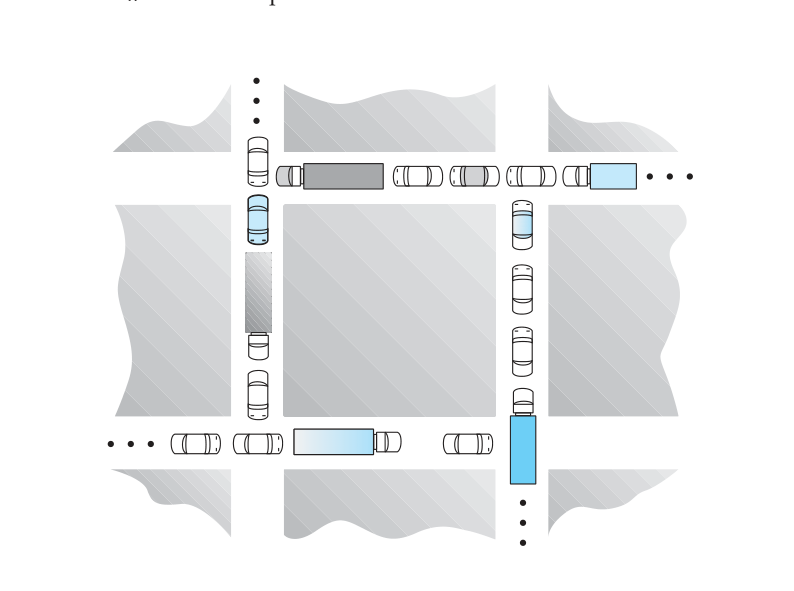
Answer
The resources are the road segments of the crossing and the threads are the cars. Mutual exclusion: a segment holds one car at a time. Hold and wait: each car occupies a segment while it waits for the next one. No preemption: a car cannot be lifted off the road; it leaves only by driving on. Circular wait: every car waits for a segment held by the next car in a ring. A simple rule: a car may enter the crossing only if the segment beyond it is free, so that it can clear the crossing ("do not block the box"). The rule denies hold and wait.资源是路口的各个路段，线程即汽车。互斥：一个路段同一时刻只容纳一辆车。占有并等待：每辆车在等待下一个路段时，仍占据着当前路段。非抢占：汽车不能被从路面上提起，只能靠继续行驶离开。循环等待：每辆车都在等待环中下一辆车所占据的路段。一条简单规则是：只有当汽车前方的路段空闲、从而能够驶出路口时，才允许驶入路口（即“不要堵住路口”）。该规则否定了占有并等待条件。
Resource-allocation graphs ★★★资源分配图 ★★★
Goal. Draw the resource-allocation graph of a state, write down its \(T\), \(R\) and \(E\), and decide from the graph whether there is a deadlock.目标。画出某个状态的资源分配图，写出其 \(T\)、\(R\) 和 \(E\)，并根据该图判断是否存在死锁。
Step 1: the symbols of the graph第 1 步：图中的符号
In words: the graph shows who waits for what (a request edge) and who holds what (an assignment edge).用文字表述：图中表示谁在等待什么（请求边），以及谁持有什么（分配边）。
A resource-allocation graph（资源分配图）is a directed graph with a vertex set \(V\) and an edge set \(E\). The set \(V\) has two parts: \(T=\{T_1,\dots,T_n\}\), the active threads, and \(R=\{R_1,\dots,R_m\}\), the resource types.资源分配图是一个有向图，其顶点集合为 \(V\)，边集合为 \(E\)。集合 \(V\) 分为两部分：\(T=\{T_1,\dots,T_n\}\)（活动线程）和 \(R=\{R_1,\dots,R_m\}\)（资源类型）。
| Symbol符号 | Drawn as画法 | Meaning含义 |
|---|---|---|
| Thread \(T_i\)线程 \(T_i\) | circle圆圈 | an active thread活动线程 |
| Resource type \(R_j\)资源类型 \(R_j\) | rectangle, one dot per instance矩形，每个实例一个点 | a type with as many instances as dots实例数与点数相同的类型 |
| Request edge \(T_i\to R_j\)请求边 \(T_i\to R_j\) | arrow to the rectangle指向矩形的箭头 | \(T_i\) has requested an instance of \(R_j\) and is waiting\(T_i\) 已请求 \(R_j\) 的一个实例，并正在等待 |
| Assignment edge \(R_j\to T_i\)分配边 \(R_j\to T_i\) | arrow from one dot从一个点出发的箭头 | an instance of \(R_j\) is allocated to \(T_i\)\(R_j\) 的一个实例已分配给 \(T_i\) |
A new request adds a request edge. When the request is granted, the edge turns into an assignment edge. When the thread releases the resource, the assignment edge is deleted.新的请求会添加一条请求边。请求被批准后，该边变为分配边。线程释放资源时，分配边被删除。
Step 2: how to do it by hand第 2 步：手工做法
How to do it by hand:手工做法：
- List \(T\), \(R\) and the number of instances of every type.列出 \(T\)、\(R\) 以及每种类型的实例数。
- For every held instance draw an assignment edge. For every waiting thread draw a request edge.对每个已持有的实例画一条分配边，对每个等待中的线程画一条请求边。
- Search for a cycle, that is, a path that returns to its start.查找环，即回到起点的路径。
- If there is no cycle, there is no deadlock.如果没有环，就没有死锁。
- If there is a cycle and every resource type on it has one instance, the threads on the cycle are deadlocked.如果存在环，且环上每种资源类型都只有一个实例，那么环上的线程处于死锁。
- If a type on the cycle has several instances, look for a thread outside the cycle that is not waiting. If it can finish and release an instance that reaches a thread of the cycle, the cycle breaks.如果环上某种类型有多个实例，就寻找环外一个不在等待的线程。如果它能执行完毕并释放一个实例，而这个实例能够送到环上的某个线程，那么环就被打破了。
The two-mutex program gives the graph below. Let thread one be \(T_1\) and thread two \(T_2\), and let first_mutex be \(R_1\) and second_mutex be \(R_2\), one instance each. Then \(T=\{T_1,T_2\}\), \(R=\{R_1,R_2\}\) and \(E=\{R_1\to T_1,\ T_1\to R_2,\ R_2\to T_2,\ T_2\to R_1\}\). The cycle \(T_1\to R_2\to T_2\to R_1\to T_1\) passes only through single-instance types, so this is a deadlock.两个互斥锁的程序会得到下面的图。设线程一为 \(T_1\)，线程二为 \(T_2\)，令 first_mutex 为 \(R_1\)，second_mutex 为 \(R_2\)，每种各有一个实例。于是有 \(T=\{T_1,T_2\}\)、\(R=\{R_1,R_2\}\) 和 \(E=\{R_1\to T_1,\ T_1\to R_2,\ R_2\to T_2,\ T_2\to R_1\}\)。环 \(T_1\to R_2\to T_2\to R_1\to T_1\) 只经过单实例类型，所以这是死锁。

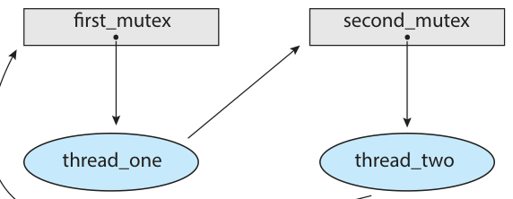
Step 3: reading a graph with several instances第 3 步：读懂多实例的图
In the left graph below, \(R_1\), \(R_2\), \(R_3\) and \(R_4\) have 1, 2, 1 and 3 instances, and \(E=\{T_1\to R_1,\,T_2\to R_3,\,R_1\to T_2,\,R_2\to T_2,\,R_2\to T_1,\,R_3\to T_3\}\). \(T_1\) holds an instance of \(R_2\) and waits for \(R_1\). \(T_2\) holds \(R_1\) and an instance of \(R_2\) and waits for \(R_3\). \(T_3\) holds \(R_3\).在下面左边的图中，\(R_1\)、\(R_2\)、\(R_3\) 和 \(R_4\) 分别有 1、2、1 和 3 个实例，还有 \(E=\{T_1\to R_1,\,T_2\to R_3,\,R_1\to T_2,\,R_2\to T_2,\,R_2\to T_1,\,R_3\to T_3\}\)。\(T_1\) 持有 \(R_2\) 的一个实例，并等待 \(R_1\)。\(T_2\) 持有 \(R_1\) 以及 \(R_2\) 的一个实例，并等待 \(R_3\)。\(T_3\) 持有 \(R_3\)。
There is no cycle. \(T_3\) can finish and release \(R_3\), then \(T_2\) can finish, then \(T_1\). If \(T_3\) now requests \(R_2\) (right graph), both instances of \(R_2\) are held and two cycles appear. \(T_1\) waits for \(T_2\), \(T_2\) waits for \(T_3\), and \(T_3\) waits for the holders of \(R_2\). All three are deadlocked.没有环。\(T_3\) 可以执行完毕并释放 \(R_3\)，然后 \(T_2\) 可以执行完毕，接着是 \(T_1\)。如果 \(T_3\) 现在请求 \(R_2\)（右边的图），\(R_2\) 的两个实例都被持有，并出现两个环。\(T_1\) 等待 \(T_2\)，\(T_2\) 等待 \(T_3\)，\(T_3\) 等待 \(R_2\) 的持有者。这三者都处于死锁。

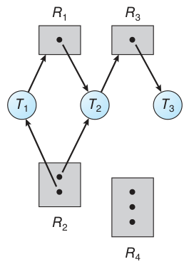

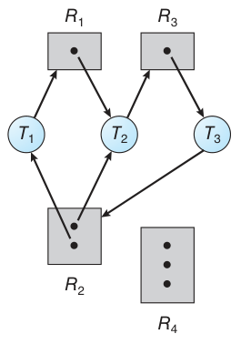
A cycle does not always mean deadlock. In the graph below the cycle \(T_1\to R_1\to T_3\to R_2\to T_1\) exists, but \(R_1\) and \(R_2\) have two instances each. \(T_2\) and \(T_4\) hold the other instances and wait for nothing. \(T_4\) can release its instance of \(R_2\), give it to \(T_3\), and the cycle breaks.环不一定意味着死锁。在下面的图中，环 \(T_1\to R_1\to T_3\to R_2\to T_1\) 存在，但 \(R_1\) 和 \(R_2\) 各有两个实例。\(T_2\) 和 \(T_4\) 持有其余的实例，且不等待任何资源。\(T_4\) 可以释放它持有的 \(R_2\) 实例，并把它交给 \(T_3\)，于是环被打破。

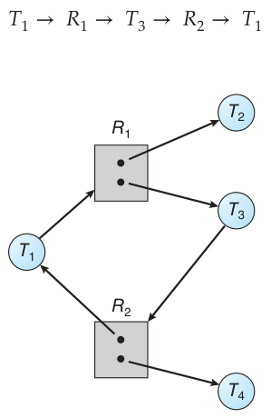
| Graph图 | Conclusion结论 |
|---|---|
| No cycle无环 | No deadlock无死锁 |
| Cycle, every resource type on it has one instance有环，且环上每种资源类型都只有一个实例 | Deadlock: every thread on the cycle is deadlocked (the cycle is necessary and sufficient)死锁：环上每个线程都处于死锁状态（环既是必要条件，也是充分条件） |
| Cycle, some resource type on it has several instances有环，且环上某些资源类型有多个实例 | Deadlock is possible but not certain (the cycle is necessary, not sufficient)可能死锁，但不一定（环是必要条件，但不是充分条件） |
Practice练习
Q1. (Trace) Resource type \(R_1\) has two instances and \(R_2\) has one. The edges are \(R_1\to T_1\), \(R_1\to T_2\), \(R_2\to T_3\), \(T_1\to R_2\) and \(T_3\to R_1\). (a) Find a cycle. (b) Is there a deadlock? (c) \(T_2\) now requests \(R_2\). Is there a deadlock?Q1.（手工演算）资源类型 \(R_1\) 有两个实例，\(R_2\) 有一个实例。边为 \(R_1\to T_1\)、\(R_1\to T_2\)、\(R_2\to T_3\)、\(T_1\to R_2\) 和 \(T_3\to R_1\)。（a）找出一个环。（b）是否存在死锁？（c）\(T_2\) 现在请求 \(R_2\)。是否存在死锁？
Answer
(a) \(T_1\to R_2\to T_3\to R_1\to T_1\) is a cycle. (b) There is no deadlock: \(T_2\) holds one instance of \(R_1\) and waits for nothing. \(T_2\) finishes and releases it, \(T_3\) obtains \(R_1\) and finishes and releases \(R_2\), and then \(T_1\) obtains \(R_2\) and finishes. The cycle is not sufficient because \(R_1\) has two instances. (c) With the edge \(T_2\to R_2\) all three threads wait: \(T_1\) and \(T_2\) for \(R_2\) (held by \(T_3\)) and \(T_3\) for \(R_1\) (both instances held by the waiting \(T_1\) and \(T_2\)). No thread can proceed, so \(T_1,T_2,T_3\) are deadlocked.（a）\(T_1\to R_2\to T_3\to R_1\to T_1\) 构成一个环。（b）不存在死锁：\(T_2\) 持有 \(R_1\) 的一个实例，且不等待任何资源。\(T_2\) 结束并释放该实例，\(T_3\) 获得 \(R_1\)，结束后释放 \(R_2\)，然后 \(T_1\) 获得 \(R_2\) 并结束。由于 \(R_1\) 有两个实例，环本身并不充分。（c）加入边 \(T_2\to R_2\) 后，三个线程都处于等待状态：\(T_1\) 和 \(T_2\) 等待 \(R_2\)（由 \(T_3\) 持有），\(T_3\) 等待 \(R_1\)（其两个实例分别由正在等待的 \(T_1\) 和 \(T_2\) 持有）。没有任何线程能够继续执行，因此 \(T_1,T_2,T_3\) 处于死锁状态。
思路：多实例资源的环，要看环外有没有不在等待、能归还实例的线程。
Q2. (Write down) Give \(T\), \(R\) and \(E\) for the two-mutex program in its deadlocked state and name the cycle.Q2.（写出）给出双互斥锁程序在死锁状态下的 \(T\)、\(R\) 和 \(E\)，并指出其中的环。
Answer
Let \(T_1\) be thread one, \(T_2\) thread two, \(R_1=\) first_mutex and \(R_2=\) second_mutex, one instance each. Thread one holds \(R_1\) and requests \(R_2\); thread two holds \(R_2\) and requests \(R_1\). So \(T=\{T_1,T_2\}\), \(R=\{R_1,R_2\}\) and \(E=\{R_1\to T_1,\ T_1\to R_2,\ R_2\to T_2,\ T_2\to R_1\}\). The cycle \(T_1\to R_2\to T_2\to R_1\to T_1\) passes only through single-instance resources, so the threads are deadlocked.设 \(T_1\) 为线程一，\(T_2\) 为线程二，\(R_1=\) first_mutex 和 \(R_2=\) second_mutex 各有一个实例。线程一持有 \(R_1\) 并请求 \(R_2\)；线程二持有 \(R_2\) 并请求 \(R_1\)。因此有 \(T=\{T_1,T_2\}\)、\(R=\{R_1,R_2\}\) 和 \(E=\{R_1\to T_1,\ T_1\to R_2,\ R_2\to T_2,\ T_2\to R_1\}\)。环 \(T_1\to R_2\to T_2\to R_1\to T_1\) 只经过单实例资源，因此这些线程处于死锁状态。
Handling deadlocks: prevention ★★★处理死锁：预防 ★★★
Goal. Name the four ways to handle deadlock, give one prevention method for each necessary condition with its cost, and apply the lock-ordering rule.目标。说出处理死锁的四种方法，针对每个必要条件给出一种预防方法及其代价，并应用加锁顺序规则。
Step 1: four ways to handle deadlock第 1 步：处理死锁的四种方法
In words: ignore it, prevent it, avoid it, or let it happen and recover.用文字表述：忽略它、预防它、避免它，或者任其发生然后恢复。
| Method方法 | Idea思路 | Requirement and cost要求与代价 | Used by使用者 |
|---|---|---|---|
| Ignore (the "ostrich" approach)忽略（“鸵鸟”策略） | Pretend deadlock never happens; restart manually if the system freezes假装死锁从不发生；系统冻结时手动重启 | Nothing; cheapest. Deadlocks are rare (say once a month), so other methods are not worth their cost无额外代价，成本最低。死锁很少发生（例如约每月一次），因此其他方法的代价并不划算 | Most operating systems, including Linux and Windows; programmers must write deadlock-free code大多数操作系统（包括 Linux 和 Windows）采用此法；程序员必须编写无死锁的代码 |
| Prevention（死锁预防） | Constrain how requests are made so that at least one necessary condition cannot hold限制请求的提出方式，使至少有一个必要条件不能成立 | No run-time information; lower device utilisation and throughput无需运行时信息；但设备利用率和吞吐量较低 | Lock-ordering rules in kernels and applications内核与应用程序中的加锁顺序规则 |
| Avoidance（死锁避免） | Grant a request only if the system stays in a safe state仅当系统仍处于安全状态时才批准请求 | Each thread's maximum need in advance; a test on every request预先声明每个线程的最大需求；对每个请求进行测试 | Banker's algorithm (Section 5.5)银行家算法（第 5.5 节） |
| Detection and recovery检测与恢复 | Let deadlock happen, detect it, then break it允许死锁发生，然后检测并打破它 | Run-time cost of detection plus work lost in recovery运行时的检测开销，加上恢复时损失的工作 | Database systems数据库系统 |
Prevention and avoidance both keep the system out of a deadlocked state. Prevention uses a fixed rule on requests. Avoidance decides every request dynamically from advance knowledge of the maximum needs (Section 5.4).预防和避免都能让系统不进入死锁状态。预防对请求采用固定的规则。避免则根据预先已知的最大需求，动态地决定每个请求（见第 5.4 节）。
Step 2: deny one condition第 2 步：破坏一个条件
In words: prevention = make sure that at least one of the four conditions can never hold.用文字表述：预防 = 确保四个条件中至少有一个永远不能成立。
| Condition条件 | How it is denied如何否定 | Drawbacks缺点 |
|---|---|---|
| Mutual exclusion互斥 | Use only sharable resources: a read-only file needs no exclusive access and cannot be involved in a deadlock只使用可共享资源：只读文件无需独占访问，因此不会卷入死锁 | Cannot be denied in general; a mutex lock is intrinsically nonsharable一般而言无法否定；互斥锁本质上是非共享的 |
| Hold and wait占有并等待 | A thread never requests while it holds resources. Protocol 1: request and obtain all resources before execution starts. Protocol 2: request only when holding nothing, so release everything before asking for more线程在持有资源时绝不再发出请求。协议 1：在执行开始前一次性请求并获得全部资源。协议 2：仅在未持有任何资源时才请求，因此在请求更多资源之前必须先释放所有资源 | Low utilisation (a lock held for the whole run but needed briefly); starvation (a thread that needs several popular resources may never find them all free); Protocol 1 is impractical because requests are dynamic利用率低（锁在整个运行过程中都被持有，但实际只需短暂使用）；饥饿（需要多个常被争用资源的线程，可能永远等不到它们全部空闲）；协议 1 不切实际，因为请求是动态提出的 |
| No preemption非抢占 | If a thread holding resources requests one that is not available, all its resources are preempted (implicitly released and added to the list it waits for); it restarts only when it regains the old and the new ones. Variant: take the wanted resource from a thread that is itself waiting持有资源的线程若请求的资源不可用，则其全部资源被抢占（即隐式释放，并加入其等待的资源列表）；只有重新获得旧资源和新资源，它才能重新开始。变体：从一个本身正在等待的线程处夺取所需资源 | Works only for resources whose state can be saved and restored (CPU registers, database transactions), not for mutexes and semaphores, where deadlock is most common仅适用于状态可以保存和恢复的资源（如 CPU 寄存器、数据库事务），不适用于死锁最常见的互斥锁和信号量 |
| Circular wait循环等待 | Impose a total order on the resource types; each thread requests in increasing order对资源类型施加全序；每个线程按递增顺序请求资源 | The order is a convention that programmers must follow; hard to define for hundreds of locks; fails if the locks are chosen dynamically顺序只是程序员必须遵守的约定；对于成百上千把锁很难定义；若锁是在运行时动态选定的，则此法失效 |
Only the last scheme is practical. It costs nothing at run time and is a design rule for programmers.只有最后一种方案是可行的。它在运行时不产生任何开销，是给程序员的一条设计规则。
Step 3: circular wait and lock ordering第 3 步：循环等待与加锁顺序
In words: number every resource type, and let every thread request in increasing number only.用文字表述：给每种资源类型编号，并且让每个线程只能按编号递增的顺序请求。
For example, \(F(\text{first\_mutex})=1\) and \(F(\text{second\_mutex})=5\). Every thread then locks first_mutex before second_mutex.例如 \(F(\text{first\_mutex})=1\) 和 \(F(\text{second\_mutex})=5\)。这样，每个线程都先锁 first_mutex，再锁 second_mutex。
How to do it by hand:手工做法：
- Write the number \(F\) of each resource.写出每种资源的编号 \(F\)。
- Go through the requests of a thread in order.按顺序检查线程的各个请求。
- The rule holds if every number is larger than the number of every resource held at that moment.如果每个请求的编号都大于当时所持有的所有资源的编号，则该规则成立。
Why it works. Suppose a circular wait exists among \(T_0,\dots,T_n\). Thread \(T_i\) waits for \(R_i\), which \(T_{i+1}\) holds (indices modulo \(n+1\)). \(T_{i+1}\) holds \(R_i\) while it requests \(R_{i+1}\), so \(F(R_i)<F(R_{i+1})\) for all \(i\). Then \(F(R_0)<F(R_1)<\dots<F(R_n)<F(R_0)\), which is impossible.为什么有效。假设 \(T_0,\dots,T_n\) 之间存在循环等待。线程 \(T_i\) 等待 \(R_i\)，它被 \(T_{i+1}\) 持有（下标按 \(n+1\) 取模）。\(T_{i+1}\) 在请求 \(R_{i+1}\) 时仍持有 \(R_i\)，因此对所有 \(i\) 都有 \(F(R_i)<F(R_{i+1})\)。于是 \(F(R_0)<F(R_1)<\dots<F(R_n)<F(R_0)\)，这是不可能的。
The ordering is only a convention. It is hard to define for hundreds of locks, and it fails when the locks are known only at run time:排序只是一种约定。对于成百上千的锁，它很难定义，而且当锁只在运行时才知道时，它就会失效：
void transaction(Account from, Account to, double amount)
{
mutex lock1 = get_lock(from);
mutex lock2 = get_lock(to);
acquire(lock1);
acquire(lock2);
withdraw(from, amount);
deposit(to, amount);
release(lock2);
release(lock1);
}
One thread calling transaction(checking, savings, 25.0) and another calling transaction(savings, checking, 50.0) lock the two accounts in opposite orders and can deadlock, although both run the same code. The order must come from a fixed key of the locks, for example the account number, not from the order of the arguments.一个线程调用 transaction(checking, savings, 25.0)，另一个线程调用 transaction(savings, checking, 50.0)，它们以相反的顺序给两个账户加锁，虽然运行的是同样的代码，却可能死锁。排序必须依据锁固定的键，例如账户号，而不是参数的先后顺序。
Practice练习
Q1. (Apply) Resources \(A\), \(B\), \(C\) are ordered by \(F(A)=1\), \(F(B)=5\), \(F(C)=9\). Which request sequences does the rule "request only in increasing order of \(F\)" allow? (a) \(A,B,C\) (b) \(B,A\) (c) \(A,C\) (d) \(C,B\) (e) \(B,C,A\). What changes under the alternative form of the rule?Q1.（应用）资源 \(A\)、\(B\)、\(C\) 的编号分别为 \(F(A)=1\)、\(F(B)=5\)、\(F(C)=9\)。规则“只能按 \(F\) 递增的顺序请求”允许哪些请求序列？（a）\(A,B,C\)，（b）\(B,A\)，（c）\(A,C\)，（d）\(C,B\)，（e）\(B,C,A\)。若采用该规则的另一种形式，结果会有什么变化？
Answer
Allowed: (a) and (c), because every step requests a higher number. Not allowed: (b) \(A\) after \(B\) (1 < 5), (d) \(B\) after \(C\) (5 < 9) and (e) \(A\) after \(C\). Under the alternative rule a thread may request \(R_j\) after releasing every held resource \(R_i\) with \(F(R_i)\ge F(R_j)\). Then (b) is legal if \(B\) is released before \(A\) is requested, (d) if \(C\) is released before \(B\), and (e) if \(B\) and \(C\) are released before \(A\).允许的是（a）和（c），因为每一步请求的编号都更高。不允许的是：（b）\(A\) 在 \(B\) 之后（1 < 5），（d）\(B\) 在 \(C\) 之后（5 < 9），以及（e）\(A\) 在 \(C\) 之后。在另一种规则下，线程可以先释放所持有的满足 \(F(R_i)\ge F(R_j)\) 的每个资源 \(R_i\)，然后再请求 \(R_j\)。于是，若在请求 \(A\) 之前先释放 \(B\)，则（b）合法；若在请求 \(B\) 之前先释放 \(C\)，则（d）合法；若在请求 \(A\) 之前先释放 \(B\) 和 \(C\)，则（e）合法。
Q2. (Compare) A system has synchronisation objects \(A,\dots,E\). Containment prevents deadlock by adding a sixth lock \(F\) that must be acquired before any of \(A,\dots,E\). Compare it with the circular-wait (ordering) scheme.Q2.（比较）某系统有同步对象 \(A,\dots,E\)。“包含”方案通过增加第六把锁 \(F\) 来预防死锁，该锁必须先于 \(A,\dots,E\) 中的任何一把被获取。请将它与循环等待（排序）方案进行比较。
Answer
Containment works: every thread that holds one of \(A,\dots,E\) also holds \(F\), so only one thread at a time can hold any of them and no circular wait among them can form. But it serialises all use of \(A,\dots,E\): threads that need disjoint objects can no longer run in parallel, and \(F\) becomes a bottleneck, so concurrency and throughput drop. The ordering scheme costs nothing at run time and lets threads that need different locks proceed at once, but programmers must define a global order and follow it.“包含”方案有效：凡持有 \(A,\dots,E\) 之一的线程也都持有 \(F\)，因此同一时刻只有一个线程能持有其中任何一把锁，它们之间也就不会形成循环等待。但它把对 \(A,\dots,E\) 的所有使用都串行化了：需要互不相交对象的线程不能再并行运行，\(F\) 成为瓶颈，并发性与吞吐量随之下降。排序方案在运行时没有任何开销，并允许需要不同锁的线程同时推进，但程序员必须定义一个全局顺序并加以遵守。
Q3. (Fix) Repair transaction() so that it cannot deadlock.Q3.（修复）修改 transaction()，使其不会发生死锁。
Answer
Acquire the two account locks in the order of the account numbers, whatever the argument order:无论参数的顺序如何，都按账号的顺序获取两个账户的锁：
void transaction(Account from, Account to, double amount)
{
if (from.id == to.id) return; /* one lock only: nothing to transfer */
Account lo = (from.id < to.id) ? from : to; /* smaller account number first */
Account hi = (from.id < to.id) ? to : from;
acquire(get_lock(lo));
acquire(get_lock(hi));
withdraw(from, amount);
deposit(to, amount);
release(get_lock(hi));
release(get_lock(lo));
}
Both calls from the example now lock the two accounts in the same order, so a circular wait is impossible. The check from.id == to.id avoids acquiring the same lock twice.示例中的两次调用现在都以相同的顺序锁定两个账户，因此不可能出现循环等待。检查 from.id == to.id 用于避免对同一把锁加锁两次。
Deadlock avoidance: safe states ★★★死锁避免：安全状态 ★★★
Goal. Decide whether a state is safe, find a safe sequence, and explain how safe, unsafe and deadlocked states relate.目标。判断一个状态是否安全，找出一个安全序列，并解释安全状态、不安全状态和死锁状态之间的关系。
Step 1: what avoidance needs第 1 步：避免需要什么
In words: avoidance = each thread declares its maximum need in advance, and the system grants a request only if it can still finish everybody afterwards.用文字表述：避免 = 每个线程预先声明其最大需求，系统只有在之后仍能让所有线程都执行完毕时，才批准请求。
Prevention restricts every request and lowers utilisation. Deadlock avoidance uses extra information instead: each thread declares in advance the maximum number of instances of each type that it may need. The system looks at the resource-allocation state, that is, the available and allocated resources and the maximum demands. It grants a request only if a circular wait can never arise.预防会限制每一个请求，并降低利用率。死锁避免则改用额外的信息：每个线程预先声明它可能需要的每种类型实例的最大数量。系统查看资源分配状态，即可用资源、已分配资源和最大需求。只有当循环等待永远不会出现时，系统才批准请求。
Step 2: safe states and safe sequences第 2 步：安全状态与安全序列
In words: a state is safe if there is some order in which every thread can run to the end with what is free plus what the earlier threads give back.用文字表述：如果存在某种次序，使每个线程都能在空闲资源加上前面线程归还的资源的条件下执行到结束，则该状态是安全的。
A state is safe（安全状态）if the system can allocate resources to each thread, up to its maximum, in some order and still avoid deadlock. A sequence \(\langle T_1,\dots,T_n\rangle\) is a safe sequence（安全序列）if every \(T_i\) can get what it may still request from the free resources plus the resources of all earlier threads \(T_j\) with \(j<i\). A state is safe if a safe sequence exists. Otherwise it is unsafe.如果系统能按某种次序把资源分配给每个线程（直到其最大需求），并且仍能避免死锁，那么该状态是安全状态。序列 \(\langle T_1,\dots,T_n\rangle\) 是安全序列，是指每个 \(T_i\) 都能从空闲资源加上所有在它之前的线程 \(T_j\) 的资源中，得到它仍可能请求的资源，其中 \(j<i\)。如果存在安全序列，状态就是安全的。否则，状态就是不安全的。
Relations between the three kinds of state:三类状态之间的关系：
- A safe state is not deadlocked.安全状态不会死锁。
- Every deadlocked state is unsafe.每个死锁状态都是不安全的。
- An unsafe state need not be deadlocked, but the system can no longer stop the threads from requesting in a way that causes a deadlock.不安全状态不一定死锁，但系统已经无法阻止线程以某种会导致死锁的方式提出请求。

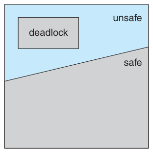
A request for a free resource is granted only if the allocation leaves the system in a safe state. A thread may therefore wait although the resource is free. Safety is judged against the worst case: every thread may still ask for its full maximum. That is why avoidance is conservative.对空闲资源的请求，只有在分配后系统仍处于安全状态时才会批准。因此，即使资源空闲，线程也可能需要等待。安全性是按最坏情况判断的：每个线程都可能仍然请求其全部最大需求。这就是避免方法偏于保守的原因。
Step 3: the claim-edge graph (one instance per type)第 3 步：需求边图（每种类型一个实例）
In words: with single instances, add dashed "may request later" edges and refuse any grant that closes a cycle.用文字表述：对于单实例类型，添加虚线的“以后可能请求”边，并拒绝任何会形成环的批准。
A claim edge（需求边）\(T_i\dashrightarrow R_j\) is a dashed edge: \(T_i\) may request \(R_j\) in the future. When \(T_i\) requests \(R_j\), the claim edge becomes a request edge. When \(T_i\) releases \(R_j\), the assignment edge turns back into a claim edge.需求边 \(T_i\dashrightarrow R_j\) 是一条虚线边：\(T_i\) 将来可能请求 \(R_j\)。当 \(T_i\) 请求 \(R_j\) 时，需求边变为请求边。当 \(T_i\) 释放 \(R_j\) 时，分配边又变回需求边。
A request is granted only if turning the request edge \(T_i\to R_j\) into the assignment edge \(R_j\to T_i\) creates no cycle, claim edges included. A cycle means the state would be unsafe, so \(T_i\) must wait. The scheme cannot handle several instances per type. The banker's algorithm can (Section 5.5).只有当把请求边 \(T_i\to R_j\) 变为分配边 \(R_j\to T_i\) 后不产生环（包括需求边在内）时，请求才会被批准。出现环意味着状态会不安全，所以 \(T_i\) 必须等待。该方案无法处理每种类型有多个实例的情况。银行家算法可以处理（见第 5.5 节）。

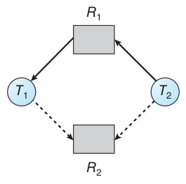

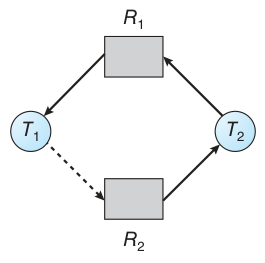
In the example \(T_1\) holds \(R_1\), and \(T_1\) and \(T_2\) may still request \(R_2\). Although \(R_2\) is free, granting it to \(T_2\) closes the cycle \(R_2\to T_2\dashrightarrow R_1\to T_1\dashrightarrow R_2\). If \(T_1\) then requested \(R_2\) and \(T_2\) requested \(R_1\), both would wait forever. So \(T_2\) must wait.在这个例子中，\(T_1\) 持有 \(R_1\)，\(T_1\) 和 \(T_2\) 将来可能请求 \(R_2\)。虽然 \(R_2\) 是空闲的，但把它批准给 \(T_2\) 会闭合环 \(R_2\to T_2\dashrightarrow R_1\to T_1\dashrightarrow R_2\)。如果随后 \(T_1\) 请求 \(R_2\)，而 \(T_2\) 请求 \(R_1\)，两者都会永远等待。所以 \(T_2\) 必须等待。
Practice练习
Q1. (Explain) Suppose a system is in an unsafe state. Show that the threads can still complete without a deadlock.Q1.（解释）假设系统处于不安全状态。说明各线程仍然可以在不发生死锁的情况下全部完成。
Answer
Unsafe means that no order guarantees completion if every thread asks for its declared maximum. Threads often ask for less or release resources early. Take the unsafe state of the twelve-resource example at \(t_1\): Available 2; T0 holds 5 (max 10), T1 holds 2 (max 4), T2 holds 3 (max 9). T1 finishes and Available becomes 4. If T0 in fact needs only 4 more, it finishes and returns 9; then T2, which needs at most 6 more, finishes. No deadlock occurs, although the declared maxima would have allowed one.“不安全”是指：若每个线程都请求其声明的最大需求，则没有任何顺序能保证全部完成。但线程往往请求较少的资源，或提前释放资源。以 \(t_1\) 处的十二个资源的示例中的不安全状态为例：Available 为 2；T0 持有 5（最大需求 10），T1 持有 2（最大需求 4），T2 持有 3（最大需求 9）。T1 结束后，Available 变为 4。若 T0 实际上只需再要 4 个，则它结束并归还 9 个资源；随后 T2 至多还需 6 个，也能结束。因此不会发生死锁，尽管按声明的最大需求本可能发生死锁。
Q2. (Calculation) Ten identical resources are shared by T0, T1 and T2 with maximum needs 9, 4, 7; they hold 3, 2, 2. (a) Is the state safe? (b) T2 requests one more resource: grant it? (c) Starting again from the original state, T0 requests one more resource: grant it?Q2.（计算）十个相同的资源由 T0、T1 和 T2 共享，它们的最大需求分别为 9、4、7；当前分别持有 3、2、2。（a）该状态是否安全？（b）T2 再请求一个资源：是否批准？（c）从原始状态重新开始，T0 再请求一个资源：是否批准？
Answer
(a) Available = 10 − 7 = 3 and Need = (6, 2, 5). T1: 2 ≤ 3, finishes, Available 5. T2: 5 ≤ 5, finishes, Available 7. T0: 6 ≤ 7. The state is safe with sequence \(\langle T_1,T_2,T_0\rangle\).（a）Available = 10 − 7 = 3，Need = (6, 2, 5)。T1：2 ≤ 3，可结束，Available 变为 5。T2：5 ≤ 5，可结束，Available 变为 7。T0：6 ≤ 7。该状态是安全的，安全序列为 \(\langle T_1,T_2,T_0\rangle\)。
(b) After the pretend allocation Available = 2 and Need = (6, 2, 4). T1: 2 ≤ 2, Available 4. T2: 4 ≤ 4, Available 7. T0: 6 ≤ 7. The state is safe, so the request is granted.（b）假定分配后，Available = 2，Need = (6, 2, 4)。T1：2 ≤ 2，Available 变为 4。T2：4 ≤ 4，Available 变为 7。T0：6 ≤ 7。该状态是安全的，因此批准该请求。
(c) After the pretend allocation Available = 2 and Need = (5, 2, 5). T1: 2 ≤ 2, Available 4. Now T0 needs 5 > 4 and T2 needs 5 > 4. No sequence exists, so the state is unsafe and T0 must wait although one resource is free.（c）假定分配后，Available = 2，Need = (5, 2, 5)。T1：2 ≤ 2，Available 变为 4。此时 T0 需要 5 > 4，T2 也需要 5 > 4。不存在安全序列，因此该状态不安全，T0 必须等待，尽管仍有一个资源是空闲的。
易错：资源够用不等于可以分配，要看分配之后的状态是否安全。
Q3. (Prove; one step beyond the text) \(m\) identical resources are shared by \(n\) threads. A thread requests and releases one resource at a time, and the maximum need of each thread is between 1 and \(m\). Show that the system is deadlock-free if the sum of all maximum needs is less than \(m+n\). Apply this to four resources and three threads with a maximum need of 2 each.Q3.（证明；比正文更进一步）\(m\) 个相同的资源由 \(n\) 个线程共享。每个线程每次只请求并释放一个资源，且每个线程的最大需求介于 1 与 \(m\) 之间。证明：若所有最大需求之和小于 \(m+n\)，则系统无死锁。将此结论应用于四个资源、三个线程且每个线程的最大需求均为 2 的情形。
Answer
Suppose a deadlock occurs. Then every thread is waiting for one more resource and none is free, so all \(m\) resources are allocated: \(\sum_i\text{Allocation}_i=m\). Each waiting thread still needs at least one more: \(\sum_i\text{Need}_i\ge n\). Hence \(\sum_i\text{Max}_i=\sum_i\text{Allocation}_i+\sum_i\text{Need}_i\ge m+n\), which contradicts the assumption \(\sum_i\text{Max}_i<m+n\). So no deadlock can occur. (The condition that each maximum is at most \(m\) ensures that a thread alone can finish.)假设发生了死锁。那么每个线程都在再等待一个资源，且没有任何资源空闲，因此全部 \(m\) 个资源都已被分配：\(\sum_i\text{Allocation}_i=m\)。每个等待中的线程仍至少需要一个资源：\(\sum_i\text{Need}_i\ge n\)。于是 \(\sum_i\text{Max}_i=\sum_i\text{Allocation}_i+\sum_i\text{Need}_i\ge m+n\)，这与假设 \(\sum_i\text{Max}_i<m+n\) 相矛盾。因此不可能发生死锁。（每个最大需求至多为 \(m\) 这一条件，保证单个线程能够独自完成。）
For \(m=4\), \(n=3\) and maximum 2 each, \(\sum_i\text{Max}_i=6<7=m+n\), so the system is deadlock-free: if each thread holds one resource, one resource is still free and some thread can get its second and finish.对于 \(m=4\)、\(n=3\) 且每个最大需求均为 2 的情形，\(\sum_i\text{Max}_i=6<7=m+n\)，因此系统无死锁：若每个线程各持有一个资源，则仍有一个资源空闲，于是某个线程可以获得第二个资源并结束。
The bound is tight: if \(\sum_i\text{Max}_i=m+n\), give every thread \(\text{Max}_i-1\) resources. That uses exactly \(m\) resources and every thread still needs one more, which is a deadlock.该界限是紧的：若 \(\sum_i\text{Max}_i=m+n\)，则令每个线程各持有 \(\text{Max}_i-1\) 个资源。这恰好用掉 \(m\) 个资源，而每个线程仍需再要一个，这就是死锁。
The banker's algorithm ★★★银行家算法 ★★★
Goal. Run the banker's algorithm by hand: compute the Need matrix, run the safety algorithm in a table and give a safe sequence, then decide one resource request.目标。手工运行银行家算法：计算 Need 矩阵，用表格运行安全性算法并给出安全序列，然后判断一个资源请求。
The banker's algorithm（银行家算法）handles several instances per type. It is named after a bank that must never lend its cash in a way that stops it from satisfying all its customers. Each thread declares its maximum need of every type, at most the total in the system. The algorithm assumes that the numbers of threads and resources are fixed, that maximum needs are known in advance, and that every thread returns its resources in finite time.银行家算法处理每种类型有多个实例的情况。它的名字来自银行：银行决不能以使自己无法满足所有客户的方式放贷。每个线程声明它对每种类型的最大需求，且不超过系统中的总量。该算法假设线程数和资源数是固定的，最大需求事先已知，并且每个线程都会在有限时间内归还资源。
Step 1: the data第 1 步：数据
In words: four tables describe the state: what is free, what each thread may ask at most, what it holds, and what it may still ask.用文字表述：四张表描述状态：哪些资源空闲，每个线程最多可能请求多少，它持有多少，以及它仍可能请求多少。
Let \(n\) be the number of threads and \(m\) the number of resource types.设 \(n\) 为线程数，\(m\) 为资源类型数。
| Structure结构 | Size大小 | Meaning含义 |
|---|---|---|
| Available | vector of length \(m\)长度为 \(m\) 的向量 | Available[j] = k: k instances of \(R_j\) are freeAvailable[j] = k：\(R_j\) 的 k 个实例空闲 |
| Max | \(n\times m\) | Max[i][j] = k: \(T_i\) may request at most k instances of \(R_j\)Max[i][j] = k：\(T_i\) 至多可请求 \(R_j\) 的 k 个实例 |
| Allocation | \(n\times m\) | Allocation[i][j] = k: \(T_i\) holds k instances of \(R_j\)Allocation[i][j] = k：\(T_i\) 持有 \(R_j\) 的 k 个实例 |
| Need | \(n\times m\) | Need[i][j] = k: \(T_i\) may still request k more instances of \(R_j\)Need[i][j] = k：\(T_i\) 仍可再请求 \(R_j\) 的 k 个实例 |
Step 2: the safety algorithm第 2 步：安全性算法
In words: repeatedly pick a thread whose remaining need fits into what is free, let it finish, and add what it holds to what is free; if everybody finishes, the state is safe.用文字表述：反复挑选一个剩余需求能放进空闲资源的线程，让它执行完毕，并把它持有的资源加回到空闲资源中；如果所有线程都能执行完毕，状态就是安全的。
\(\text{Work}\) is a vector of length \(m\) that holds what would be free if the finished threads had returned their resources. \(\text{Finish}\) is a vector of length \(n\) that marks the threads that can finish.\(\text{Work}\) 是长度为 \(m\) 的向量，表示如果已完成的线程归还资源，此时会空闲的资源。\(\text{Finish}\) 是长度为 \(n\) 的向量，标记能够执行完毕的线程。
How to do it by hand:手工做法：
- Compute Need = Max − Allocation for every row. Compute Available = total − sum of Allocation.对每一行计算 Need = Max − Allocation。计算 Available = 总量 − Allocation 之和。
- Set Work = Available. Mark every thread as not finished.令 Work = Available。把每个线程标记为未完成。
- Scan the threads in index order. Take the first unfinished thread whose Need is at most Work in every component.按下标顺序扫描线程。取第一个未完成的、且 Need 在每个分量上都不大于 Work 的线程。
- Write the new Work = Work + Allocation of that thread. Mark the thread finished. Go back to step 3.写出新的 Work = Work + 该线程的 Allocation。把该线程标记为已完成。回到第 3 步。
- If no unfinished thread fits, stop. If all threads are finished, the state is safe, and the order in which you picked them is a safe sequence. Otherwise the state is unsafe.如果没有未完成的线程能放进去，就停止。如果所有线程都已完成，则状态是安全的，你挑选它们的次序就是安全序列。否则，状态是不安全的。
Step 3: the resource-request algorithm第 3 步：资源请求算法
In words: a request is granted only if it is within the claim, within what is free, and the state after pretending to grant it is still safe.用文字表述：只有请求在需求范围内、在空闲资源范围内，并且假设批准之后的状态仍然安全，请求才会被批准。
Let \(\text{Request}_i\) be the request vector of \(T_i\). \(\text{Request}_i[j]=k\) means that \(T_i\) wants \(k\) more instances of \(R_j\).设 \(\text{Request}_i\) 为 \(T_i\) 的请求向量。\(\text{Request}_i[j]=k\) 表示 \(T_i\) 还需要 \(R_j\) 的 \(k\) 个实例。
How to do it by hand:手工做法：
- If \(\text{Request}_i\le\text{Need}_i\), go on. Otherwise report an error: the thread exceeded its maximum claim.如果 \(\text{Request}_i\le\text{Need}_i\)，继续。否则报错：线程超过了它的最大需求。
- If \(\text{Request}_i\le\text{Available}\), go on. Otherwise \(T_i\) waits, because the resources are not free.如果 \(\text{Request}_i\le\text{Available}\)，继续。否则 \(T_i\) 等待，因为资源不空闲。
- Pretend to allocate: apply the three updates above.假装分配：执行上面的三项更新。
- Run the safety algorithm on the new state.在新状态上运行安全性算法。
- If it is safe, the allocation is completed. If it is unsafe, \(T_i\) waits and the old state is restored.如果是安全的，分配完成。如果不安全，\(T_i\) 等待，并恢复原来的状态。
Practice练习
Q1. (Calculation) Four resource types A–D. Allocation, Max and Available:Q1.（计算）四种资源类型 A–D。Allocation、Max 和 Available 如下：
| Thread线程 | Allocation | Max |
|---|---|---|
| T0 | 0 0 1 2 | 0 0 1 2 |
| T1 | 1 0 0 0 | 1 7 5 0 |
| T2 | 1 3 5 4 | 2 3 5 6 |
| T3 | 0 6 3 2 | 0 6 5 2 |
| T4 | 0 0 1 4 | 0 6 5 6 |
Available = (1,5,2,0). (a) Compute Need. (b) Is the state safe? (c) T1 requests (0,4,2,0): can it be granted immediately?Available = (1,5,2,0)。（a）计算 Need。（b）该状态是否安全？（c）T1 请求 (0,4,2,0)：能否立即批准？
Answer
(a) Need = T0 (0,0,0,0), T1 (0,7,5,0), T2 (1,0,0,2), T3 (0,0,2,0), T4 (0,6,4,2).（a）Need = T0 (0,0,0,0)、T1 (0,7,5,0)、T2 (1,0,0,2)、T3 (0,0,2,0)、T4 (0,6,4,2)。
(b) Work = (1,5,2,0). T0: (0,0,0,0) fits, Work = (1,5,3,2). T1 does not fit (7 > 5). T2: (1,0,0,2) fits, Work = (2,8,8,6). T1: (0,7,5,0) fits, Work = (3,8,8,6). T3: (0,0,2,0) fits, Work = (3,14,11,8). T4: (0,6,4,2) fits, Work = (3,14,12,12). All threads finish, so the state is safe with sequence \(\langle T_0,T_2,T_1,T_3,T_4\rangle\).（b）Work = (1,5,2,0)。T0：(0,0,0,0) 可满足，Work = (1,5,3,2)。T1 不能满足（7 > 5）。T2：(1,0,0,2) 可满足，Work = (2,8,8,6)。T1：(0,7,5,0) 可满足，Work = (3,8,8,6)。T3：(0,0,2,0) 可满足，Work = (3,14,11,8)。T4：(0,6,4,2) 可满足，Work = (3,14,12,12)。所有线程都能结束，因此该状态是安全的，安全序列为 \(\langle T_0,T_2,T_1,T_3,T_4\rangle\)。
(c) (0,4,2,0) ≤ Need of T1 (0,7,5,0) and ≤ Available (1,5,2,0). Pretend: Available = (1,1,0,0), Allocation of T1 = (1,4,2,0), Need of T1 = (0,3,3,0). Safety: T0 fits, Work = (1,1,1,2); T2 fits, Work = (2,4,6,6); T1 (0,3,3,0) fits, Work = (3,8,8,6); T3 and T4 follow. The state is safe, so the request can be granted immediately.（c）(0,4,2,0) ≤ T1 的 Need (0,7,5,0)，且 ≤ Available (1,5,2,0)。假定分配：Available = (1,1,0,0)，T1 的 Allocation = (1,4,2,0)，T1 的 Need = (0,3,3,0)。安全性检验：T0 可满足，Work = (1,1,1,2)；T2 可满足，Work = (2,4,6,6)；T1 (0,3,3,0) 可满足，Work = (3,8,8,6)；随后 T3 和 T4 也依次可满足。该状态是安全的，因此该请求可以立即批准。
思路：先算 Need，再按 Work 逐步找能完成的线程；请求要先“假装分配”再做安全检查。
Q2. (Explain) The banker's algorithm for one resource type can be obtained by reducing the vectors to single numbers. Show by an example that the algorithm for several types cannot be replaced by running the single-type algorithm once per type.Q2.（解释）单一资源类型的银行家算法，可以通过把向量化简为单个数值而得到。请通过一个例子说明：多类型的算法不能通过对每种类型各运行一次单类型算法来替代。
Answer
Take two threads and two resource types A and B with one instance each. Both threads have Max = (1,1). T0 holds A and T1 holds B, so Available = (0,0) and Need = (0,1) for T0 and (1,0) for T1. Type A alone: Available 0, Need 0 for T0 and 1 for T1; T0 can finish and return A, then T1 can finish, so A alone is safe. Type B alone is safe in the same way (T1 finishes first). Together: Work = (0,0), T0 needs (0,1) and T1 needs (1,0), so neither fits and the state is unsafe; indeed T0 waits for B held by T1 and T1 waits for A held by T0. A thread needs all its resource types at once, so the test must compare whole Need vectors.取两个线程以及两种资源类型 A 和 B，各有一个实例。两个线程的 Max 均为 (1,1)。T0 持有 A，T1 持有 B，因此 Available = (0,0)，T0 的 Need = (0,1)，T1 的 Need = (1,0)。仅考虑类型 A 时：Available 为 0，T0 的 Need 为 0，T1 的 Need 为 1；T0 可以结束并归还 A，随后 T1 也可以结束，因此仅就 A 而言是安全的。仅考虑类型 B 时，同理也是安全的（T1 先结束）。合在一起时：Work = (0,0)，T0 需要 (0,1)，T1 需要 (1,0)，二者都不能满足，因此该状态不安全；事实上，T0 在等待 T1 持有的 B，而 T1 在等待 T0 持有的 A。线程需要同时获得其全部资源类型，因此检验必须比较完整的 Need 向量。
Q3. (Analysis) The banker's algorithm controls deadlock. Which of these changes can be made without introducing the possibility of deadlock, and under what circumstances? (a) increase Available; (b) decrease Available; (c) increase Max of one thread; (d) decrease Max of one thread; (e) increase the number of threads; (f) decrease the number of threads.Q3.（分析）银行家算法用于控制死锁。下列哪些改动可以在不引入死锁可能性的前提下进行？又须满足什么条件？（a）增加 Available；（b）减少 Available；（c）增加某个线程的 Max；（d）减少某个线程的 Max；（e）增加线程数；（f）减少线程数。
Answer
| Change改动 | Safe?是否安全？ |
|---|---|
| (a) Increase Available（a）增加 Available | Always. Work only becomes larger, so every safe sequence stays valid总是安全。Work 只会增大，因此原有的每个安全序列都仍然有效 |
| (b) Decrease Available（b）减少 Available | Only if the new state is still safe; rerun the safety algorithm. In the twelve-resource example, removing one of the three free resources makes the state unsafe仅当新状态仍然安全时才可以；需重新运行安全性算法。在十二个资源的例子中，减少三个空闲资源中的一个会使状态不安全 |
| (c) Increase Max of one thread（c）增加某个线程的 Max | Only if the new state is still safe, because Need grows. In the example, raising Max of T1 from 4 to 6 makes it unsafe仅当新状态仍然安全时才可以，因为 Need 会增大。在该例中，将 T1 的 Max 从 4 提高到 6 会使状态不安全 |
| (d) Decrease Max of one thread（d）减少某个线程的 Max | Always, as long as Max stays at least Allocation: Need only shrinks总是安全，只要 Max 仍不小于 Allocation：Need 只会减小 |
| (e) Increase the number of threads（e）增加线程数 | Safe if the new thread starts with no allocation and Max at most the total number of resources: append it to the end of the safe sequence. Otherwise rerun the safety algorithm若新线程开始时没有分配，且其 Max 不超过资源总数，则安全：将其追加到安全序列末尾；否则需重新运行安全性算法 |
| (f) Decrease the number of threads（f）减少线程数 | Safe: the terminating thread returns its resources and the rest of the safe sequence stays valid安全：终止的线程归还其资源，安全序列中的其余部分仍然有效 |
Deadlock detection and recovery ★★★死锁检测与恢复 ★★★
Goal. Detect a deadlock with the wait-for graph or the detection algorithm, run the algorithm by hand on a small case, and list the ways to recover.目标。用等待图或检测算法检测死锁，在小例子上手工运行该算法，并列出恢复的方法。
If a system uses neither prevention nor avoidance, a deadlock can occur. It needs a detection（死锁检测）algorithm that examines the state and a recovery algorithm that breaks the deadlock. The cost has two parts: the run-time overhead of the algorithm and the work lost in recovery.如果系统既不使用预防也不使用避免，就可能发生死锁。它需要一个检查状态的检测算法，以及一个打破死锁的恢复算法。代价有两部分：算法的运行时开销，以及恢复过程中丢失的工作。
Step 1: one instance per type, the wait-for graph第 1 步：每种类型一个实例，等待图
In words: the wait-for graph shows only who waits for whom, and a cycle in it is a deadlock.用文字表述：等待图只表示谁在等谁，图中的环就是死锁。
The wait-for graph（等待图）is obtained from the resource-allocation graph by deleting the resource nodes. The edge \(T_i\to T_j\) exists if and only if the resource-allocation graph has \(T_i\to R_q\) and \(R_q\to T_j\) for some resource \(R_q\). This means that \(T_i\) waits for \(T_j\) to release a resource. With single instances a deadlock exists if and only if the wait-for graph has a cycle. A cycle search costs \(O(n^2)\) for \(n\) vertices.等待图由资源分配图删去资源节点得到。当且仅当资源分配图中对某个资源 \(R_q\) 有 \(T_i\to R_q\) 和 \(R_q\to T_j\) 时，边 \(T_i\to T_j\) 才存在。这表示 \(T_i\) 在等待 \(T_j\) 释放一个资源。对于单实例类型，当且仅当等待图中存在环时才有死锁。对 \(n\) 个顶点查找环的代价为 \(O(n^2)\)。

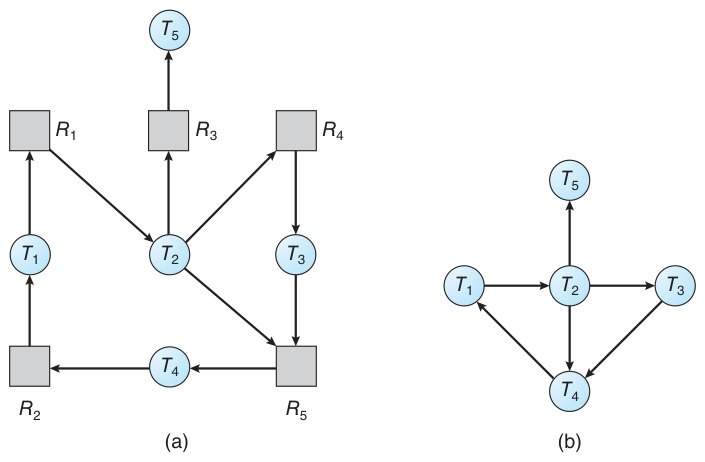
Real systems use this idea. A Java thread dump reports deadlocks as cycles, and database servers search for cycles among transactions and abort a victim.实际系统也在用这一思路。Java 线程转储以环的形式报告死锁，数据库服务器则在事务之间搜索环，并终止一个牺牲者。
Step 2: several instances, the detection algorithm第 2 步：多个实例，检测算法
In words: detection = the safety algorithm with the current requests in place of the future needs; threads that cannot finish are deadlocked.用文字表述：检测 = 用当前请求代替未来需求的安全性算法；无法执行完毕的线程处于死锁。
The wait-for graph does not work with several instances. The detection algorithm uses \(\text{Available}\), \(\text{Allocation}\) and \(\text{Request}\), where \(\text{Request}[i][j]=k\) means that \(T_i\) is now requesting \(k\) more instances of \(R_j\).等待图不适用于多实例的情况。检测算法使用 \(\text{Available}\)、\(\text{Allocation}\) 和 \(\text{Request}\)，其中 \(\text{Request}[i][j]=k\) 表示 \(T_i\) 现在请求 \(R_j\) 的 \(k\) 个实例。
How to do it by hand:手工做法：
- Set Work = Available. Set Finish[i] = true for every thread that holds nothing, and false for the others.令 Work = Available。对不持有任何资源的每个线程，令 Finish[i] = true；其他线程令其为 false。
- Find an unfinished thread whose Request is at most Work in every component.找到一个未完成的线程，其 Request 在每个分量上都不大于 Work。
- Set Work = Work + Allocation of that thread and mark it finished. Go back to step 2.令 Work = Work + 该线程的 Allocation，并把它标记为已完成。回到第 2 步。
- If no unfinished thread fits, stop. Every thread with Finish = false is deadlocked.如果没有未完成的线程能满足条件，就停止。所有 Finish = false 的线程都处于死锁。
The assumption behind step 3 is optimistic. If \(\text{Request}_i\le\text{Work}\), thread \(T_i\) is not blocked now, so the algorithm assumes that it will request nothing more, finish and return everything. If \(T_i\) later requests more and blocks, the deadlock is found the next time the algorithm runs. The banker's safety test is pessimistic: it compares \(\text{Need}\), the largest possible future request, with \(\text{Work}\).第 3 步背后的假设是乐观的。如果 \(\text{Request}_i\le\text{Work}\)，线程 \(T_i\) 现在没有被阻塞，因此算法假定它不会再请求任何资源，并且能执行完毕、归还全部资源。如果 \(T_i\) 之后又请求更多资源并被阻塞，那么下次运行算法时才会发现死锁。银行家的安全性检验则是悲观的：它把 \(\text{Need}\)（可能的最大未来请求）与 \(\text{Work}\) 进行比较。
Step 3: when to run the detection algorithm第 3 步：何时运行检测算法
A deadlock arises only when a request cannot be granted at once. The policies are:只有当某个请求无法立即得到满足时，才会出现死锁。可采用的策略有：
- On every refused request: the deadlock is found immediately and the thread that completed the cycle is known, but the computation is expensive.每当一个请求被拒绝时运行：能立即发现死锁，并知道是哪个线程闭合了环，但计算开销很大。
- At fixed intervals, for example once an hour: cheap, but a deadlock can last long and the cycle can grow.每隔固定时间运行，例如每小时一次：开销小，但死锁可能持续很久，环也可能越来越大。
- When CPU utilisation drops below about 40 percent: a deadlock eventually cripples throughput.当 CPU 利用率降到约 40% 以下时运行：死锁最终会严重降低吞吐量。
If it runs at arbitrary times, the graph may contain many cycles, and the thread that caused the deadlock cannot be identified.如果随意在任意时刻运行，图中可能包含许多环，而且无法确定是哪个线程引起了死锁。
Step 4: recovery第 4 步：恢复
In words: either kill threads until the cycle is gone, or take resources away from threads until it is gone.用文字表述：要么终止线程，直到环消失；要么从线程手中夺走资源，直到环消失。
Termination reclaims all resources of the terminated threads.终止会回收被终止线程的所有资源。
- Abort all deadlocked threads. This surely breaks the cycle but discards long computations.终止所有死锁线程。这肯定能打破环，但会丢弃长时间的计算。
- Abort one thread at a time until the cycle disappears. This wastes less, but the detection algorithm must run again after each abort.每次终止一个线程，直到环消失。这样浪费较少，但每终止一个之后都必须重新运行检测算法。
With partial termination the choice of victim is a cost decision: abort the thread whose termination costs least. The factors are listed below.在部分终止中，选择牺牲者是一个代价决策：终止代价最小的线程。影响因素如下。
- The priority of the thread.线程的优先级。
- How long it has computed and how much longer it needs.它已经计算了多久，以及还需要多久。
- How many and what types of resources it holds.它持有多少资源，以及是哪些类型的资源。
- How many more resources it needs.它还需要多少资源。
- How many threads must be terminated.必须终止多少个线程。
Resource preemption takes resources from deadlocked threads and gives them to others until the cycle is broken. Three issues arise.资源抢占从死锁线程手中夺取资源，并把它们分给其他线程，直到环被打破。这里会出现三个问题。
- Victim selection: which resources and threads to preempt, again by cost.牺牲者选择：抢占哪些资源和哪些线程，同样按代价决定。
- Rollback（回滚）: the victim cannot continue without the resource, so it is rolled back to a safe state and restarted. The simplest solution is total rollback, that is, abort and restart.回滚：牺牲者没有该资源就无法继续，所以要回滚到一个安全状态并重新开始。最简单的办法是完全回滚，即终止并重新开始。
- Starvation: the same thread may be chosen again and again. The usual solution is to include the number of rollbacks in the cost.饥饿：同一个线程可能被反复选中。常用的解决办法是把回滚次数计入代价。
Practice练习
Q1. (Trace) Resource types \(R_1,\dots,R_4\) have one instance each. \(T_1\) holds \(R_1\) and requests \(R_2\); \(T_2\) holds \(R_2\) and requests \(R_3\); \(T_3\) holds \(R_3\) and requests \(R_1\); \(T_4\) holds \(R_4\) and requests \(R_2\). (a) Draw the wait-for graph. (b) Is there a deadlock, and which threads lie on the cycle? (c) Which threads could be aborted to break the deadlock? Would aborting \(T_4\) help?Q1.（手工演算）资源类型 \(R_1,\dots,R_4\) 各有一个实例。\(T_1\) 持有 \(R_1\) 并请求 \(R_2\)；\(T_2\) 持有 \(R_2\) 并请求 \(R_3\)；\(T_3\) 持有 \(R_3\) 并请求 \(R_1\)；\(T_4\) 持有 \(R_4\) 并请求 \(R_2\)。（a）画出等待图。（b）是否存在死锁？哪些线程位于环上？（c）可以中止哪些线程来打破死锁？中止 \(T_4\) 是否有帮助？
Answer
(a) \(T_1\to T_2\) (\(R_2\) is held by \(T_2\)), \(T_2\to T_3\), \(T_3\to T_1\) and \(T_4\to T_2\). (b) The cycle \(T_1\to T_2\to T_3\to T_1\) means a deadlock. \(T_4\) is not on the cycle but waits for \(R_2\), which a deadlocked thread holds, so it is blocked as long as the deadlock lasts; the multi-instance algorithm also leaves \(\text{Finish}[4]=\text{false}\). (c) Aborting \(T_1\), \(T_2\) or \(T_3\) breaks the cycle: for example after aborting \(T_2\) the free \(R_2\) goes to \(T_1\) or \(T_4\), they finish, then \(T_3\) obtains \(R_1\) and finishes. Aborting \(T_4\) does not help: the cycle among \(T_1,T_2,T_3\) remains.（a）\(T_1\to T_2\)（\(R_2\) 由 \(T_2\) 持有）、\(T_2\to T_3\)、\(T_3\to T_1\) 和 \(T_4\to T_2\)。（b）环 \(T_1\to T_2\to T_3\to T_1\) 意味着死锁。\(T_4\) 不在环上，但它在等待由某个死锁线程持有的 \(R_2\)，因此只要死锁持续，它就一直阻塞；多实例算法同样使 \(\text{Finish}[4]=\text{false}\) 仍未完成。（c）中止 \(T_1\)、\(T_2\) 或 \(T_3\) 都能打破环：例如，中止 \(T_2\) 后，空闲的 \(R_2\) 分给 \(T_1\) 或 \(T_4\)，它们结束后，\(T_3\) 再获得 \(R_1\) 并结束。中止 \(T_4\) 无济于事：\(T_1,T_2,T_3\) 之间的环依然存在。
Q2. (Explain) What optimistic assumption does the detection algorithm make, and how can it be violated?Q2.（解释）检测算法作出了怎样的乐观假设？这一假设又如何可能被违反？
Answer
When \(\text{Request}_i\le\text{Work}\), the algorithm reclaims \(\text{Allocation}_i\) at once, assuming that \(T_i\) will request nothing more, finish and return all its resources. The assumption is violated if \(T_i\) later requests further resources (up to its maximum) that are not available and blocks. A deadlock that results is not missed: it is detected the next time the algorithm runs.当 \(\text{Request}_i\le\text{Work}\) 时，算法会立即回收 \(\text{Allocation}_i\)，并假定 \(T_i\) 不会再请求任何资源，并将结束且归还其全部资源。若 \(T_i\) 其后请求的更多资源（至其最大需求为止）尚不可用而阻塞，则该假设被违反。由此产生的死锁不会被遗漏：它将在算法下一次运行时被检测到。
Q3. (Compare) Compare running the detection algorithm on every refused request with running it once an hour.Q3.（比较）比较“每次请求被拒绝时都运行检测算法”与“每小时运行一次”这两种做法。
Answer
On every refused request the deadlock is found at once, and the thread whose request completed the cycle is identified, but each blocked request pays the cost \(O(m\,n^2)\). Once an hour the overhead is small, but a deadlock can last up to an hour, during which the resources of the deadlocked threads are idle and further threads may join the cycle. With many cycles in the graph, the thread that "caused" the deadlock cannot be told. A compromise is to run it when CPU utilisation falls below a threshold, since a deadlock lowers utilisation.每次请求被拒绝时，死锁都会立即被发现，并能指出是哪个线程的请求使环闭合，但每个被阻塞的请求都要承担 \(O(m\,n^2)\) 的代价。每小时运行一次时开销很小，但死锁可能持续长达一小时，在此期间，死锁线程占用的资源处于闲置状态，而且还可能有其他线程加入环中。若图中有许多环，就无法判断是哪个线程“引起”了死锁。一种折中办法是在 CPU 利用率低于某一阈值时运行检测算法，因为死锁会降低利用率。
Terms to recognise ★需要认识的术语 ★
| Term术语 | What to know要知道什么 |
|---|---|
| Livelock（活锁） | Threads keep running and retrying a failing action in lockstep, so no progress. Cure: random back-off线程同步地不断运行并重试失败的操作，因此没有进展。解决办法：随机退避 |
| Starvation（饥饿） | One thread waits indefinitely while others progress. Cure: aging, fair queueing一个线程无限期等待，而其他线程继续推进。解决办法：老化，公平排队 |
| Ostrich approach鸵鸟策略 | Ignore deadlock. Used by Linux and Windows because deadlocks are rare忽略死锁。Linux 和 Windows 采用这种做法，因为死锁很少见 |
| lockdep | Linux tool that checks the order of lock acquisitions at run time to report possible deadlocksLinux 工具，在运行时检查加锁的顺序，以报告可能的死锁 |
| Wait–die and wound–waitWait–die 与 wound–wait | Database prevention with timestamps. An older transaction waits or preempts, a younger one dies or waits用时间戳做数据库预防。较老的事务等待或抢占，较年轻的事务中止或等待 |
| Claim edge需求边 | Dashed edge \(T_i\dashrightarrow R_j\): \(T_i\) may request \(R_j\) later虚线边 \(T_i\dashrightarrow R_j\)：\(T_i\) 以后可能请求 \(R_j\) |
| Rollback回滚 | Restarting a victim from a safe state after its resources were preempted牺牲者的资源被抢占后，从安全状态重新开始 |
Exam-style questions考试题型练习
Q1. (Concepts and design, 14 marks) Two threads share two mutex locks. Thread A executes lock(m1); lock(m2); work; unlock(m2); unlock(m1). Thread B executes lock(m2); lock(m1); work; unlock(m1); unlock(m2).Q1.（概念与设计，14 分）两个线程共享两把互斥锁。线程 A 执行 lock(m1); lock(m2); work; unlock(m2); unlock(m1)。线程 B 执行 lock(m2); lock(m1); work; unlock(m1); unlock(m2)。
- (a) Define deadlock and list the four necessary conditions. (4 marks)（a）定义死锁，并列出四个必要条件。（4 分）
- (b) Give an interleaving in which the program deadlocks and show how each condition holds in it. (4 marks)（b）给出一种会使程序死锁的交错执行，并说明其中每个条件如何成立。（4 分）
- (c) Remove the deadlock by resource ordering and prove that the ordering rule excludes a circular wait. (4 marks)（c）通过资源排序消除死锁，并证明该排序规则排除了循环等待。（4 分）
- (d) Give two reasons why general-purpose operating systems usually ignore deadlock. (2 marks)（d）给出通用操作系统通常忽略死锁的两个理由。（2 分）
Answer
(a) A set of threads is deadlocked when every thread in the set waits for an event (here the release of a lock) that only another thread in the set can cause. The four conditions, all needed together: mutual exclusion (a resource can be used by one thread at a time), hold and wait (a thread holds a resource while waiting for another), no preemption (a resource is released only by its holder) and circular wait (a ring of threads, each waiting for a resource held by the next).（a）一组线程处于死锁状态，是指该组中每个线程都在等待一个只有该组中其他线程才能引发的事件（此处即锁的释放）。四个条件必须同时成立：互斥（一个资源同一时刻只能由一个线程使用）、占有并等待（线程在等待另一资源时持有某个资源）、非抢占（资源只能由其持有者释放），以及循环等待（线程构成一个环，每个线程都在等待下一个线程所持有的资源）。
(b) A executes lock(m1); B executes lock(m2); A executes lock(m2) and blocks; B executes lock(m1) and blocks. Mutual exclusion: each mutex has one owner. Hold and wait: A holds m1 and waits for m2, B holds m2 and waits for m1. No preemption: only the owner can unlock a mutex. Circular wait: A waits for B and B waits for A.（b）A 执行 lock(m1)；B 执行 lock(m2)；A 执行 lock(m2) 并阻塞；B 执行 lock(m1) 并阻塞。互斥：每个互斥锁只有一个所有者。占有并等待：A 持有 m1 并等待 m2，B 持有 m2 并等待 m1。非抢占：只有所有者才能解锁互斥锁。循环等待：A 等待 B，B 等待 A。
(c) Define \(F(m1)=1\) and \(F(m2)=2\) and let B lock m1 first. Both threads now lock m1 before m2, so the thread that wins m1 can also take m2, and the other waits for m1 while holding nothing. Proof: assume a circular wait among \(T_0,\dots,T_n\), where \(T_i\) waits for \(R_i\) held by \(T_{i+1}\) (indices modulo \(n+1\)). \(T_{i+1}\) holds \(R_i\) and requests \(R_{i+1}\), so \(F(R_i)<F(R_{i+1})\) for all \(i\). Chaining gives \(F(R_0)<F(R_1)<\dots<F(R_n)<F(R_0)\), which is impossible. So no circular wait can occur.（c）定义 \(F(m1)=1\) 和 \(F(m2)=2\)，并让 B 先锁定 m1。现在两个线程都先锁定 m1 再锁定 m2，因此赢得 m1 的线程也能获得 m2，而另一个线程在不持有任何资源的情况下等待 m1。证明：假设 \(T_0,\dots,T_n\) 之间存在循环等待，其中 \(T_i\) 等待由 \(T_{i+1}\) 持有的 \(R_i\)（下标对 \(n+1\) 取模）。\(T_{i+1}\) 持有 \(R_i\) 并请求 \(R_{i+1}\)，因此对所有 \(i\) 都有 \(F(R_i)<F(R_{i+1})\)。由此链式推导可得 \(F(R_0)<F(R_1)<\dots<F(R_n)<F(R_0)\)，这是不可能的。因此不可能发生循环等待。
(d) Deadlocks are rare, so the run-time overhead and restrictions of prevention, avoidance or detection cost more than an occasional restart. The operating system also cannot know in what order user programs take their locks, so it leaves the responsibility to the programmers (database systems, which control their own locking, do detect deadlocks and abort a victim).（d）死锁很少发生，因此预防、避免或检测所带来的运行时开销与限制，其代价超过偶尔重启一次。操作系统也无法知道用户程序以何种顺序获取其锁，因此把责任留给了程序员（而控制自身加锁的数据库系统会检测死锁，并中止一个牺牲事务）。
思路：定义 → 四条件逐条对应到交错执行 → 排序 + 反证法 → 理由要写“开销大于收益”。
Q2. (Banker's algorithm, 16 marks) A system has five threads T0–T4 and four resource types A–D. Snapshot, with Available = (2,2,2,4):Q2.（银行家算法，16 分）某系统有五个线程 T0–T4 和四种资源类型 A–D。给出一个快照，其中 Available = (2,2,2,4)：
| Thread线程 | Allocation | Max |
|---|---|---|
| T0 | 3 1 4 1 | 6 4 7 3 |
| T1 | 2 1 0 2 | 4 2 3 2 |
| T2 | 2 4 1 3 | 2 5 3 3 |
| T3 | 4 1 1 0 | 6 3 3 2 |
| T4 | 2 2 2 1 | 5 6 7 5 |
- (a) Compute the Need matrix. (2 marks)（a）计算 Need 矩阵。（2 分）
- (b) Show that the state is safe by giving a safe sequence with the Work vector after each step. (4 marks)（b）给出一个安全序列，并列出每一步之后的 Work 向量，以证明该状态是安全的。（4 分）
- (c) T4 requests (2,2,2,4). Can the request be granted immediately? Explain. (4 marks)（c）T4 请求 (2,2,2,4)。该请求能否立即批准？请解释。（4 分）
- (d) T2 requests (0,1,1,0). Can it be granted? (3 marks)（d）T2 请求 (0,1,1,0)。该请求能否批准？（3 分）
- (e) T3 requests (2,2,1,2). Can it be granted? (3 marks)（e）T3 请求 (2,2,1,2)。该请求能否批准？（3 分）
Treat each request separately, starting from the snapshot.每个请求单独处理，均从上述快照出发。
Answer
(a) Need = T0 (3,3,3,2), T1 (2,1,3,0), T2 (0,1,2,0), T3 (2,2,2,2), T4 (3,4,5,4).（a）Need = T0 (3,3,3,2)、T1 (2,1,3,0)、T2 (0,1,2,0)、T3 (2,2,2,2)、T4 (3,4,5,4)。
(b) Work = (2,2,2,4). T0 and T1 do not fit; T2 (0,1,2,0) fits, Work = (4,6,3,7). T0 (3,3,3,2) fits, Work = (7,7,7,8). T1 (2,1,3,0) fits, Work = (9,8,7,10). T3 (2,2,2,2) fits, Work = (13,9,8,10). T4 (3,4,5,4) fits, Work = (15,11,10,11), the total number of instances. All threads finish, so the state is safe with sequence \(\langle T_2,T_0,T_1,T_3,T_4\rangle\).（b）Work = (2,2,2,4)。T0 和 T1 均不能满足；T2 (0,1,2,0) 可满足，Work = (4,6,3,7)。T0 (3,3,3,2) 可满足，Work = (7,7,7,8)。T1 (2,1,3,0) 可满足，Work = (9,8,7,10)。T3 (2,2,2,2) 可满足，Work = (13,9,8,10)。T4 (3,4,5,4) 可满足，Work = (15,11,10,11)，即各类资源实例的总数。所有线程都能结束，因此该状态是安全的，安全序列为 \(\langle T_2,T_0,T_1,T_3,T_4\rangle\)。
(c) (2,2,2,4) ≤ Need of T4 (3,4,5,4) and ≤ Available (2,2,2,4). Pretend allocation: Available = (0,0,0,0), Need of T4 = (1,2,3,0). No thread has a Need that fits into (0,0,0,0), so the state is unsafe. The request is not granted: T4 must wait, although Available was large enough, because granting it would leave the system unable to guarantee completion.（c）(2,2,2,4) ≤ T4 的 Need (3,4,5,4)，且 ≤ Available (2,2,2,4)。假定分配：Available = (0,0,0,0)，T4 的 Need = (1,2,3,0)。没有任何线程的 Need 可以被 (0,0,0,0) 满足，因此该状态不安全。该请求不予批准：尽管 Available 原本足够，T4 仍须等待，因为批准之后系统将无法保证所有线程完成。
(d) (0,1,1,0) ≤ Need of T2 (0,1,2,0) and ≤ Available. Pretend: Available = (2,1,1,4), Need of T2 = (0,0,1,0), Allocation of T2 = (2,5,2,3). T2 fits, Work = (4,6,3,7); then T0, T1, T3, T4 fit in turn as in (b). The state is safe, so the request is granted.（d）(0,1,1,0) ≤ T2 的 Need (0,1,2,0)，且 ≤ Available。假定分配：Available = (2,1,1,4)，T2 的 Need = (0,0,1,0)，T2 的 Allocation = (2,5,2,3)。T2 可满足，Work = (4,6,3,7)；随后 T0、T1、T3、T4 依次可满足，与（b）中相同。该状态是安全的，因此批准该请求。
(e) (2,2,1,2) ≤ Need of T3 (2,2,2,2) and ≤ Available. Pretend: Available = (0,0,1,2), Need of T3 = (0,0,1,0), Allocation of T3 = (6,3,2,2). T3 fits, Work = (6,3,3,4); T0 fits, Work = (9,4,7,5); T1 fits, Work = (11,5,7,7); T2 fits, Work = (13,9,8,10); T4 fits, Work = (15,11,10,11). The state is safe, so the request is granted.（e）(2,2,1,2) ≤ T3 的 Need (2,2,2,2)，且 ≤ Available。假定分配：Available = (0,0,1,2)，T3 的 Need = (0,0,1,0)，T3 的 Allocation = (6,3,2,2)。T3 可满足，Work = (6,3,3,4)；T0 可满足，Work = (9,4,7,5)；T1 可满足，Work = (11,5,7,7)；T2 可满足，Work = (13,9,8,10)；T4 可满足，Work = (15,11,10,11)。该状态是安全的，因此批准该请求。
思路：先算 Need 和安全序列；每个请求按“≤Need、≤Available、假装分配后安全”三步检查，(c) 卡在第三步。
Q3. (Graph, detection and recovery, 14 marks) Resource types \(R_1\), \(R_2\) have one instance each and \(R_3\) has two. The edges are \(R_1\to T_1\), \(R_2\to T_2\), \(R_3\to T_3\), \(R_3\to T_4\), \(T_1\to R_2\), \(T_2\to R_3\) and \(T_3\to R_1\).Q3.（图、检测与恢复，14 分）资源类型 \(R_1\)、\(R_2\) 各有一个实例，\(R_3\) 有两个实例。边为 \(R_1\to T_1\)、\(R_2\to T_2\)、\(R_3\to T_3\)、\(R_3\to T_4\)、\(T_1\to R_2\)、\(T_2\to R_3\) 和 \(T_3\to R_1\)。
- (a) Find a cycle. Without running an algorithm, decide whether the system is deadlocked. (3 marks)（a）找出一个环。不运行任何算法，判断系统是否死锁。（3 分）
- (b) Write the Allocation, Request and Available data and run the detection algorithm. (5 marks)（b）写出 Allocation、Request 和 Available 数据，并运行检测算法。（5 分）
- (c) \(T_4\) now requests \(R_1\). Run the algorithm again: which threads are deadlocked? (3 marks)（c）\(T_4\) 现在请求 \(R_1\)。再次运行算法：哪些线程处于死锁状态？（3 分）
- (d) Name one thread whose abortion ends the deadlock, show that it does, and state how starvation is avoided when victims are chosen repeatedly. (3 marks)（d）指出一个中止后能结束死锁的线程，并证明其确实如此；同时说明当牺牲者被反复选中时，如何避免饥饿。（3 分）
Answer
(a) The cycle is \(T_1\to R_2\to T_2\to R_3\to T_3\to R_1\to T_1\). It passes through \(R_3\), which has two instances, and the second instance is held by \(T_4\), which waits for nothing. \(T_4\) can finish and release it, so the cycle does not imply a deadlock: no deadlock.（a）环为 \(T_1\to R_2\to T_2\to R_3\to T_3\to R_1\to T_1\)。它经过 \(R_3\)，该资源有两个实例，其中第二个实例由 \(T_4\) 持有，且该线程不等待任何资源。\(T_4\) 可以结束并释放该实例，因此该环并不蕴含死锁：不存在死锁。
(b) Columns \((R_1,R_2,R_3)\). Allocation: T1 (1,0,0), T2 (0,1,0), T3 (0,0,1), T4 (0,0,1). Request: T1 (0,1,0), T2 (0,0,1), T3 (1,0,0), T4 (0,0,0). Available = (1,1,2) − (1,1,2) = (0,0,0). Every thread holds something, so Finish starts false. Work = (0,0,0): T1, T2 and T3 do not fit; T4 (0,0,0) fits, Work = (0,0,1). T1 (0,1,0) does not fit; T2 (0,0,1) fits, Work = (0,1,1). T1 fits, Work = (1,1,1). T3 (1,0,0) fits, Work = (1,1,2). All Finish entries are true: no deadlock, with order \(\langle T_4,T_2,T_1,T_3\rangle\).（b）各列依次为 \((R_1,R_2,R_3)\)。Allocation：T1 (1,0,0)、T2 (0,1,0)、T3 (0,0,1)、T4 (0,0,1)。Request：T1 (0,1,0)、T2 (0,0,1)、T3 (1,0,0)、T4 (0,0,0)。Available = (1,1,2) − (1,1,2) = (0,0,0)。每个线程都持有某些资源，因此 Finish 初值为 false。Work = (0,0,0)：T1、T2 和 T3 均不能满足；T4 (0,0,0) 可满足，Work = (0,0,1)。T1 (0,1,0) 不能满足；T2 (0,0,1) 可满足，Work = (0,1,1)。T1 可满足，Work = (1,1,1)。T3 (1,0,0) 可满足，Work = (1,1,2)。所有 Finish 均为 true：不存在死锁，顺序为 \(\langle T_4,T_2,T_1,T_3\rangle\)。
(c) Request of T4 becomes (1,0,0). With Work = (0,0,0) no request fits: T1 needs \(R_2\), T2 needs \(R_3\), T3 and T4 need \(R_1\). All four Finish entries stay false, so \(T_1,T_2,T_3,T_4\) are deadlocked: \(T_1\) waits for \(T_2\) (\(R_2\)), \(T_2\) waits for \(T_3\) and \(T_4\) (\(R_3\)), and \(T_3\) and \(T_4\) wait for \(T_1\) (\(R_1\)).（c）T4 的请求变为 (1,0,0)。在 Work = (0,0,0) 的情况下，没有任何请求能够满足：T1 需要 \(R_2\)，T2 需要 \(R_3\)，T3 和 T4 需要 \(R_1\)。四个 Finish 均保持为 false，因此 \(T_1,T_2,T_3,T_4\) 处于死锁状态：\(T_1\) 等待 \(T_2\)（\(R_2\)），\(T_2\) 等待 \(T_3\) 和 \(T_4\)（\(R_3\)），\(T_3\) 和 \(T_4\) 等待 \(T_1\)（\(R_1\)）。
(d) Aborting any one of the four threads ends the deadlock; the victim is chosen by cost (priority, run time so far and remaining, resources held, number of threads to abort). Abort \(T_4\): its instance of \(R_3\) is released and goes to \(T_2\); \(T_2\) finishes and releases \(R_2\); \(T_1\) obtains \(R_2\), finishes and releases \(R_1\); \(T_3\) obtains \(R_1\) and finishes. Starvation is avoided by including the number of times a thread has been a victim (rollbacks) in its cost, so that no thread is chosen more than a few times.（d）中止四个线程中的任意一个都能结束死锁；牺牲者依代价选择（优先级、迄今已运行的时间与剩余时间、所持资源、需中止的线程数）。中止 \(T_4\)：它所持有的 \(R_3\) 实例被释放并交给 \(T_2\)；\(T_2\) 结束并释放 \(R_2\)；\(T_1\) 获得 \(R_2\)，结束后释放 \(R_1\)；\(T_3\) 获得 \(R_1\) 并结束。饥饿可通过把线程充当牺牲者的次数（即回滚次数）计入其代价来避免，使得任何线程都不会被选中超过少数几次。
思路：多实例资源的环先看环外线程能否归还；检测算法逐步写 Work；终止任一线程后重新验证。
Q4. (Analysis, 12 marks) A computer system runs 5,000 jobs per month with no deadlock prevention or avoidance. Deadlocks occur about twice per month, and the operator terminates and reruns about ten jobs per deadlock. Each job is worth about $2 of CPU time, and the terminated jobs are about half done. A banker's-style avoidance algorithm would raise the average execution time by about 10 percent. The machine has 30 percent idle time, so all jobs would still run, but turnaround time would rise by about 20 percent.Q4.（分析，12 分）一台计算机系统每月运行 5,000 个作业，且未采用死锁预防或避免。每月大约发生两次死锁，操作员每次都要中止并重新运行约十个作业。每个作业价值约 $2 的 CPU 时间，而被中止的作业大约完成了一半。类似银行家算法的避免算法会使平均执行时间增加约 10%。该机器有 30% 的空闲时间，因此所有作业仍都能运行，但周转时间会增加约 20%。
- (a) Estimate the monthly cost of the deadlocks and the monthly cost of avoidance. (4 marks)（a）估算死锁的月度代价与避免算法的月度代价。（4 分）
- (b) Give two arguments for and two against installing the algorithm. (4 marks)（b）分别给出安装该算法的两条理由和两条反对理由。（4 分）
- (c) Compare circular-wait prevention (resource ordering) with the banker's algorithm for run-time overhead and throughput. (4 marks)（c）比较循环等待预防（资源排序）与银行家算法在运行时开销和吞吐量方面的差异。（4 分）
Answer
(a) Deadlock cost: 2 deadlocks × 10 jobs × (half of $2) = 2 × 10 × $1 = $20 per month. Avoidance cost: 10 percent more execution time on 5,000 jobs worth $2 each = 0.10 × 5,000 × $2 = $1,000 per month of CPU time, and a 20 percent longer turnaround for every job. The avoidance algorithm costs about 50 times as much as the deadlocks it prevents.（a）死锁代价：2 次死锁 × 10 个作业 ×（$2 的一半）= 2 × 10 × $1 = 每月 $20。避免算法的代价：5,000 个作业各值 $2，执行时间增加 10%，即 0.10 × 5,000 × $2 = 每月 $1,000 的 CPU 时间，并且每个作业的周转时间增加 20%。避免算法的代价约为它所防止的死锁代价的 50 倍。
(b) For: no lost work and no operator intervention; deadlocks may become more frequent as load or the number of resources grows; the idle capacity absorbs the overhead, so all jobs still run. Against: the cost ($1,000 against $20 per month); every job suffers 20 percent longer turnaround; the algorithm needs the maximum claims of the jobs in advance. On these figures the algorithm should not be installed.（b）赞成：不会损失工作，也无需操作员干预；随着负载或资源数量增长，死锁可能变得更加频繁；空闲能力可以吸收开销，因此所有作业仍能运行。反对：代价（每月 $1,000，而死锁仅为每月 $20）；每个作业的周转时间都延长 20%；该算法需要预先知道作业的最大需求。就这些数字而言，不应安装该算法。
(c) Resource ordering costs almost nothing at run time (it is a design rule, or a cheap comparison of the numbers \(F\)), but it can lower throughput because resources must be acquired early and in order and are then held longer than necessary. The banker's algorithm costs \(O(m\,n^2)\) per request plus the bookkeeping of Max and Need, and its conservative safety test makes threads wait for requests that would have been harmless, so throughput drops; it also needs the maximum claims in advance.（c）资源排序在运行时几乎没有代价（它是一条设计规则，或只是对编号 \(F\) 的一次廉价比较），但它可能降低吞吐量，因为资源必须尽早并按顺序获取，且被持有的时间比必要的更长。银行家算法每次请求的代价为 \(O(m\,n^2)\)，外加对 Max 和 Need 的记录维护；其保守的安全性检验还会使线程等待那些本可无害的请求，因此吞吐量下降；此外，它还需要预先知道最大需求。
思路：先算两边的钱数再比较，结论要写明“按这组数据不值得装”。
Textbook exercises课后习题
Textbook exercises with answers: 31 questions教材习题及答案，共 31 题，点击展开
E1. (Practice Exercise 8.1) List three examples of deadlocks that are not related to a computer-system environment.E1.（练习题 8.1）列举三个与计算机系统环境无关的死锁例子。
Answer
A deadlock is a situation in which every member of a group holds something that another member needs, waits for something that another member holds, and nobody can take anything back. Three examples outside computing:死锁是这样一种情形：一组中的每个成员都持有另一成员所需的东西，并等待另一成员所持有的东西，而且谁都无法收回任何东西。以下是计算领域之外的三个例子：
- Single-lane bridge. Two cars enter a one-lane bridge from opposite ends and meet in the middle. Each car occupies the stretch of road the other needs and waits for it to become free; neither car can be lifted off or forced to reverse.单车道桥。 两辆汽车从桥的两端同时驶入单车道桥并在中间相遇。每辆车都占据着对方所需的那段路，并等待其空出来；两车都不能被挪走，也不能被强制倒车。
- Ladder. One person climbs down a ladder while another climbs up it. Each holds the rung it stands on and needs the rung held by the other.梯子。 一人沿梯子向下爬，另一人同时向上爬。每个人都占着自己所站的横档，并需要对方所占的横档。
- Trains on a single track. Two trains approach each other on the same track. Each occupies a section the other needs, and neither can pass through the other or back out.单线铁路上的列车。 两列火车在同一条铁轨上相向而行。每列车都占据着对方所需的一段轨道，两车既无法互相穿过，也无法后退。
In every case the resource is a piece of space that only one party can use at a time (mutual exclusion) and that cannot be taken from its holder (no preemption). Each party keeps what it has while waiting for more (hold and wait), and the two wait for each other in a cycle (circular wait).在每个例子中，资源都是一段只能同时供一方使用的空间（互斥），并且不能从持有者手中被夺走（非抢占）。每一方在等待更多资源时都保留着已有的资源（占有并等待），而双方彼此等待，形成一个环路（循环等待）。
思路：每个例子都说清资源是什么、谁占着、谁在等，并对应四个必要条件。
E2. (Practice Exercise 8.2) Suppose that a system is in an unsafe state. Show that it is possible for the threads to complete their execution without entering a deadlocked state.E2.（练习题 8.2）假设系统处于不安全状态。证明线程仍有可能在不进入死锁状态的情况下全部执行完毕。
Answer
A state is safe if the threads can be ordered (a safe sequence) so that each can obtain the maximum it has declared and finish. An unsafe state has no such order: the system cannot guarantee that deadlock is avoided if the threads request their maxima in an unlucky way. It does not follow that deadlock will happen, because threads often need less than their maximum, or release resources before they ask for more.若能将线程排成一个次序（即安全序列），使每个线程都能获得其声明的最大需求并结束，则该状态是安全的。不安全状态不存在这样的次序：若线程以不利的方式请求其最大需求，系统便无法保证避免死锁。但这并不意味着死锁一定会发生，因为线程往往用不到其最大需求，或会在再次请求资源之前先释放资源。
Example: 12 identical resources and three threads.例：12 个相同的资源，三个线程。
| Thread线程 | Max | Holds持有 | Need |
|---|---|---|---|
| T0 | 10 | 5 | 5 |
| T1 | 4 | 2 | 2 |
| T2 | 9 | 3 | 6 |
Available = 12 − (5 + 2 + 3) = 2. Safety test: only T1 fits (Need 2 ≤ 2). When it finishes, Work = 2 + 2 = 4, which is below the needs of T0 (5) and T2 (6). No safe sequence exists, so the state is unsafe.Available = 12 − (5 + 2 + 3) = 2。安全性检测：只有 T1 可以满足（Need 2 ≤ 2）。T1 结束后，Work = 2 + 2 = 4，低于 T0（5）和 T2（6）的需求。不存在安全序列，因此该状态不安全。
A deadlock-free run nevertheless exists. T1 takes its two resources, finishes and returns four, so Available = 4. Now T2 releases one resource before it asks for anything more: Available = 5 and T2 holds 2. T0's remaining need of 5 can be met, so T0 finishes and returns 10 resources. Available = 10 covers the remaining need of T2 (7), so T2 finishes as well. (The same happens if T2 turns out to need only 4 more resources instead of 6.) All three threads complete.然而，仍存在一种不会死锁的运行方式。T1 先取得其两个资源，结束后归还四个，因此 Available = 4。接着，T2 在请求任何新资源之前先释放一个资源：Available = 5，而 T2 持有 2 个。T0 剩余的需求 5 可以满足，于是 T0 结束并归还 10 个资源。Available = 10 足以满足 T2 剩余的需求（7），因此 T2 也能结束。（若 T2 最终只需再要 4 个资源而非 6 个，结果同样如此。）三个线程全部完成。
Unsafe therefore means "no guarantee in the worst case", not "deadlock will occur". The avoidance algorithm refuses such states only because it cannot rely on the threads behaving favourably.因此，不安全意味着“最坏情况下没有保证”，而不是“死锁必然发生”。避免算法拒绝此类状态，只是因为它无法依赖线程表现得有利。
思路：先构造一个按最大需求判定为不安全的状态，再给出一条线程提前释放（或少要）资源、最终全部完成的实际执行。
E3. (Practice Exercise 8.3) Consider the following snapshot of a system:E3.（练习题 8.3）考虑如下的系统快照：
| Thread线程 | Allocation (A B C D) | Max (A B C D) | Available (A B C D) |
|---|---|---|---|
| T0 | 0 0 1 2 | 0 0 1 2 | 1 5 2 0 |
| T1 | 1 0 0 0 | 1 7 5 0 | |
| T2 | 1 3 5 4 | 2 3 5 6 | |
| T3 | 0 6 3 2 | 0 6 5 2 | |
| T4 | 0 0 1 4 | 0 6 5 6 |
Answer the following questions using the banker's algorithm:使用银行家算法回答以下问题：
- (a) What is the content of the matrix Need?(a) 矩阵 Need 的内容是什么？
- (b) Is the system in a safe state?(b) 系统是否处于安全状态？
- (c) If a request from thread T1 arrives for (0,4,2,0), can the request be granted immediately?(c) 若线程 T1 请求 (0,4,2,0)，该请求能否立即被批准？
Answer
(a) Need = Max − Allocation, row by row:(a) Need = Max − Allocation，逐行计算：
| Thread线程 | Need (A B C D) |
|---|---|
| T0 | 0 0 0 0 |
| T1 | 0 7 5 0 |
| T2 | 1 0 0 2 |
| T3 | 0 0 2 0 |
| T4 | 0 6 4 2 |
(b) Safety algorithm with Work = Available = (1,5,2,0):(b) 取 Work = Available = (1,5,2,0)，运行安全性算法：
T0: Need (0,0,0,0) ≤ Work (1,5,2,0) -> Work = (1,5,3,2)
T2: Need (1,0,0,2) ≤ Work (1,5,3,2) -> Work = (2,8,8,6)
T1: Need (0,7,5,0) ≤ Work (2,8,8,6) -> Work = (3,8,8,6)
T3: Need (0,0,2,0) ≤ Work (3,8,8,6) -> Work = (3,14,11,8)
T4: Need (0,6,4,2) ≤ Work (3,14,11,8) -> Work = (3,14,12,12)
Every thread can finish, so the state is safe, with safe sequence \(\langle T_0,T_2,T_1,T_3,T_4\rangle\). The final Work is the total of each type: (3,14,12,12).每个线程都能结束，因此该状态是安全的，安全序列为 \(\langle T_0,T_2,T_1,T_3,T_4\rangle\)。最终的 Work 即为每类资源的总量：(3,14,12,12)。
(c) Request of T1 = (0,4,2,0). Step 1: (0,4,2,0) ≤ Need of T1 = (0,7,5,0), so the claim is not exceeded. Step 2: (0,4,2,0) ≤ Available = (1,5,2,0), so the resources are available. Step 3: pretend to allocate: Available = (1,1,0,0), Allocation of T1 = (1,4,2,0), Need of T1 = (0,3,3,0). Safety test:(c) T1 的请求为 (0,4,2,0)。第 1 步：(0,4,2,0) ≤ T1 的 Need = (0,7,5,0)，因此未超过其声明的需求。第 2 步：(0,4,2,0) ≤ Available = (1,5,2,0)，因此资源可用。第 3 步：假设分配，则 Available = (1,1,0,0)，T1 的 Allocation = (1,4,2,0)，T1 的 Need = (0,3,3,0)。安全性检测：
Work = (1,1,0,0)
T0: Need (0,0,0,0) ≤ Work -> Work = (1,1,1,2)
T2: Need (1,0,0,2) ≤ Work -> Work = (2,4,6,6)
T1: Need (0,3,3,0) ≤ Work -> Work = (3,8,8,6)
T3: Need (0,0,2,0) ≤ Work -> Work = (3,14,11,8)
T4: Need (0,6,4,2) ≤ Work -> Work = (3,14,12,12)
The new state is safe, so the request can be granted immediately.新状态是安全的，因此该请求可以立即批准。
思路：Need = Max − Allocation；请求要过三关：不超过 Need、不超过 Available、假装分配后仍安全。
E4. (Practice Exercise 8.4) A possible method for preventing deadlocks is to have a single, higher-order resource that must be requested before any other resource. For example, if multiple threads attempt to access the synchronization objects A, B, C, D and E, deadlock is possible. (Such synchronization objects may include mutexes, semaphores, condition variables and the like.) We can prevent deadlock by adding a sixth object F. Whenever a thread wants to acquire the synchronization lock for any of the objects A to E, it must first acquire the lock for object F. This solution is known as containment: the locks for objects A to E are contained within the lock for object F. Compare this scheme with the circular-wait scheme (resource ordering).E4.（练习题 8.4）一种预防死锁的可行方法是设置一个单独的、更高层的资源，任何其他资源在申请前都必须先申请它。例如，若多个线程试图访问同步对象 A、B、C、D 和 E，就可能发生死锁。（这类同步对象可以包括互斥锁、信号量、条件变量等。）我们可以通过增加第六个对象 F 来预防死锁：线程每次要获取 A 至 E 中任一对象的同步锁，都必须先获取对象 F 的锁。这种方案称为包含（containment）：A 至 E 的锁被包含在 F 的锁之中。请将该方案与循环等待方案（资源排序）进行比较。
Answer
Both schemes prevent deadlock, but they pay for it in different ways.两种方案都能预防死锁，但代价各不相同。
Containment. F is held for as long as a thread works with any of A to E, so only one thread at a time can hold any of them. Nobody ever waits for an inner lock; waiting happens only at F, and a thread waiting for F holds none of A to E (assuming it holds no other locks). Hence no cycle can form. It is the special case of ordering in which F is the lowest-numbered lock and is held throughout.包含。 只要线程在处理 A 至 E 中的任一对象，就会一直持有 F，因此同一时刻只有一个线程能持有其中任何一个对象。没有线程会为等待内层的锁而阻塞；等待只发生在 F 上，而等待 F 的线程并不持有 A 至 E 中的任何锁（假设它未持有其他锁）。因此不可能形成环路。这是排序方案的一个特例，其中 F 是编号最小的锁，并且始终被持有。
Circular-wait scheme. Every lock gets a number and every thread acquires locks in increasing order, so a cycle would need a number to be smaller than itself.循环等待方案。 每把锁都被赋予一个编号，每个线程都按编号递增的顺序获取锁，因此形成环路就需要某个编号小于它自身。
| Containment包含 | Circular-wait ordering循环等待排序 | |
|---|---|---|
| Scope of a lock锁的范围 | wide: F covers all of A to E宽：F 覆盖 A 至 E 的全部 | narrow: each lock covers one object窄：每把锁只覆盖一个对象 |
| Concurrency并发性 | none among A to E, even when threads need different objectsA 至 E 之间无并发，即使线程需要的是不同对象 | threads that need different locks run in parallel需要不同锁的线程可以并行运行 |
| Hold time持有时间 | long: F is held for the whole operation长：F 在整个操作期间一直被持有 | each lock only as long as it is needed每把锁只在需要时持有 |
| What must be known需要预先知道的信息 | nothing about which objects a thread will use无需知道线程将使用哪些对象 | one global order of the locks, obeyed by all code锁的一个全局顺序，且所有代码都须遵守 |
| Enforcement实施方式 | by construction, if every code path takes F first由构造保证，前提是每条代码路径都先获取 F | only by convention; the system does not check it仅靠约定，系统不做检查 |
| Main weakness主要缺点 | F becomes a bottleneck, so throughput is lowF 成为瓶颈，因此吞吐量低 | the order is hard to define for many or dynamically chosen locks对于数量很多或动态选取的锁，顺序难以定义 |
Containment is simple and obviously correct, but its scope is too large: it serialises all work on A to E. A locking policy should have the narrowest possible scope, so the circular-wait scheme is preferable whenever an order can be defined.包含方案简单且显然正确，但其范围过大：它使 A 至 E 上的所有工作都串行化。加锁策略的范围应尽可能窄，因此只要能够定义顺序，循环等待方案就更可取。
思路：先说明两种方案各自为何不死锁，再用锁的范围、并发度、持锁时间、可执行性做对比，结论落在“范围越窄越好”。
E5. (Practice Exercise 8.5) Prove that the safety algorithm of the banker's algorithm requires an order of \(m\times n^2\) operations.E5.（练习题 8.5）证明银行家算法中安全性算法所需的运算次数为 \(m\times n^2\) 量级。
Answer
Let \(n\) be the number of threads and \(m\) the number of resource types. Count the operations of the safety algorithm step by step.设 \(n\) 为线程数，\(m\) 为资源类型数。逐步统计安全性算法的运算次数。
- Initialisation: \(\text{Work}=\text{Available}\) costs \(m\) operations and \(\text{Finish}[i]=\text{false}\) for all \(i\) costs \(n\).初始化：\(\text{Work}=\text{Available}\) 需要 \(m\) 次运算；对全部 \(i\) 执行 \(\text{Finish}[i]=\text{false}\) 需要 \(n\) 次运算。
- Search for an \(i\) with \(\text{Finish}[i]=\text{false}\) and \(\text{Need}_i\le\text{Work}\). Comparing two vectors costs at most \(m\) operations and at most \(n\) threads are tested, so one search costs at most \(nm\).查找满足 \(\text{Finish}[i]=\text{false}\) 且 \(\text{Need}_i\le\text{Work}\) 的 \(i\)。比较两个向量至多需要 \(m\) 次运算，至多需检测 \(n\) 个线程，因此一次查找至多需要 \(nm\) 次运算。
- Update \(\text{Work}=\text{Work}+\text{Allocation}_i\): \(m\) operations (plus one to set \(\text{Finish}[i]\)).更新 \(\text{Work}=\text{Work}+\text{Allocation}_i\)：需要 \(m\) 次运算（另加一次用于设置 \(\text{Finish}[i]\)）。
- Steps 2 and 3 repeat. Each successful repetition sets one more entry of \(\text{Finish}\) to true, so there are at most \(n\) of them, followed by one last search that fails and stops the algorithm.步骤 2 和步骤 3 重复执行。每次成功的重复都会把 \(\text{Finish}\) 的另一项置为真，因此这样的重复至多 \(n\) 次，之后还要进行最后一次查找，该查找失败，算法随之结束。
Adding up:累加可得：
\[(m+n)+n\,(nm+m)+nm=mn^2+2mn+m+n\le 5\,mn^2\]
for \(m,n\ge 1\), because \(2mn\le 2mn^2\), \(m\le mn^2\) and \(n\le mn^2\). Hence the running time is \(O(m\,n^2)\).合计为 \(m,n\ge 1\)，原因是 \(2mn\le 2mn^2\)、\(m\le mn^2\) 与 \(n\le mn^2\)。因此运行时间为 \(O(m\,n^2)\)。
The bound is also tight. If the threads can finish only in the order \(T_{n-1},T_{n-2},\dots,T_0\) and every search starts at \(T_0\), the searches test \(n+(n-1)+\dots+1=n(n+1)/2\) threads, each at a cost of up to \(m\) comparisons, which is \(\Theta(m\,n^2)\).这一上界也是紧的。若线程只能按 \(T_{n-1},T_{n-2},\dots,T_0\) 的次序结束，且每次查找都从 \(T_0\) 开始，则查找需检测 \(n+(n-1)+\dots+1=n(n+1)/2\) 个线程，每个线程的比较代价至多为 \(m\) 次，总计为 \(\Theta(m\,n^2)\)。
The cost is linear in the number of resource types and quadratic in the number of threads; this is why running a safety test on every request is expensive when there are many threads.代价与资源类型数呈线性关系，与线程数呈二次关系；这就是当线程很多时，在每次请求上都运行安全性检测开销很大的原因。
思路：外层最多 \(n\) 轮，每轮扫描 \(n\) 个线程、每个线程比较 \(m\) 个分量，再加更新的 \(m\)，合计 \(O(mn^2)\)。
E6. (Practice Exercise 8.6) Consider a computer system that runs 5,000 jobs per month and has no deadlock-prevention or deadlock-avoidance scheme. Deadlocks occur about twice per month, and the operator must terminate and rerun about ten jobs per deadlock. Each job is worth about two dollars (in CPU time), and the jobs terminated tend to be about half done when they are aborted. A systems programmer has estimated that a deadlock-avoidance algorithm (like the banker's algorithm) could be installed in the system with an increase of about 10 percent in the average execution time per job. Since the machine currently has 30 percent idle time, all 5,000 jobs per month could still be run, although turnaround time would increase by about 20 percent on average.E6.（练习题 8.6）考虑一个每月运行 5000 个作业、且没有任何死锁预防或死锁避免机制的计算机系统。每月大约发生两次死锁，每次死锁操作员需要终止并重新运行约十个作业。每个作业的价值约为两美元（按 CPU 时间计），而被终止的作业在中止时往往已完成约一半。一位系统程序员估计，可以在系统中安装死锁避免算法（如银行家算法），使每个作业的平均执行时间增加约 10%。由于机器目前有 30% 的空闲时间，每月 5000 个作业仍可全部运行，不过平均周转时间会增加约 20%。
- (a) What are the arguments for installing the deadlock-avoidance algorithm?(a) 安装死锁避免算法的理由有哪些？
- (b) What are the arguments against installing the deadlock-avoidance algorithm?(b) 反对安装死锁避免算法的理由有哪些？
Answer
The numbers behind the arguments:理由背后的数字如下：
- Cost of deadlocks: 2 deadlocks × 10 jobs × (half of $2 = $1 of wasted CPU time) = $20 per month, affecting about 20 of the 5,000 jobs.死锁的代价：2 次死锁 × 10 个作业 ×（$2 的一半，即 $1 的被浪费 CPU 时间）= 每月 $20，影响约 5000 个作业中的 20 个。
- Cost of avoidance: the monthly CPU value is 5,000 × $2 = $10,000, so 10 percent more execution time is about $1,000 per month, and every job's turnaround time grows by about 20 percent. The load rises from 70 to 77 percent of the machine, so all jobs still fit.避免算法的代价：每月的 CPU 价值为 5000 × $2 = $10000，因此多出 10% 的执行时间约合每月 $1000，并且每个作业的周转时间约增加 20%。机器负载由 70% 升至 77%，因此所有作业仍可容纳。
(a) Arguments for:(a) 支持的理由：
- Deadlock can never occur: no job is aborted, no work is lost and the operator need not intervene.死锁永远不会发生：不会有作业被中止，不会丢失任何工作，操作员也无需介入。
- The overhead fits into the existing idle time, so all 5,000 jobs still run and no extra hardware is needed.额外开销可以被现有的空闲时间吸收，因此 5000 个作业仍能全部运行，也无需额外的硬件。
- Deadlocks may become more frequent and more costly as the load, the number of resources or the job length grows, and the $20 leaves out the operator's time and the delay of the rerun jobs.随着负载、资源数量或作业长度的增加，死锁可能变得更频繁、代价更高；而且那 $20 没有包括操作员的时间，也没有包括重新运行作业的延迟。
(b) Arguments against:(b) 反对的理由：
- Deadlocks are rare and cheap (about $20 per month), while avoidance costs about 50 times as much in CPU time, even if that time would otherwise be idle.死锁既少见又便宜（每月约 $20），而避免算法在 CPU 时间上的代价约为其 50 倍，即使这些时间本来是空闲的。
- Every job suffers a 20 percent longer turnaround in order to protect about 20 jobs per month.为了保护每月约 20 个作业，每个作业的周转时间都要延长 20%。
- The banker's algorithm needs the maximum resource claim of every job in advance, is conservative (it delays requests that would never lead to deadlock), and is additional software to write and maintain.银行家算法需要预先知道每个作业的最大资源声明；它是保守的（会延迟那些本来永远不会导致死锁的请求）；而且还是需要编写和维护的额外软件。
On these numbers the arguments against are stronger: the system should not install the algorithm unless deadlocks become much more frequent or more expensive.就这些数字而言，反对的理由更有力：除非死锁变得更为频繁或代价更高，否则系统不应安装该算法。
思路：先算两边的钱（20 美元 vs 约 1000 美元，外加周转时间 +20%），再分别列赞成与反对的理由，结论要写明“按这组数据不值得装”。
E7. (Practice Exercise 8.7) Can a system detect that some of its threads are starving? If you answer "yes," explain how it can. If you answer "no," explain how the system can deal with the starvation problem.E7.（练习题 8.7）系统能否检测出其中某些线程处于饥饿状态？若答案为“能”，请解释其检测方法；若答案为“不能”，请解释系统应如何处理饥饿问题。
Answer
Yes, but only in a policy-defined sense. Starvation means that a thread waits beyond a reasonable time, perhaps indefinitely, for a resource while other threads are served. Unlike deadlock, which is a cycle that can be found exactly, a long wait may still end, so the system can only judge whether a wait has become unreasonable.能，但只能在策略所定义的意义上检测。饥饿是指线程在其他线程得到服务的同时，等待某个资源的时间超出了合理范围，甚至可能无限期地等下去。与死锁不同，死锁是一个可以被精确找出的环路，而一次长时间的等待仍可能结束，因此系统只能判断某次等待是否已变得不合理。
Detection. Choose a time limit \(T\) that is considered unreasonable. When a thread requests a resource, record the time (start a timer). If the thread has waited longer than \(T\) without being served, flag it as starving.检测。 选定一个被视为不合理的时间限制 \(T\)。线程请求资源时，记录该时刻（启动计时器）。若线程等待超过 \(T\) 仍未得到服务，则将其标记为饥饿。
Dealing with it.应对方法。
- Longest wait first: give a resource only to the thread that has waited longest; a request from a newer thread is deferred until the older request is satisfied. This prevents starvation but ignores priorities.最久等待者优先： 仅将资源分配给等待时间最长的线程；较新线程的请求要推迟到较早的请求被满足之后才处理。这样可以防止饥饿，但忽略了优先级。
- Relaxed policy: a thread that has waited less may be served first, provided no other thread is flagged as starving; as soon as a thread is flagged, its request is served first.宽松策略： 等待时间较短的线程可以先得到服务，前提是没有其他线程被标记为饥饿；一旦有线程被标记，则优先服务其请求。
- Aging: raise the priority of a waiting thread as its waiting time grows, so every thread eventually becomes the most important one.老化： 随着等待时间增长，提高等待线程的优先级，使每个线程最终都成为最重要的线程。
Detection by a threshold is therefore cheap and approximate, and the remedy is an allocation policy that bounds how long any request can be bypassed.因此，基于阈值的检测开销小但只是近似的，而补救办法是采用一种分配策略，限定任一请求可被绕过的时长。
思路：先界定“饥饿”，再给出计时器 + 阈值 \(T\) 的检测办法，最后给 FIFO、宽松策略和老化三种处理办法。
E8. (Practice Exercise 8.8) Consider the following resource-allocation policy. Requests for and releases of resources are allowed at any time. If a request for resources cannot be satisfied because the resources are not available, then we check any threads that are blocked waiting for resources. If a blocked thread has the desired resources, then these resources are taken away from it and are given to the requesting thread. The vector of resources for which the blocked thread is waiting is increased to include the resources that were taken away.E8.（练习题 8.8）考虑如下的资源分配策略。资源的请求与释放可以随时进行。若某个资源请求因资源不可用而无法满足，则检查所有因等待资源而被阻塞的线程。若某个被阻塞的线程持有所需的资源，则将这些资源从它那里夺走并分配给发出请求的线程。被阻塞线程所等待的资源向量需增加，以包含被夺走的那些资源。
For example, a system has three resource types, and the vector Available is initialized to (4,2,2). If thread T0 asks for (2,2,1), it gets them. If T1 asks for (1,0,1), it gets them. Then, if T0 asks for (0,0,1), it is blocked (resource not available). If T2 now asks for (2,0,0), it gets the available one (1,0,0), as well as one that was allocated to T0 (since T0 is blocked). T0's Allocation vector goes down to (1,2,1), and its Need vector goes up to (1,0,1).例如，系统有三类资源，向量 Available 初始化为 (4,2,2)。若线程 T0 请求 (2,2,1)，则获得；若 T1 请求 (1,0,1)，则获得。随后，若 T0 请求 (0,0,1)，由于资源不可用而被阻塞。此时若 T2 请求 (2,0,0)，它将获得可用的 (1,0,0)，以及从 T0 处夺来的一个资源（因为 T0 已被阻塞）。T0 的 Allocation 向量降为 (1,2,1)，其 Need 向量升为 (1,0,1)。
- (a) Can deadlock occur? If you answer "yes," give an example. If you answer "no," specify which necessary condition cannot occur.(a) 是否可能发生死锁？若答案为“可能”，请给出一个例子；若答案为“不可能”，请指出哪一个必要条件不会成立。
- (b) Can indefinite blocking occur? Explain your answer.(b) 是否可能发生无限期阻塞？请解释你的答案。
Answer
(a) No, deadlock cannot occur, because the no-preemption condition does not hold: resources held by a blocked thread can be taken away. A deadlock would need a cycle of threads that are all blocked, each holding something the next one needs. The thread whose request would close the cycle finds that the resources it needs are held by a thread that is blocked, so it takes them instead of waiting, and the cycle never forms.(a) 不会发生死锁，因为非抢占条件不成立：被阻塞线程所持有的资源可以被夺走。死锁需要一个由全部被阻塞线程组成的环路，其中每个线程都持有下一个线程所需的东西。当某个请求会闭合该环路的线程发现它所需的资源正被一个被阻塞的线程持有时，它会直接夺取这些资源，而不是等待，因此环路永远不会形成。
(b) Yes, indefinite blocking (starvation) can occur. A blocked thread loses resources to every requester that needs them, and its Need vector grows each time, as T0's did when T2 took (1,0,0) from it. If a series of new requests like that of T2 keeps arriving, T0 never accumulates everything it needs and stays blocked forever, although the system as a whole keeps working.(b) 可能发生无限期阻塞（饥饿）。被阻塞的线程会把资源让给每一个需要它们的请求者，并且每次被夺走资源时其 Need 向量都会增大，就像 T2 从 T0 处夺走 (1,0,0) 时 T0 的 Need 向量那样增大。若像 T2 那样的新请求持续到来，T0 就永远无法积累齐所需的全部资源，并将永远处于阻塞状态，尽管整个系统仍在正常运转。
Preemption therefore buys freedom from deadlock but not from starvation; a fix is to protect a thread after it has been preempted a given number of times, or to age its priority.因此，抢占可以换来免于死锁，却换不来免于饥饿；一种办法是：线程被抢占达到给定次数后对其予以保护，或使其优先级老化。
思路：(a) 允许抢占 → 破坏“非抢占”条件；(b) 被反复抢占的线程永远凑不齐资源 → 饥饿。
E9. (Practice Exercise 8.9) Consider the following snapshot of a system:E9.（练习题 8.9）考虑如下的系统快照：
| Thread线程 | Allocation (A B C D) | Max (A B C D) |
|---|---|---|
| T0 | 3 0 1 4 | 5 1 1 7 |
| T1 | 2 2 1 0 | 3 2 1 1 |
| T2 | 3 1 2 1 | 3 3 2 1 |
| T3 | 0 5 1 0 | 4 6 1 2 |
| T4 | 4 2 1 2 | 6 3 2 5 |
Using the banker's algorithm, determine whether or not each of the following states is unsafe. If the state is safe, illustrate the order in which the threads may complete. Otherwise, illustrate why the state is unsafe.使用银行家算法，判断以下每种状态是否不安全。若状态是安全的，请给出线程可能完成的次序；否则，请说明该状态为何不安全。
- (a) Available = (0,3,0,1)
- (b) Available = (1,0,0,2)
Answer
Need = Max − Allocation: T0 (2,1,0,3), T1 (1,0,0,1), T2 (0,2,0,0), T3 (4,1,0,2), T4 (2,1,1,3).Need = Max − Allocation：T0 (2,1,0,3)，T1 (1,0,0,1)，T2 (0,2,0,0)，T3 (4,1,0,2)，T4 (2,1,1,3)。
(a) Work = (0,3,0,1):(a) 取 Work = (0,3,0,1)：
T2: Need (0,2,0,0) ≤ Work -> Work = (3,4,2,2)
T1: Need (1,0,0,1) ≤ Work -> Work = (5,6,3,2)
T3: Need (4,1,0,2) ≤ Work -> Work = (5,11,4,2)
T0: Need (2,1,0,3): D needs 3, only 2 free -> does not fit
T4: Need (2,1,1,3): D needs 3, only 2 free -> does not fit
Finishing a thread only increases Work, so the order does not matter for the test: T2, T1 and T3 are the only threads that can ever finish. T0 and T4 hold 4 + 2 = 6 of the 8 units of resource D, each needs 3 more, and only 2 are free. If both ask for their maxima, each waits for the other, so no safe sequence exists. The state is unsafe.线程结束只会使 Work 增大，因此检测时次序并不影响结果：只有 T2、T1 和 T3 可能结束。T0 和 T4 共持有资源 D 的 8 个单位中的 4 + 2 = 6 个，各自还需要 3 个，而空闲的只有 2 个。若两者都请求其最大需求，则彼此等待，因此不存在安全序列。该状态不安全。
(b) Work = (1,0,0,2):(b) 取 Work = (1,0,0,2)：
T1: Need (1,0,0,1) ≤ Work -> Work = (3,2,1,2)
T2: Need (0,2,0,0) ≤ Work -> Work = (6,3,3,3)
T0: Need (2,1,0,3) ≤ Work -> Work = (9,3,4,7)
T3: Need (4,1,0,2) ≤ Work -> Work = (9,8,5,7)
T4: Need (2,1,1,3) ≤ Work -> Work = (13,10,6,9)
All threads finish: the state is safe, with safe sequence \(\langle T_1,T_2,T_0,T_3,T_4\rangle\) (\(\langle T_1,T_2,T_3,T_0,T_4\rangle\) also works).所有线程都能结束：该状态是安全的，安全序列为 \(\langle T_1,T_2,T_0,T_3,T_4\rangle\)（\(\langle T_1,T_2,T_3,T_0,T_4\rangle\) 同样可行）。
思路：先算 Need；(a) 用安全算法走到卡住为止，指出瓶颈资源是 D；(b) 给出完整安全序列。
E10. (Practice Exercise 8.10) Suppose that you have coded the deadlock-avoidance safety algorithm that determines if a system is in a safe state or not, and now have been asked to implement the deadlock-detection algorithm. Can you do so by simply using the safety algorithm code and redefining \(\text{Max}_i=\text{Waiting}_i+\text{Allocation}_i\), where \(\text{Waiting}_i\) is a vector specifying the resources for which thread \(i\) is waiting and \(\text{Allocation}_i\) is as defined for the banker's algorithm? Explain your answer.E10.（练习题 8.10）假设你已经编写了用于判断系统是否处于安全状态的死锁避免安全性算法，现在要求你实现死锁检测算法。能否仅通过复用安全性算法的代码，并重新定义 \(\text{Max}_i=\text{Waiting}_i+\text{Allocation}_i\) 来完成？其中 \(\text{Waiting}_i\) 是一个向量，指定线程 \(i\) 正在等待的资源，而 \(\text{Allocation}_i\) 的定义与银行家算法中相同。请解释你的答案。
Answer
Yes. With \(\text{Max}_i=\text{Waiting}_i+\text{Allocation}_i\) we get能。取 \(\text{Max}_i=\text{Waiting}_i+\text{Allocation}_i\)，可得
\[\text{Need}_i=\text{Max}_i-\text{Allocation}_i=\text{Waiting}_i\]
so the Need matrix that the safety algorithm tests is exactly the matrix of outstanding requests. Step 2 of the safety algorithm, \(\text{Need}_i\le\text{Work}\), becomes \(\text{Waiting}_i\le\text{Work}\), which is the test \(\text{Request}_i\le\text{Work}\) of the detection algorithm; step 3 (\(\text{Work}=\text{Work}+\text{Allocation}_i\), \(\text{Finish}[i]=\text{true}\)) is identical. The threads left with \(\text{Finish}[i]=\text{false}\) are the deadlocked ones.因此，安全性算法所检测的 Need 矩阵恰好就是未完成请求的矩阵。安全性算法的第 2 步 \(\text{Need}_i\le\text{Work}\) 变为 \(\text{Waiting}_i\le\text{Work}\)，即检测算法中的测试 \(\text{Request}_i\le\text{Work}\)；第 3 步（\(\text{Work}=\text{Work}+\text{Allocation}_i\)、\(\text{Finish}[i]=\text{true}\)）则完全相同。最后仍然处于 \(\text{Finish}[i]=\text{false}\) 状态的线程即为死锁线程。
The meaning of the result changes accordingly. The "maximum" is now what a thread holds and currently wants, and nothing more is assumed to be requested (the optimistic assumption of detection), so "unsafe" no longer means "deadlock is possible" but "deadlock exists".结果的含义也随之改变。“最大需求”现在变为线程当前所持有并正在请求的资源，且假定不再有其他请求（即检测算法的乐观假设），因此“不安全”不再意味着“可能发生死锁”，而是意味着“死锁已经存在”。
One detail: the detection algorithm starts with \(\text{Finish}[i]=\text{true}\) for threads that hold nothing, because they cannot be part of a deadlock, whereas the safety code starts with all false. To obtain the same output, set \(\text{Max}_i=0\) for threads with \(\text{Allocation}_i=0\) (or preset their Finish entries) before calling the safety routine.有一个细节：检测算法对于一无所持的线程从 \(\text{Finish}[i]=\text{true}\) 开始，因为它们不可能参与死锁；而安全性代码的初始值全为假。要得到相同的输出，对于 \(\text{Allocation}_i=0\) 的线程，应在调用安全性例程之前设置 \(\text{Max}_i=0\)（或预先设置其 Finish 项）。
思路：令 Max = Waiting + Allocation，则 Need = Waiting，安全算法的判断就是检测算法的判断；要补一句“不安全”此时的含义和零分配线程的初始化。
E11. (Practice Exercise 8.11) Is it possible to have a deadlock involving only one single-threaded process? Explain your answer.E11.（练习题 8.11）是否可能发生只涉及一个单线程进程的死锁？请解释你的答案。
Answer
No. Deadlock needs hold and wait: a thread that holds a resource waits for a resource held by another thread. Circular wait needs a cycle through at least two threads, each waiting for the next. In a resource-allocation graph, a deadlock is a cycle of request and assignment edges that passes through at least two threads.不可能。死锁需要占有并等待：持有资源的线程等待的是由另一个线程所持有的资源。循环等待需要一个至少经过两个线程的环路，每个线程都在等待下一个线程。在资源分配图中，死锁是由请求边与分配边构成的环路，且该环路至少经过两个线程。
With a single thread, every resource it requests is either free, so the request is granted and the thread does not wait, or held by the thread itself. There is no other thread whose release it could wait for, so neither hold and wait nor circular wait can arise.对于单个线程，它所请求的每个资源要么是空闲的（于是请求被批准，线程不会等待），要么是它自己持有的。它没有其他线程可供等待其释放，因此既不会出现占有并等待，也不会出现循环等待。
The one apparent exception is self-deadlock: a thread requests a non-recursive lock that it already holds and blocks forever. That is a programming error, not contention between threads, and it is avoided with recursive locks or by design; it is not a deadlock in the sense of the four conditions, which describe a set of threads waiting for one another.唯一看似例外的情况是自死锁：线程请求一把它已经持有的非递归锁，并永远阻塞。这是编程错误，而非线程之间的竞争；可以用递归锁或通过设计加以避免。它并不属于四个必要条件所描述的那种死锁，因为那些条件描述的是一组相互等待的线程。
思路：抓住“占有并等待”中等待的是别的线程持有的资源；单线程无法构成环。
E12. (Exercise 8.12) Consider the traffic deadlock in which cars on the four streets around a city block have all entered the intersections and each car is blocked by the car ahead of it, so that the blocked cars form a closed ring around the block.E12.（习题 8.12）考虑这样一种交通死锁：环绕城市街区的四条街道上的汽车都已驶入交叉路口，每辆车都被其前方的车辆阻挡，于是被阻挡的汽车在街区周围形成一个封闭的环。
- (a) Show that the four necessary conditions for deadlock hold in this example.(a) 证明本例中死锁的四个必要条件均成立。
- (b) State a simple rule for avoiding deadlocks in this system.(b) 为该系统给出一条避免死锁的简单规则。
Answer
(a) The resources are the sections of road (the positions in the intersections and the lanes); the cars are the processes.(a) 资源是道路的各个路段（即交叉路口中的位置和车道）；汽车即为进程。
- Mutual exclusion: a section of road can hold only one car at a time.互斥： 一段道路在同一时刻只能容纳一辆车。
- Hold and wait: each car holds the section it occupies and waits for the section ahead of it, which is occupied by another car.占有并等待： 每辆车占据着自己所在的路段，并等待其前方的路段，而该路段正被另一辆车占用。
- No preemption: a section cannot be taken from a car; cars cannot be lifted off the road and cannot back up because other cars are queued behind them.非抢占： 路段不能从汽车手中收回；汽车不能被移离道路，也不能倒车，因为其后已排有其他车辆。
- Circular wait: the cars at the four corners form a cycle: car 1 waits for the section held by car 2, car 2 for car 3, car 3 for car 4 and car 4 for car 1.循环等待： 四个转角处的汽车形成一个环路：车 1 等待车 2 所占的路段，车 2 等待车 3，车 3 等待车 4，车 4 等待车 1。
(b) A car may enter an intersection only if there is room on the far side for it to leave the intersection at once ("do not block the box"). A car then never sits in the intersection waiting for the next section, so hold and wait is denied and the ring cannot form. Another rule is to let traffic signals admit one direction into the crossing at a time, which also prevents the cycle.(b) 只有当对面有足够空间让车辆立即驶出交叉路口时，汽车才可以进入交叉路口（“不要堵塞路口”）。这样，汽车就不会停在交叉路口中等待下一路段，占有并等待条件因而不成立，环路也就无法形成。另一种规则是让交通信号每次只允许一个方向的车辆进入路口，这同样能防止循环的形成。
思路：把“路段 = 资源、车 = 进程”对应起来，四个条件逐条写，规则选“路口对面有空位才进入”。
E13. (Exercise 8.13) Draw the resource-allocation graph that illustrates deadlock from the program example in which two threads lock two mutexes in opposite orders: thread_one executes lock(first_mutex); lock(second_mutex); ... and thread_two executes lock(second_mutex); lock(first_mutex); ....E13.（习题 8.13）画出资源分配图，以说明下述程序示例中的死锁：两个线程以相反的顺序对两把互斥锁加锁：thread_one 执行 lock(first_mutex); lock(second_mutex); ...，thread_two 执行 lock(second_mutex); lock(first_mutex); ...。
Answer
Take the threads \(T_1\) (thread_one) and \(T_2\) (thread_two) and the resources \(R_1\) (first_mutex) and \(R_2\) (second_mutex), each with one instance. The deadlock occurs when \(T_1\) has locked first_mutex and \(T_2\) has locked second_mutex, and then each requests the other mutex. An arrow from a resource to a thread is an assignment edge; an arrow from a thread to a resource is a request edge.设线程 \(T_1\)（thread_one）和 \(T_2\)（thread_two），资源 \(R_1\)（first_mutex）和 \(R_2\)（second_mutex），每种资源各有一个实例。当 \(T_1\) 已锁住 first_mutex，而 \(T_2\) 已锁住 second_mutex，然后各自请求对方的互斥锁时，死锁便发生。由资源指向线程的箭头为分配边；由线程指向资源的箭头为请求边。
[R1: first_mutex] -----------------> (T1)
^ |
| |
| v
(T2) <----------------- [R2: second_mutex]
- Assignment edges: \(R_1\to T_1\) (\(T_1\) holds
first_mutex) and \(R_2\to T_2\) (\(T_2\) holdssecond_mutex).分配边：\(R_1\to T_1\)（\(T_1\) 持有first_mutex）和 \(R_2\to T_2\)（\(T_2\) 持有second_mutex）。 - Request edges: \(T_1\to R_2\) (\(T_1\) waits for
second_mutex) and \(T_2\to R_1\) (\(T_2\) waits forfirst_mutex).请求边：\(T_1\to R_2\)（\(T_1\) 等待second_mutex）和 \(T_2\to R_1\)（\(T_2\) 等待first_mutex）。 - Cycle: \(R_1\to T_1\to R_2\to T_2\to R_1\).环路：\(R_1\to T_1\to R_2\to T_2\to R_1\)。
Each resource has a single instance, so the cycle is a necessary and sufficient sign of deadlock.每种资源都只有一个实例，因此该环路是死锁的充分必要标志。
思路：先定顶点（线程和互斥锁），再画分配边、请求边，指出环；单实例资源上的环就是死锁。
E14. (Exercise 8.14) A potential deadlock scenario involves processes P0 and P1 and semaphores S and Q, both initialised to 1:E14.（习题 8.14）一种潜在的死锁场景涉及进程 P0 和 P1 以及信号量 S 和 Q，二者的初值均为 1：
P0: wait(S); wait(Q); ... signal(S); signal(Q);
P1: wait(Q); wait(S); ... signal(Q); signal(S);
Suppose P0 executes wait(S), then P1 executes wait(Q), and then each executes its second wait. Draw the resource-allocation graph that illustrates deadlock under this scenario.假设 P0 先执行 wait(S)，然后 P1 执行 wait(Q)，接着两者各自执行第二次 wait。请画出说明该场景中死锁的资源分配图。
Answer
Treat each semaphore as a resource with one instance, held by the process that has executed wait on it and not yet signal. After the first two wait calls, P0 holds S and P1 holds Q. P0 then requests Q and P1 requests S.将每个信号量视为只有一个实例的资源，由已对其执行过 wait 而尚未执行 signal 的进程持有。经过前两次 wait 调用之后，P0 持有 S，P1 持有 Q。随后 P0 请求 Q，P1 请求 S。
[S] --------------------------> (P0)
^ |
| |
| v
(P1) <------------------------- [Q]
- Assignment edges: \(S\to P_0\) and \(Q\to P_1\).分配边：\(S\to P_0\) 和 \(Q\to P_1\)。
- Request edges: \(P_0\to Q\) and \(P_1\to S\).请求边：\(P_0\to Q\) 和 \(P_1\to S\)。
- Cycle: \(S\to P_0\to Q\to P_1\to S\).环路：\(S\to P_0\to Q\to P_1\to S\)。
Both semaphores have a single instance, so the cycle means that P0 and P1 are deadlocked: P0 waits for a signal(Q) that only P1 can issue, and P1 waits for a signal(S) that only P0 can issue.两个信号量都只有一个实例，因此该环路表明 P0 与 P1 陷入了死锁：P0 等待一个只能由 P1 发出的 signal(Q)，而 P1 等待一个只能由 P0 发出的 signal(S)。
思路：信号量当作单实例资源，wait 之后是分配边，阻塞在 wait 上是请求边，找出环。
E15. (Exercise 8.15) Assume that a multithreaded application uses only reader–writer locks for synchronization. Applying the four necessary conditions for deadlock, is deadlock still possible if multiple reader–writer locks are used?E15.（习题 8.15）假设一个多线程应用程序仅使用读者-写者锁进行同步。运用死锁的四个必要条件，若使用多把读者-写者锁，死锁是否仍可能发生？
Answer
Yes. Deadlock is still possible as soon as some thread acquires a lock in write mode, because all four conditions can still hold.是的。只要有线程以写模式获取锁，死锁仍然可能发生，因为四个条件仍然都可能成立。
- Mutual exclusion: a write lock is exclusive, and a read lock excludes writers. Only read–read sharing is non-exclusive, so for a lock that has at least one writer the condition holds.互斥： 写锁是独占的，读锁则排斥写者。只有读-读共享是非互斥的，因此对于至少有一个写者的锁，该条件成立。
- Hold and wait: a thread can hold one reader–writer lock, in either mode, while requesting another.占有并等待： 线程可以在以任一模式持有一把读者-写者锁的同时，请求另一把锁。
- No preemption: a lock is released only by the thread that holds it.非抢占： 锁只能由持有它的线程释放。
- Circular wait: \(T_1\) holds lock \(A\) in read mode and requests lock \(B\) in write mode, while \(T_2\) holds \(B\) in read mode and requests \(A\) in write mode. Each waits for a reader that will never release, giving the cycle \(T_1\to B\to T_2\to A\to T_1\). (Two readers of the same lock that both try to upgrade to write mode deadlock in the same way.)循环等待： \(T_1\) 以读模式持有锁 \(A\)，并以写模式请求锁 \(B\)；同时 \(T_2\) 以读模式持有 \(B\)，并以写模式请求 \(A\)。双方各自都在等待一个永远不会释放的读者，从而形成环路 \(T_1\to B\to T_2\to A\to T_1\)。（同一把锁的两个读者若都试图升级为写模式，也会以同样方式死锁。）
Only if every thread takes every lock in read mode does mutual exclusion fail, and then no deadlock occurs; but then the locks protect nothing from modification. Reader–writer locks therefore need the same lock-ordering discipline as mutexes.只有当每个线程都以读模式获取每把锁时，互斥才不成立，而此时不会发生死锁；但这样一来，这些锁也就无法防止数据被修改。因此，读者-写者锁与互斥锁一样，需要遵循同样的加锁顺序约定。
思路：逐条检查四个必要条件；互斥只在写锁（读写冲突）上成立，用“读锁互持再互请写锁”构造环。
E16. (Exercise 8.16) The program example in which two threads lock two mutexes in opposite orders (thread_one locks first_mutex and then second_mutex; thread_two locks second_mutex and then first_mutex) does not always lead to deadlock. Describe what role the CPU scheduler plays and how it can contribute to deadlock in this program.E16.（习题 8.16）在下述程序示例中，两个线程以相反的顺序对两把互斥锁加锁（thread_one 先锁 first_mutex 再锁 second_mutex；thread_two 先锁 second_mutex 再锁 first_mutex），这并不总会导致死锁。请描述 CPU 调度器所起的作用，以及它如何可能导致该程序发生死锁。
Answer
The program deadlocks only if each thread has acquired its first mutex before either has acquired its second: thread_one holds first_mutex and thread_two holds second_mutex. Whether this happens depends on how the CPU scheduler interleaves the two threads.只有当两个线程都在任一方获取到第二把锁之前，各自已获取了第一把锁时，程序才会死锁：thread_one 持有 first_mutex，thread_two 持有 second_mutex。这是否发生，取决于 CPU 调度器如何交错执行这两个线程。
- Deadlocking schedule.
thread_onelocksfirst_mutex, and then the scheduler preempts it (its time slice ends, orthread_twostarts on another core).thread_twolockssecond_mutex. Nowthread_oneblocks onsecond_mutexandthread_twoblocks onfirst_mutex, each for ever.导致死锁的调度。thread_one锁住first_mutex，然后调度器抢占了它（其时间片用完，或thread_two在另一个核上开始运行）。thread_two锁住second_mutex。此时thread_one阻塞在second_mutex上，而thread_two阻塞在first_mutex上，两者都会永远阻塞。 - Harmless schedule. The scheduler lets
thread_oneexecute both lock calls (often its whole critical section) beforethread_twostarts.thread_twothen blocks on its first lock while holding nothing, and gets both mutexes afterthread_onehas released them. The same holds ifthread_tworuns first.无害的调度。 调度器让thread_one在thread_two开始之前执行完两次加锁调用（通常即其整个临界区）。thread_two随后在其第一把锁上阻塞，此时它未持有任何锁，并在thread_one释放这两把互斥锁之后，获得全部两把锁。若thread_two先运行，结果相同。
The window between a thread's first and second lock is short, so many schedules avoid the deadlock and it may appear only in rare runs, under a different load or on a different machine. The bug is timing-dependent: testing can pass many times without exposing it. The cure is a lock-order rule that removes the possibility, not a favourable schedule.线程在第一把锁与第二把锁之间的时间窗口很短，因此许多调度都能避开死锁；死锁可能只在少数运行中出现，或在不同的负载或不同的机器上出现。该缺陷依赖于时序：测试可能多次通过而不暴露问题。根治的办法是采用能够消除这种可能性的加锁顺序规则，而不是依赖有利的调度。
思路：死锁只在“两个线程各自拿到第一把锁之后才切换”的交错下出现；调度器决定交错，所以结果不确定、难复现。
E17. (Exercise 8.17) Deadlock can be prevented by ensuring that all locks are acquired in a certain order. However, deadlock is still possible if two threads simultaneously invoke the following transaction() function, for example as transaction(checking, savings, 25.0) and transaction(savings, checking, 50.0). Fix the transaction() function to prevent deadlocks.E17.（习题 8.17）通过确保所有锁都按某一特定顺序获取，可以预防死锁。然而，若两个线程同时调用下面的 transaction() 函数，例如分别以 transaction(checking, savings, 25.0) 与 transaction(savings, checking, 50.0) 的方式调用，死锁仍然可能发生。请修改 transaction() 函数以防止死锁。
void transaction(Account from, Account to, double amount)
{
mutex lock1 = get_lock(from);
mutex lock2 = get_lock(to);
acquire(lock1);
acquire(lock2);
withdraw(from, amount);
deposit(to, amount);
release(lock2);
release(lock1);
}
Answer
The function locks the accounts in the order of its arguments. A thread calling transaction(checking, savings, 25.0) locks checking first, while a thread calling transaction(savings, checking, 50.0) locks savings first. They acquire the same two locks in opposite orders, which can produce a circular wait.该函数按照实参的顺序对账户加锁。调用 transaction(checking, savings, 25.0) 的线程先锁 checking，而调用 transaction(savings, checking, 50.0) 的线程先锁 savings。两者以相反的顺序获取同样的两把锁，因而可能形成循环等待。
The fix is to acquire the two locks in an order that depends on the accounts and not on which one is the source: use a fixed key such as the account number (or the address of the lock) and always lock the account with the smaller key first.修复方法是：按照账户本身决定的顺序获取两把锁，而不依赖于哪一个是源账户：使用一个固定的键（例如账号，或锁的地址），并始终先锁键值较小的账户。
void transaction(Account from, Account to, double amount)
{
mutex first, second;
if (get_id(from) < get_id(to)) {
first = get_lock(from); second = get_lock(to);
} else {
first = get_lock(to); second = get_lock(from);
}
acquire(first);
acquire(second);
withdraw(from, amount);
deposit(to, amount);
release(second);
release(first);
}
Now every thread takes the lock with the smaller account number first, so the order of the locks is the same for all calls and no circular wait is possible: a cycle would require some account number to be smaller than itself. (If from and to are the same account, take its lock only once, to avoid blocking on a lock the thread already holds.)现在，每个线程都先获取账号较小的那把锁，因此所有调用中锁的顺序都相同，不可能出现循环等待：形成环路就需要某个账号小于它自身。（若 from 与 to 是同一个账户，则只获取一次其锁，以避免线程阻塞在自己已持有的锁上。）
思路：加锁顺序必须由账户本身的固定编号决定，而不是由参数顺序决定；再补一句 from == to 的特例。
E18. (Exercise 8.18) Which of the six resource-allocation graphs (a) to (f) described below illustrate deadlock? For those situations that are deadlocked, provide the cycle of threads and resources. Where there is not a deadlock situation, illustrate the order in which the threads may complete execution.E18.（习题 8.18）下述六个资源分配图 (a) 至 (f) 中，哪些说明了死锁？对于处于死锁的情形，请给出线程与资源构成的环路。对于不存在死锁的情形，请给出线程可能完成执行的次序。
In the graphs an edge \(R\to T\) means that thread \(T\) holds one instance of \(R\) and an edge \(T\to R\) means that \(T\) requests one instance of \(R\). The number of instances of each resource type is given in brackets.在这些图中，边 \(R\to T\) 表示线程 \(T\) 持有一个 \(R\) 实例，边 \(T\to R\) 表示 \(T\) 请求一个 \(R\) 实例。每种资源类型的实例数量标注在方括号中。
| Graph图 | Resources (instances)资源（实例数） | Assignment edges分配边 | Request edges请求边 |
|---|---|---|---|
| (a) | R1 (1), R2 (1) | R1→T1, R2→T2 | T1→R2, T3→R2 |
| (b) | R1 (1), R2 (1), R3 (1) | R1→T1, R2→T2, R3→T3 | T1→R3, T2→R3, T3→R1 |
| (c) | R1 (2), R2 (2) | R1→T2, R1→T3, R2→T2, R2→T3 | T1→R1, T1→R2 |
| (d) | R1 (2), R2 (2) | R1→T1, R1→T2, R2→T3, R2→T4 | T1→R2, T2→R2, T3→R1, T4→R1 |
| (e) | R1 (2), R2 (2) | R1→T1, R1→T3, R2→T2, R2→T4 | T1→R2, T3→R2, T4→R1 |
| (f) | R1 (1), R2 (2), R3 (2) | R1→T1, R2→T2, R2→T3, R2→T4, R3→T2, R3→T4 | T1→R2, T3→R1 |
(In graph (f), three assignment edges leave R2 although it is drawn with two instances.)（在图 (f) 中，尽管图中 R2 画的是两个实例，但仍有三条分配边从 R2 引出。）
Answer
A cycle is necessary for deadlock. If every resource on the cycle has one instance the cycle is also sufficient; with several instances it is sufficient only if no thread outside the cycle can finish and release an instance.环路是死锁的必要条件。若环路上的每种资源都只有一个实例，则环路同时也是充分条件；当资源有多个实例时，仅当环路之外的任何线程都无法结束并释放实例时，环路才是充分条件。
- (a) No deadlock; there is no cycle. T2 requests nothing, so it finishes and releases R2. Then T1 gets R2, finishes and releases R1 and R2, and T3 gets R2. Order: T2, T1, T3 (T2, T3, T1 also works).(a) 无死锁；不存在环路。 T2 不请求任何资源，因此它结束并释放 R2。然后 T1 获得 R2，结束后释放 R1 和 R2，T3 再获得 R2。次序：T2、T1、T3（T2、T3、T1 同样可行）。
- (b) Deadlock. Cycle \(T_1\to R_3\to T_3\to R_1\to T_1\), and every resource has one instance. T2 is blocked as well (it waits for R3, held by T3) but is not on the cycle.(b) 死锁。 环路 \(T_1\to R_3\to T_3\to R_1\to T_1\)，且每种资源都只有一个实例。T2 同样被阻塞（它等待由 T3 持有的 R3），但它不在该环路上。
- (c) No deadlock; there is no cycle. T2 and T3 hold all four instances but request nothing; they finish and release them, after which both requests of T1 are satisfied. Order: T2, T3, T1 (or T3, T2, T1).(c) 无死锁；不存在环路。 T2 和 T3 共持有全部四个实例，但都不再请求任何资源；它们结束并释放这些实例，之后 T1 的两个请求都能得到满足。次序：T2、T3、T1（或 T3、T2、T1）。
- (d) Deadlock. Both instances of R1 are held by T1 and T2, both instances of R2 by T3 and T4, and each thread waits for the other resource, so no instance is free and nobody can proceed. Cycles: \(T_1\to R_2\to T_3\to R_1\to T_1\) and \(T_2\to R_2\to T_4\to R_1\to T_2\). All four threads are deadlocked.(d) 死锁。 R1 的两个实例分别由 T1 和 T2 持有，R2 的两个实例分别由 T3 和 T4 持有，而每个线程都在等待另一类资源，因此没有任何实例是空闲的，谁也无法继续前进。环路：\(T_1\to R_2\to T_3\to R_1\to T_1\) 和 \(T_2\to R_2\to T_4\to R_1\to T_2\)。四个线程全部死锁。
- (e) No deadlock, although there is a cycle \(T_4\to R_1\to T_1\to R_2\to T_4\). T2 holds one instance of R2 and requests nothing, so it finishes and releases it. Then T1 gets it, finishes and releases R1 and R2; T3 gets R2 and finishes; T4 gets an instance of R1 and finishes. Order: T2, T1, T3, T4.(e) 无死锁，尽管存在环路 \(T_4\to R_1\to T_1\to R_2\to T_4\)。T2 持有 R2 的一个实例，且不请求任何资源，因此它结束并释放该实例。然后 T1 获得它，结束后释放 R1 和 R2；T3 获得 R2 后结束；T4 获得 R1 的一个实例后结束。次序：T2、T1、T3、T4。
- (f) No deadlock, although there is a cycle \(T_1\to R_2\to T_3\to R_1\to T_1\). T2 and T4 request nothing, so they finish and release their instances of R2 and R3. Then T1 gets R2, finishes and releases R1, and T3 gets R1 and finishes. Order: T2, T4, T1, T3. (The verdict does not depend on the drawing of R2, because T2 and T4 can finish in any case.)(f) 无死锁，尽管存在环路 \(T_1\to R_2\to T_3\to R_1\to T_1\)。T2 和 T4 都不请求任何资源，因此它们结束并释放各自的 R2 和 R3 实例。然后 T1 获得 R2，结束后释放 R1，T3 获得 R1 后结束。次序：T2、T4、T1、T3。（结论与 R2 的画法无关，因为无论如何 T2 和 T4 都能结束。）
Graphs (b) and (d) are deadlocked; (a) and (c) have no cycle; (e) and (f) show that a cycle through multi-instance resources does not imply deadlock.图 (b) 和 (d) 处于死锁；(a) 和 (c) 不存在环路；(e) 和 (f) 表明，经过多实例资源的环路并不意味着死锁。
思路：先找环；单实例资源上的环就是死锁，多实例资源还要看环外线程能否先结束并归还实例，能就给出完成顺序。
E19. (Exercise 8.19) Compare the circular-wait scheme with the various deadlock-avoidance schemes (like the banker's algorithm) with respect to the following issues:E19.（习题 8.19）就下列问题，比较循环等待方案与各种死锁避免方案（如银行家算法）：
- (a) Runtime overhead(a) 运行时开销
- (b) System throughput(b) 系统吞吐量
Answer
| Circular-wait scheme (resource ordering)循环等待方案（资源排序） | Avoidance (banker's algorithm)避免（银行家算法） | |
|---|---|---|
| (a) Runtime overhead(a) 运行时开销 | Almost none. The order is fixed at design time and the program just acquires locks in that order; at most a cheap comparison, or a debugging tool that checks the order.几乎没有；顺序在设计时即已固定，程序只需按该顺序获取锁，至多是一次廉价的比较，或一个检查顺序的调试工具 | High. Every request runs the request and safety algorithms, \(O(m\,n^2)\) for \(n\) threads and \(m\) resource types, and the system must keep Max, Allocation and Need up to date.高；每次请求都要运行请求算法和安全性算法，其代价为 \(O(m\,n^2)\)（对 \(n\) 个线程与 \(m\) 种资源类型），并且系统必须维护好 Max、Allocation 和 Need |
| (b) Throughput(b) 吞吐量 | Reduced: threads must take resources in the prescribed order, often earlier than they need them, and so hold them longer; resource utilisation and concurrency fall.降低：线程必须按规定的顺序获取资源，往往比实际需要的时间更早，因而持有资源的时间更长；资源利用率与并发度下降 | Reduced: the safety test is conservative (it assumes that every thread asks for its maximum), so requests that would never cause deadlock are delayed; the CPU time of the algorithm is also lost.降低：安全性检测是保守的（它假定每个线程都会请求其最大需求），因此那些本来永远不会导致死锁的请求也会被延迟；算法本身占用的 CPU 时间也是一种损失 |
| Information needed所需信息 | A global order of the resource types.资源类型的一个全局顺序 | The maximum claim of every thread, in advance.每个线程事先声明的最大需求 |
Ordering restricts every thread in every execution, whereas the banker's algorithm delays a request only when the current state makes it dangerous, so it can use resources better when claims are known and requests are few. Its overhead grows with the number of threads and the request rate, and it needs the maximum claims in advance. That is why general-purpose systems use lock ordering (or ignore deadlock) and the banker's algorithm remains mostly a theoretical scheme.排序会在每一次执行中限制每个线程，而银行家算法只在当前状态使请求变得危险时才延迟该请求，因此当需求已知且请求较少时，它能更好地利用资源。其开销随线程数和请求频率增长，并且需要预先知道最大需求。这正是通用系统通常采用加锁顺序（或干脆忽略死锁），而银行家算法大多仍停留在理论层面的原因。
思路：按“运行时开销 / 吞吐量”两条线对照；有序资源几乎无开销但会延长持有时间，银行家算法每次请求 \(O(mn^2)\) 且过于保守。
E20. (Exercise 8.20) In a real computer system, neither the resources available nor the demands of threads for resources are consistent over long periods (months). Resources break or are replaced, new processes and threads come and go, and new resources are bought and added to the system. If deadlock is controlled by the banker's algorithm, which of the following changes can be made safely (without introducing the possibility of deadlock), and under what circumstances?E20.（习题 8.20）在真实的计算机系统中，在数月这样的较长时期内，可用资源和线程对资源的需求都不是恒定的：资源会损坏或被更换，新的进程和线程不断出现与消失，新的资源被购入并加入系统。若死锁由银行家算法加以控制，则下列哪些变化可以安全地进行（即不会引入死锁的可能性），又是在什么情况下可以？
- (a) Increase Available (new resources added).(a) 增加 Available（加入新资源）。
- (b) Decrease Available (resource permanently removed from system).(b) 减少 Available（资源被永久移出系统）。
- (c) Increase Max for one thread (the thread needs or wants more resources than allowed).(c) 增加某个线程的 Max（该线程需要或想要的资源超过了允许的数量）。
- (d) Decrease Max for one thread (the thread decides it does not need that many resources).(d) 减少某个线程的 Max（该线程认定自己不需要那么多资源）。
- (e) Increase the number of threads.(e) 增加线程数。
- (f) Decrease the number of threads.(f) 减少线程数。
Answer
The banker's algorithm assumes fixed numbers of resources and threads, so every change creates a new state. A change is safe if every old safe sequence stays valid, and otherwise it needs a new run of the safety algorithm.银行家算法假定资源和线程的数量固定，因此每次变化都会产生一个新状态。若原有的每个安全序列在变化之后仍然有效，则该变化是安全的；否则，就需要重新运行安全性算法。
| Change改动 | Safe without a check?无需检查即安全？ | Reason and circumstances理由与情况 |
|---|---|---|
| (a) Increase Available（a）增加 Available | Yes, always是，始终如此 | Work in the safety test can only become larger, so every old safe sequence is still valid.安全性检测中的 Work 只会增大，因此原有的每个安全序列仍然有效 |
| (b) Decrease Available（b）减少 Available | Only after a check仅在检查之后 | The smaller Available may no longer be enough for any safe sequence, so the safety algorithm must still succeed after the removal; otherwise the state becomes unsafe.Available 变小后，可能已不足以支撑任何安全序列，因此移除之后安全性算法仍须成功；否则该状态将变为不安全 |
| (c) Increase Max of one thread（c）增加某个线程的 Max | Only after a check仅在检查之后 | The Need of that thread grows, which can destroy every safe sequence. Accept the new claim only if the resulting state is safe (and the claim does not exceed the total of the system).该线程的 Need 增大，这可能破坏所有安全序列。仅当结果状态安全时才接受新的声明（且声明不超过系统的总量） |
| (d) Decrease Max of one thread（d）减少某个线程的 Max | Yes, always是，始终如此 | Its Need shrinks, so every old safe sequence stays valid (the new Max must not be below what the thread already holds).该线程的 Need 减小，因此原有的每个安全序列仍然有效（新的 Max 不得低于该线程已持有的数量） |
| (e) Increase the number of threads（e）增加线程数 | Yes, if its Max does not exceed the total是，前提是其 Max 不超过总量 | A new thread holds nothing and has Need = Max. It can be put at the end of the old safe sequence, where all resources have been returned and Work equals the total, so it fits exactly when Max is at most the total of each type. Otherwise it could never finish and must be refused.新线程不持有任何资源，且 Need = Max。它可以放在原安全序列的末尾，此时所有资源均已归还，Work 等于总量，因此只要 Max 不超过每类资源的总量，它就恰好能被容纳。否则它永远无法结束，必须予以拒绝 |
| (f) Decrease the number of threads（f）减少线程数 | Yes, always是，始终如此 | A finishing or aborted thread returns its resources (as in (a)) and its Need disappears; the old safe sequence without it is still valid.结束或中止的线程会归还其资源（如 (a) 中那样），其 Need 随之消失；去掉该线程的原安全序列仍然有效 |
Changes that add resources or reduce claims are safe; changes that remove resources or add claims must be checked with the safety algorithm.增加资源或减少需求的变化是安全的；减少资源或增加需求的变化则必须用安全性算法加以检查。
思路：用“旧安全序列是否仍然有效”判断：增加资源、减少需求、线程退出一定安全；减少资源、增加需求、新线程要重新检查。
E21. (Exercise 8.21) Consider the following snapshot of a system:E21.（习题 8.21）考虑如下的系统快照：
| Thread线程 | Allocation (A B C D) | Max (A B C D) |
|---|---|---|
| T0 | 2 1 0 6 | 6 3 2 7 |
| T1 | 3 3 1 3 | 5 4 1 5 |
| T2 | 2 3 1 2 | 6 6 1 4 |
| T3 | 1 2 3 4 | 4 3 4 5 |
| T4 | 3 0 3 0 | 7 2 6 1 |
What are the contents of the Need matrix?Need 矩阵的内容是什么？
Answer
\(\text{Need}[i][j]=\text{Max}[i][j]-\text{Allocation}[i][j]\) is the number of further instances of resource \(j\) that thread \(i\) may still request.\(\text{Need}[i][j]=\text{Max}[i][j]-\text{Allocation}[i][j]\) 表示线程 \(i\) 仍可以请求的资源 \(j\) 的实例数。
| Thread线程 | Allocation | Max | Need = Max − Allocation |
|---|---|---|---|
| T0 | 2 1 0 6 | 6 3 2 7 | 4 2 2 1 |
| T1 | 3 3 1 3 | 5 4 1 5 | 2 1 0 2 |
| T2 | 2 3 1 2 | 6 6 1 4 | 4 3 0 2 |
| T3 | 1 2 3 4 | 4 3 4 5 | 3 1 1 1 |
| T4 | 3 0 3 0 | 7 2 6 1 | 4 2 3 1 |
For example, T1 may still request up to 2 instances of A, 1 of B, none of C and 2 of D.例如，T1 仍可请求至多 2 个 A 实例、1 个 B 实例、0 个 C 实例以及 2 个 D 实例。
思路：逐行逐列做减法。
E22. (Exercise 8.22) Consider a system consisting of four resources of the same type that are shared by three threads, each of which needs at most two resources. Show that the system is deadlock free.E22.（习题 8.22）考虑一个由三个线程共享的系统，该系统中有四个同类资源，每个线程至多需要两个资源。证明该系统不会发生死锁。
Answer
Suppose a deadlock occurred. Threads that are not blocked can run to completion and return their resources, so consider the moment when only the deadlocked threads are left.假设发生了死锁。未被阻塞的线程可以运行至结束并归还其资源，因此应考虑只剩下处于死锁中的线程的那一时刻。
- All four resources are allocated. The resources are interchangeable, so a free resource would immediately satisfy the request of a waiting thread.四个资源都已分配。资源彼此可互换，因此只要有一个空闲资源，就能立即满足某个等待线程的请求。
- Every deadlocked thread is waiting, so it holds fewer than its maximum of two resources, that is, at most one.每个处于死锁中的线程都在等待，因此它所持有的资源少于其最大值 2，即至多为 1。
Three threads that hold at most one resource each hold at most three resources, but all four are allocated. This is a contradiction, so no deadlock can occur.三个线程各自至多持有一个资源，因此合计至多持有三个资源，但四个资源都已分配。这是矛盾的，因此不可能发生死锁。
This is an instance of the general condition proved in E23: the maximum claims sum to \(2+2+2=6<m+n=4+3=7\). In words: with four resources, at least one of the three threads can always obtain its second resource, finish and return both.这是 E23 所证明的一般条件的一个实例：最大需求之和为 \(2+2+2=6<m+n=4+3=7\)。换言之：有四个资源时，三个线程中至少有一个总能获得其第二个资源，从而结束并归还两个资源。
思路：反证法——死锁时资源全被占且每个线程至多持一个，但 3 个线程至多占 3 个，矛盾。
E23. (Exercise 8.23) Consider a system consisting of \(m\) resources of the same type being shared by \(n\) threads. A thread can request or release only one resource at a time. Show that the system is deadlock free if the following two conditions hold:E23.（习题 8.23）考虑一个由 \(n\) 个线程共享 \(m\) 个同类资源的系统。线程每次只能请求或释放一个资源。若满足以下两个条件，证明该系统不会发生死锁：
- (a) The maximum need of each thread is between one resource and \(m\) resources.(a) 每个线程的最大需求介于 1 个资源与 \(m\) 个资源之间。
- (b) The sum of all maximum needs is less than \(m+n\).(b) 所有线程最大需求之和小于 \(m+n\)。
Answer
Claim: in every reachable state, some unfinished thread can make progress, so the threads cannot all be blocked for ever.断言：在每个可达状态下，都有某个未完成的线程能够取得进展，因此线程不可能全部永远阻塞。
- If at least one resource is free, any waiting thread can be given one, because the resources are interchangeable and each request is for one resource.若至少有一个资源空闲，则可以把它分配给任一等待中的线程，因为资源彼此可以互换，并且每个请求只针对一个资源。
- If no resource is free, all \(m\) are allocated, so \(\sum_i\text{Allocation}_i=m\) and若没有空闲资源，则所有 \(m\) 均已被分配，因此 \(\sum_i\text{Allocation}_i=m\) 并且
\[\sum_i\text{Need}_i=\sum_i\text{Max}_i-\sum_i\text{Allocation}_i<(m+n)-m=n\]
There are \(n\) threads whose Needs are non-negative integers with a sum below \(n\), so by the pigeonhole principle at least one thread has \(\text{Need}_i=0\). It already holds its maximum, needs nothing more, finishes and returns its resources.共有 \(n\) 个线程，其 Need 均为非负整数，且总和小于 \(n\)，因此由鸽巢原理可知，至少有一个线程满足 \(\text{Need}_i=0\)。该线程已持有其最大需求量，无需再申请任何资源，因而能够运行结束并归还其全部资源。
When a thread finishes, the remaining system satisfies the conditions again: with \(n-1\) threads the sum of the maxima has dropped by at least 1, because every maximum is at least 1 by (a), so it is still below \(m+(n-1)\). The argument therefore repeats until all threads have finished. Condition (a) also guarantees that each maximum is at most \(m\), so a thread running alone can always be satisfied.一个线程结束后，剩余系统再次满足上述条件：此时剩下 \(n-1\) 个线程，最大需求之和至少减少了 1（由条件 (a) 可知每个最大需求至少为 1），因此仍小于 \(m+(n-1)\)。于是该论证可以反复进行，直至所有线程都已结束。条件 (a) 还保证每个最大需求至多为 \(m\)，因此单独运行的线程总能得到满足。
Hence the system is deadlock free. In effect, the total of the maximum claims exceeds the supply by fewer than \(n\) units, so there is always a thread whose remaining need can be met.因此系统不会死锁。实际上，最大需求总量超出供应量的部分少于 \(n\) 个单位，所以总有某个线程的剩余需求能够得到满足。
思路：资源全被占用时 \(\sum\text{Need}<n\)，由鸽巢原理必有一个 Need = 0 的线程能结束；结束后条件仍成立，归纳即得。
E24. (Exercise 8.24) Consider the version of the dining-philosophers problem in which the chopsticks are placed at the center of the table and any two of them can be used by a philosopher. Assume that requests for chopsticks are made one at a time. Describe a simple rule for determining whether a particular request can be satisfied without causing deadlock given the current allocation of chopsticks to philosophers.E24.（习题 8.24）考虑哲学家就餐问题的一个变体：筷子放在餐桌中央，任一哲学家可以使用其中任意两根。假设筷子请求一次只提出一个。给定当前筷子在各哲学家之间的分配情况，请描述一条简单规则，用以判断某个特定请求能否在不引起死锁的情况下得到满足。
Answer
Treat the chopsticks as one resource type in which every philosopher has Max = 2, and grant a request only if the single-resource banker's test succeeds afterwards. Suppose the request is granted tentatively. Let \(h\) be the largest number of chopsticks held by any one philosopher after the grant and \(f\) the number of chopsticks still free.把筷子视为一种资源类型，每位哲学家的 Max 均为 2，并且只有在单资源类型的银行家算法测试于批准之后仍然通过时，才批准请求。假设该请求被暂时批准。令 \(h\) 表示批准之后任一哲学家所持筷子数的最大值，\(f\) 表示仍然空闲的筷子数。
Rule: grant the request if and only if \(f\ge 2-h\).规则：当且仅当 \(f\ge 2-h\) 时批准该请求。
Why this works. If \(f\ge 2-h\), the philosopher holding \(h\) chopsticks can obtain the missing ones, eat and put down two, so at least \(f+h\ge 2\) chopsticks are free and every other philosopher can then eat in turn: the state is safe. If \(f<2-h\), then \(f=0\) and \(h=1\): all chopsticks are in use, nobody holds two, and every philosopher waits for a second chopstick that nobody can release, which is deadlock.此规则为何有效。若 \(f\ge 2-h\)，则持有 \(h\) 根筷子的哲学家可以获得所缺的筷子，进餐后放下两根，于是至少有 \(f+h\ge 2\) 根筷子空闲，其他每位哲学家随后都能轮流进餐：状态是安全的。若 \(f<2-h\)，则 \(f=0\) 且 \(h=1\)：所有筷子都在使用中，没有人持有两根，每位哲学家都在等待第二根筷子，而这根筷子无人能够释放，这就是死锁。
In words: refuse a request only if it hands out the last free chopstick to a philosopher who then holds just one while nobody holds two. A philosopher who already holds one chopstick may always take another. Example with five philosophers and five chopsticks: if four philosophers hold one chopstick each, the fifth (holding none) may not take the last chopstick, but any of the four may.用文字表述：仅当某一请求把最后一根空闲筷子交给一位哲学家，使其只持有一根，而此时没有任何人持有两根时，才拒绝该请求。已经持有一根筷子的哲学家总可以再取一根。以五位哲学家和五根筷子为例：若其中四位各持一根，则第五位哲学家（一根也没有）不得拿走最后一根筷子，而这四位中的任何一位都可以拿。
思路：把筷子当作单一资源、Max = 2，用单资源银行家算法化简：只拒绝“把最后一根筷子给一个只会有一根的人、且无人有两根”的请求。
E25. (Exercise 8.25) Consider again the setting in the preceding exercise. Assume now that each philosopher requires three chopsticks to eat. Resource requests are still issued one at a time. Describe some simple rules for determining whether a particular request can be satisfied without causing deadlock given the current allocation of chopsticks to philosophers.E25.（习题 8.25）再考虑上一题的设定。现假设每位哲学家进餐需要三根筷子。资源请求仍然一次提出一个。给定当前筷子在各哲学家之间的分配情况，请描述若干简单规则，用以判断某个特定请求能否在不引起死锁的情况下得到满足。
Answer
Use the same method with Max = 3. After a tentative grant, let \(h\) be the largest number of chopsticks held by any philosopher and \(f\) the number of free chopsticks.采用相同的方法，但 Max = 3。暂时批准之后，令 \(h\) 为任一哲学家所持筷子数的最大值，\(f\) 为空闲筷子数。
Rule: grant the request if and only if \(f\ge 3-h\). In words:规则：当且仅当 \(f\ge 3-h\) 时批准该请求。用文字表述如下：
- if some philosopher would hold three chopsticks, grant it (he eats and releases three);若某位哲学家将持有三根筷子，则批准该请求（他进餐后会释放三根）；
- if the largest holding would be two, grant only if at least one chopstick remains free;若批准后持有量的最大值为 2，则仅当至少还剩 1 根筷子空闲时才批准；
- if the largest holding would be one (nobody holds more than one), grant only if at least two chopsticks remain free.若批准后持有量的最大值为 1（即没有人持有多于一根），则仅当至少还剩 2 根筷子空闲时才批准。
Why this works. The philosopher with the most chopsticks is the best candidate to finish. If \(f\ge 3-h\) he can get the missing ones, eat and release three, so \(f+h\ge 3\) chopsticks are free and every other philosopher can finish in turn: the state is safe. If \(f<3-h\), every philosopher holds at most \(h\) and needs more than \(f\) further chopsticks, so nobody can complete: the state is unsafe (deadlock if all keep requesting).此规则为何有效。持有筷子最多的哲学家是最适合完成进餐的候选者。若 \(f\ge 3-h\)，他就可以获得所缺的筷子，进餐并释放三根，于是有 \(f+h\ge 3\) 根筷子空闲，其他每位哲学家随后都能依次完成进餐：状态是安全的。若 \(f<3-h\)，则每位哲学家至多持有 \(h\) 根筷子，且每位哲学家都还需要超过 \(f\) 根筷子，因此没有人能够完成进餐：状态不安全（若所有人都继续请求，则会发生死锁）。
Example with five philosophers and five chopsticks and holdings (2,1,1,0,0), one chopstick free. If the fourth philosopher (holding none) requests one, the holdings become (2,1,1,1,0) with \(f=0<3-2\), so refuse: all chopsticks would be in use and nobody could get a third. If the first philosopher (holding two) requests one, he would hold three, so grant it.例：五位哲学家、五根筷子，持有情况为 (2,1,1,0,0)，有一根筷子空闲。若第四位哲学家（一根也没有）请求一根，持有情况将变为 (2,1,1,1,0)，此时 \(f=0<3-2\)，因此拒绝：所有筷子都将处于使用中，且没有人能够取得第三根。若第一位哲学家（持有两根）请求一根，他将持有三根，因此批准。
思路：同一方法，Max = 3；条件统一写成“剩余筷子数 ≥ 3 − 持有最多者的筷子数”，再按持有最多者拿 3、2、1 根分情况说明。
E26. (Exercise 8.26) We can obtain the banker's algorithm for a single resource type from the general banker's algorithm simply by reducing the dimensionality of the various arrays by 1. Show through an example that we cannot implement the multiple-resource-type banker's scheme by applying the single-resource-type scheme to each resource type individually.E26.（习题 8.26）只需把各个数组的维数减 1，即可由通用银行家算法得到单一资源类型的银行家算法。请通过一个例子说明：不能通过把单一资源类型的方案分别应用于每一种资源类型，来实现多种资源类型的银行家方案。
Answer
Take two resource types A and B with one instance each, and two threads T0 and T1 with Max = (1,1) for both. T0 holds A, T1 holds nothing, so Available = (0,1). The state is safe: T0 (Need (0,1)) can take B, finish and return A, after which T1 can finish. Now T1 requests B.取两种资源类型 A 和 B，每种各有一个实例，以及两个线程 T0 和 T1，二者的 Max 均为 (1,1)。T0 持有 A，T1 未持有任何资源，因此 Available = (0,1)。该状态是安全的：T0（Need 为 (0,1)）可以取得 B，结束运行并归还 A，之后 T1 即可结束。现在 T1 请求 B。
Per-type tests after granting B to T1 (Available = (0,0), Allocation T0 = (1,0), T1 = (0,1), Need T0 = (0,1), T1 = (1,0)):将 B 分配给 T1 之后，按资源类型分别进行的测试（Available = (0,0)；Allocation：T0 = (1,0)，T1 = (0,1)；Need：T0 = (0,1)，T1 = (1,0)）：
- Type A alone: Allocation (1,0), Need (0,1), Available 0. T0 has Need 0, finishes and returns 1; then T1 can finish. Safe.仅看资源类型 A：Allocation (1,0)，Need (0,1)，Available 为 0。T0 的 Need 为 0，结束运行并归还 1 个单位；随后 T1 即可结束。安全。
- Type B alone: Allocation (0,1), Need (1,0), Available 0. T1 has Need 0, finishes and returns 1; then T0 can finish. Safe.仅看资源类型 B：Allocation (0,1)，Need (1,0)，Available 为 0。T1 的 Need 为 0，结束运行并归还 1 个单位；随后 T0 即可结束。安全。
Both single-type tests say "safe", so the per-type scheme grants the request.两种单一类型的测试都判定为“安全”，因此按资源类型分别判断的方案会批准该请求。
Multi-type test: Work = (0,0), Need T0 = (0,1) and Need T1 = (1,0); neither thread's Need fits, so the state is unsafe, and indeed it is deadlocked: T0 waits for B held by T1, and T1 waits for A held by T0.多类型测试：Work = (0,0)，Need T0 = (0,1)，Need T1 = (1,0)。两个线程的 Need 都无法得到满足，因此状态是不安全的；事实上它已经死锁：T0 等待 T1 持有的 B，T1 等待 T0 持有的 A。
The reason is that each single-type test may choose a different order of completion (T0 first for A, T1 first for B), whereas the threads need one common order in which they can obtain all their resources. The multi-type algorithm compares whole vectors (\(\text{Need}_i\le\text{Work}\)) and therefore finds a single order, or finds that none exists.原因在于：每个单一类型的测试都可能选择不同的完成顺序（对 A 是 T0 先完成，对 B 是 T1 先完成），而线程需要一个共同的顺序，才能获得它们所需的全部资源。多类型算法比较的是整个向量（\(\text{Need}_i\le\text{Work}\)），因此它能找出唯一的顺序，或判定不存在这样的顺序。
思路：构造两类资源、两个线程，使每类单独检查都“安全”，但向量检查不安全。
E27. (Exercise 8.27) Consider the following snapshot of a system:E27.（习题 8.27）考虑如下某系统的快照：
| Thread线程 | Allocation (A B C D) | Max (A B C D) |
|---|---|---|
| T0 | 1 2 0 2 | 4 3 1 6 |
| T1 | 0 1 1 2 | 2 4 2 4 |
| T2 | 1 2 4 0 | 3 6 5 1 |
| T3 | 1 2 0 1 | 2 6 2 3 |
| T4 | 1 0 0 1 | 3 1 1 2 |
Using the banker's algorithm, determine whether or not each of the following states is unsafe. If the state is safe, illustrate the order in which the threads may complete. Otherwise, illustrate why the state is unsafe.使用银行家算法，判断以下每种状态是否不安全。若状态是安全的，请给出线程可能完成的次序；否则，请说明该状态为何不安全。
- (a) Available = (2,2,2,3)
- (b) Available = (4,4,1,1)
- (c) Available = (3,0,1,4)
- (d) Available = (1,5,2,2)
Answer
Need = Max − Allocation: T0 (3,1,1,4), T1 (2,3,1,2), T2 (2,4,1,1), T3 (1,4,2,2), T4 (2,1,1,1).Need = Max − Allocation：T0 (3,1,1,4)，T1 (2,3,1,2)，T2 (2,4,1,1)，T3 (1,4,2,2)，T4 (2,1,1,1)。
(a) Only T4 fits at the start.(a) 开始时只有 T4 的 Need 能够得到满足。
Work = (2,2,2,3)
T4: Need (2,1,1,1) ≤ Work -> Work = (3,2,2,4)
T0: Need (3,1,1,4) ≤ Work -> Work = (4,4,2,6)
T1: Need (2,3,1,2) ≤ Work -> Work = (4,5,3,8)
T2: Need (2,4,1,1) ≤ Work -> Work = (5,7,7,8)
T3: Need (1,4,2,2) ≤ Work -> Work = (6,9,7,9)
Safe, with safe sequence \(\langle T_4,T_0,T_1,T_2,T_3\rangle\).安全，安全序列为 \(\langle T_4,T_0,T_1,T_2,T_3\rangle\)。
(b)
Work = (4,4,1,1)
T2: Need (2,4,1,1) ≤ Work -> Work = (5,6,5,1)
T4: Need (2,1,1,1) ≤ Work -> Work = (6,6,5,2)
T1: Need (2,3,1,2) ≤ Work -> Work = (6,7,6,4)
T0: Need (3,1,1,4) ≤ Work -> Work = (7,9,6,6)
T3: Need (1,4,2,2) ≤ Work -> Work = (8,11,6,7)
Safe, with safe sequence \(\langle T_2,T_4,T_1,T_0,T_3\rangle\).安全，安全序列为 \(\langle T_2,T_4,T_1,T_0,T_3\rangle\)。
(c) Work = (3,0,1,4). Every thread has a Need with at least one instance of B ((3,1,1,4), (2,3,1,2), (2,4,1,1), (1,4,2,2), (2,1,1,1)) but no instance of B is available, so no thread can be guaranteed to finish: no safe sequence even starts. The state is unsafe.(c) Work = (3,0,1,4)。每个线程的 Need 都至少需要一个 B（分别为 (3,1,1,4)、(2,3,1,2)、(2,4,1,1)、(1,4,2,2)、(2,1,1,1)），但此时 B 的可用量为 0，因此没有任何线程能够保证完成：连安全序列的第一步都无法开始。该状态是不安全的。
(d)
Work = (1,5,2,2)
T3: Need (1,4,2,2) ≤ Work -> Work = (2,7,2,3)
T1: Need (2,3,1,2) ≤ Work -> Work = (2,8,3,5)
T2: Need (2,4,1,1) ≤ Work -> Work = (3,10,7,5)
T0: Need (3,1,1,4) ≤ Work -> Work = (4,12,7,7)
T4: Need (2,1,1,1) ≤ Work -> Work = (5,12,7,8)
Safe, with safe sequence \(\langle T_3,T_1,T_2,T_0,T_4\rangle\).安全，安全序列为 \(\langle T_3,T_1,T_2,T_0,T_4\rangle\)。
So (a), (b) and (d) are safe and (c) is unsafe.因此 (a)、(b) 和 (d) 是安全的，(c) 是不安全的。
思路：先算 Need；每个 Available 都用安全算法逐步写 Work，卡住就是不安全，(c) 卡在所有线程都还需要 B 而 B 的可用量为 0。
E28. (Exercise 8.28) Consider the following snapshot of a system:E28.（习题 8.28）考虑如下某系统的快照：
| Thread线程 | Allocation (A B C D) | Max (A B C D) | Available (A B C D) |
|---|---|---|---|
| T0 | 3 1 4 1 | 6 4 7 3 | 2 2 2 4 |
| T1 | 2 1 0 2 | 4 2 3 2 | |
| T2 | 2 4 1 3 | 2 5 3 3 | |
| T3 | 4 1 1 0 | 6 3 3 2 | |
| T4 | 2 2 2 1 | 5 6 7 5 |
Answer the following questions using the banker's algorithm:使用银行家算法回答以下问题：
- (a) Illustrate that the system is in a safe state by demonstrating an order in which the threads may complete.(a) 通过给出线程可能的完成顺序，说明该系统处于安全状态。
- (b) If a request from thread T4 arrives for (2,2,2,4), can the request be granted immediately?(b) 若线程 T4 请求 (2,2,2,4)，该请求能否立即被批准？
- (c) If a request from thread T2 arrives for (0,1,1,0), can the request be granted immediately?(c) 若线程 T2 请求 (0,1,1,0)，该请求能否立即被批准？
- (d) If a request from thread T3 arrives for (2,2,1,2), can the request be granted immediately?(d) 若线程 T3 请求 (2,2,1,2)，该请求能否立即被批准？
Answer
Need = Max − Allocation: T0 (3,3,3,2), T1 (2,1,3,0), T2 (0,1,2,0), T3 (2,2,2,2), T4 (3,4,5,4).Need = Max − Allocation：T0 (3,3,3,2)，T1 (2,1,3,0)，T2 (0,1,2,0)，T3 (2,2,2,2)，T4 (3,4,5,4)。
(a) Work = Available = (2,2,2,4):(a) Work = Available = (2,2,2,4)：
T2: Need (0,1,2,0) ≤ Work -> Work = (4,6,3,7)
T0: Need (3,3,3,2) ≤ Work -> Work = (7,7,7,8)
T1: Need (2,1,3,0) ≤ Work -> Work = (9,8,7,10)
T3: Need (2,2,2,2) ≤ Work -> Work = (13,9,8,10)
T4: Need (3,4,5,4) ≤ Work -> Work = (15,11,10,11)
All threads finish, so the state is safe, with safe sequence \(\langle T_2,T_0,T_1,T_3,T_4\rangle\).所有线程都能结束，因此该状态是安全的，安全序列为 \(\langle T_2,T_0,T_1,T_3,T_4\rangle\)。
(b) Request (2,2,2,4) of T4: it is at most Need of T4 = (3,4,5,4) and at most Available = (2,2,2,4). Pretend to allocate: Available = (0,0,0,0), Allocation of T4 = (4,4,4,5), Need of T4 = (1,2,3,0). Every thread still needs something (T0 (3,3,3,2), T1 (2,1,3,0), T2 (0,1,2,0), T3 (2,2,2,2), T4 (1,2,3,0)) and nothing is available, so no thread can finish. The state is unsafe: the request cannot be granted, and T4 must wait.(b) T4 的请求 (2,2,2,4)：它不超过 T4 的 Need = (3,4,5,4)，也不超过 Available = (2,2,2,4)。试探性地分配后：Available = (0,0,0,0)，T4 的 Allocation = (4,4,4,5)，T4 的 Need = (1,2,3,0)。此时每个线程仍需要某些资源（T0 (3,3,3,2)、T1 (2,1,3,0)、T2 (0,1,2,0)、T3 (2,2,2,2)、T4 (1,2,3,0)），而且没有可用资源，因此没有任何线程能够结束。该状态不安全：该请求不能被批准，T4 必须等待。
(c) Request (0,1,1,0) of T2: it is at most Need of T2 = (0,1,2,0) and at most Available. Pretend: Available = (2,1,1,4), Allocation of T2 = (2,5,2,3), Need of T2 = (0,0,1,0).(c) T2 的请求 (0,1,1,0)：它不超过 T2 的 Need = (0,1,2,0)，也不超过 Available。试探性分配后：Available = (2,1,1,4)，T2 的 Allocation = (2,5,2,3)，T2 的 Need = (0,0,1,0)。
T2: Need (0,0,1,0) ≤ Work (2,1,1,4) -> Work = (4,6,3,7)
From here T0, T1, T3 and T4 fit in turn exactly as in (a). The new state is safe, so the request can be granted.从此状态出发，T0、T1、T3 和 T4 依次都可以得到满足，与 (a) 中的情形完全相同。新状态是安全的，因此该请求可以被批准。
(d) Request (2,2,1,2) of T3: it is at most Need of T3 = (2,2,2,2) and at most Available. Pretend: Available = (0,0,1,2), Allocation of T3 = (6,3,2,2), Need of T3 = (0,0,1,0).(d) T3 的请求 (2,2,1,2)：它不超过 T3 的 Need = (2,2,2,2)，也不超过 Available。试探性分配后：Available = (0,0,1,2)，T3 的 Allocation = (6,3,2,2)，T3 的 Need = (0,0,1,0)。
T3: Need (0,0,1,0) ≤ Work (0,0,1,2) -> Work = (6,3,3,4)
T0: Need (3,3,3,2) ≤ Work -> Work = (9,4,7,5)
T1: Need (2,1,3,0) ≤ Work -> Work = (11,5,7,7)
T2: Need (0,1,2,0) ≤ Work -> Work = (13,9,8,10)
T4: Need (3,4,5,4) ≤ Work -> Work = (15,11,10,11)
The new state is safe, so the request can be granted.新状态是安全的，因此该请求可以被批准。
Each request is tested separately against the original snapshot. Only (b) is refused, although the resources are available: granting it would leave the system with nothing free in an unsafe state.每个请求都针对原始快照单独进行测试。只有 (b) 被拒绝，尽管所请求的资源当前是可用的：批准它将使系统处于不安全状态，且没有任何资源空闲。
思路：每个请求走三步——不超过 Need、不超过 Available、假装分配后做安全检查；(b) 分配后可用量全为 0，故不安全。
E29. (Exercise 8.29) What is the optimistic assumption made in the deadlock-detection algorithm? How can this assumption be violated?E29.（习题 8.29）死锁检测算法中所做的乐观假设是什么？这一假设可能如何被违反？
Answer
The detection algorithm picks a thread \(T_i\) with \(\text{Request}_i\le\text{Work}\) and at once adds \(\text{Allocation}_i\) to Work. The optimistic assumption is that such a thread, which is not blocked at the moment, will request nothing more, finish and return everything it holds, so it cannot be part of a deadlock. The banker's safety test is pessimistic by contrast: it assumes that every thread will ask for its maximum.检测算法选取一个线程 \(T_i\)，使其满足 \(\text{Request}_i\le\text{Work}\)，并立即把 \(\text{Allocation}_i\) 加入 Work。乐观假设是：这样的线程目前未被阻塞，它以后不会再提出任何请求，并会结束运行、归还其持有的全部资源，因而不可能是死锁的一部分。与之相反，银行家算法的安全性测试是悲观的：它假设每个线程都会请求其最大需求。
The assumption is violated if \(T_i\) later makes further requests. Example with single-instance resources \(R_1,R_2,R_3\): \(T_1\) holds \(R_1\) and requests the free \(R_2\); \(T_2\) holds \(R_3\) and requests \(R_1\). Detection with Work = (0,1,0) lets \(T_1\) finish (its request (0,1,0) fits), so Work = (1,1,0), and then \(T_2\)'s request (1,0,0) fits as well: no deadlock is reported. But once \(T_1\) has obtained \(R_2\) it may request \(R_3\), which \(T_2\) holds while it waits for \(R_1\), held by \(T_1\). That is a circular wait, and a deadlock.若 \(T_i\) 之后又提出新的请求，该假设就会被违反。以单实例资源的情形为例（\(R_1,R_2,R_3\)）：\(T_1\) 持有 \(R_1\)，并请求空闲的 \(R_2\)；\(T_2\) 持有 \(R_3\)，并请求 \(R_1\)。取 Work = (0,1,0) 进行检测时，\(T_1\) 能够结束（其请求 (0,1,0) 可以得到满足），于是 Work = (1,1,0)；随后 \(T_2\) 的请求 (1,0,0) 也可以得到满足：检测不报告死锁。但是，一旦 \(T_1\) 获得了 \(R_2\)，它就可能请求 \(R_3\)，而该资源正被 \(T_2\) 持有，后者又在等待被 \(T_1\) 持有的 \(R_1\)。这便形成了循环等待，也就是死锁。
Consequence: the algorithm may miss a deadlock that is only forming, but it never reports a deadlock that does not exist, because a thread that cannot proceed even when every other thread finishes is truly stuck. A deadlock that arises later is found the next time the algorithm runs, so it must be invoked often enough.由此可知：该算法可能漏掉正在形成中的死锁，但它从不报告并不存在的死锁，因为即使其他所有线程都已结束，仍无法继续运行的线程确实处于死锁之中。之后才形成的死锁会在算法下一次运行时被发现，因此必须足够频繁地调用该算法。
思路：乐观假设 = 当前请求能满足的线程不会再提新请求、会很快归还资源；若它之后又请求别的资源就被打破，死锁留到下次检测时发现。
E30. (Exercise 8.30) A single-lane bridge connects the two Vermont villages of North Tunbridge and South Tunbridge. Farmers in the two villages use this bridge to deliver their produce to the neighboring town. The bridge can become deadlocked if a northbound and a southbound farmer get on the bridge at the same time. (Vermont farmers are stubborn and are unable to back up.) Using semaphores and/or mutex locks, design an algorithm in pseudocode that prevents deadlock. Initially, do not be concerned about starvation (the situation in which northbound farmers prevent southbound farmers from using the bridge, or vice versa).E30.（习题 8.30）佛蒙特州的 North Tunbridge 村与 South Tunbridge 村之间由一座单车道桥相连。两村的农民利用这座桥把农产品运往邻近的城镇。若一名北行农民与一名南行农民同时上桥，桥就可能发生死锁。（佛蒙特州的农民很固执，无法倒车。）使用信号量和/或互斥锁，以伪代码设计一种能够防止死锁的算法。起初无需考虑饥饿问题（即北行农民阻止南行农民使用桥，或反之）。
Answer
Idea. The bridge is a shared resource that may be held by any number of farmers of one direction, but never by both directions at once. This is the "readers-writers" pattern with two symmetric classes (a "light switch"): the first farmer of a direction to arrive locks the bridge for that direction, and the last farmer of that direction to leave unlocks it. Deadlock is impossible because circular wait never arises: a farmer who holds a counter mutex while waiting for the bridge is the first of his direction, so no farmer of that direction is on the bridge and none needs that mutex to leave. The farmers on the bridge can always get their own mutex, finish and release the bridge.思路。 桥是一种共享资源，可以被同一方向的任意数量农民占用，但两个方向的农民不能同时占用。这是具有两个对称类别的“读者–写者”模式（即“电灯开关”）：某一方向的第一名农民到达时为该方向锁定桥梁，该方向的最后一名农民离开时解锁。死锁不可能发生，因为不会出现循环等待：持有计数器互斥锁并等待桥梁的农民是其方向上的第一人，因此该方向上没有农民在桥上，离开时也不需要该互斥锁。桥上的农民总能获得自己的互斥锁、通过并释放桥梁。
semaphore bridge = 1; // 1 = bridge not claimed by any direction
semaphore mutex[2] = {1, 1}; // protects count[d]; d = 0 north, 1 south
int count[2] = {0, 0}; // farmers of direction d on the bridge
farmer(d): // d = direction of this farmer
wait(mutex[d]);
count[d]++;
if (count[d] == 1) // first of my direction: claim the bridge
wait(bridge); // blocks while the other direction is using it
signal(mutex[d]);
cross_bridge();
wait(mutex[d]);
count[d]--;
if (count[d] == 0) // last of my direction: release the bridge
signal(bridge);
signal(mutex[d]);
Why it is correct. Mutual exclusion between directions: bridge is a binary semaphore held by a direction as a whole while count[d] > 0, so northbound and southbound farmers are never on the bridge together. Deadlock-freedom: a blocked farmer (the first of his direction) waits only for bridge, which is released as soon as the farmers currently on the bridge, who all make progress, have left; all other farmers of his direction wait only for mutex[d], held for a few instructions. Limitation: if northbound farmers keep arriving before the count drops to zero, bridge is never released and southbound farmers starve; E31 removes this.为何正确。 两个方向之间的互斥： bridge 是一个二值信号量，由某一方向整体持有，同时 count[d] > 0，因此北行与南行农民永远不会同时在桥上。无死锁： 被阻塞的农民（其方向上的第一人）只等待 bridge，而当前在桥上的农民（他们都在取得进展）离开后，该锁即被释放；同方向的其他农民只等待 mutex[d]，该锁仅被持有几条指令的时间。局限： 若北行农民在计数降至零之前持续到达，bridge 将永远不会被释放，南行农民会饥饿；E31 解决了这一问题。
思路：把“桥”当成一把按方向整体持有的锁（读写者里的 lightswitch）：同方向第一个人上锁，最后一个人解锁；不同方向互斥所以不会对撞死锁，但同方向车流不断会让对面饿死。
E31. (Exercise 8.31) Modify your solution to Exercise 8.30 so that it is starvation-free.E31.（习题 8.31）修改你对习题 8.30 的解法，使其无饥饿。
Answer
Idea. Add a turnstile semaphore turn through which every farmer must pass before he may join the farmers on the bridge. The semaphore must be fair (waiting threads are woken in FIFO order). A farmer takes turn, performs the entry protocol of E30 (which may block on bridge), and only then releases turn. If a southbound farmer is blocked waiting for the northbound farmers to clear the bridge, he is holding turn, so every farmer who arrives later, of either direction, queues behind him and cannot join the current stream. The northbound farmers already on the bridge finish, the last one releases bridge, the waiting southbound farmer gets it, and the farmers behind him then follow in arrival order.思路。 增加一个名为 turnstile 的信号量 turn，每位农民在加入桥上的农民之前都必须通过它。该信号量必须是公平的（等待线程按 FIFO 顺序被唤醒）。农民先获取 turn，执行 E30 的进入协议（这一步可能在 bridge 上阻塞），然后才释放 turn。若一名南行农民因等待北行农民清空桥梁而阻塞，他会持有 turn，因此此后到达的每位农民（无论哪个方向）都排在他之后，不能加入当前这股车流。桥上的北行农民通行完毕，最后一名离开者释放 bridge，等待中的南行农民获得它，随后排在他后面的农民按到达顺序依次跟进。
semaphore turn = 1; // fair (FIFO) semaphore: the arrival queue
semaphore bridge = 1;
semaphore mutex[2] = {1, 1};
int count[2] = {0, 0};
farmer(d):
wait(turn); // wait in arrival order
wait(mutex[d]);
count[d]++;
if (count[d] == 1)
wait(bridge); // may block; while blocked we still hold turn
signal(mutex[d]);
signal(turn); // let the next arrival in
cross_bridge();
wait(mutex[d]);
count[d]--;
if (count[d] == 0)
signal(bridge);
signal(mutex[d]);
Why it is starvation-free. A waiting farmer is overtaken only by farmers who were ahead of him in the turn queue, i.e. by a finite number. Once he is at the head of the queue, no new farmer can enter the bridge, so the bridge drains in finite time (each crossing is finite) and he proceeds. Same-direction farmers that arrive behind a blocked opposite-direction farmer wait, which costs some concurrency but bounds every wait. (A deadlock cannot arise: turn is held while waiting for bridge, but the holder of bridge never needs turn to leave.)为何无饥饿。 等待中的农民只会被在 turn 队列中排在其前面的农民超越，即超越者的数量有限。一旦他排到队首，就不会再有新农民进入桥上，因此桥会在有限时间内清空（每次通行都是有限的），他便可以通过。对向农民阻塞时到达的同向农民需要排队等待，这会降低一定的并行度，但能为每次等待设定上界。（不会出现死锁：turn 在等待 bridge 时被持有，但 bridge 的持有者从不需要 turn 来离开。）
思路：加一个公平的“排队旋转门”turn：对面有人在等时他占着 turn，后到的人（包括同方向）都排在他后面，桥会清空，于是等待有界、不再饿死；前提是信号量按 FIFO 唤醒。
Chapter 6Main Memory内存管理Reading: Silberschatz Ch. 9
Address Binding and Address Spaces ★★地址绑定与地址空间 ★★
Goal. Tell a logical address from a physical address, check an address against the base and limit registers, and name the three binding times.目标。区分逻辑地址和物理地址，用基址和界限寄存器检查地址，并说出三种绑定时机。
Step 1: logical and physical addresses第 1 步：逻辑地址和物理地址
In words: a logical address is the address the program uses; a physical address is the real place in memory.用文字表述：逻辑地址是程序使用的地址；物理地址是内存中的真实位置。
An address generated by the CPU is a logical address（逻辑地址）. An address seen by the memory unit is a physical address（物理地址）. With compile-time and load-time binding the two are equal. With execution-time binding they differ, and the logical address is also called a virtual address（虚拟地址）. The memory-management unit (MMU)（内存管理单元）is the hardware between CPU and memory that maps one to the other at run time.CPU 产生的地址是逻辑地址。内存单元看到的地址是物理地址。在编译期绑定和装入期绑定时，两者相等。在执行期绑定时，两者不同，此时逻辑地址也称为虚拟地址。内存管理单元（MMU）是位于 CPU 与内存之间的硬件，它在运行时把其中一种地址映射为另一种。
In the simplest MMU the relocation register（重定位寄存器）is added to every logical address. Example: with relocation value 14000, logical address 346 becomes 14000 + 346 = 14346.在最简单的 MMU 中，重定位寄存器的值会被加到每个逻辑地址上。例如，重定位值为 14000 时，逻辑地址 346 变为 14000 + 346 = 14346。
Step 2: the three binding times第 2 步：三种绑定时机
Address binding（地址绑定）maps the addresses of a program to memory addresses. It can happen at three times.地址绑定把程序的地址映射为内存地址。它可以发生在三个时机。
| Binding time绑定时间 | When it applies适用情况 | Code generated生成的代码 | If the start address changes起始地址改变时 |
|---|---|---|---|
| Compile time编译时 | The final location is known in advance最终位置预先已知 | Absolute code绝对代码 | Recompile重新编译 |
| Load time加载时 | The location is not known at compile time编译时位置未知 | Relocatable code, bound by the loader由加载器绑定的可重定位代码 | Reload the program重新加载程序 |
| Execution time执行时 | The process may move during execution进程可能在执行期间移动 | Binding delayed to run time; needs hardware (the MMU)绑定推迟到运行时；需要硬件（MMU）支持 | Only a register or table changes只改变一个寄存器或表 |
Most operating systems use execution-time binding. Moving a running process (compaction, swapping) needs it, because with the other two the absolute addresses are already written into the code.大多数操作系统使用执行期绑定。移动正在运行的进程（紧缩、交换）需要执行期绑定，因为在另外两种绑定下，绝对地址已经写入了代码。
Step 3: the base and limit check第 3 步：基址和界限检查
In words: every address of a user program must lie inside the block that belongs to the process.用文字表述：用户程序的每个地址都必须落在属于该进程的内存块之内。
The base register（基址寄存器）holds the smallest legal physical address of the process. The limit register（界限寄存器）holds the size of the block. The hardware compares every address generated in user mode. A violation traps to the operating system, which treats it as a fatal error.基址寄存器保存进程合法物理地址的最小值。界限寄存器保存内存块的大小。硬件会检查用户态下产生的每个地址。若越界，就会陷入操作系统，操作系统把它当作致命错误处理。

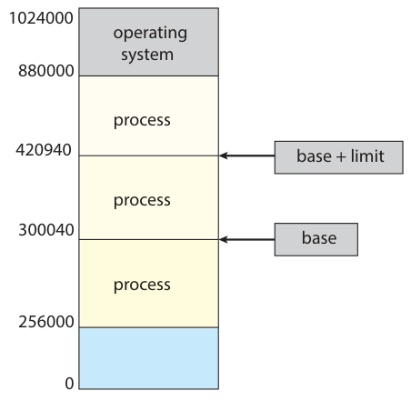
Practice练习
Q1. (Calculation) A process has base register \(=300040\) and limit register \(=120900\). (a) What is the range of legal addresses? (b) Which of the addresses 300039, 300040, 420939 and 420940 cause a trap?Q1. （计算）某进程的基址寄存器为 \(=300040\)，界限寄存器为 \(=120900\)。（a）合法地址的范围是什么？（b）在地址 300039、300040、420939 和 420940 中，哪些会引发陷阱？
Answer
(a) Legal addresses run from \(300040\) to \(300040+120900-1=420939\) inclusive. (b) 300039 is below the base and 420940 equals base + limit, so both trap; 300040 and 420939 are legal.（a）合法地址从 \(300040\) 到 \(300040+120900-1=420939\)（含两端）。（b）300039 低于基址，420940 等于基址加界限，因此两者都会引发陷阱；300040 和 420939 是合法的。
易错：最后一个合法地址是 base + limit − 1，不是 base + limit。
Q2. (Compare) Compare compile-time, load-time and execution-time binding. Which one is required if the operating system moves a process during its execution, and why?Q2. （比较）比较编译时绑定、加载时绑定和执行时绑定。若操作系统要在进程执行期间移动该进程，则需要哪一种绑定？为什么？
Answer
Compile-time binding generates absolute code and needs the final location in advance; a new start address means recompiling. Load-time binding generates relocatable code whose addresses are fixed when the program is loaded; a new start address means reloading. Execution-time binding delays the mapping to run time and needs hardware (a relocation register or page table); a new location changes only that register or table. Moving a running process requires execution-time binding, because with the other two the absolute addresses are already written into the code.编译时绑定生成绝对代码，并且需要预先知道最终位置；起始地址改变就意味着必须重新编译。加载时绑定生成可重定位代码，其地址在程序装入时确定；起始地址改变就意味着必须重新加载。执行时绑定将映射推迟到运行时进行，并需要硬件（重定位寄存器或页表）支持；新位置只改变该寄存器或页表。移动正在运行的进程需要执行时绑定，因为对于另外两种绑定，绝对地址已经写入代码中。
Contiguous Memory Allocation ★★★连续内存分配 ★★★
Goal. Place a list of requests with first fit, best fit and worst fit, name the fragmentation that results, and say why compaction needs execution-time binding.目标。 用首次适应、最佳适应和最差适应放置一组请求，指出由此产生的碎片，并说明紧缩为什么需要执行时绑定。
Step 1: relocation and limit registers第 1 步：重定位寄存器和界限寄存器
In words: check the logical address against the limit first, then add the relocation value.用文字表述：先把逻辑地址与界限比较，再加上重定位值。
In contiguous memory allocation（连续内存分配）each process occupies one contiguous section of memory. The MMU compares each logical address with the limit and then adds the relocation value. The dispatcher loads both registers at every context switch (Section 1.2).在连续内存分配中，每个进程占用一段连续的内存。MMU 把每个逻辑地址与界限比较，然后加上重定位值。分派程序在每次上下文切换时装入这两个寄存器（见 1.2 节）。

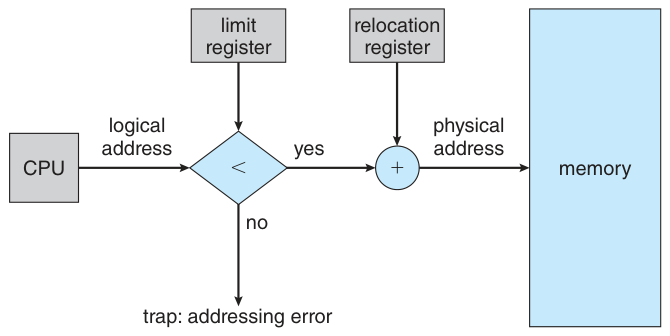
Step 2: variable partitions and the three fit rules第 2 步：可变分区与三种适应规则
In words: variable partitions = each process gets exactly the memory it needs; the free memory is a list of holes.用文字表述：可变分区 = 每个进程恰好得到它所需的内存；空闲内存是一个空洞的列表。
In the variable-partition scheme each partition holds one process. A free block is a hole（空闲块）. A request is placed in a hole that is big enough. The rest of a split hole stays in the list. A terminated process leaves a hole that merges with adjacent holes. A request that fits no hole waits. Choosing the hole is the dynamic storage-allocation problem（动态存储分配问题）. There are three strategies.在可变分区方案中，每个分区只装一个进程。空闲块称为空洞。请求被放入一个足够大的空洞。被切分后剩下的部分仍留在列表中。进程终止后留下的空洞会与相邻空洞合并。找不到足够大空洞的请求只能等待。选择哪个空洞，就是动态存储分配问题。共有三种策略。
| Strategy策略 | Rule规则 | Search cost搜索代价 | Leftover hole剩余空闲块 |
|---|---|---|---|
| First fit首次适应 | First hole that is big enough第一个足够大的空洞 | Stops at the first match: fastest遇到第一个匹配即停止：最快 | Arbitrary大小任意 |
| Best fit最佳适应 | Smallest hole that is big enough足够大的最小空闲块 | Whole list, unless sorted by size遍历整个链表，除非按大小排序 | Smallest最小 |
| Worst fit最差适应 | Largest hole最大的空闲块 | Whole list, unless sorted by size遍历整个链表，除非按大小排序 | Largest最大的空洞 |
First fit and best fit are better than worst fit in time and storage utilization. First fit is generally faster.首次适应和最佳适应在时间和存储利用率上都优于最差适应。首次适应通常更快。
How to do it by hand: 1. Write the holes in a row, in memory order. 2. Take the requests in order. 3. For each request apply the rule and note the size of the leftover. 4. Replace the hole by its leftover and keep its place in the list. 5. A request that fits no hole waits.手工做法：1. 按内存顺序把空洞依次写成一行。2. 按顺序取出请求。3. 对每个请求应用该规则，并记下剩余的大小。4. 用剩余部分替换该空洞，并保留它在列表中的位置。5. 找不到空洞的请求只能等待。
Step 3: fragmentation and compaction第 3 步：碎片与紧缩
In words: external = free memory in pieces that are too small; internal = waste inside an allocated block.用文字表述：外部碎片 = 太小而无法使用的零散空闲内存；内部碎片 = 已分配块内部的浪费。
| External fragmentation外部碎片 | Internal fragmentation内部碎片 | |
|---|---|---|
| Meaning含义 | Free memory is enough in total but split into small holes空闲内存总量足够，但被分割成小空闲块 | Unused memory inside an allocated block已分配块内未使用的内存 |
| Occurs with发生于 | Variable partitions可变分区 | Fixed-size allocation units, such as paging固定大小的分配单元，如分页 |
| Remedy补救办法 | Compaction, or non-contiguous allocation (paging)紧缩，或非连续分配（分页） | Smaller allocation units更小的分配单元 |
The 50-percent rule says: with \(N\) allocated blocks, about \(0.5N\) more blocks are lost to external fragmentation. So \(0.5N/1.5N=1/3\) of the memory may be unusable.50% 规则指出：有 \(N\) 个已分配块时，还会因外部碎片再损失大约 \(0.5N\) 个块。因此约有 \(0.5N/1.5N=1/3\) 的内存可能无法使用。
Compaction（紧缩）moves all processes to one end of memory so that all holes join into one block. It works only with execution-time binding, because the relocation register must change after the copy. It costs a lot of copying. The other cure for external fragmentation is non-contiguous allocation, that is, paging (Section 6.3).紧缩把所有进程移到内存的一端，使所有空洞合并为一个块。它只适用于执行时绑定，因为复制之后必须修改重定位寄存器。紧缩的复制开销很大。解决外部碎片的另一种办法是非连续分配，即分页（见 6.3 节）。
Practice练习
Q1. (Trace) Partitions of 100, 170, 40, 205, 300 and 185 MB (in order) receive requests of 200, 15, 185, 75, 175 and 80 MB (in order). Place the requests with first fit, best fit and worst fit. Which requests cannot be satisfied, and which algorithm manages memory best?Q1. （手工演算）分区依次为 100、170、40、205、300 和 185 MB，依次到来的请求为 200、15、185、75、175 和 80 MB。请分别用首次适应、最佳适应和最差适应放置这些请求。哪些请求无法满足？哪种算法的内存管理效果最好？
Answer
| Request请求 | First fit首次适应 | Best fit最佳适应 | Worst fit最差适应 |
|---|---|---|---|
| 200 | 205 (leaves 5)205（剩余 5） | 205 (5) | 300 (100) |
| 15 | 100 (85) | 40 (25) | 205 (190) |
| 185 | 300 (115) | 185 (0) | 190 (5) |
| 75 | 85 (10) | 100 (25) | 185 (110) |
| 175 | 185 (10) | 300 (125) | none无 |
| 80 | 170 (90) | 125 (45) | 170 (90) |
Only worst fit fails: when the 175 MB request arrives, 525 MB are free but the largest hole is 170 MB (external fragmentation). First fit and best fit place everything; best fit also keeps the largest hole intact (170 MB, against 115 MB after first fit), so it manages memory best here.只有最差适应会失败：当 175 MB 的请求到达时，空闲内存共 525 MB，但最大的空闲块只有 170 MB（外部碎片）。首次适应和最佳适应都能放置全部请求；最佳适应还保留了完整的最大空闲块（170 MB，而首次适应之后为 115 MB），因此在这里它的内存管理效果最好。
Q2. (Explain) Why can compaction not be used when addresses are bound at load time? What does it cost when it is possible?Q2. （解释）为什么地址在加载时绑定时无法使用紧缩？当紧缩可以使用时，它的代价是什么？
Answer
With load-time binding the absolute addresses are fixed in the code when the program is loaded, so moving the process would break them. With execution-time binding, moving a process only requires copying its memory and changing the relocation register. The cost is the copying: the simplest scheme moves every process toward one end of memory, which takes a long time.采用加载时绑定时，绝对地址在程序加载时就固定在代码中，因此移动进程会使这些地址失效。采用执行时绑定时，移动进程只需复制其内存并改变重定位寄存器。代价在于复制内存：最简单的方案要把每个进程都移向内存的一端，耗时很长。
Q3. (Calculation) A process runs with relocation register \(=100040\) and limit register \(=74600\). (a) What is the physical address of logical address 74599? (b) What happens for logical address 74600? (c) The system moves the process to start at 250000. What changes?Q3. （计算）某进程运行时，重定位寄存器为 \(=100040\)，界限寄存器为 \(=74600\)。（a）逻辑地址 74599 对应的物理地址是多少？（b）逻辑地址 74600 会发生什么？（c）系统将该进程移动到从 250000 开始的位置，哪些内容会改变？
Answer
(a) \(100040+74599=174639\), the last byte of the block. (b) \(74600\ge\text{limit}\), so the hardware traps (addressing error). (c) After the memory contents are copied, only the relocation register changes to 250000; the logical addresses used by the program stay the same. This works only with execution-time binding.（a）\(100040+74599=174639\)，即该块的最后一个字节。（b）\(74600\ge\text{limit}\)，因此硬件会引发陷阱（寻址错误）。（c）内存内容复制完成后，只有重定位寄存器改为 250000；程序使用的逻辑地址保持不变。这只有在执行时绑定下才能实现。
Paging ★★★分页 ★★★
Goal. Split a logical address into page number and offset, in decimal and in binary, and translate it with a page table. Compute the number of pages, the number of entries and the size of the page table.目标。 把逻辑地址拆分为页号和页内偏移，分别用十进制和二进制表示，并用页表完成地址转换。计算页数、表项数和页表大小。
Step 1: split the address第 1 步：拆分地址
In words: the high bits of a logical address are the page number, the low bits are the offset inside the page.用文字表述：逻辑地址的高位是页号，低位是页内偏移。
The page size equals the frame size and is always a power of two, \(2^n\) bytes. For a logical address of \(m\) bits, the high \(m-n\) bits are the page number（页号）\(p\) and the low \(n\) bits are the page offset（页内偏移）\(d\). The split needs no division, only a cut of the bit string.页大小等于帧大小，并且总是 2 的幂，比如 \(2^n\) 字节。对于 \(m\) 位的逻辑地址，高 \(m-n\) 位是页号 \(p\)，低 \(n\) 位是页内偏移 \(d\)。这种拆分不需要除法，只需切开位串。

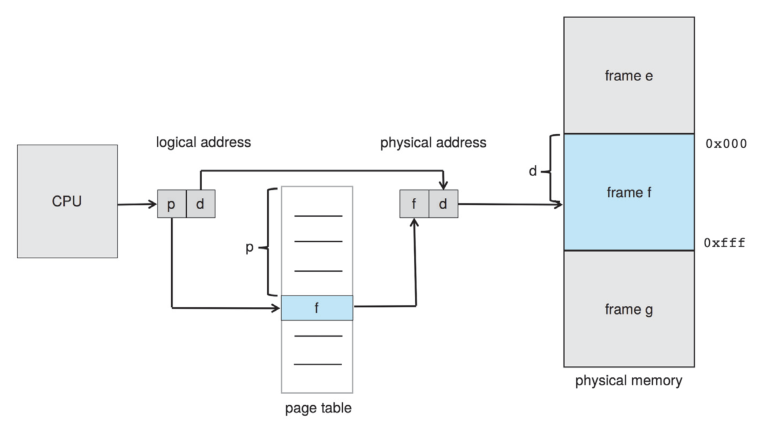
How to do it by hand: 1. Find \(n\) from the page size. 2. Divide the address by \(2^n\). The quotient is \(p\), the remainder is \(d\). 3. Read \(f\) in entry \(p\). 4. Compute \(f\cdot 2^n+d\). 5. In binary: cut the low \(n\) bits as \(d\); the bits above are \(p\).手工做法：1. 由页大小求出 \(n\)。2. 用 \(2^n\) 去除该地址。商是 \(p\)，余数是 \(d\)。3. 在表项 \(p\) 中读出 \(f\)。4. 计算 \(f\cdot 2^n+d\)。5. 用二进制：把低 \(n\) 位切出作为 \(d\)；其上的位是 \(p\)。
Step 2: how many pages, entries and bytes?第 2 步：需要多少页、表项和字节？
In words: one entry per page, so the table grows with the address width and shrinks with the page size.用文字表述：每页一个表项，因此页表随地址位数增加而变大，随页大小增加而变小。
Step 3: internal fragmentation第 3 步：内部碎片
Paging has no external fragmentation, because any free frame serves any page. The last frame of a process is usually only partly used. This is internal fragmentation. Example: 2,048-byte pages and a process of 72,766 bytes need 36 frames, the last one with 1,086 bytes used. The waste is 2048 − 1086 = 962 bytes. The worst case is almost a whole page, and on average half a page per process.分页没有外部碎片，因为任何空闲帧都能放任何页。进程的最后一个帧通常只用了一部分，这就是内部碎片。例：页大小为 2,048 字节，进程大小为 72,766 字节，需要 36 个帧，最后一帧只用了 1,086 字节。浪费为 2048 − 1086 = 962 字节。最坏情况下浪费接近一整页，平均每个进程浪费半页。
Practice练习
Q1. (Calculation) With 1-KB pages, give the page number and offset of the logical addresses (a) 3085, (b) 42095, (c) 215201, (d) 650000, (e) 2000001.Q1. （计算）页大小为 1 KB，求下列逻辑地址的页号和页内偏移：（a）3085，（b）42095，（c）215201，（d）650000，（e）2000001。
Answer
Use \(p=\lfloor a/1024\rfloor\) and \(d=a\bmod 1024\).使用 \(p=\lfloor a/1024\rfloor\) 和 \(d=a\bmod 1024\)。
| Address地址 | Page number页号 | Offset偏移量 |
|---|---|---|
| 3085 | 3 | 13 |
| 42095 | 41 | 111 |
| 215201 | 210 | 161 |
| 650000 | 634 | 784 |
| 2000001 | 1953 | 129 |
Check, for example: \(41\cdot 1024+111=42095\).检验示例：\(41\cdot 1024+111=42095\)。
Q2. (Calculation) A logical address space has 64 pages of 1,024 words each and is mapped onto a physical memory of 32 frames. (a) How many bits does a logical address have? (b) A physical address? (c) A process of 40,000 words runs there: how many pages does it need, and how many words are lost to internal fragmentation?Q2. （计算）某逻辑地址空间包含 64 个页，每页 1,024 个字，映射到一个包含 32 个帧的物理内存中。（a）逻辑地址有多少位？（b）物理地址有多少位？（c）一个 40,000 字的进程在该系统中运行：它需要多少页？因内部碎片而损失多少个字？
Answer
(a) \(64\cdot 1024=2^{16}\) words, so 16 bits (6 for the page number, 10 for the offset). (b) \(32\cdot 1024=2^{15}\) words, so 15 bits (5 for the frame number, 10 for the offset). (c) \(\lceil 40000/1024\rceil=40\) pages (39 full pages plus 64 words), i.e. 40,960 words allocated, so \(1024-64=960\) words are lost.（a）\(64\cdot 1024=2^{16}\) 个字，因此需要 16 位（页号 6 位，偏移量 10 位）。（b）\(32\cdot 1024=2^{15}\) 个字，因此需要 15 位（帧号 5 位，偏移量 10 位）。（c）\(\lceil 40000/1024\rceil=40\) 个页（39 个满页加 64 个字），即分配了 40,960 个字，因此损失了 \(1024-64=960\) 个字。
TLB, Protection and Sharing ★★★TLB、保护与共享 ★★★
Goal. Compute the effective access time with a TLB, explain what ASIDs are for, and explain protection bits, the valid-invalid bit and shared pages.目标。 用 TLB 计算有效访问时间，说明 ASID 的用途，并解释保护位、有效-无效位和共享页。
Step 1: the page table in memory and the TLB第 1 步：内存中的页表与 TLB
In words: the TLB keeps recent page-table entries close to the CPU, so that most accesses need no extra trip to memory.用文字表述：TLB 把最近用过的页表项放在靠近 CPU 的地方，使大多数访问不需要再多跑一趟内存。
The page table is large, so it stays in main memory. A page-table base register (PTBR)（页表基址寄存器）points to it. Every data access then needs two memory accesses: one for the entry and one for the data. The translation look-aside buffer (TLB)（快表）is a small, fast hardware cache of page-table entries, typically 32 to 1,024 entries.页表很大，因此它留在主存中。页表基址寄存器（PTBR）指向它。于是每次数据访问需要两次内存访问：一次取表项，一次取数据。快表（TLB）是页表项的一个小型快速硬件缓存，通常有 32 到 1,024 项。
- The MMU looks for the page number \(p\) in the TLB.MMU 在 TLB 中查找页号 \(p\)。
- On a TLB hit, the frame number \(f\) is available at once.TLB 命中时，帧号 \(f\) 立即可用。
- On a TLB miss, the page table in memory is read, and the pair \((p,f)\) is put into the TLB.TLB 未命中时，读取内存中的页表，并把这一对 \((p,f)\) 放入 TLB。
- The data is read at \(f\cdot 2^n+d\).数据在 \(f\cdot 2^n+d\) 处读取。

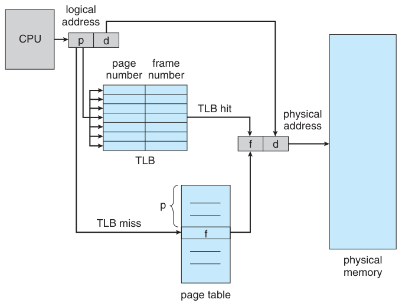
Step 2: effective access time第 2 步：有效访问时间
In words: effective access time = hit ratio × time on a hit + miss ratio × time on a miss.用文字表述：有效访问时间 = 命中率 × 命中时间 + 未命中率 × 未命中时间。
Step 3: ASIDs第 3 步：ASID
Some TLB entries carry an address-space identifier (ASID)（地址空间标识符）that names the owning process. A lookup succeeds only if the ASID equals that of the running process. So the TLB can hold entries of several processes and is not flushed at a context switch. Without ASIDs the TLB must be flushed at every context switch. Otherwise the new process would use stale entries that map its page numbers to wrong frames.有些 TLB 项带有地址空间标识符（ASID），用来说明该项属于哪个进程。只有当 ASID 与正在运行的进程相同时，查找才会成功。因此 TLB 可以同时保存多个进程的表项，并且在上下文切换时不必清空。没有 ASID 时，TLB 必须在每次上下文切换时清空，否则新进程会用到过期的表项，把它的页号映射到错误的帧。
Step 4: protection and sharing第 4 步：保护与共享
- Protection bits in each entry mark a page read-write, read-only or executable. A write to a read-only page traps.每个表项中的保护位标明该页是可读写、只读还是可执行。对只读页的写操作会陷入。
- The valid–invalid bit（有效–无效位）in each entry says whether the page belongs to the logical address space of the process. A reference to an invalid page traps. A page-table length register (PTLR)（页表长度寄存器）holds the table size and traps on a page number beyond it.每个表项中的有效-无效位表明该页是否属于进程的逻辑地址空间。访问无效页会陷入。页表长度寄存器（PTLR）保存页表的大小，页号超出它时会陷入。
- The last page is valid as a whole. In a 14-bit space with 2-KB pages, a program that ends at address 10468 has valid pages 0 to 5. Addresses up to 12287 do not trap, because the last valid page ends there. Only 12288 and above trap.最后一页整页有效。在 14 位地址空间、页大小为 2 KB 的情况下，若程序结束于地址 10468，有效页为第 0 到第 5 页。直到地址 12287 都不会陷入，因为最后一个有效页在那里结束。只有 12288 及以上才会陷入。
- Shared pages: the page tables of several processes map the same frames. The shared code must be reentrant code（可重入代码）, that is, it never changes during execution. It must also be read-only. Example: a 2-MB library used by 40 processes needs 2 MB with sharing against 40 × 2 = 80 MB with private copies.共享页：多个进程的页表映射到相同的帧。共享的代码必须是可重入代码，即执行过程中从不改变自身。它还必须是只读的。例：一个 2 MB 的库被 40 个进程使用，共享时需要 2 MB，而每个进程各有一份私有副本则需要 40 × 2 = 80 MB。
Practice练习
Q1. (Calculation) A paging system keeps its page table in memory. (a) A memory reference takes 50 ns; how long does a paged reference take? (b) A TLB is added, 75% of the page-table references hit in it, and a TLB lookup takes 2 ns. What is the effective access time? (c) How does (b) change if the page table has two levels?Q1. （计算）某分页系统将其页表保存在内存中。（a）一次内存访问需要 50 ns，那么一次分页访问需要多长时间？（b）增加一个 TLB，75% 的页表访问在其中命中，且 TLB 查找需要 2 ns。有效访问时间是多少？（c）若页表为两级，（b）的结果会如何变化？
Answer
(a) Two accesses (table entry, then data): \(2\cdot 50=100\) ns. (b) \(\text{EAT}=0.75(2+50)+0.25(2+50+50)=39+25.5=64.5\) ns. (c) A miss now reads two table entries before the data: \(0.75\cdot 52+0.25\cdot(2+3\cdot 50)=39+38=77\) ns.（a）两次访问（页表项，然后数据）：\(2\cdot 50=100\) ns。（b）\(\text{EAT}=0.75(2+50)+0.25(2+50+50)=39+25.5=64.5\) ns。（c）未命中时，现在要先读取两个页表项，然后才访问数据：\(0.75\cdot 52+0.25\cdot(2+3\cdot 50)=39+38=77\) ns。
Q2. (Explain) Why are ASIDs used in TLBs? What must the operating system do at a context switch if the TLB has none?Q2. （解释）为什么 TLB 中要使用 ASID？若 TLB 中没有 ASID，操作系统在上下文切换时必须做什么？
Answer
An ASID identifies the process that owns a TLB entry. The TLB uses an entry only if its ASID matches the running process, so a process cannot use another's translations (protection), and entries of several processes can stay in the TLB across context switches. Without ASIDs the operating system must flush the whole TLB at every context switch, because stale entries would map valid virtual page numbers to wrong frames; the new process then starts with an empty TLB and suffers many misses.ASID 标识拥有某个 TLB 表项的进程。只有当表项的 ASID 与正在运行的进程相匹配时，TLB 才会使用该表项，因此一个进程无法使用另一进程的地址转换（起保护作用），而且多个进程的表项可以跨越上下文切换保留在 TLB 中。若没有 ASID，操作系统必须在每次上下文切换时刷新整个 TLB，因为过时的表项会把有效的虚拟页号映射到错误的帧上；此后，新进程从一个空的 TLB 开始运行，并会遭遇大量未命中。
Structure of the Page Table ★★★页表的结构 ★★★
Goal. Compute the bit split and the size of a two-level page table, explain why it saves memory, and explain hashed and inverted page tables.目标。 计算两级页表的位划分和大小，解释它为什么能节省内存，并解释哈希页表和反向页表。
Step 1: why one flat table is too big第 1 步：为什么单级大表太大
A single-level table has \(2^{m-n}\) entries for every process, however little memory the process uses. With 32-bit addresses, 4-KB pages and 4-byte entries it is 4 MB per process (Section 6.3). With a 64-bit address space it would have up to \(2^{52}\) entries.单级页表对每个进程都有 \(2^{m-n}\) 个表项，不管进程用了多少内存。若地址为 32 位、页为 4 KB、表项为 4 字节，则每个进程需要 4 MB（见 6.3 节）。在 64 位地址空间中，它最多会有 \(2^{52}\) 个表项。
Step 2: two-level paging第 2 步：两级分页
In words: a two-level table = the page table is itself paged, and only the pieces that are used exist.用文字表述：两级页表 = 页表本身也被分页，并且只存在被用到的那些部分。
In hierarchical paging（分级分页）the page number is split into an outer index \(p_1\) and an inner index \(p_2\). Each table occupies exactly one page. A 4-KB page holds 4096 ÷ 4 = 1024 \(=2^{10}\) entries, so each index has 10 bits. The 32-bit address is split into 10 bits for \(p_1\), 10 bits for \(p_2\) and 12 bits for \(d\).在分级分页中，页号被拆分为外层索引 \(p_1\) 和内层索引 \(p_2\)。每张表恰好占一页。一个 4 KB 的页可容纳 4096 ÷ 4 = 1024 个 \(=2^{10}\) 表项，因此每个索引占 10 位。32 位地址被拆分为：10 位给 \(p_1\)，10 位给 \(p_2\)，12 位给 \(d\)。
How to do it by hand: 1. Offset bits \(n\) from the page size. 2. Entries per table = page size ÷ entry size. 3. Bits per index = \(\log_2\) of the entries per table. 4. Page-number bits \(m-n\) are cut into indexes of that size from the right; the first index gets the rest. 5. Translate: \(p_1\) selects the inner table, \(p_2\) its entry, which holds \(f\).手工做法：1. 由页大小求出偏移位 \(n\)。2. 每张表的表项数 = 页大小 ÷ 表项大小。3. 每个索引的位数是每张表表项数的 \(\log_2\)。4. 页号位 \(m-n\) 从右往左切成该大小的索引，最左边的索引取剩下的全部。5. 转换：\(p_1\) 选出内层表，\(p_2\) 选出其中的表项，该表项保存 \(f\)。

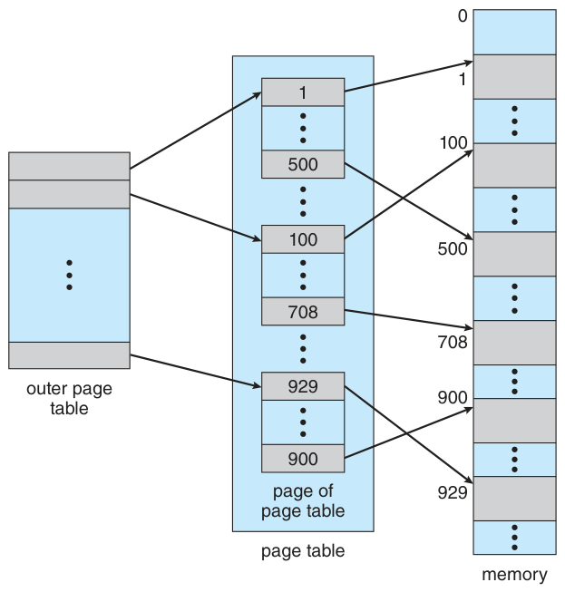
A TLB miss now costs one table access per level. A 64-bit space with 4-KB pages and 8-byte entries needs \(\lceil 52/9\rceil=6\) levels, so hierarchical tables are unsuitable there. x86-64 uses a 48-bit virtual address with 9 bits per level: \((48-12)/9=4\) levels.现在 TLB 未命中时，每一级各需一次表访问。在 64 位地址空间中，若页为 4 KB、表项为 8 字节，则需要 \(\lceil 52/9\rceil=6\) 级，因此分级页表在那里不适用。x86-64 使用 48 位虚拟地址，每级 9 位：共 \((48-12)/9=4\) 级。
Step 3: hashed page tables第 3 步：哈希页表
In words: a hashed page table = hash the virtual page number to find a chain, then walk the chain.用文字表述：哈希页表 = 先对虚拟页号做哈希找到一条链，再沿链查找。
A hashed page table（哈希页表）serves address spaces above 32 bits. The hash value is the virtual page number. Each slot heads a linked list of elements that hash to it (chaining). An element has three fields: 1. the virtual page number, 2. the mapped frame number, 3. a pointer to the next element. The virtual page number is compared with field 1 of each element of the chain. On a match, field 2 gives the frame. Clustered page tables（聚簇页表）let each entry refer to several pages, for example 16. They suit sparse address spaces.哈希页表用于超过 32 位的地址空间。哈希值就是虚拟页号。每个槽位指向一个链表，链表中的元素都哈希到该槽位（链接法）。每个元素有三个字段：1. 虚拟页号，2. 所映射的帧号，3. 指向下一个元素的指针。把虚拟页号与链中每个元素的字段 1 比较，匹配时字段 2 给出帧号。聚簇页表让每个表项指向多个页，例如 16 页，它适用于稀疏的地址空间。

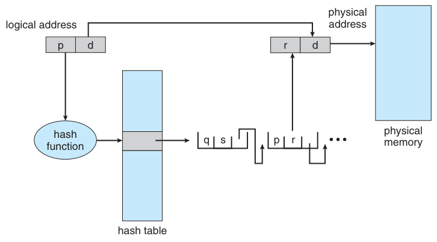
Step 4: inverted page tables第 4 步：反向页表
In words: an inverted page table = one entry per frame of physical memory, shared by all processes.用文字表述：反向页表 = 物理内存的每个帧对应一项，由所有进程共享。
An inverted page table（反向页表）has one entry per frame. An entry holds the virtual page number stored in that frame and the identifier of the owning process. There is one table in the system, so its size depends on physical memory, not on the number of processes. A virtual address is \(\langle pid,p,d\rangle\). The table is searched for the pair \(\langle pid,p\rangle\). If it is found in entry \(i\), then \(PA=i\cdot 2^n+d\). If not, the access is illegal.反向页表为每个帧设一项。表项保存存放在该帧中的虚拟页号，以及所属进程的标识符。整个系统只有一张表，因此它的大小取决于物理内存，而不取决于进程数。虚拟地址为 \(\langle pid,p,d\rangle\)。在表中查找 \(\langle pid,p\rangle\) 这一对。若在表项 \(i\) 中找到，则 \(PA=i\cdot 2^n+d\)。若没有找到，该访问非法。

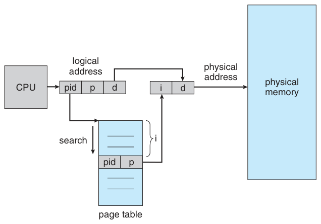
Searching the whole table is too slow, so a hash table keyed on \(\langle pid,p\rangle\) is used. A reference then needs at least two memory reads (hash table, inverted table) plus the data access. A frame has only one mapping at a time, so shared memory is hard: a reference by the other process causes a page fault that replaces the mapping.搜索整张表太慢，因此使用以 \(\langle pid,p\rangle\) 为键的哈希表。这样，一次引用至少需要两次内存读取（哈希表、反向页表），再加上数据访问。一个帧同一时间只有一个映射，所以共享内存很困难：另一个进程的引用会引起缺页，并替换掉原来的映射。
Step 5: comparison第 5 步：比较
| Structure结构 | Size depends on大小取决于 | Memory accesses on a TLB missTLB 未命中时的内存访问 | Sharing pages页共享 | Typical use典型用途 |
|---|---|---|---|---|
| Single-level单级 | Virtual address space: \(2^{m-n}\) entries per process虚拟地址空间：每进程 \(2^{m-n}\) 项 | 1 + data1 + 数据 | Easy容易 | Small address spaces小地址空间 |
| Hierarchical, \(L\) levels分层，\(L\) 级 | Mapped regions plus the outer table已映射区域加外层页表 | \(L\) + data\(L\) + 数据 | Easy容易 | 32-bit systems, x86-64 (4 levels)32 位系统、x86-64（4 级） |
| Hashed哈希 | Number of mapped pages已映射页的数量 | Hash, chain walk + data哈希，沿链表查找 + 数据 | Easy容易 | Address spaces above 32 bits, sparse spaces超过 32 位的地址空间，稀疏空间 |
| Inverted反置 | Physical memory: one entry per frame物理内存：每帧一项 | \(\ge 2\) + data\(\ge 2\) + 数据 | One mapping per frame每帧一个映射 | 64-bit UltraSPARC, PowerPC64 位 UltraSPARC、PowerPC |
Practice练习
Q1. (Calculation) A system has 32-bit logical addresses, 8-KB pages, 4-byte page-table entries and 1 GB of physical memory. (a) How many entries and how many bytes does a conventional single-level page table have? (b) How many entries does an inverted page table have? (c) Design a two-level table in which each table occupies exactly one page.Q1. （计算）某系统的逻辑地址为 32 位，页大小为 8 KB，页表项为 4 字节，物理内存为 1 GB。（a）常规单级页表有多少项？共占多少字节？（b）反置页表有多少项？（c）设计一个两级页表，使每张页表恰好占用一页。
Answer
The offset has 13 bits. (a) \(2^{32-13}=2^{19}=524{,}288\) entries, i.e. \(2^{19}\cdot 4=2\) MB. (b) \(2^{30}/2^{13}=2^{17}=131{,}072\) entries (one per frame). (c) A page holds \(8192/4=2048=2^{11}\) entries, so a table consumes 11 bits. The page number has 19 bits, so \(\lceil 19/11\rceil=2\) levels: \(p_1\) has 8 bits (outer table of 256 entries), \(p_2\) has 11 bits, \(d\) has 13 bits.偏移量为 13 位。（a）\(2^{32-13}=2^{19}=524{,}288\) 项，即 \(2^{19}\cdot 4=2\) MB。（b）\(2^{30}/2^{13}=2^{17}=131{,}072\) 项（每帧一项）。（c）一页可容纳 \(8192/4=2048=2^{11}\) 项，因此每张表占用 11 位。页号为 19 位，因此需要 \(\lceil 19/11\rceil=2\) 级：\(p_1\) 占 8 位（外层页表有 256 项），\(p_2\) 占 11 位，\(d\) 占 13 位。
Q2. (Calculation) An embedded system has a 24-bit virtual address, a 20-bit physical address and 4-KB pages. How many entries do (a) a conventional single-level page table and (b) an inverted page table have? What is the maximum physical memory?Q2. （计算）某嵌入式系统具有 24 位虚拟地址、20 位物理地址和 4 KB 页。（a）常规单级页表和（b）反置页表分别有多少项？最大物理内存是多少？
Answer
The offset has 12 bits. (a) \(2^{24-12}=2^{12}=4096\) entries. (b) \(2^{20-12}=2^{8}=256\) entries, one per frame. The maximum physical memory is \(2^{20}\) bytes \(=1\) MB.偏移量为 12 位。（a）\(2^{24-12}=2^{12}=4096\) 项。（b）\(2^{20-12}=2^{8}=256\) 项，每帧一项。最大物理内存为 \(2^{20}\) 字节（\(=1\) MB）。
Q3. (True/false) Justify each answer. (a) An inverted page table needs one entry for every virtual page of every process. (b) A hashed page table resolves collisions by chaining. (c) With an inverted page table two processes can map the same shared frame at the same time. (d) With a four-level page table a TLB miss costs four extra memory accesses.Q3. （判断）请对每个答案给出理由。（a）反置页表需要为每个进程的每个虚拟页各设一个表项。（b）哈希页表通过链接法解决冲突。（c）使用反置页表时，两个进程可以同时映射同一个共享帧。（d）使用四级页表时，一次 TLB 未命中需要额外的四次内存访问。
Answer
(a) False: it has one entry per physical frame, so its size depends on physical memory. (b) True: each slot heads a linked list of (virtual page number, frame, next) elements. (c) False: an entry stores one process-and-page pair, so a frame has one mapping at a time; a reference from the other process faults and replaces the mapping. (d) True: four table accesses, plus the access to the data.（a）错误：它为每个物理帧设一个表项，因此其大小取决于物理内存。（b）正确：每个槽位都是一个链表的表头，链表元素为（虚拟页号，帧，下一元素）。（c）错误：每个表项只存储一个进程与页的配对，因此一个帧在同一时刻只有一个映射；另一进程的访问会引发缺页，并替换该映射。（d）正确：需要四次页表访问，外加一次数据访问。
Swapping and Architecture Examples ★交换与体系结构实例 ★
Swapping（交换）moves a process, or part of it, temporarily to a backing store（后备存储）and back. Standard swapping moves whole processes and is slow. Swapping with paging moves single pages and is used by Linux and Windows. Mobile systems do not swap, because flash storage is small and wears out. IA-32 uses segmentation followed by two-level paging (10 / 10 / 12 bits). x86-64 uses four levels of 9 bits each for a 48-bit virtual address. ARMv8 also uses up to four levels with a 4-KB granule.交换把一个进程或其一部分临时移到后备存储上，之后再换回。标准交换移动整个进程，速度很慢。按页交换只移动单个页，Linux 和 Windows 使用它。移动系统不做交换，因为闪存容量小且会磨损。IA-32 先使用分段，再使用两级分页（10 / 10 / 12 位）。x86-64 对 48 位虚拟地址使用四级，每级 9 位。ARMv8 在 4 KB 粒度下也最多使用四级。
Terms to recognise ★需要认识的术语 ★
| Term术语 | What to know要知道什么 |
|---|---|
| Dynamic loading（动态加载） | A routine is loaded at its first call. No operating-system support is needed例程在第一次调用时装入。不需要操作系统支持 |
| Dynamic linking（动态链接） | Linking is postponed to run time. One shared library copy serves all processes. Needs operating-system support链接推迟到运行时。所有进程共用一份共享库副本。需要操作系统支持 |
| Frame table（帧表）帧表 | System-wide table with one entry per frame: free or allocated, and to which page of which process系统级表，每个帧一项：记录该帧是空闲还是已分配，以及它属于哪个进程的哪一页 |
| 50-percent rule50% 规则 | With \(N\) allocated blocks about \(0.5N\) more are lost, so one third of memory is unusable有 \(N\) 个已分配块时，还会再损失约 \(0.5N\) 个，因此三分之一的内存不可用 |
| Page size页大小 | Always a power of two, typically 4 KB to 1 GB. Large pages mean fewer entries but more internal waste总是 2 的幂，通常从 4 KB 到 1 GB。大页意味着表项少，但内部浪费多 |
| Optimal page size最优页大小 | Table overhead falls and internal waste grows with page size; the best size balances the two页大小增大时，表的开销下降，而内部浪费增加；最佳大小在两者之间取得平衡 |
| Wired TLB entries固定的 TLB 项 | Entries, such as key kernel code, that are never replaced关键内核代码等表项，永远不被替换 |
| Segmentation（分段） | Logical address is (segment, offset). Segment table holds base and limit. Suffers from external fragmentation逻辑地址为（段，偏移）。段表保存基址和界限。存在外部碎片问题 |
| PAE | IA-32 page address extension: three levels, 36-bit physical addresses (64 GB)IA-32 页地址扩展：三级，36 位物理地址（64 GB） |
| Huge pages大页 | x86-64 supports 4 KB, 2 MB and 1 GB pagesx86-64 支持 4 KB、2 MB 和 1 GB 的页 |
Exam-style questions考试题型练习
Q1. (Paging and multi-level page tables, 20 marks) A system has 32-bit logical addresses, 4-KB pages, 4-byte page-table entries and 1 GB of physical memory. (a) Give the number of bits of the page number, the page offset and the frame number, and the size of a single-level page table. (4 marks) (b) A two-level page table is used in which every table occupies exactly one page. Give the address format and the number of entries per table. (5 marks) (c) A process has 8 MB of code and data at the bottom of the address space and a 1-MB stack at the very top (ending at 0xFFFFFFFF). How much memory do its page tables occupy with the single-level and with the two-level scheme? (6 marks) (d) Translate the logical address 0x00403A7C with the two-level scheme, given that entry 1 of the outer table points to an inner table whose entry 3 holds frame 0x05B. How many memory accesses are needed if the TLB misses? (5 marks)Q1. （分页与多级页表，20 分）某系统的逻辑地址为 32 位，页大小为 4 KB，页表项为 4 字节，物理内存为 1 GB。（a）给出页号、页内偏移和帧号的位数，以及单级页表的大小。（4 分）（b）使用两级页表，且每张页表恰好占用一页。给出地址格式以及每张页表的项数。（5 分）（c）某进程在地址空间底部有 8 MB 的代码和数据，在地址空间最顶部有 1 MB 的栈（止于 0xFFFFFFFF）。分别采用单级方案和两级方案时，其页表占用多少内存？（6 分）（d）假设外层页表的第 1 项指向一个内层页表，该内层页表的第 3 项保存帧 0x05B，请用两级方案转换逻辑地址 0x00403A7C。若 TLB 未命中，需要多少次内存访问？（5 分）
Answer
(a) The page size is \(2^{12}\) bytes, so the offset has 12 bits and the page number has \(32-12=20\) bits. The physical memory is \(2^{30}\) bytes, so the frame number has \(30-12=18\) bits. The single-level table has \(2^{20}\) entries, so its size is \(2^{20}\cdot 4\) bytes \(=4\) MB.（a）页大小为 \(2^{12}\) 字节，因此偏移量为 12 位，页号为 \(32-12=20\) 位。物理内存为 \(2^{30}\) 字节，因此帧号为 \(30-12=18\) 位。单级页表有 \(2^{20}\) 项，因此其大小为 \(2^{20}\cdot 4\) 字节（\(=4\) MB）。
(b) A page holds \(4096/4=1024=2^{10}\) entries, so each table has 1024 entries and consumes 10 bits. The format is \(p_1\) (10 bits) | \(p_2\) (10 bits) | \(d\) (12 bits).（b）一页可容纳 \(4096/4=1024=2^{10}\) 项，因此每张表有 1024 项，占用 10 位。格式为 \(p_1\)（10 位）| \(p_2\)（10 位）| \(d\)（12 位）。
(c) Single level: 4 MB, independent of use. Two levels: 8 MB \(=2048\) pages fill 2 inner tables; the 1-MB stack \(=256\) pages needs 1 inner table at the top of the space; plus 1 outer table. That is 4 tables of 4 KB \(=16\) KB.（c）单级：4 MB，与使用情况无关。两级：8 MB \(=2048\) 页填满 2 个内层页表；1 MB 栈的 \(=256\) 页需要地址空间顶部的 1 个内层页表；再加 1 个外层页表。即 4 张 4 KB 的表，合计 \(=16\) KB。
(d) 0x00403A7C in binary is 0000000001 0000000011 101001111100. The top 10 bits give \(p_1=1\), the next 10 bits \(p_2=3\), the low 12 bits \(d=\texttt{0xA7C}\). Outer entry 1 locates the inner table, inner entry 3 holds frame 0x05B, so \(PA=\texttt{0x05B}\cdot\texttt{0x1000}+\texttt{0xA7C}=\texttt{0x5BA7C}\) (375,420). On a TLB miss three memory accesses are needed: outer entry, inner entry, data.（d）0x00403A7C 的二进制为 0000000001 0000000011 101001111100。高 10 位给出 \(p_1=1\)，接下来的 10 位给出 \(p_2=3\)，低 12 位给出 \(d=\texttt{0xA7C}\)。外层表项 1 定位内层页表，内层表项 3 保存帧 0x05B，因此 \(PA=\texttt{0x05B}\cdot\texttt{0x1000}+\texttt{0xA7C}=\texttt{0x5BA7C}\)（375,420）。若 TLB 未命中，需要三次内存访问：外层表项、内层表项和数据。
思路：先算位数，再按“每张表正好一页”划分；稀疏地址空间只需要真正用到的内层页表。
Q2. (Effective access time, 15 marks) A memory access takes 100 ns, a TLB lookup takes 10 ns and the hit ratio is 95%. (a) Compute the effective access time with a single-level page table. (4 marks) (b) Compute it with a two-level page table. (4 marks) (c) What hit ratio is needed for the single-level EAT to be at most 120 ns? (4 marks) (d) Give the slowdown of (a) and (b) relative to an unpaged access of 100 ns, and say why a hit ratio like 95% is realistic. (3 marks)Q2. （有效访问时间，15 分）一次内存访问需要 100 ns，一次 TLB 查找需要 10 ns，命中率为 95%。（a）计算采用单级页表时的有效访问时间。（4 分）（b）计算采用两级页表时的有效访问时间。（4 分）（c）要使单级方案的有效访问时间不超过 120 ns，需要多高的命中率？（4 分）（d）给出（a）和（b）相对于 100 ns 无分页访问的减速倍数，并说明为什么像 95% 这样的命中率是现实的。（3 分）
Answer
(a) A hit costs \(10+100=110\) ns, a miss \(10+2\cdot 100=210\) ns: \(\text{EAT}=0.95\cdot 110+0.05\cdot 210=104.5+10.5=115\) ns.（a）命中为 \(10+100=110\) ns，未命中为 \(10+2\cdot 100=210\) ns：\(\text{EAT}=0.95\cdot 110+0.05\cdot 210=104.5+10.5=115\) ns。
(b) A miss costs \(10+3\cdot 100=310\) ns: \(\text{EAT}=104.5+0.05\cdot 310=104.5+15.5=120\) ns.（b）未命中的代价为 \(10+3\cdot 100=310\) ns：\(\text{EAT}=104.5+0.05\cdot 310=104.5+15.5=120\) ns。
(c) \(\text{EAT}=10+100+(1-\alpha)\cdot 100\le 120\) gives \(1-\alpha\le 0.1\), so \(\alpha\ge 0.90\).（c）\(\text{EAT}=10+100+(1-\alpha)\cdot 100\le 120\) 得到 \(1-\alpha\le 0.1\)，因此 \(\alpha\ge 0.90\)。
(d) The slowdowns are 15% for (a) and 20% for (b). Hit ratios of this size are realistic because programs reuse a small set of pages repeatedly (locality of reference), so a small TLB holds most of the translations in use.（d）（a）与（b）的减速分别为 15% 和 20%。这一量级的命中率是现实的：程序会反复使用一小组页（引用局部性），因此一个小型 TLB 即可保存正在使用的大部分地址转换。
思路：每次未命中多访问 k 次内存；先写出命中和未命中两种代价，再按概率加权。
Q3. (Contiguous allocation and fragmentation, 15 marks) Five partitions of 100, 500, 200, 300 and 600 KB (in order) receive processes of 212, 417, 112 and 426 KB (in order). (a) Place the processes with first fit, best fit and worst fit. (6 marks) (b) Which algorithm uses memory most efficiently here? (2 marks) (c) Show that external fragmentation occurs under worst fit and say what would remove it. (4 marks) (d) Compare contiguous allocation and paging with respect to external fragmentation, internal fragmentation and code sharing. (3 marks)Q3. （连续分配与碎片，15 分）五个分区依次为 100、500、200、300 和 600 KB，依次到来的进程大小为 212、417、112 和 426 KB。（a）分别用首次适应、最佳适应和最差适应放置这些进程。（6 分）（b）此处哪种算法最有效地利用内存？（2 分）（c）说明最差适应下会出现外部碎片，并指出什么可以消除它。（4 分）（d）就外部碎片、内部碎片和代码共享而言，比较连续分配与分页。（3 分）
Answer
(a) First fit: 212 → 500 (leaves 288); 417 → 600 (183); 112 → 288 (176); 426 finds no hole (the largest is 300) and waits. Best fit: 212 → 300 (88); 417 → 500 (83); 112 → 200 (88); 426 → 600 (174). Worst fit: 212 → 600 (388); 417 → 500 (83); 112 → 388 (276); 426 waits.（a）首次适应：212 → 500（剩余 288）；417 → 600（剩余 183）；112 → 288（剩余 176）；426 找不到足够大的空闲块（最大的为 300），只能等待。最佳适应：212 → 300（剩余 88）；417 → 500（剩余 83）；112 → 200（剩余 88）；426 → 600（剩余 174）。最差适应：212 → 600（剩余 388）；417 → 500（剩余 83）；112 → 388（剩余 276）；426 等待。
(b) Best fit: it is the only algorithm that places all four processes.（b）最佳适应：它是唯一能放置全部四个进程的算法。
(c) Under worst fit the holes are 100, 83, 200, 300 and 276 KB, in total \(959\) KB \(\ge 426\) KB, but no single hole is large enough: the free memory is not contiguous, which is external fragmentation. Compaction would merge the holes into one 959-KB block; it requires execution-time binding, since every moved process needs a new relocation value.（c）在最差适应下，空闲块为 100、83、200、300 和 276 KB，合计 \(959\) KB \(\ge 426\) KB，但没有任何一个空闲块足够大：空闲内存并不连续，这就是外部碎片。紧缩可以把这些空闲块合并为一个 959 KB 的块；但紧缩需要执行时绑定，因为每个被移动的进程都需要新的重定位值。
(d) Contiguous allocation: external fragmentation yes, internal fragmentation small, code sharing hard because each process owns one private block. Paging: no external fragmentation, internal fragmentation of about half a page per process, code sharing easy because page tables can map the same frames.（d）连续分配：有外部碎片，内部碎片小，代码共享困难，因为每个进程独占一个私有块。分页：没有外部碎片，每个进程的内部碎片约为半页，代码共享容易，因为页表可以映射到相同的帧。
易错：被分割的洞要留在原位置继续参与后面的分配；总空闲量够用但没有一个洞够大，才叫外部碎片。
Q4. (Page-table structures, 15 marks) A system has 48-bit virtual addresses, 4-KB pages, 8-byte page-table entries and 4 GB of physical memory. (a) What is the size of a conventional single-level page table per process? (3 marks) (b) What is the size of an inverted page table, assuming 8-byte entries? (3 marks) (c) Explain how a hashed page table and an inverted page table translate an address. (5 marks) (d) Why does an inverted page table make page sharing difficult, and how is its lookup made fast? (4 marks)Q4. （页表结构，15 分）某系统具有 48 位虚拟地址、4 KB 页、8 字节页表项以及 4 GB 物理内存。（a）每个进程的常规单级页表大小是多少？（3 分）（b）假设表项为 8 字节，反置页表的大小是多少？（3 分）（c）解释哈希页表和反置页表如何转换一个地址。（5 分）（d）为什么反置页表使页共享变得困难？其查找又是如何加快的？（4 分）
Answer
(a) The page number has \(48-12=36\) bits, so the table has \(2^{36}\) entries of 8 bytes \(=2^{39}\) bytes \(=512\) GB per process.（a）页号为 \(48-12=36\) 位，因此每个进程的页表有 \(2^{36}\) 项，每项 8 字节，共 \(=2^{39}\) 字节（\(=512\) GB）。
(b) The table has one entry per frame: \(4\text{ GB}/4\text{ KB}=2^{20}\) entries, i.e. \(2^{20}\cdot 8\) bytes \(=8\) MB for the whole system.（b）该表每个帧一项：共 \(4\text{ GB}/4\text{ KB}=2^{20}\) 项，即整个系统 \(2^{20}\cdot 8\) 字节（\(=8\) MB）。
(c) Hashed: the virtual page number is hashed to a slot; the chain of elements (virtual page number, frame, next pointer) is searched for the element whose page number matches; its frame number is combined with the offset. Inverted: the pair (process id, page number) is searched in the table; if it is found in entry \(i\), the physical address is \(i\cdot 2^{12}+d\); if not, the reference is illegal.（c）哈希页表：虚拟页号被哈希到某个槽位；沿由（虚拟页号，帧，下一指针）元素组成的链表进行搜索，找到页号相匹配的元素；将其帧号与偏移量组合。反置页表：在表中搜索（进程标识符，页号）这一对；若在表项 \(i\) 中找到，则物理地址为 \(i\cdot 2^{12}+d\)；否则，该引用非法。
(d) Each frame has only one entry, so a frame can be mapped by only one process and virtual page at a time; when another process references the shared page, a page fault replaces the mapping. The table is ordered by frame but searched by virtual address, so a hash table over (process id, page number) limits the search to one or a few entries, at the cost of at least two memory reads; the TLB is checked first.（d）每个帧只有一个表项，因此同一时刻一个帧只能被一个进程的一个虚拟页映射；当另一进程访问该共享页时，会发生缺页，并替换该映射。该表按帧排序，却按虚拟地址查找，因此以（进程标识符，页号）为键的哈希表可将搜索限制在一个或少数几个表项内，代价是至少两次内存读取；并且要先检查 TLB。
思路：反向页表用“更小的表”换“更慢的查找”和“难以共享”。
Q5. (Protection, sharing and swapping, 15 marks) (a) A 14-bit logical address space has 2-KB pages and a process uses addresses 0 to 10468 only. Which pages are valid? What happens on accesses to addresses 11000 and 12500, and how many bytes are lost to internal fragmentation? (5 marks) (b) 25 processes run the same 120-KB editor. How much memory do the code pages need with private copies and with sharing? What must hold for the code, and how does the system keep the shared pages safe? (5 marks) (c) Distinguish standard swapping from swapping with paging, and explain why mobile systems do not swap. (5 marks)Q5. （保护、共享与交换，15 分）（a）某 14 位逻辑地址空间的页大小为 2 KB，一个进程只使用地址 0 至 10468。哪些页是有效的？访问地址 11000 和 12500 会发生什么？内部碎片损失了多少字节？（5 分）（b）25 个进程运行同一个 120 KB 的编辑器。若采用私有副本与共享，代码页分别需要多少内存？代码必须满足什么条件？系统如何保证共享页的安全？（5 分）（c）区分标准交换与分页交换，并解释移动系统为什么不进行交换。（5 分）
Answer
(a) The space has \(2^{14}=16384\) bytes, i.e. 8 pages. The process uses \(10469\) bytes, which reach into page 5 (\(10469/2048\approx 5.1\)), so pages 0 to 5 are valid and pages 6 and 7 are invalid. Address 11000 lies in page 5: valid, no trap, although it is beyond the end of the program. Address 12500 lies in page 6: invalid, so the hardware traps. The internal fragmentation is \(6\cdot 2048-10469=1819\) bytes.（a）该地址空间有 \(2^{14}=16384\) 字节，即 8 个页。该进程使用 \(10469\) 字节，延伸到第 5 页（\(10469/2048\approx 5.1\)），因此第 0 至 5 页有效，第 6 页和第 7 页无效。地址 11000 位于第 5 页：有效，不会陷入，尽管它已超出程序的末尾。地址 12500 位于第 6 页：无效，因此硬件会陷入。内部碎片为 \(6\cdot 2048-10469=1819\) 字节。
(b) Private copies need \(25\cdot 120=3000\) KB (about 2.9 MB); sharing needs one copy of 120 KB (30 pages), and the 25 page tables map those pages to the same frames, saving 2880 KB. The code must be reentrant, that is, non-self-modifying, with each process keeping its own data and registers. The system sets the protection bits of the shared pages to read-only, so safety does not depend on the code.（b）若采用私有副本，需要 \(25\cdot 120=3000\) KB（约 2.9 MB）；采用共享时，只需一份 120 KB（30 页）的副本，25 个页表将这些页映射到相同的帧，节省 2880 KB。代码必须是可重入的，即不修改自身，每个进程保有各自的数据和寄存器。系统将共享页的保护位设为只读，因此安全性不依赖于代码本身。
(c) Standard swapping moves an entire process, with all its data structures, between memory and the backing store; this takes so long that it is used only in extreme cases (Solaris with very little memory). Swapping with paging moves single pages (page out, page in), involves only a few pages and works with virtual memory (Chapter 7); Linux and Windows use it. Mobile systems have small flash storage with a limited number of writes and poor throughput, so iOS asks applications to release memory and may terminate them, and Android may terminate a process after saving its state.（c）标准交换在内存与后备存储之间移动整个进程及其所有数据结构；这一过程耗时太长，因此只用于极端情况（例如 Solaris 在内存极少时）。分页交换以单个页为单位移动（换出、换入），只涉及少量页，并与虚拟内存（见第 7 章）协同工作；Linux 和 Windows 使用它。移动系统的闪存容量小，可承受的写入次数有限，吞吐量也较差，因此 iOS 要求应用程序释放内存，并可能终止它们；而 Android 可能在保存进程状态后终止进程。
易错：程序末尾所在的页整页都是有效的，所以 11000 不会触发陷入。
Textbook exercises课后习题
Textbook exercises with answers: 27 questions教材习题及答案，共 27 题，点击展开
E1. (Practice Exercise 9.1) Name two differences between logical and physical addresses.E1.（练习题 9.1）说出逻辑地址与物理地址之间的两点区别。
Answer
- Meaning. A logical address（逻辑地址）is an abstract address in the process's own address space, which normally starts at 0; it does not name an actual memory cell. A physical address（物理地址）names an actual location in main memory: it is the address loaded into the memory-address register.含义。 逻辑地址是进程自身地址空间中的抽象地址，通常从 0 开始，它并不指向某个实际的存储单元。物理地址则指主存中的实际位置，即装入内存地址寄存器的地址。
- Origin. The CPU generates logical addresses, and the memory-management unit (MMU) translates every one of them at run time into a physical address, for example by adding a relocation register or by a page-table lookup. Physical addresses are therefore produced by the MMU, never by the program.来源。 CPU 产生逻辑地址，内存管理单元（MMU）在运行时把每个逻辑地址都转换为物理地址，例如把重定位寄存器的内容与逻辑地址相加，或通过查询页表来完成。因此，物理地址由 MMU 产生，程序本身从不产生物理地址。
The two are identical only under compile-time and load-time binding. Under execution-time binding they differ, which lets the system place a process anywhere in memory and move it later: with a relocation register of 14000, logical address 346 becomes physical address 14346.只有在编译时绑定和加载时绑定下，二者才相同。在执行时绑定下二者不同，这使系统能够把进程放置在内存的任何位置，并在之后移动它：若重定位寄存器的值为 14000，则逻辑地址 346 变为物理地址 14346。
思路：逻辑地址是 CPU 产生的抽象地址；物理地址是内存中的真实位置，由 MMU 翻译得到。
E2. (Practice Exercise 9.2) Why are page sizes always powers of 2?E2.（练习题 9.2）为什么页大小总是 2 的幂？
Answer
Paging splits every logical address into a page number \(p\) and an offset \(d\). If the page size is \(2^n\) bytes, the low \(n\) bits of the address are the offset and the remaining high-order bits are the page number, so the hardware obtains both by simply selecting bit fields; no arithmetic is needed. The physical address is formed in the same way by concatenating the frame number \(f\) and the offset, which equals \(f\cdot 2^n+d\).分页把每个逻辑地址切分为页号 \(p\) 和页内偏移 \(d\)。若页大小为 \(2^n\) 字节，则地址的低 \(n\) 位为页内偏移，其余高位为页号，因此硬件只需选取位字段即可同时得到两者，无需任何算术运算。物理地址也以同样的方式形成：把帧号 \(f\) 与页内偏移拼接，其结果即 \(f\cdot 2^n+d\)。
With any other page size \(s\), for example 1,000 bytes, the hardware would have to compute \(p=\lfloor a/s\rfloor\) and \(d=a\bmod s\) with a division on every memory reference, and a multiplication and an addition to build the physical address. Such circuits are slower and more expensive. A power of 2 also divides an \(m\)-bit address space exactly into \(2^{m-n}\) pages, with no partial page at the end.若采用其他页大小 \(s\)（例如 1,000 字节），硬件就必须在每次访存时用除法计算 \(p=\lfloor a/s\rfloor\) 和 \(d=a\bmod s\)，并用乘法和加法构造物理地址。这种电路既更慢，也更昂贵。此外，页大小为 2 的幂时，还能把 \(m\) 位的地址空间恰好划分为 \(2^{m-n}\) 个页，末尾不会有残缺的页。
For example, with 4-KB pages (\(n=12\)), address 0x12345 has page number 0x12 and offset 0x345.例如，采用 4-KB 页（\(n=12\)）时，地址 0x12345 的页号为 0x12，页内偏移为 0x345。
思路：页大小是 2 的幂，页号和偏移就是地址的高位和低位，直接取位，不用做除法。
E3. (Practice Exercise 9.3) Consider a system in which a program can be separated into two parts: code and data. The CPU knows whether it wants an instruction (instruction fetch) or data (data fetch or store). Therefore, two base–limit register pairs are provided: one for instructions and one for data. The instruction base–limit register pair is automatically read-only, so programs can be shared among different users. Discuss the advantages and disadvantages of this scheme.E3.（练习题 9.3）考虑这样一种系统：程序可以分为代码和数据两部分。CPU 知道自己需要的是指令（取指令）还是数据（数据读取或存储），因此提供两对基址–界限寄存器：一对用于指令，一对用于数据。指令用的基址–界限寄存器对自动设为只读，因此程序可以在不同用户之间共享。请讨论该方案的优点和缺点。
Answer
In this scheme every instruction fetch is relocated and checked through the code pair, and every data fetch or store through the data pair; the code pair is read-only.在该方案中，每次取指令都通过代码对进行重定位和检查，每次数据读取或存储都通过数据对进行重定位和检查；代码对为只读。
Advantages优点
- Code sharing. Because the code region is read-only, one copy of an editor or a compiler can stay in memory and serve all processes that need it: each process points its code pair at the same region and its data pair at its own private data. This saves memory.代码共享。 由于代码区是只读的，一份编辑器或编译器的副本可以常驻内存，并为所有需要它的进程服务：每个进程把自己的代码对指向同一区域，把数据对指向自己的私有数据。这样可以节省内存。
- Protection of code. A faulty or malicious program cannot overwrite its instructions, since every store through the code pair traps. Instruction fetches are also confined to the code region, so data cannot be executed.代码保护。 有故障或恶意的程序无法覆盖自身的指令，因为每次通过代码对进行的存储都会引发陷阱。取指令也被限制在代码区内，因此数据不能被当作指令执行。
Disadvantages缺点
- Code and data must be kept strictly separate. Compilers normally produce such programs, but the scheme excludes self-modifying code, code with embedded data (jump tables, constants) and dynamically generated code.代码与数据必须严格分开。编译器通常生成的正是这样的程序，但该方案排除了自修改代码、含有嵌入数据（如跳转表、常量）的代码以及动态生成的代码。
- Only a whole code region can be shared, and the shared code must be reentrant (it must never change and must keep no per-process data).只能共享整个代码区，而且被共享的代码必须是可重入的（它绝不能被修改，也不能保存任何与进程相关的数据）。
- Each region is still one contiguous block, so a process needs two holes and the system still suffers from external fragmentation; the second register pair must also be saved and restored at every context switch.每个区域仍然是一个连续的块，因此一个进程需要两块空洞，系统仍存在外部碎片；此外，每次上下文切换时，还必须保存和恢复第二对寄存器。
思路：好处 = 代码可共享并受保护；代价 = 必须把代码和数据分开，而且仍是连续分配。
E4. (Practice Exercise 9.4) Consider a logical address space of 64 pages of 1,024 words each, mapped onto a physical memory of 32 frames. (a) How many bits are there in the logical address? (b) How many bits are there in the physical address?E4.（练习题 9.4）考虑一个逻辑地址空间，它由 64 页组成，每页 1,024 个字，映射到一个由 32 帧组成的物理内存上。(a) 逻辑地址有多少位？(b) 物理地址有多少位？
Answer
A page and a frame hold 1,024 words \(=2^{10}\) words, so the offset has 10 bits.一页和一帧各含 1,024 个字 \(=2^{10}\)，因此页内偏移占 10 位。
(a) 64 pages \(=2^6\) pages, so the page number has 6 bits and the logical address has \(6+10=16\) bits (a logical space of \(2^{16}=65{,}536\) words).(a) 64 页 \(=2^6\) 页，因此页号占 6 位，逻辑地址占 \(6+10=16\) 位（逻辑空间为 \(2^{16}=65{,}536\) 个字）。
(b) 32 frames \(=2^5\) frames, so the frame number has 5 bits and the physical address has \(5+10=15\) bits (a physical memory of \(2^{15}=32{,}768\) words).(b) 32 帧 \(=2^5\) 帧，因此帧号占 5 位，物理地址占 \(5+10=15\) 位（物理内存为 \(2^{15}=32{,}768\) 个字）。
The logical address space is twice as large as the physical memory, so a process that uses its whole address space cannot be completely resident.逻辑地址空间是物理内存的两倍，因此使用整个地址空间的进程不可能完全常驻内存。
思路：地址位数 = 页号（或帧号）位数 + 页内偏移位数。
E5. (Practice Exercise 9.5) What is the effect of allowing two entries in a page table to point to the same page frame in memory? Explain how this effect could be used to decrease the amount of time needed to copy a large amount of memory from one place to another. What effect would updating some byte on one page have on the other page?E5.（练习题 9.5）若让页表中的两个表项指向内存中的同一页帧，会产生什么效果？请解释如何利用这一效果，来减少把大量内存从一处复制到另一处所需的时间。在一页上更新某个字节，会对另一页产生什么影响？
Answer
Effect. Both logical pages are mapped to the same physical frame, so the two entries refer to the same memory: the frame is shared. Two processes (or two regions of one process) then use the same code and data, and if the code is reentrant, one copy of a large program such as an editor, a compiler or a database system serves all its users, which saves a lot of memory.效果。 两个逻辑页映射到同一物理帧，因此两个表项指向同一块内存：该帧是共享的。两个进程（或同一进程的两个区域）随即使用相同的代码和数据；若代码是可重入的，则编辑器、编译器或数据库系统等大型程序只需一份副本即可为其所有用户服务，从而节省大量内存。
Fast copying. To "copy" a large region, the system moves no byte; it sets the page-table entries of the destination pages to the frame numbers of the source pages. The cost is proportional to the number of pages, not to the number of bytes: for 1 MB with 4-KB pages the system updates 256 entries instead of copying \(2^{20}\) bytes.快速复制。 要“复制”一个大区域，系统并不移动任何字节，而是把目标页的页表项设置为源页的帧号。其代价与页数成正比，而与字节数无关：以 1 MB 的区域、4-KB 页为例，系统只需更新 256 个表项，而不必复制 \(2^{20}\) 字节。
Updating a byte. Because both entries name the same frame, a store through one page is immediately visible through the other: the two "copies" are not independent. Any user who can reach nonreentrant code or modifiable data can therefore change what the other user sees. If independent copies are needed, the pages are shared copy-on-write（写时复制）: both entries are marked read-only; on the first write the hardware traps, the operating system copies that page into a new frame, points the writer's entry to it with write permission and restarts the instruction. Only the pages that are actually modified are ever copied.更新字节。 由于两个表项指向同一帧，通过一个页所做的存储会立即在另一页中可见：这两个“副本”并不独立。因此，任何能够访问不可重入代码或可修改数据的用户，都可能改变另一用户所看到的内容。若需要相互独立的副本，则页应以写时复制的方式共享：两个表项都标记为只读；首次写入时硬件产生陷阱，操作系统把该页复制到一个新帧中，将写入者的表项指向该新帧并赋予写权限，然后重新执行该指令。只有实际被修改的页才会被复制。
思路：两个页表项指向同一帧就是共享，“拷贝”只改页表；改一个字节两边都会变，要独立就用写时复制。
E6. (Practice Exercise 9.6) Given six memory partitions of 300 KB, 600 KB, 350 KB, 200 KB, 750 KB, and 125 KB (in order), how would the first-fit, best-fit, and worst-fit algorithms place processes of size 115 KB, 500 KB, 358 KB, 200 KB, and 375 KB (in order)?E6.（练习题 9.6）给定六个内存分区，大小依次为 300 KB、600 KB、350 KB、200 KB、750 KB 和 125 KB，那么首次适应、最佳适应和最差适应算法分别如何放置大小依次为 115 KB、500 KB、358 KB、200 KB 和 375 KB 的进程？
Answer
The holes are kept in memory order. First fit takes the first hole that is large enough, best fit the smallest hole that is large enough, and worst fit the largest hole. The chosen hole shrinks by the request size and keeps its place. An entry "\(a\to b\)" below means that the request is placed in a hole of \(a\) KB and leaves \(b\) KB.空洞按内存地址顺序保存。首次适应选取第一个足够大的空洞，最佳适应选取足够大的最小空洞，最差适应选取最大的空洞。被选中的空洞减去请求的大小后，仍保留其位置。下表中，条目“\(a\to b\)”表示：该请求被放入一个 \(a\) KB 的空洞，该空洞剩余 \(b\) KB。
| Request (KB)请求（KB） | First fit首次适应 | Best fit最佳适应 | Worst fit最差适应 |
|---|---|---|---|
| 115 | 300 → 185 | 125 → 10 | 750 → 635 |
| 500 | 600 → 100 | 600 → 100 | 635 → 135 |
| 358 | 750 → 392 | 750 → 392 | 600 → 242 |
| 200 | 350 → 150 | 200 → 0 | 350 → 150 |
| 375 | 392 → 17 | 392 → 17 | must wait (largest hole 300)需等待（最大空洞 300） |
Holes left after the last request, in memory order:最后一次请求之后剩下的空洞（按内存顺序）：
| Algorithm算法 | Holes (KB)空洞（KB） | Total free (KB)空闲总量（KB） |
|---|---|---|
| First fit首次适应 | 185, 100, 150, 200, 17, 125 | 777 |
| Best fit最佳适应 | 300, 100, 350, 0, 17, 10 | 777 |
| Worst fit最差适应 | 300, 242, 150, 200, 135, 125 | 1,152 |
First fit and best fit place all five processes. Worst fit cannot place the 375-KB process although 1,152 KB are free: it always cuts the largest hole, so no hole of 375 KB is left. This is external fragmentation caused by the choice of the algorithm. Best fit keeps the large holes (350 KB and 300 KB) untouched.首次适应和最佳适应都能放置全部五个进程。最差适应无法放置 375-KB 的进程，尽管仍有 1,152 KB 空闲：它总是切割最大的空洞，因此不会留下 375 KB 的空洞。这是由算法的选择造成的外部碎片。最佳适应则使较大的空洞（350 KB 和 300 KB）保持不变。
思路：每放一个进程就更新一次空闲块表；剩余部分留在原位置。
E7. (Practice Exercise 9.7) Assuming a 1-KB page size, what are the page numbers and offsets for the following address references (provided as decimal numbers): (a) 3085, (b) 42095, (c) 215201, (d) 650000, (e) 2000001?E7.（练习题 9.7）假设页大小为 1 KB，以下以十进制给出的地址引用，其页号和页内偏移分别是多少？(a) 3085，(b) 42095，(c) 215201，(d) 650000，(e) 2000001？
Answer
A 1-KB page has \(2^{10}=1024\) bytes, so for an address \(a\) the page number is \(p=\lfloor a/1024\rfloor\) and the offset is \(d=a\bmod 1024\) (the low 10 bits of \(a\)).一个 1-KB 的页有 \(2^{10}=1024\) 字节，因此对于地址 \(a\)，页号为 \(p=\lfloor a/1024\rfloor\)，偏移为 \(d=a\bmod 1024\)（即 \(a\) 的低 10 位）。
| Address地址 | Working计算过程 | Page页 | Offset偏移量 |
|---|---|---|---|
| 3085 | \(3\cdot 1024+13\) | 3 | 13 |
| 42095 | \(41\cdot 1024+111\) | 41 | 111 |
| 215201 | \(210\cdot 1024+161\) | 210 | 161 |
| 650000 | \(634\cdot 1024+784\) | 634 | 784 |
| 2000001 | \(1953\cdot 1024+129\) | 1953 | 129 |
In every row \(p\cdot 1024+d=a\) and \(0\le d<1024\), so the offsets are legal.在每一行中，\(p\cdot 1024+d=a\) 和 \(0\le d<1024\) 都成立，因此偏移都是合法的。
思路：地址除以 1024，商是页号，余数是页内偏移。
E8. (Practice Exercise 9.8) The BTV operating system has a 21-bit virtual address, yet on certain embedded devices, it has only a 16-bit physical address. It also has a 2-KB page size. How many entries are there in each of the following? (a) A conventional, single-level page table. (b) An inverted page table. What is the maximum amount of physical memory in the BTV operating system?E8.（练习题 9.8）BTV 操作系统具有 21 位的虚拟地址，但在某些嵌入式设备上，其物理地址只有 16 位。它的页大小为 2-KB。请问下列两项各有多少个表项：(a) 传统的单级页表；(b) 反置页表。BTV 操作系统中物理内存的最大容量是多少？
Answer
The page size is 2 KB \(=2^{11}\) bytes, so the offset has 11 bits.页大小为 2 KB \(=2^{11}\) 字节，因此页内偏移占 11 位。
(a) A conventional page table has one entry per virtual page. The page number has \(21-11=10\) bits, so the table has \(2^{10}=1024\) entries.(a) 传统页表对每个虚拟页有一个表项。页号占 \(21-11=10\) 位，因此该表共有 \(2^{10}=1024\) 个表项。
(b) An inverted page table has one entry per physical frame. The frame number has \(16-11=5\) bits, so the table has \(2^{5}=32\) entries.(b) 反置页表对每个物理帧有一个表项。帧号占 \(16-11=5\) 位，因此该表共有 \(2^{5}=32\) 个表项。
The maximum physical memory is given by the physical address: \(2^{16}=65{,}536\) bytes \(=64\) KB, that is, 32 frames of 2 KB.最大物理内存由物理地址决定，即 \(2^{16}=65{,}536\) 字节 \(=64\) KB，也就是 32 个 2 KB 的帧。
The size of the conventional table depends on the virtual address space and the table exists once per process; the size of the inverted table depends only on the physical memory and the table exists once for the whole system.传统页表的大小取决于虚拟地址空间，且每个进程各有一张；反置页表的大小只取决于物理内存，且整个系统只有一张。
思路：常规页表 = 虚拟页数；反向页表 = 物理帧数。
E9. (Practice Exercise 9.9) Consider a logical address space of 256 pages with a 4-KB page size, mapped onto a physical memory of 64 frames. (a) How many bits are required in the logical address? (b) How many bits are required in the physical address?E9.（练习题 9.9）考虑一个逻辑地址空间，它有 256 页，页大小为 4-KB，映射到一个有 64 帧的物理内存上。(a) 逻辑地址需要多少位？(b) 物理地址需要多少位？
Answer
The page size is 4 KB \(=2^{12}\) bytes, so the offset has 12 bits.页大小为 4 KB \(=2^{12}\) 字节，因此页内偏移占 12 位。
(a) 256 pages \(=2^8\) pages, so the page number has 8 bits and the logical address has \(8+12=20\) bits (a logical space of 1 MB).(a) 256 页 \(=2^8\) 页，因此页号占 8 位，逻辑地址占 \(8+12=20\) 位（逻辑空间为 1 MB）。
(b) 64 frames \(=2^6\) frames, so the frame number has 6 bits and the physical address has \(6+12=18\) bits (a physical memory of 256 KB).(b) 64 帧 \(=2^6\) 帧，因此帧号占 6 位，物理地址占 \(6+12=18\) 位（物理内存为 256 KB）。
思路：页号（帧号）位数加 12 位偏移。
E10. (Practice Exercise 9.10) Consider a computer system with a 32-bit logical address and 4-KB page size. The system supports up to 512 MB of physical memory. How many entries are there in each of the following? (a) A conventional, single-level page table. (b) An inverted page table.E10.（练习题 9.10）考虑一个计算机系统，其逻辑地址为 32 位，页大小为 4-KB。该系统最多支持 512 MB 的物理内存。请问下列两项各有多少个表项：(a) 传统的单级页表；(b) 反置页表。
Answer
The page size is 4 KB \(=2^{12}\) bytes, so the offset has 12 bits.页大小为 4 KB \(=2^{12}\) 字节，因此页内偏移占 12 位。
(a) The page number has \(32-12=20\) bits, so a conventional single-level table has \(2^{20}=1{,}048{,}576\) (1M) entries, one for every virtual page.(a) 页号占 \(32-12=20\) 位，因此传统单级页表有 \(2^{20}=1{,}048{,}576\)（1M）个表项，每个虚拟页对应一个表项。
(b) The inverted table has one entry per frame: 512 MB \(=2^{29}\) bytes gives \(2^{29}/2^{12}=2^{17}=131{,}072\) (128K) frames and therefore 128K entries.(b) 反置页表对每个帧有一个表项：512 MB \(=2^{29}\) 字节可得到 \(2^{29}/2^{12}=2^{17}=131{,}072\)（128K）个帧，因此共有 128K 个表项。
The conventional table has \(2^{20}/2^{17}=8\) times as many entries as the inverted table, and it is needed once per process, whereas the inverted table is needed once for the whole system (its entries are larger, because each stores a process identifier and a page number).传统页表的表项数是反置页表的 \(2^{20}/2^{17}=8\) 倍，并且每个进程都需要一张；而反置页表对整个系统只需一张（但其表项更大，因为每项都要存储进程标识符和页号）。
思路：页数看逻辑地址，帧数看物理内存。
E11. (Exercise 9.11) Explain the difference between internal and external fragmentation.E11.（习题 9.11）解释内部碎片与外部碎片之间的区别。
Answer
Internal fragmentation（内部碎片）is unused memory inside an allocated block: the block given to a process is larger than the process asked for, and the surplus cannot be used by anyone else. External fragmentation（外部碎片）is unused memory between allocated blocks: the total free memory is large enough for a request, but it is split into non-contiguous holes and none of them is big enough.内部碎片是已分配块内部未被使用的内存：分配给进程的块比进程所请求的大，多出的部分其他进程都无法使用。外部碎片是已分配块之间未被使用的内存：空闲内存的总量足以满足某个请求，但它被分割成不连续的空洞，其中没有任何一块足够大。
| Internal fragmentation内部碎片 | External fragmentation外部碎片 | |
|---|---|---|
| Where位置 | Inside an allocated block已分配块内部 | In the holes between blocks已分配块之间的空洞 |
| Occurs with发生于 | Fixed-size allocation units: fixed partitions, paging (the last page of each process)固定大小的分配单位：固定分区、分页（每个进程的最后一页） | Variable-size contiguous allocation (first, best, worst fit)可变大小的连续分配（首次、最佳、最差适应） |
| Example示例 | A process of 72,766 bytes with 2,048-byte pages needs 36 frames \(=73{,}728\) bytes, so 962 bytes are wasted大小为 72,766 字节的进程，页大小为 2,048 字节，需要 36 帧 \(=73{,}728\) 字节，因此浪费 962 字节 | Holes of 100, 150 and 120 KB are free (370 KB), yet a request for 300 KB fails空洞分别为 100、150 和 120 KB，共空闲 370 KB，但 300 KB 的请求失败 |
| Size大小 | At most one unit minus 1 byte per process; on average half a page每个进程至多浪费一个分配单位减 1 字节；平均为半页 | By the 50-percent rule, about one third of memory may be unusable按 50% 规则，约三分之一的内存可能不可用 |
| Remedy补救办法 | Smaller allocation units (but larger page tables)分配单位更小（但页表更大） | Compaction (needs execution-time binding) or non-contiguous allocation (paging)紧缩（需要执行时绑定）或非连续分配（分页） |
思路：内部碎片 = 块里面浪费；外部碎片 = 块与块之间的空洞凑不成一块。
E12. (Exercise 9.12) Consider the following process for generating binaries. A compiler is used to generate the object code for individual modules, and a linker is used to combine multiple object modules into a single program binary. How does the linker change the binding of instructions and data to memory addresses? What information needs to be passed from the compiler to the linker to facilitate the memory-binding tasks of the linker?E12.（习题 9.12）考虑下述生成二进制程序的过程：编译器为各个模块生成目标代码，链接器将多个目标模块合并为单个程序二进制文件。链接器如何改变指令和数据到内存地址的绑定？为便于链接器完成内存绑定任务，编译器需要向链接器传递哪些信息？
Answer
What the linker does. The compiler binds the symbolic addresses of a module (variable and function names) to relocatable addresses that are relative to the start of that module; every object module starts at address 0, and references to symbols defined in other modules stay unresolved. The linker places the modules one after the other in a single program image. It adds the starting offset of each module to every relocatable address in that module, so module-relative addresses become addresses relative to the start of the whole program. It also replaces each external reference by the final address of the symbol that another module defines. The result is still relocatable; the loader (or, with execution-time binding, the MMU) binds these program-relative addresses to absolute physical addresses later.链接器的工作。 编译器把模块中的符号地址（变量名和函数名）绑定为相对于该模块起点的可重定位地址；每个目标模块都从地址 0 开始，而对其他模块中定义的符号的引用则保持未解析。链接器把各模块依次放入同一个程序映像中，并把每个模块的起始偏移量加到该模块的每个可重定位地址上，于是模块内的地址变为相对于整个程序起点的地址。它还把每个外部引用替换为另一模块所定义的该符号的最终地址。结果仍是可重定位的；装入程序（或在执行时绑定的情形下由 MMU）随后再把这些相对于程序的地址绑定为绝对物理地址。
What the compiler must pass on. Each object module must carry:编译器必须传递的信息。 每个目标模块必须包含：
- the sizes of its code and data sections, so that the linker can compute the offset of every module;其代码节和数据节的大小，以便链接器计算每个模块的偏移；
- a symbol table of the symbols it defines (exports) with their module-relative addresses;其所定义符号（导出符号）的符号表，以及这些符号相对于模块的地址；
- a list of the external symbols it uses (imports) and the places where they are referenced;其所用外部符号（导入符号）的列表，以及引用这些符号的位置；
- relocation information: which instructions and data words contain addresses that must be adjusted (references relative to the program counter inside the same module need no change).重定位信息：指明哪些指令和数据字中含有需要调整的地址（同一模块内相对于程序计数器的引用无需修改）。
思路：编译器给出“模块内相对地址”，链接器加上模块偏移并解析外部引用；加载器/MMU 再变成物理地址。
E13. (Exercise 9.13) Given six memory partitions of 100 MB, 170 MB, 40 MB, 205 MB, 300 MB, and 185 MB (in order), how would the first-fit, best-fit, and worst-fit algorithms place processes of size 200 MB, 15 MB, 185 MB, 75 MB, 175 MB, and 80 MB (in order)? Indicate which—if any—requests cannot be satisfied. Comment on how efficiently each of the algorithms manages memory.E13.（习题 9.13）给定六个内存分区，大小依次为 100 MB、170 MB、40 MB、205 MB、300 MB 和 185 MB，那么首次适应、最佳适应和最差适应算法分别如何放置大小依次为 200 MB、15 MB、185 MB、75 MB、175 MB 和 80 MB 的进程？请指出哪些请求（若有）无法被满足，并评价每种算法管理内存的效率。
Answer
The rules and the notation are those of E6: "\(a\to b\)" means that the request is placed in a hole of \(a\) MB and leaves \(b\) MB. A request that fits no hole waits and does not block later requests.规则和记号均与 E6 相同：条目“\(a\to b\)”表示该请求被放入一个 \(a\) MB 的空洞，且该空洞剩余 \(b\) MB。不能放入任何空洞的请求需等待，且不会阻塞之后的请求。
| Request (MB)请求（MB） | First fit首次适应 | Best fit最佳适应 | Worst fit最差适应 |
|---|---|---|---|
| 200 | 205 → 5 | 205 → 5 | 300 → 100 |
| 15 | 100 → 85 | 40 → 25 | 205 → 190 |
| 185 | 300 → 115 | 185 → 0 | 190 → 5 |
| 75 | 85 → 10 | 100 → 25 | 185 → 110 |
| 175 | 185 → 10 | 300 → 125 | cannot be satisfied (largest hole 170)无法满足（最大空洞 170） |
| 80 | 170 → 90 | 125 → 45 | 170 → 90 |
| Algorithm算法 | Holes at the end, in memory order (MB)最终剩余的空洞（MB，按内存顺序） | Total free (MB)空闲总量（MB） | Largest hole (MB)最大空洞（MB） |
|---|---|---|---|
| First fit首次适应 | 10, 90, 40, 5, 115, 10 | 270 | 115 |
| Best fit最佳适应 | 25, 170, 25, 5, 45, 0 | 270 | 170 |
| Worst fit最差适应 | 100, 90, 40, 5, 100, 110 | 445 | 110 |
Unsatisfied request. Only worst fit fails: the 175-MB request cannot be placed, because at that moment 525 MB are free in total but the largest hole is 170 MB.无法满足的请求。 只有最差适应失败：175 MB 的请求无法放置，因为此时空闲总量为 525 MB，但最大的空洞只有 170 MB。
Efficiency. Best fit manages memory best here: all six requests are placed and a large hole of 170 MB remains for a later large request, because the 185-MB request fits a 185-MB hole exactly and the 15-MB request goes to the 40-MB hole. First fit also places all six, and it is faster because it stops at the first suitable hole, but it cuts the large holes early and ends with a largest hole of only 115 MB. Worst fit always splits the largest hole (300, 205, 190, 185), so after a few requests only medium holes remain; this is external fragmentation and it makes the algorithm the least efficient. In general, first fit and best fit use storage better than worst fit.效率。 此处最佳适应管理内存最好：六个请求全部得到满足，并且留下一个 170 MB 的大空洞供以后的大请求使用，因为 185 MB 的请求恰好放入一个 185 MB 的空洞，而 15 MB 的请求放入 40 MB 的空洞。首次适应也能放置全部六个请求，并且速度更快，因为它在找到第一个合适的空洞时即停止，但它过早地切割了大空洞，最终最大的空洞只剩 115 MB。最差适应总是切割最大的空洞（300、205、190、185），因此几次请求之后只剩下中等大小的空洞；这就是外部碎片，使该算法的效率最低。一般而言，首次适应和最佳适应比最差适应更好地利用存储空间。
思路：逐个请求更新空闲块表；最坏适应总是切最大的洞，所以最先“用光”大洞。
E14. (Exercise 9.14) Most systems allow a program to allocate more memory to its address space during execution. Allocation of data in the heap segments of programs is an example of such allocated memory. What is required to support dynamic memory allocation in the following schemes? (a) Contiguous memory allocation. (b) Paging.E14.（习题 9.14）大多数系统允许程序在执行期间为其地址空间分配更多内存。程序堆段中的数据分配就是这种已分配内存的一个例子。为了在下列方案中支持动态内存分配，需要具备什么条件？(a) 连续内存分配。(b) 分页。
Answer
(a) Contiguous memory allocation. The process occupies one block described by a relocation (base) register and a limit register, so growing the heap means growing this block.(a) 连续内存分配。 进程占据一个由重定位（基址）寄存器和界限寄存器描述的块，因此增长堆就意味着增大这个块。
- If the free hole next to the block is large enough, the operating system takes memory from it and raises the limit register; it must also update its table of holes.若紧邻该块的空洞足够大，操作系统就从中取用内存，并提高界限寄存器的值；它还必须更新其空洞表。
- Otherwise it must find a larger hole by first, best or worst fit, copy the whole process into it and change the relocation register. This is possible only with execution-time binding. The system may also compact memory or swap another process out to create a suitable hole.否则，它必须通过首次、最佳或最差适应找到一个更大的空洞，把整个进程复制到其中，并修改重定位寄存器。这只有在执行时绑定的情形下才可能。系统还可以紧缩内存，或换出另一个进程，以腾出合适的空洞。
- If no hole can be made, the request fails or the process waits.若无法腾出任何空洞，则请求失败，或进程等待。
- To make growth cheap, the system may allocate extra space when the process is loaded, at the price of internal fragmentation.为了使增长的代价较小，系统可以在进程装入时就分配额外的空间，但代价是产生内部碎片。
(b) Paging. The operating system needs only one free frame for each new page. It takes frames from the free-frame list (they need not be contiguous or adjacent to the other frames of the process), enters their numbers into the page table for the next logical pages with the valid bit and the protection bits set, and, if necessary, increases the page-table length register. Nothing is copied or relocated, and no external fragmentation occurs. If no frame is free, the system must free one (by paging out another page) or reject the request.(b) 分页。 操作系统对每个新页只需要一个空闲帧。它从空闲帧链表中取得帧（这些帧不必连续，也不必与进程的其他帧相邻），把它们的帧号填入页表中接下来的逻辑页所对应的表项，并置上有效位和保护位；必要时，还要增大页表长度寄存器的值。既无需复制，也无需重定位，也不会产生外部碎片。若没有空闲帧，则系统必须释放一个帧（通过把另一页换出），否则拒绝该请求。
思路：连续分配要么就地扩（改界限寄存器），要么整体搬家；分页只要多给几个任意位置的空闲帧、多填几个页表项。
E15. (Exercise 9.15) Compare the memory organization schemes of contiguous memory allocation and paging with respect to the following issues: (a) External fragmentation. (b) Internal fragmentation. (c) Ability to share code across processes.E15.（习题 9.15）就下列问题比较连续内存分配与分页两种存储组织方案：(a) 外部碎片；(b) 内部碎片；(c) 进程间共享代码的能力。
Answer
| Issue问题 | Contiguous memory allocation连续内存分配 | Paging分页 |
|---|---|---|
| (a) External fragmentation(a) 外部碎片 | Present. Free memory is split into holes of different sizes, so a request can fail although enough memory is free in total; by the 50-percent rule about one third of memory may be lost. Compaction helps but needs execution-time binding and much copying存在。空闲内存被分割为大小不等的空洞，因此即使空闲内存总量足够，请求也可能失败；按 50% 规则，约三分之一的内存可能损失。紧缩有所帮助，但需要执行时绑定，并且要做大量复制 | None. All frames have the same size, so any free frame can hold any page and a process needs no contiguous frames无。所有帧大小相同，因此任一空闲帧都可以容纳任一页，进程也不需要连续的帧 |
| (b) Internal fragmentation(b) 内部碎片 | Small with variable partitions (only remainders too small to track), large with fixed partitions可变分区时较小（仅有过小而无法记录的余量），固定分区时较大 | Present. The last page of each process is partly empty: on average half a page per process, more with larger pages存在。每个进程的最后一页部分为空：平均每个进程约半页，页越大则越多 |
| (c) Code sharing(c) 代码共享 | Difficult. Each process owns one private contiguous block, so sharing needs extra hardware such as a separate read-only code base–limit pair, and only whole regions can be shared困难。每个进程拥有一个私有的连续块，因此共享需要额外的硬件，例如单独的只读代码基址–界限寄存器对，而且只能共享整个区域 | Easy and fine-grained. The page tables of several processes map the same frames; the code must be reentrant and is protected by a read-only bit容易且粒度细。若干进程的页表映射到相同的帧；代码必须是可重入的，并由只读位加以保护 |
Paging trades the external fragmentation of contiguous allocation for a small internal fragmentation and the cost of page tables.分页以放弃连续分配中的外部碎片为代价，换来较小的内部碎片和页表开销。
思路：分页消除外部碎片、便于共享，代价是页内碎片和页表。
E16. (Exercise 9.16) On a system with paging, a process cannot access memory that it does not own. Why? How could the operating system allow access to additional memory? Why should it or should it not?E16.（习题 9.16）在采用分页的系统中，进程不能访问它不拥有的内存。为什么？操作系统如何允许访问额外的内存？它应当这样做，还是不应当这样做？为什么？
Answer
Why. Every address that a process generates is a logical address, which the hardware translates through the process's own page table. This table holds entries only for the frames that the operating system has allocated to the process; all other pages are invalid, and the page-table length register stops references beyond the end of the table. No logical address of the process maps to the frames of another process, so they cannot be reached. The process cannot change this, because loading the page-table base register and writing page-table entries are privileged operations.原因。 进程产生的每个地址都是逻辑地址，由硬件通过该进程自己的页表进行转换。该页表只包含操作系统分配给该进程的帧的表项；其他所有页都是无效的，而页表长度寄存器会阻止超出页表末尾的引用。该进程的任何逻辑地址都不会映射到其他进程的帧上，因此无法访问它们。进程无法改变这一点，因为装载页表基址寄存器以及写入页表表项都是特权操作。
How access can be extended. (1) The operating system allocates additional free frames to the process, for example when it grows its heap, and enters them in its page table. (2) It maps the same frame into the page tables of two processes (shared memory, shared libraries, memory-mapped files) with protection bits that it chooses, for example read-only.如何扩展访问。 (1) 操作系统为该进程分配额外的空闲帧，例如在其堆增长时，并把这些帧填入其页表。(2) 它把同一帧映射到两个进程的页表中（用于共享内存、共享库或内存映射文件），并设置由其选定的保护位，例如只读。
Should it? Yes, but only in a controlled way. Programs need memory whose amount is not known at load time, shared libraries save memory, and shared memory is a fast form of interprocess communication. The change must be made by the operating system itself, on a system call, after a permission check and with the protection bits set. Arbitrary access should not be allowed: if a process could map frames that it does not own, a faulty or malicious program could read secrets and corrupt other processes or the kernel, and protection between processes would be lost.是否应当这样做？ 应当，但只能以受控的方式进行。程序需要的内存量在装入时无法得知，共享库可以节省内存，而共享内存是一种快速的进程间通信方式。这种改变必须由操作系统自己完成：通过系统调用，在完成权限检查并设置保护位之后进行。不应允许任意访问：若进程可以映射它并不拥有的帧，有故障或恶意的程序就可能读取机密、破坏其他进程或内核，进程间的保护也就丧失了。
思路：进程只能通过自己的页表访问内存；扩展访问只能由操作系统经系统调用来改页表（分配新帧或共享帧）。
E17. (Exercise 9.17) Explain why mobile operating systems such as iOS and Android do not support swapping.E17.（习题 9.17）解释为什么 iOS 和 Android 等移动操作系统不支持交换。
Answer
Mobile devices use flash memory instead of a hard disk as secondary storage, and three properties of flash make swapping unattractive:移动设备使用闪存而非硬盘作为二级存储，而闪存的三个特性使交换变得不划算：
- Small capacity. The flash space is limited and is needed for the operating system, the applications and the user's data.容量小。 闪存空间有限，且需要用于操作系统、应用程序和用户数据。
- Limited write endurance. A flash cell tolerates only a limited number of write and erase cycles before it becomes unreliable, and swapping produces a steady stream of writes that would wear the storage out.写入寿命有限。 闪存单元在变得不可靠之前只能承受有限次写入和擦除，而交换会产生持续的写入流，从而使存储器磨损。
- Poor throughput between main memory and flash, so swapping would be slow and would consume battery power.吞吐量低。 主存与闪存之间的吞吐量较低，因此交换会很慢，并且消耗电池电量。
Mobile systems reclaim memory in other ways. iOS asks applications to release memory voluntarily: read-only data such as code is dropped and can be reloaded from flash later, modified data such as the stack is never removed, and an application that does not free enough memory is terminated. Android terminates a process when memory is low, but first writes its application state to flash so that it can restart quickly.移动系统通过其他方式回收内存。iOS 要求应用程序自愿释放内存：只读数据（如代码）被丢弃，之后可以再从闪存中重新装入；已修改的数据（如栈）则从不被移除；不能释放足够内存的应用程序会被终止。Android 在内存不足时终止进程，但会先把其应用状态写入闪存，以便之后能快速重启。
思路：闪存容量小、写入次数有限、带宽低；所以靠让应用主动释放或直接终止进程来腾内存。
E18. (Exercise 9.18) Although Android does not support swapping on its boot disk, it is possible to set up a swap space using a separate SD nonvolatile memory card. Why would Android disallow swapping on its boot disk yet allow it on a secondary disk?E18.（习题 9.18）尽管 Android 不在其启动盘上支持交换，但可以使用单独的 SD 非易失性存储卡设置交换空间。为什么 Android 禁止在其启动盘上交换，却允许在辅助磁盘上交换？
Answer
The reasons against swapping on flash (limited write endurance, small capacity, low throughput) have very different consequences for the two devices.反对在闪存上交换的理由（写入寿命有限、容量小、吞吐量低）对这两类设备的后果大不相同。
- The boot flash holds the operating system, the applications and the user's data, and it is built into the device and cannot be replaced by the user. Constant swap writes would wear it out, and when it fails the whole device is unusable.启动闪存存放着操作系统、应用程序和用户数据，并且它内置于设备之中，用户无法更换。持续的交换写入会使其磨损，而一旦它损坏，整个设备就无法使用。
- An SD card is removable and cheap, and nothing that the system needs in order to boot is stored on it. If swapping wears it out, the user replaces the card and loses only the swapped pages; the integrity and lifetime of the boot storage are not affected.SD 卡是可移除的，价格低廉，而且系统启动所需的任何内容都不存放在其中。如果交换使其磨损，用户只需更换该卡，只损失被换出的页；启动存储器的完整性和寿命不受影响。
- Swapping to an SD card is also optional: the user who adds a card chooses to accept the wear in exchange for extra memory capacity, whereas swapping on the boot flash would be imposed on every device.在 SD 卡上交换也是可选的：添加卡的用户选择接受磨损，以换取额外的内存容量；而在启动闪存上交换则会强加给每一台设备。
Allowing swap only on the secondary card therefore offers the benefit of a larger virtual memory without risking the part of the device that cannot be repaired.因此，仅在辅助卡上允许交换，既能获得更大的虚拟内存，又不会危及设备中无法修复的部分。
思路：关键是后果不同：启动盘写坏了设备报废，SD 卡写坏了换一张就行。
E19. (Exercise 9.19) Explain why address-space identifiers (ASIDs) are used in TLBs.E19.（习题 9.19）解释为什么在快表（TLB）中要使用地址空间标识符（ASID）。
Answer
A TLB caches translations from page numbers to frame numbers. Every process has its own page table, so the same page number maps to different frames in different processes. Without ASIDs, the entries in the TLB would be valid only for the process that loaded them. The TLB would have to be flushed (erased) at every context switch; otherwise the new process could use stale entries and access wrong frames, even those of another process. After a flush the new process starts with an empty TLB and suffers a burst of misses, each of which costs extra memory accesses.TLB 缓存从页号到帧号的转换。每个进程都有自己的页表，因此同一页号在不同进程中可能对应不同的帧。若没有 ASID，TLB 中的表项就只对加载它们的进程有效。这样，每次上下文切换时都必须清空（刷新）TLB；否则，新进程可能使用过时的表项，访问错误的帧，甚至访问另一进程的帧。清空之后，新进程从空的 TLB 开始，会出现一连串未命中，而每次未命中都要多花费若干次内存访问。
An address-space identifier（地址空间标识符）is a process identifier stored in each TLB entry. On a lookup the hardware compares the ASID of the running process with the ASID of the entry: only if the page number and the ASID both match is the lookup a hit; otherwise it is a miss. Consequently:地址空间标识符是存储在每个 TLB 表项中的进程标识符。查找时，硬件将正在运行的进程的 ASID 与表项的 ASID 进行比较：只有页号和 ASID 都匹配，查找才算命中；否则为未命中。因此：
- entries of several processes can be in the TLB at the same time, and each process can use only its own entries (address-space protection);多个进程的表项可以同时存在于 TLB 中，且每个进程只能使用自己的表项（地址空间保护）；
- no flush is needed at a context switch, so a process that runs again soon still finds its entries, which raises the hit ratio and lowers the effective access time;上下文切换时无需清空，因此很快再次运行的进程仍能找到自己的表项，从而提高命中率、降低有效访问时间；
- the TLB must be flushed only when an ASID is reused.只有当某个 ASID 被重新分配时，才必须清空 TLB。
思路：没有 ASID 就必须在每次切换进程时清空 TLB；有了 ASID，多个进程的表项可以共存。
E20. (Exercise 9.20) Program binaries in many systems are typically structured as follows. Code is stored starting with a small, fixed virtual address, such as 0. The code segment is followed by the data segment, which is used for storing the program variables. When the program starts executing, the stack is allocated at the other end of the virtual address space and is allowed to grow toward lower virtual addresses. What is the significance of this structure for the following schemes? (a) Contiguous memory allocation. (b) Paging.E20.（习题 9.20）在许多系统中，程序二进制文件通常按如下方式组织：代码从一个较小的固定虚拟地址（如 0）开始存放，代码段之后是数据段，用于存放程序变量。程序开始执行时，栈被分配在虚拟地址空间的另一端，并允许向较低的虚拟地址增长。这种结构对下列方案有什么意义？(a) 连续内存分配。(b) 分页。
Answer
The structure gives a process a very large logical address space that is mostly empty: code, data and heap at the bottom, the stack at the top, and a big unused gap between them. The heap grows upward and the stack downward, so both can use the gap.这种结构使进程拥有一个非常大而大部分为空的逻辑地址空间：代码、数据和堆位于底部，栈位于顶部，二者之间是一大段未使用的空洞。堆向上增长，栈向下增长，因此二者都可以使用这段空洞。
(a) Contiguous memory allocation. The process occupies one block whose limit must cover the highest address in use, the top of the stack. The operating system therefore has to allocate the entire extent of the virtual address space when the program starts, although the real memory need may be much smaller. The unused gap is wasted (internal fragmentation inside the block), and a large address space may not fit in physical memory at all. The only advantage is that the heap and the stack can grow into the gap without the process being moved.(a) 连续内存分配。 进程占据一个块，其界限必须覆盖所用的最高地址，即栈顶。因此，操作系统在程序开始运行时就必须分配整个虚拟地址空间的范围，尽管实际的内存需求可能小得多。未使用的空洞被浪费（块内部的内部碎片），而且大型地址空间可能根本无法放入物理内存。唯一的优点是，堆和栈可以向空洞中增长，而无需移动进程。
(b) Paging. The operating system does not have to allocate the gap. Only the pages in use (code, data, stack) get frames; the page-table entries of the gap are invalid and use no frame. When the heap or the stack needs more space, the system gives the process a free frame and marks the next page-table entry valid; nothing is copied, and the frames can be anywhere. The cost is that a single-level page table needs an entry for every page of the whole address space (\(2^{20}\) entries for 32 bits and 4-KB pages), almost all invalid. A hierarchical page table avoids this because it does not allocate the second-level tables of the gap.(b) 分页。 操作系统不必分配这段空洞。只有实际使用的页（代码、数据、栈）才获得帧；空洞部分的页表项是无效的，不占用任何帧。当堆或栈需要更多空间时，系统就为进程分配一个空闲帧，并把下一个页表项置为有效；无需复制，而且帧可以位于任何位置。其代价是，单级页表需要为整个地址空间的每一页设置一个表项（对于 32 位地址和 4-KB 页，需要 \(2^{20}\) 个表项），而其中几乎全部都是无效的。分层页表可以避免这一问题，因为它不为空洞部分分配第二级页表。
思路：栈在地址空间另一端，连续分配必须整段预留；分页只给用到的页分配帧，空洞不占内存。
E21. (Exercise 9.21) Assuming a 1-KB page size, what are the page numbers and offsets for the following address references (provided as decimal numbers)? (a) 21205, (b) 164250, (c) 121357, (d) 16479315, (e) 27253187.E21.（习题 9.21）假设页大小为 1 KB，下列以十进制给出的地址引用，其页号和页内偏移分别是多少？(a) 21205，(b) 164250，(c) 121357，(d) 16479315，(e) 27253187。
Answer
A 1-KB page has \(2^{10}=1024\) bytes, so the page number is \(p=\lfloor a/1024\rfloor\) and the offset is \(d=a\bmod 1024\).一个 1-KB 的页有 \(2^{10}=1024\) 字节，因此页号为 \(p=\lfloor a/1024\rfloor\)，页内偏移为 \(d=a\bmod 1024\)。
| Address地址 | Working计算过程 | Page页 | Offset偏移量 |
|---|---|---|---|
| 21205 | \(20\cdot 1024+725\) | 20 | 725 |
| 164250 | \(160\cdot 1024+410\) | 160 | 410 |
| 121357 | \(118\cdot 1024+525\) | 118 | 525 |
| 16479315 | \(16093\cdot 1024+83\) | 16093 | 83 |
| 27253187 | \(26614\cdot 1024+451\) | 26614 | 451 |
Check for (d): \(16093\cdot 1024=16{,}479{,}232\) and \(16{,}479{,}315-16{,}479{,}232=83\). In every row \(p\cdot 1024+d=a\) and \(d<1024\).对 (d) 的检查：\(16093\cdot 1024=16{,}479{,}232\) 与 \(16{,}479{,}315-16{,}479{,}232=83\)。在每一行中，\(p\cdot 1024+d=a\) 和 \(d<1024\) 都成立。
思路：地址除以 1024，商是页号，余数是页内偏移。
E22. (Exercise 9.22) The MPV operating system is designed for embedded systems and has a 24-bit virtual address, a 20-bit physical address, and a 4-KB page size. How many entries are there in each of the following? (a) A conventional, single-level page table. (b) An inverted page table. What is the maximum amount of physical memory in the MPV operating system?E22.（习题 9.22）MPV 操作系统是为嵌入式系统设计的，具有 24 位虚拟地址、20 位物理地址，页大小为 4-KB。请问下列两项各有多少个表项：(a) 传统的单级页表；(b) 反置页表。MPV 操作系统的最大物理内存是多少？
Answer
The page size is 4 KB \(=2^{12}\) bytes, so the offset has 12 bits.页大小为 4 KB \(=2^{12}\) 字节，因此页内偏移占 12 位。
(a) A conventional table has one entry per virtual page: the page number has \(24-12=12\) bits, so the table has \(2^{12}=4096\) entries.(a) 传统页表对每个虚拟页有一个表项：页号占 \(24-12=12\) 位，因此该表共有 \(2^{12}=4096\) 个表项。
(b) An inverted table has one entry per physical frame: the frame number has \(20-12=8\) bits, so the table has \(2^{8}=256\) entries.(b) 反置页表对每个物理帧有一个表项：帧号占 \(20-12=8\) 位，因此该表共有 \(2^{8}=256\) 个表项。
The maximum physical memory is \(2^{20}\) bytes \(=1\) MB, that is, 256 frames of 4 KB.最大物理内存为 \(2^{20}\) 字节 \(=1\) MB，即 256 个 4 KB 的帧。
The inverted table has 16 times fewer entries than the conventional table, because the physical memory (1 MB) is 16 times smaller than the virtual address space (16 MB).反置页表的表项数比传统页表少 16 倍，因为物理内存（1 MB）比虚拟地址空间（16 MB）小 16 倍。
思路：常规页表 = 虚拟页数；反向页表 = 物理帧数。
E23. (Exercise 9.23) Consider a logical address space of 2,048 pages with a 4-KB page size, mapped onto a physical memory of 512 frames. (a) How many bits are required in the logical address? (b) How many bits are required in the physical address?E23.（习题 9.23）考虑一个逻辑地址空间，它有 2,048 页，页大小为 4-KB，映射到一个有 512 帧的物理内存上。(a) 逻辑地址需要多少位？(b) 物理地址需要多少位？
Answer
The page size is 4 KB \(=2^{12}\) bytes, so the offset has 12 bits.页大小为 4 KB \(=2^{12}\) 字节，因此页内偏移占 12 位。
(a) 2,048 pages \(=2^{11}\) pages, so the page number has 11 bits and the logical address has \(11+12=23\) bits (a logical space of 8 MB).(a) 2,048 页 \(=2^{11}\) 页，因此页号占 11 位，逻辑地址占 \(11+12=23\) 位（逻辑空间为 8 MB）。
(b) 512 frames \(=2^{9}\) frames, so the frame number has 9 bits and the physical address has \(9+12=21\) bits (a physical memory of 2 MB).(b) 512 帧 \(=2^{9}\) 帧，因此帧号占 9 位，物理地址占 \(9+12=21\) 位（物理内存为 2 MB）。
思路：页号（帧号）位数加 12 位偏移。
E24. (Exercise 9.24) Consider a computer system with a 32-bit logical address and 8-KB page size. The system supports up to 1 GB of physical memory. How many entries are there in each of the following? (a) A conventional, single-level page table. (b) An inverted page table.E24.（习题 9.24）考虑一个计算机系统，其逻辑地址为 32 位，页大小为 8-KB。该系统最多支持 1 GB 的物理内存。请问下列两项各有多少个表项：(a) 传统的单级页表；(b) 反置页表。
Answer
The page size is 8 KB \(=2^{13}\) bytes, so the offset has 13 bits.页大小为 8 KB \(=2^{13}\) 字节，因此页内偏移占 13 位。
(a) The page number has \(32-13=19\) bits, so a conventional single-level table has \(2^{19}=524{,}288\) (512K) entries.(a) 页号占 \(32-13=19\) 位，因此传统单级页表有 \(2^{19}=524{,}288\)（512K）个表项。
(b) 1 GB \(=2^{30}\) bytes gives \(2^{30}/2^{13}=2^{17}=131{,}072\) (128K) frames, so the inverted table has 128K entries.(b) 1 GB \(=2^{30}\) 字节可得到 \(2^{30}/2^{13}=2^{17}=131{,}072\)（128K）个帧，因此反置页表有 128K 个表项。
The inverted table has \(2^{19}/2^{17}=4\) times fewer entries and is needed only once for the whole system. Compared with 4-KB pages (E10), the larger page size halves the conventional table.反置页表的表项数少 \(2^{19}/2^{17}=4\) 倍，并且整个系统只需一张。与 4-KB 页的情形（E10）相比，更大的页使传统页表的表项数减半。
思路：页数看逻辑地址，帧数看物理内存。
E25. (Exercise 9.25) Consider a paging system with the page table stored in memory. (a) If a memory reference takes 50 nanoseconds, how long does a paged memory reference take? (b) If we add TLBs, and if 75 percent of all page-table references are found in the TLBs, what is the effective memory reference time? (Assume that finding a page-table entry in the TLBs takes 2 nanoseconds, if the entry is present.)E25.（习题 9.25）考虑一个分页系统，其页表存放在内存中。(a) 若一次内存访问需要 50 ns，则一次分页的内存访问需要多长时间？(b) 若加入 TLB，且 75% 的页表访问都能在 TLB 中找到，则有效的内存访问时间是多少？（假设若页表项存在于 TLB 中，则在 TLB 中找到它需要 2 ns。）
Answer
(a) With the page table in memory, every reference needs two memory accesses: one to read the page-table entry and one to access the data. A paged reference takes \(2\cdot 50=100\) ns.(a) 页表在内存中时，每次引用都需要两次内存访问：一次读取页表项，一次访问数据。因此一次分页引用需要 \(2\cdot 50=100\) ns。
(b) Assume a single-level page table and that the TLB is searched on every reference. A TLB hit costs the lookup plus one memory access: \(2+50=52\) ns. A TLB miss costs the lookup, the page-table access and the data access: \(2+50+50=102\) ns. With hit ratio \(\alpha=0.75\):(b) 假设采用单级页表，并且每次引用都要查找 TLB。TLB 命中时，花费为一次查找加上一次内存访问：\(2+50=52\) ns。TLB 未命中时，花费为一次查找、一次页表访问和一次数据访问：\(2+50+50=102\) ns。设命中率为 \(\alpha=0.75\)：
\[\text{EAT}=0.75\,(2+50)+0.25\,(2+50+50)=39+25.5=64.5\text{ ns}\]
The same result follows from \(\text{EAT}=\tau+t_m+(1-\alpha)\,t_m=2+50+0.25\cdot 50=64.5\) ns.由 \(\text{EAT}=\tau+t_m+(1-\alpha)\,t_m=2+50+0.25\cdot 50=64.5\) ns 可得到相同的结果。
The effective time of 64.5 ns is 29% slower than an unpaged reference (50 ns) but 35.5% faster than paging without a TLB (100 ns).有效访问时间 64.5 ns，比非分页引用（50 ns）慢 29%，但比没有 TLB 的分页（100 ns）快 35.5%。
思路：命中 = 查 TLB + 一次访存；未命中 = 查 TLB + 查页表 + 一次访存；再按概率加权平均。
E26. (Exercise 9.26) What is the purpose of paging the page tables?E26.（习题 9.26）对页表进行分页的目的是什么？
Answer
With a large logical address space the page table itself becomes very large. For example, 32-bit addresses with 4-KB pages give \(2^{20}\) pages; with 4-byte entries the page table is 4 MB, that is, 1,024 contiguous frames for every process. Paging the page table（页表分页）, also called hierarchical or multilevel paging, divides the table into page-sized pieces and locates them through an outer page table (a page directory). This has three purposes:逻辑地址空间较大时，页表本身也会变得非常大。例如，对于 32 位地址和 4-KB 页，共有 \(2^{20}\) 页；若每个表项为 4 字节，则页表为 4 MB，即每个进程需要 1,024 个连续的帧。页表分页也称为分层分页或多级分页，它把页表划分为页大小的若干块，并通过外层页表（即页目录）来定位这些块。这样做有三个目的：
- Simpler memory allocation. The page table is no longer one large contiguous block; every piece has the size of a frame and can be placed in any free frame, so no large contiguous region is needed and external fragmentation is avoided.内存分配更简单。 页表不再是一块大的连续区域；每一块都与一个帧同样大小，可以放入任意空闲帧中，因此不需要大的连续区域，也避免了外部碎片。
- Memory saving. The outer entries of unused regions of the address space are marked invalid, so the second-level tables of the regions that the process does not use need not exist. With 10 + 10 + 12 address bits, the outer table and each second-level table are one 4-KB page, and a small process with code, heap and stack in three different 4-MB regions needs only \(1+3=4\) pages \(=16\) KB of tables instead of 4 MB.节省内存。 地址空间中未使用区域的外层表项被标记为无效，因此进程不使用的区域所对应的第二级页表无需存在。若地址位划分为 10 + 10 + 12，则外层页表和每个第二级页表都是一个 4-KB 的页；一个小进程的代码、堆和栈分别位于三个不同的 4 MB 区域中，它只需 \(1+3=4\) 页 \(=16\) KB 的页表，而不是 4 MB。
- Swapping. Pieces of the page table that are not currently in use can be swapped out to the backing store.交换。 当前不在使用中的页表各部分，可以被换出到后备存储器中。
The price is one more memory access per level on a TLB miss, which the TLB largely hides.代价是 TLB 未命中时每一级都多一次内存访问，但这一开销在很大程度上被 TLB 隐藏了。
思路：把页表本身也分页，就能不连续存放、不为空闲区域建表，还能把暂时不用的页表换出。
E27. (Exercise 9.27) Consider the IA-32 address-translation scheme, in which a logical address (a 16-bit segment selector and a 32-bit offset) is translated by the segmentation unit into a 32-bit linear address, and the linear address is translated by the paging unit into the physical address. (a) Describe all the steps taken by the IA-32 in translating a logical address into a physical address. (b) What are the advantages to the operating system of hardware that provides such complicated memory translation? (c) Are there any disadvantages to this address-translation system? If so, what are they? If not, why is this scheme not used by every manufacturer?E27.（习题 9.27）考虑 IA-32 地址转换方案：逻辑地址（一个 16 位段选择子和一个 32 位偏移量）由分段单元转换为 32 位线性地址，线性地址再由分页单元转换为物理地址。(a) 描述 IA-32 将逻辑地址转换为物理地址所经历的全部步骤。(b) 对操作系统而言，提供如此复杂的内存转换的硬件有哪些优点？(c) 这种地址转换系统有缺点吗？如果有，是什么？如果没有，为什么并非每个厂商都采用这一方案？
Answer
(a) Steps.(a) 步骤。
Segmentation unit.分段单元。
- The CPU issues a logical address: a 16-bit selector and a 32-bit offset. The selector holds a 13-bit segment number \(s\), a bit \(g\) that chooses the global (GDT) or the local (LDT) descriptor table, and 2 protection bits \(p\).CPU 发出一个逻辑地址：16 位选择子加 32 位偏移量。选择子包含一个 13 位的段号 \(s\)、一位 \(g\)（用于选择全局描述符表（GDT）或局部描述符表（LDT）），以及 2 位保护位 \(p\)。
- The unit indexes the chosen table with \(s\) and reads the 8-byte segment descriptor, which holds the base, the limit and the access rights of the segment.分段单元用 \(s\) 作为索引访问所选的表，并读取 8 字节的段描述符，其中保存着该段的基址、界限和访问权限。
- It checks the offset against the limit and the access against the privilege level; a violation traps to the operating system.它检查偏移量是否超出界限，并检查访问是否符合特权级；若违反，则陷入操作系统。
- Otherwise it adds the base to the offset, which gives the 32-bit linear address.否则，它将基址与偏移量相加，得到 32 位线性地址。
Paging unit.分页单元。
- The linear address is split into a directory index \(p_1\) (10 bits), a table index \(p_2\) (10 bits) and an offset \(d\) (12 bits). The TLB is searched first; on a hit the frame number comes from it and steps 6 and 7 are skipped.线性地址被划分为目录索引 \(p_1\)（10 位）、表索引 \(p_2\)（10 位）和偏移量 \(d\)（12 位）。先查找 TLB；若命中，则帧号直接取自 TLB，并跳过第 6 步和第 7 步。
- Register CR3 holds the address of the current page directory; entry \(p_1\) gives the address of a page table. (If the page-size flag of the entry is set, it points directly to a 4-MB page and the low 22 bits of the linear address are the offset.)寄存器 CR3 保存当前页目录的地址；页目录中的表项 \(p_1\) 给出一个页表的地址。（若该表项的页大小标志置位，则它直接指向一个 4-MB 的页，线性地址的低 22 位即为偏移量。）
- Entry \(p_2\) of the page table gives the frame number; if its valid bit is clear, a page fault traps to the operating system.页表中的表项 \(p_2\) 给出帧号；若其有效位为 0，则引发缺页，陷入操作系统。
- The physical address is the base address of the frame plus \(d\); after a TLB miss the translation is also stored in the TLB.物理地址为该帧的基址加上 \(d\)；在 TLB 未命中之后，该转换也会被存入 TLB。
(b) Advantages.(b) 优点。
- The hardware does the whole job (descriptor lookup and checks, two-level table walk, TLB), so translation is fast and the kernel only has to set up and update the tables.硬件完成全部工作：描述符查找与检查、两级页表遍历和快表（TLB）查找，因此转换很快，内核只需设置和更新各种表。
- The operating system can choose its model: paging only (flat segments with base 0 and limit 4 GB), or segments for logical units with limits, access rights and privilege levels (private LDT segments, shared GDT segments), checked on every reference.操作系统可以选择自己的模型：只使用分页（基址为 0、界限为 4 GB 的平坦段），或者为逻辑单元使用带有界限、访问权限和特权级的段（私有的 LDT 段、共享的 GDT 段），并在每次引用时进行检查。
- Paging gives non-contiguous allocation without external fragmentation, page-level protection and sharing, and virtual memory; two levels keep the tables of sparse address spaces small.分页提供非连续分配，没有外部碎片，并提供页级保护与共享以及虚拟内存；两级结构使稀疏地址空间的页表保持较小。
(c) Disadvantages.(c) 缺点。
- Slower translation. A TLB miss costs two extra memory accesses (page directory and page table), and loading a segment register needs one more; caches help, but misses still occur.转换较慢。 TLB 未命中需要额外两次内存访问（页目录和页表），而装入段寄存器还需要多一次访问；缓存有所帮助，但仍会出现未命中。
- Complexity. More hardware, more registers and state to switch, and more tables that the operating system must build and keep consistent.复杂性。 硬件更多，需要切换的寄存器和状态更多，操作系统必须构造并保持一致的表也更多。
- Poor portability. Other architectures have only paging, so portable operating systems such as Linux use segmentation minimally and the segmentation hardware is wasted. This is why the scheme is not adopted by every manufacturer; x86-64 itself gives up most of segmentation.可移植性差。 其他体系结构只有分页，因此 Linux 等可移植的操作系统只极少使用分段，分段硬件也因而被浪费。这就是为什么并非每个厂商都采用该方案；x86-64 本身也放弃了大部分分段机制。
思路：先分段得到线性地址（基址 + 偏移，查界限），再两级分页得到物理地址；好处是硬件完成、灵活，代价是多次查表、复杂、不可移植。
Chapter 7Virtual Memory虚拟内存Reading: Silberschatz Ch. 10
Demand Paging and Copy-on-Write ★★★请求调页与写时复制 ★★★
Goal. List the steps of a page fault in order. Compute the effective access time with a page-fault rate, and the rate that gives a stated slowdown. Translate an address when a page is missing, and explain copy-on-write.目标。 按顺序列出缺页处理的步骤。用缺页率计算有效访问时间，并求出给定变慢程度所需的缺页率。在页缺失时转换地址，并解释写时复制。
Step 1: why virtual memory and what demand paging needs第 1 步：为什么需要虚拟内存，以及请求调页需要什么
Four benefits of virtual memory:虚拟内存有四个好处：
- A program can be larger than physical memory.程序可以比物理内存大。
- More programs fit in memory at the same time, so CPU utilization and throughput rise.同一时间有更多程序能放进内存，因此 CPU 利用率和吞吐量提高。
- Less I/O is needed to load or swap programs, so they start faster.装入或交换程序所需的 I/O 更少，因此程序启动更快。
- Pages can be shared, for example a library mapped read-only into many processes, or pages shared after
fork().页可以共享，例如把只读的库映射到许多进程中，或者在fork()之后共享页。
In words: demand paging = load a page only when it is first used.用文字表述：请求调页 = 只有在第一次使用某页时才装入它。
In pure demand paging（纯请求调页）a process starts with no page in memory and faults on its first instruction. Each page-table entry has a valid–invalid bit（有效–无效位）. Valid means the page is legal and in memory. Invalid means the page is outside the address space, or it is legal but only on the disk (the swap space).在纯请求调页中，进程开始时内存中没有任何页，并在第一条指令处发生缺页。每个页表项都有一个有效-无效位。有效表示该页合法且在内存中。无效表示该页在地址空间之外，或者合法但只在磁盘（交换空间）上。
Demand paging needs three things from the hardware and the OS:请求调页需要硬件和操作系统提供三样东西：
- A page table that can mark entries invalid (valid–invalid bit or protection bits).一张能够把表项标记为无效的页表（有效-无效位或保护位）。
- Secondary storage (the swap device) that holds the pages not in memory.保存不在内存中的页的二级存储（交换设备）。
- Restartable instructions. The state saved at the fault (registers, condition codes, program counter) lets the instruction run again from the start. The hard case is one instruction that changes many locations, such as a block move across a page boundary. The fix is to touch both ends of both blocks first.可重启指令。缺页时保存的状态（寄存器、条件码、程序计数器）使指令能从头重新执行。难点在于一条指令会修改许多位置，例如跨越页边界的块移动。解决办法是先访问两个块的两端。
Step 2: the steps of a page fault第 2 步：缺页的步骤
In words: the OS checks that the access is legal, finds a free frame, reads the page into it, fixes the tables and restarts the instruction.用文字表述：操作系统检查访问是否合法，找到一个空闲帧，把页读入其中，修正表，然后重新执行指令。
How to do it by hand (the answer to "list the steps of handling a page fault"):手工做法（对应“列出处理缺页的步骤”的答案）：
- The hardware traps to the OS. The OS checks an internal table kept with the PCB: was the reference legal?硬件陷入操作系统。操作系统检查与 PCB 一起保存的内部表：该引用是否合法？
- If it was illegal, terminate the process. If it was legal but the page is not in memory, go on.若不合法，终止进程。若合法但该页不在内存中，继续处理。
- Take a frame from the free-frame list.从空闲帧链表中取一个帧。
- Schedule a disk read of the page into that frame. The process blocks, and the CPU runs another process.安排一次磁盘读，把该页读入该帧。进程阻塞，CPU 运行其他进程。
- When the read finishes, update the internal table and the page table: the page is valid and has a frame number.读取完成后，更新内部表和页表：该页有效，并记录其帧号。
- Restart the instruction that trapped. It now runs as if the page had always been there.重新执行引发陷阱的指令。它现在的运行方式就像该页一直在那里一样。

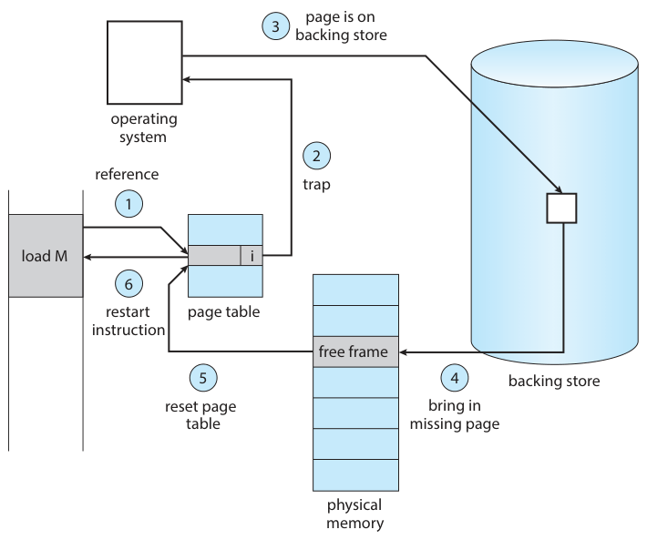
If no frame is free, a victim page must be evicted first. That case is Section 7.2.如果没有空闲帧，必须先驱逐一个牺牲页。这种情况见 7.2 节。
Step 3: effective access time第 3 步：有效访问时间
In words: effective access time = (share of accesses without a fault) × normal access time + (share with a fault) × fault service time.用文字表述：有效访问时间 = （不发生缺页的访问比例）× 正常访问时间 + （发生缺页的访问比例）× 缺页服务时间。
A normal memory access takes about 200 ns. Servicing a fault takes about 8 ms, mostly disk latency and seek.一次正常内存访问约 200 ns。处理一次缺页约 8 毫秒，主要是磁盘延迟和寻道时间。
How to do it by hand: 1. Convert every time to ns (1 ms = 1,000,000 ns). 2. Write the formula with the numbers. 3. For "the slowdown must be at most X", set EAT equal to the allowed time and solve for \(p\).手工做法：1. 把所有时间换算为纳秒（1 毫秒 = 1,000,000 纳秒）。2. 把数字代入公式。3. 若要求“变慢不能超过 X”，令 EAT 等于允许的时间，然后解出 \(p\)。
If the victim page was modified, the fault needs two transfers: write the victim out, then read the new page. The mean service time is a weighted average.若被替换的牺牲页被修改过，缺页需要两次传输：先写出牺牲页，再读入新页。平均服务时间是加权平均。
With a TLB, the access time without faults is itself an average. Compute it first and use it in place of \(\text{ma}\).有了 TLB，不发生缺页时的访问时间本身也是一个平均值。先计算它，并用它代替 \(\text{ma}\)。
Step 4: copy-on-write第 4 步：写时复制
In words: copy-on-write = parent and child share the pages after fork(), and a page is copied only when someone writes to it.用文字表述：写时复制 = fork() 之后父子进程共享页，只有某一方写入时才复制该页。
fork() creates a child that is a copy of the parent. Copying the whole address space is wasteful, because many children call exec() at once. With copy-on-write（写时复制）the two processes first share the same pages, marked copy-on-write.fork() 创建一个父进程的副本作为子进程。复制整个地址空间很浪费，因为很多子进程会立即调用 exec()。使用写时复制，两个进程先共享相同的页，并标记为写时复制。
How it works:工作方式如下：
- After
fork(), parent and child map the same frames, and the pages are write-protected.fork()之后，父子进程映射到相同的帧，并且这些页被设为写保护。 - When either process writes to a shared page, the write traps.当任一进程写入共享页时，该写操作会陷入。
- The OS takes a frame from the free-frame list, copies the page and maps the copy into the writer's page table as writable.操作系统从空闲帧链表中取一个帧，复制该页，并把副本以可写方式映射到写入者的页表中。
- Pages that are never written, such as code, stay shared.从不被写入的页（如代码）继续共享。
Example: a child writes to 60 of the parent's 2,000 pages. Copy-on-write copies 60 pages, a plain fork() copies 2,000.例：子进程写入父进程 2,000 个页中的 60 个。写时复制只复制 60 页，而普通的 fork() 会复制 2,000 页。

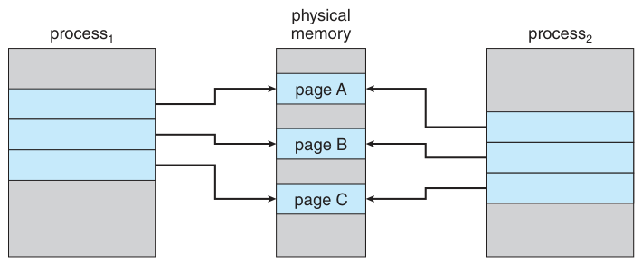

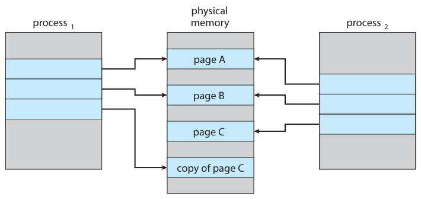
vfork() is different. The parent is suspended and the child runs in the parent's address space, with no copying. The child's writes are therefore visible to the parent. It is safe only if the child calls exec() at once.vfork() 不同。父进程被挂起，子进程在父进程的地址空间中运行，没有复制。因此子进程的写入对父进程可见。只有子进程立即调用 exec() 时这样做才是安全的。
Practice练习
Q1. (Calculation) A demand-paged system has memory-access time 100 ns and keeps the page table in registers. A page fault takes 8 ms to service if the victim is clean (or a free frame exists) and 20 ms if the victim is modified. Assume every fault needs a victim and 70% of victims are modified. What is the largest page-fault rate for which the effective access time is at most 200 ns?Q1.（计算）某按需调页系统的内存访问时间为 100 ns，页表保存在寄存器中。若牺牲帧未被修改（或存在空闲帧），则处理一次缺页需 8 ms；若牺牲帧已被修改，则需 20 ms。假设每次缺页都需要一个牺牲帧，且 70% 的牺牲帧已被修改。使有效访问时间不超过 200 ns 的最大缺页率是多少？
Answer
Mean fault service time: \(T_{\text{fault}}=0.3\times 8+0.7\times 20=16.4\) ms \(=16{,}400{,}000\) ns.平均缺页服务时间：\(T_{\text{fault}}=0.3\times 8+0.7\times 20=16.4\) ms \(=16{,}400{,}000\) ns。
EAT \(=(1-p)\cdot 100+p\cdot 16400000=100+16399900\,p\le 200\), so \(p\le 100/16399900\approx 6.1\times 10^{-6}\).EAT \(=(1-p)\cdot 100+p\cdot 16400000=100+16399900\,p\le 200\)，因此 \(p\le 100/16399900\approx 6.1\times 10^{-6}\)。
At most about one access in 164,000 may fault.至多允许大约每 164,000 次访问中有一次缺页。
思路：先求平均缺页服务时间，再解不等式；单位统一成 ns。
Q2. (Calculation) A system has 12-bit virtual and physical addresses and 256-byte pages. All numbers are hexadecimal; a dash means the page is not in memory.Q2.（计算）某系统的虚拟地址和物理地址均为 12 位，页大小为 256 字节。所有数字均为十六进制；短横线表示该页不在内存中。
| Page页 | 0 | 1 | 2 | 3 | 4 | 5 | 6 | 7 | 8 | 9 |
|---|---|---|---|---|---|---|---|---|---|---|
| Frame帧 | – | 2 | C | A | – | 4 | 3 | – | B | 0 |
The free frames are D, E, F (in this order). Translate the virtual addresses 9EF, 111, 700, 0FF; on a page fault load the page into the next free frame.空闲帧依次为 D、E、F。请转换虚拟地址 9EF、111、700 和 0FF；发生缺页时，将该页装入下一个空闲帧。
Answer
256 bytes \(=2^8\), so the offset is the last two hex digits and the page number is the first digit.256 字节 \(=2^8\)，因此偏移为最后两位十六进制数字，页号为第一位数字。
- 9EF: page 9 is in frame 0, so the physical address is 0EF.9EF：页 9 位于帧 0 中，因此物理地址为 0EF。
- 111: page 1 is in frame 2, so the address is 211.111：页 1 位于帧 2 中，因此地址为 211。
- 700: page 7 is invalid, a page fault. It is loaded into free frame D, so the address is D00.700：页 7 无效，发生缺页。它被装入空闲帧 D，因此地址为 D00。
- 0FF: page 0 is invalid, a page fault. It is loaded into frame E, so the address is EFF.0FF：页 0 无效，发生缺页。它被装入帧 E，因此地址为 EFF。
Frame F remains free.帧 F 仍然空闲。
Q3. (Explain) What is copy-on-write? When does it help, what hardware support does it need, and how does vfork() differ?Q3.（解释）什么是写时复制？它在什么情况下有效，需要哪些硬件支持，以及 vfork() 有何不同？
Answer
After fork() the parent and child share the same physical pages, marked copy-on-write. When either one writes to a shared page, the OS allocates a frame from the free-frame list, copies the page and maps the copy into the writer's address space; only written pages are copied, and code pages stay shared.执行 fork() 之后，父子进程共享相同的物理页，并被标记为写时复制。当任一方写入共享页时，操作系统从空闲帧链表中分配一个帧，复制该页，并将副本映射到写入者的地址空间；只有被写入的页才会被复制，代码页仍然共享。
It helps when the child calls exec() soon after fork() or modifies few pages: process creation is fast and little memory is used.当子进程在 fork() 之后很快调用 exec()，或只修改很少的页时，写时复制有效：进程创建速度快，且占用的内存少。
Hardware needed: write protection of pages (a protection bit in the page-table entry) and a trap on a write to a protected page, plus page-table remapping so the writer's entry can point to the new, writable frame.所需的硬件：页的写保护（页表项中的保护位），以及对受保护页的写操作所引发的陷入；另外还需要页表重映射，使写入者的表项能够指向新的可写帧。
vfork() does not copy or mark anything: the parent is suspended and the child uses the parent's address space, so its writes are visible to the parent. It is safe only if the child calls exec() immediately.vfork() 既不复制也不标记任何内容：父进程被挂起，子进程使用父进程的地址空间，因此其写入对父进程可见。只有当子进程立即调用 exec() 时，这样做才是安全的。
Page Replacement: FIFO, Optimal and LRU ★★★页面置换：FIFO、最优和 LRU ★★★
Goal. Trace FIFO, OPT and LRU on a reference string in a table, count the faults, and show Belady's anomaly. Say which algorithms are stack algorithms.目标。 在表中手工演算引用串上的 FIFO、OPT 和 LRU，统计缺页次数，并展示 Belady 异常。说明哪些算法是栈式算法。
Step 1: basic page replacement第 1 步：基本页面置换
When the free-frame list is empty, the fault routine of Section 7.1 is extended:当空闲帧链表为空时，扩展 7.1 节的缺页处理程序：
- Find the wanted page on the disk.在磁盘上找到所需的页。
- Find a free frame. If there is none, run the replacement algorithm to choose a victim. Write the victim to the disk if its modify bit（修改位）is set. Mark its page invalid.找一个空闲帧。若没有，运行置换算法选出牺牲页。若牺牲页的修改位被置位，把它写到磁盘上。把其页表项标记为无效。
- Read the wanted page into the freed frame and update the tables.将所需的页读入腾出的帧中，并更新各表。
- Restart the process at the faulting instruction.从缺页的指令处重新启动进程。
The hardware sets the modify bit whenever a byte of the page is written. A clean victim (bit clear) is simply discarded. This is why Section 7.1 weights the service time by the fraction \(d\) of dirty victims.只要页中有一个字节被写入，硬件就会设置修改位。干净的牺牲页（位未置位）直接丢弃。这就是 7.1 节按脏牺牲页的比例 \(d\) 对服务时间加权的原因。

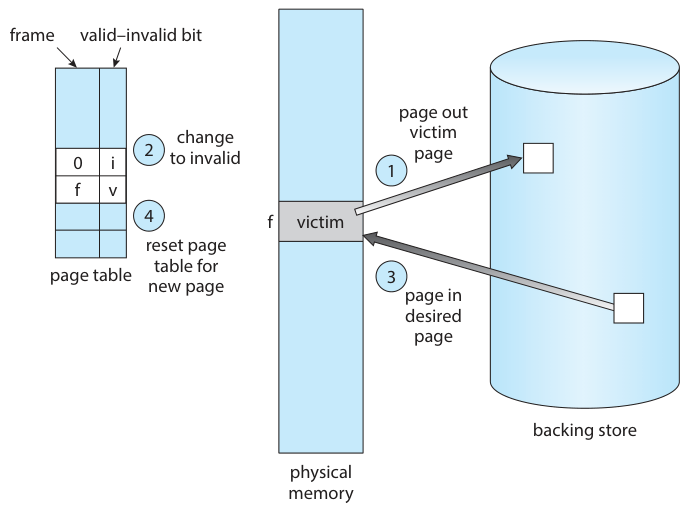
All traces below use the string 7, 0, 1, 2, 0, 3, 0, 4, 2, 3, 0, 3, 2, 1, 2, 0, 1, 7, 0, 1 with three initially empty frames. It has 20 references and 6 distinct pages (0, 1, 2, 3, 4 and 7).下面所有的追踪都使用串 7, 0, 1, 2, 0, 3, 0, 4, 2, 3, 0, 3, 2, 1, 2, 0, 1, 7, 0, 1，有三个初始为空的帧。它有 20 次引用，6 个不同的页（0、1、2、3、4 和 7）。
Step 2: FIFO第 2 步：FIFO
In words: FIFO = evict the page that has been in memory longest.用文字表述：FIFO = 驱逐在内存中停留时间最长的页。
FIFO（先进先出）keeps the resident pages in a queue. The oldest page is at the head and the newest at the tail.FIFO（先进先出）把驻留页保存在一个队列中。最老的页在队首，最新的页在队尾。
How to do it by hand: 1. Write one column per reference. 2. If the page is already in a frame, mark a hit and change nothing. A hit does not change the queue. 3. If not, mark a fault. Use an empty frame if there is one. 4. Otherwise replace the page that arrived earliest. 5. Count the faults, including the first ones on empty frames.手工做法：1. 每次引用写一列。2. 如果该页已经在某个帧中，标记为命中且不做任何改变。命中不改变队列。3. 如果不在，标记为缺页。若有空帧就用空帧。4. 否则替换最早到达的页。5. 统计缺页次数，包括空帧上最初的缺页。
| Ref引用 | 7 | 0 | 1 | 2 | 0 | 3 | 0 | 4 | 2 | 3 | 0 | 3 | 2 | 1 | 2 | 0 | 1 | 7 | 0 | 1 |
|---|---|---|---|---|---|---|---|---|---|---|---|---|---|---|---|---|---|---|---|---|
| Frame 1帧 1 | 7 | 7 | 7 | 2 | 2 | 2 | 2 | 4 | 4 | 4 | 0 | 0 | 0 | 0 | 0 | 0 | 0 | 7 | 7 | 7 |
| Frame 2帧 2 | 0 | 0 | 0 | 0 | 3 | 3 | 3 | 2 | 2 | 2 | 2 | 2 | 1 | 1 | 1 | 1 | 1 | 0 | 0 | |
| Frame 3帧 3 | 1 | 1 | 1 | 1 | 0 | 0 | 0 | 3 | 3 | 3 | 3 | 3 | 2 | 2 | 2 | 2 | 2 | 1 | ||
| Fault缺页 | F | F | F | F | F | F | F | F | F | F | F | F | F | F | F |
Reading the trace: 7, 0, 1 fill the empty frames. The reference to 2 evicts 7, the oldest. The reference to 3 evicts 0, and the next 0 faults and evicts 1. FIFO faults 15 times.读追踪结果：7、0、1 装满空帧。对 2 的引用驱逐最老的 7。对 3 的引用驱逐 0，接下来的 0 缺页并驱逐 1。FIFO 缺页 15 次。
Step 3: Belady's anomaly第 3 步：Belady 异常
In words: Belady's anomaly = giving a process more frames makes FIFO fault more, not less.用文字表述：Belady 异常 = 给进程更多帧，FIFO 反而缺页更多。
Belady's anomaly（Belady 异常）is the case where the fault count rises with the number of frames. It occurs on the string 1, 2, 3, 4, 1, 2, 5, 1, 2, 3, 4, 5. FIFO faults 9 times with 3 frames and 10 times with 4 frames.Belady 异常指缺页次数随帧数增加而上升的情形。它出现在串 1, 2, 3, 4, 1, 2, 5, 1, 2, 3, 4, 5 上。FIFO 在 3 个帧时缺页 9 次，在 4 个帧时缺页 10 次。
FIFO, 3 frames: 9 faultsFIFO，3 帧：9 次缺页
| Ref引用 | 1 | 2 | 3 | 4 | 1 | 2 | 5 | 1 | 2 | 3 | 4 | 5 |
|---|---|---|---|---|---|---|---|---|---|---|---|---|
| Frame 1帧 1 | 1 | 1 | 1 | 4 | 4 | 4 | 5 | 5 | 5 | 5 | 5 | 5 |
| Frame 2帧 2 | 2 | 2 | 2 | 1 | 1 | 1 | 1 | 1 | 3 | 3 | 3 | |
| Frame 3帧 3 | 3 | 3 | 3 | 2 | 2 | 2 | 2 | 2 | 4 | 4 | ||
| Fault缺页 | F | F | F | F | F | F | F | F | F |
FIFO, 4 frames: 10 faultsFIFO，4 帧：10 次缺页
| Ref引用 | 1 | 2 | 3 | 4 | 1 | 2 | 5 | 1 | 2 | 3 | 4 | 5 |
|---|---|---|---|---|---|---|---|---|---|---|---|---|
| Frame 1帧 1 | 1 | 1 | 1 | 1 | 1 | 1 | 5 | 5 | 5 | 5 | 4 | 4 |
| Frame 2帧 2 | 2 | 2 | 2 | 2 | 2 | 2 | 1 | 1 | 1 | 1 | 5 | |
| Frame 3帧 3 | 3 | 3 | 3 | 3 | 3 | 3 | 2 | 2 | 2 | 2 | ||
| Frame 4帧 4 | 4 | 4 | 4 | 4 | 4 | 4 | 3 | 3 | 3 | |||
| Fault缺页 | F | F | F | F | F | F | F | F | F | F |
With 4 frames, pages 1 and 2 are evicted just before they are needed. With 3 frames they are still resident. FIFO's resident set depends on arrival order, so the set with 4 frames is not always a superset of the set with 3 frames.有 4 个帧时，页 1 和 2 在刚要被需要之前被驱逐。有 3 个帧时，它们仍然驻留。FIFO 的驻留集取决于到达顺序，所以 4 个帧时的驻留集不一定包含 3 个帧时的驻留集。
Step 4: optimal replacement (OPT)第 4 步：最优置换（OPT）
In words: OPT = evict the page whose next use is farthest in the future, or that is never used again.用文字表述：OPT = 驱逐下一次使用最远、或者以后不再使用的页。
OPT（最优置换, also called MIN）gives the lowest possible number of faults for a fixed number of frames. It needs the future, like SJF in Chapter 3, so it cannot be built. It is the yardstick for real algorithms.OPT（最优置换，也称 MIN）对于固定的帧数能给出最少的缺页次数。它需要知道未来，就像第 3 章中的 SJF 一样，所以无法实现。它是衡量实际算法的标尺。
How to do it by hand: 1. On a fault with all frames full, look forward in the string from the current position. 2. For each resident page, find its next use. 3. Evict the page whose next use is last. A page that is never used again is the best victim, and several such pages are equally good.手工做法：1. 缺页且所有帧都满时，从当前位置向后看串。2. 对每个驻留页，找出它的下一次使用。3. 驱逐下一次使用最晚的页。以后不再使用的页是最好的牺牲页，若有多个这样的页，它们同样好。
| Ref引用 | 7 | 0 | 1 | 2 | 0 | 3 | 0 | 4 | 2 | 3 | 0 | 3 | 2 | 1 | 2 | 0 | 1 | 7 | 0 | 1 |
|---|---|---|---|---|---|---|---|---|---|---|---|---|---|---|---|---|---|---|---|---|
| Frame 1帧 1 | 7 | 7 | 7 | 2 | 2 | 2 | 2 | 2 | 2 | 2 | 2 | 2 | 2 | 2 | 2 | 2 | 2 | 7 | 7 | 7 |
| Frame 2帧 2 | 0 | 0 | 0 | 0 | 0 | 0 | 4 | 4 | 4 | 0 | 0 | 0 | 0 | 0 | 0 | 0 | 0 | 0 | 0 | |
| Frame 3帧 3 | 1 | 1 | 1 | 3 | 3 | 3 | 3 | 3 | 3 | 3 | 3 | 1 | 1 | 1 | 1 | 1 | 1 | 1 | ||
| Fault缺页 | F | F | F | F | F | F | F | F | F |
Reading the trace: the reference to 2 evicts 7, which is not used until position 18, while 0 is used at position 5 and 1 at position 14. The reference to 3 evicts 1, the last of the three to be used. OPT faults 9 times.读追踪结果：对 2 的引用驱逐 7，它要到位置 18 才再次被用到，而 0 在位置 5 被用到，1 在位置 14 被用到。对 3 的引用驱逐 1，它是这三个页中最后被用到的。OPT 缺页 9 次。
Step 5: LRU第 5 步：LRU
In words: LRU = evict the page that has not been used for the longest time.用文字表述：LRU = 驱逐很长时间没有被使用的页。
LRU（最近最少使用）is OPT looking backward: it assumes that the recent past predicts the near future.LRU（最近最少使用）就是往回看的 OPT：它假设近期的过去能预测近期的未来。
How to do it by hand: 1. On a hit, the page becomes the most recently used. Note this, because it changes later victims. 2. On a fault with all frames full, look backward from the current position. 3. For each resident page, find its last use. 4. Evict the page whose last use is earliest.手工做法：1. 命中时，该页变为最近使用的页。记下这一点，因为它会影响之后的牺牲页。2. 缺页且所有帧都满时，从当前位置往回看。3. 对每个驻留页，找出它最后一次被使用的位置。4. 驱逐最后一次使用最早的页。
| Ref引用 | 7 | 0 | 1 | 2 | 0 | 3 | 0 | 4 | 2 | 3 | 0 | 3 | 2 | 1 | 2 | 0 | 1 | 7 | 0 | 1 |
|---|---|---|---|---|---|---|---|---|---|---|---|---|---|---|---|---|---|---|---|---|
| Frame 1帧 1 | 7 | 7 | 7 | 2 | 2 | 2 | 2 | 4 | 4 | 4 | 0 | 0 | 0 | 1 | 1 | 1 | 1 | 1 | 1 | 1 |
| Frame 2帧 2 | 0 | 0 | 0 | 0 | 0 | 0 | 0 | 0 | 3 | 3 | 3 | 3 | 3 | 3 | 0 | 0 | 0 | 0 | 0 | |
| Frame 3帧 3 | 1 | 1 | 1 | 3 | 3 | 3 | 2 | 2 | 2 | 2 | 2 | 2 | 2 | 2 | 2 | 7 | 7 | 7 | ||
| Fault缺页 | F | F | F | F | F | F | F | F | F | F | F | F |
Reading the trace: the first 5 faults are the same as OPT's. At the reference to 4, LRU evicts 2, but 2 is needed again at once. LRU faults 12 times.读追踪结果：前 5 次缺页与 OPT 相同。对 4 的引用时，LRU 驱逐 2，但 2 马上又要被用到。LRU 缺页 12 次。
Two ways to implement LRU:实现 LRU 的两种方式：
- Counters. Each page-table entry has a time-of-use field, and the CPU has a clock that counts every reference. The victim is the page with the smallest value. Cost: a memory write on every reference and a search on every fault.计数器。每个页表项有一个使用时间字段，CPU 有一个为每次引用计数的时钟。牺牲页是数值最小的页。代价是每次引用都要写内存，每次缺页都要搜索。
- Stack. Keep the page numbers in a doubly linked list. On a reference, move the page to the top. The least recently used page is always at the bottom, so no search is needed.栈。把页号保存在双向链表中。引用时，把该页移到顶部。最近最少使用的页总在底部，因此不需要搜索。
Either way, the update happens on every memory reference, so real systems need hardware help or approximate LRU (Section 7.3).两种方式都要在每次内存引用时更新，所以真实系统需要硬件支持，或使用近似 LRU（见 7.3 节）。
In words: a stack algorithm never loses a page when it gets one more frame.用文字表述：栈式算法在多给一个帧时，从不丢失已有的页。
OPT and LRU are stack algorithms（栈式算法）: for every string, the set of pages in memory with \(n\) frames is a subset of the set with \(n+1\) frames. For LRU, the resident set is the \(n\) most recently used pages. These are included in the \(n+1\) most recently used pages. So a hit with \(n\) frames is also a hit with \(n+1\) frames, and Belady's anomaly cannot happen. FIFO is not a stack algorithm.OPT 和 LRU 是栈式算法：对于每个串，有 \(n\) 个帧时内存中的页集合，是有 \(n+1\) 个帧时集合的子集。对于 LRU，驻留集是最近使用的 \(n\) 个页。它们包含在最近使用的 \(n+1\) 个页之中。因此，在 \(n\) 个帧时的命中，在 \(n+1\) 个帧时也是命中，所以 Belady 异常不会出现。FIFO 不是栈式算法。
Practice练习
Q1. (Trace) Three initially empty frames; reference string 4, 2, 1, 4, 5, 2, 4, 2, 5, 4, 3, 5. Count the page faults under FIFO, LRU and OPT, and name the victim at each replacement.Q1.（手工演算）三个初始为空的帧；引用串为 4, 2, 1, 4, 5, 2, 4, 2, 5, 4, 3, 5。计算 FIFO、LRU 与 OPT 下的缺页次数，并写出每次置换时的牺牲页。
Answer
- FIFO. 4, 2, 1 fill the frames; 4 hits; 5 evicts 4 (oldest); 2 hits; 4 evicts 2; 2 evicts 1; 5 and 4 hit; 3 evicts 5; 5 evicts 4. Faults: 4, 2, 1, 5, 4, 2, 3, 5 \(=8\).FIFO。 4、2、1 依次填满各帧；4 命中；5 淘汰 4（最早装入的页）；2 命中；4 淘汰 2；2 淘汰 1；5 和 4 命中；3 淘汰 5；5 淘汰 4。缺页：4、2、1、5、4、2、3、5 \(=8\)。
- LRU. 4, 2, 1 fill; 4 hits; 5 evicts 2 (least recent); 2 evicts 1; 4, 2, 5, 4 hit; 3 evicts 2; 5 hits. Faults: 4, 2, 1, 5, 2, 3 \(=6\).LRU。 4、2、1 依次填满；4 命中；5 淘汰 2（最近最少使用的页）；2 淘汰 1；4、2、5、4 命中；3 淘汰 2；5 命中。缺页：4、2、1、5、2、3 \(=6\)。
- OPT. 4, 2, 1 fill; 4 hits; 5 evicts 1 (never used again); 2, 4, 2, 5, 4 hit; 3 evicts 4 (2 would do as well: neither is used again); 5 hits. Faults: \(5\).OPT。 4、2、1 依次填满；4 命中；5 淘汰 1（之后不再使用）；2、4、2、5、4 命中；3 淘汰 4（淘汰 2 也一样：二者之后都不再使用）；5 命中。缺页：\(5\)。
OPT (5) \(<\) LRU (6) \(<\) FIFO (8); 5 is the minimum because the string has 5 distinct pages.OPT（5 次）\(<\) LRU（6 次）\(<\) FIFO（8 次）；5 次是最少的，因为该引用串有 5 个不同的页。
Q2. (Explain) You devise a page-replacement algorithm and find that Belady's anomaly occurs on some contrived strings. Can the algorithm be optimal?Q2.（解释）你设计了一种页面置换算法，并发现在某些人为构造的引用串上会出现 Belady 异常。该算法能否是最优的？
Answer
No. An optimal algorithm has the fewest faults for a given number of frames. With \(n+1\) frames it can always do at least as well as with \(n\) (it may leave the extra frame unused), so an optimal algorithm never faults more when given more frames. An algorithm that does fault more is therefore not optimal.不能。最优算法在给定帧数下缺页次数最少。帧数为 \(n+1\) 时，它总能不差于帧数为 \(n\) 时的情形（多出的帧可以闲置），因此最优算法在获得更多帧时缺页次数绝不会增加。缺页次数会增加的算法因此不可能是最优的。
Q3. (Bounds) A process has \(m\) frames, initially empty. Its reference string has length \(p\) and \(n\) distinct pages. Give a lower and an upper bound on the number of page faults for any replacement algorithm.Q3.（上下界）某进程有 \(m\) 个帧，初始均为空。其引用串长度为 \(p\)，包含 \(n\) 个不同的页。给出任一置换算法缺页次数的下界和上界。
Answer
Lower bound \(n\): every distinct page must be brought in at least once, so its first reference faults (attained when \(m\ge n\)). Upper bound \(p\): at most every reference faults.下界 \(n\)：每个不同的页至少必须调入一次，因此它的首次引用一定缺页（当 \(m\ge n\) 时可以达到该下界）。上界 \(p\)：最多每次引用都缺页。
LRU Approximation and Other Refinements ★★★LRU 近似与其他改进 ★★★
Goal. Trace the second-chance (clock) algorithm with its reference bits, apply the 8-bit history register, and explain enhanced second chance with its four classes.目标。 手工演算带引用位的第二次机会（时钟）算法，应用 8 位历史寄存器，并用其四个类别解释增强型第二次机会。
Few machines can do true LRU. Most give a reference bit, and these algorithms build on it.很少有机器能实现真正的 LRU。大多数机器只提供引用位，而这些算法都建立在引用位之上。
Step 1: additional reference bits第 1 步：附加的引用位
In words: keep an 8-bit history of the reference bit for every page, and evict the page with the smallest number.用文字表述：为每个页保存 8 位的引用位历史，并驱逐数值最小的页。
How to do it by hand: 1. At every timer interrupt (say every 100 ms), shift each page's history byte right by one bit. The lowest bit is dropped. 2. Put the page's reference bit into the top bit of the byte. 3. Clear the reference bit. 4. To choose a victim, read each byte as an unsigned number. The smallest is the least recently used page. 5. If several pages tie, replace all of them or choose one by FIFO.手工做法：1. 每次定时器中断（例如每 100 毫秒），把每个页的历史字节右移一位，最低位被丢弃。2. 把该页的引用位放入该字节的最高位。3. 将引用位清零。4. 选择牺牲页时，把每个字节当作无符号数读取。最小的是最久未使用的页。5. 若有多个页并列，全部替换或用 FIFO 选出一个。
Example: a page has history 10010010 and was used in the last interval (reference bit 1). The new byte is 11001001. If it was not used (reference bit 0), the new byte is 01001001. A byte 11000100 is more recent than 01110111, because the top bit stands for the newest interval.例：某页的历史为 10010010，并且在上一个间隔中被使用（引用位为 1）。新字节为 11001001。若没有被使用（引用位为 0），新字节为 01001001。字节 11000100 比 01110111 更新，因为最高位代表最新的间隔。
Step 2: second chance (clock)第 2 步：第二次机会（时钟）
In words: second chance = FIFO, but a page whose reference bit is 1 gets its bit cleared and is skipped once.用文字表述：第二次机会 = FIFO，但引用位为 1 的页会被清零，并跳过一次。
Second chance（二次机会）looks at the page at the head of the FIFO queue. It is built as a circular queue with a pointer called the hand, which is why it is also the clock algorithm（时钟算法）.第二次机会查看 FIFO 队列头部的页。它被组织为一个带指针的循环队列，指针称为时钟指针（hand），因此它也叫时钟算法。
How to do it by hand: 1. Fill empty frames in order. A page brought in by a fault gets bit 1. 2. On a hit, set the page's bit to 1. The hand does not move. 3. On a fault with all frames full, look at the page under the hand. If its bit is 1, clear it and move the hand to the next frame. 4. Repeat until a page with bit 0 is found. Replace it, set the new page's bit to 1 and move the hand to the next frame. 5. Count the faults.手工做法：1. 按顺序填满空帧。因缺页调入的页获得位 1。2. 命中时，把该页的位置为 1。指针不动。3. 缺页且所有帧都满时，查看指针下的页。若其位为 1，把它清零，并将指针移到下一个帧。4. 重复，直到找到位为 0 的页。替换它，把新页的位置为 1，并将指针移到下一个帧。5. 统计缺页次数。
If every bit is 1, the hand goes round the whole circle, clears all bits and replaces the first page. Second chance then behaves like FIFO.如果所有位都是 1，指针绕行一圈，把所有位清零，然后替换第一个页。此时第二次机会的行为就像 FIFO。

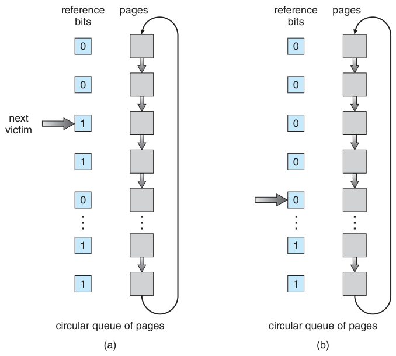
In the trace, an asterisk marks reference bit 1. The row Hand gives the frame that the hand points to after the reference.在追踪表中，星号标记引用位为 1。Hand 行给出引用之后指针指向的帧。
Second chance on the example string, 3 frames: 14 faults示例引用串上的第二次机会算法，3 帧：14 次缺页
| Ref引用 | 7 | 0 | 1 | 2 | 0 | 3 | 0 | 4 | 2 | 3 | 0 | 3 | 2 | 1 | 2 | 0 | 1 | 7 | 0 | 1 |
|---|---|---|---|---|---|---|---|---|---|---|---|---|---|---|---|---|---|---|---|---|
| Frame 1帧 1 | 7* | 7* | 7* | 2* | 2* | 2* | 2* | 4* | 4* | 4* | 4 | 3* | 3* | 3 | 3 | 0* | 0* | 0 | 0* | 0* |
| Frame 2帧 2 | 0* | 0* | 0 | 0* | 0 | 0* | 0 | 2* | 2* | 2 | 2 | 2* | 1* | 1* | 1* | 1* | 7* | 7* | 7* | |
| Frame 3帧 3 | 1* | 1 | 1 | 3* | 3* | 3 | 3 | 3* | 0* | 0* | 0* | 0 | 2* | 2* | 2* | 2 | 2 | 1* | ||
| Hand指针 | 2 | 3 | 1 | 2 | 2 | 1 | 1 | 2 | 3 | 3 | 1 | 2 | 2 | 3 | 1 | 2 | 2 | 3 | 3 | 1 |
| Fault缺页 | F | F | F | F | F | F | F | F | F | F | F | F | F | F |
Reading the trace: at the first reference to 2 all three pages have bit 1. The hand clears them all, returns to frame 1 and evicts 7, as FIFO would. At the reference to 3, 0 has just been hit (bit 1) and is spared, so 1 is evicted, as LRU would. The result, 14 faults, lies between LRU (12) and FIFO (15).读追踪结果：在第一次对 2 的引用时，三个页的位都是 1。指针把它们全部清零，回到帧 1，并驱逐 7，与 FIFO 相同。在对 3 的引用时，0 刚被命中（位为 1），因此得以保留，于是驱逐 1，与 LRU 相同。结果为 14 次缺页，介于 LRU（12 次）和 FIFO（15 次）之间。
Because second chance is based on FIFO, it is not a stack algorithm. It can show Belady's anomaly: on 1, 2, 3, 4, 1, 2, 5, 1, 2, 3, 4, 5 it faults 9 times with 3 frames and 10 times with 4 frames.因为第二次机会基于 FIFO，它不是栈式算法。它可能出现 Belady 异常：在 1, 2, 3, 4, 1, 2, 5, 1, 2, 3, 4, 5 上，3 个帧时缺页 9 次，4 个帧时缺页 10 次。
Step 3: enhanced second chance第 3 步：增强型第二次机会
In words: enhanced second chance = clock scan that prefers pages that are not recently used and not modified.用文字表述：增强型第二次机会 = 时钟扫描，优先选择最近没有使用且没有修改的页。
Use the pair \((R,M)\) of reference bit and modify bit. A page falls into one of four classes.使用引用位和修改位的组合 \((R,M)\)。每个页属于下面四类之一。
| Class类别 | \((R,M)\) | Meaning含义 | Replacement preference置换优先级 |
|---|---|---|---|
| 1 | (0, 0) | not recently used, clean近期未使用，未修改 | best victim最佳牺牲页 |
| 2 | (0, 1) | not recently used, modified近期未使用，已修改 | must be written out first须先写出 |
| 3 | (1, 0) | recently used, clean近期使用过，未修改 | likely to be used again很可能再次被使用 |
| 4 | (1, 1) | recently used, modified近期使用过，已修改 | worst: used again soon and needs a write-out最差：很快会再次被使用，且需要先写出 |
How to do it by hand: 1. Find the class of every page. 2. Replace the first page in the lowest non-empty class, scanning from the hand. 3. If a pass finds no page of class 1, look for class 2 on the next pass, and so on. Several passes may be needed.手工做法：1. 找出每个页所属的类别。2. 从指针处开始扫描，替换最低非空类别中的第一个页。3. 如果一遍扫描中找不到第 1 类的页，下一遍寻找第 2 类，依此类推。可能需要多遍扫描。
Example: four pages are in clock order with \((R,M)\) = P1 (1,0), P2 (1,1), P3 (0,1), P4 (0,0). P4 is class 1 and is replaced. Without P4, the lowest class is class 2, and P3 is replaced.例：四个页按时钟顺序排列，\((R,M)\) = P1 (1,0)、P2 (1,1)、P3 (0,1)、P4 (0,0)。P4 属于第 1 类，被替换。若没有 P4，最低类别为第 2 类，于是替换 P3。
Unlike the simple clock, this scheme favours modified pages, which saves write I/O.与简单时钟算法不同，这种方案偏向修改过的页，从而节省写 I/O。
Step 4: other refinements第 4 步：其他改进
- LFU（最不经常使用）evicts the page with the smallest reference count. A page used heavily at start-up keeps a high count although it is dead. Shifting the counts right at regular intervals fixes this.LFU（最不经常使用）驱逐引用计数最小的页。启动时大量使用的页计数会一直很高，尽管它已经不再使用。定期对计数进行右移可以解决这个问题。
- MFU evicts the page with the highest count. It assumes that the page with the smallest count has only just been brought in. Neither LFU nor MFU is common.MFU 驱逐计数最大的页。它假设计数最小的页刚刚被调入。LFU 和 MFU 都不常用。
- Page buffering: keep a pool of free frames, so the wanted page is read first and the victim is written out later. Write modified pages out whenever the disk is idle, so more victims are clean. Remember which page each free frame held, so a page that is requested again is taken back without I/O.页缓冲：保留一个空闲帧池，使所需的页先被读入，而牺牲页稍后再写出。在磁盘空闲时写出修改过的页，使更多牺牲页成为干净页。记住每个空闲帧原来存放的是哪一页，若该页再次被请求，无需 I/O 即可取回。
| Algorithm算法 | Information used所用信息 | Note说明 |
|---|---|---|
| FIFO | arrival order到达顺序 | simple; Belady's anomaly简单；存在 Belady 异常 |
| OPT | future references将来的引用 | optimal; offline benchmark only最优；仅作离线基准 |
| LRU | order of last use最近使用的先后顺序 | stack algorithm; needs per-reference hardware栈式算法；需要每次引用都有硬件支持 |
| Additional reference bits附加引用位 | 8-bit history of the reference bit引用位的 8 位历史 | approximates LRU; ties possible近似 LRU；可能并列 |
| Second chance (clock)第二次机会（时钟）算法 | arrival order and reference bit到达顺序与引用位 | FIFO-based, so Belady's anomaly is possible; FIFO when all bits are 1基于 FIFO，因此可能出现 Belady 异常；所有位均为 1 时即为 FIFO |
| Enhanced second chance增强的第二次机会算法 | reference bit and modify bit引用位与修改位 | keeps modified pages longer (within a reference-bit class, clean pages go first), fewer write-outs让被修改过的页面保留得更久（在引用位相同的类别中，干净页面先被换出），减少写出次数 |
| LFU / MFU | reference counts引用计数 | costly, poor approximation of OPT, rarely used代价高，对 OPT 的近似效果差，很少使用 |
Practice练习
Q1. (Trace) Apply second chance with three frames to 4, 2, 1, 4, 5, 2, 4, 2, 5, 4, 3, 5 (the string of Practice Q1 in Section 7.2), using the trace convention above. How many faults, and how does the result compare with FIFO (8) and LRU (6)?Q1.（手工演算）用三个帧对 4, 2, 1, 4, 5, 2, 4, 2, 5, 4, 3, 5（即第 7.2 节练习 Q1 中的引用串）应用第二次机会算法，并采用上文的演算约定。缺页次数是多少？结果与 FIFO（8 次）和 LRU（6 次）相比如何？
Answer
| Ref引用 | 4 | 2 | 1 | 4 | 5 | 2 | 4 | 2 | 5 | 4 | 3 | 5 |
|---|---|---|---|---|---|---|---|---|---|---|---|---|
| Frame 1帧 1 | 4* | 4* | 4* | 4* | 5* | 5* | 5* | 5* | 5* | 5* | 3* | 3* |
| Frame 2帧 2 | 2* | 2* | 2* | 2 | 2* | 2 | 2* | 2* | 2* | 2 | 5* | |
| Frame 3帧 3 | 1* | 1* | 1 | 1 | 4* | 4* | 4* | 4* | 4 | 4 | ||
| Hand指针 | 2 | 3 | 1 | 1 | 2 | 2 | 1 | 1 | 1 | 1 | 2 | 3 |
| Fault缺页 | F | F | F | F | F | F | F |
At the reference to 5 all bits are 1: the hand clears them and evicts 4, as FIFO would. At the next 4, page 2 has bit 1 (it was just hit) and is spared, and page 1 (bit 0) is evicted. At 3 all bits are 1 again, so 5 is evicted; at the last 5, page 2 (bit 0) goes.引用 5 时所有引用位均为 1：指针将它们清零并淘汰 4，与 FIFO 相同。接下来引用 4 时，页 2 的引用位为 1（刚刚被命中），因此被保留，引用位为 0 的页 1 被淘汰。引用 3 时所有引用位又都为 1，因此淘汰 5；最后一次引用 5 时，页 2（引用位为 0）被淘汰。
There are \(7\) faults: between LRU (6) and FIFO (8), because the reference bit protects the recently used page 2.共 \(7\) 次缺页：介于 LRU（6 次）与 FIFO（8 次）之间，因为引用位保护了最近使用过的页 2。
Q2. (Calculation) Five pages have these 8-bit history registers: A 10010010, B 01110111, C 00101101, D 00101110, E 11000100. Which page does the additional-reference-bits algorithm replace? Which page was used most recently?Q2.（计算）五个页的 8 位历史寄存器如下：A 10010010，B 01110111，C 00101101，D 00101110，E 11000100。附加引用位算法会替换哪个页？哪个页最近被使用？
Answer
As unsigned integers: A \(=146\), B \(=119\), C \(=45\), D \(=46\), E \(=196\). The smallest value is C (45), so C is replaced; D (46) would be the next candidate. E has the largest value, with its two newest bits set, so it was used most recently.按无符号整数计：A \(=146\)，B \(=119\)，C \(=45\)，D \(=46\)，E \(=196\)。最小值为 C（45），因此替换 C；D（46）将是下一个候选。E 的值最大，且其最近的两位都已置位，因此它是最近被使用的页。
Q3. (Analysis, beyond the pages) A program scans four pages cyclically, 1, 2, 3, 4 repeated five times (20 references), with three frames. How many faults do FIFO, LRU and OPT incur? Which simple rule matches OPT here, and why does LRU fail?Q3.（分析，超出教材范围）某程序循环扫描四个页，1, 2, 3, 4 重复五次（共 20 次引用），使用三个帧。FIFO、LRU 和 OPT 各产生多少次缺页？在这里哪一条简单规则与 OPT 结果相同？LRU 为何失效？
Answer
FIFO and LRU fault on all 20 references. Each page is evicted just before it is needed again: with three frames and four pages, the least recently used (and oldest) page is exactly the one referenced next.FIFO 与 LRU 在全部 20 次引用上都缺页。每个页都在再次需要之前被淘汰：三个帧、四个页的情况下，最久未使用（也是最老）的页恰好就是下一个被引用的页。
OPT faults 9 times: the three initial faults and then one fault every two references (positions 4, 7, 10, 13, 16, 19), because it evicts the page whose next use is farthest away, which is the page just used. The rule "evict the most recently used page" gives the same 9 faults.OPT 缺页 9 次：先是三次初始缺页，之后每两次引用缺页一次（位置 4、7、10、13、16、19），因为它淘汰的是下一次使用时间最远的页，而这恰好是刚刚使用过的页。规则“淘汰最近使用的页”同样得到 9 次缺页。
LRU assumes that the recent past predicts the near future. A cyclic or sequential scan over more pages than frames breaks this assumption, which is why databases and data warehouses manage their own buffers or prefer MFU-like policies for scans.LRU 假定近期过去能够预测近期未来。对多于帧数的页进行循环或顺序扫描会打破这一假定，这正是数据库和数据仓库要自行管理缓冲区，或在扫描时偏好类似 MFU 策略的原因。
思路：循环扫描时，最近刚用过的页反而最晚被再次使用，所以 LRU 恰好选错。
Allocation of Frames ★★帧的分配 ★★
Goal. Compute equal and proportional allocation, say why a process needs a minimum number of frames, and compare global and local replacement.目标。 计算平均分配和按比例分配，说明进程为什么需要最少帧数，并比较全局置换与局部置换。
Step 1: minimum and maximum number of frames第 1 步：帧数的最小值和最大值
The maximum is the number of frames in physical memory. The minimum is set by the architecture. A faulting instruction is restarted, so the process needs enough frames for every page that one instruction can touch.最大值是物理内存中的帧数。最小值由体系结构决定。出错的指令会被重新执行，因此进程需要的帧数要能容纳一条指令可能访问的每一页。
- One memory operand: 2 frames (the instruction and the data).一个内存操作数：2 个帧（指令和数据）。
- One level of indirect addressing (the operand points to another address): at least 3 frames.一级间接寻址（操作数指向另一个地址）：至少 3 个帧。
- An instruction that may straddle two pages, with two indirect operands: 6 frames.一条可能跨越两页、带有两个间接操作数的指令：6 个帧。
With fewer frames, each restart faults again and the instruction never completes.帧数不足时，每次重新执行都会再次缺页，指令永远无法完成。
Step 2: equal and proportional allocation第 2 步：平均分配与按比例分配
In words: equal = every process gets the same number of frames; proportional = a bigger process gets more frames.用文字表述：平均分配 = 每个进程得到相同数量的帧；按比例分配 = 进程越大，得到的帧越多。
Equal allocation（平均分配）gives each of \(n\) processes the same share. With 93 frames and 5 processes each gets 18, and 3 frames are left. It wastes frames on small processes. Proportional allocation（按比例分配）gives frames in proportion to size.平均分配把同样的份额分给 \(n\) 个进程中的每一个。93 个帧、5 个进程时，每人得到 18 个，剩下 3 个。它会浪费在小进程上的帧。按比例分配则按大小成比例分配帧。
How to do it by hand: 1. Add the sizes to get \(S\). 2. Compute \(a_i=s_i\times m\div S\) for each process. 3. Round down. 4. Raise any value below the minimum, and take the extra frames from the largest process.手工做法：1. 把各个大小相加，得到 \(S\)。2. 计算每个进程的 \(a_i=s_i\times m\div S\)。3. 向下取整。4. 把低于最小值的数值提高到最小值，多出的帧从最大的进程中拿。
Example: 62 frames and processes of 10 and 127 pages. \(S=137\). \(a_1=10\div 137\times 62=4.5\to 4\) and \(a_2=127\div 137\times 62=57.5\to 57\). One frame is spare.例：62 个帧，两个进程分别为 10 页和 127 页。\(S=137\)。\(a_1=10\div 137\times 62=4.5\to 4\) 和 \(a_2=127\div 137\times 62=57.5\to 57\)。还剩一个帧。
Step 3: global versus local replacement第 3 步：全局置换与局部置换
In words: global = a process may take any frame; local = a process may take only its own frames.用文字表述：全局 = 进程可以拿任何帧；局部 = 进程只能拿自己的帧。
Global replacement（全局置换）lets a process choose a victim among all frames, even one that belongs to another process. Local replacement（局部置换）lets it choose only among its own frames.全局置换允许进程在所有帧中选择牺牲页，甚至可以是另一个进程的帧。局部置换只允许在自己的帧中选择。
| Global全局 | Local局部 | |
|---|---|---|
| Frames per process每个进程的帧数 | change at run time运行时可变 | stay fixed until the allocation is recomputed在重新计算分配之前保持固定 |
| Performance of a process进程的性能 | depends on other processes' behaviour (the same run may take 0.5 s or 4.3 s)取决于其他进程的行为（同一次运行可能耗时 0.5 s 或 4.3 s） | depends only on its own paging仅取决于自身的换页情况 |
| Memory use内存利用 | can use less-used pages of other processes: higher throughput可以使用其他进程中较少使用的页：吞吐量更高 | may leave other processes' idle frames unused可能使其他进程的空闲帧未被利用 |
| Thrashing抖动 | one thrashing process steals frames and spreads the problem一个发生抖动的进程会抢占帧，使问题扩散 | stays inside the process限制在进程内部 |
| Use使用情况 | the common choice常用的选择 |
Practice练习
Q1. (Calculation) 100 free frames are shared by three processes of 8, 40 and 152 pages; the architecture needs at least 6 frames per process. Give the equal and the proportional allocation and comment.Q1.（计算）100 个空闲帧由三个进程共享，它们分别为 8 页、40 页和 152 页；体系结构要求每个进程至少有 6 个帧。分别给出平均分配和按比例分配的结果，并加以评论。
Answer
Equal: \(100/3=33\) frames each, 1 spare. The 8-page process can never use more than 8 frames, so 25 of its 33 frames are wasted.平均分配：每个进程 \(100/3=33\) 个帧，另余 1 个。8 页的进程最多只能使用 8 个帧，因此它所获得的 33 个帧中有 25 个被浪费。
Proportional: \(S=200\), \(a_1=8/200\times 100=4\), \(a_2=40/200\times 100=20\), \(a_3=152/200\times 100=76\). The first value is below the minimum 6, so raise it to 6 and take the 2 extra frames from the largest process: 6, 20, 74 (sum 100). Proportional allocation matches frames to needs; equal allocation does not.按比例分配：\(S=200\)、\(a_1=8/200\times 100=4\)、\(a_2=40/200\times 100=20\)、\(a_3=152/200\times 100=76\)。第一个值低于最小值 6，因此将其提高到 6，并从最大的进程中取走 2 个帧：得到 6、20、74（和为 100）。按比例分配使帧数与需求相匹配，而平均分配则不然。
Q2. (Compare) On a busy system a process takes 0.5 s in one run and 4.3 s in another with the same input. Which replacement policy is probably in use, and why? Name one advantage of the other policy.Q2.（比较）在一个繁忙的系统中，同一个进程、相同输入下，一次运行耗时 0.5 s，另一次耗时 4.3 s。它可能使用的是哪种置换策略？为什么？请说出另一种策略的一项优点。
Answer
Global replacement. The set of pages a process keeps in memory then depends on the paging behaviour of all other processes, which differs from run to run. Under local replacement the resident set depends only on the process itself, so its running time is predictable, and a thrashing process cannot steal frames from others.全局置换。此时进程在内存中保留的页集合取决于所有其他进程的换页行为，而这些行为每次运行都不同。在局部置换下，驻留集只取决于进程本身，因此其运行时间是可预测的，而且发生抖动的进程无法从其他进程抢走帧。
Thrashing and Working Sets ★★★抖动与工作集 ★★★
Goal. Explain thrashing and its cause, compute a working set and its size for a given window, decide whether the total demand fits in memory, and explain the page-fault-frequency scheme.目标。 解释抖动及其原因，对给定的窗口计算工作集及其大小，判断总需求能否放进内存，并解释缺页频率方案。
Step 1: thrashing and its cause第 1 步：抖动及其原因
In words: thrashing = the process spends more time paging than executing.用文字表述：抖动 = 进程花在换页上的时间多于执行的时间。
A process that has fewer frames than it needs faults, evicts a page that it needs again at once, faults again, and so on. The classic cause is a feedback loop between the scheduler and global replacement:帧数少于所需的进程会缺页，并驱逐一个很快又要用到的页，然后再次缺页，如此循环。经典原因是调度程序与全局置换之间的反馈循环：
- The OS sees low CPU utilization and admits another process (it raises the degree of multiprogramming).操作系统看到 CPU 利用率低，于是接纳另一个进程（提高多道程序度）。
- A process enters a new phase and needs more frames. Under global replacement it takes frames from others.一个进程进入新的阶段，需要更多帧。在全局置换下，它从其他进程那里拿走帧。
- Those processes now fault too. They queue at the paging device. The ready queue empties and CPU utilization drops.那些进程现在也会缺页，它们在换页设备前排队。就绪队列变空，CPU 利用率下降。
- The OS sees even lower utilization and admits more processes. Throughput collapses.操作系统看到更低的利用率，于是接纳更多进程。吞吐量崩溃。

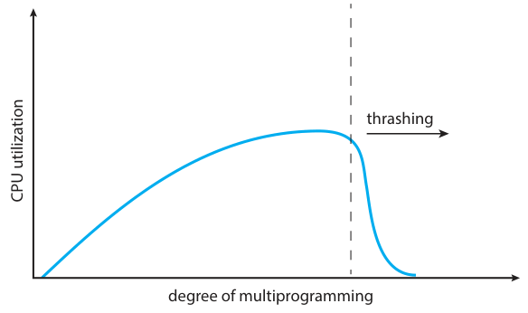
The cure is to decrease the degree of multiprogramming beyond the peak. Local replacement only limits the damage, because thrashing processes still fill the paging-device queue.补救办法是把多道程序度降到峰值之下。局部置换只能限制危害，因为发生抖动的进程仍会占满换页设备的队列。
Step 2: the working set第 2 步：工作集
In words: the working set = the distinct pages used in the last Δ references.用文字表述：工作集 = 最近 Δ 次引用中用到的不同页。
The working-set model（工作集模型）approximates the locality with a window of \(\Delta\) references. A page leaves the working set \(\Delta\) references after its last use.工作集模型用 \(\Delta\) 次引用的窗口来近似局部性。某页在其最后一次使用之后 \(\Delta\) 次引用，就离开工作集。
\(\Delta\) matters. Too small, and the working set misses part of the locality. Too large, and it spans several localities.\(\Delta\) 很关键。太小，工作集会漏掉局部性的一部分。太大，工作集会跨越几个局部性。
How to do it by hand: 1. At time \(t\), take the last \(\Delta\) references, that is the references at times \(t-\Delta+1\) to \(t\). 2. List the distinct pages. This is the working set. 3. Count them. This is the size. 4. Add the sizes of all processes to get \(D\). 5. Compare \(D\) with \(m\).手工做法：1. 在时刻 \(t\)，取最近的 \(\Delta\) 次引用，即时刻 \(t-\Delta+1\) 到 \(t\) 的引用。2. 列出不同的页，这就是工作集。3. 统计数目，这就是大小。4. 把所有进程的大小相加，得到 \(D\)。5. 把 \(D\) 与 \(m\) 比较。
If \(D>m\), the OS suspends a process, writes its pages out and reuses its frames. The suspended process restarts later. This keeps the degree of multiprogramming as high as possible without thrashing.若 \(D>m\)，操作系统挂起一个进程，把它的页写出，并重用其帧。被挂起的进程稍后再重新启动。这样在不发生抖动的前提下，尽可能保持较高的多道程序度。
Step 3: page-fault frequency第 3 步：缺页频率
In words: page-fault frequency (PFF) = give a process more frames when it faults too often, and take frames away when it faults rarely.用文字表述：缺页频率（PFF）= 进程缺页太频繁就给它更多帧，缺页很少就收回帧。
Page-fault frequency（缺页频率）control watches the symptom directly: thrashing means a high fault rate. Each process gets an upper and a lower bound on its fault rate.缺页频率控制直接观察症状：抖动意味着缺页率很高。每个进程都有缺页率的上界和下界。
- Fault rate above the upper bound: the process needs more frames, so allocate one.缺页率高于上界：进程需要更多帧，因此分配一个。
- Fault rate below the lower bound: the process has too many frames, so remove one.缺页率低于下界：进程的帧太多，因此收回一个。
- If the rate is above the upper bound and no free frame exists, suspend a process and give its frames to the processes with high fault rates.若缺页率高于上界且没有空闲帧，挂起一个进程，并把它的帧分给缺页率高的进程。

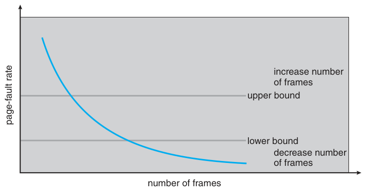
Practice练习
Q1. (Calculation) Reference string (times 1 to 18): 1 2 1 3 1 2 5 5 5 6 5 6 6 7 6 7 7 7, \(\Delta=6\). Give the working set and its size at \(t=6, 9, 12, 14, 18\). When is the demand highest and why?Q1.（计算）引用串（时刻 1 至 18）：1 2 1 3 1 2 5 5 5 6 5 6 6 7 6 7 7 7，\(\Delta=6\)。给出时刻 \(t=6, 9, 12, 14, 18\) 的工作集及其大小。需求何时最高？为什么？
Answer
The window at \(t\) holds the last six references.时刻 \(t\) 的窗口包含最近六次引用。
- \(t=6\):
1 2 1 3 1 2gives \(\{1,2,3\}\), \(\text{WSS}=3\).\(t=6\)：1 2 1 3 1 2得到 \(\{1,2,3\}\)，\(\text{WSS}=3\)。 - \(t=9\):
3 1 2 5 5 5gives \(\{1,2,3,5\}\), \(\text{WSS}=4\).\(t=9\)：3 1 2 5 5 5得到 \(\{1,2,3,5\}\)，\(\text{WSS}=4\)。 - \(t=12\):
5 5 5 6 5 6gives \(\{5,6\}\), \(\text{WSS}=2\).\(t=12\)：5 5 5 6 5 6得到 \(\{5,6\}\)，\(\text{WSS}=2\)。 - \(t=14\):
5 6 5 6 6 7gives \(\{5,6,7\}\), \(\text{WSS}=3\).\(t=14\)：5 6 5 6 6 7得到 \(\{5,6,7\}\)，\(\text{WSS}=3\)。 - \(t=18\):
6 7 6 7 7 7gives \(\{6,7\}\), \(\text{WSS}=2\).\(t=18\)：6 7 6 7 7 7得到 \(\{6,7\}\)，\(\text{WSS}=2\)。
The demand peaks at \(t=9\) (4 frames): the window still contains the old locality \(\{1,2,3\}\) and the first reference to page 5 of the new one. At such transitions the process also has a fault-rate peak.需求在 \(t=9\) 处达到峰值（4 个帧）：此时窗口中仍含有旧的局部 \(\{1,2,3\}\)，以及新局部中对页 5 的首次引用。在这样的转换处，进程的缺页率也会出现峰值。
Q2. (Diagnose) A demand-paged system with degree of multiprogramming 4 is measured in three cases: (a) CPU 13%, paging disk 97%; (b) CPU 87%, disk 3%; (c) CPU 13%, disk 3%. What is happening in each case? Can the degree of multiprogramming be raised? Is paging helping?Q2.（诊断）在多道程序度为 4 的按需调页系统中，测得三种情况：(a) CPU 13%，换页磁盘 97%；(b) CPU 87%，磁盘 3%；(c) CPU 13%，磁盘 3%。每种情况下发生了什么？能否提高多道程序度？换页是否有帮助？
Answer
(a) Thrashing: processes spend their time waiting for page I/O and the paging disk is saturated. Do not raise the degree of multiprogramming; lower it (or add memory). Paging hurts here because the fault rate is far too high.(a) 发生抖动：进程把时间花在等待页 I/O 上，换页磁盘已饱和。不应提高多道程序度，而应降低它（或增加内存）。此时换页有害，因为缺页率过高。
(b) The CPU is busy and there are few faults: the system is well balanced. There is little room to raise the CPU utilization further, and more processes risk memory overload. Paging is helping, because it lets all processes share memory at almost no cost.(b) CPU 繁忙且缺页很少：系统运行良好、负载均衡。CPU 利用率已很难再提高，而增加进程则有引起内存过载的风险。换页是有帮助的，因为它几乎不需付出代价，就能让所有进程共享内存。
(c) Neither the CPU nor the disk is busy: the processes wait for something else (user input, other I/O) or there are too few of them. Raising the degree of multiprogramming will raise CPU utilization. Paging is not the bottleneck.(c) CPU 和磁盘都不繁忙：进程在等待其他事件（用户输入、其他 I/O），或者进程数量太少。提高多道程序度将提高 CPU 利用率。换页不是瓶颈。
Q3. (Design) \(m=64\) frames are available and four processes have working-set sizes 24, 18, 30 and 12. Is the system thrashing? What should the OS do?Q3.（设计）可用帧共 \(m=64\) 个，四个进程的工作集大小分别为 24、18、30 和 12。系统是否在发生抖动？操作系统应当怎么做？
Answer
\(D=24+18+30+12=84>64\), so the demand exceeds memory and the system will thrash. The OS must free at least \(84-64=20\) frames by suspending a process. Suspending the 30-page process gives \(D=54\) (10 frames spare); suspending the 24-page process gives \(D=60\) (4 spare). Suspending the 18- or 12-page process is not enough (\(D=66\) or \(72\)). The OS picks one of the two by priority or age, writes its pages out, reuses its frames and restarts it later when \(D\le m\) again.\(D=24+18+30+12=84>64\)，因此需求超过了内存，系统将发生抖动。操作系统必须通过挂起一个进程，至少释放 \(84-64=20\) 个帧。挂起 30 页的进程后得到 \(D=54\)（剩余 10 个帧）；挂起 24 页的进程后得到 \(D=60\)（剩余 4 个帧）。挂起 18 页或 12 页的进程都不够（分别为 \(D=66\) 或 \(72\)）。操作系统依据优先级或进程年龄在这两者之中选择一个，将其页写出、回收其帧，并在 \(D\le m\) 再次满足时重新启动它。
Memory Compression and Kernel Memory ★★内存压缩与内核内存 ★★
Goal. Explain why the kernel has its own allocators, trace the buddy system, compute objects per slab, and compare the two.目标。 解释为什么内核有自己的分配器，追踪伙伴系统，计算每个 slab 中的对象数，并比较两者。
Memory compression（内存压缩）replaces paging on mobile systems, which do not swap. The system compresses several frames into one instead of writing them to swap space. A later reference to a compressed page causes a fault, and the page is decompressed.内存压缩在移动系统上取代分页，因为移动系统不做交换。系统把若干帧压缩为一个，而不是写到交换空间。之后对压缩页的引用会引起缺页，然后该页被解压。
Kernel memory comes from a pool separate from the user free-frame list, for two reasons:内核内存来自与用户空闲帧链表分开的池，原因有两个：
- The kernel allocates structures of many sizes, often smaller than a page, and must limit fragmentation.内核分配的结构有许多大小，常常小于一页，因此必须限制碎片。
- Some devices access physical memory directly and need physically contiguous pages. User pages need not be contiguous.某些设备直接访问物理内存，需要物理上连续的页。用户页不需要连续。
Step 1: buddy system第 1 步：伙伴系统
In words: buddy system = round the request up to a power of two and split blocks in halves until the size fits.用文字表述：伙伴系统 = 把请求向上取整为 2 的幂，并把块对半切分，直到大小合适。
The buddy system（伙伴系统）allocates from a fixed segment of physically contiguous pages.伙伴系统从一段固定的、物理上连续的页中分配。
How to do it by hand: 1. Round the request up to a power of two. 2. If no free block of that size exists, split the smallest larger free block into buddies. Repeat until the size fits. 3. Allocate the block. 4. On release, merge the block with its buddy if the buddy is free. Repeat upward.手工做法：1. 把请求向上取整为 2 的幂。2. 若没有该大小的空闲块，把最小的更大的空闲块切成伙伴。重复，直到大小合适。3. 分配该块。4. 释放时，若其伙伴空闲，就与伙伴合并。逐级向上重复。
Example: a request of 21 KB from a 256 KB segment. Split 256 into two 128 KB buddies, one 128 into two 64 KB buddies, one 64 into two 32 KB buddies. One 32 KB block serves the request. Waste: 32 − 21 = 11 KB.例：从 256 KB 的段中请求 21 KB。把 256 切成两个 128 KB 的伙伴，把一个 128 切成两个 64 KB 的伙伴，再把一个 64 切成两个 32 KB 的伙伴。取一个 32 KB 的块满足请求。浪费：32 − 21 = 11 KB。

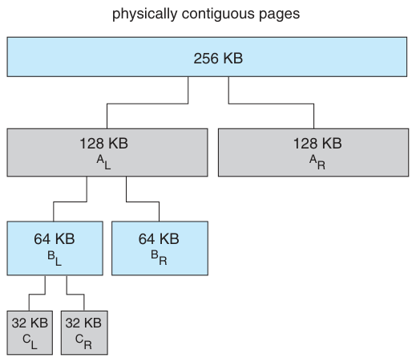
The advantage is fast merging: when the 32 KB block is freed and its buddy is free, they merge into 64 KB, then 128 KB, and so on up to 256 KB. The drawback is internal fragmentation.优点是合并很快：当 32 KB 块被释放且其伙伴空闲时，它们合并为 64 KB，再到 128 KB，直至 256 KB。缺点是内部碎片。
Step 2: slab allocation第 2 步：slab 分配
In words: slab allocation = one cache of ready-made objects per kernel data structure.用文字表述：slab 分配 = 每个内核数据结构一个由现成对象组成的缓存。
A slab（slab）is one or more physically contiguous pages. A cache consists of one or more slabs, and there is one cache per kernel data structure, for example process descriptors. The cache is filled with objects, which are created in advance and marked free or used.slab 是一个或多个物理上连续的页。缓存由一个或多个 slab 组成，每个内核数据结构（例如进程描述符）对应一个缓存。缓存中填充的是预先创建好的对象，并标记为空闲或已使用。
A slab is full (all objects used), empty (all free) or partial. To serve a request the allocator takes a free object from a partial slab. If there is none, it takes one from an empty slab. If there is no empty slab, it creates a new slab from contiguous pages. A freed object is marked free and stays in its cache.slab 满（所有对象已用）、空（全部空闲）或部分使用。为了服务请求，分配器从部分使用的 slab 中取一个空闲对象。若没有，则从空的 slab 中取。若没有空 slab，它从连续的页中创建一个新的 slab。被释放的对象标记为空闲，并留在其缓存中。
Slab allocation wastes no memory inside objects, and requests are served fast, because objects are created in advance and reused.slab 分配不会在对象内部浪费内存，并且由于对象预先创建并被重复使用，请求能很快得到服务。
| Buddy system伙伴系统 | Slab allocationslab 分配 | |
|---|---|---|
| Unit分配单位 | power-of-2 block of a contiguous segment连续段中的 2 的幂大小块 | fixed-size object of one data structure某一数据结构的固定大小对象 |
| Fragmentation碎片情况 | internal, up to almost 50%内部碎片，最高接近 50% | none inside objects对象内部无碎片 |
| Strength优点 | adjacent buddies coalesce quickly相邻伙伴可快速合并 | exact size, objects ready for reuse大小恰好，对象可供复用 |
Practice练习
Q1. (Trace) A buddy system manages a 256 KB segment; always use the lowest-addressed free block of the right size. Requests: A \(=21\) KB, B \(=12\) KB, C \(=40\) KB, D \(=9\) KB. (a) Give the size and start address of each block. (b) Compute the total internal fragmentation. (c) Release B, D, A, C in this order and show the coalescing.Q1.（手工演算）一个伙伴系统管理一段 256 KB 的连续内存；总是使用地址最低的、大小合适的空闲块。请求为：A \(=21\) KB、B \(=12\) KB、C \(=40\) KB、D \(=9\) KB。(a) 给出每个块的大小和起始地址。(b) 计算总的内部碎片。(c) 按 B、D、A、C 的顺序释放，并展示合并过程。
Answer
(a) A: 21 KB \(\to\) 32 KB block at 0 (256 splits into 128 + 128, 128 into 64 + 64, 64 into 32 + 32). B: 12 KB \(\to\) 16 KB at 32 (the free 32 KB block at 32 splits into 16 + 16). C: 40 KB \(\to\) 64 KB at 64. D: 9 KB \(\to\) 16 KB at 48. The 128 KB block at 128 is still free.(a) A：21 KB \(\to\) 32 KB 的块，位于 0 处（256 分为 128 + 128，128 分为 64 + 64，64 分为 32 + 32）。B：12 KB \(\to\) 16 KB，位于 32 处（32 处的空闲 32 KB 块分为 16 + 16）。C：40 KB \(\to\) 64 KB，位于 64 处。D：9 KB \(\to\) 16 KB，位于 48 处。位于 128 处的 128 KB 块仍然空闲。
(b) Waste: A \(32-21=11\), B \(16-12=4\), C \(64-40=24\), D \(16-9=7\); total 46 KB.(b) 浪费：A \(32-21=11\)，B \(16-12=4\)，C \(64-40=24\)，D \(16-9=7\)；总计 46 KB。
(c) Free B: its buddy D (at 48) is allocated, so no merge. Free D: it merges with the free block at 32 into a 32 KB block at 32; that block's buddy is A (at 0), still allocated. Free A: A merges with the 32 KB block at 32 into a 64 KB block at 0; its buddy is C (at 64), still allocated. Free C: the two 64 KB blocks merge into 128 KB at 0, which merges with the free 128 KB at 128 into the original 256 KB.(c) 释放 B：它的伙伴 D（位于 48）仍已分配，因此不合并。释放 D：它与位于 32 处的空闲块合并为位于 32 处的 32 KB 块；该块的伙伴是 A（位于 0），仍已分配。释放 A：A 与位于 32 处的 32 KB 块合并为位于 0 处的 64 KB 块；其伙伴是 C（位于 64），仍已分配。释放 C：两个 64 KB 块合并为位于 0 处的 128 KB 块，再与位于 128 处的空闲 128 KB 块合并，恢复为原来的 256 KB。
Q2. (Calculation) A cache stores 3 KB kernel objects in slabs of three 4 KB pages. (a) How many objects per slab? (b) How many if a slab has only two pages, and how much is left over? (c) The cache has three slabs: slab 1 full, slab 2 with one free object, slab 3 empty. Six requests arrive one after another; which slab serves each?Q2.（计算）某缓存存放 3 KB 的内核对象，其 slab 由三个 4 KB 的页组成。(a) 每个 slab 能容纳多少个对象？(b) 若 slab 只有两个页，能容纳多少个对象？剩余多少空间？(c) 该缓存有三个 slab：slab 1 已满，slab 2 有一个空闲对象，slab 3 为空。依次到达六个请求；每个请求由哪个 slab 满足？
Answer
(a) \(\lfloor 12/3\rfloor=4\) objects, nothing left over.(a) \(\lfloor 12/3\rfloor=4\) 个对象，没有剩余。
(b) \(\lfloor 8/3\rfloor=2\) objects, leaving 2 KB (25% of the slab) unused.(b) \(\lfloor 8/3\rfloor=2\) 个对象，剩下 2 KB（占 slab 的 25%）未被使用。
(c) Request 1 takes the free object of the partial slab 2 (it becomes full). Requests 2 to 5 take objects from the empty slab 3 (partial after request 2, full after request 5). Request 6 finds no free object anywhere, so the allocator creates a new slab from contiguous physical pages and serves the request from it.(c) 请求 1 取走部分使用的 slab 2 中的空闲对象（它变为已满）。请求 2 至 5 从空的 slab 3 中取对象（请求 2 之后变为部分使用，请求 5 之后变为已满）。请求 6 在任何地方都找不到空闲对象，因此分配器从连续的物理页中创建一个新的 slab，并由它满足该请求。
Paging Design Issues and Operating-System Examples ★★分页的设计问题与操作系统实例 ★★
Goal. Compute the gain of prepaging and the TLB reach, and give the factors of the page size. Show how program structure changes the fault count, and describe how Linux, Windows and Solaris approximate LRU.目标。 计算预调页的收益和 TLB 覆盖范围，并给出页大小的各种因素。说明程序结构如何改变缺页次数，并描述 Linux、Windows 和 Solaris 如何近似 LRU。
Step 1: prepaging第 1 步：预调页
In words: prepaging = load pages before they are asked for, and hope that most are used.用文字表述：预调页 = 在页被请求之前就把它装入，并希望大多数页会被用到。
Prepaging（预调页）brings several pages in at once, for example the whole working set of a process that resumes. It saves faults when most of the pages are used and wastes work when few are.预调页一次调入若干页，例如恢复运行的进程的整个工作集。当大多数页被用到时它节省缺页，当只有少数页被用到时则白费工作。
Step 2: page size第 2 步：页大小
The page size is a power of two, from 4 KB to 4 MB. No value is best, because the factors pull in both directions.页大小是 2 的幂，从 4 KB 到 4 MB。没有哪个值是最好的，因为各种因素朝相反方向拉扯。
| Factor因素 | Favours有利于 | Reason原因 |
|---|---|---|
| Page-table size页表大小 | large pages大页 | A 4 MB space needs 4,096 entries with 1 KB pages but only 512 with 8 KB pages.4 MB 的空间若使用 1 KB 的页需要 4,096 个表项，而使用 8 KB 的页则只需 512 个。 |
| Internal fragmentation内部碎片 | small pages小页 | On average half of a process's last page is wasted: 256 B for 512 B pages, 4,096 B for 8 KB pages.平均而言，进程的最后一页会浪费一半：512 B 的页浪费 256 B，8 KB 的页浪费 4,096 B。 |
| I/O timeI/O 时间 | large pages大页 | Seek and latency (about 8 ms) dwarf the transfer: 0.01 ms for 512 B at 50 MB/s. One 1,024 B page takes 8.02 ms, two 512 B pages 16.02 ms.寻道与旋转延迟（约 8 ms）远超传输时间：以 50 MB/s 的速率传输 512 B 仅需 0.01 ms。一个 1,024 B 的页需 8.02 ms，两个 512 B 的页则需 16.02 ms。 |
| Locality ("resolution")局部性（“分辨率”） | small pages小页 | Small pages bring in only what is used, so there is less I/O and less memory: a 200 KB process using half of it moves 100 KB with tiny pages but 200 KB with one big page.小页只调入实际使用的部分，因此 I/O 与内存占用更少：一个 200 KB 的进程若只使用其一半，用极小的页时只移动 100 KB，而用一个大页时则移动 200 KB。 |
| Number of page faults缺页次数 | large pages大页 | The same process faults once with a 200 KB page but 102,400 times with 1-byte pages, and each fault costs interrupt handling, replacement and queueing.同一进程若使用 200 KB 的页则只缺页一次，若使用 1 字节的页则会缺页 102,400 次；而且每次缺页都要付出中断处理、置换和排队的代价。 |
| TLB reachTLB 覆盖范围 | large pages大页 | Reach \(=\) entries \(\times\) page size.覆盖范围 \(=\) 个条目 \(\times\) 页大小。 |
Step 3: TLB reach第 3 步：TLB 覆盖范围
The TLB reach（TLB 覆盖范围）is the amount of memory that the TLB can address. A process runs well if its working set fits in the reach.TLB 覆盖范围是 TLB 能够寻址的内存量。如果进程的工作集能放进覆盖范围之内，它就运行良好。
The reach can grow with more entries (expensive) or with larger pages.覆盖范围可以通过增加表项（成本高）或增大页来扩大。
Step 4: program structure and page locking第 4 步：程序结构与页锁定
Program structure affects the fault count. Take a \(128\times 128\) integer array stored row by row, with 128-word pages, so that each row is one page. Fewer than 128 frames are available.程序结构会影响缺页次数。设有一个按行存放的 \(128\times 128\) 整数数组，页为 128 个字，使每行恰好是一页。可用帧少于 128 个。
Page locking: a page used as an I/O buffer must stay in memory during the transfer. A frame with its lock bit set cannot be chosen as a victim.页锁定：用作 I/O 缓冲区的页在传输期间必须留在内存中。帧的锁定位被置位后，就不能被选为牺牲页。
Step 5: operating-system examples第 5 步：操作系统实例
Linux, Windows and Solaris all use demand paging, copy-on-write and a clock-style approximation of LRU.Linux、Windows 和 Solaris 都使用请求调页、写时复制，以及类时钟的 LRU 近似。
- Linux: global replacement. Pages are on an active list and an inactive list. A referenced page goes to the rear of the active list, the accessed bits are cleared from time to time, and unused pages drift to the inactive list. The daemon
kswapdscans the inactive list and reclaims pages when free memory is low.Linux：全局置换。页分为活动列表和非活动列表。被引用的页被放到活动列表的尾部，访问位会不时清零，未被使用的页逐渐移入非活动列表。守护进程kswapd扫描非活动列表，并在空闲内存不足时回收页。 - Windows 10: demand paging with clustering (a fault also brings in the pages around it). When free memory is low, working-set trimming removes pages from processes that are above their minimum.Windows 10：请求调页并带有聚簇（一次缺页也会调入其周围的页）。当空闲内存不足时，工作集修剪会从超过其最小值的进程中移除页。
- Solaris: if free memory is below
lotsfree(typically 1/64 of memory), the pageout process runs a two-handed clock. The front hand clears reference bits, and the back hand frees the pages whose bit is still 0.Solaris：若空闲内存低于lotsfree（通常为内存的 1/64），页换出进程运行双指针时钟。前指针清除引用位，后指针释放引用位仍为 0 的页。
Practice练习
Q1. (Calculation) A TLB has 128 entries and the page size is 4 KB. (a) What is the TLB reach? (b) A program's working set is 6 MB: how many entries would cover it, and how can the reach be raised? (c) What is the reach with 2 MB huge pages, and what is the drawback?Q1.（计算）某 TLB 有 128 个条目，页大小为 4 KB。(a) TLB 覆盖范围是多少？(b) 某程序的工作集为 6 MB：需要多少个条目才能覆盖它？如何提高覆盖范围？(c) 使用 2 MB 大页时的覆盖范围是多少？其缺点是什么？
Answer
(a) Reach \(=128\times 4\) KB \(=512\) KB.(a) 覆盖范围为 \(=128\times 4\) KB \(=512\) KB。
(b) \(6\text{ MB}/4\text{ KB}=1536\) entries, 12 times the TLB size, so many references go through the page table. The reach rises with more entries (expensive associative memory) or larger or multiple page sizes.(b) 需要 \(6\text{ MB}/4\text{ KB}=1536\) 个条目，是 TLB 容量的 12 倍，因此许多引用都要经过页表。覆盖范围可以通过增加条目（代价高昂的关联存储器）或采用更大的页或多种页大小来提高。
(c) \(128\times 2\) MB \(=256\) MB. The drawbacks are more internal fragmentation, larger transfers and copies, the need for contiguous physical memory, and possibly a software-managed TLB to support several page sizes.(c) \(128\times 2\) MB \(=256\) MB。其缺点是内部碎片增多、传输与复制的数据量更大、需要物理上连续的内存，以及可能需要以软件方式管理 TLB 以支持多种页大小。
Q2. (Calculation) Array A[100][100] is stored row by row, with A[0][0] at location 200; the page size is 200 words. The program (page 0, locations 0 to 199) occupies one of three frames, the other two are initially empty, and replacement is LRU. How many page faults do these loops cause? (a) outer loop over j, inner over i, A[i][j] = 0; (b) outer over i, inner over j.Q2.（计算）数组 A[100][100] 按行存放，其 A[0][0] 位于地址 200 处；页大小为 200 个字。程序（页 0，地址 0 至 199）占用三个帧中的一个，另外两个帧初始为空，置换策略为 LRU。这些循环各产生多少次缺页？(a) 外层循环遍历 j，内层循环遍历 i，A[i][j] = 0；(b) 外层循环遍历 i，内层循环遍历 j。
Answer
A row has 100 words, so a page holds two rows and the array occupies 50 pages (pages 1 to 50).每行有 100 个字，因此每个页恰好容纳两行，数组共占用 50 个页（页 1 至 50）。
(a) For a fixed j, i runs over all rows: the accesses visit pages 1, 1, 2, 2, ..., 50, 50. Each page is touched twice in a row (one fault, one hit), but the two data frames cannot hold the 50 pages, so every page faults again in the next column pass. Faults: \(50\times 100=5000\).(a) 对于固定的 j，i 遍历所有行：访问依次落在页 1、1、2、2、……、50、50 上。每个页都被连续访问两次（一次缺页，一次命中），但两个数据帧无法容纳全部 50 个页，因此在下一轮列遍历中，每个页都会再次缺页。缺页次数：\(50\times 100=5000\)。
(b) Each page is used for 200 consecutive accesses and never again: \(50\) faults.(b) 每个页被连续访问 200 次，之后不再使用：共 \(50\) 次缺页。
Terms to recognise ★需要认识的术语 ★
| Term术语 | What to know要知道什么 |
|---|---|
| Major and minor fault（主缺页、次缺页） | Major: the page is not in memory, so I/O is needed. Minor: the page is in memory but not mapped, so only the page table changes主缺页：页不在内存中，需要 I/O。次缺页：页在内存中但未映射，只需修改页表 |
| Zero-fill-on-demand（按需填零）按需填零 | Frames are cleared before use, so a process never sees another process's old data帧在使用前被清零，因此进程永远看不到其他进程的旧数据 |
| Reaper and OOM killer回收器与 OOM 杀手 | When free memory is low, a reaper reclaims pages. As the last resort, Linux kills a process with a high OOM score空闲内存不足时，回收器回收页。作为最后手段，Linux 会杀死 OOM 分数高的进程 |
| Inverted page table and paging反向页表与分页 | An external page table per process records the disk location of pages. It is used only on faults每个进程的外部页表记录页在磁盘上的位置。只在缺页时使用 |
| SLAB, SLOB, SLUB | Linux kernel allocators: SLAB (since 2.2), SLOB for small systems, SLUB (default since 2.6.24) with less overheadLinux 内核分配器：SLAB（自 2.2 起）、用于小型系统的 SLOB，以及 SLUB（自 2.6.24 起为默认），开销更小 |
Exam-style questions考试题型练习
Q1. (Trace, 12 marks) A process references the pages 7, 2, 3, 1, 2, 5, 3, 4, 6, 7, 7, 1, 0, 5, 4, 6, 2, 3, 0, 1 with three initially empty frames. (a) Trace FIFO and give the number of faults (3 marks). (b) Trace LRU and give the number of faults (3 marks). (c) Trace OPT and give the number of faults (3 marks). (d) Compare the three, give the hit ratio of the best, and say whether a fourth frame could increase the faults under each algorithm (3 marks).Q1.（手工演算，12 分）某进程依次引用页 7, 2, 3, 1, 2, 5, 3, 4, 6, 7, 7, 1, 0, 5, 4, 6, 2, 3, 0, 1，共有三个初始为空的帧。(a) 手工演算 FIFO 并给出缺页次数（3 分）。(b) 手工演算 LRU 并给出缺页次数（3 分）。(c) 手工演算 OPT 并给出缺页次数（3 分）。(d) 比较三者，给出最优算法的命中率，并说明在每种算法下增加第四个帧是否可能增加缺页次数（3 分）。
Answer
Notation: a page followed by (x) means that page was loaded and x evicted.记号：页后接 (x) 表示该页被装入，同时淘汰了 x。
(a) FIFO (evict the oldest page): faults 7, 2, 3 (fill), 1(7), 5(2), 4(3), 6(1), 7(5), 1(4), 0(6), 5(7), 4(1), 6(0), 2(5), 3(4), 0(6), 1(2). The references to 2 (5th), 3 (7th) and 7 (11th) hit. 17 faults.(a) FIFO（淘汰最老的页）：缺页 7、2、3（填充）、1(7)、5(2)、4(3)、6(1)、7(5)、1(4)、0(6)、5(7)、4(1)、6(0)、2(5)、3(4)、0(6)、1(2)。第 5 次引用的 2、第 7 次引用的 3 以及第 11 次引用的 7 都命中。共 17 次缺页。
(b) LRU (evict the page unused longest): faults 7, 2, 3, 1(7), 5(3), 3(1), 4(2), 6(5), 7(3), 1(4), 0(6), 5(7), 4(1), 6(0), 2(5), 3(4), 0(6), 1(2). Only the references to 2 (5th) and 7 (11th) hit. 18 faults.(b) LRU（淘汰最久未使用的页）：缺页 7、2、3、1(7)、5(3)、3(1)、4(2)、6(5)、7(3)、1(4)、0(6)、5(7)、4(1)、6(0)、2(5)、3(4)、0(6)、1(2)。只有第 5 次引用的 2 和第 11 次引用的 7 命中。共 18 次缺页。
(c) OPT (evict the page used farthest ahead): faults 7, 2, 3, 1(7), 5(2), 4(3), 6(4), 7(6), 0(7), 4(5), 6(4), 2(6), 3(2). Seven references hit. 13 faults.(c) OPT（淘汰将来最晚才被使用的页）：缺页 7、2、3、1(7)、5(2)、4(3)、6(4)、7(6)、0(7)、4(5)、6(4)、2(6)、3(2)。有七次引用命中。共 13 次缺页。
(d) OPT (13) \(<\) FIFO (17) \(<\) LRU (18). The best, OPT, has hit ratio \(7/20=35\%\). LRU is slightly worse than FIFO on this string, which has little locality: no practical algorithm wins on every string, only OPT is guaranteed minimal. OPT and LRU are stack algorithms, so a fourth frame can never increase their faults (with four frames they give 11 and 17). FIFO can show Belady's anomaly in general, although here it stays at 17.(d) OPT（13 次）\(<\) FIFO（17 次）\(<\) LRU（18 次）。最优的 OPT 的命中率为 \(7/20=35\%\)。在这一引用串上，LRU 略差于 FIFO，因为该串的局部性很弱：没有实用算法能在所有引用串上获胜，只有 OPT 能保证缺页次数最少。OPT 与 LRU 都是栈式算法，因此增加第四个帧永远不会增加它们的缺页次数（使用四个帧时，二者分别给出 11 次与 17 次缺页）。一般而言，FIFO 可能出现 Belady 异常，尽管在此串上它仍为 17 次。
思路：逐列写出内存内容，先数缺页再分别比较；OPT 只看后面最晚才用到的页。
Q2. (Demand paging and EAT, 10 marks) A paged system has memory-access time 100 ns and a one-level page table in memory. A TLB with lookup time 10 ns has a hit ratio of 90%. A page fault is serviced in 8 ms if the victim is clean and 20 ms if it is modified; 25% of victims are modified, and the page-fault rate is \(2\times 10^{-6}\) per reference. (a) Describe what the hardware and the OS do when a reference hits an invalid page-table entry (4 marks). (b) Compute the EAT without page faults (2 marks). (c) Compute the mean fault service time and the EAT with faults (3 marks). (d) What is the largest page-fault rate for which EAT is at most 1.5 times the no-fault EAT (1 mark)?Q2.（按需调页与 EAT，10 分）某分页系统的内存访问时间为 100 ns，其一级页表保存在内存中。查找时间为 10 ns 的 TLB 命中率为 90%。若牺牲帧未被修改，则缺页服务时间为 8 ms；若牺牲帧已被修改，则为 20 ms。25% 的牺牲帧已被修改，且每次引用的缺页率为 \(2\times 10^{-6}\)。(a) 描述当一次引用命中无效的页表项时，硬件和操作系统分别做什么（4 分）。(b) 计算无缺页时的 EAT（2 分）。(c) 计算平均缺页服务时间以及有缺页时的 EAT（3 分）。(d) 使 EAT 不超过无缺页 EAT 的 1.5 倍的最大缺页率是多少（1 分）？
Answer
(a) The hardware finds the entry invalid (after a TLB miss) and traps to the OS, which saves the process state. The OS then (1) checks in the process's internal table whether the reference is legal and terminates the process if not; (2) finds a free frame, or selects a victim with the replacement algorithm and writes it out first if its modify bit is set; (3) schedules the read of the page from the swap device and blocks the process, so another process runs; (4) on the I/O-completion interrupt updates the page table (valid bit, frame number) and the internal table and makes the process ready; (5) when the process is scheduled again, restores its state and restarts the faulting instruction.(a) 硬件（在 TLB 未命中之后）发现该表项无效，于是陷入操作系统，由操作系统保存进程状态。随后，操作系统：(1) 在进程的内部表中检查该引用是否合法，若不合法则终止进程；(2) 找到一个空闲帧，或用置换算法选出牺牲帧，若其修改位已置位则先将其写出；(3) 调度从交换设备读取该页的操作，并阻塞该进程，使其他进程得以运行；(4) 在 I/O 完成中断到来时，更新页表（有效位、帧号）和内部表，并使该进程就绪；(5) 当该进程再次被调度时，恢复其状态并重新启动发生缺页的指令。
(b) \(\text{EAT}_0=0.9\,(10+100)+0.1\,(10+100+100)=99+21=120\) ns.(b) \(\text{EAT}_0=0.9\,(10+100)+0.1\,(10+100+100)=99+21=120\) ns。
(c) \(T_{\text{fault}}=0.75\times 8+0.25\times 20=11\) ms \(=11{,}000{,}000\) ns. EAT \(=(1-2\times 10^{-6})\cdot 120+2\times 10^{-6}\cdot 11000000\approx 120+22=142\) ns, about 18% slower than 120 ns.(c) \(T_{\text{fault}}=0.75\times 8+0.25\times 20=11\) ms \(=11{,}000{,}000\) ns。EAT \(=(1-2\times 10^{-6})\cdot 120+2\times 10^{-6}\cdot 11000000\approx 120+22=142\) ns，比 120 ns 慢约 18%。
(d) \(120+p\,(11000000-120)\le 180\), so \(p\le 60/10999880\approx 5.5\times 10^{-6}\).(d) \(120+p\,(11000000-120)\le 180\)，因此 \(p\le 60/10999880\approx 5.5\times 10^{-6}\)。
思路：先把 TLB 的平均访问时间当成无缺页的 ma，再套 EAT 公式；单位统一成 ns。
Q3. (Thrashing and working sets, 12 marks) A multiprogrammed system with global replacement admits a new process whenever CPU utilization falls below 40%. After a new batch job starts, CPU utilization falls to 12% and the paging disk is 96% busy. (a) Explain what is happening and why admitting more processes makes it worse (4 marks). (b) The system has \(m=70\) frames and four processes with working-set sizes 25, 30, 20 and 15. Is it thrashing? Which single process could be suspended to fix it (3 marks)? (c) A PFF policy has bounds 0.05 and 0.01 faults per reference. What does it do when a process measures 0.07, and when it measures 0.004 (3 marks)? (d) Why does local replacement alone not cure thrashing (2 marks)?Q3.（抖动与工作集，12 分）一个采用全局置换的多道程序系统，每当 CPU 利用率低于 40% 时便接纳一个新进程。一批新的作业启动之后，CPU 利用率降至 12%，而换页磁盘的繁忙程度达到 96%。(a) 解释正在发生什么，以及为什么接纳更多进程会使情况变得更糟（4 分）。(b) 系统共有 \(m=70\) 个帧，四个进程的工作集大小分别为 25、30、20 和 15。系统是否在发生抖动？挂起哪一个进程即可解决问题（3 分）？(c) 某 PFF 策略的上下界分别为每次引用 0.05 和 0.01 次缺页。当某进程测得 0.07 时，以及测得 0.004 时，该策略分别做什么（3 分）？(d) 为什么仅采用局部置换无法根治抖动（2 分）？
Answer
(a) The system is thrashing: the processes' working sets no longer fit, so they fault continuously and spend their time waiting for the paging device, which is saturated (96%). The ready queue empties and CPU utilization collapses to 12%. The scheduler reads the low utilization as spare capacity and admits more processes; each takes frames from running processes under global replacement, which causes more faults and longer queues at the paging device, so utilization falls further. The right action is to decrease the degree of multiprogramming.(a) 系统正在发生抖动：各进程的工作集已不再能装入内存，因而它们持续缺页，把时间花在等待已饱和（96%）的换页设备上。就绪队列变空，CPU 利用率骤降至 12%。调度程序把低利用率误读为有剩余容量，于是接纳更多进程；在全局置换下，每个新进程都从正在运行的进程那里抢帧，从而引发更多缺页，换页设备的队列也随之变长，利用率进一步下降。正确的做法是降低多道程序度。
(b) \(D=25+30+20+15=90>70\), so the system is thrashing. At least \(90-70=20\) frames must be freed, so the process suspended must have a working set of at least 20: the 20-, 25- or 30-page process. Suspending the 15-page process leaves \(D=75>70\) and is not enough. Suspending the 20-page process gives \(D=70=m\): all remaining working sets fit exactly.(b) \(D=25+30+20+15=90>70\)，因此系统正在发生抖动。至少需要释放 \(90-70=20\) 个帧，因此被挂起的进程的工作集至少应为 20：即 20 页、25 页或 30 页的进程。挂起 15 页的进程后剩下 \(D=75>70\)，不足以解决问题。挂起 20 页的进程则得到 \(D=70=m\)：其余所有工作集恰好都能装入。
(c) At 0.07 (above the upper bound 0.05) the process needs more frames, so PFF allocates one; if no frame is free, a process is swapped out and its frames go to processes with high fault rates. At 0.004 (below the lower bound 0.01) the process has more frames than it needs, so PFF removes one frame.(c) 当测得 0.07（高于上界 0.05）时，该进程需要更多的帧，因此 PFF 为其分配一个帧；若没有空闲帧，则换出一个进程，并把它的帧分配给缺页率高的进程。当测得 0.004（低于下界 0.01）时，该进程拥有的帧多于所需，因此 PFF 收回一个帧。
(d) Local replacement stops a thrashing process from stealing frames, but thrashing processes still keep the paging-device queue long, so the average fault service time rises and even well-behaved processes see a longer effective access time. The cure needs fewer processes or more memory.(d) 局部置换可以阻止发生抖动的进程抢夺他人的帧，但发生抖动的进程仍会使换页设备的队列保持较长，因此平均缺页服务时间上升，连运行良好的进程也会看到更长的有效访问时间。根治抖动需要减少进程数，或增加内存。
Q4. (Allocation and replacement scope, 8 marks) A system has 128 frames; the OS keeps 35 and the rest are shared by three processes of 20, 60 and 120 pages. The architecture needs at least 3 frames per process. (a) Give the equal and the proportional allocation (3 marks). (b) What happens if a process receives fewer frames than the architectural minimum (2 marks)? (c) Compare global and local replacement for throughput and predictability (3 marks).Q4.（帧分配与置换范围，8 分）某系统有 128 个帧，操作系统保留 35 个，其余的帧由三个进程共享，它们分别为 20 页、60 页和 120 页。体系结构要求每个进程至少有 3 个帧。(a) 给出平均分配与按比例分配的结果（3 分）。(b) 若某进程获得的帧少于体系结构规定的最小值，会发生什么（2 分）？(c) 从吞吐量与可预测性两方面比较全局置换与局部置换（3 分）。
Answer
(a) 93 frames are available. Equal: \(93/3=31\) frames each; the 20-page process cannot use more than 20, so 11 of its frames are wasted. Proportional: \(S=200\), \(a_1=93\times 20/200=9.3\to 9\), \(a_2=93\times 60/200=27.9\to 27\), \(a_3=93\times 120/200=55.8\to 55\); the total is 91, leaving 2 spare frames. All three are above the minimum 3.(a) 共有 93 个可用帧。平均分配：每个进程 \(93/3=31\) 个帧；20 页的进程最多只能使用 20 个，因此其中 11 个帧被浪费。按比例分配：\(S=200\)、\(a_1=93\times 20/200=9.3\to 9\)、\(a_2=93\times 60/200=27.9\to 27\)、\(a_3=93\times 120/200=55.8\to 55\)；总计 91 个，剩余 2 个帧。三者均高于最小值 3。
(b) An instruction may reference up to the minimum number of distinct pages; with fewer frames it can never have all of them resident, so each restart faults again and the process makes no progress.(b) 一条指令最多可能引用与最小帧数相同数目的不同页；帧数更少时，它永远无法使所有这些页同时驻留，因此每次重新启动都会再次缺页，进程毫无进展。
(c) Global replacement lets a process take any frame, so memory is used better and throughput is higher, but the speed of a process depends on the other processes (the same run can differ widely). Local replacement keeps each process within its own frames: performance is predictable and thrashing does not spread, but frames of other processes may sit idle.(c) 全局置换允许进程取得任意帧，因此内存利用更充分，吞吐量更高；但进程的速度取决于其他进程（同一次运行的耗时可能差别很大）。局部置换则使每个进程局限在自己的帧之内：性能可预测，抖动也不会扩散，但其他进程的帧可能闲置。
Q5. (Short answers, 10 marks) (a) For a reference to a virtual address, say whether each case can occur, with a one-line reason: TLB miss without page fault; TLB miss with page fault; TLB hit without page fault; TLB hit with page fault (4 marks). (b) A parent with 2,000 resident pages forks a child that writes to 60 pages before exiting. How many page copies are made with copy-on-write and with a plain copying fork() (3 marks)? (c) The kernel requests 70 KB from a buddy system managing an empty 256 KB segment. Give the block size, the internal fragmentation and what happens on release (3 marks).Q5.（简答题，10 分）(a) 对于一次虚拟地址引用，判断以下每种情况是否可能发生，并用一行说明理由：TLB 未命中且无缺页；TLB 未命中且有缺页；TLB 命中且无缺页；TLB 命中且有缺页（4 分）。(b) 一个拥有 2,000 个驻留页的父进程 fork 出一个子进程，子进程在退出前写入了 60 个页。采用写时复制时，共产生多少次页复制？采用普通的复制式 fork() 时又是多少（3 分）？(c) 内核从一个空的、256 KB 的内存段所管理的伙伴系统中请求 70 KB。给出块大小、内部碎片以及释放时会发生什么（3 分）。
Answer
(a) TLB miss, no fault: possible; the page is resident, so its page-table entry is read and loaded into the TLB. TLB miss, fault: possible; the page-table entry is invalid, so the OS must page it in. TLB hit, no fault: possible; this is the normal fast case. TLB hit, fault: impossible; a TLB entry exists only for a valid, resident page, and when a page is evicted its TLB entry is invalidated.(a) TLB 未命中且无缺页：可能；该页驻留在内存中，因此读取其页表项并装入 TLB。TLB 未命中且有缺页：可能；页表项无效，因此操作系统必须把该页调入。TLB 命中且无缺页：可能；这是正常的快速情形。TLB 命中且有缺页：不可能；TLB 表项只为有效且驻留的页而存在，页被淘汰时其 TLB 表项会被置为无效。
(b) With copy-on-write only the 60 written pages are copied (the other 1,940 stay shared). A plain copying fork() copies all 2,000 pages at fork time.(b) 采用写时复制时，只有被写入的 60 个页会被复制（其余 1,940 个仍然共享）。普通的复制式 fork() 则会在 fork 时复制全部 2,000 个页。
(c) \(70\) KB rounds up to \(b=128\) KB. The 256 KB segment splits once into two 128 KB buddies and one is allocated. Internal fragmentation is \(128-70=58\) KB (45%). On release, the block merges with its buddy if that is free, restoring the 256 KB segment.(c) \(70\) KB 向上取整为 \(b=128\) KB。256 KB 的段分裂一次，得到两个 128 KB 的伙伴，并分配其中一个。内部碎片为 \(128-70=58\) KB（45%）。释放时，若其伙伴为空闲，则该块与之合并，恢复为 256 KB 的段。
易错：TLB 未命中不等于缺页；缺页只发生在页表项无效时。
Textbook exercises课后习题
Textbook exercises with answers: 43 questions教材习题及答案，共 43 题，点击展开
E1. (Practice Exercise 10.1) Under what circumstances do page faults occur? Describe the actions taken by the operating system when a page fault occurs.E1.（练习题 10.1）在什么情况下会发生缺页？当缺页发生时，操作系统要采取哪些动作？
Answer
A page fault occurs when a process references a page whose page-table entry is marked invalid, that is, a page that is not in main memory. Under demand paging this happens (i) at the first reference to a page, which has never been loaded; (ii) at a reference to a legal page that was replaced earlier and now exists only on the backing store; and (iii) at a reference to an address outside the process's address space, which is an illegal access.当进程引用一个页表项被标记为无效的页，即不在主存中的页时，就会发生缺页。在按需调页下，缺页发生于以下情况：(i) 首次引用某页，而该页从未被装入；(ii) 引用一个合法页，而该页先前已被置换出去，现仅存在于后备存储器上；(iii) 引用进程地址空间之外的地址，这属于非法访问。
Actions of the operating system:操作系统的动作如下：
- The hardware traps to the OS, which saves the registers and the state of the process.硬件陷入操作系统，由操作系统保存寄存器和进程的状态。
- The OS checks an internal table (kept with the PCB) to decide whether the reference was legal. If it was illegal, the process is terminated; otherwise the page is legal but not resident.操作系统检查一张与进程控制块（PCB）一同保存的内部表，以判定该引用是否合法。若不合法，则终止该进程；否则该页是合法的，只是不在内存中。
- The OS takes a frame from the free-frame list. If none is free, the page-replacement algorithm selects a victim, which is written to the backing store if its modify bit is set; the victim's page-table entry is marked invalid.操作系统从空闲帧链表中取得一个帧。若没有空闲帧，则页面置换算法选出一个牺牲帧；若该牺牲帧的修改位已置位，则将其写入后备存储器；然后把该牺牲帧的页表项标记为无效。
- The OS schedules a disk read of the required page into the frame. The process is blocked and the CPU is given to another process.操作系统调度一次磁盘读操作，把所需的页读入该帧。进程被阻塞，CPU 分配给另一个进程。
- When the I/O-completion interrupt arrives, the OS updates the page table (frame number, valid bit) and its internal tables and makes the process ready.I/O 完成中断到达时，操作系统更新页表（帧号、有效位）及其内部表，并使进程进入就绪态。
- When the process is scheduled again, its state is restored and the faulting instruction is restarted; this time the reference succeeds.进程再次被调度时，恢复其状态并重新启动引发缺页的指令；这一次，引用成功。
思路：先说触发条件（页表项无效），再按"陷入—检查合法性—找空闲帧（必要时置换）—读盘—更新页表—重启指令"六步写。
E2. (Practice Exercise 10.2) Assume that you have a page-reference string for a process with \(m\) frames (initially all empty). The page-reference string has length \(p\), and \(n\) distinct page numbers occur in it. Answer these questions for any page-replacement algorithm: (a) What is a lower bound on the number of page faults? (b) What is an upper bound on the number of page faults?E2.（练习题 10.2）假设某进程的页引用串使用 \(m\) 个帧（开始时全部为空），该页引用串长度为 \(p\)，其中出现了 \(n\) 个不同的页号。对于任意页面置换算法，回答下列问题：(a) 缺页次数的下界是多少？(b) 缺页次数的上界是多少？
Answer
(a) Lower bound: \(n\). The frames start empty, so the first reference to each of the \(n\) distinct pages must fault, whatever the algorithm (even OPT). The bound is attained when \(m\ge n\), because then nothing is ever evicted. For \(m<n\) some pages must be reloaded and the minimum is larger.(a) 下界：\(n\)。 帧开始时为空，因此对 \(n\) 个不同页中的每一页，其首次引用都必然缺页，无论采用哪种算法（即使是 OPT）。当 \(m\ge n\) 时，该下界可以达到，因为此时从不淘汰任何页。对于 \(m<n\)，某些页必须重新装入，最小缺页次数更大。
(b) Upper bound: \(p\). Each reference causes at most one fault, so there are at most \(p\) faults. The bound is attained when every reference faults, for example with \(m=1\) and no two consecutive references to the same page, or with LRU on a cyclic string over \(m+1\) pages.(b) 上界：\(p\)。 每次引用至多引起一次缺页，因此缺页至多 \(p\) 次。当每次引用都缺页时，该上界可以达到，例如当 \(m=1\) 且没有两个连续引用指向同一页时，或在覆盖 \(m+1\) 个页的循环串上使用 LRU 时。
Hence \(n\le \text{number of faults}\le p\) for every algorithm.因此，对所有算法都有 \(n\le \text{number of faults}\le p\)。
E3. (Practice Exercise 10.3) Consider the following page-replacement algorithms: (a) LRU replacement, (b) FIFO replacement, (c) optimal replacement, (d) second-chance replacement. Rank these algorithms on a five-point scale from "bad" to "perfect" according to their page-fault rate. Separate those algorithms that suffer from Belady's anomaly from those that do not.E3.（练习题 10.3）考虑下列页面置换算法：(a) LRU 置换，(b) FIFO 置换，(c) 最优置换，(d) 第二次机会置换。请按缺页率，在从“差”到“完美”的五级量表上为这些算法评级。请将存在 Belady 异常的算法与不存在该异常的算法区分开来。
Answer
| Rank排名 | Algorithm算法 | Page-fault rate (five-point scale)缺页率（五级量表） | Belady's anomalyBelady 异常 |
|---|---|---|---|
| 1 | Optimal最优 | perfect完美 | no否 |
| 2 | LRU | good好 | no否 |
| 3 | Second chance第二次机会 | fair一般 | yes是 |
| 4 | FIFO | bad差 | yes是 |
Reasons. OPT replaces the page whose next use lies farthest in the future, so it makes the fewest faults of any algorithm; it needs future knowledge and serves only as a benchmark. LRU approximates OPT by looking backwards and relies on locality. Second chance is FIFO plus a reference bit: it spares recently used pages but only coarsely, and it degenerates to FIFO when all bits are set. FIFO ignores usage and evicts old pages even when they are heavily used.理由。最优（OPT）置换掉下一次使用时间最远的页，因此在所有算法中它的缺页次数最少；但它需要预知未来，仅可作为基准。LRU 通过向后看来近似 OPT，并依赖局部性。第二次机会是带引用位的 FIFO：它保留最近使用过的页，但精度较粗，并且当所有引用位都已置位时退化为 FIFO。FIFO 不考虑使用情况，即使旧页被大量使用，它也会将其淘汰。
Belady's anomaly (more frames, more faults) cannot occur in a stack algorithm, i.e., one for which the set of pages in memory with \(m\) frames is always a subset of the set with \(m+1\) frames. OPT and LRU are stack algorithms; FIFO and second chance are not. Example: on 1 2 3 4 1 2 5 1 2 3 4 5 FIFO makes 9 faults with 3 frames and 10 with 4 frames (second chance also goes from 9 to 10), whereas LRU makes 10 and then 8, and OPT 7 and then 6.Belady 异常（帧数增加而缺页次数增加）不可能出现在栈算法中，即对于栈算法，具有 \(m\) 帧时内存中的页集合，总是具有 \(m+1\) 帧时页集合的子集。OPT 和 LRU 是栈算法，FIFO 与第二次机会则不是。例如，对于 1 2 3 4 1 2 5 1 2 3 4 5，FIFO 在 3 帧时缺页 9 次，在 4 帧时缺页 10 次（第二次机会也从 9 次增至 10 次）；而 LRU 分别缺页 10 次和 8 次，OPT 分别缺页 7 次和 6 次。
The ranking describes typical programs with locality; on one particular string FIFO may beat LRU.上述排序描述的是具有局部性的典型程序；对于某个特定的引用串，FIFO 也可能优于 LRU。
思路：OPT > LRU > 二次机会 > FIFO；栈算法（OPT、LRU）无 Belady 异常，FIFO 和二次机会有。
E4. (Practice Exercise 10.4) An operating system supports a paged virtual memory. The central processor has a cycle time of 1 microsecond. It costs an additional 1 microsecond to access a page other than the current one. Pages have 1,000 words, and the paging device is a drum that rotates at 3,000 revolutions per minute and transfers 1 million words per second. The following statistical measurements were obtained from the system:E4.（练习题 10.4）某操作系统支持分页虚拟内存。中央处理器的周期时间为 1 μs。访问当前页之外的页需要额外的 1 μs。页的大小为 1,000 个字，分页设备是一个磁鼓，以每分钟 3,000 转旋转，传输速率为每秒 100 万个字。系统的统计测量结果如下：
- One percent of all instructions executed accessed a page other than the current page.所执行指令中有 1% 访问了当前页之外的页。
- Of the instructions that accessed another page, 80 percent accessed a page already in memory.在访问其他页的指令中，有 80% 访问的页已经在内存中。
- When a new page was required, the replaced page was modified 50 percent of the time.当需要装入新页时，被替换的页有 50% 的时间被修改过。
Calculate the effective instruction time on this system, assuming that the system is running one process only and that the processor is idle during drum transfers.假设系统只运行一个进程，且处理器在磁鼓传输期间处于空闲状态，计算该系统的有效指令时间。
Answer
Drum times. At 3,000 rpm the drum makes 50 revolutions per second, i.e., one revolution takes 20 ms, so the average rotational latency is 10 ms = 10,000 μs. Transferring one 1,000-word page at \(10^6\) words/s takes 1 ms = 1,000 μs. One drum operation (read or write) therefore costs 11,000 μs.磁鼓时间。磁鼓以 3,000 rpm 旋转时每秒转 50 圈，即每转一圈需 20 ms，因此平均旋转等待时间为 10 ms = 10,000 μs。以 \(10^6\) 字/秒的速度传输一个 1,000 字的页需要 1 ms = 1,000 μs。因此，一次磁鼓操作（读或写）需要 11,000 μs。
Fault service time. A fault always reads the new page (11,000 μs); with probability 0.5 the victim is modified and must first be written out (another 11,000 μs). The mean service time is \(11{,}000+0.5\times 11{,}000=16{,}500\) μs, during which the processor is idle.缺页服务时间。一次缺页总要读入新页（11,000 μs）；以 0.5 的概率，牺牲页已被修改，因而必须先写出（另需 11,000 μs）。平均服务时间为 \(11{,}000+0.5\times 11{,}000=16{,}500\) μs，在此期间处理器处于空闲状态。
| Case情形 | Probability概率 | Time时间 |
|---|---|---|
| Instruction stays on the current page指令仍在当前页内 | 0.99 | 1 μs |
| Other page, already in memory访问其他页，该页已在内存中 | \(0.01\times 0.8=0.008\) | 2 μs |
| Other page, page fault访问其他页，发生缺页 | \(0.01\times 0.2=0.002\) | 2 μs + 16,500 μs |
\[T_{\text{eff}}=0.99(1)+0.008(2)+0.002(2+16500)=0.99+0.016+33.004\approx 34.0\ \mu\text{s}\]
Interpretation: an instruction takes about 34 times the ideal 1 μs, and about 97% of that time (33.0 of 34.0 μs) is spent waiting for the drum; although only 0.2% of the instructions fault, the faults dominate.解释：一条指令的耗时约为理想值 1 μs 的 34 倍，其中约 97%（34.0 μs 中的 33.0 μs）用于等待磁鼓；尽管只有 0.2% 的指令会缺页，但缺页占据了主导。
思路：先算磁鼓一次传输 = 平均旋转延迟 10 ms + 传输 1 ms；缺页时再按 50% 概率加一次写回。
E5. (Practice Exercise 10.5) Consider the page table for a system with 12-bit virtual and physical addresses and 256-byte pages.E5.（练习题 10.5）考虑某系统的页表，该系统的虚拟地址和物理地址均为 12 位，页大小为 256 字节。
| Page页 | Page frame帧号 |
|---|---|
| 0 | – |
| 1 | 2 |
| 2 | C |
| 3 | A |
| 4 | – |
| 5 | 4 |
| 6 | 3 |
| 7 | – |
| 8 | B |
| 9 | 0 |
The list of free page frames is D, E, F (that is, D is at the head of the list, E is second, and F is last). A dash for a page frame indicates that the page is not in memory. Convert the following virtual addresses to their equivalent physical addresses in hexadecimal. All numbers are given in hexadecimal: 9EF, 111, 700, 0FF.空闲帧链表为 D、E、F（即 D 位于链首，E 居第二，F 位于链尾）。帧号列中的“–”表示该页不在内存中。请把下列虚拟地址转换为等价的物理地址，结果用十六进制表示。所有数字均为十六进制：9EF、111、700、0FF。
Answer
A page has 256 = \(2^8\) bytes, so the low 8 bits (two hex digits) are the offset and the high 4 bits (one hex digit) are the page number. Translation replaces the page digit by the frame digit and keeps the offset. A page marked "–" causes a page fault; the OS then assigns the next frame of the free list.一页有 256 = \(2^8\) 字节，因此低 8 位（两位十六进制数字）为页内偏移，高 4 位（一位十六进制数字）为页号。转换时，用帧号的数字替换页号的数字，并保留偏移不变。帧号为“–”的页会引起缺页；操作系统随后分配空闲帧链表中的下一个帧。
| Virtual虚拟地址 | Page页 | Offset偏移量 | Page frame帧号 | Physical物理地址 |
|---|---|---|---|---|
| 9EF | 9 | EF | 0 | 0EF |
| 111 | 1 | 11 | 2 | 211 |
| 700 | 7 | 00 | not resident: fault, free frame D不在内存中：缺页，分配空闲帧 D | D00 |
| 0FF | 0 | FF | not resident: fault, free frame E不在内存中：缺页，分配空闲帧 E | EFF |
The second fault takes E because D has already been used.第二次缺页取 E，因为 D 已经被使用。
E6. (Practice Exercise 10.6) Discuss the hardware functions required to support demand paging.E6.（练习题 10.6）讨论支持按需调页所需的硬件功能。
Answer
- Page table with a valid–invalid bit. On every memory reference the hardware looks up the page table (through the TLB) and checks whether the page is resident. An invalid entry makes the hardware trap to the OS (page fault).带有效-无效位的页表。 每次内存引用时，硬件都通过快表（TLB）查找页表，并检查该页是否驻留在内存中。无效表项会使硬件陷入操作系统（即缺页）。
- Protection bits. Read/write/execute permissions are checked on every access in hardware; a violation traps (this is also what copy-on-write uses).保护位。 硬件在每次访问时都检查读、写、执行权限；违反时产生陷阱（写时复制也利用了这一机制）。
- TLB. An associative cache of page-table entries so that most translations need no extra memory access; without it every reference would cost an additional access to the page table.TLB。 页表项的一种关联式缓存，使大多数地址转换无需额外的内存访问；若没有它，每次引用都要额外访问一次页表。
- Reference and modify bits, set by the hardware, which the replacement algorithm uses to choose a victim and to avoid writing back unmodified pages.引用位与修改位由硬件设置，置换算法利用它们来选择牺牲帧，并避免写回未被修改的页。
- Restartable instructions. After the OS has loaded the page, the faulting instruction must be re-executed. The CPU must therefore save enough state (PC, registers, condition codes), and instructions that change several locations (block moves, auto-increment addressing) must either touch all their pages first or be able to undo their partial effects.可重新启动的指令。 操作系统装入该页之后，必须重新执行引发缺页的指令。因此，CPU 必须保存足够的状态（PC、寄存器、条件码）；而修改多个位置的指令（如块移动、自增寻址）必须先访问它们涉及的所有页，或者能够撤销其部分效果。
- Secondary storage (swap device, normally a fast disk) with DMA, so that a page is transferred while the CPU runs another process.二级存储（交换设备，通常为快速磁盘），并配有 DMA，使得页面在 CPU 运行另一进程时即可传输。
E7. (Practice Exercise 10.7) Consider the two-dimensional array A:E7.（练习题 10.7）考虑二维数组 A：
int A[][] = new int[100][100];
where A[0][0] is at location 200 in a paged memory system with pages of size 200. A small process that manipulates the matrix resides in page 0 (locations 0 to 199). Thus, every instruction fetch will be from page 0. For three page frames, how many page faults are generated by the following array-initialization loops? Use LRU replacement, and assume that page frame 1 contains the process and the other two are initially empty.其中 A[0][0] 位于分页内存系统的地址 200 处，页大小为 200。一个操纵该矩阵的小进程驻留在第 0 页（地址 0 至 199）中，因此每次取指令都访问第 0 页。对于三个页帧，以下数组初始化循环会产生多少次缺页？使用 LRU 置换，并假设页帧 1 包含该进程，其余两个页帧初始为空。
(a)
for (int j = 0; j < 100; j++)
for (int i = 0; i < 100; i++)
A[i][j] = 0;
(b)
for (int i = 0; i < 100; i++)
for (int j = 0; j < 100; j++)
A[i][j] = 0;
Answer
Assume the array is stored in row-major order, one location per element. Then A[i][j] is at location \(200+100i+j\), which lies in page \(1+\lfloor i/2\rfloor\): each page holds two complete rows, and the 10,000 elements occupy pages 1 to 50. Instruction fetches always hit page 0 (frame 1), so only the other two frames hold array pages.假设数组按行主序存储，每个元素占一个单元。于是 A[i][j] 位于地址 \(200+100i+j\)，该地址位于第 \(1+\lfloor i/2\rfloor\) 页：每页恰好包含两整行，而 10,000 个元素占据第 1 至第 50 页。取指令总是访问第 0 页（帧 1），因此只有另外两个帧用于存放数组页。
(a) Column by column. For a fixed \(j\) the inner loop visits rows \(i=0,\dots,99\), i.e., pages \(1,1,2,2,3,3,\dots,50,50\). The second access to each page hits, but every new page faults, and with only two frames LRU has always evicted the page before the next column needs it (when column \(j+1\) starts, only pages 49 and 50 are resident). That gives 50 faults per column, so \(100\times 50=\mathbf{5000}\) faults.(a) 按列访问。 对于固定的 \(j\)，内层循环访问行 \(i=0,\dots,99\)，即页 \(1,1,2,2,3,3,\dots,50,50\)。每个页的第二次访问命中，但每个新页都会缺页；由于只有两个帧，LRU 总是在下一列需要某页之前就将其淘汰（当列 \(j+1\) 开始时，只有第 49 页和第 50 页驻留在内存中）。这样每列产生 50 次缺页，因此共产生 \(100\times 50=\mathbf{5000}\) 次缺页。
(b) Row by row. The accesses sweep through memory in address order: page 1, then page 2, and so on. Each page is loaded once and never needed again, so there are exactly 50 faults (the minimum).(b) 按行访问。 访问按地址顺序在内存中依次推进：先是第 1 页，然后是第 2 页，依此类推。每一页只被装入一次，之后不再需要，因此缺页次数恰好为 50 次（即最小值）。
Interpretation: the loop order changes the fault count by a factor of 100. Traversing an array in the order it is stored exploits spatial locality.解释：循环顺序使缺页次数相差 100 倍。按数组的存储顺序遍历数组，可以利用空间局部性。
E8. (Practice Exercise 10.8) Consider the following page-reference string: 1, 2, 3, 4, 2, 1, 5, 6, 2, 1, 2, 3, 7, 6, 3, 2, 1, 2, 3, 6. How many page faults would occur for the following replacement algorithms, assuming one, two, three, four, five, six, and seven frames? Remember that all frames are initially empty, so your first unique pages will cost one fault each. (LRU replacement, FIFO replacement, optimal replacement.)E8.（练习题 10.8）考虑下列页引用串：1, 2, 3, 4, 2, 1, 5, 6, 2, 1, 2, 3, 7, 6, 3, 2, 1, 2, 3, 6。对于下列置换算法，分别假设使用 1、2、3、4、5、6 和 7 个帧，会产生多少次缺页？记住所有帧初始为空，因此首次出现的各个不同页各产生一次缺页。（LRU 置换、FIFO 置换、最优置换。）
Answer
Method: simulate each algorithm for each number of frames. A reference faults if its page is not resident; the victim is the oldest page (FIFO), the least recently used page (LRU), or the page whose next use is farthest away or never (OPT).方法：对每种算法和每个帧数进行模拟。若某次引用的页不在内存中，则该次引用缺页；牺牲页分别为：FIFO 中最早的页，LRU 中最近最少使用的页，OPT 中下一次使用时间最远（或永不再用）的页。
| Frames帧数 | LRU | FIFO | OPT |
|---|---|---|---|
| 1 | 20 | 20 | 20 |
| 2 | 18 | 18 | 15 |
| 3 | 15 | 16 | 11 |
| 4 | 10 | 14 | 8 |
| 5 | 8 | 10 | 7 |
| 6 | 7 | 10 | 7 |
| 7 | 7 | 7 | 7 |
Traces for three frames (F = fault, . = hit; when several resident pages are never used again, OPT may evict any of them):三个帧的跟踪过程（F 表示缺页，. 表示命中；当若干驻留页之后都不再被使用时，OPT 可以淘汰其中任一页）：
LRU (15 faults)
Ref 1 2 3 4 2 1 5 6 2 1 2 3 7 6 3 2 1 2 3 6
Frame1 1 1 1 4 4 4 5 5 5 1 1 1 7 7 7 2 2 2 2 2
Frame2 - 2 2 2 2 2 2 6 6 6 6 3 3 3 3 3 3 3 3 3
Frame3 - - 3 3 3 1 1 1 2 2 2 2 2 6 6 6 1 1 1 6
Fault F F F F . F F F F F . F F F . F F . . F
FIFO (16 faults)
Ref 1 2 3 4 2 1 5 6 2 1 2 3 7 6 3 2 1 2 3 6
Frame1 1 1 1 4 4 4 4 6 6 6 6 3 3 3 3 2 2 2 2 6
Frame2 - 2 2 2 2 1 1 1 2 2 2 2 7 7 7 7 1 1 1 1
Frame3 - - 3 3 3 3 5 5 5 1 1 1 1 6 6 6 6 6 3 3
Fault F F F F . F F F F F . F F F . F F . F F
OPT (11 faults)
Ref 1 2 3 4 2 1 5 6 2 1 2 3 7 6 3 2 1 2 3 6
Frame1 1 1 1 1 1 1 1 1 1 1 1 3 3 3 3 3 3 3 3 6
Frame2 - 2 2 2 2 2 2 2 2 2 2 2 7 7 7 2 2 2 2 2
Frame3 - - 3 4 4 4 5 6 6 6 6 6 6 6 6 6 1 1 1 1
Fault F F F F . . F F . . . F F . . F F . . F
Observations: with one frame every reference faults (no two consecutive references are equal); with seven frames (the number of distinct pages) all algorithms make only the 7 compulsory faults; for every frame count OPT \(\le\) LRU \(\le\) FIFO, and none of the columns increases when frames are added, so this string shows no Belady anomaly.观察：在一个帧时，每次引用都缺页（没有两个相邻引用相同）；在七个帧时（即不同页的数目），所有算法都只产生 7 次强制性缺页；对于每个帧数，都有 OPT \(\le\) LRU \(\le\) FIFO，并且增加帧数时，各列都不增加，因此该引用串未表现出 Belady 异常。
E9. (Practice Exercise 10.9) Consider the following page-reference string: 7, 2, 3, 1, 2, 5, 3, 4, 6, 7, 7, 1, 0, 5, 4, 6, 2, 3, 0, 1. Assuming demand paging with three frames, how many page faults would occur for the following replacement algorithms? (LRU replacement, FIFO replacement, optimal replacement.)E9.（练习 10.9）考虑如下页面引用串：7, 2, 3, 1, 2, 5, 3, 4, 6, 7, 7, 1, 0, 5, 4, 6, 2, 3, 0, 1。假设采用按需调页且只有三个帧，下列各页面置换算法分别会产生多少次缺页？（LRU 置换、FIFO 置换、最优置换。）
Answer
Results: LRU 18, FIFO 17, OPT 13 faults.结果：LRU 18 次、FIFO 17 次、OPT 13 次缺页。
LRU (18 faults)
Ref 7 2 3 1 2 5 3 4 6 7 7 1 0 5 4 6 2 3 0 1
Frame1 7 7 7 1 1 1 3 3 3 7 7 7 7 5 5 5 2 2 2 1
Frame2 - 2 2 2 2 2 2 4 4 4 4 1 1 1 4 4 4 3 3 3
Frame3 - - 3 3 3 5 5 5 6 6 6 6 0 0 0 6 6 6 0 0
Fault F F F F . F F F F F . F F F F F F F F F
FIFO (17 faults)
Ref 7 2 3 1 2 5 3 4 6 7 7 1 0 5 4 6 2 3 0 1
Frame1 7 7 7 1 1 1 1 1 6 6 6 6 0 0 0 6 6 6 0 0
Frame2 - 2 2 2 2 5 5 5 5 7 7 7 7 5 5 5 2 2 2 1
Frame3 - - 3 3 3 3 3 4 4 4 4 1 1 1 4 4 4 3 3 3
Fault F F F F . F . F F F . F F F F F F F F F
OPT (13 faults)
Ref 7 2 3 1 2 5 3 4 6 7 7 1 0 5 4 6 2 3 0 1
Frame1 7 7 7 1 1 1 1 1 1 1 1 1 1 1 1 1 1 1 1 1
Frame2 - 2 2 2 2 5 5 5 5 5 5 5 5 5 4 6 2 3 3 3
Frame3 - - 3 3 3 3 3 4 6 7 7 7 0 0 0 0 0 0 0 0
Fault F F F F . F . F F F . . F . F F F F . .
OPT is the lower bound (hit ratio \(7/20=35\%\)). LRU is slightly worse than FIFO here because the string has little locality: recently used pages are not the ones reused soon. No practical algorithm wins on every string.OPT 是下界（命中率 \(7/20=35\%\)）。这里 LRU 比 FIFO 略差，因为该引用串的局部性很弱：刚被使用的页面并不是很快会被再次引用的页面。没有一种实用算法在所有引用串上都胜出。
E10. (Practice Exercise 10.10) Suppose that you want to use a paging algorithm that requires a reference bit (such as second-chance replacement or working-set model), but the hardware does not provide one. Sketch how you could simulate a reference bit even if one were not provided by the hardware, or explain why it is not possible to do so. If it is possible, calculate what the cost would be.E10.（练习 10.10）假设你想使用一种需要引用位的分页算法（例如第二次机会置换或工作集模型），但硬件不提供引用位。请简述即使硬件不提供引用位，你仍可如何模拟引用位，或解释为何无法这样做。若可以模拟，请计算其代价。
Answer
It is possible, using the hardware valid–invalid bit.可以，利用硬件的有效-无效位即可做到。
Method. Keep a software reference bit \(R\) for every resident page in an OS table.方法。 为操作系统表中的每个驻留页保存一个软件引用位 \(R\)。
- To "clear" the reference bit of a page, set \(R=0\), mark its page-table entry invalid (although the page stays in memory; the OS table records that it is really resident) and invalidate its TLB entry.要“清除”某页的引用位，需执行 \(R=0\)，并将其页表项标记为无效（该页仍留在内存中，操作系统的表记录了它确实驻留），再使其 TLB 项失效。
- The next reference to the page traps to the OS. The handler sees from its own table that the page is resident, so this is not a real fault: it sets \(R=1\), marks the entry valid again and restarts the instruction.该页的下一次引用会陷入操作系统。处理程序从自己的表中可知该页驻留，因此这并非真正的缺页：它执行 \(R=1\)，将该项重新标记为有效，并重新执行该指令。
- Further references run at full speed because the entry is valid. The replacement algorithm reads \(R\) exactly as it would read a hardware bit.此后的引用因页表项有效而全速运行。置换算法读取 \(R\) 的方式与读取硬件位完全一样。
Cost. Let \(T\) be the interval between clearings, \(k\) the number of distinct resident pages referenced in an interval and \(t_{\text{trap}}\) the time of one such trap (a few microseconds; no disk I/O). The overhead per interval is about \(k\,t_{\text{trap}}\) plus the time to clear the bits (visit the page-table entries and flush the TLB, which also causes extra TLB misses). Example: \(k=2000\), \(t_{\text{trap}}=2\) μs, \(T=100\) ms gives 4 ms per interval, i.e., 4% of the CPU time. The cost is proportional to the number of first touches per interval, not to the number of references.代价。 设 \(T\) 为两次清除之间的时间间隔，\(k\) 为一个间隔内被引用的不同驻留页数，\(t_{\text{trap}}\) 为一次此类陷入的时间（几微秒，不涉及磁盘 I/O）。每个间隔的开销约为 \(k\,t_{\text{trap}}\)，再加上清除位的时间（需访问页表项并刷新 TLB，这还会导致额外的 TLB 未命中）。例如：\(k=2000\)，\(t_{\text{trap}}=2\) μs，\(T=100\) ms，每个间隔的开销为 4 ms，即占 CPU 时间的 4%。代价与每个间隔内的首次访问数成正比，而不是与引用次数成正比。
E11. (Practice Exercise 10.11) You have devised a new page-replacement algorithm that you think may be optimal. In some contorted test cases, Belady's anomaly occurs. Is the new algorithm optimal? Explain your answer.E11.（练习 10.11）你设计了一种新的页面置换算法，并认为它可能是最优的。在一些刻意构造的测试用例中会出现 Belady 异常。该新算法是最优的吗？请解释你的答案。
Answer
No. Let \(\text{OPT}(m)\) be the minimum possible number of faults on a given string with \(m\) frames. With \(m+1\) frames any algorithm can imitate an \(m\)-frame schedule by leaving one frame unused, so \(\text{OPT}(m+1)\le \text{OPT}(m)\): more memory never hurts an optimal algorithm.否。 设 \(\text{OPT}(m)\) 为某给定引用串在 \(m\) 个帧下可能达到的最少缺页数。在 \(m+1\) 个帧下，任一算法都可以通过空闲一个帧来模仿 \(m\) 个帧的调度，因此有 \(\text{OPT}(m+1)\le \text{OPT}(m)\)：对最优算法而言，增加内存绝不会使缺页次数增多。
If the new algorithm were optimal, its fault count \(F(m)\) would equal \(\text{OPT}(m)\) for every \(m\) and every string, so \(F(m+1)\le F(m)\) everywhere. Belady's anomaly means \(F(m+1)>F(m)\) on some string, which contradicts this. On that string the algorithm with \(m+1\) frames makes more faults than \(\text{OPT}(m+1)\), so it is not optimal.若新算法是最优的，则其缺页数 \(F(m)\) 对每个 \(m\) 和每个引用串都应等于 \(\text{OPT}(m)\)，因而 \(F(m+1)\le F(m)\) 处处成立。Belady 异常意味着对某个引用串有 \(F(m+1)>F(m)\)，这与上述结论相矛盾。在该引用串上，帧数为 \(m+1\) 时该算法比 \(\text{OPT}(m+1)\) 产生更多缺页，因此它不是最优的。
Intuition: OPT evicts the page whose next use is farthest in the future. It is a stack algorithm: the set of pages resident with \(m\) frames is always contained in the set resident with \(m+1\) frames, so an extra frame cannot create a fault. An algorithm that evicts a page needed soon, which is what produces the anomaly, cannot be optimal.直观上：OPT 置换将来最远才会被使用的页面。它是栈算法：使用 \(m\) 个帧时驻留的页面集合总是包含于使用 \(m+1\) 个帧时的集合之中，因此多一个帧不会产生新的缺页。换出很快又要被使用的页面的算法（正是这一点导致异常）不可能是最优的。
E12. (Practice Exercise 10.12) Segmentation is similar to paging but uses variable-sized "pages." Define two segment-replacement algorithms, one based on the FIFO page-replacement scheme and the other on the LRU page-replacement scheme. Remember that since segments are not the same size, the segment that is chosen for replacement may be too small to leave enough consecutive locations for the needed segment. Consider strategies for systems where segments cannot be relocated and strategies for systems where they can.E12.（练习 10.12）分段与分页类似，但使用大小可变的“页”。请定义两种段置换算法，一种基于 FIFO 页面置换方案，另一种基于 LRU 页面置换方案。注意，由于各段大小不一，被选中置换的段可能太小，不足以为所需的段腾出足够的连续存储单元。请分别考虑段不可重定位的系统与段可重定位的系统中的策略。
Answer
Let the incoming segment have size \(s\). A hole or victim may be smaller than \(s\), so replacement must free a contiguous region of at least \(s\).设待调入段的大小为 \(s\)。空洞或牺牲段可能小于 \(s\)，因此置换必须释放至少 \(s\) 的连续区域。
Segments cannot be relocated (the freed space must be contiguous):段不可重定位（释放的空间必须连续）：
- FIFO. Keep the segments in the order they were loaded. If a hole of size \(\ge s\) exists, use it. Otherwise choose the oldest segment that, together with the holes next to it, has size \(\ge s\). If no single segment is large enough, choose the group of neighbouring segments (plus adjacent holes) of total size \(\ge s\) that lies closest to the front of the FIFO list, i.e., contains the oldest segments. Evict them, load the new segment and put any leftover space on the free list.FIFO。 按装入顺序保存各段。若存在大小为 \(\ge s\) 的空洞，则使用它。否则，选择最早装入的段，使其与相邻空洞合计的大小为 \(\ge s\)。若没有单个段足够大，则选择总大小为 \(\ge s\) 的相邻段组（连同相邻空洞），该组位于 FIFO 链表的最前端，即包含最早装入的段。换出这些段，装入新段，并将剩余空间放入空闲链表。
- LRU. Record the time of last use of every segment. Evict the segment (with its adjacent holes) that has been unused longest and is large enough. If none is, evict the group of contiguous segments whose most recent use is oldest and whose total size is \(\ge s\); return the leftover space to the free list.LRU。 记录每个段最近一次被使用的时间。换出（连同其相邻空洞）未被使用时间最长且足够大的段。若没有这样的段，则换出一组连续的段：该组段的最近使用时间最早，且总大小为 \(\ge s\)；将剩余空间归还空闲链表。
Segments can be relocated (memory can be compacted, so the victims need not be adjacent):段可以重定位（内存可以紧缩，因此牺牲段无需相邻）：
- FIFO. Evict segments from the front of the FIFO list until the total free space is \(\ge s\), compact memory so that the free space forms one hole, then load the new segment.FIFO。 从 FIFO 链表前端开始换出段，直到总空闲空间达到 \(\ge s\)；然后紧缩内存，使空闲空间形成一个空洞，再装入新段。
- LRU. The same, but evict in order of least recent use.LRU。 方法相同，但按最近最少使用的顺序换出。
Trade-off: relocation keeps the exact FIFO/LRU order but costs the time to copy segments during compaction (and to update the segment table). Without relocation nothing is copied, but younger or more recently used segments may be evicted unnecessarily to obtain a contiguous hole.权衡：重定位能严格保持 FIFO/LRU 的顺序，但紧缩时需要花费时间复制各段（还要更新段表）。不重定位则无需复制，但为获得连续空洞，可能会不必要地换出较新装入或最近使用过的段。
E13. (Practice Exercise 10.13) Consider a demand-paged computer system where the degree of multiprogramming is currently fixed at four. The system was recently measured to determine utilization of the CPU and the paging disk. Three alternative results are shown below. For each case, what is happening? Can the degree of multiprogramming be increased to increase the CPU utilization? Is the paging helping? (a) CPU utilization 13 percent; disk utilization 97 percent. (b) CPU utilization 87 percent; disk utilization 3 percent. (c) CPU utilization 13 percent; disk utilization 3 percent.E13.（练习 10.13）考虑一个按需调页的计算机系统，其多道程序度目前固定为 4。近期对该系统进行了测量，以确定 CPU 和分页磁盘的利用率。下面给出三组可能的结果。对每种情况，发生了什么？能否提高多道程序度以提高 CPU 利用率？分页是否有帮助？(a) CPU 利用率 13%；磁盘利用率 97%。(b) CPU 利用率 87%；磁盘利用率 3%。(c) CPU 利用率 13%；磁盘利用率 3%。
Answer
(a) Thrashing. The paging disk is saturated while the CPU is nearly idle: the four processes' working sets do not fit in memory, so the processes spend their time waiting for page-ins. The degree of multiprogramming must not be increased (it would make things worse); it should be decreased (or memory added). Paging is hurting.(a) 抖动。 分页磁盘已饱和，而 CPU 几乎空闲：四个进程的工作集装不进内存，因此进程把时间都花在等待换入页面上。多道程序度不能提高（那只会使情况更糟），应当降低（或增加内存）。分页正在起负面作用。
(b) A healthy, CPU-bound system. The CPU is busy and paging is rare, so the working sets fit in memory. Paging is helping, because it lets four programs share memory with negligible overhead. Utilization is already high, so there is little to gain; the degree of multiprogramming may be raised a little as long as the paging rate stays low.(b) 状态良好的 CPU 密集型系统。 CPU 忙碌而分页很少，因此工作集能装入内存。分页在起作用，因为它使四个程序能以可忽略的开销共享内存。利用率已经很高，提升空间不大；只要缺页率保持较低，可以适当提高多道程序度。
(c) Not enough work. Both the CPU and the disk are almost idle: the processes are not generating much demand (they wait for other I/O or users, or there are too few of them) and little paging occurs, so paging neither helps nor hurts. Increase the degree of multiprogramming to keep the CPU busy.(c) 工作量不足。 CPU 与磁盘几乎都处于空闲：进程产生的需求很少（它们在等待其他 I/O 或用户，或者进程数量太少），几乎没有发生分页，因此分页既无益也无害。应提高多道程序度，使 CPU 保持忙碌。
E14. (Practice Exercise 10.14) We have an operating system for a machine that uses base and limit registers, but we have modified the machine to provide a page table. Can the page table be set up to simulate base and limit registers? How can it be, or why can it not be?E14.（练习 10.14）某操作系统原本运行于使用基址和界限寄存器的机器上，但该机器已改为提供页表。能否设置页表以模拟基址和界限寄存器？若能，如何实现；若不能，原因何在？
Answer
Yes, with restrictions. Base and limit registers give a process one contiguous region from base to base + limit. With page size \(P\), fill page-table entries \(0,\dots,\lceil \text{limit}/P\rceil-1\) with consecutive frame numbers starting at frame \(\text{base}/P\), and mark all other entries invalid. A logical address \(a\) then maps to \(\text{frame}(\lfloor a/P\rfloor)\cdot P+(a \bmod P)=\text{base}+a\), which is exactly what the base register does, and an address beyond the last valid page causes a trap, as an address beyond the limit does.能，但有限制。基址和界限寄存器使进程拥有从 base 到 base + limit 的一块连续区域。页大小为 \(P\) 时，将页表项 \(0,\dots,\lceil \text{limit}/P\rceil-1\) 填入从帧 \(\text{base}/P\) 开始的连续帧号，并将其余所有页表项标记为无效。逻辑地址 \(a\) 随后映射为 \(\text{frame}(\lfloor a/P\rfloor)\cdot P+(a \bmod P)=\text{base}+a\)，这正是基址寄存器所做的工作；超出最后一个有效页的地址会引发陷入，正如超出界限的地址会引发陷入一样。
Restrictions:限制条件：
- The base must be a multiple of the page size and the region must consist of whole pages (fixed-size segments).基址必须是页大小的整数倍，且该区域必须由整页组成（即定长段）。
- The limit can be enforced only at page granularity: if it is not a multiple of \(P\), the last page is partly unused (internal fragmentation) and the process can touch the rest of that page without a trap.界限只能以页为粒度实施：若它不是 \(P\) 的整数倍，最后一页会有部分未被使用（内部碎片），且进程可以在不陷入的情况下访问该页的其余部分。
- The page table needs one entry per page and the OS must build it at load time, instead of two registers; the TLB provides the speed.页表需要每页一项，而且操作系统必须在装入时构建它（而不是两个寄存器）；速度则由 TLB 提供。
E15. (Exercise 10.15) Assume that a program has just referenced an address in virtual memory. Describe a scenario in which each of the following can occur. (If no such scenario can occur, explain why.) TLB miss with no page fault; TLB miss with page fault; TLB hit with no page fault; TLB hit with page fault.E15.（课后习题 10.15）假设某程序刚刚引用了虚拟内存中的一个地址。请描述下列每种情形可能发生的场景。（若某一情形不可能出现，请说明理由。）TLB 未命中且无缺页；TLB 未命中且缺页；TLB 命中且无缺页；TLB 命中且缺页。
Answer
| Case情形 | Possible?是否可能？ | Scenario情景 |
|---|---|---|
| TLB miss, no page faultTLB 未命中，无缺页 | yes是 | The page is resident but its translation is not cached, e.g., first access after a context switch or TLB flush, or the entry was replaced because the TLB is small. The page-table entry is valid, so the translation is read from the page table and loaded into the TLB.该页驻留在内存中，但其地址转换未被缓存，例如上下文切换或 TLB 刷新之后的首次访问，或因 TLB 容量较小，该项已被替换。页表项有效，因此地址转换由页表读出并装入 TLB。 |
| TLB miss, page faultTLB 未命中，缺页 | yes是 | The page is not resident (first touch under demand paging, or it was paged out). No TLB entry exists and the page-table entry is invalid, so the OS must read the page from disk.该页不在内存中（按需调页下的首次访问，或该页已被换出）。不存在 TLB 项，且页表项无效，因此操作系统必须从磁盘读入该页。 |
| TLB hit, no page faultTLB 命中，无缺页 | yes是 | The normal, fast case: the page was used recently and its translation is cached.常见的快速情形：该页最近被使用过，且其地址转换已被缓存。 |
| TLB hit, page faultTLB 命中，缺页 | no否 | A TLB entry is created only for a valid, resident page, and the OS invalidates it when it evicts the page, so a hit implies the page is in memory. (A hit can still trap for a protection violation, e.g., the first write to a copy-on-write page, but that is not a missing-page fault.)TLB 项只为有效的驻留页创建，且操作系统在换出该页时使该项失效，因此命中即说明该页在内存中。（命中仍可能因保护违例而陷入，例如对写时复制页的首次写入，但这不是缺页。） |
E16. (Exercise 10.16) A simplified view of thread states is ready, running, and blocked, where a thread is either ready and waiting to be scheduled, is running on the processor, or is blocked (for example, waiting for I/O). Assuming a thread is in the running state, answer the following questions, and explain your answers: (a) Will the thread change state if it incurs a page fault? If so, to what state will it change? (b) Will the thread change state if it generates a TLB miss that is resolved in the page table? If so, to what state will it change? (c) Will the thread change state if an address reference is resolved in the page table? If so, to what state will it change?E16.（课后习题 10.16）线程状态的简化模型包括就绪、运行和阻塞：线程要么处于就绪态并等待被调度，要么正在处理器上运行，要么处于阻塞态（例如等待 I/O）。假设线程处于运行态，请回答下列问题并解释你的答案：(a) 若线程发生缺页，其状态是否会改变？若会，将变为何种状态？(b) 若线程产生的 TLB 未命中可在页表中解决，其状态是否会改变？若会，将变为何种状态？(c) 若某地址引用在页表中得到解决，其状态是否会改变？若会，将变为何种状态？
Answer
(a) Yes: running → blocked. The page must be read from disk, and the thread cannot continue until the I/O is complete, so the OS blocks it and dispatches another thread. When the I/O finishes the thread moves blocked → ready (not directly to running) and runs again when scheduled.(a) 是：运行 → 阻塞。 该页必须从磁盘读入，而在 I/O 完成之前线程无法继续，因此操作系统将其阻塞，并分派另一个线程。I/O 结束后，线程由阻塞态转为就绪态（而不是直接转为运行态），并在被调度时再次运行。
(b) No; it stays running. A TLB miss resolved in the page table means the page is resident. Only the page-table entry has to be read (by a hardware walk, or by a short OS handler if the TLB is software managed): this takes nanoseconds to microseconds and involves no I/O, so there is no reason to block the thread.(b) 否；仍保持运行。 在页表中解决的 TLB 未命中意味着该页驻留在内存中。只需读取页表项（由硬件页表遍历完成；若 TLB 由软件管理，则由一个简短的操作系统处理程序完成）：这只需几纳秒到几微秒，不涉及 I/O，因此没有理由阻塞线程。
(c) No; it stays running. The page-table entry is valid, so the reference simply completes. Only a reference that needs a slow event, such as a disk read, changes the state.(c) 否；仍保持运行。 页表项有效，因此该引用直接完成。只有需要慢速事件（例如磁盘读取）的引用才会改变状态。
E17. (Exercise 10.17) Consider a system that uses pure demand paging. (a) When a process first starts execution, how would you characterize the page-fault rate? (b) Once the working set for a process is loaded into memory, how would you characterize the page-fault rate? (c) Assume that a process changes its locality and the size of the new working set is too large to be stored in available free memory. Identify some options system designers could choose from to handle this situation.E17.（课后习题 10.17）考虑一个采用纯按需调页的系统。(a) 当进程刚开始执行时，如何描述其缺页率？(b) 一旦进程的工作集已装入内存，如何描述其缺页率？(c) 假设某进程改变了其局部性，且新工作集的大小大于可用空闲内存所能容纳的大小。请列举系统设计者可用来处理这一情况的若干方案。
Answer
(a) Very high. In pure demand paging no page is brought in before it is referenced, so the first instruction fetch faults and every first reference to a code, data or stack page faults, until the pages in use have been loaded.(a) 非常高。 在纯按需调页中，页面在被引用之前不会被装入，因此第一条指令的取指即会缺页，且对代码页、数据页或栈页的每一次首次引用都会缺页，直至所用页面全部装入为止。
(b) Low, close to zero. References hit resident pages. Faults occur only when the process moves to a new locality, in short bursts.(b) 低，接近于零。 引用命中驻留页。只有当进程转入新的局部性时才会出现缺页，且呈短时爆发式出现。
(c) Options when the new working set does not fit in the free memory:(c) 当新工作集无法装入空闲内存时的可选方案：
- take frames from other processes (global replacement, or from lower-priority processes), at the price of more faults for them;从其他进程夺取帧（全局置换，或从较低优先级的进程中夺取），代价是这些进程的缺页增多；
- suspend (swap out) one or more processes and use their frames, i.e., reduce the degree of multiprogramming;挂起（换出）一个或多个进程并使用其帧，即降低多道程序度；
- reclaim memory elsewhere: shrink the file/buffer cache or compress idle pages;从别处回收内存：缩减文件/缓冲区缓存，或压缩闲置页；
- let the process run with fewer frames and accept a higher fault rate, monitoring it with page-fault-frequency control;让进程以较少的帧运行并接受较高的缺页率，并用缺页频率控制对其进行监控；
- add physical memory, or as a last resort terminate a process.增加物理内存，或作为最后手段终止某个进程。
The pages of the old locality are no longer needed and are the first candidates for replacement.旧局部性中的页面已不再需要，它们是置换的首选对象。
E18. (Exercise 10.18) The following is a page table for a system with 12-bit virtual and physical addresses and 256-byte pages. Free page frames are to be allocated in the order 9, F, D. A dash for a page frame indicates that the page is not in memory.E18.（课后习题 10.18）下表是某系统的页表，该系统的虚拟地址和物理地址均为 12 位，页大小为 256 字节。空闲页帧依次按 9、F、D 的顺序分配。页帧列中的短横线表示该页不在内存中。
| Page页 | Page frame帧号 |
|---|---|
| 0 | 0x4 |
| 1 | 0xB |
| 2 | 0xA |
| 3 | – |
| 4 | – |
| 5 | 0x2 |
| 6 | – |
| 7 | 0x0 |
| 8 | 0xC |
| 9 | 0x1 |
Convert the following virtual addresses to their equivalent physical addresses in hexadecimal. All numbers are given in hexadecimal. In the case of a page fault, you must use one of the free frames to update the page table and resolve the logical address to its corresponding physical address: 0x2A1, 0x4E6, 0x94A, 0x316.将下列虚拟地址转换为等价的十六进制物理地址。所有数字均以十六进制给出。若发生缺页，则必须使用一个空闲帧更新页表，并将逻辑地址解析为其对应的物理地址：0x2A1、0x4E6、0x94A、0x316。
Answer
With 256-byte pages the offset is the low 8 bits (two hex digits) and the page number is the high hex digit. On a fault the next free frame (9, then F) is entered in the page table.页大小为 256 字节时，页内偏移为低 8 位（两位十六进制数），页号为最高的一位十六进制数。发生缺页时，将下一个空闲帧（先为 9，然后为 F）填入页表。
| Virtual虚拟地址 | Page页 | Offset偏移量 | Page frame帧号 | Physical物理地址 |
|---|---|---|---|---|
| 0x2A1 | 2 | 0xA1 | 0xA | 0xAA1 |
| 0x4E6 | 4 | 0xE6 | not resident: fault, free frame 0x9不在内存中：缺页，使用空闲帧 0x9 | 0x9E6 |
| 0x94A | 9 | 0x4A | 0x1 | 0x14A |
| 0x316 | 3 | 0x16 | not resident: fault, free frame 0xF不在内存中：缺页，使用空闲帧 0xF | 0xF16 |
After the two faults page 4 is mapped to frame 9 and page 3 to frame F; the last free frame D remains.经过这两次缺页后，页 4 映射到帧 9，页 3 映射到帧 F；最后剩下的空闲帧 D 未被使用。
E19. (Exercise 10.19) What is the copy-on-write feature, and under what circumstances is its use beneficial? What hardware support is required to implement this feature?E19.（课后习题 10.19）什么是写时复制特性？在什么情况下使用它是有益的？实现该特性需要哪些硬件支持？
Answer
Copy-on-write (COW) lets two processes share the same physical pages until one of them modifies a page. The shared pages are marked read-only (and flagged as COW in the OS tables). When either process writes to such a page, a protection fault occurs; the OS allocates a new frame, copies the page into it, maps the copy writable in the writing process's page table and restarts the write. The other process keeps the original, which can be made writable again once only one process uses it.写时复制（COW）允许两个进程共享同一物理页，直到其中一个进程修改该页为止。被共享的页被标记为只读（并在操作系统的表中标记为 COW）。任一进程写入此类页时会发生保护故障；操作系统分配一个新帧，将该页复制到其中，在写入进程的页表中将副本映射为可写，然后重新执行该写操作。另一个进程保留原页；当只剩一个进程使用该页时，可以将其重新设为可写。
Beneficial when processes share pages that are rarely written. The main case is fork(): instead of copying the whole address space of the parent, the child shares it, and only the pages that are actually modified are copied. If the child calls exec() almost immediately, almost nothing is copied at all. It also suits privately mapped files, which stay shared until a process writes to them.有益的情形是进程共享的页很少被写入。主要情形为 fork()：子进程不必复制父进程的整个地址空间，而是与之共享，只复制实际被修改的页。若子进程几乎立即调用 exec()，则几乎不需要复制任何内容。它也适用于私有映射的文件，这类文件在某个进程写入之前一直保持共享。
Hardware support. Per-page write protection: a read-only bit in the page-table entry that is checked on every write and traps on violation, with restartable instructions so that the write can be re-executed after the copy. Two page tables must be able to map the same frame, and the OS needs a way to tell COW pages from truly read-only pages (a software flag and a share count). The TLB entry must be invalidated or updated when the permission changes.硬件支持。 逐页写保护：页表项中有一个只读位，每次写入时都要检查，违例时陷入；指令须可重新启动，使写操作能在复制之后重新执行。两个页表必须能够映射同一帧，操作系统还需要一种方法把 COW 页与真正的只读页区分开（例如软件标志和共享计数）。权限变化时，TLB 项必须失效或更新。
E20. (Exercise 10.20) A certain computer provides its users with a virtual memory space of \(2^{32}\) bytes. The computer has \(2^{22}\) bytes of physical memory. The virtual memory is implemented by paging, and the page size is 4,096 bytes. A user process generates the virtual address 11123456. Explain how the system establishes the corresponding physical location. Distinguish between software and hardware operations.E20.（课后习题 10.20）某计算机为其用户提供 \(2^{32}\) 字节的虚拟内存空间。该计算机拥有 \(2^{22}\) 字节的物理内存。虚拟内存通过分页实现，页大小为 4096 字节。某用户进程产生虚拟地址 11123456。请解释系统如何确定对应的物理位置，并区分其中的软件操作和硬件操作。
Answer
Read 11123456 as the hexadecimal 32-bit address 0x11123456. A page has \(4096=2^{12}\) bytes, so the offset has 12 bits and the page number has \(32-12=20\) bits (a page table with \(2^{20}\) entries). Physical memory has \(2^{22}/2^{12}=2^{10}\) frames, so a frame number has 10 bits and a physical address 22 bits.将 11123456 理解为十六进制的 32 位地址 0x11123456。一页有 \(4096=2^{12}\) 字节，因此页内偏移为 12 位，页号为 \(32-12=20\) 位（页表有 \(2^{20}\) 个表项）。物理内存有 \(2^{22}/2^{12}=2^{10}\) 个帧，因此帧号为 10 位，物理地址为 22 位。
\[\underbrace{0001\,0001\,0001\,0010\,0011}_{\text{page number }p=\text{0x11123}}\ \underbrace{0100\,0101\,0110}_{\text{offset }d=\text{0x456}}\]
Hardware (MMU):硬件（MMU）：
- Split the address into \(p=\text{0x11123}\) and \(d=\text{0x456}\).将地址拆分为 \(p=\text{0x11123}\) 和 \(d=\text{0x456}\)。
- Look \(p\) up in the TLB. On a hit the frame number \(f\) is available at once.在 TLB 中查找 \(p\)。若命中，则帧号 \(f\) 立即可用。
- On a miss, read the page-table entry at (page-table base register) + \(p\times\)(entry size).若未命中，则读取位于（页表基址寄存器）+ \(p\times\)（表项大小）处的页表项。
- If the valid bit is set, take the frame number \(f\) from the entry (and load it into the TLB). The physical address is \(f\times 4096+\text{0x456}\), i.e., the 10-bit \(f\) followed by the 12-bit offset.若有效位已置位，则从该表项中取出帧号 \(f\)（并将其装入 TLB）。物理地址为 \(f\times 4096+\text{0x456}\)，即 10 位的 \(f\) 后接 12 位的页内偏移。
- If the valid bit is clear, trap to the OS (page fault).若有效位未置位，则陷入操作系统（缺页）。
Software (OS): it builds and maintains the page table and loads the base register at each context switch. On a page fault it checks that the address is legal, finds a free frame (or selects a victim with the replacement algorithm and writes it out if it is modified), reads page 0x11123 from the backing store while the process is blocked, stores the frame number in the entry and sets the valid bit, and restarts the instruction. The hardware then completes the translation as above.软件（操作系统）： 操作系统构建并维护页表，并在每次上下文切换时装入基址寄存器。发生缺页时，它检查地址是否合法，寻找一个空闲帧（或用置换算法选出牺牲帧，若该帧已被修改则先将其写出），在进程阻塞期间从后备存储器读入页 0x11123，将帧号存入表项并置位有效位，然后重新执行该指令。随后，硬件按上述方式完成地址转换。
If the number is meant as decimal, the page number is \(\lfloor 11123456/4096\rfloor=2715\) (0xA9B) and the offset is \(11123456-2715\cdot 4096=2816\) (0xB00); the mechanism is identical.若该数字是十进制数，则页号为 \(\lfloor 11123456/4096\rfloor=2715\)（0xA9B），页内偏移为 \(11123456-2715\cdot 4096=2816\)（0xB00）；机制完全相同。
E21. (Exercise 10.21) Assume that we have a demand-paged memory. The page table is held in registers. It takes 8 milliseconds to service a page fault if an empty frame is available or if the replaced page is not modified, and 20 milliseconds if the replaced page is modified. Memory-access time is 100 nanoseconds. Assume that the page to be replaced is modified 70 percent of the time. What is the maximum acceptable page-fault rate for an effective access time of no more than 200 nanoseconds?E21.（课后习题 10.21）假设我们拥有一个按需调页的内存，页表保存在寄存器中。若存在空闲帧，或被置换的页未被修改，则处理一次缺页需要 8 ms；若被置换的页已被修改，则需要 20 ms。内存访问时间为 100 ns。假设被置换的页在 70% 的情况下已被修改。有效访问时间不超过 200 ns 时，可接受的最大缺页率是多少？
Answer
Mean fault service time: \(0.3\times 8+0.7\times 20=16.4\) ms \(=16{,}400{,}000\) ns. With the page table in registers a normal access costs just 100 ns, so with fault rate \(p\):平均缺页服务时间：\(0.3\times 8+0.7\times 20=16.4\) ms \(=16{,}400{,}000\) ns。由于页表在寄存器中，一次正常访问仅需 100 ns，因此在缺页率为 \(p\) 时：
\[\text{EAT}=(1-p)\cdot 100+p\cdot 16{,}400{,}000\le 200\ \text{ns}\]
\[p\le \frac{100}{16{,}400{,}000-100}\approx 6.1\times 10^{-6}\]
The system can tolerate at most about one page fault per 164,000 memory accesses. Interpretation: a fault is 164,000 times slower than an access, so a fault rate of only about 6 per million accesses already doubles the effective access time.系统至多能容忍约每 164,000 次内存访问出现一次缺页。这意味着缺页比一次访问慢 164,000 倍，因此每百万次访问中仅约 6 次缺页，就足以使有效访问时间翻倍。
E22. (Exercise 10.22) Consider the page table for a system with 16-bit virtual and physical addresses and 4,096-byte pages.E22.（课后习题 10.22）考虑一个虚拟地址和物理地址均为 16 位、页大小为 4096 字节的系统的页表。
| Page页 | Page frame帧号 | Reference bit引用位 |
|---|---|---|
| 0 | 9 | 0 |
| 1 | – | 0 |
| 2 | 10 | 0 |
| 3 | 15 | 0 |
| 4 | 6 | 0 |
| 5 | 13 | 0 |
| 6 | 8 | 0 |
| 7 | 12 | 0 |
| 8 | 7 | 0 |
| 9 | – | 0 |
| 10 | 5 | 0 |
| 11 | 4 | 0 |
| 12 | 1 | 0 |
| 13 | 0 | 0 |
| 14 | – | 0 |
| 15 | 2 | 0 |
The reference bit for a page is set to 1 when the page has been referenced. Periodically, a thread zeroes out all values of the reference bit. A dash for a page frame indicates that the page is not in memory. The page-replacement algorithm is localized LRU, and all numbers are provided in decimal. (a) Convert the following virtual addresses (in hexadecimal) to the equivalent physical addresses. You may provide answers in either hexadecimal or decimal. Also set the reference bit for the appropriate entry in the page table: 0x621C, 0xF0A3, 0xBC1A, 0x5BAA, 0x0BA1. (b) Using the above addresses as a guide, provide an example of a logical address (in hexadecimal) that results in a page fault. (c) From what set of page frames will the LRU page-replacement algorithm choose in resolving a page fault?页被引用时，其引用位被置为 1。线程会定期将所有引用位清零。短横线表示页帧不在内存中。页置换算法为局部 LRU，所有数字均以十进制给出。(a) 将下列虚拟地址（十六进制）转换为等价的物理地址，答案可用十六进制或十进制表示，并同时将对应页表项的引用位置为 1：0x621C、0xF0A3、0xBC1A、0x5BAA、0x0BA1。(b) 以上述地址为参照，给出一个会引发缺页的逻辑地址（十六进制）示例。(c) 缺页时，LRU 页面置换算法会从哪一组页帧中选择？
Answer
(a) A page has \(4096=2^{12}\) bytes, so the offset is the low 12 bits (three hex digits) and the page number is the top hex digit. The frame numbers (decimal) are converted to hex for the physical address.(a) 一页有 \(4096=2^{12}\) 字节，因此页内偏移为低 12 位（三位十六进制数），页号为最高的一位十六进制数。帧号（十进制）需转换为十六进制，作为物理地址。
| Virtual虚拟地址 | Page页 | Offset偏移量 | Frame帧 | Physical (hex)物理地址（十六进制） | Physical (decimal)物理地址（十进制） |
|---|---|---|---|---|---|
| 0x621C | 6 | 0x21C | 8 | 0x821C | 33,308 |
| 0xF0A3 | 15 | 0x0A3 | 2 | 0x20A3 | 8,355 |
| 0xBC1A | 11 | 0xC1A | 4 | 0x4C1A | 19,482 |
| 0x5BAA | 5 | 0xBAA | 13 | 0xDBAA | 56,234 |
| 0x0BA1 | 0 | 0xBA1 | 9 | 0x9BA1 | 39,841 |
The reference bits of pages 0, 5, 6, 11 and 15 are set to 1.页 0、5、6、11 和 15 的引用位被置为 1。
(b) Any address in a page that is not resident: pages 1, 9 and 14 are marked "–". For example 0x1A2B (page 1), 0x9000 (page 9) or 0xE123 (page 14) cause a page fault.(b) 任何位于未驻留页中的地址都会引发缺页：页 1、9 和 14 标记为“–”。例如 0x1A2B（页 1）、0x9000（页 9）或 0xE123（页 14）会引发缺页。
(c) The reference bits approximate recency: a page whose bit is 0 has not been referenced since the bits were last cleared. LRU therefore chooses the victim among the frames of pages with reference bit 0, i.e., pages 2, 3, 4, 7, 8, 10, 12, 13, which occupy frames 10, 15, 6, 12, 7, 5, 1 and 0. The frames 9, 13, 8, 4 and 2 (pages just referenced) are protected. Among the candidates any may be chosen, since the bit does not tell which was used least recently.(c) 引用位近似反映了使用的新近程度：引用位为 0 的页，自引用位上次被清零以来未被引用。因此 LRU 在引用位为 0 的页所占的帧中选择牺牲者，即页 2、3、4、7、8、10、12、13，它们占据帧 10、15、6、12、7、5、1 和 0。帧 9、13、8、4 和 2（刚被引用的页）受到保护。在这些候选者中可任选其一，因为引用位无法说明哪一页最久未被使用。
E23. (Exercise 10.23) When a page fault occurs, the process requesting the page must block while waiting for the page to be brought from disk into physical memory. Assume that there exists a process with five user-level threads and that the mapping of user threads to kernel threads is many to one. If one user thread incurs a page fault while accessing its stack, would the other user threads belonging to the same process also be affected by the page fault; that is, would they also have to wait for the faulting page to be brought into memory? Explain.E23.（课后习题 10.23）发生缺页时，请求该页的进程必须阻塞，直至该页从磁盘调入物理内存。假设某进程有五个用户级线程，且用户线程与内核线程的映射为多对一。若其中一个用户线程访问其栈时发生缺页，同一进程中的其他用户线程是否也会受到影响，即它们是否也必须等待该缺页装入内存？请解释。
Answer
Yes, all five threads are affected. With a many-to-one mapping the kernel sees only one schedulable entity (one kernel thread) for the whole process. The page fault blocks that kernel thread until the page has been read from disk, so the entire process is blocked. The user-level thread library cannot run another user thread meanwhile because it is itself part of the blocked kernel thread. This holds even though the pages the other threads need may already be in memory.是，五个线程全部受到影响。 在多对一映射下，内核只看到整个进程的一个可调度实体（一个内核线程）。缺页会使该内核线程阻塞，直至页面从磁盘读入，因此整个进程都被阻塞。用户级线程库无法在此期间运行其他用户线程，因为它本身也属于那个被阻塞的内核线程。即使其他线程所需的页面可能已在内存中，情况也是如此。
Contrast: with a one-to-one (or many-to-many) mapping only the kernel thread that faulted blocks, and the process's other threads can keep running, possibly on other CPUs.对比：在一对一（或多对多）映射下，只有发生缺页的内核线程会阻塞，该进程的其他线程仍可继续运行，甚至可能在其他 CPU 上运行。
E24. (Exercise 10.24) Apply the (1) FIFO, (2) LRU, and (3) optimal (OPT) replacement algorithms for the following page-reference strings. Indicate the number of page faults for each algorithm assuming demand paging with three frames.E24.（课后习题 10.24）对下列引用串分别应用 (1) FIFO、(2) LRU 和 (3) 最优（OPT）置换算法。假设采用按需调页且有三个帧，给出每种算法的缺页次数。
- 2, 6, 9, 2, 4, 2, 1, 7, 3, 0, 5, 2, 1, 2, 9, 5, 7, 3, 8, 5
- 0, 6, 3, 0, 2, 6, 3, 5, 2, 4, 1, 3, 0, 6, 1, 4, 2, 3, 5, 7
- 3, 1, 4, 2, 5, 4, 1, 3, 5, 2, 0, 1, 1, 0, 2, 3, 4, 5, 0, 1
- 4, 2, 1, 7, 9, 8, 3, 5, 2, 6, 8, 1, 0, 7, 2, 4, 1, 3, 5, 8
- 0, 1, 2, 3, 4, 4, 3, 2, 1, 0, 0, 1, 2, 3, 4, 4, 3, 2, 1, 0
Answer
Method: three initially empty frames; FIFO evicts the page loaded earliest, LRU the page unused for the longest time, OPT the page whose next use is farthest away (or never).方法：三个初始为空的帧；FIFO 换出最早装入的页面，LRU 换出最久未被使用的页面，OPT 换出下一次使用最远（或永不使用）的页面。
| String串 | FIFO | LRU | OPT |
|---|---|---|---|
| 1 | 18 | 17 | 13 |
| 2 | 16 | 19 | 13 |
| 3 | 15 | 16 | 11 |
| 4 | 20 | 20 | 16 |
| 5 | 12 | 11 | 11 |
Full trace of string 1 (F = fault, . = hit):引用串 1 的完整手工演算（F 表示缺页，. 表示命中）：
FIFO (18 faults)
Ref 2 6 9 2 4 2 1 7 3 0 5 2 1 2 9 5 7 3 8 5
Frame1 2 2 2 2 4 4 4 7 7 7 5 5 5 5 9 9 9 3 3 3
Frame2 - 6 6 6 6 2 2 2 3 3 3 2 2 2 2 5 5 5 8 8
Frame3 - - 9 9 9 9 1 1 1 0 0 0 1 1 1 1 7 7 7 5
Fault F F F . F F F F F F F F F . F F F F F F
LRU (17 faults)
Ref 2 6 9 2 4 2 1 7 3 0 5 2 1 2 9 5 7 3 8 5
Frame1 2 2 2 2 2 2 2 2 3 3 3 2 2 2 2 2 7 7 7 5
Frame2 - 6 6 6 4 4 4 7 7 7 5 5 5 5 9 9 9 3 3 3
Frame3 - - 9 9 9 9 1 1 1 0 0 0 1 1 1 5 5 5 8 8
Fault F F F . F . F F F F F F F . F F F F F F
OPT (13 faults)
Ref 2 6 9 2 4 2 1 7 3 0 5 2 1 2 9 5 7 3 8 5
Frame1 2 2 2 2 2 2 2 2 2 2 2 2 2 2 9 9 7 3 8 8
Frame2 - 6 6 6 4 4 1 1 1 1 1 1 1 1 1 1 1 1 1 1
Frame3 - - 9 9 9 9 9 7 3 0 5 5 5 5 5 5 5 5 5 5
Fault F F F . F . F F F F F . . . F . F F F .
Fault pattern of every string (F = fault, H = hit), aligned under the reference string:每个引用串的缺页模式（F 表示缺页，H 表示命中），与引用串对齐排列：
String 1 26924217305212957385
FIFO FFFHFFFFFFFFFHFFFFFF
LRU FFFHFHFFFFFFFHFFFFFF
OPT FFFHFHFFFFFHHHFHFFFH
String 2 06302635241306142357
FIFO FFFHFHHFHFFFFFFFFFFF
LRU FFFHFFFFFFFFFFFFFFFF
OPT FFFHFHHFHFFHFFHHFFFF
String 3 31425413520110234501
FIFO FFFFFHFFHFFFHHHFFFFF
LRU FFFFFHFFFFFFHHHFFFFF
OPT FFFFFHHFHFFHHHHFFFHH
String 4 42179835268107241358
FIFO FFFFFFFFFFFFFFFFFFFF
LRU FFFFFFFFFFFFFFFFFFFF
OPT FFFFFFFFHFHFFFHFHFFF
String 5 01234432100123443210
FIFO FFFFFHHHFFHHFFFHHHFF
LRU FFFFFHHHFFHHHFFHHHFF
OPT FFFFFHHHFFHHHFFHHHFF
Conclusions: OPT is always lowest, as it must be. Neither FIFO nor LRU dominates: LRU wins on strings 1 and 5 (recent pages are reused), FIFO wins on strings 2 and 3. In string 4 every reuse is separated by at least four other distinct pages, so with three frames FIFO and LRU never hit and fault on every reference, whereas OPT still saves four faults by choosing its victims with future knowledge. In string 5 the palindromic pattern makes LRU match OPT.结论：OPT 始终最低，这是理所当然的。FIFO 与 LRU 都不占优：LRU 在引用串 1 和 5 上胜出（最近使用的页面会被再次使用），FIFO 在引用串 2 和 3 上胜出。在引用串 4 中，每次复用之间至少隔着四个其他不同的页面，因此在三个帧下，FIFO 和 LRU 从不命中，每次引用都会缺页；而 OPT 凭借对未来的了解来选择换出的页面，仍可少缺四次页。在引用串 5 中，回文式的模式使 LRU 与 OPT 的结果相同。
E25. (Exercise 10.25) Assume that you are monitoring the rate at which the pointer in the clock algorithm moves. (The pointer indicates the candidate page for replacement.) What can you say about the system if you notice the following behavior: (a) Pointer is moving fast. (b) Pointer is moving slow.E25.（课后习题 10.25）假设你在监测时钟算法中指针（指示待置换的候选页）的移动速度。若你观察到下列现象，能对系统得出什么结论？(a) 指针移动很快。(b) 指针移动很慢。
Answer
The pointer advances only when a frame is needed: it skips (and clears) every page whose reference bit is 1 and stops at the first page whose bit is 0. Its speed is therefore (page faults per second) \(\times\) (pages examined per fault).指针只在需要帧时才前进：它跳过（并清除）每个引用位为 1 的页面，并在第一个引用位为 0 的页面处停止。因此其速度为（每秒缺页数）\(\times\)（每次缺页检查的页数）。
(a) Fast: there are many page faults (heavy demand for free frames), or many pages must be examined per fault because most reference bits are set, i.e., most pages have been used recently. Memory is short: the working sets barely fit or do not fit, and the system is close to thrashing.(a) 快： 缺页很多（对空闲帧的需求强烈），或者由于大多数引用位已被置位（即大多数页面近期被使用过），每次缺页都要检查很多页。内存紧张：工作集勉强能装入或根本装不下，系统接近抖动。
(b) Slow: page faults are rare and/or a victim is found immediately because many pages have reference bit 0. There is spare memory, the processes show good locality and the system is healthy; many pages are idle.(b) 慢： 缺页很少，和/或因为许多页的引用位为 0，很快就能立即找到牺牲帧。内存有富余，进程呈现良好的局部性，系统运行正常；许多页面处于空闲状态。
E26. (Exercise 10.26) Discuss situations in which the least frequently used (LFU) page-replacement algorithm generates fewer page faults than the least recently used (LRU) page-replacement algorithm. Also discuss under what circumstances the opposite holds.E26.（课后习题 10.26）讨论在哪些情况下，最不常用（LFU）页面置换算法产生的缺页比最近最少使用（LRU）页面置换算法少。另外，讨论在哪些情况下结论相反。
Answer
LRU evicts the page unused for the longest time (recency); LFU evicts the page with the smallest reference count (frequency; here counted since the page was loaded, ties broken by evicting the page loaded first).LRU 换出未被使用时间最长的页面（以近期性为依据）；LFU 换出引用计数最小的页面（以频率为依据；这里的计数从页面装入后开始，并列时换出最先装入的页面）。
LFU is better when popularity is stable and recency is misleading: a small hot set referenced again and again, interrupted by long runs of pages that are used once (a scan). A scan longer than memory flushes the hot pages out under LRU, so each of them faults after every scan; LFU keeps them because their counts are high and sacrifices only the third frame. Example with 3 frames: 0 1 0 1 0 1 2 3 4 0 1 5 6 7 0 1 8 9 2 0 1 gives 17 faults with LRU and 11 with LFU.LFU 更好的情形是访问热度稳定而近期性会误导判断：一小组热点页被反复引用，中间穿插着只被使用一次的页面的长串（即扫描）。长于内存的扫描会在 LRU 下把热点页冲刷出去，因此每次扫描后它们都会缺页；LFU 则因其计数很高而保留它们，只牺牲第三个帧。以 3 个帧为例：0 1 0 1 0 1 2 3 4 0 1 5 6 7 0 1 8 9 2 0 1 在 LRU 下产生 17 次缺页，在 LFU 下产生 11 次。
LRU is better when the locality changes (program phases). Pages that were hot in an earlier phase keep high counts and are never evicted by LFU, while the new phase's pages enter with count 1 and are evicted first, so the new locality can never establish itself. Example with 3 frames: 0 0 0 0 1 1 1 1 followed by 2 3 4 repeated four times gives 5 faults with LRU but 14 with LFU (every reference of the loop faults). LFU also needs a counter per page and is usually repaired by aging (periodically halving the counts).LRU 更好的情形是局部性发生变化（程序阶段转换）。在较早阶段为热点的页面保持较高计数，LFU 永远不会换出它们，而新阶段的页面以计数 1 进入并会被最先换出，因此新的局部性永远无法建立起来。以 3 个帧为例：0 0 0 0 1 1 1 1 后接 2 3 4 重复四次，在 LRU 下产生 5 次缺页，而在 LFU 下产生 14 次（循环中的每次引用都会缺页）。LFU 还需要为每个页面维护一个计数器，通常通过老化（周期性地将计数减半）来修正。
E27. (Exercise 10.27) Discuss situations in which the most frequently used (MFU) page-replacement algorithm generates fewer page faults than the least recently used (LRU) page-replacement algorithm. Also discuss under what circumstances the opposite holds.E27.（课后习题 10.27）讨论在哪些情况下，最常用（MFU）页面置换算法产生的缺页比最近最少使用（LRU）页面置换算法少。另外，讨论在哪些情况下结论相反。
Answer
MFU evicts the page with the highest reference count, on the argument that the page with the smallest count was probably just brought in and has yet to be used. (Counts here are references since loading; ties are broken by evicting the page loaded first.)MFU 换出引用计数最高的页面，其理由是：计数最小的页面可能刚被调入，尚未被使用。（此处的计数指自装入以来的引用次数；并列时换出最先装入的页面。）
MFU is better when a heavily used page is finished: a buffer or table processed intensively in a burst and then not needed again. LRU still treats it as recently used and keeps it, evicting older pages that are still needed. Example with 3 frames: 1 2 3 3 3 3 3 4 1 2 4 1 2 4 1 2. Page 3 is hammered and then dead. MFU evicts it when page 4 arrives and then has no further fault (4 faults); LRU evicts pages 1 and 2, which are about to be used, and faults on them (6 faults).MFU 更好的情形是一个高频使用的页面用完即弃：例如某个缓冲区或表在一阵密集处理之后便不再需要。LRU 仍将其视为近期使用过而予以保留，却换出了仍需使用的较旧页面。以 3 个帧为例：1 2 3 3 3 3 3 4 1 2 4 1 2 4 1 2。页面 3 被频繁访问，之后便不再使用。当页面 4 到来时，MFU 换出页面 3，此后不再缺页（共 4 次缺页）；LRU 则换出了即将被使用的页面 1 和 2，并在这些页面上缺页（共 6 次缺页）。
LRU is better when a high count means "still in use": a stable hot set. Example with 3 frames: 1 2 1 3 1 4 1 5 1 6 1 7. Page 1 is referenced between all other references, so LRU never evicts it and makes only the 7 compulsory faults. MFU evicts page 1 (the highest count) whenever a new page arrives and must reload it: 9 faults.LRU 更好的情形是高计数意味着“仍在使用”：即稳定的热点页集合。以 3 个帧为例：1 2 1 3 1 4 1 5 1 6 1 7。页面 1 穿插在所有其他引用之间被引用，因此 LRU 从不换出它，只产生 7 次强制性缺页。每当新页面到来时，MFU 都会换出页面 1（计数最高），并需要重新装入它：共 9 次缺页。
LRU relies on locality (recent use predicts future use), which holds for most programs; the premise of MFU holds only in special cases, so MFU is rarely used.LRU 依赖局部性（近期使用预示着将来使用），这对大多数程序成立；而 MFU 的前提仅在特殊情况下成立，因此 MFU 很少被使用。
E28. (Exercise 10.28) The KHIE operating system uses a FIFO replacement algorithm for resident pages and a free-frame pool of recently used pages. Assume that the free-frame pool is managed using the LRU replacement policy. Answer the following questions: (a) If a page fault occurs and the page does not exist in the free-frame pool, how is free space generated for the newly requested page? (b) If a page fault occurs and the page exists in the free-frame pool, how are the resident page set and the free-frame pool managed to make space for the requested page? (c) To what does the system degenerate if the number of resident pages is set to one? (d) To what does the system degenerate if the number of pages in the free-frame pool is zero?E28.（课后习题 10.28）KHIE 操作系统对驻留页采用 FIFO 置换算法，并维护一个由近期使用过的页面组成的空闲帧池。假设空闲帧池采用 LRU 置换策略进行管理。请回答下列问题：(a) 若发生缺页且所需页面不在空闲帧池中，如何为新请求的页面生成空闲空间？(b) 若发生缺页且所需页面在空闲帧池中，如何管理驻留页集合和空闲帧池，以便为所请求的页面腾出空间？(c) 若将驻留页数设为 1，系统会退化为什么？(d) 若空闲帧池中的页数为零，系统会退化为什么？
Answer
Let \(R\) be the resident set (FIFO queue of fixed size) and \(P\) the pool of recently evicted pages whose frames still hold their contents.设 \(R\) 为驻留集（定长的 FIFO 队列），\(P\) 为近期被换出页面的池，其帧仍保存着各自的内容。
(a) Page not in the pool (hard fault). The oldest page of \(R\) is moved to the pool, as its most recently used entry. If the pool is full, its least recently used page is evicted for good (written to disk first if modified) and its frame receives the requested page, which is read from disk and enters \(R\) at the tail.(a) 页面不在池中（硬缺页）。 \(R\) 中最旧的页面被移入池中，作为池中最近使用的项。若池已满，则池中最近最少使用的页面被永久换出（若已修改，则先写回磁盘），其帧接收所请求的页面；该页面从磁盘读入后，在 \(R\) 的尾部进入。
(b) Page in the pool (soft fault, no disk I/O). The page is removed from the pool and appended to the tail of \(R\). Since \(R\) has a fixed size, the oldest page of \(R\) is moved into the pool, taking the place just freed. No page leaves memory.(b) 页面在池中（软缺页，无磁盘 I/O）。 该页面从池中移出，并追加到 \(R\) 的尾部。由于 \(R\) 的大小固定，\(R\) 中最旧的页面被移入池中，占据刚腾出的位置。没有任何页面离开内存。
(c) \(|R|=1\): pure LRU. The single resident page is always the most recently referenced page, and a page enters the pool exactly when another page is referenced, so the pool holds all other pages ordered by recency of use and evicts the least recently used one. The system behaves as LRU with \(|P|+1\) frames.(c) \(|R|=1\)：纯 LRU。 唯一的驻留页始终是最近被引用的页面，而一个页面恰好在另一个页面被引用时进入池中，因此池中保存了其余所有页面，并按使用近期性排序，换出最近最少使用的页面。该系统的行为等同于拥有 \(|P|+1\) 个帧的 LRU。
(d) \(|P|=0\): pure FIFO. With no pool, the page evicted from \(R\) simply leaves memory, so the system is plain FIFO replacement with \(|R|\) frames.(d) \(|P|=0\)：纯 FIFO。 没有池时，从 \(R\) 中换出的页面直接离开内存，因此系统就是帧数为 \(|R|\) 的普通 FIFO 置换。
E29. (Exercise 10.29) Consider a demand-paging system with the following time-measured utilizations: CPU utilization 20%, paging disk 97.7%, other I/O devices 5%. For each of the following, indicate whether it will (or is likely to) improve CPU utilization. Explain your answers. (a) Install a faster CPU. (b) Install a bigger paging disk. (c) Increase the degree of multiprogramming. (d) Decrease the degree of multiprogramming. (e) Install more main memory. (f) Install a faster hard disk or multiple controllers with multiple hard disks. (g) Add prepaging to the page-fetch algorithms. (h) Increase the page size.E29.（课后习题 10.29）考虑一个按需调页系统，其按时间测得的利用率如下：CPU 利用率 20%，分页磁盘 97.7%，其他 I/O 设备 5%。对下列每一项，指出它是否会（或可能会）提高 CPU 利用率，并解释你的答案。(a) 安装更快的 CPU。(b) 安装更大的分页磁盘。(c) 提高多道程序度。(d) 降低多道程序度。(e) 安装更多内存。(f) 安装更快的硬盘，或采用多个控制器和多块硬盘。(g) 为页面调入算法加入预调页。(h) 增大页面大小。
Answer
The CPU is idle 80% of the time while the paging disk is saturated: the system is thrashing (processes wait for page-ins because memory is overcommitted).CPU 有 80% 的时间处于空闲，而分页磁盘已饱和：系统处于抖动状态（由于内存被超量分配，进程只能等待页面换入）。
| Change改动 | Improves CPU utilization?能否提高 CPU 利用率？ | Reason原因 |
|---|---|---|
| (a) Faster CPU(a) 更快的 CPU | no否 | The CPU is already idle waiting for the paging disk; a faster one only waits more.CPU 已在等待分页磁盘时处于空闲；更快的 CPU 只会等待更久。 |
| (b) Bigger paging disk(b) 更大的分页磁盘 | no否 | Capacity is not the problem; the throughput of the paging device is. Fault rate is unchanged.问题不在容量，而在分页设备的吞吐量。缺页率不变。 |
| (c) More multiprogramming(c) 提高多道程序度 | no (worse)否（更糟） | Each process gets fewer frames, faults more, and the queue at the disk grows.每个进程分到的帧更少，缺页更多，磁盘上的排队也会增长。 |
| (d) Less multiprogramming(d) 降低多道程序度 | yes是 | The remaining processes get enough frames for their working sets, so faults and disk load fall.其余进程能获得足以容纳其工作集的帧，因此缺页与磁盘负载下降。 |
| (e) More main memory(e) 增加内存 | yes是 | More frames mean fewer faults.帧越多，缺页越少。 |
| (f) Faster disk or more controllers and disks(f) 更快的磁盘或更多控制器与磁盘 | likely yes很可能会 | Each fault is served sooner and in parallel, so processes wait less; the cause (too little memory) remains.每次缺页都能更快、并行地得到处理，因此进程的等待减少；但根源（内存过少）仍然存在。 |
| (g) Prepaging(g) 预调页 | maybe或许 | Helps only if accesses are sequential or predictable: one multi-page transfer replaces several faults. Otherwise it wastes I/O and frames.只有当访问是顺序的或可预测的时才有帮助：一次多页传输可以替代数次缺页。否则，它会浪费 I/O 和帧。 |
| (h) Larger pages(h) 增大页面大小 | uncertain不确定 | Fewer faults for sequential access, but fewer pages fit in memory and more data is moved per fault, which is worse for random access.对顺序访问，缺页较少；但内存中能容纳的页面减少，且每次缺页需要移动的数据更多，对随机访问更糟。 |
E30. (Exercise 10.30) Explain why minor page faults take less time to resolve than major page faults.E30.（课后习题 10.30）解释为什么次缺页的处理时间比主缺页短。
Answer
A major fault needs the page to be read from the backing store (disk or SSD): the process blocks, a context switch occurs, and the service time is dominated by device latency, milliseconds for a disk.主缺页需要从后备存储（磁盘或 SSD）读入页面：进程阻塞，发生上下文切换，服务时间主要由设备延迟决定，对磁盘而言是毫秒级。
A minor fault needs no I/O. The page is already in memory but not mapped in the faulting process's page table: for example a page of a shared library that another process has loaded, or a page still on the free-frame list or in the page cache. Systems such as Linux also count first-touch (zero-fill) and copy-on-write faults as minor, because only a frame must be allocated and filled; these pages are not in memory beforehand, so they fall outside the book's definition. The OS only finds the frame and updates the page table, which takes microseconds at memory speed.次缺页不需要 I/O。页面已在内存中，但未映射到发生缺页的进程的页表中：例如，另一进程已装入的共享库页面；或仍在空闲帧链表或页缓存中的页面。Linux 等系统还把首次访问（零填充）缺页和写时复制缺页也算作次缺页，因为只需分配并填充一个帧；这些页面事先并不在内存中，所以不属于书中的定义。操作系统只需找到帧并更新页表，以内存速度计，仅需微秒级时间。
So a minor fault is orders of magnitude cheaper (microseconds against milliseconds for a disk) because it involves only memory operations and page-table updates, no device transfer and no waiting.因此次缺页的代价要低几个数量级（微秒对比磁盘的毫秒），因为它只涉及内存操作和页表更新，既无设备传输也无等待。
E31. (Exercise 10.31) Explain why compressed memory is used in operating systems for mobile devices.E31.（课后习题 10.31）解释为什么移动设备的操作系统使用压缩内存。
Answer
Mobile systems normally do not support swapping to secondary storage: flash storage has limited write endurance and limited space, and reading and writing it costs time and energy. They still have to keep many applications in a small RAM.移动系统通常不支持交换到二级存储：闪存的写入寿命有限，空间也有限，而且读写闪存既耗时又耗能。但它们仍须把许多应用程序保留在较小的 RAM 中。
With memory compression the OS compresses the contents of several (least recently used) pages into a single page and keeps it in RAM; the other frames become free. When a compressed page is referenced it is decompressed after a (minor) page fault.借助内存压缩，操作系统将若干（最近最少使用的）页面的内容压缩到单个页面中，并将其保留在 RAM 中；其余的帧随之变为空闲。压缩页被引用时，在一次（次）缺页之后将其解压。
Benefits: free memory is created without any flash writes (no wear, less energy, no delay of the I/O), and decompression takes microseconds, much less than reading a page back from flash. Background applications stay in memory, so they resume quickly and need not be killed. The cost is some CPU time for compression and decompression, and the gain depends on how compressible the data is.其好处是：无需任何闪存写入即可产生空闲内存（没有磨损、耗能更少，也没有 I/O 延迟），而且解压只需微秒级，远少于从闪存读回一个页面所需的时间。后台应用程序留在内存中，因此能迅速恢复，无需被杀死。其代价是压缩与解压需要一些 CPU 时间，而收益取决于数据的可压缩程度。
E32. (Exercise 10.32) Suppose that a machine provides instructions that can access memory locations using the one-level indirect addressing scheme. What sequence of page faults is incurred when all of the pages of a program are currently nonresident and the first instruction of the program is an indirect memory-load operation? What happens when the operating system is using a per-process frame allocation technique and only two pages are allocated to this process?E32.（课后习题 10.32）假设某机器提供的指令可以使用一级间接寻址方案访问内存单元。当某程序的所有页面当前都不在内存中，且该程序的第一条指令是一条间接内存加载操作时，会产生怎样的缺页序列？当操作系统采用按进程分配帧的技术，且只为该进程分配两个页面时，会发生什么？
Answer
An indirect load touches three memory locations in turn: (1) the instruction itself, (2) the word it addresses, which contains the address of the operand, and (3) the operand at that address. With no page resident the faults are, in order: the page containing the instruction, then the page containing the indirect word, then the page containing the operand: up to three page faults (fewer if two of the locations lie on the same page).一次间接加载依次访问三个内存单元：(1) 指令本身；(2) 它所寻址的字，该字包含操作数的地址；(3) 该地址处的操作数。在没有任何页面驻留时，缺页依次为：包含指令的页面、包含间接字的页面、包含操作数的页面：至多三次缺页（若其中两个单元位于同一页，则更少）。
With only two frames the first two faults fill both frames (instruction page and indirect-word page). The operand page then faults and must replace one of them. Whichever page is evicted, the restarted instruction faults again on it, and bringing it back evicts one of the other two pages the instruction needs. The three pages can never be resident together, so the instruction never completes: the process repeats the same faults forever without progress.若只有两个帧，前两次缺页会填满这两个帧（指令页和间接字页）。随后操作数页发生缺页，必须置换其中之一。无论换出哪一页，重新执行的指令都会在该页上再次缺页；而将其调回又会换出该指令所需的另外两页中的一页。这三个页面永远无法同时驻留，因此该指令永远无法完成：进程会无休止地重复同样的缺页，毫无进展。
Hence the architecture determines a minimum number of frames per process (here 3); a process given fewer than this cannot run.因此，体系结构决定了每个进程所需的最少帧数（此处为 3）；分配到的帧少于此数的进程将无法运行。
E33. (Exercise 10.34) Suppose that your replacement policy (in a paged system) is to examine each page regularly and to discard that page if it has not been used since the last examination. What would you gain and what would you lose by using this policy rather than LRU or second-chance replacement?E33.（课后习题 10.34）假设你的置换策略（在分页系统中）是定期检查每一页，若某页自上次检查以来未被使用，则丢弃该页。与 LRU 或第二次机会置换相比，采用这一策略会得到什么、失去什么？
Answer
Gain.收益。
- Simplicity: only a reference bit and a periodic sweep are needed; there is no queue or ordering to maintain and no victim search at fault time.实现简单：只需要引用位和周期性扫描；无需维护队列或排序，缺页时也无需搜索牺牲帧。
- A supply of free frames is prepared in advance, so a page fault finds a free frame at once and need not wait for a victim search or write-back.空闲帧预先准备好了一批，因此缺页时可立即找到空闲帧，无需等待牺牲帧的搜索或写回。
- Idle processes automatically shrink, which frees memory for others; the effect is that of a working-set window equal to the examination interval.闲置进程会自动缩小，从而为其他进程释放内存；其效果相当于一个与检查间隔相等的工作集窗口。
Lose.损失。
- Pages are discarded even when memory is plentiful: a page used less often than the examination interval is thrown away and must be reloaded, giving more page faults than LRU or second chance, which evict only when a frame is needed and then choose the least recently used page.即使内存充足，页面也会被丢弃：使用频率低于检查间隔的页面会被丢弃，之后必须重新装入，因而比 LRU 或第二次机会置换产生更多缺页；后两者只在需要帧时才换出，且换出的是最近最少使用的页面。
- Among the unreferenced pages there is no ordering, so the policy cannot pick the best victim; LRU and second chance can.在未被引用的页面之间没有排序，因此该策略无法选出最佳牺牲帧；LRU 和第二次机会置换则可以。
- The interval is hard to tune: too short and useful pages are lost, too long and memory is not reclaimed quickly enough. Periodic sweeps also cost CPU time and cause bursts of write-backs of modified pages.检查间隔难以调节：过短会丢失有用的页面，过长则内存回收不够及时。周期性扫描还会耗费 CPU 时间，并导致已修改页面的写回集中爆发。
E34. (Exercise 10.35) A page-replacement algorithm should minimize the number of page faults. We can achieve this minimization by distributing heavily used pages evenly over all of memory, rather than having them compete for a small number of page frames. We can associate with each page frame a counter of the number of pages associated with that frame. Then, to replace a page, we can search for the page frame with the smallest counter. (a) Define a page-replacement algorithm using this basic idea. Specifically address these problems: What is the initial value of the counters? When are counters increased? When are counters decreased? How is the page to be replaced selected? (b) How many page faults occur for your algorithm for the following reference string with four page frames? 1, 2, 3, 4, 5, 3, 4, 1, 6, 7, 8, 7, 8, 9, 7, 8, 9, 5, 4, 5, 4, 2. (c) What is the minimum number of page faults for an optimal page-replacement strategy for the reference string in part b with four page frames?E34.（课后习题 10.35）页面置换算法应当使缺页次数最少。为此，我们可以把频繁使用的页面均匀分布在整个内存中，而不是让它们争夺少数几个页帧。我们可以为每个页帧关联一个计数器，记录与该帧相关联的页面数。置换页面时，可以搜索计数器最小的页帧。(a) 基于这一基本思想定义一种页面置换算法，并重点回答以下问题：计数器的初值是多少？何时增加计数器？何时减少计数器？如何选择被置换的页面？(b) 对于下列引用串，若有四个页帧，你的算法会产生多少次缺页？1, 2, 3, 4, 5, 3, 4, 1, 6, 7, 8, 7, 8, 9, 7, 8, 9, 5, 4, 5, 4, 2。(c) 对于 (b) 中的引用串，若有四个页帧，最优页面置换策略的最少缺页次数是多少？
Answer
(a) One possible definition:(a) 一种可能的定义：
- Initial value: every frame counter is 0.初值： 每个帧计数器的初值均为 0。
- Increase: when a page is loaded into a frame (a new page becomes associated with it), that frame's counter is increased by 1.增加： 当某页面被装入某帧（即一个新页面与该帧相关联）时，该帧的计数器加 1。
- Decrease: when a page in the frame is no longer needed (released by the process or the process ends), the counter is decreased by 1.减少： 当帧中的页面不再需要时（被进程释放，或进程结束），该计数器减 1。
- Selection: on a fault with no empty frame, replace the page in the frame with the smallest counter; break ties in FIFO order (the page loaded earliest). Empty frames (counter 0) are used first.选择： 缺页且无空帧时，置换计数器最小的帧中的页面；并列时按 FIFO 顺序打破平局（即最早装入的页面）。空帧（计数器为 0）优先使用。
Every replacement raises the counter of the frame just used, so replacements rotate over all frames in turn. Without releases the algorithm behaves exactly like FIFO.每次置换都会提高刚被使用的帧的计数器，因此置换会依次轮转遍历所有帧。若没有释放操作，该算法的行为与 FIFO 完全相同。
(b) Trace with four frames (F = fault):(b) 四个帧下的手工演算（F 表示缺页）：
Ref 1 2 3 4 5 3 4 1 6 7 8 7 8 9 7 8 9 5 4 5 4 2
Frame1 1 1 1 1 5 5 5 5 5 5 8 8 8 8 8 8 8 8 8 8 8 2
Frame2 - 2 2 2 2 2 2 1 1 1 1 1 1 9 9 9 9 9 9 9 9 9
Frame3 - - 3 3 3 3 3 3 6 6 6 6 6 6 6 6 6 5 5 5 5 5
Frame4 - - - 4 4 4 4 4 4 7 7 7 7 7 7 7 7 7 4 4 4 4
Fault F F F F F . . F F F F . . F . . . F F . . F
The algorithm makes 13 page faults (the same as FIFO). It spreads replacements evenly but ignores which pages are used, so it evicts pages that are needed soon (for example page 1 and page 5).该算法产生 13 次缺页（与 FIFO 相同）。它使置换均匀分布，但忽略了页面的使用情况，因此会换出很快又要用到的页面（例如页面 1 和页面 5）。
(c) OPT, always evicting the page whose next use is farthest away:(c) OPT，总是换出下一次使用最远的页面：
Ref 1 2 3 4 5 3 4 1 6 7 8 7 8 9 7 8 9 5 4 5 4 2
Frame1 1 1 1 1 1 1 1 1 6 7 7 7 7 7 7 7 7 7 4 4 4 2
Frame2 - 2 2 2 5 5 5 5 5 5 5 5 5 5 5 5 5 5 5 5 5 5
Frame3 - - 3 3 3 3 3 3 3 3 8 8 8 8 8 8 8 8 8 8 8 8
Frame4 - - - 4 4 4 4 4 4 4 4 4 4 9 9 9 9 9 9 9 9 9
Fault F F F F F . . . F F F . . F . . . . F . . F
The minimum is 11 page faults: the 9 compulsory faults (one per distinct page) plus 2 re-loads, of page 4 (evicted at the fault for page 9, because its next use is the farthest) and of page 2 (evicted at the fault for page 5, because it is not needed until the very end). The counter algorithm needs 13.最少为 11 次缺页：9 次强制性缺页（每个不同页面一次），加上 2 次重新装入，即页面 4（在页面 9 引发的缺页时被换出，因为其下一次使用最远）和页面 2（在页面 5 引发的缺页时被换出，因为它直到最后才会被用到）。计数器算法需要 13 次。
E35. (Exercise 10.36) Consider a demand-paging system with a paging disk that has an average access and transfer time of 20 milliseconds. Addresses are translated through a page table in main memory, with an access time of 1 microsecond per memory access. Thus, each memory reference through the page table takes two accesses. To improve this time, we have added an associative memory that reduces access time to one memory reference if the page-table entry is in the associative memory. Assume that 80 percent of the accesses are in the associative memory and that, of those remaining, 10 percent (or 2 percent of the total) cause page faults. What is the effective memory access time?E35.（课后习题 10.36）考虑一个按需调页系统，其分页磁盘的平均访问加传输时间为 20 ms。地址通过内存中的页表进行转换，每次内存访问的时间为 1 μs。因此，每次经由页表的内存引用需要两次访问。为改进这一时间，我们加入了一个关联存储器，若页表项在关联存储器中，则访问时间降为一次内存引用。假设 80% 的访问命中关联存储器，其余访问中有 10%（即占总访问的 2%）引发缺页。有效内存访问时间是多少？
Answer
Three cases:三种情形：
- 80%: the entry is in the associative memory (TLB): one memory access, 1 μs.80%：页表项在关联存储器（TLB）中：一次内存访问，1 μs。
- 18%: TLB miss but the page is in memory: the page table and the data are both read, 2 μs.18%：TLB 未命中，但页面在内存中：页表和数据都需读取，共 2 μs。
- 2%: TLB miss and page fault: 20 ms = 20,000 μs for the disk, plus the 2 accesses of the restarted reference, 20,002 μs.2%：TLB 未命中且缺页：磁盘需 20 ms = 20,000 μs，再加上重新执行的引用的 2 次访问，共 20,002 μs。
\[\text{EAT}=0.8(1)+0.18(2)+0.02(20{,}002)=0.8+0.36+400.04\approx 401.2\ \mu\text{s}\approx 0.4\ \text{ms}\]
Interpretation: the access is about 400 times slower than a TLB hit, and the page faults contribute 400 of the 401 μs (99.7%). The TLB hardly matters here; reducing the fault rate is what counts.解释：该访问比 TLB 命中慢约 400 倍，而缺页贡献了 401 μs 中的 400 μs（99.7%）。此处 TLB 几乎无关紧要；真正起作用的是降低缺页率。
E36. (Exercise 10.37) What is the cause of thrashing? How does the system detect thrashing? Once it detects thrashing, what can the system do to eliminate this problem?E36.（课后习题 10.37）抖动的成因是什么？系统如何检测抖动？一旦检测到抖动，系统可以采取什么措施消除这一问题？
Answer
Cause. A process thrashes when it does not have enough frames for its current locality (working set), so it faults continually and spends more time paging than executing. The usual trigger is a degree of multiprogramming that is too high. With global replacement a new process takes frames from running processes, which then fault more; the queue at the paging device grows and CPU utilization falls; if the scheduler reacts to low utilization by admitting yet more processes, the situation gets worse.成因。 当进程没有足够的帧容纳其当前局部性（工作集）时，它就会发生抖动：持续缺页，花在换页上的时间多于执行的时间。常见的诱因是多道程序度过高。采用全局置换时，新进程会从正在运行的进程那里夺取帧，而这些进程随之缺页增多；分页设备的排队队列不断增长，CPU 利用率下降；若调度程序因利用率低而接纳更多进程，情况便会更加恶化。
Detection. Monitor CPU utilization together with paging activity: low CPU utilization with a high page-fault rate and a saturated paging device, especially just after a new process was admitted, indicates thrashing. Formally: the total working-set demand \(D=\sum_i \text{WSS}_i\) exceeds the number of available frames \(m\), or a process's page-fault frequency stays above its upper bound while no free frame exists.检测。 同时监测 CPU 利用率与分页活动：CPU 利用率低、缺页率高且分页设备饱和，尤其是刚接纳一个新进程之后，即表明发生了抖动。形式化地说：工作集的总需求 \(D=\sum_i \text{WSS}_i\) 超过了可用帧数 \(m\)，或者在没有空闲帧的情况下，某进程的缺页频率持续高于其上限。
Cure. Reduce the degree of multiprogramming: suspend (swap out) one or more processes (the medium-term scheduler), for example the lowest-priority one or one with a large working set, until \(D\le m\), and admit no new processes while the system thrashes. Also allocate frames according to working-set size or page-fault frequency, use local or priority replacement so that a thrashing process cannot steal frames from others (this limits the damage but does not remove the cause), or add memory.对策。 降低多道程序度：挂起（换出）一个或多个进程（即中程调度程序），例如优先级最低的进程或工作集很大的进程，直至 \(D\le m\)；并且在系统抖动期间不接纳新进程。还可以按工作集大小或缺页频率分配帧，采用局部置换或优先级置换，使抖动的进程无法从其他进程中夺取帧（这只能限制危害，并不能消除根源），或增加内存。
E37. (Exercise 10.38) Is it possible for a process to have two working sets, one representing data and another representing code? Explain.E37.（课后习题 10.38）一个进程能否拥有两个工作集，一个表示数据，另一个表示代码？请解释。
Answer
Yes. A process makes two kinds of references: instruction fetches and data accesses (plus the stack), and their localities differ. The code being executed, for example one loop or function, may stay in the same small set of pages for a long time, while the data it processes, for example a large array that is traversed, keeps changing, so the data working set moves although the code working set does not (or the reverse). The two sets have different sizes and different rates of change. The working set of the process as a whole is their union.能。 进程产生两类引用：取指和数据访问（另加栈），二者的局部性不同。正在执行的代码（例如一个循环或函数）可能长期停留在同一小组页面中，而它所处理的数据（例如被遍历的大数组）则不断变化，因此数据工作集在移动，代码工作集却不动（反之亦然）。两个工作集的大小与变化速率各不相同。进程整体的工作集是二者的并集。
This is why many processors have separate instruction and data TLBs and caches, and why an OS may treat code pages differently: they are read-only and can simply be discarded and re-read from the executable file instead of being written to swap.这正是许多处理器把指令 TLB 与数据 TLB、指令缓存与数据缓存分开设置的原因，也是操作系统对代码页区别对待的原因：代码页是只读的，可以直接丢弃，之后再从可执行文件重新读入，而无需写入交换区。
E38. (Exercise 10.39) Consider the parameter \(\Delta\) used to define the working-set window in the working-set model. When \(\Delta\) is set to a low value, what is the effect on the page-fault frequency and the number of active (nonsuspended) processes currently executing in the system? What is the effect when \(\Delta\) is set to a very high value?E38.（课后习题 10.39）考虑工作集模型中用于定义工作集窗口的参数 \(\Delta\)。当 \(\Delta\) 取较小的值时，对缺页频率以及系统中当前执行的活动（未挂起）进程数有什么影响？当 \(\Delta\) 取很大的值时，又会产生什么影响？
Answer
The working set is the set of pages referenced in the most recent \(\Delta\) references; the total demand is \(D=\sum_i \text{WSS}_i\), and a process is active only while \(D\le m\).工作集是最近 \(\Delta\) 次引用中所引用的页面集合；总需求为 \(D=\sum_i \text{WSS}_i\)，且只有当 \(D\le m\) 时，进程才处于活动状态。
- \(\Delta\) low. The window does not cover the whole current locality, so each working set is underestimated and each process receives too few frames: its page-fault frequency is high. Because the computed demand \(D\) is small, many processes fit, so the number of active processes is high, but every one of them faults heavily and the system tends to thrash.\(\Delta\) 较小。 窗口未能覆盖当前局部性的全部，因此每个工作集都被低估，每个进程分到的帧过少：其缺页频率高。由于计算出的需求 \(D\) 较小，许多进程都能容纳，因此活动进程数很多，但它们中的每一个都会大量缺页，系统往往会发生抖动。
- \(\Delta\) very high. The window spans several localities (in the limit the whole program), so working sets are large and contain pages no longer in use. The page-fault frequency is low, but memory is wasted and \(D\) exceeds \(m\) with only a few processes, so few processes are active (the others are suspended) and the CPU may be under-utilized.\(\Delta\) 很大。 窗口跨越多个局部性（极端情况下覆盖整个程序），因此工作集很大，并包含已不再使用的页面。缺页频率低，但内存被浪费，只要少数几个进程就使 \(D\) 超过 \(m\)，因此活动进程很少（其余进程被挂起），CPU 可能利用不足。
A good \(\Delta\) covers the current locality and little more.一个好的 \(\Delta\) 应覆盖当前局部性，且不应超出太多。
E39. (Exercise 10.40) In a 1,024-KB segment, memory is allocated using the buddy system (a request is rounded up to a power of two; a block is split into two equal buddies until it fits; freed buddies are coalesced). Draw a tree illustrating how the following memory requests are allocated: 5 KB, 135 KB, 14 KB, 3 KB, 12 KB. Next, modify the tree for the following releases of memory. Perform coalescing whenever possible: release 3 KB, release 5 KB, release 14 KB, release 12 KB.E39.（课后习题 10.40）在一个 1024 KB 的段中，内存采用伙伴系统分配（请求的大小向上取整为 2 的幂；块被不断一分为二，直至足以容纳请求；被释放的伙伴块应合并）。画出一棵树，说明下列内存请求如何被分配：5 KB、135 KB、14 KB、3 KB、12 KB。接着，针对下列内存释放操作修改该树。只要可能，就执行合并：释放 3 KB、释放 5 KB、释放 14 KB、释放 12 KB。
Answer
Convention: the smallest free block that fits is used; when a block is split, the lower-address buddy is used first. Sizes and addresses are in KB.约定：使用能容纳请求的最小空闲块；分裂块时，优先使用地址较低的伙伴。大小和地址的单位均为 KB。
| Request请求 | Block size块大小 | Block allocated已分配的块 |
|---|---|---|
| 5 KB | 8 | [0-7], after splitting 1024 into 512, 256, 128, 64, 32, 16 and 8[0-7]，由 1024 依次分裂为 512、256、128、64、32、16 和 8 |
| 135 KB | 256 | [256-511], the free 256 block left by the first splits[256-511]，即前几次分裂留下的空闲 256 块 |
| 14 KB | 16 | [16-31], the free 16 block[16-31]，即空闲的 16 块 |
| 3 KB | 4 | [8-11]: the smallest free block is 8 [8-15], split into 4 + 4[8-11]：最小的空闲块是 8 [8-15]，将其分裂为 4 + 4 |
| 12 KB | 16 | [32-47]: no free 16 block, so 32 [32-63] is split into 16 + 16[32-47]：没有空闲的 16 块，因此将 32 [32-63] 分裂为 16 + 16 |
Tree after the five requests:五次请求之后的树：
1024 [0-1023] split
├─ 512 [0-511] split
│ ├─ 256 [0-255] split
│ │ ├─ 128 [0-127] split
│ │ │ ├─ 64 [0-63] split
│ │ │ │ ├─ 32 [0-31] split
│ │ │ │ │ ├─ 16 [0-15] split
│ │ │ │ │ │ ├─ 8 [0-7] ALLOCATED (5 KB)
│ │ │ │ │ │ └─ 8 [8-15] split
│ │ │ │ │ │ ├─ 4 [8-11] ALLOCATED (3 KB)
│ │ │ │ │ │ └─ 4 [12-15] free
│ │ │ │ │ └─ 16 [16-31] ALLOCATED (14 KB)
│ │ │ │ └─ 32 [32-63] split
│ │ │ │ ├─ 16 [32-47] ALLOCATED (12 KB)
│ │ │ │ └─ 16 [48-63] free
│ │ │ └─ 64 [64-127] free
│ │ └─ 128 [128-255] free
│ └─ 256 [256-511] ALLOCATED (135 KB)
└─ 512 [512-1023] free
Releases and coalescing:释放与合并：
| Release释放 | Block freed被释放的块 | Coalescing合并 | Free blocks afterwards之后的空闲块 |
|---|---|---|---|
| 3 KB | 4 [8-11] | buddy [12-15] is free, so they merge into 8 [8-15]; its buddy [0-7] is allocated, stop伙伴 [12-15] 空闲，因此二者合并为 8 [8-15]；其伙伴 [0-7] 已分配，停止 | 8 [8-15], 16 [48-63], 64 [64-127], 128 [128-255], 512 [512-1023] |
| 5 KB | 8 [0-7] | buddy [8-15] is free, so they merge into 16 [0-15]; its buddy [16-31] is allocated, stop伙伴 [8-15] 空闲，因此二者合并为 16 [0-15]；其伙伴 [16-31] 已分配，停止 | 16 [0-15], 16 [48-63], 64 [64-127], 128 [128-255], 512 [512-1023] |
| 14 KB | 16 [16-31] | buddy [0-15] is free, so they merge into 32 [0-31]; its buddy [32-63] is split (the 12-KB block is in use), stop伙伴 [0-15] 空闲，因此二者合并为 32 [0-31]；其伙伴 [32-63] 已被分裂（12 KB 块正在使用中），停止 | 32 [0-31], 16 [48-63], 64 [64-127], 128 [128-255], 512 [512-1023] |
| 12 KB | 16 [32-47] | merges with [48-63] into 32, then with [0-31] into 64 [0-63], then with [64-127] into 128, then with [128-255] into 256 [0-255]; its buddy [256-511] is allocated, stop与 [48-63] 合并为 32，再与 [0-31] 合并为 64 [0-63]，再与 [64-127] 合并为 128，再与 [128-255] 合并为 256 [0-255]；其伙伴 [256-511] 已分配，停止 | 256 [0-255], 512 [512-1023] |
Tree after all releases:全部释放之后的树：
1024 [0-1023] split
├─ 512 [0-511] split
│ ├─ 256 [0-255] free
│ └─ 256 [256-511] ALLOCATED (135 KB)
└─ 512 [512-1023] free
Interpretation: coalescing restores every freed region, and only the 135-KB request remains. While all five requests were allocated, the internal fragmentation was \(3+121+2+1+4=131\) KB, mostly caused by rounding 135 KB up to 256 KB.解释：合并恢复了每一个被释放的区域，只剩下 135 KB 的请求。在五次请求全部分配时，内部碎片为 \(3+121+2+1+4=131\) KB，主要是由于将 135 KB 向上取整为 256 KB 所致。
E40. (Exercise 10.41) A system provides support for user-level and kernel-level threads. The mapping in this system is one to one (there is a corresponding kernel thread for each user thread). Does a multithreaded process consist of (a) a working set for the entire process or (b) a working set for each thread? Explain.E40.（课后习题 10.41）某系统同时支持用户级线程和内核级线程，其映射为一对一（每个用户线程都有一个对应的内核线程）。多线程进程的工作集是 (a) 整个进程的一个工作集，还是 (b) 每个线程各自的工作集？请解释。
Answer
(b) A working set for each thread, with the working set of the process being their union.(b) 每个线程各有一个工作集，进程的工作集即为它们的并集。
The working-set model rests on locality, and locality belongs to a flow of control. Each thread has its own stack and program counter and usually executes a different piece of code on different data, so it has its own set of recently referenced pages. With a one-to-one mapping each thread is a separate kernel-scheduled entity that may run at the same time on another CPU, so the reference streams are independent and the localities change at different times.工作集模型以局部性为基础，而局部性属于一个控制流。每个线程都有自己的栈和程序计数器，通常在不同的数据上执行不同的代码，因此它有自己的一组近期引用页面。在一对一映射下，每个线程都是一个由内核调度的独立实体，可能同时在另一个 CPU 上运行，因此各自的引用流相互独立，局部性在不同时间发生变化。
The threads of a process share one address space (code, globals, heap), so their working sets overlap. The memory the process needs is the union of the thread working sets, with shared pages counted once; since the OS allocates frames per process, it uses that union as the working-set size of the process.同一进程的各线程共享一个地址空间（代码、全局变量、堆），因此它们的工作集相互重叠。进程所需的内存是各线程工作集的并集，其中共享页只计一次；由于操作系统按进程分配帧，它便以该并集作为进程的工作集大小。
E41. (Exercise 10.42) The slab-allocation algorithm uses a separate cache for each different object type. Assuming there is one cache per object type, explain why this scheme does not scale well with multiple CPUs. What could be done to address this scalability issue?E41.（课后习题 10.42）slab 分配算法为每种不同的对象类型使用一个单独的缓存。假设每种对象类型只有一个缓存，请解释为什么这一方案在多 CPU 系统上扩展性不佳。可以采取什么措施来解决这一可扩展性问题？
Answer
Why it does not scale. The cache of an object type (with its lists of full, partial and empty slabs and the free-object bookkeeping) is a single shared structure. Every allocation or release of that object type, from any CPU, must modify it, so it has to be protected by a lock. With many CPUs allocating the same kind of object (for example network buffers or file objects) they contend for the lock and wait, and the cache lines holding the cache metadata bounce between the CPUs' caches, so allocation time grows and throughput does not rise with the number of CPUs.扩展性不佳的原因。 某种对象类型的缓存（连同其满、部分满和空 slab 的链表，以及空闲对象的记账信息）是一个单一的共享结构。该对象类型的每一次分配或释放，无论来自哪个 CPU，都必须修改它，因此必须用锁加以保护。当许多 CPU 分配同一类对象（例如网络缓冲区或文件对象）时，它们会争抢该锁并等待，而存放缓存元数据的缓存行也会在各 CPU 的高速缓存之间反复迁移，因此分配时间随之增长，吞吐量不会随 CPU 数目增加而提高。
Remedy. Give each CPU its own small cache (a per-CPU list or "magazine") of free objects of each type. Most allocations and releases are then served from the local list without any lock and without sharing cache lines. Only when the local list is empty or full does the CPU take the global lock, and then it refills or flushes a whole batch of objects at once, so the lock is taken rarely. Per-CPU (or per-node) slabs also keep objects close to the CPU that uses them, which improves cache locality.解决办法。 为每个 CPU 分别设置一个小缓存（即每个 CPU 上针对各类型的空闲对象链表，或称“弹匣”）。这样，大多数分配和释放都由本地链表完成，无需任何锁，也不必共享缓存行。只有当本地链表为空或已满时，CPU 才获取全局锁，并一次性补充或回收整批对象，因此加锁的次数很少。按 CPU（或每个节点）划分的 slab 还能使对象靠近使用它的 CPU，从而提高缓存局部性。
E42. (Exercise 10.43) Consider a system that allocates pages of different sizes to its processes. What are the advantages of such a paging scheme? What modifications to the virtual memory system would be needed to provide this functionality?E42.（课后习题 10.43）考虑一个为其进程分配不同大小页面的系统。这种分页方案有哪些优点？为提供这一功能，虚拟内存系统需要作出哪些修改？
Answer
Advantages. The page size can fit the process (or the region of its address space):优点。 页大小可以适配进程（或其地址空间中的某个区域）：
- Large pages suit big, sequentially accessed data (arrays, databases): smaller page tables, greater TLB reach and fewer TLB misses, fewer page faults, and fewer, larger and therefore more efficient disk transfers.大页适合大型的顺序访问数据（数组、数据库）：页表更小，TLB 覆盖范围更大，TLB 未命中更少，缺页更少，磁盘传输次数更少、每次更大因而效率更高。
- Small pages suit small processes, stacks and sparse or randomly accessed data: less internal fragmentation and a working set that matches the data actually used.小页适合小进程、栈以及稀疏或随机访问的数据：内部碎片更少，工作集与实际使用的数据相匹配。
Modifications.需要的修改。
- Page-table entries need a page-size field, and the address-translation hardware must split the virtual address into page number and offset according to the size; TLB entries must also carry the size (or there are separate TLBs per size) and compare a variable number of address bits.页表项需要一个页大小字段，地址转换硬件必须按照页大小将虚拟地址拆分为页号和页内偏移；TLB 项也必须携带页大小（或者为每种大小分别设置 TLB），并比较数目可变的地址位。
- Physical memory must be managed in frames of several sizes. A large page needs a contiguous, aligned region of frames, so the OS needs a buddy-style allocator or compaction and has to deal with external fragmentation again.物理内存必须以多种大小的帧来管理。大页需要一段连续且对齐的帧区域，因此操作系统需要伙伴式分配器或紧缩，并且必须再次应对外部碎片。
- Replacement, reference/modify bits and backing-store transfers must work for different page sizes, and shared pages need compatible sizes.页面置换、引用位/修改位以及后备存储的传输必须适用于不同的页大小，而共享页则需要大小兼容。
- The OS needs a policy to choose the size of a region (from a request or hint, or by promoting and demoting regions automatically). Protection granularity becomes coarser for large pages.操作系统需要一种策略来选择区域的大小（依据请求或提示，或者自动地提升或降级区域的页大小）。对于大页，保护的粒度变得更粗。
E43. (Exercise 10.33) Consider the page references in the figure, which plots the pages a process references against execution time. What pages represent the locality at time (X)?E43.（习题 10.33）考虑图中的页面引用，该图绘制了进程引用的页面与执行时间的关系。时刻 (X) 处的局部性由哪些页面构成？

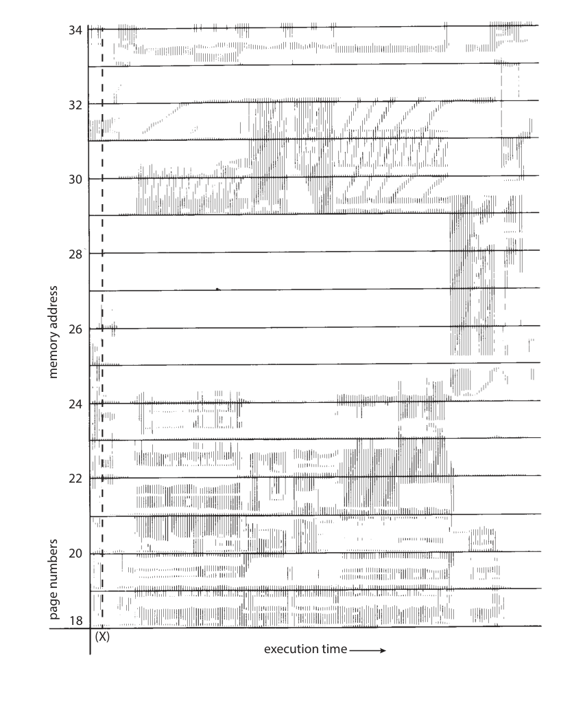
Answer
A locality is the set of pages that a process is actively using at a given time. To read it from the plot, take the pages that have references close to the dashed line at (X). Page \(n\) is the band just above the line labelled \(n\).局部性是指进程在某一时刻正在积极使用的一组页面。要从图中读取局部性，应取在虚线 (X) 附近有引用的页面。页 \(n\) 是紧邻标注 \(n\) 的那条线上方的带状区域。
Reading the plot gives approximately \(\{18, 19, 20, 22, 23, 24, 25, 26, 31, 33\}\). Page 21 shows only a few faint marks near (X), and pages 27, 28, 29, 30 and 32 show none.从图中读取的结果大约为 \(\{18, 19, 20, 22, 23, 24, 25, 26, 31, 33\}\)。在 (X) 附近，页 21 只有少量隐约的标记；页 27、28、29、30 和 32 则完全没有标记。
The printed plot is coarse, so a page at the edge of the set is a matter of reading. What the question tests is the idea: a locality is a small part of the address space, and it changes as execution moves on. Later in the plot, for example, heavy use moves to pages 29 to 31, and then to pages 25 to 28.所印的图比较粗略，因此位于集合边缘的页面需要靠判读。题目考查的是其中的概念：局部性是地址空间中的一小部分，并且会随着执行的推进而变化。例如，图的后段，使用集中的页面转移到页 29 至 31，随后又转移到页 25 至 28。
思路：局部性就是此刻正在使用的页，沿虚线读出有引用痕迹的页。
AppendixFormula sheet公式速查
正文里所有 Formula 卡片按章汇总，点卡片标题跳回原处。
Chapter 1 Processes and Interprocess Communication
\[U=1-p^{n}\]
- \(U\): CPU utilization, the fraction of time the CPU is busy, for example 0.59\(U\)：CPU 利用率，即 CPU 忙碌的时间比例，例如 0.59
- \(p\): fraction of its time that one process waits for I/O, for example 0.8\(p\)：一个进程用于等待 I/O 的时间比例，例如 0.8
- \(n\): degree of multiprogramming, the number of processes in memory, for example 4\(n\)：多道程序度，即内存中的进程数，例如 4
- \(p^{n}\): probability that all \(n\) processes wait at the same time, which is the idle fraction. The waits are assumed independent.\(p^{n}\)：所有 \(n\) 个进程同时等待的概率，也就是空闲比例。假设各进程的等待相互独立。
\[\text{overhead}=\frac{t_{cs}}{q+t_{cs}}\]
- \(\text{overhead}\): fraction of the CPU time lost to switching, for example 0.002\(\text{overhead}\)：因切换而损失的 CPU 时间比例，例如 0.002
- \(t_{cs}\): context-switch time, the time to save one process and load the next, for example 8 µs\(t_{cs}\)：上下文切换时间，即保存一个进程并装入下一个进程所需的时间，例如 8 µs
- \(q\): time slice, the time a process runs before it is switched out, for example 4 ms\(q\)：时间片，即一个进程被换出之前能运行的时间，例如 4 ms
- The useful fraction is \(q/(q+t_{cs})\). Shorter slices improve responsiveness but raise the overhead.有用时间的比例是 \(q/(q+t_{cs})\)。时间片越短，响应越快，但开销越大。
\[N=2^{n}\]
- \(n\) consecutive
fork()calls executed by every process, without a condition; \(N\) includes the initial process, so \(N-1\) are new.\(n\) 次连续的fork()调用由每个进程执行，且不带条件；\(N\) 包括初始进程，因此其中 \(N-1\) 为新进程。 - With a condition such as
if (fork() == 0)only the children continue: count fork by fork.若带有如if (fork() == 0)的条件，则只有子进程继续执行：应按 fork 逐次计数。
\[\text{count}=(\text{in}-\text{out})\bmod N\]
- \(\text{count}\): number of items currently in the buffer\(\text{count}\)：缓冲区中当前的元素个数
- \(\text{in}\): index of the next free slot, where the producer writes\(\text{in}\)：下一个空槽的下标，生产者在此写入
- \(\text{out}\): index of the first full slot, where the consumer reads\(\text{out}\)：第一个满槽的下标，消费者在此读取
- \(N\):
BUFFER_SIZE, the number of slots, for example 5\(N\)：BUFFER_SIZE，即槽的个数，例如 5 - Empty: count = 0 (
in == out). Full: count = \(N-1\) ((in + 1) % N == out). Capacity: \(N-1\) items.空：count = 0（in == out）。满：count = \(N-1\)（(in + 1) % N == out）。容量：\(N-1\) 个元素。
Chapter 2 Threads and Concurrency
\[\text{speedup}=\frac{T(1)}{T(N)}\le\frac{1}{S+\dfrac{1-S}{N}}\]
- \(\text{speedup}\): how many times faster the program runs on \(N\) cores than on one core, for example 2.1\(\text{speedup}\)：程序在 \(N\) 个核上比在单核上快多少倍，例如 2.1
- \(T(1)\): run time on one core; \(T(N)\): run time on \(N\) cores, in seconds\(T(1)\)：单核上的运行时间；\(T(N)\)：\(N\) 个核上的运行时间，单位为秒
- \(S\): serial fraction, the share of the one-core run time that cannot be parallelized, for example 0.3 (\(0\le S\le1\))\(S\)：串行比例，即单核运行时间中无法并行化的部分所占的比例，例如 0.3（\(0\le S\le1\)）
- \(1-S\): parallel fraction, the share that can be spread over the cores\(1-S\)：并行比例，即可以分配到各核上执行的部分所占的比例
- \(N\): number of cores, for example 4\(N\)：核的个数，例如 4
- It is an upper bound: fixed problem size, perfectly parallel parallel part, no overhead.这是一个上限：假设问题规模固定、并行部分完全可以并行、没有额外开销。
\[\lim_{N\to\infty}\frac{1}{S+\frac{1-S}{N}}=\frac{1}{S},\qquad E=\frac{\text{speedup}}{N}\]
- Symbols \(S\), \(N\) and \(\text{speedup}\) as in "Amdahl's law".符号 \(S\)、\(N\) 和 \(\text{speedup}\) 的含义与“Amdahl 定律”中相同。
- \(E\): efficiency, the share of the ideal speedup \(N\) that is reached; \(E=1\) means linear speedup, for example \(E=0.53\).\(E\)：效率，即达到的加速比占理想加速比 \(N\) 的比例；\(E=1\) 表示线性加速，例如 \(E=0.53\)。
- The first expression is the ceiling: for large \(N\) the term \((1-S)/N\) vanishes. Example: \(S=0.5\) gives at most 2, \(S=0.1\) at most 10.第一个式子是上限：当 \(N\) 很大时，\((1-S)/N\) 这一项趋于零。例如，\(S=0.5\) 的加速比最多为 2，\(S=0.1\) 的加速比最多为 10。
\[\text{speedup}_{\text{scaled}}=N-\alpha\,(N-1)\]
- \(\text{speedup}_{\text{scaled}}\): speedup of the problem that grows with the machine\(\text{speedup}_{\text{scaled}}\)：随机器规模增长的问题的加速比
- \(N\): number of cores, for example 16\(N\)：核的个数，例如 16
- \(\alpha\): serial fraction of the run time on the \(N\)-core machine, for example 0.1\(\alpha\)：在 \(N\) 核机器上运行时，串行部分占运行时间的比例，例如 0.1
- Example: \(16-0.1\cdot15=14.5\). Amdahl's law with \(S=0.1\) gives 6.4. The two answer different questions.例如：\(16-0.1\cdot15=14.5\)。用 Amdahl 定律代入 \(S=0.1\) 得到 6.4。两者回答的是不同的问题。
Chapter 3 CPU Scheduling
\[T_{\text{turn}}=T_{\text{finish}}-T_{\text{arrival}},\qquad T_{\text{wait}}=T_{\text{turn}}-T_{\text{burst}},\qquad T_{\text{resp}}=T_{\text{first}}-T_{\text{arrival}}\]
- \(T_{\text{turn}}\): turnaround time, from arrival to completion, in ms\(T_{\text{turn}}\)：周转时间，从到达到完成，单位 ms。
- \(T_{\text{wait}}\): waiting time, the total time spent in the ready queue, in ms. With preemption it includes the gaps between the slices.\(T_{\text{wait}}\)：等待时间，即在就绪队列中停留的总时间，单位 ms。若有抢占，它还包括各时间段之间的间隔。
- \(T_{\text{resp}}\): response time, from arrival to the first time the process gets the CPU, in ms\(T_{\text{resp}}\)：响应时间，从到达到进程第一次获得 CPU，单位 ms。
- \(T_{\text{finish}}\): time at which the process ends; \(T_{\text{arrival}}\): time at which it arrives; \(T_{\text{burst}}\): its CPU burst, the total time it needs the CPU; \(T_{\text{first}}\): time of its first start\(T_{\text{finish}}\)：进程结束的时刻；\(T_{\text{arrival}}\)：进程到达的时刻；\(T_{\text{burst}}\)：它的 CPU 执行期，即它需要 CPU 的总时间；\(T_{\text{first}}\)：它第一次开始运行的时刻。
- Under nonpreemptive FCFS the response time equals the waiting time.在非抢占式 FCFS 下，响应时间等于等待时间。
\[U_{\text{CPU}}=\frac{\text{busy time}}{\text{elapsed time}},\qquad X=\frac{\text{number of completed processes}}{\text{elapsed time}}\]
- \(U_{\text{CPU}}\): CPU utilization, the fraction of the elapsed time in which the CPU is busy, for example 0.80\(U_{\text{CPU}}\)：CPU 利用率，即 CPU 忙碌的时间占已用时间的比例，例如 0.80。
- \(X\): throughput, processes completed per time unit, for example 0.2 processes per ms\(X\)：吞吐量，即单位时间内完成的进程数，例如每 ms 0.2 个进程。
- Idle intervals count in the elapsed time but not in the busy time.空闲时段计入经过的时间，但不计入忙碌时间。
\[\tau_{n+1}=\alpha\,t_n+(1-\alpha)\,\tau_n,\qquad 0\le\alpha\le 1\]
- \(\tau_{n+1}\): the prediction for the next CPU burst, in ms\(\tau_{n+1}\)：对下一次 CPU 执行期的预测，单位 ms。
- \(t_n\): the actual length of the \(n\)th CPU burst, the newest information\(t_n\)：第 \(n\) 次 CPU 执行期的实际长度，是最新的信息。
- \(\tau_n\): the previous prediction, which carries the history; \(\tau_0\): the starting guess, a constant such as 10 ms\(\tau_n\)：上一次的预测值，它保存了历史信息；\(\tau_0\)：初始猜测值，是一个常数，例如 10 ms。
- \(\alpha\): weight of the newest burst. \(\alpha=0\) ignores new bursts; \(\alpha=1\) uses only the last burst; a common choice is \(\alpha=\tfrac12\).\(\alpha\)：最新执行期的权重。\(\alpha=0\) 完全忽略新的执行期；\(\alpha=1\) 只使用最近一次的执行期；常用的取值是 \(\alpha=\tfrac12\)。
\[T_{\text{gap}}\le(n-1)\,q,\qquad u=\frac{q}{q+s}\]
- \(T_{\text{gap}}\): the time a process waits between two turns, in ms\(T_{\text{gap}}\)：一个进程两次获得 CPU 之间等待的时间，单位 ms。
- \(n\): number of processes in the ready queue, for example 5\(n\)：就绪队列中的进程数，例如 5。
- \(q\): time quantum, in ms, for example 20 ms. With \(n=5\) and \(q=20\) ms a process waits at most \(4\times20=80\) ms.\(q\)：时间片，单位 ms，例如 20 ms。在 \(n=5\) 和 \(q=20\) ms 的条件下，一个进程最多等待 \(4\times20=80\) ms。
- \(u\): useful fraction of the CPU time, the part not lost in context switches\(u\)：CPU 时间中有效的部分，即没有因上下文切换而损失的部分。
- \(s\): time of one context switch, in the same unit as \(q\). With \(q=1\) ms and \(s=0.1\) ms, \(u=1/1.1\approx91\%\).\(s\)：一次上下文切换的时间，单位与 \(q\) 相同。在 \(q=1\) ms 和 \(s=0.1\) ms 时，\(u=1/1.1\approx91\%\)。
\[U=\sum_{i=1}^{N}\frac{t_i}{p_i}\]
- \(U\): total CPU utilization, the fraction of the time that the tasks need the CPU, for example 0.75\(U\)：总 CPU 利用率，即任务需要 CPU 的时间所占的比例，例如 0.75。
- \(N\): number of periodic tasks on one CPU; \(i\): index of a task\(N\)：一个 CPU 上周期任务的数量；\(i\)：任务的序号。
- \(t_i\): processing time of task \(i\) in each period, in ms; \(p_i\): period of task \(i\), in ms\(t_i\)：任务 \(i\) 在每个周期内的处理时间，单位 ms；\(p_i\)：任务 \(i\) 的周期，单位 ms。
- \(U\le1\) is necessary for any schedule.对任何调度来说，\(U\le1\) 都是必要的。
\[U\le N\left(2^{1/N}-1\right)\]
- \(U\) and \(N\) as in "CPU utilization of periodic tasks"\(U\) 和 \(N\) 的含义与"周期任务的 CPU 利用率"中相同。
- \(2^{1/N}\): the \(N\)-th root of 2. For \(N=2\) it is \(\sqrt2\approx1.414\).\(2^{1/N}\)：2 的第 \(N\) 次方根。当 \(N=2\) 时，它的值为 \(\sqrt2\approx1.414\)。
- The bound is 82.8% for \(N=2\), 78.0% for \(N=3\) and falls towards \(\ln2\approx69.3\%\) for large \(N\).对 \(N=2\)，界限是 82.8%；对 \(N=3\)，界限是 78.0%；当 \(N\) 很大时，界限趋向 \(\ln2\approx69.3\%\)。
- Sufficient, not necessary: if \(U\) is below the bound, RMS meets every deadline. If \(U\) is above it, nothing is decided.这是充分条件，不是必要条件：若 \(U\) 低于界限，则 RMS 能满足每个截止期。若 \(U\) 高于界限，则无法判定。
\[R_i^{(k+1)}=t_i+\sum_{j\in hp(i)}\left\lceil\frac{R_i^{(k)}}{p_j}\right\rceil t_j,\qquad R_i^{(0)}=t_i\]
- \(R_i^{(k)}\): the \(k\)-th estimate of the worst-case response time of task \(i\), in ms; \(R_i^{(k+1)}\): the next estimate\(R_i^{(k)}\)：任务 \(i\) 最坏情况响应时间的第 \(k\) 次估计值，单位 ms；\(R_i^{(k+1)}\)：下一次估计值。
- \(t_i\): processing time of task \(i\); \(hp(i)\): the set of tasks with a higher priority, that is a shorter period, than task \(i\)\(t_i\)：任务 \(i\) 的处理时间；\(hp(i)\)：优先级高于任务 \(i\) 的任务集合，也就是周期更短的那些任务的集合。
- \(j\): one task of that set; \(p_j\): its period; \(t_j\): its processing time\(j\)：该集合中的一个任务；\(p_j\)：它的周期；\(t_j\)：它的处理时间。
- \(\lceil x\rceil\): \(x\) rounded up to the next integer\(\lceil x\rceil\)：\(x\) 向上取整为下一个整数。
- Repeat until the value stops changing. The task meets its deadline if \(R_i\le p_i\).重复计算，直到数值不再变化。若 \(R_i\le p_i\)，则该任务满足截止期。
- Example: the task P2 above has \(R_2=35\to35+25=60\to35+2\cdot25=85>80\). Not schedulable.例如，上面的任务 P2 有 \(R_2=35\to35+25=60\to35+2\cdot25=85>80\)。不可调度。
\[n=\lambda\times W\]
- \(n\): average queue length, the number of processes waiting, for example 14\(n\)：平均队列长度，即等待的进程数，例如 14。
- \(\lambda\): average arrival rate, processes per second, for example 7 per second\(\lambda\)：平均到达速率，单位为每秒进程数，例如每秒 7 个。
- \(W\): average waiting time in the queue, in seconds\(W\)：在队列中的平均等待时间，单位秒。
- Valid in steady state, when departures equal arrivals, for any scheduling algorithm and any arrival distribution.只在稳态下成立，即离开数等于到达数时；对任何调度算法和任何到达分布都成立。
Chapter 4 Process Synchronization
\[\binom{a+b}{a}\]
- Two instruction sequences of lengths \(a\) and \(b\), each keeping its own order, can be merged in \(\binom{a+b}{a}\) ways. For
count++andcount--, \(a=b=3\) gives 20.长度分别为 \(a\) 和 \(b\) 的两个指令序列，各自保持自身顺序，可合并为 \(\binom{a+b}{a}\) 种方式。对于count++和count--，\(a=b=3\) 得到 20。
\[t_{\text{hold}}<2\,T_{\text{cs}}\;\Rightarrow\;\text{spinlock},\qquad t_{\text{hold}}>2\,T_{\text{cs}}\;\Rightarrow\;\text{sleeping lock}\]
- \(t_{\text{hold}}\): time the lock is held; \(T_{\text{cs}}\): time of one context switch. Sleeping costs two context switches (sleep and wake-up).\(t_{\text{hold}}\)：锁被持有的时间；\(T_{\text{cs}}\)：一次上下文切换的时间。睡眠需要付出两次上下文切换的代价（睡眠与唤醒各一次）。
\[S=S_0-n_{\text{wait}}+n_{\text{signal}},\qquad \text{waiting processes}=\max(0,-S)\]
- \(S\): current value of the semaphore, for example \(-2\)\(S\)：信号量的当前值，例如 \(-2\)
- \(S_0\): initial value, for example 2\(S_0\)：初始值，例如 2
- \(n_{\text{wait}}\): number of completed
wait()calls. Everywait()decrements, even when it blocks.\(n_{\text{wait}}\)：已完成的wait()调用次数。每个wait()都会减一，即使它被阻塞。 - \(n_{\text{signal}}\): number of completed
signal()calls\(n_{\text{signal}}\)：已完成的signal()调用次数 - Valid for the blocking implementation. A value \(-k\) means \(k\) blocked processes.适用于阻塞式实现。值为 \(-k\) 表示有 \(k\) 个进程被阻塞。
\[\left\lfloor \frac{n}{2}\right\rfloor\]
- \(n\) philosophers and \(n\) chopsticks, two chopsticks per eater. For \(n=5\) at most 2 philosophers eat at the same time.\(n\) 位哲学家与 \(n\) 根筷子，每位就餐者需要两根筷子。对于 \(n=5\)，同一时刻最多有 2 位哲学家在就餐。
Chapter 5 Deadlocks
\[F(R_j)>F(R_i)\quad\text{for every } R_j \text{ requested while holding } R_i\]
- \(F\): a one-to-one function that gives every resource type a unique natural number, written \(F:R\to\mathbb{N}\)\(F\)：一个一一映射函数，为每种资源类型分配一个唯一的自然数，记为 \(F:R\to\mathbb{N}\)
- \(R_i\): a resource type that the thread holds; \(R_j\): a resource type that it requests next\(R_i\)：线程当前持有的资源类型；\(R_j\)：线程接下来请求的资源类型
- Equivalent form: to request \(R_j\), first release every held \(R_i\) with \(F(R_i)\ge F(R_j)\). Several instances of one type are requested in a single request.等价形式：要请求 \(R_j\)，须先释放所有已持有的 \(R_i\)（其中 \(F(R_i)\ge F(R_j)\)）。同一类型的多个实例要在一次请求中提出。
\[\text{Need}_{i}\le \text{Available}+\sum_{j<i}\text{Allocation}_{j}\qquad\text{for each } i \text{ in the sequence}\]
- \(\text{Need}_i\): what thread \(T_i\) may still request, its maximum minus what it holds (Section 5.5)\(\text{Need}_i\)：线程 \(T_i\) 仍可能请求的数量，即其最大需求减去已持有量（见第 5.5 节）
- \(\text{Available}\): the instances that are free now\(\text{Available}\)：当前空闲的实例
- \(\text{Allocation}_j\): the instances that an earlier thread \(T_j\) holds and will return when it finishes; \(i\) and \(j\) are positions in the sequence\(\text{Allocation}_j\)：较早的线程 \(T_j\) 所持有的实例，它执行完毕时会归还；\(i\) 和 \(j\) 是序列中的位置
- Vectors are compared component by component.向量按分量逐个比较。
\[\text{Need}[i][j]=\text{Max}[i][j]-\text{Allocation}[i][j]\]
- \(\text{Need}[i][j]\): the number of instances of \(R_j\) that thread \(T_i\) may still request\(\text{Need}[i][j]\)：线程 \(T_i\) 仍可能请求的 \(R_j\) 实例数
- \(\text{Max}[i][j]\): the most instances of \(R_j\) that \(T_i\) may ever request\(\text{Max}[i][j]\)：线程 \(T_i\) 一生中可能请求的 \(R_j\) 实例数的最大值
- \(\text{Allocation}[i][j]\): the instances of \(R_j\) that \(T_i\) holds now\(\text{Allocation}[i][j]\)：线程 \(T_i\) 当前持有的 \(R_j\) 实例数
- \(i\): the thread (row), \(0\le i<n\); \(j\): the resource type (column), \(0\le j<m\)\(i\)：线程（行），\(0\le i<n\)；\(j\)：资源类型（列），\(0\le j<m\)
- A row is used as a vector and written \(\text{Allocation}_i\) or \(\text{Need}_i\).每一行作为向量使用，写作 \(\text{Allocation}_i\) 或 \(\text{Need}_i\)。
- Check on any snapshot: \(\text{Available}\) plus the sum of all \(\text{Allocation}_i\) equals the total number of instances of each type.在任何一个快照上检查：\(\text{Available}\) 加上所有 \(\text{Allocation}_i\) 之和，应等于每种类型的实例总数。
\[\text{Finish}[i]=\text{false}\ \wedge\ \text{Need}_i\le\text{Work}\ \Longrightarrow\ \text{Work}\leftarrow\text{Work}+\text{Allocation}_i,\ \text{Finish}[i]\leftarrow\text{true}\]
- \(\text{Work}\): the instances that are free at this point of the trace, one number per resource type\(\text{Work}\)：演算到此步时空闲的实例，每种资源类型一个数
- \(\text{Finish}[i]\): true when \(T_i\) has been found able to finish\(\text{Finish}[i]\)：当找到 \(T_i\) 能够执行完毕时为真
- \(\text{Need}_i\) and \(\text{Allocation}_i\): the row of \(T_i\) in the Need and Allocation matrices\(\text{Need}_i\) 和 \(\text{Allocation}_i\)：\(T_i\) 在 Need 矩阵和 Allocation 矩阵中的行
- The state is safe if and only if all \(\text{Finish}[i]\) become true.当且仅当所有 \(\text{Finish}[i]\) 都变为真时，该状态是安全的。
- Cost \(O(m\,n^2)\): at most \(n\) rounds, each scans up to \(n\) threads and compares \(m\) numbers.代价 \(O(m\,n^2)\)：至多 \(n\) 轮，每轮最多扫描 \(n\) 个线程，并比较 \(m\) 个数。
\[\begin{aligned}\text{Available}&\leftarrow\text{Available}-\text{Request}_i\\\text{Allocation}_i&\leftarrow\text{Allocation}_i+\text{Request}_i\\\text{Need}_i&\leftarrow\text{Need}_i-\text{Request}_i\end{aligned}\]
- \(\text{Request}_i\): the vector of instances that \(T_i\) asks for now\(\text{Request}_i\)：\(T_i\) 当前请求的实例向量
- \(\text{Available}\): the free instances; \(\text{Allocation}_i\): what \(T_i\) holds; \(\text{Need}_i\): what \(T_i\) may still request\(\text{Available}\)：空闲实例；\(\text{Allocation}_i\)：\(T_i\) 持有的资源；\(\text{Need}_i\)：\(T_i\) 仍可能请求的资源
- The update is applied only after both checks \(\text{Request}_i\le\text{Need}_i\) and \(\text{Request}_i\le\text{Available}\) succeed.只有在检查 \(\text{Request}_i\le\text{Need}_i\) 和 \(\text{Request}_i\le\text{Available}\) 都通过之后，才更新状态。
\[\text{Finish}[i]=\text{false}\ \wedge\ \text{Request}_i\le\text{Work}\ \Longrightarrow\ \text{Work}\leftarrow\text{Work}+\text{Allocation}_i,\ \text{Finish}[i]\leftarrow\text{true}\]
- \(\text{Work}\): the instances that are free at this point of the trace, one number per resource type\(\text{Work}\)：演算到此步时空闲的实例，每种资源类型一个数
- \(\text{Finish}[i]\): true when \(T_i\) is found able to finish; \(i\) is the thread\(\text{Finish}[i]\)：当找到 \(T_i\) 能够执行完毕时为真；\(i\) 是线程
- \(\text{Request}_i\): what \(T_i\) is requesting now; \(\text{Allocation}_i\): what it holds\(\text{Request}_i\)：\(T_i\) 当前正在请求的资源；\(\text{Allocation}_i\)：它持有的资源
- The deadlocked threads are those left with \(\text{Finish}[i]=\text{false}\). A thread with \(\text{Allocation}_i=0\) cannot be part of a deadlock, so it starts as finished.处于死锁的线程，是最后仍保持 \(\text{Finish}[i]=\text{false}\) 的线程。\(\text{Allocation}_i=0\) 的线程不可能属于死锁的一部分，所以一开始就标记为已完成。
- Cost \(O(m\,n^2)\) for \(n\) threads and \(m\) resource types.对 \(n\) 个线程和 \(m\) 种资源类型，代价为 \(O(m\,n^2)\)。
Chapter 6 Main Memory
\[\text{base}\le a<\text{base}+\text{limit}\]
- \(a\): an address generated in user mode, for example 300500\(a\)：用户态下产生的地址，例如 300500
- \(\text{base}\): contents of the base register, the first legal address, for example 300040\(\text{base}\)：基址寄存器的内容，即第一个合法地址，例如 300040
- \(\text{limit}\): contents of the limit register, the number of legal bytes, for example 120900\(\text{limit}\)：界限寄存器的内容，即合法字节数，例如 120900
- The highest legal address is \(\text{base}+\text{limit}-1\). Any other address traps.最高合法地址为 \(\text{base}+\text{limit}-1\)。任何其他地址都会引发陷阱。
\[PA=a+\text{relocation}\quad\text{if }0\le a<\text{limit},\ \text{otherwise trap}\]
- \(PA\): physical address, the address sent to memory\(PA\)：物理地址，即发送到内存的地址
- \(a\): logical address generated by the program, for example 74599\(a\)：程序产生的逻辑地址，例如 74599
- \(\text{relocation}\): value of the relocation register, the smallest physical address of the process, for example 100040\(\text{relocation}\)：重定位寄存器的值，即进程的最小物理地址，例如 100040
- \(\text{limit}\): value of the limit register, the size of the logical address space, for example 74600\(\text{limit}\)：界限寄存器的值，即逻辑地址空间的大小，例如 74600
- Example: \(a=74599\) gives \(PA=100040+74599=174639\). The address 74600 traps.例如：\(a=74599\) 得到 \(PA=100040+74599=174639\)。地址 74600 会引发陷阱。
\[p=\left\lfloor \frac{a}{2^{n}}\right\rfloor,\qquad d=a \bmod 2^{n},\qquad PA=f\cdot 2^{n}+d\]
- \(a\): logical address, for example 5000\(a\)：逻辑地址，例如 5000
- \(p\): page number, the index into the page table; \(d\): page offset, the position inside the page\(p\)：页号，即页表中的索引；\(d\)：页内偏移，即在页内的位置
- \(2^n\): page size in bytes, for example \(2^{10}=1024\); \(\lfloor x\rfloor\) means \(x\) rounded down\(2^n\)：以字节为单位的页大小，例如 \(2^{10}=1024\)；\(\lfloor x\rfloor\) 表示向下取整得到的 \(x\)
- \(f\): frame number found in entry \(p\) of the page table; \(PA\): physical address\(f\)：在页表第 \(p\) 项中找到的帧号；\(PA\)：物理地址
- The offset is copied unchanged. Only the page number is replaced by the frame number.页内偏移原样复制。只有页号被替换为帧号。
\[N_{\text{pages}}=2^{m-n},\qquad N_{\text{frames}}=2^{k-n},\qquad \text{size}=2^{m-n}\cdot e\]
- \(m\): bits of a logical address, for example 32; \(k\): bits of a physical address, for example 30 for 1 GB\(m\)：逻辑地址的位数，例如 32；\(k\)：物理地址的位数，例如 1 GB 对应 30
- \(2^n\): page size in bytes, for example \(2^{12}\) for 4 KB\(2^n\)：以字节为单位的页大小，例如 4 KB 对应 \(2^{12}\)
- \(N_{\text{pages}}\): number of pages of the logical address space, which equals the number of page-table entries; \(N_{\text{frames}}\): number of frames of physical memory\(N_{\text{pages}}\)：逻辑地址空间的页数，它等于页表项的个数；\(N_{\text{frames}}\)：物理内存的帧数
- \(e\): size of one page-table entry in bytes, for example 4; \(\text{size}\): size of the page table of one process, in bytes\(e\)：一个页表项的字节数，例如 4；\(\text{size}\)：一个进程的页表大小，以字节为单位
- Bits of the page number: \(m-n\). Bits of the frame number: \(k-n\).页号的位数：\(m-n\)。帧号的位数：\(k-n\)。
\[\text{EAT}=\alpha\,(\tau+t_m)+(1-\alpha)\,\bigl(\tau+(k+1)\,t_m\bigr)=\tau+t_m+(1-\alpha)\,k\,t_m\]
- \(\text{EAT}\): effective access time, the average time of one memory access, in ns\(\text{EAT}\)：有效访问时间，即一次内存访问的平均时间，单位为 ns
- \(\alpha\): TLB hit ratio, the fraction of accesses whose page number is in the TLB, for example 0.80\(\alpha\)：TLB 命中率，即页号在 TLB 中的访问所占的比例，例如 0.80
- \(\tau\): TLB lookup time in ns, for example 2 ns (0 if it is hidden in the pipeline)\(\tau\)：TLB 查找时间，单位为 ns，例如 2 ns（如果它被流水线隐藏，则为 0）
- \(t_m\): time of one memory access in ns, for example 10 ns\(t_m\)：一次内存访问的时间，单位为 ns，例如 10 ns
- \(k\): number of page-table levels, for example 1 for a single-level table. A miss reads \(k\) table entries and then the data.\(k\)：页表级数，例如单级页表为 1。未命中时要读 \(k\) 个页表项，然后再读数据。
- Without a TLB, \(\text{EAT}=(k+1)\,t_m\).没有 TLB 时，\(\text{EAT}=(k+1)\,t_m\)。
\[L=\left\lceil\frac{m-n}{\log_2(P/e)}\right\rceil\]
- \(L\): number of levels, which is also the number of table accesses on a TLB miss\(L\)：级数，它也是 TLB 未命中时的页表访问次数
- \(m\): bits of the logical address, for example 32; \(2^n\): page size in bytes, for example \(2^{12}\)\(m\)：逻辑地址的位数，例如 32；\(2^n\)：以字节为单位的页大小，例如 \(2^{12}\)
- \(P\): page size in bytes, \(P=2^n\); \(e\): entry size in bytes, for example 4\(P\)：以字节为单位的页大小，即 \(P=2^n\)；\(e\)：表项大小，以字节为单位，例如 4
- \(P/e\): entries that fit in one page; \(\log_2(P/e)\): index bits that one level consumes, for example 10\(P/e\)：一页能容纳的表项数；\(\log_2(P/e)\)：一级消耗的索引位数，例如 10
- \(\lceil x\rceil\): \(x\) rounded up to the next integer. Example: \(\lceil 20/10\rceil=2\) levels.\(\lceil x\rceil\)：将 \(x\) 向上取整到下一个整数。例如：\(\lceil 20/10\rceil=2\) 级。
\[N_{\text{inv}}=\frac{\text{physical memory}}{\text{page size}}=2^{k-n}\ \text{entries}\]
- \(N_{\text{inv}}\): number of entries of the inverted table, equal to the number of frames\(N_{\text{inv}}\)：反置页表的表项数，它等于帧数
- \(k\): bits of a physical address, for example 30 for 1 GB; \(2^n\): page size in bytes, for example \(2^{13}\)\(k\)：物理地址的位数，例如 1 GB 对应 30；\(2^n\)：以字节为单位的页大小，例如 \(2^{13}\)
- Example: \(k=30\) and \(n=13\) give \(2^{17}=131{,}072\) entries for the whole system.例如：\(k=30\) 和 \(n=13\) 给出整个系统的 \(2^{17}=131{,}072\) 个表项。
Chapter 7 Virtual Memory
\[\text{EAT}=(1-p)\times \text{ma}+p\times T_{\text{fault}}\]
- \(\text{EAT}\): effective access time, the average time of one memory reference, in ns\(\text{EAT}\)：有效访问时间，即一次内存引用的平均时间，单位为纳秒（ns）
- \(p\): page-fault rate, the probability that one reference faults, between 0 and 1, for example 0.001\(p\)：缺页率，即一次引用发生缺页的概率，取值在 0 到 1 之间，例如 0.001
- \(\text{ma}\): memory-access time without a fault, for example 200 ns\(\text{ma}\)：不发生缺页时的内存访问时间，例如 200 ns
- \(T_{\text{fault}}\): time to service one fault, including the restarted access, for example 8 ms. Use the same unit as \(\text{ma}\).\(T_{\text{fault}}\)：处理一次缺页的时间，包括重新执行的那次访问，例如 8 毫秒。须与 \(\text{ma}\) 使用相同单位。
\[T_{\text{fault}}=(1-d)\,T_{\text{clean}}+d\,T_{\text{dirty}}\]
- \(T_{\text{fault}}\): mean time to service one fault, the value to put into the EAT formula\(T_{\text{fault}}\)：处理一次缺页的平均时间，即代入 EAT 公式的值
- \(d\): fraction of victims that are dirty (modified), for example 0.7\(d\)：被替换的牺牲页中脏（已修改）页所占的比例，例如 0.7
- \(T_{\text{clean}}\): service time when the victim is clean or a free frame exists, for example 8 ms\(T_{\text{clean}}\)：牺牲页为干净页或存在空闲帧时的服务时间，例如 8 毫秒
- \(T_{\text{dirty}}\): service time when the victim must first be written out, for example 20 ms\(T_{\text{dirty}}\)：牺牲页必须先写出时的服务时间，例如 20 毫秒
\[\text{EAT}=(1-p)\,\text{EAT}_0+p\,T_{\text{fault}},\qquad \text{EAT}_0=\alpha(\varepsilon+\text{ma})+(1-\alpha)(\varepsilon+2\,\text{ma})\]
- Symbols \(\text{EAT}\), \(p\), \(\text{ma}\) and \(T_{\text{fault}}\) as in "Effective access time (EAT)"符号 \(\text{EAT}\)、\(p\)、\(\text{ma}\) 和 \(T_{\text{fault}}\) 与“有效访问时间（EAT）”中的相同
- \(\text{EAT}_0\): average access time when no fault occurs, in ns\(\text{EAT}_0\)：不发生缺页时的平均访问时间，单位为纳秒（ns）
- \(\alpha\): TLB hit ratio, the fraction of references whose page number is in the TLB, for example 0.9\(\alpha\)：TLB 命中率，即页号在 TLB 中的引用所占的比例，例如 0.9
- \(\varepsilon\): TLB lookup time, for example 10 ns\(\varepsilon\)：TLB 查找时间，例如 10 ns
- A TLB miss costs one extra memory access for the page-table entry. It is not a page fault.TLB 未命中需要额外一次内存访问来取页表项。这不是缺页。
\[a_i=\frac{s_i}{S}\times m,\qquad S=\sum_i s_i\]
- \(a_i\): number of frames given to process \(i\)\(a_i\)：分配给进程 \(i\) 的帧数
- \(s_i\): size of process \(i\) in pages, for example 127 pages\(s_i\)：进程 \(i\) 的大小，以页为单位，例如 127 页
- \(S\): total size of all processes, the sum of all \(s_i\)\(S\)：所有进程的总大小，即所有 \(s_i\) 之和
- \(m\): number of frames available, for example 62\(m\)：可用帧数，例如 62
- \(i\): index of a process (1, 2, 3, …)\(i\)：进程的编号（1、2、3、…）
- Round each \(a_i\) down, raise it to the architectural minimum if needed, and keep the total at most \(m\).将每个 \(a_i\) 向下取整；如有需要，提高到体系结构规定的最小值，并保证总数不超过 \(m\)。
\[\text{WS}(t)=\{\text{distinct pages among the last }\Delta\text{ references up to time }t\},\qquad D=\sum_i \text{WSS}_i\]
- \(\text{WS}(t)\): working set at time \(t\), the set of pages the process used in its last \(\Delta\) references\(\text{WS}(t)\)：时刻 \(t\) 的工作集，即进程在最近 \(\Delta\) 次引用中用到过的页的集合
- \(t\): time, counted in page references (reference number 1, 2, 3, …)\(t\)：时间，以页引用计数（引用编号 1、2、3、…）
- \(\Delta\): window size, the number of recent references that are looked at, for example 5\(\Delta\)：窗口大小，即所考察的最近引用次数，例如 5
- \(\text{WSS}_i\): working-set size of process \(i\), the number of pages in its working set, which is the number of frames it needs\(\text{WSS}_i\)：进程 \(i\) 的工作集大小，即其工作集中的页数，也就是它需要的帧数
- \(D\): total demand for frames, the sum over all processes\(D\)：对帧的总需求，即所有进程之和
- \(i\): index of a process\(i\)：进程的索引
- \(m\): number of frames available in memory. If \(D>m\), the system thrashes. If \(D\le m\), every working set fits.\(m\)：内存中可用的帧数。若 \(D>m\)，系统发生抖动。若 \(D\le m\)，所有工作集都能放下。
\[b=2^{\lceil\log_2 r\rceil},\qquad \text{internal fragmentation}=b-r\]
- \(r\): requested size, for example 21 KB\(r\)：请求的大小，例如 21 KB
- \(b\): size of the block that is allocated, the smallest power of two that is at least \(r\), for example 32 KB\(b\)：实际分配的块大小，即不小于 \(r\) 的最小 2 的幂，例如 32 KB
- \(\lceil\cdot\rceil\) rounds up to the next integer, and \(\log_2\) is the logarithm to base 2\(\lceil\cdot\rceil\) 向上取整到下一个整数，\(\log_2\) 是以 2 为底的对数
- Internal fragmentation is the wasted space inside the block. In the worst case almost 50% of the block is wasted, for example 33 KB in a 64 KB block.内部碎片是块内的浪费空间。最坏情况下，块中近 50% 被浪费，例如 64 KB 的块中只放 33 KB。
\[n=\left\lfloor \frac{\text{slab size}}{\text{object size}}\right\rfloor\]
- \(n\): number of objects that fit in one slab\(n\)：一个 slab 中能容纳的对象数
- slab size: total size of the slab's pages, for example 12 KB for three 4 KB pagesslab 大小：该 slab 所有页的总大小，例如三个 4 KB 页为 12 KB
- object size: size of one object, for example 2 KB对象大小：一个对象的大小，例如 2 KB
- \(\lfloor\cdot\rfloor\) rounds down to the integer below. The remainder at the end of the slab stays unused.\(\lfloor\cdot\rfloor\) 向下取整到比它小的整数。slab 末尾剩下的部分不使用。
- Example: \(\lfloor 12/2\rfloor=6\) objects.例：\(\lfloor 12/2\rfloor=6\) 个对象。
\[\text{gain}=s\alpha\,C_{\text{fault}}-s(1-\alpha)\,C_{\text{prepage}}\]
- \(\text{gain}\): net time saved by prepaging, in ms. Prepaging pays off if it is positive.\(\text{gain}\)：预调页节省的净时间，单位为毫秒。预调页有利时该值为正。
- \(s\): number of pages that are prepaged, for example 100\(s\)：被预调入的页数，例如 100
- \(\alpha\): fraction of the prepaged pages that are actually used, between 0 and 1, for example 0.8\(\alpha\)：被预调入的页中实际被使用的比例，取值在 0 到 1 之间，例如 0.8
- \(C_{\text{fault}}\): cost of one page fault that is saved; \(C_{\text{prepage}}\): cost of bringing in one page that is not used\(C_{\text{fault}}\)：所省下的一次缺页的代价；\(C_{\text{prepage}}\)：调入一个未被使用的页的代价
\[\text{TLB reach}=(\text{number of entries})\times(\text{page size})\]
- \(\text{TLB reach}\): memory addressable through the TLB, in KB or MB\(\text{TLB reach}\)：通过 TLB 可寻址的内存，单位为 KB 或 MB
- number of entries: how many page-table entries the TLB holds, for example 64表项数：TLB 保存多少个页表项，例如 64
- page size: size of one page, for example 4 KB页大小：一页的大小，例如 4 KB
- Example: 64 × 4 KB = 256 KB. Raising the page size from 4 KB to 16 KB quadruples the reach.例：64 × 4 KB = 256 KB。把页大小从 4 KB 提高到 16 KB，覆盖范围变为原来的四倍。
AppendixTraps易错点汇总
正文里每一节的 Traps 框按章汇总，标题是所在的小节，适合考前最后过一遍。
Chapter 1 Processes and Interprocess Communication
- After I/O completion the process goes to ready, not to running.I/O 完成后，进程进入就绪态，而不是运行态。
- The state diagram has six arrows. Missing labels lose marks.状态图应有六条箭头。缺少标注会失分。
- The PCB stores the program counter and registers of a process that is not running. A running process has them in the CPU.PCB 保存未运行进程的程序计数器和寄存器。正在运行的进程，这些内容在 CPU 里。
- How to say it in the exam: "The PCB holds all data needed to restart the process, and the scheduler dispatch is the only way into the running state."考试中可以这样写："PCB 保存重新启动该进程所需的全部数据，而调度程序分派是进入运行态的唯一途径。"
- Use the same unit for \(q\) and \(t_{cs}\) (µs or ms).\(q\) 和 \(t_{cs}\) 要用相同的单位（µs 或 ms）。
- The utilization formula \(1-p^n\) assumes independent waits. It is a model, not a measurement.利用率公式 \(1-p^n\) 假设各进程的等待相互独立。它是一个模型，而不是实测值。
- The context switch is overhead, not part of any process.上下文切换是开销，不属于任何一个进程。
- How to say it in the exam: "A context switch saves the context of the running process in its PCB and restores the context of the next process from its PCB; no useful work is done meanwhile."考试中可以这样写：“上下文切换把正在运行的进程的上下文保存到其 PCB 中，并从下一个进程的 PCB 中恢复其上下文；在此期间不做任何有用的工作。”
- Parent and child have separate copies of variables, so the child's change is not seen by the parent.父进程和子进程各有一份变量副本，因此子进程的修改，父进程看不到。
- Without
wait()the order of parent and child output is undefined.没有wait()，父子进程输出的顺序不确定。 - Count forks one by one. Do not apply \(2^n\) when a condition guards a fork.逐个统计 fork。如果某个 fork 受条件控制，就不要套用 \(2^n\)。
- How to say it in the exam: "\(n\) unconditional forks create \(2^n\) processes, \(2^n-1\) of them new."考试中可以这样写：“\(n\) 次无条件的 fork 会创建 \(2^n\) 个进程，其中 \(2^n-1\) 个为新进程。”
- Capacity is \(N-1\), not \(N\). State the full test
(in + 1) % N == outand notin == out.容量是 \(N-1\)，而不是 \(N\)。写出完整的判满条件(in + 1) % N == out，而不是in == out。 inpoints to the next free slot andoutto the first full slot. Mixing them up reverses the full and empty tests.in指向下一个空槽，out指向第一个满槽。两者搞混，满与空的判断就会颠倒。- Zero capacity means the sender blocks until the receiver takes the message (rendezvous).容量为零意味着发送方要一直阻塞，直到接收方取走消息（会合）。
- How to say it in the exam: "With blocking send and blocking receive the two processes rendezvous, so no extra synchronization code is needed."考试中可以这样写：“采用阻塞发送和阻塞接收时，两个进程会合在一起，因此无需额外的同步代码。”
- Forgetting to close the unused pipe end: the reader then never sees end-of-file.忘记关闭不用的管道端，读者就永远看不到文件结束。
- Two-way communication over ordinary pipes needs two pipes.普通管道要实现双向通信，需要两个管道。
- The producer writes "Hello", advances the pointer by
strlen(), and then writes "World!". So the second string starts on the terminating NUL byte of the first, and the consumer prints "HelloWorld!". Without the advance, the second write would start at the beginning and the consumer would print only "World!".生产者先写入 "Hello"，把指针前移strlen()，然后再写入 "World!"。这样，第二个字符串从第一个字符串的结束符 NUL 字节开始，消费者打印出 "HelloWorld!"。如果不前移指针，第二次写入会从开头开始，消费者就只会打印 "World!"。
- A connection is the pair of sockets, so equal client ports to the same server would clash.连接就是一对套接字，因此两条连接若使用相同的客户端端口连到同一服务器，就会冲突。
- At most once may never execute the request; exactly once needs the ACK and resending.至多一次可能永远不执行这个请求；恰好一次则需要 ACK 和重发。
- How to say it in the exam: "Sockets move unstructured bytes; RPC adds structure: a procedure identifier, marshaled parameters and a reply."考试中可以这样写：“套接字传输非结构化的字节；RPC 则增加了结构：过程标识符、封送后的参数和回复。”
Chapter 2 Threads and Concurrency
- Threads share the heap and the globals, but not the stack. Local variables are private.线程共享堆和全局变量，但不共享栈。局部变量是私有的。
- Registers are private because each thread is switched in and out with its own register set.寄存器是私有的，因为每个线程切换进出时都使用自己的寄存器组。
- Cheap switching is no gain in safety. One thread can overwrite the data of the others.切换成本低，并不等于更安全。一个线程可能覆盖其他线程的数据。
- How to say it in the exam: "Threads share the address space of the process; each has its own PC, registers and stack."考试中可以这样写："线程共享进程的地址空间；每个线程有自己的 PC、寄存器和栈。"
- "60 percent parallel" means \(S=0.4\), not 0.6.“60% 可并行”指的是 \(S=0.4\)，而不是 0.6。
- The ceiling \(1/S\) does not depend on \(N\). Amdahl's law is an upper bound.上限 \(1/S\) 与 \(N\) 无关。Amdahl 定律给出的是一个上界。
- Concurrency without parallelism is possible on one core. Parallelism implies concurrency.单核上可以有并发而没有并行。有并行就一定有并发。
- A web server that runs the same service code in each thread on different requests is data parallelism, as the old textbook answer states. Specialised threads (parse, read, log) are task parallelism.对不同请求，每个线程运行相同的服务代码，这是数据并行，旧教材的答案也是这样说的。专门的线程（解析、读取、记录日志）则是任务并行。
- How to say it in the exam: "Extra cores speed up only the parallel part, so the serial fraction limits the speedup to \(1/S\)."考试中可以这样写：“额外的核只加速并行部分，因此串行比例把加速比限制在 \(1/S\)。”
- Many-to-one gives no speedup on a multiprocessor: the kernel schedules only one kernel thread.多对一在多处理器上没有加速效果：内核只调度一个内核线程。
- A purely CPU-bound program gains nothing from more kernel threads than cores. A program that does I/O does gain, also on one processor.纯粹受 CPU 限制的程序，内核线程数多于核数也得不到好处。做 I/O 的程序则会有收益，即使在单处理器上也是如此。
- Many-to-many is the most flexible model, but it is not the one that Linux and Windows use.多对多是最灵活的模型，但 Linux 和 Windows 并不采用它。
- How to say it in the exam: "In the many-to-one model one blocking system call blocks the whole process, and the threads cannot run in parallel."考试中可以这样写："在多对一模型中，一个阻塞的系统调用会阻塞整个进程，而且线程无法并行运行。"
- Calling
run()instead ofstart()creates no thread.调用run()而不是start()，不会创建线程。 - Read the shared result only after
pthread_join().只有在pthread_join()之后才能读取共享结果。 - A process with one created thread has two threads, not one: do not forget the main thread.一个进程如果创建了一个线程，它就有两个线程，而不是一个。不要忘了主线程。
- How to say it in the exam: "Asynchronous: the parent continues. Synchronous: the parent joins all children first."考试中可以这样写："异步：父进程继续执行。同步：父进程先等待所有子进程汇合。"
- A pool does not speed up one task. It saves creation time and limits the number of threads.线程池并不能加快单个任务。它节省了创建线程的时间，并限制了线程数量。
- Counting tasks: \(2L-1\) tasks include the leaves. Do not count the leaves only.统计任务数时，\(2L-1\) 个任务中包括叶任务。不要只数叶任务。
THRESHOLD= 1 makes one task per element: the overhead is larger than the work.THRESHOLD= 1 时每个元素都对应一个任务：开销比工作本身还大。- How to say it in the exam: "A thread pool reuses threads, bounds their number and separates the task from the mechanism."考试中可以这样写："线程池会重复使用线程，限制线程的数量，并把任务与执行机制分开。"
fork()followed byexec(): the threads of the child are replaced anyway.无论如何，子进程的线程都会被替换掉：fork()紧接着exec()。- A thread that calls
fork()leaves a child with that one thread only (POSIX), not with a copy of its siblings.调用fork()的线程，只会让子进程带有这一个线程（POSIX），而不会复制它的同胞线程。 pthread_cancel()is a request, not an order. The default is deferred cancellation.pthread_cancel()只是一个请求，而不是命令。默认是延迟取消。- How to say it in the exam: "Asynchronous cancellation may leave shared data half-updated and resources unreleased."考试中可以这样写："异步取消可能使共享数据只更新了一半，资源也无法释放。"
Chapter 3 CPU Scheduling
- Circumstances 2 and 3 are the ones with a choice. Only a preemptive scheduler acts there.有选择的是情形 2 和 3。只有抢占式调度程序会在这些情形下起作用。
- The dispatcher and the scheduler are different. The scheduler chooses; the dispatcher performs the switch.分派程序和调度程序不是一回事。调度程序负责选择，分派程序负责完成切换。
- How to say it in the exam: "A nonpreemptive scheduler acts only when a process blocks or terminates."考试中可以这样写："非抢占式调度程序只在进程阻塞或终止时才起作用。"
- Waiting time counts every interval in the ready queue, also after a preemption. Response time stops at the first dispatch.等待时间统计就绪队列中的每一段间隔，包括被抢占之后的间隔。响应时间在第一次分派时结束。
- Turnaround is measured from the arrival, not from time 0.周转时间从到达时刻算起，而不是从时刻 0 算起。
- The idle gap counts in the elapsed time but not in the busy time.空闲间隔计入已用时间，但不计入忙碌时间。
- Check every answer: the last boundary equals the sum of all bursts plus the idle time.检查每个答案：最后一个边界应等于所有执行期之和加上空闲时间。
- How to say it in the exam: "Ties are broken in FCFS order and the context-switch time is ignored."考试中可以这样写：“平局按 FCFS 顺序打破，并忽略上下文切换时间。”
- SJF compares the next burst, not the total running time of the process.SJF 比较的是下一次执行期，而不是进程的总运行时间。
- SRTF compares the new burst with the remaining time of the running process, not with its original burst.SRTF 比较的是新的执行期与正在运行进程的剩余时间，而不是它原来的执行期。
- At time 0 SJF can only choose among the processes that have already arrived. Do not pick a short process that arrives later.在时刻 0，SJF 只能在已经到达的进程中选择。不要选一个之后才到达的短进程。
- How to say it in the exam: "SJF gives the minimum average waiting time, but the next burst must be predicted and long jobs can starve."考试中可以这样写："SJF 的平均等待时间最短，但必须预测下一次执行期，而且长作业可能会饥饿。"
- In RR, new arrivals enter the queue before the process that has just used its quantum.在 RR 中，新到达的进程先进入队列，然后才是刚用完时间片的进程。
- A smaller quantum improves the response time, but it adds context switches. The average waiting and turnaround times do not necessarily improve when the quantum changes.时间片取小一些，响应时间会变好，但上下文切换也更多。时间片改变时，平均等待时间和平均周转时间不一定变好。
- Check the direction of the priority numbers before you start. Many exercises use "larger number = higher priority".开始之前先检查优先级数字的方向。很多练习用的是"数字越大优先级越高"。
- In preemptive priority scheduling an equal priority does not preempt.在抢占式优先级调度中，同等优先级不会抢占。
- How to say it in the exam: "Starvation is prevented by aging: the priority of a waiting process is raised step by step."考试中可以这样写："老化可以防止饥饿：等待中进程的优先级会逐步提高。"
- Using the whole quantum demotes a process. Being preempted by a higher queue does not (convention of the question: read it).用完整个时间片会使进程降级。被更高队列抢占则不会降级（以题目的约定为准）。
- A lower queue gets the CPU only when all higher queues are empty. This is why low queues can starve.只有当所有更高的队列都为空时，低队列才能获得 CPU。这就是低队列会饥饿的原因。
- Feedback queues need no knowledge of the burst length. Short processes finish in the top queue by themselves.反馈队列不需要知道执行期的长度。短进程会自己在最高队列中完成。
- How to say it in the exam: "A process that uses its entire quantum is demoted, so CPU-bound processes sink and I/O-bound ones stay on top."考试中可以这样写："用完整个时间片的进程会被降级，因此 CPU 密集型进程会往下沉，而 I/O 密集型进程留在最上层。"
- A common queue needs a lock but no load balancing. Per-core queues need load balancing but give affinity.共享队列需要加锁，但不需要负载均衡。每核队列需要负载均衡，但能保持亲和性。
- A logical CPU is not a core. Count 2 processors × 4 cores × 2 hardware threads = 16 logical CPUs.逻辑 CPU 不等于核心。计算：2 个处理器 × 4 个核心 × 2 个硬件线程 = 16 个逻辑 CPU。
- Place two independent CPU-bound threads on different cores, not on two hardware threads of one core.把两个相互独立的 CPU 密集型线程放在不同的核心上，而不是放在同一个核心的两个硬件线程上。
- The RMS bound is sufficient only. Failing the bound does not prove failure: draw the schedule.RMS 的界限只是充分条件。不满足界限并不能证明调度会失败：应当画出调度图。
- Under RMS the priority comes from the period, never from the burst.在 RMS 下，优先级由周期决定，从来不由执行期决定。
- EDF reaches 100% utilization in theory. In practice context switches and interrupts take CPU time.理论上 EDF 可以达到 100% 利用率。实际中，上下文切换和中断也会占用 CPU 时间。
- How to say it in the exam: "The utilization test is only sufficient, so I draw the schedule over one hyperperiod to decide."考试中可以这样写：“利用率检验只是充分条件，因此我在一个超周期内画出调度图以作判断。”
- Little's formula gives the average waiting time only in the steady state.Little 公式只在稳态下给出平均等待时间。
- Deterministic modeling proves nothing in general. The answer holds for that workload only.确定性建模一般证明不了什么。结论只对那一个负载成立。
Chapter 4 Process Synchronization
- A race condition needs shared data, an update and no synchronization. A test run may pass by luck, because the outcome depends on the interleaving.竞争条件需要三个条件：共享数据、更新操作，以及没有同步。测试运行可能因为运气而通过，因为结果取决于交错执行的方式。
- Do not confuse progress (an idle process must not block the decision) with bounded waiting (no process is overtaken without limit).不要混淆前进（空闲进程不能阻碍决定）与有限等待（没有进程会被无限次越过）。
- Disabling interrupts works only for kernel code on one core.禁用中断只对单核上的内核代码有效。
- How to say it in the exam: "A race condition is a situation in which several processes access and manipulate the same data concurrently and the outcome depends on the particular order of the accesses."考试中可以这样写：“竞争条件是指多个进程并发地访问并操作同一数据，且结果取决于访问的特定顺序。”
- Peterson's solution has all three requirements, but only if loads and stores are not reordered.Peterson 算法满足三个要求，但前提是读写操作不被重排序。
test_and_setand plain CAS locks have mutual exclusion and progress but no bounded waiting.test_and_set和普通的 CAS 锁都满足互斥和前进，但没有有限等待。- A bound of \(n-1\) turns holds only for the
waiting[]algorithm.\(n-1\) 次轮转的界限只对waiting[]算法成立。 - How to say it in the exam: "The process that wrote
turnlast waits, so both cannot be in the critical section."考试中可以这样写："最后写入turn的进程要等待，所以两者不能同时在临界区中。"
- Initial value: 1 for mutual exclusion, 0 for ordering, \(N\) for \(N\) identical resources.初值：互斥取 1，次序取 0，\(N\) 用于 \(N\) 个相同资源。
- In the blocking implementation the value goes negative, and its magnitude is the number of waiting processes.在阻塞式实现中，值会变为负数，其绝对值是等待进程的个数。
- A spinlock is useless on a single core.自旋锁在单核上没有用处。
- How to say it in the exam: "Busy waiting is not removed but moved into the short critical sections of
wait()andsignal()."考试中可以这样写：“忙等待并未被消除，而是转移到wait()和signal()的短临界区中。”
x.signal()with no waiting process is lost. A laterx.wait()still blocks.signal(S)on a semaphore is remembered.没有等待进程时，x.signal()会丢失。之后的x.wait()仍会阻塞。信号量上的signal(S)则会被记住。- Under signal and continue the woken process must re-test its condition in a
whileloop.在"发信号后继续"的语义下，被唤醒的进程必须在while循环中重新检查条件。 - The monitor guarantees mutual exclusion only for its own functions. It does not guarantee that processes call them in the right order.管程只保证它自己的函数之间互斥。它不保证进程以正确的顺序调用这些函数。
- How to say it in the exam: "Only one process at a time is active inside the monitor."考试中可以这样写："任何时候，管程内只有一个进程处于活跃状态。"
- Priority inversion needs three priority levels; two are not enough.优先级反转需要三个优先级层次；两个层次不够。
- Under high contention a traditional lock beats CAS, because CAS keeps failing and retrying.在高竞争下，传统锁比 CAS 好，因为 CAS 会不断失败并重试。
- A mutex is simpler and cheaper than a binary semaphore for plain mutual exclusion.对于单纯的互斥，互斥锁比二值信号量更简单、开销更低。
- Bounded buffer: the counting
wait()(emptyorfull) comes beforewait(mutex). The reverse order deadlocks.有界缓冲区：计数信号量wait()（empty或full）必须放在wait(mutex)之前。顺序颠倒会导致死锁。 - Readers–writers: only the first reader waits for
rw_mutexand only the last releases it. Writers may starve.读者–写者：只有第一个读者等待rw_mutex，只有最后一个读者释放它。写者可能饥饿。 - Dining philosophers: the simple solution deadlocks, and a deadlock-free solution can still starve a philosopher.哲学家就餐：简单解法会死锁；而不死锁的解法仍可能让某个哲学家饥饿。
- How to say it in the exam: "
emptyandfullcount the free and the filled slots, andmutexmakes the buffer operations mutually exclusive."考试中可以这样写："empty和full分别统计空闲和已占用的槽位，mutex使缓冲区操作互斥。"
Chapter 5 Deadlocks
- The conditions are necessary, not sufficient: all four can hold and there is still no deadlock when a resource type has several instances.这些条件是必要的，但不是充分的：当某种资源类型有多个实例时，四个条件都可能成立，却仍然没有死锁。
- A deadlock needs a specific interleaving. A program that ran correctly a thousand times can still deadlock, so testing proves nothing.死锁需要一种特定的交错执行顺序。一个程序即使正确运行了一千次，仍可能死锁，所以测试并不能证明什么。
- Name the condition and also show it in the scenario: "P holds the scanner and waits for the printer" is the hold-and-wait condition.既要说出条件的名字，也要在情景中指出它：“P 持有扫描仪并等待打印机”就是占有并等待条件。
- How to say it in the exam: "Mutual exclusion, hold and wait, no preemption and circular wait must all hold at the same time."考试中可以这样写：“互斥、占有并等待、非抢占和循环等待必须同时成立。”
- A cycle with several instances is only necessary for deadlock. Always look for a thread outside the cycle that can release an instance.对于多实例类型，环只是死锁的必要条件。要始终寻找环外能够释放实例的线程。
- The direction matters: \(T_i\to R_j\) is a request, \(R_j\to T_i\) is an assignment. Reversing it reverses who waits.方向很重要：\(T_i\to R_j\) 是请求，\(R_j\to T_i\) 是分配。把方向反过来，谁在等待也就反过来了。
- Count the instances before concluding: a rectangle with two dots is not a single-instance type.下结论前先数实例：一个有两个点的矩形不是单实例类型。
- How to say it in the exam: "A cycle is necessary for deadlock and sufficient when every resource type has one instance. Here R2 has two instances and T4, which is not waiting, can release one, so the cycle does not imply deadlock."考试中可以这样写：“环是死锁的必要条件；当每种资源类型都只有一个实例时，它也是充分条件。这里 R2 有两个实例，而没有在等待的 T4 可以释放其中一个，因此该环并不蕴含死锁。”
- Name the condition that each scheme denies. Mutual exclusion cannot be denied for nonsharable resources such as locks.说出每种方案破坏的条件。对于锁这类不可共享的资源，互斥条件无法被破坏。
- Hold-and-wait schemes cost utilisation and can starve a thread. Preemption works only for resources whose state can be saved and restored.占有并等待的方案会降低利用率，并可能使线程饥饿。抢占只适用于状态可以保存和恢复的资源。
- The ordering must come from a fixed key of the resource, not from the order of the arguments.排序必须依据资源固定的键，而不是依据参数的先后顺序。
- How to say it in the exam: "Resource ordering denies circular wait: a ring would need F to increase all the way round, which is impossible."考试中可以这样写：“资源排序破坏循环等待：一个环要求 F 绕一圈持续增大，这是不可能的。”
- Safe is judged by the maximum claims, not by the present requests. A state with free resources can be unsafe.安全性依据的是最大需求，而不是当前的请求。有空闲资源的状态也可能不安全。
- Unsafe does not mean deadlocked: threads often ask for less than their maximum.不安全并不等于死锁：线程往往请求的量少于其最大需求。
- Check a request against the state after the pretend allocation, not before.检查请求时要用假设分配之后的状态，而不是之前的状态。
- How to say it in the exam: "The state is safe because the sequence below lets every thread finish with Available plus the resources returned by the earlier threads."考试中可以这样写：“该状态是安全的，因为下面的序列能让每个线程在可用资源加上前面线程归还的资源的情况下执行完毕。”
- Write the Need matrix first and check Available plus the sum of Allocation against the totals.先写出 Need 矩阵，并检查 Available 加上 Allocation 之和是否等于总数。
- Write Work after every step. The safe sequence is not unique, and any valid one is accepted.每一步之后都写出 Work。安全序列不唯一，任何一个有效的序列都可以接受。
- A request needs three checks in this order: Request ≤ Need, Request ≤ Available, safe after the pretend allocation.一个请求要按以下顺序做三项检查：Request ≤ Need，Request ≤ Available，假设分配后仍安全。
- A request can be refused although the resources are free. Show where the safety algorithm gets stuck.即使资源是空闲的，请求仍可能被拒绝。要指出安全性算法在哪里卡住了。
- How to say it in the exam: "The request is not granted because the state after the pretend allocation is unsafe: no thread's Need fits into Work."考试中可以这样写：“不批准该请求，因为试探分配后的状态不安全：没有任何线程的 Need 能放入 Work。”
- Detection compares Request (the current request) with Work. The safety test compares Need (the largest future request).检测算法比较的是 Request（当前请求）与 Work。安全性检验比较的是 Need（最大的未来请求）。
- Threads with Allocation = 0 start with Finish = true. Threads left with Finish = false are deadlocked, including those that only wait for a deadlocked thread.Allocation = 0 的线程一开始就设为 Finish = true。最后 Finish = false 的线程处于死锁，包括那些只是在等待某个死锁线程的线程。
- A cycle in the wait-for graph is a deadlock only with single-instance types.等待图中的环只有在单实例类型的情况下才表示死锁。
- How to say it in the exam: "T1 to T4 stay unfinished because no Request fits into Work, so they are deadlocked."考试中可以这样写：“T1 到 T4 始终无法完成，因为没有任何 Request 能放进 Work，所以它们处于死锁。”
Chapter 6 Main Memory
- The last legal address is base + limit − 1, not base + limit.最后一个合法地址是 基址 + 界限 − 1，而不是 基址 + 界限。
- Only execution-time binding makes logical and physical addresses differ.只有执行期绑定会使逻辑地址和物理地址不同。
- How to say it in the exam: "The MMU maps each logical address to a physical address at run time, so the system can place a process anywhere and move it later."考试中可以这样写：“MMU 在运行时把每个逻辑地址映射为物理地址，因此系统可以把进程放在任何位置，并在之后移动它。”
- Keep the leftover of a split hole in the list, at the same place. Do not delete the hole.把切分后剩下的空洞保留在链表中原来的位置，不要删除这个空洞。
- Worst fit can fail on a request although the total free memory is large. Say "external fragmentation".最差适应有时会拒绝请求，尽管空闲内存的总量很大。应说“外部碎片”。
- Compaction is impossible with load-time binding.使用装入期绑定时无法进行紧缩。
- How to say it in the exam: "Variable partitions suffer from external fragmentation; fixed-size units suffer from internal fragmentation."考试中可以这样写：“可变分区会产生外部碎片；固定大小的单位会产生内部碎片。”
- The offset is not changed by the translation. Only the page number is replaced.转换不改变页内偏移，只替换页号。
- Round the number of pages up: 72,766 bytes need 36 pages, not 35.页数要向上取整：72,766 字节需要 36 页，而不是 35 页。
- Check the units. 1 KB is 1024 bytes, and a table of \(2^{20}\) entries of 4 bytes is 4 MB, not 4 MB entries.检查单位。1 KB 是 1024 字节，\(2^{20}\) 个表项（每项 4 字节）占 4 MB，而不是 4 MB 个表项。
- How to say it in the exam: "Paging has no external fragmentation, but the last page of each process is partly empty."考试中可以这样写：“分页没有外部碎片，但每个进程的最后一页可能只用了一部分。”
- A miss costs \(k+1\) memory accesses plus the TLB lookup. Say whether the lookup time is included.未命中的代价是 \(k+1\) 次内存访问加上 TLB 查找。要说明是否计入了查找时间。
- Convert 95% to 0.95 before multiplying.相乘之前先把 95% 换算成 0.95。
- Without ASIDs the TLB is flushed at every context switch.若没有 ASID，TLB 会在每次上下文切换时被清空。
- How to say it in the exam: "An ASID identifies the owner of a TLB entry, so no flush is needed at a context switch."考试中可以这样写：“ASID 标识 TLB 表项的所有者，因此在上下文切换时不需要清空 TLB。”
- Each table of a multi-level scheme must fit exactly one page. This fixes the index size.多级方案中的每张表都必须恰好占一页。这决定了索引的位数。
- An inverted table is small, but lookup is slower and sharing is hard.反置页表很小，但查找较慢，而且共享很困难。
- A hierarchical table saves memory only for sparse address spaces. A process that uses its whole space needs all inner tables.分层页表只有在地址空间稀疏时才节省内存。使用整个地址空间的进程需要所有的内层表。
- How to say it in the exam: "An inverted page table trades a smaller table for a slower lookup and for difficulty in sharing pages."考试中可以这样写：“反置页表以较慢的查找和较难共享页为代价，换取更小的页表。”
Chapter 7 Virtual Memory
- A page fault is a trap, not an error. Only an illegal reference kills the process.缺页是一种陷阱，不是错误。只有非法引用才会终止进程。
- A TLB miss is not a page fault. A fault needs an invalid page-table entry.TLB 未命中不是缺页。缺页需要页表项无效。
- Convert ms to ns before using the EAT formula, and keep \(p\) as a probability per reference, not a percentage.使用 EAT 公式之前，先把毫秒换算为纳秒，并且 \(p\) 要保持为每次引用的概率，而不是百分比。
- A dirty victim must be written out before the new page is read in, so its service time is longer (about twice when I/O dominates). Weight the two times by the fraction of dirty victims.脏的牺牲页必须先写出，再读入新页，因此它的服务时间更长（当 I/O 占主导时约为两倍）。用脏牺牲页的比例对这两个时间加权。
- How to say it in the exam: "Demand paging loads a page only when it is referenced. An invalid page-table entry traps to the OS, which finds a free frame, reads the page, updates the tables and restarts the instruction."考试中可以这样写：“按需调页只在页被引用时才将其调入。无效的页表项会陷入操作系统，由操作系统找到空闲帧、读入该页、更新各表并重新启动指令。”
- Count the first faults on the empty frames too.把最初装入空帧的缺页也计算在内。
- FIFO: a hit does not change the queue. LRU: a hit makes the page most recently used.FIFO：命中不改变队列。LRU：命中使该页成为最近使用的页。
- OPT looks forward. A page that is never used again is the best victim, and any such page is equally good.OPT 向后看（看未来）。之后不再被使用的页是最好的牺牲页，任何这样的页都同样好。
- On a single string, LRU can do worse than FIFO. Only OPT is guaranteed to be minimal.对于单个串，LRU 可能比 FIFO 差。只有 OPT 保证最少。
- How to say it in the exam: "FIFO evicts the oldest page, OPT the page whose next use is farthest away, LRU the page whose last use is farthest in the past."考试中可以这样写：“FIFO 淘汰最早装入的页，OPT 淘汰下一次被使用时间最远的页，LRU 淘汰最后一次使用时间距今最久远的页。”
- In second chance the hand moves only on a fault. A hit changes only the bit.在第二次机会算法中，指针只在缺页时移动。命中只改变位。
- A page brought in by a fault gets bit 1, and the hand moves to the next frame after a replacement.因缺页调入的页获得位 1，替换之后指针移到下一个帧。
- Second chance is not a stack algorithm and can show Belady's anomaly.第二次机会不是栈式算法，可能出现 Belady 异常。
- In the history register the top bit is the newest interval. Compare the registers as numbers.在历史寄存器中，最高位代表最新的时间间隔。把寄存器当作数字来比较。
- How to say it in the exam: "Second chance is FIFO with a reference bit: a page with bit 1 has the bit cleared and is skipped, a page with bit 0 is replaced."考试中可以这样写：“第二次机会就是带引用位的 FIFO：位为 1 的页，把位清零并跳过；位为 0 的页被替换。”
- Round the proportional allocation down and check it against the architectural minimum.将按比例分配的结果向下取整，并检查是否不低于体系结构规定的最小值。
- Equal allocation ignores process size. A process never needs more frames than it has pages.平均分配不考虑进程大小。一个进程所需的帧数永远不会超过它的页数。
- Compare global and local on three points: predictability, throughput, and containing thrashing.从三个方面比较全局与局部置换：可预测性、吞吐量，以及能否抑制抖动。
- How to say it in the exam: "Global replacement gives higher throughput but makes a process's speed depend on others; local replacement is predictable but may waste frames."考试中可以这样写：“全局置换吞吐量更高，但会使进程的速度依赖于其他进程；局部置换可预测，但可能浪费帧。”
- The scheduler's reaction is wrong. Low CPU utilization from thrashing must lead to fewer processes, not more.调度程序的反应是错误的。因抖动导致的 CPU 利用率低，应当减少进程数，而不是增加。
- Count exactly \(\Delta\) references in the window, including repeated pages. The size counts distinct pages only.窗口中准确计数 \(\Delta\) 次引用，包括重复的页。大小只统计不同的页。
- Local replacement does not cure thrashing. It only contains it.局部置换不能治愈抖动，只能将其限制在一定范围内。
- How to say it in the exam: "Thrashing occurs when the total working-set demand exceeds physical memory; the OS must lower the degree of multiprogramming, not raise it."考试中可以这样写：“当工作集的总需求超过物理内存时就会发生抖动；操作系统必须降低多道程序度，而不是提高它。”
- Buddy sizes are powers of two. 70 KB needs 128 KB, not 64 KB.伙伴的大小都是 2 的幂。70 KB 需要 128 KB，而不是 64 KB。
- On release, only buddies merge. Two free blocks that are adjacent but are not buddies do not merge.释放时，只有伙伴才会合并。两个相邻但不是伙伴的空闲块不会合并。
- Slab: take a partial slab first, then an empty slab, then create a new one.Slab：先取部分使用的 slab，其次取空的 slab，最后才创建新的 slab。
- How to say it in the exam: "Buddy allocation merges quickly but wastes up to almost half a block; slab allocation wastes nothing inside objects and reuses ready objects."考试中可以这样写：“伙伴分配合并很快，但可能浪费接近半个块；slab 分配在对象内部不浪费空间，并且重用已准备好的对象。”
- Larger pages mean a smaller page table and fewer faults, but more internal fragmentation and larger transfers.页越大，页表越小，缺页越少，但内部碎片越多，每次传输的数据也越大。
- TLB reach is entries times page size. It is not the number of entries alone.TLB 覆盖范围 = 表项数 × 页大小。它不只是表项数。
- Array loops: the order that follows the storage order faults once per page.数组循环：顺着存储顺序遍历时，每页只缺页一次。
- How to say it in the exam: "Traversing an array in the order in which it is stored exploits locality and faults once per page."考试中可以这样写：“按数组存储的顺序遍历数组，能利用局部性，每页只缺页一次。”